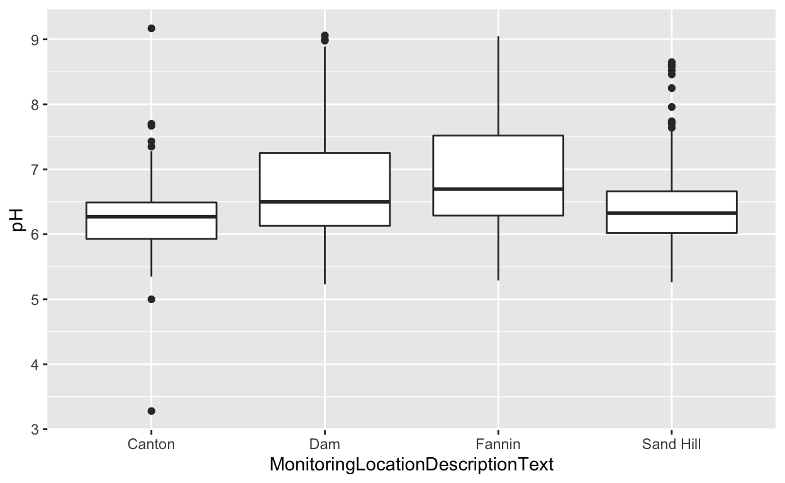
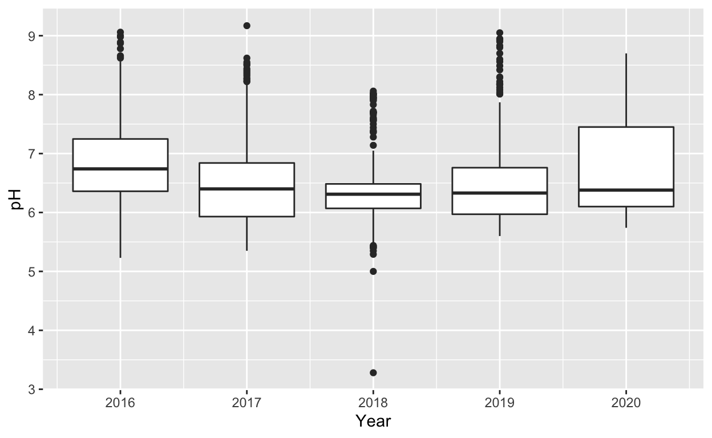
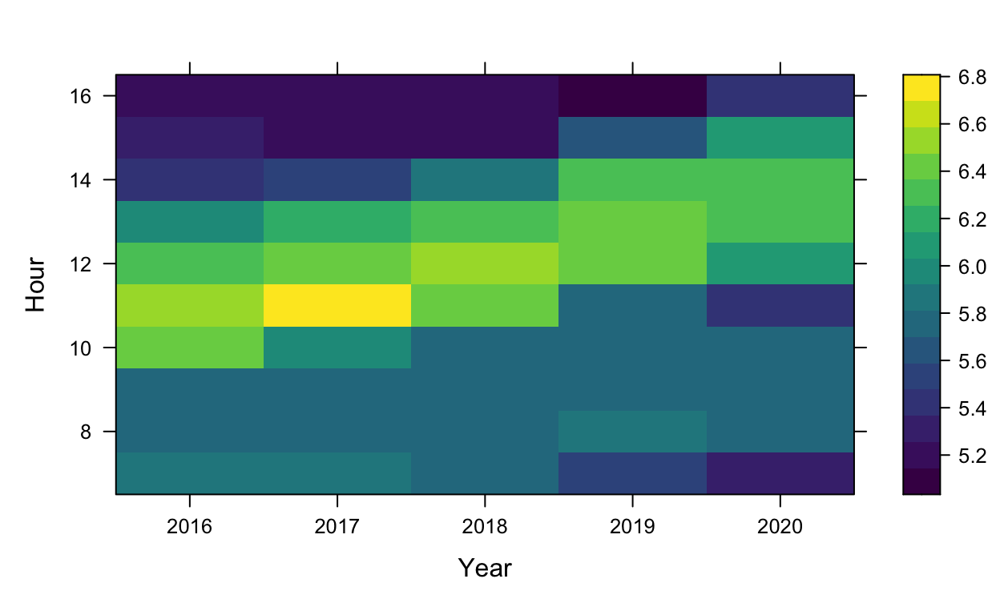
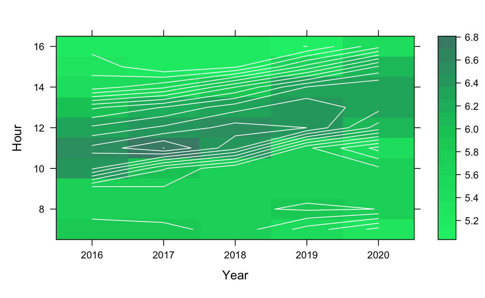

Explore this page to see how I used a machine learning model to predict the pH of the Ross Barnett Reservoir. You may click “Show code” on any of the elements to see their source.
In this project, I am using data from the National Water Quality Monitoring Counsel. The records I choose to include were all samples in the Ross Barnett Reservoir from 4 different areas in the years 2016-2020. I am using the following variables to predict pH: - monitoring location (4 different values) - hour (24 different values) - year (4 different values)
Below is a table of the base dataset I will be using.
knitr::kable(FinalProjectData_Clean)%>%
kableExtra::kable_styling("striped")%>%
kableExtra::scroll_box(width = "100%",height="300px")
| OrganizationFormalName | ActivityIdentifier | ActivityStartDate | ActivityStartTime | ProjectIdentifier | MonitoringLocationIdentifier | pH | MonitoringLocationName | MonitoringLocationTypeName | MonitoringLocationDescriptionText | CountyName | ProviderName | Month | Day | Year | Hour | Minute |
|---|---|---|---|---|---|---|---|---|---|---|---|---|---|---|---|---|
| MISSISSIPPI DEPARTMENT OF ENVIRONMENTAL QUALITY | 21MSWQ_WQX-148109-173 | 2018-07-06 | 1899-12-31 09:25:00 | AMBLAKE18 | 21MSWQ_WQX-111B90 | 3.28 | ROSS BARNETT RESERVOIR | Reservoir | NR CANTON OFF HWY 43 | Rankin | STORET | 7 | 6 | 2018 | 9 | 25 |
| MISSISSIPPI DEPARTMENT OF ENVIRONMENTAL QUALITY | 21MSWQ_WQX-147963-173 | 2018-05-04 | 1899-12-31 09:15:00 | AMBLAKE18 | 21MSWQ_WQX-111B90 | 5.00 | ROSS BARNETT RESERVOIR | Reservoir | NR CANTON OFF HWY 43 | Rankin | STORET | 5 | 4 | 2018 | 9 | 15 |
| MISSISSIPPI DEPARTMENT OF ENVIRONMENTAL QUALITY | 21MSWQ_WQX-118274-173 | 2016-05-06 | 1899-12-31 12:40:00 | AMBLAKE16 | 21MSWQ_WQX-111B93 | 5.23 | ROSS BARNETT RESERVOIR | Reservoir | NEAR DAM | Rankin | STORET | 5 | 6 | 2016 | 12 | 40 |
| MISSISSIPPI DEPARTMENT OF ENVIRONMENTAL QUALITY | 21MSWQ_WQX-118275-173 | 2016-05-06 | 1899-12-31 08:20:00 | AMBLAKE16 | 21MSWQ_WQX-549RBR02 | 5.26 | ROSS BARNETT RESERVOIR | Reservoir | NEAR SAND HILL MID-LAKE BELOW HWY 43 4 MILES WEST OF GOSHEN SPRINGS | Rankin | STORET | 5 | 6 | 2016 | 8 | 20 |
| MISSISSIPPI DEPARTMENT OF ENVIRONMENTAL QUALITY | 21MSWQ_WQX-147985-173 | 2018-05-04 | 1899-12-31 13:32:00 | AMBLAKE18 | 21MSWQ_WQX-111B91 | 5.29 | ROSS BARNETT RESERVOIR | Reservoir | NEAR FANNIN JUST OFF PELAHATCHIE RECREATION AREA | Rankin | STORET | 5 | 4 | 2018 | 13 | 32 |
| MISSISSIPPI DEPARTMENT OF ENVIRONMENTAL QUALITY | 21MSWQ_WQX-118275-173 | 2016-05-06 | 1899-12-31 08:20:00 | AMBLAKE16 | 21MSWQ_WQX-549RBR02 | 5.29 | ROSS BARNETT RESERVOIR | Reservoir | NEAR SAND HILL MID-LAKE BELOW HWY 43 4 MILES WEST OF GOSHEN SPRINGS | Rankin | STORET | 5 | 6 | 2016 | 8 | 20 |
| MISSISSIPPI DEPARTMENT OF ENVIRONMENTAL QUALITY | 21MSWQ_WQX-118275-173 | 2016-05-06 | 1899-12-31 08:20:00 | AMBLAKE16 | 21MSWQ_WQX-549RBR02 | 5.30 | ROSS BARNETT RESERVOIR | Reservoir | NEAR SAND HILL MID-LAKE BELOW HWY 43 4 MILES WEST OF GOSHEN SPRINGS | Rankin | STORET | 5 | 6 | 2016 | 8 | 20 |
| MISSISSIPPI DEPARTMENT OF ENVIRONMENTAL QUALITY | 21MSWQ_WQX-118275-173 | 2016-05-06 | 1899-12-31 08:20:00 | AMBLAKE16 | 21MSWQ_WQX-549RBR02 | 5.31 | ROSS BARNETT RESERVOIR | Reservoir | NEAR SAND HILL MID-LAKE BELOW HWY 43 4 MILES WEST OF GOSHEN SPRINGS | Rankin | STORET | 5 | 6 | 2016 | 8 | 20 |
| MISSISSIPPI DEPARTMENT OF ENVIRONMENTAL QUALITY | 21MSWQ_WQX-118275-173 | 2016-05-06 | 1899-12-31 08:20:00 | AMBLAKE16 | 21MSWQ_WQX-549RBR02 | 5.33 | ROSS BARNETT RESERVOIR | Reservoir | NEAR SAND HILL MID-LAKE BELOW HWY 43 4 MILES WEST OF GOSHEN SPRINGS | Rankin | STORET | 5 | 6 | 2016 | 8 | 20 |
| MISSISSIPPI DEPARTMENT OF ENVIRONMENTAL QUALITY | 21MSWQ_WQX-147923-173 | 2018-05-04 | 1899-12-31 12:30:00 | AMBLAKE18 | 21MSWQ_WQX-111B93 | 5.35 | ROSS BARNETT RESERVOIR | Reservoir | NEAR DAM | Rankin | STORET | 5 | 4 | 2018 | 12 | 30 |
| MISSISSIPPI DEPARTMENT OF ENVIRONMENTAL QUALITY | 21MSWQ_WQX-131053-173 | 2017-06-27 | 1899-12-31 09:50:00 | AMBLAKE17 | 21MSWQ_WQX-111B90 | 5.35 | ROSS BARNETT RESERVOIR | Reservoir | NR CANTON OFF HWY 43 | Rankin | STORET | 6 | 27 | 2017 | 9 | 50 |
| MISSISSIPPI DEPARTMENT OF ENVIRONMENTAL QUALITY | 21MSWQ_WQX-118275-173 | 2016-05-06 | 1899-12-31 08:20:00 | AMBLAKE16 | 21MSWQ_WQX-549RBR02 | 5.35 | ROSS BARNETT RESERVOIR | Reservoir | NEAR SAND HILL MID-LAKE BELOW HWY 43 4 MILES WEST OF GOSHEN SPRINGS | Rankin | STORET | 5 | 6 | 2016 | 8 | 20 |
| MISSISSIPPI DEPARTMENT OF ENVIRONMENTAL QUALITY | 21MSWQ_WQX-118275-173 | 2016-05-06 | 1899-12-31 08:20:00 | AMBLAKE16 | 21MSWQ_WQX-549RBR02 | 5.36 | ROSS BARNETT RESERVOIR | Reservoir | NEAR SAND HILL MID-LAKE BELOW HWY 43 4 MILES WEST OF GOSHEN SPRINGS | Rankin | STORET | 5 | 6 | 2016 | 8 | 20 |
| MISSISSIPPI DEPARTMENT OF ENVIRONMENTAL QUALITY | 21MSWQ_WQX-130017-173 | 2017-06-27 | 1899-12-31 08:50:00 | AMBLAKE17 | 21MSWQ_WQX-549RBR02 | 5.36 | ROSS BARNETT RESERVOIR | Reservoir | NEAR SAND HILL MID-LAKE BELOW HWY 43 4 MILES WEST OF GOSHEN SPRINGS | Rankin | STORET | 6 | 27 | 2017 | 8 | 50 |
| MISSISSIPPI DEPARTMENT OF ENVIRONMENTAL QUALITY | 21MSWQ_WQX-118276-173 | 2016-05-06 | 1899-12-31 09:30:00 | AMBLAKE16 | 21MSWQ_WQX-111B90 | 5.37 | ROSS BARNETT RESERVOIR | Reservoir | NR CANTON OFF HWY 43 | Rankin | STORET | 5 | 6 | 2016 | 9 | 30 |
| MISSISSIPPI DEPARTMENT OF ENVIRONMENTAL QUALITY | 21MSWQ_WQX-118276-173 | 2016-05-06 | 1899-12-31 09:30:00 | AMBLAKE16 | 21MSWQ_WQX-111B90 | 5.38 | ROSS BARNETT RESERVOIR | Reservoir | NR CANTON OFF HWY 43 | Rankin | STORET | 5 | 6 | 2016 | 9 | 30 |
| MISSISSIPPI DEPARTMENT OF ENVIRONMENTAL QUALITY | 21MSWQ_WQX-118275-173 | 2016-05-06 | 1899-12-31 08:20:00 | AMBLAKE16 | 21MSWQ_WQX-549RBR02 | 5.38 | ROSS BARNETT RESERVOIR | Reservoir | NEAR SAND HILL MID-LAKE BELOW HWY 43 4 MILES WEST OF GOSHEN SPRINGS | Rankin | STORET | 5 | 6 | 2016 | 8 | 20 |
| MISSISSIPPI DEPARTMENT OF ENVIRONMENTAL QUALITY | 21MSWQ_WQX-130017-173 | 2017-06-27 | 1899-12-31 08:50:00 | AMBLAKE17 | 21MSWQ_WQX-549RBR02 | 5.38 | ROSS BARNETT RESERVOIR | Reservoir | NEAR SAND HILL MID-LAKE BELOW HWY 43 4 MILES WEST OF GOSHEN SPRINGS | Rankin | STORET | 6 | 27 | 2017 | 8 | 50 |
| MISSISSIPPI DEPARTMENT OF ENVIRONMENTAL QUALITY | 21MSWQ_WQX-130017-173 | 2017-06-27 | 1899-12-31 08:50:00 | AMBLAKE17 | 21MSWQ_WQX-549RBR02 | 5.39 | ROSS BARNETT RESERVOIR | Reservoir | NEAR SAND HILL MID-LAKE BELOW HWY 43 4 MILES WEST OF GOSHEN SPRINGS | Rankin | STORET | 6 | 27 | 2017 | 8 | 50 |
| MISSISSIPPI DEPARTMENT OF ENVIRONMENTAL QUALITY | 21MSWQ_WQX-147985-173 | 2018-05-04 | 1899-12-31 13:32:00 | AMBLAKE18 | 21MSWQ_WQX-111B91 | 5.40 | ROSS BARNETT RESERVOIR | Reservoir | NEAR FANNIN JUST OFF PELAHATCHIE RECREATION AREA | Rankin | STORET | 5 | 4 | 2018 | 13 | 32 |
| MISSISSIPPI DEPARTMENT OF ENVIRONMENTAL QUALITY | 21MSWQ_WQX-131053-173 | 2017-06-27 | 1899-12-31 09:50:00 | AMBLAKE17 | 21MSWQ_WQX-111B90 | 5.40 | ROSS BARNETT RESERVOIR | Reservoir | NR CANTON OFF HWY 43 | Rankin | STORET | 6 | 27 | 2017 | 9 | 50 |
| MISSISSIPPI DEPARTMENT OF ENVIRONMENTAL QUALITY | 21MSWQ_WQX-147923-173 | 2018-05-04 | 1899-12-31 12:30:00 | AMBLAKE18 | 21MSWQ_WQX-111B93 | 5.40 | ROSS BARNETT RESERVOIR | Reservoir | NEAR DAM | Rankin | STORET | 5 | 4 | 2018 | 12 | 30 |
| MISSISSIPPI DEPARTMENT OF ENVIRONMENTAL QUALITY | 21MSWQ_WQX-118276-173 | 2016-05-06 | 1899-12-31 09:30:00 | AMBLAKE16 | 21MSWQ_WQX-111B90 | 5.41 | ROSS BARNETT RESERVOIR | Reservoir | NR CANTON OFF HWY 43 | Rankin | STORET | 5 | 6 | 2016 | 9 | 30 |
| MISSISSIPPI DEPARTMENT OF ENVIRONMENTAL QUALITY | 21MSWQ_WQX-147985-173 | 2018-05-04 | 1899-12-31 13:32:00 | AMBLAKE18 | 21MSWQ_WQX-111B91 | 5.42 | ROSS BARNETT RESERVOIR | Reservoir | NEAR FANNIN JUST OFF PELAHATCHIE RECREATION AREA | Rankin | STORET | 5 | 4 | 2018 | 13 | 32 |
| MISSISSIPPI DEPARTMENT OF ENVIRONMENTAL QUALITY | 21MSWQ_WQX-147923-173 | 2018-05-04 | 1899-12-31 12:30:00 | AMBLAKE18 | 21MSWQ_WQX-111B93 | 5.43 | ROSS BARNETT RESERVOIR | Reservoir | NEAR DAM | Rankin | STORET | 5 | 4 | 2018 | 12 | 30 |
| MISSISSIPPI DEPARTMENT OF ENVIRONMENTAL QUALITY | 21MSWQ_WQX-130017-173 | 2017-06-27 | 1899-12-31 08:50:00 | AMBLAKE17 | 21MSWQ_WQX-549RBR02 | 5.43 | ROSS BARNETT RESERVOIR | Reservoir | NEAR SAND HILL MID-LAKE BELOW HWY 43 4 MILES WEST OF GOSHEN SPRINGS | Rankin | STORET | 6 | 27 | 2017 | 8 | 50 |
| MISSISSIPPI DEPARTMENT OF ENVIRONMENTAL QUALITY | 21MSWQ_WQX-147923-173 | 2018-05-04 | 1899-12-31 12:30:00 | AMBLAKE18 | 21MSWQ_WQX-111B93 | 5.44 | ROSS BARNETT RESERVOIR | Reservoir | NEAR DAM | Rankin | STORET | 5 | 4 | 2018 | 12 | 30 |
| MISSISSIPPI DEPARTMENT OF ENVIRONMENTAL QUALITY | 21MSWQ_WQX-130017-173 | 2017-06-27 | 1899-12-31 08:50:00 | AMBLAKE17 | 21MSWQ_WQX-549RBR02 | 5.44 | ROSS BARNETT RESERVOIR | Reservoir | NEAR SAND HILL MID-LAKE BELOW HWY 43 4 MILES WEST OF GOSHEN SPRINGS | Rankin | STORET | 6 | 27 | 2017 | 8 | 50 |
| MISSISSIPPI DEPARTMENT OF ENVIRONMENTAL QUALITY | 21MSWQ_WQX-147923-173 | 2018-05-04 | 1899-12-31 12:30:00 | AMBLAKE18 | 21MSWQ_WQX-111B93 | 5.45 | ROSS BARNETT RESERVOIR | Reservoir | NEAR DAM | Rankin | STORET | 5 | 4 | 2018 | 12 | 30 |
| MISSISSIPPI DEPARTMENT OF ENVIRONMENTAL QUALITY | 21MSWQ_WQX-131053-173 | 2017-06-27 | 1899-12-31 09:50:00 | AMBLAKE17 | 21MSWQ_WQX-111B90 | 5.45 | ROSS BARNETT RESERVOIR | Reservoir | NR CANTON OFF HWY 43 | Rankin | STORET | 6 | 27 | 2017 | 9 | 50 |
| MISSISSIPPI DEPARTMENT OF ENVIRONMENTAL QUALITY | 21MSWQ_WQX-147923-173 | 2018-05-04 | 1899-12-31 12:30:00 | AMBLAKE18 | 21MSWQ_WQX-111B93 | 5.46 | ROSS BARNETT RESERVOIR | Reservoir | NEAR DAM | Rankin | STORET | 5 | 4 | 2018 | 12 | 30 |
| MISSISSIPPI DEPARTMENT OF ENVIRONMENTAL QUALITY | 21MSWQ_WQX-118274-173 | 2016-05-06 | 1899-12-31 12:40:00 | AMBLAKE16 | 21MSWQ_WQX-111B93 | 5.46 | ROSS BARNETT RESERVOIR | Reservoir | NEAR DAM | Rankin | STORET | 5 | 6 | 2016 | 12 | 40 |
| MISSISSIPPI DEPARTMENT OF ENVIRONMENTAL QUALITY | 21MSWQ_WQX-147923-173 | 2018-05-04 | 1899-12-31 12:30:00 | AMBLAKE18 | 21MSWQ_WQX-111B93 | 5.47 | ROSS BARNETT RESERVOIR | Reservoir | NEAR DAM | Rankin | STORET | 5 | 4 | 2018 | 12 | 30 |
| MISSISSIPPI DEPARTMENT OF ENVIRONMENTAL QUALITY | 21MSWQ_WQX-118276-173 | 2016-05-06 | 1899-12-31 09:30:00 | AMBLAKE16 | 21MSWQ_WQX-111B90 | 5.47 | ROSS BARNETT RESERVOIR | Reservoir | NR CANTON OFF HWY 43 | Rankin | STORET | 5 | 6 | 2016 | 9 | 30 |
| MISSISSIPPI DEPARTMENT OF ENVIRONMENTAL QUALITY | 21MSWQ_WQX-131053-173 | 2017-06-27 | 1899-12-31 09:50:00 | AMBLAKE17 | 21MSWQ_WQX-111B90 | 5.47 | ROSS BARNETT RESERVOIR | Reservoir | NR CANTON OFF HWY 43 | Rankin | STORET | 6 | 27 | 2017 | 9 | 50 |
| MISSISSIPPI DEPARTMENT OF ENVIRONMENTAL QUALITY | 21MSWQ_WQX-147985-173 | 2018-05-04 | 1899-12-31 13:32:00 | AMBLAKE18 | 21MSWQ_WQX-111B91 | 5.48 | ROSS BARNETT RESERVOIR | Reservoir | NEAR FANNIN JUST OFF PELAHATCHIE RECREATION AREA | Rankin | STORET | 5 | 4 | 2018 | 13 | 32 |
| MISSISSIPPI DEPARTMENT OF ENVIRONMENTAL QUALITY | 21MSWQ_WQX-131053-173 | 2017-06-27 | 1899-12-31 09:50:00 | AMBLAKE17 | 21MSWQ_WQX-111B90 | 5.48 | ROSS BARNETT RESERVOIR | Reservoir | NR CANTON OFF HWY 43 | Rankin | STORET | 6 | 27 | 2017 | 9 | 50 |
| MISSISSIPPI DEPARTMENT OF ENVIRONMENTAL QUALITY | 21MSWQ_WQX-147923-173 | 2018-05-04 | 1899-12-31 12:30:00 | AMBLAKE18 | 21MSWQ_WQX-111B93 | 5.48 | ROSS BARNETT RESERVOIR | Reservoir | NEAR DAM | Rankin | STORET | 5 | 4 | 2018 | 12 | 30 |
| MISSISSIPPI DEPARTMENT OF ENVIRONMENTAL QUALITY | 21MSWQ_WQX-130017-173 | 2017-06-27 | 1899-12-31 08:50:00 | AMBLAKE17 | 21MSWQ_WQX-549RBR02 | 5.48 | ROSS BARNETT RESERVOIR | Reservoir | NEAR SAND HILL MID-LAKE BELOW HWY 43 4 MILES WEST OF GOSHEN SPRINGS | Rankin | STORET | 6 | 27 | 2017 | 8 | 50 |
| MISSISSIPPI DEPARTMENT OF ENVIRONMENTAL QUALITY | 21MSWQ_WQX-118276-173 | 2016-05-06 | 1899-12-31 09:30:00 | AMBLAKE16 | 21MSWQ_WQX-111B90 | 5.49 | ROSS BARNETT RESERVOIR | Reservoir | NR CANTON OFF HWY 43 | Rankin | STORET | 5 | 6 | 2016 | 9 | 30 |
| MISSISSIPPI DEPARTMENT OF ENVIRONMENTAL QUALITY | 21MSWQ_WQX-131053-173 | 2017-06-27 | 1899-12-31 09:50:00 | AMBLAKE17 | 21MSWQ_WQX-111B90 | 5.49 | ROSS BARNETT RESERVOIR | Reservoir | NR CANTON OFF HWY 43 | Rankin | STORET | 6 | 27 | 2017 | 9 | 50 |
| MISSISSIPPI DEPARTMENT OF ENVIRONMENTAL QUALITY | 21MSWQ_WQX-130017-173 | 2017-06-27 | 1899-12-31 08:50:00 | AMBLAKE17 | 21MSWQ_WQX-549RBR02 | 5.49 | ROSS BARNETT RESERVOIR | Reservoir | NEAR SAND HILL MID-LAKE BELOW HWY 43 4 MILES WEST OF GOSHEN SPRINGS | Rankin | STORET | 6 | 27 | 2017 | 8 | 50 |
| MISSISSIPPI DEPARTMENT OF ENVIRONMENTAL QUALITY | 21MSWQ_WQX-147985-173 | 2018-05-04 | 1899-12-31 13:32:00 | AMBLAKE18 | 21MSWQ_WQX-111B91 | 5.50 | ROSS BARNETT RESERVOIR | Reservoir | NEAR FANNIN JUST OFF PELAHATCHIE RECREATION AREA | Rankin | STORET | 5 | 4 | 2018 | 13 | 32 |
| MISSISSIPPI DEPARTMENT OF ENVIRONMENTAL QUALITY | 21MSWQ_WQX-118276-173 | 2016-05-06 | 1899-12-31 09:30:00 | AMBLAKE16 | 21MSWQ_WQX-111B90 | 5.50 | ROSS BARNETT RESERVOIR | Reservoir | NR CANTON OFF HWY 43 | Rankin | STORET | 5 | 6 | 2016 | 9 | 30 |
| MISSISSIPPI DEPARTMENT OF ENVIRONMENTAL QUALITY | 21MSWQ_WQX-131053-173 | 2017-06-27 | 1899-12-31 09:50:00 | AMBLAKE17 | 21MSWQ_WQX-111B90 | 5.50 | ROSS BARNETT RESERVOIR | Reservoir | NR CANTON OFF HWY 43 | Rankin | STORET | 6 | 27 | 2017 | 9 | 50 |
| MISSISSIPPI DEPARTMENT OF ENVIRONMENTAL QUALITY | 21MSWQ_WQX-147985-173 | 2018-05-04 | 1899-12-31 13:32:00 | AMBLAKE18 | 21MSWQ_WQX-111B91 | 5.51 | ROSS BARNETT RESERVOIR | Reservoir | NEAR FANNIN JUST OFF PELAHATCHIE RECREATION AREA | Rankin | STORET | 5 | 4 | 2018 | 13 | 32 |
| MISSISSIPPI DEPARTMENT OF ENVIRONMENTAL QUALITY | 21MSWQ_WQX-118276-173 | 2016-05-06 | 1899-12-31 09:30:00 | AMBLAKE16 | 21MSWQ_WQX-111B90 | 5.51 | ROSS BARNETT RESERVOIR | Reservoir | NR CANTON OFF HWY 43 | Rankin | STORET | 5 | 6 | 2016 | 9 | 30 |
| MISSISSIPPI DEPARTMENT OF ENVIRONMENTAL QUALITY | 21MSWQ_WQX-131053-173 | 2017-06-27 | 1899-12-31 09:50:00 | AMBLAKE17 | 21MSWQ_WQX-111B90 | 5.51 | ROSS BARNETT RESERVOIR | Reservoir | NR CANTON OFF HWY 43 | Rankin | STORET | 6 | 27 | 2017 | 9 | 50 |
| MISSISSIPPI DEPARTMENT OF ENVIRONMENTAL QUALITY | 21MSWQ_WQX-130017-173 | 2017-06-27 | 1899-12-31 08:50:00 | AMBLAKE17 | 21MSWQ_WQX-549RBR02 | 5.51 | ROSS BARNETT RESERVOIR | Reservoir | NEAR SAND HILL MID-LAKE BELOW HWY 43 4 MILES WEST OF GOSHEN SPRINGS | Rankin | STORET | 6 | 27 | 2017 | 8 | 50 |
| MISSISSIPPI DEPARTMENT OF ENVIRONMENTAL QUALITY | 21MSWQ_WQX-118276-173 | 2016-05-06 | 1899-12-31 09:30:00 | AMBLAKE16 | 21MSWQ_WQX-111B90 | 5.52 | ROSS BARNETT RESERVOIR | Reservoir | NR CANTON OFF HWY 43 | Rankin | STORET | 5 | 6 | 2016 | 9 | 30 |
| MISSISSIPPI DEPARTMENT OF ENVIRONMENTAL QUALITY | 21MSWQ_WQX-131053-173 | 2017-06-27 | 1899-12-31 09:50:00 | AMBLAKE17 | 21MSWQ_WQX-111B90 | 5.52 | ROSS BARNETT RESERVOIR | Reservoir | NR CANTON OFF HWY 43 | Rankin | STORET | 6 | 27 | 2017 | 9 | 50 |
| MISSISSIPPI DEPARTMENT OF ENVIRONMENTAL QUALITY | 21MSWQ_WQX-130017-173 | 2017-06-27 | 1899-12-31 08:50:00 | AMBLAKE17 | 21MSWQ_WQX-549RBR02 | 5.52 | ROSS BARNETT RESERVOIR | Reservoir | NEAR SAND HILL MID-LAKE BELOW HWY 43 4 MILES WEST OF GOSHEN SPRINGS | Rankin | STORET | 6 | 27 | 2017 | 8 | 50 |
| MISSISSIPPI DEPARTMENT OF ENVIRONMENTAL QUALITY | 21MSWQ_WQX-131053-173 | 2017-06-27 | 1899-12-31 09:50:00 | AMBLAKE17 | 21MSWQ_WQX-111B90 | 5.53 | ROSS BARNETT RESERVOIR | Reservoir | NR CANTON OFF HWY 43 | Rankin | STORET | 6 | 27 | 2017 | 9 | 50 |
| MISSISSIPPI DEPARTMENT OF ENVIRONMENTAL QUALITY | 21MSWQ_WQX-147923-173 | 2018-05-04 | 1899-12-31 12:30:00 | AMBLAKE18 | 21MSWQ_WQX-111B93 | 5.54 | ROSS BARNETT RESERVOIR | Reservoir | NEAR DAM | Rankin | STORET | 5 | 4 | 2018 | 12 | 30 |
| MISSISSIPPI DEPARTMENT OF ENVIRONMENTAL QUALITY | 21MSWQ_WQX-118276-173 | 2016-05-06 | 1899-12-31 09:30:00 | AMBLAKE16 | 21MSWQ_WQX-111B90 | 5.54 | ROSS BARNETT RESERVOIR | Reservoir | NR CANTON OFF HWY 43 | Rankin | STORET | 5 | 6 | 2016 | 9 | 30 |
| MISSISSIPPI DEPARTMENT OF ENVIRONMENTAL QUALITY | 21MSWQ_WQX-118276-173 | 2016-05-06 | 1899-12-31 09:30:00 | AMBLAKE16 | 21MSWQ_WQX-111B90 | 5.55 | ROSS BARNETT RESERVOIR | Reservoir | NR CANTON OFF HWY 43 | Rankin | STORET | 5 | 6 | 2016 | 9 | 30 |
| MISSISSIPPI DEPARTMENT OF ENVIRONMENTAL QUALITY | 21MSWQ_WQX-131053-173 | 2017-06-27 | 1899-12-31 09:50:00 | AMBLAKE17 | 21MSWQ_WQX-111B90 | 5.55 | ROSS BARNETT RESERVOIR | Reservoir | NR CANTON OFF HWY 43 | Rankin | STORET | 6 | 27 | 2017 | 9 | 50 |
| MISSISSIPPI DEPARTMENT OF ENVIRONMENTAL QUALITY | 21MSWQ_WQX-131053-173 | 2017-06-27 | 1899-12-31 09:50:00 | AMBLAKE17 | 21MSWQ_WQX-111B90 | 5.56 | ROSS BARNETT RESERVOIR | Reservoir | NR CANTON OFF HWY 43 | Rankin | STORET | 6 | 27 | 2017 | 9 | 50 |
| MISSISSIPPI DEPARTMENT OF ENVIRONMENTAL QUALITY | 21MSWQ_WQX-118277-173 | 2016-05-06 | 1899-12-31 14:00:00 | AMBLAKE16 | 21MSWQ_WQX-111B91 | 5.56 | ROSS BARNETT RESERVOIR | Reservoir | NEAR FANNIN JUST OFF PELAHATCHIE RECREATION AREA | Rankin | STORET | 5 | 6 | 2016 | 14 | 0 |
| MISSISSIPPI DEPARTMENT OF ENVIRONMENTAL QUALITY | 21MSWQ_WQX-131053-173 | 2017-06-27 | 1899-12-31 09:50:00 | AMBLAKE17 | 21MSWQ_WQX-111B90 | 5.57 | ROSS BARNETT RESERVOIR | Reservoir | NR CANTON OFF HWY 43 | Rankin | STORET | 6 | 27 | 2017 | 9 | 50 |
| MISSISSIPPI DEPARTMENT OF ENVIRONMENTAL QUALITY | 21MSWQ_WQX-147985-173 | 2018-05-04 | 1899-12-31 13:32:00 | AMBLAKE18 | 21MSWQ_WQX-111B91 | 5.58 | ROSS BARNETT RESERVOIR | Reservoir | NEAR FANNIN JUST OFF PELAHATCHIE RECREATION AREA | Rankin | STORET | 5 | 4 | 2018 | 13 | 32 |
| MISSISSIPPI DEPARTMENT OF ENVIRONMENTAL QUALITY | 21MSWQ_WQX-147923-173 | 2018-05-04 | 1899-12-31 12:30:00 | AMBLAKE18 | 21MSWQ_WQX-111B93 | 5.58 | ROSS BARNETT RESERVOIR | Reservoir | NEAR DAM | Rankin | STORET | 5 | 4 | 2018 | 12 | 30 |
| MISSISSIPPI DEPARTMENT OF ENVIRONMENTAL QUALITY | 21MSWQ_WQX-147985-173 | 2018-05-04 | 1899-12-31 13:32:00 | AMBLAKE18 | 21MSWQ_WQX-111B91 | 5.60 | ROSS BARNETT RESERVOIR | Reservoir | NEAR FANNIN JUST OFF PELAHATCHIE RECREATION AREA | Rankin | STORET | 5 | 4 | 2018 | 13 | 32 |
| MISSISSIPPI DEPARTMENT OF ENVIRONMENTAL QUALITY | 21MSWQ_WQX-131054-173 | 2017-08-22 | 1899-12-31 09:30:00 | AMBLAKE17 | 21MSWQ_WQX-111B90 | 5.60 | ROSS BARNETT RESERVOIR | Reservoir | NR CANTON OFF HWY 43 | Rankin | STORET | 8 | 22 | 2017 | 9 | 30 |
| MISSISSIPPI DEPARTMENT OF ENVIRONMENTAL QUALITY | 21MSWQ_WQX-156297-173 | 2019-05-08 | 1899-12-31 12:50:00 | AMBLAKE19 | 21MSWQ_WQX-111B93 | 5.60 | ROSS BARNETT RESERVOIR | Reservoir | NEAR DAM | Rankin | STORET | 5 | 8 | 2019 | 12 | 50 |
| MISSISSIPPI DEPARTMENT OF ENVIRONMENTAL QUALITY | 21MSWQ_WQX-147963-173 | 2018-05-04 | 1899-12-31 09:15:00 | AMBLAKE18 | 21MSWQ_WQX-111B90 | 5.61 | ROSS BARNETT RESERVOIR | Reservoir | NR CANTON OFF HWY 43 | Rankin | STORET | 5 | 4 | 2018 | 9 | 15 |
| MISSISSIPPI DEPARTMENT OF ENVIRONMENTAL QUALITY | 21MSWQ_WQX-156307-173 | 2019-07-17 | 1899-12-31 09:36:00 | AMBLAKE19 | 21MSWQ_WQX-111B90 | 5.61 | ROSS BARNETT RESERVOIR | Reservoir | NR CANTON OFF HWY 43 | Rankin | STORET | 7 | 17 | 2019 | 9 | 36 |
| MISSISSIPPI DEPARTMENT OF ENVIRONMENTAL QUALITY | 21MSWQ_WQX-147923-173 | 2018-05-04 | 1899-12-31 12:30:00 | AMBLAKE18 | 21MSWQ_WQX-111B93 | 5.62 | ROSS BARNETT RESERVOIR | Reservoir | NEAR DAM | Rankin | STORET | 5 | 4 | 2018 | 12 | 30 |
| MISSISSIPPI DEPARTMENT OF ENVIRONMENTAL QUALITY | 21MSWQ_WQX-131054-173 | 2017-08-22 | 1899-12-31 09:30:00 | AMBLAKE17 | 21MSWQ_WQX-111B90 | 5.62 | ROSS BARNETT RESERVOIR | Reservoir | NR CANTON OFF HWY 43 | Rankin | STORET | 8 | 22 | 2017 | 9 | 30 |
| MISSISSIPPI DEPARTMENT OF ENVIRONMENTAL QUALITY | 21MSWQ_WQX-156307-173 | 2019-07-17 | 1899-12-31 09:36:00 | AMBLAKE19 | 21MSWQ_WQX-111B90 | 5.62 | ROSS BARNETT RESERVOIR | Reservoir | NR CANTON OFF HWY 43 | Rankin | STORET | 7 | 17 | 2019 | 9 | 36 |
| MISSISSIPPI DEPARTMENT OF ENVIRONMENTAL QUALITY | 21MSWQ_WQX-147963-173 | 2018-05-04 | 1899-12-31 09:15:00 | AMBLAKE18 | 21MSWQ_WQX-111B90 | 5.63 | ROSS BARNETT RESERVOIR | Reservoir | NR CANTON OFF HWY 43 | Rankin | STORET | 5 | 4 | 2018 | 9 | 15 |
| MISSISSIPPI DEPARTMENT OF ENVIRONMENTAL QUALITY | 21MSWQ_WQX-156307-173 | 2019-07-17 | 1899-12-31 09:36:00 | AMBLAKE19 | 21MSWQ_WQX-111B90 | 5.63 | ROSS BARNETT RESERVOIR | Reservoir | NR CANTON OFF HWY 43 | Rankin | STORET | 7 | 17 | 2019 | 9 | 36 |
| MISSISSIPPI DEPARTMENT OF ENVIRONMENTAL QUALITY | 21MSWQ_WQX-147963-173 | 2018-05-04 | 1899-12-31 09:15:00 | AMBLAKE18 | 21MSWQ_WQX-111B90 | 5.64 | ROSS BARNETT RESERVOIR | Reservoir | NR CANTON OFF HWY 43 | Rankin | STORET | 5 | 4 | 2018 | 9 | 15 |
| MISSISSIPPI DEPARTMENT OF ENVIRONMENTAL QUALITY | 21MSWQ_WQX-130012-173 | 2017-05-17 | 1899-12-31 15:00:00 | AMBLAKE17 | 21MSWQ_WQX-111B93 | 5.64 | ROSS BARNETT RESERVOIR | Reservoir | NEAR DAM | Rankin | STORET | 5 | 17 | 2017 | 15 | 0 |
| MISSISSIPPI DEPARTMENT OF ENVIRONMENTAL QUALITY | 21MSWQ_WQX-156297-173 | 2019-05-08 | 1899-12-31 12:50:00 | AMBLAKE19 | 21MSWQ_WQX-111B93 | 5.64 | ROSS BARNETT RESERVOIR | Reservoir | NEAR DAM | Rankin | STORET | 5 | 8 | 2019 | 12 | 50 |
| MISSISSIPPI DEPARTMENT OF ENVIRONMENTAL QUALITY | 21MSWQ_WQX-156307-173 | 2019-07-17 | 1899-12-31 09:36:00 | AMBLAKE19 | 21MSWQ_WQX-111B90 | 5.64 | ROSS BARNETT RESERVOIR | Reservoir | NR CANTON OFF HWY 43 | Rankin | STORET | 7 | 17 | 2019 | 9 | 36 |
| MISSISSIPPI DEPARTMENT OF ENVIRONMENTAL QUALITY | 21MSWQ_WQX-147923-173 | 2018-05-04 | 1899-12-31 12:30:00 | AMBLAKE18 | 21MSWQ_WQX-111B93 | 5.65 | ROSS BARNETT RESERVOIR | Reservoir | NEAR DAM | Rankin | STORET | 5 | 4 | 2018 | 12 | 30 |
| MISSISSIPPI DEPARTMENT OF ENVIRONMENTAL QUALITY | 21MSWQ_WQX-118279-173 | 2016-06-21 | 1899-12-31 08:07:00 | AMBLAKE16 | 21MSWQ_WQX-549RBR02 | 5.65 | ROSS BARNETT RESERVOIR | Reservoir | NEAR SAND HILL MID-LAKE BELOW HWY 43 4 MILES WEST OF GOSHEN SPRINGS | Rankin | STORET | 6 | 21 | 2016 | 8 | 7 |
| MISSISSIPPI DEPARTMENT OF ENVIRONMENTAL QUALITY | 21MSWQ_WQX-156299-173 | 2019-05-08 | 1899-12-31 09:59:00 | AMBLAKE19 | 21MSWQ_WQX-111B90 | 5.65 | ROSS BARNETT RESERVOIR | Reservoir | NR CANTON OFF HWY 43 | Rankin | STORET | 5 | 8 | 2019 | 9 | 59 |
| MISSISSIPPI DEPARTMENT OF ENVIRONMENTAL QUALITY | 21MSWQ_WQX-130012-173 | 2017-05-17 | 1899-12-31 15:00:00 | AMBLAKE17 | 21MSWQ_WQX-111B93 | 5.66 | ROSS BARNETT RESERVOIR | Reservoir | NEAR DAM | Rankin | STORET | 5 | 17 | 2017 | 15 | 0 |
| MISSISSIPPI DEPARTMENT OF ENVIRONMENTAL QUALITY | 21MSWQ_WQX-130018-173 | 2017-06-26 | 1899-12-31 13:36:00 | AMBLAKE17 | 21MSWQ_WQX-111B91 | 5.66 | ROSS BARNETT RESERVOIR | Reservoir | NEAR FANNIN JUST OFF PELAHATCHIE RECREATION AREA | Rankin | STORET | 6 | 26 | 2017 | 13 | 36 |
| MISSISSIPPI DEPARTMENT OF ENVIRONMENTAL QUALITY | 21MSWQ_WQX-131054-173 | 2017-08-22 | 1899-12-31 09:30:00 | AMBLAKE17 | 21MSWQ_WQX-111B90 | 5.66 | ROSS BARNETT RESERVOIR | Reservoir | NR CANTON OFF HWY 43 | Rankin | STORET | 8 | 22 | 2017 | 9 | 30 |
| MISSISSIPPI DEPARTMENT OF ENVIRONMENTAL QUALITY | 21MSWQ_WQX-156299-173 | 2019-05-08 | 1899-12-31 09:59:00 | AMBLAKE19 | 21MSWQ_WQX-111B90 | 5.66 | ROSS BARNETT RESERVOIR | Reservoir | NR CANTON OFF HWY 43 | Rankin | STORET | 5 | 8 | 2019 | 9 | 59 |
| MISSISSIPPI DEPARTMENT OF ENVIRONMENTAL QUALITY | 21MSWQ_WQX-147963-173 | 2018-05-04 | 1899-12-31 09:15:00 | AMBLAKE18 | 21MSWQ_WQX-111B90 | 5.67 | ROSS BARNETT RESERVOIR | Reservoir | NR CANTON OFF HWY 43 | Rankin | STORET | 5 | 4 | 2018 | 9 | 15 |
| MISSISSIPPI DEPARTMENT OF ENVIRONMENTAL QUALITY | 21MSWQ_WQX-130012-173 | 2017-05-17 | 1899-12-31 15:00:00 | AMBLAKE17 | 21MSWQ_WQX-111B93 | 5.67 | ROSS BARNETT RESERVOIR | Reservoir | NEAR DAM | Rankin | STORET | 5 | 17 | 2017 | 15 | 0 |
| MISSISSIPPI DEPARTMENT OF ENVIRONMENTAL QUALITY | 21MSWQ_WQX-118274-173 | 2016-05-06 | 1899-12-31 12:40:00 | AMBLAKE16 | 21MSWQ_WQX-111B93 | 5.67 | ROSS BARNETT RESERVOIR | Reservoir | NEAR DAM | Rankin | STORET | 5 | 6 | 2016 | 12 | 40 |
| MISSISSIPPI DEPARTMENT OF ENVIRONMENTAL QUALITY | 21MSWQ_WQX-131054-173 | 2017-08-22 | 1899-12-31 09:30:00 | AMBLAKE17 | 21MSWQ_WQX-111B90 | 5.67 | ROSS BARNETT RESERVOIR | Reservoir | NR CANTON OFF HWY 43 | Rankin | STORET | 8 | 22 | 2017 | 9 | 30 |
| MISSISSIPPI DEPARTMENT OF ENVIRONMENTAL QUALITY | 21MSWQ_WQX-156299-173 | 2019-05-08 | 1899-12-31 09:59:00 | AMBLAKE19 | 21MSWQ_WQX-111B90 | 5.67 | ROSS BARNETT RESERVOIR | Reservoir | NR CANTON OFF HWY 43 | Rankin | STORET | 5 | 8 | 2019 | 9 | 59 |
| MISSISSIPPI DEPARTMENT OF ENVIRONMENTAL QUALITY | 21MSWQ_WQX-156307-173 | 2019-07-17 | 1899-12-31 09:36:00 | AMBLAKE19 | 21MSWQ_WQX-111B90 | 5.67 | ROSS BARNETT RESERVOIR | Reservoir | NR CANTON OFF HWY 43 | Rankin | STORET | 7 | 17 | 2019 | 9 | 36 |
| MISSISSIPPI DEPARTMENT OF ENVIRONMENTAL QUALITY | 21MSWQ_WQX-130012-173 | 2017-05-17 | 1899-12-31 15:00:00 | AMBLAKE17 | 21MSWQ_WQX-111B93 | 5.68 | ROSS BARNETT RESERVOIR | Reservoir | NEAR DAM | Rankin | STORET | 5 | 17 | 2017 | 15 | 0 |
| MISSISSIPPI DEPARTMENT OF ENVIRONMENTAL QUALITY | 21MSWQ_WQX-130018-173 | 2017-06-26 | 1899-12-31 13:36:00 | AMBLAKE17 | 21MSWQ_WQX-111B91 | 5.68 | ROSS BARNETT RESERVOIR | Reservoir | NEAR FANNIN JUST OFF PELAHATCHIE RECREATION AREA | Rankin | STORET | 6 | 26 | 2017 | 13 | 36 |
| MISSISSIPPI DEPARTMENT OF ENVIRONMENTAL QUALITY | 21MSWQ_WQX-156299-173 | 2019-05-08 | 1899-12-31 09:59:00 | AMBLAKE19 | 21MSWQ_WQX-111B90 | 5.68 | ROSS BARNETT RESERVOIR | Reservoir | NR CANTON OFF HWY 43 | Rankin | STORET | 5 | 8 | 2019 | 9 | 59 |
| MISSISSIPPI DEPARTMENT OF ENVIRONMENTAL QUALITY | 21MSWQ_WQX-156297-173 | 2019-05-08 | 1899-12-31 12:50:00 | AMBLAKE19 | 21MSWQ_WQX-111B93 | 5.68 | ROSS BARNETT RESERVOIR | Reservoir | NEAR DAM | Rankin | STORET | 5 | 8 | 2019 | 12 | 50 |
| MISSISSIPPI DEPARTMENT OF ENVIRONMENTAL QUALITY | 21MSWQ_WQX-156307-173 | 2019-07-17 | 1899-12-31 09:36:00 | AMBLAKE19 | 21MSWQ_WQX-111B90 | 5.68 | ROSS BARNETT RESERVOIR | Reservoir | NR CANTON OFF HWY 43 | Rankin | STORET | 7 | 17 | 2019 | 9 | 36 |
| MISSISSIPPI DEPARTMENT OF ENVIRONMENTAL QUALITY | 21MSWQ_WQX-130012-173 | 2017-05-17 | 1899-12-31 15:00:00 | AMBLAKE17 | 21MSWQ_WQX-111B93 | 5.69 | ROSS BARNETT RESERVOIR | Reservoir | NEAR DAM | Rankin | STORET | 5 | 17 | 2017 | 15 | 0 |
| MISSISSIPPI DEPARTMENT OF ENVIRONMENTAL QUALITY | 21MSWQ_WQX-130018-173 | 2017-06-26 | 1899-12-31 13:36:00 | AMBLAKE17 | 21MSWQ_WQX-111B91 | 5.69 | ROSS BARNETT RESERVOIR | Reservoir | NEAR FANNIN JUST OFF PELAHATCHIE RECREATION AREA | Rankin | STORET | 6 | 26 | 2017 | 13 | 36 |
| MISSISSIPPI DEPARTMENT OF ENVIRONMENTAL QUALITY | 21MSWQ_WQX-131054-173 | 2017-08-22 | 1899-12-31 09:30:00 | AMBLAKE17 | 21MSWQ_WQX-111B90 | 5.69 | ROSS BARNETT RESERVOIR | Reservoir | NR CANTON OFF HWY 43 | Rankin | STORET | 8 | 22 | 2017 | 9 | 30 |
| MISSISSIPPI DEPARTMENT OF ENVIRONMENTAL QUALITY | 21MSWQ_WQX-156307-173 | 2019-07-17 | 1899-12-31 09:36:00 | AMBLAKE19 | 21MSWQ_WQX-111B90 | 5.69 | ROSS BARNETT RESERVOIR | Reservoir | NR CANTON OFF HWY 43 | Rankin | STORET | 7 | 17 | 2019 | 9 | 36 |
| MISSISSIPPI DEPARTMENT OF ENVIRONMENTAL QUALITY | 21MSWQ_WQX-147923-173 | 2018-05-04 | 1899-12-31 12:30:00 | AMBLAKE18 | 21MSWQ_WQX-111B93 | 5.70 | ROSS BARNETT RESERVOIR | Reservoir | NEAR DAM | Rankin | STORET | 5 | 4 | 2018 | 12 | 30 |
| MISSISSIPPI DEPARTMENT OF ENVIRONMENTAL QUALITY | 21MSWQ_WQX-130012-173 | 2017-05-17 | 1899-12-31 15:00:00 | AMBLAKE17 | 21MSWQ_WQX-111B93 | 5.70 | ROSS BARNETT RESERVOIR | Reservoir | NEAR DAM | Rankin | STORET | 5 | 17 | 2017 | 15 | 0 |
| MISSISSIPPI DEPARTMENT OF ENVIRONMENTAL QUALITY | 21MSWQ_WQX-131054-173 | 2017-08-22 | 1899-12-31 09:30:00 | AMBLAKE17 | 21MSWQ_WQX-111B90 | 5.70 | ROSS BARNETT RESERVOIR | Reservoir | NR CANTON OFF HWY 43 | Rankin | STORET | 8 | 22 | 2017 | 9 | 30 |
| MISSISSIPPI DEPARTMENT OF ENVIRONMENTAL QUALITY | 21MSWQ_WQX-118279-173 | 2016-06-21 | 1899-12-31 08:07:00 | AMBLAKE16 | 21MSWQ_WQX-549RBR02 | 5.70 | ROSS BARNETT RESERVOIR | Reservoir | NEAR SAND HILL MID-LAKE BELOW HWY 43 4 MILES WEST OF GOSHEN SPRINGS | Rankin | STORET | 6 | 21 | 2016 | 8 | 7 |
| MISSISSIPPI DEPARTMENT OF ENVIRONMENTAL QUALITY | 21MSWQ_WQX-156299-173 | 2019-05-08 | 1899-12-31 09:59:00 | AMBLAKE19 | 21MSWQ_WQX-111B90 | 5.70 | ROSS BARNETT RESERVOIR | Reservoir | NR CANTON OFF HWY 43 | Rankin | STORET | 5 | 8 | 2019 | 9 | 59 |
| MISSISSIPPI DEPARTMENT OF ENVIRONMENTAL QUALITY | 21MSWQ_WQX-156307-173 | 2019-07-17 | 1899-12-31 09:36:00 | AMBLAKE19 | 21MSWQ_WQX-111B90 | 5.70 | ROSS BARNETT RESERVOIR | Reservoir | NR CANTON OFF HWY 43 | Rankin | STORET | 7 | 17 | 2019 | 9 | 36 |
| MISSISSIPPI DEPARTMENT OF ENVIRONMENTAL QUALITY | 21MSWQ_WQX-147963-173 | 2018-05-04 | 1899-12-31 09:15:00 | AMBLAKE18 | 21MSWQ_WQX-111B90 | 5.71 | ROSS BARNETT RESERVOIR | Reservoir | NR CANTON OFF HWY 43 | Rankin | STORET | 5 | 4 | 2018 | 9 | 15 |
| MISSISSIPPI DEPARTMENT OF ENVIRONMENTAL QUALITY | 21MSWQ_WQX-130012-173 | 2017-05-17 | 1899-12-31 15:00:00 | AMBLAKE17 | 21MSWQ_WQX-111B93 | 5.71 | ROSS BARNETT RESERVOIR | Reservoir | NEAR DAM | Rankin | STORET | 5 | 17 | 2017 | 15 | 0 |
| MISSISSIPPI DEPARTMENT OF ENVIRONMENTAL QUALITY | 21MSWQ_WQX-156299-173 | 2019-05-08 | 1899-12-31 09:59:00 | AMBLAKE19 | 21MSWQ_WQX-111B90 | 5.71 | ROSS BARNETT RESERVOIR | Reservoir | NR CANTON OFF HWY 43 | Rankin | STORET | 5 | 8 | 2019 | 9 | 59 |
| MISSISSIPPI DEPARTMENT OF ENVIRONMENTAL QUALITY | 21MSWQ_WQX-130012-173 | 2017-05-17 | 1899-12-31 15:00:00 | AMBLAKE17 | 21MSWQ_WQX-111B93 | 5.72 | ROSS BARNETT RESERVOIR | Reservoir | NEAR DAM | Rankin | STORET | 5 | 17 | 2017 | 15 | 0 |
| MISSISSIPPI DEPARTMENT OF ENVIRONMENTAL QUALITY | 21MSWQ_WQX-156299-173 | 2019-05-08 | 1899-12-31 09:59:00 | AMBLAKE19 | 21MSWQ_WQX-111B90 | 5.72 | ROSS BARNETT RESERVOIR | Reservoir | NR CANTON OFF HWY 43 | Rankin | STORET | 5 | 8 | 2019 | 9 | 59 |
| MISSISSIPPI DEPARTMENT OF ENVIRONMENTAL QUALITY | 21MSWQ_WQX-130018-173 | 2017-06-26 | 1899-12-31 13:36:00 | AMBLAKE17 | 21MSWQ_WQX-111B91 | 5.73 | ROSS BARNETT RESERVOIR | Reservoir | NEAR FANNIN JUST OFF PELAHATCHIE RECREATION AREA | Rankin | STORET | 6 | 26 | 2017 | 13 | 36 |
| MISSISSIPPI DEPARTMENT OF ENVIRONMENTAL QUALITY | 21MSWQ_WQX-130019-173 | 2017-07-18 | 1899-12-31 13:00:00 | AMBLAKE17 | 21MSWQ_WQX-111B93 | 5.73 | ROSS BARNETT RESERVOIR | Reservoir | NEAR DAM | Rankin | STORET | 7 | 18 | 2017 | 13 | 0 |
| MISSISSIPPI DEPARTMENT OF ENVIRONMENTAL QUALITY | 21MSWQ_WQX-118277-173 | 2016-05-06 | 1899-12-31 14:00:00 | AMBLAKE16 | 21MSWQ_WQX-111B91 | 5.74 | ROSS BARNETT RESERVOIR | Reservoir | NEAR FANNIN JUST OFF PELAHATCHIE RECREATION AREA | Rankin | STORET | 5 | 6 | 2016 | 14 | 0 |
| MISSISSIPPI DEPARTMENT OF ENVIRONMENTAL QUALITY | 21MSWQ_WQX-130018-173 | 2017-06-26 | 1899-12-31 13:36:00 | AMBLAKE17 | 21MSWQ_WQX-111B91 | 5.74 | ROSS BARNETT RESERVOIR | Reservoir | NEAR FANNIN JUST OFF PELAHATCHIE RECREATION AREA | Rankin | STORET | 6 | 26 | 2017 | 13 | 36 |
| MISSISSIPPI DEPARTMENT OF ENVIRONMENTAL QUALITY | 21MSWQ_WQX-130019-173 | 2017-07-18 | 1899-12-31 13:00:00 | AMBLAKE17 | 21MSWQ_WQX-111B93 | 5.74 | ROSS BARNETT RESERVOIR | Reservoir | NEAR DAM | Rankin | STORET | 7 | 18 | 2017 | 13 | 0 |
| MISSISSIPPI DEPARTMENT OF ENVIRONMENTAL QUALITY | 21MSWQ_WQX-130025-173 | 2017-08-22 | 1899-12-31 12:20:00 | AMBLAKE17 | 21MSWQ_WQX-111B91 | 5.74 | ROSS BARNETT RESERVOIR | Reservoir | NEAR FANNIN JUST OFF PELAHATCHIE RECREATION AREA | Rankin | STORET | 8 | 22 | 2017 | 12 | 20 |
| MISSISSIPPI DEPARTMENT OF ENVIRONMENTAL QUALITY | 21MSWQ_WQX-156297-173 | 2019-05-08 | 1899-12-31 12:50:00 | AMBLAKE19 | 21MSWQ_WQX-111B93 | 5.74 | ROSS BARNETT RESERVOIR | Reservoir | NEAR DAM | Rankin | STORET | 5 | 8 | 2019 | 12 | 50 |
| MISSISSIPPI DEPARTMENT OF ENVIRONMENTAL QUALITY | 21MSWQ_WQX-157726-173 | 2020-05-29 | 1899-12-31 15:00:00 | AMBLAKE20 | 21MSWQ_WQX-111B93 | 5.74 | ROSS BARNETT RESERVOIR | Reservoir | NEAR DAM | Rankin | STORET | 5 | 29 | 2020 | 15 | 0 |
| MISSISSIPPI DEPARTMENT OF ENVIRONMENTAL QUALITY | 21MSWQ_WQX-169013-173 | 2020-06-26 | 1899-12-31 09:53:00 | AMBLAKE20 | 21MSWQ_WQX-111B90 | 5.74 | ROSS BARNETT RESERVOIR | Reservoir | NR CANTON OFF HWY 43 | Rankin | STORET | 6 | 26 | 2020 | 9 | 53 |
| MISSISSIPPI DEPARTMENT OF ENVIRONMENTAL QUALITY | 21MSWQ_WQX-156297-173 | 2019-05-08 | 1899-12-31 12:50:00 | AMBLAKE19 | 21MSWQ_WQX-111B93 | 5.75 | ROSS BARNETT RESERVOIR | Reservoir | NEAR DAM | Rankin | STORET | 5 | 8 | 2019 | 12 | 50 |
| MISSISSIPPI DEPARTMENT OF ENVIRONMENTAL QUALITY | 21MSWQ_WQX-156314-173 | 2019-08-15 | 1899-12-31 09:05:00 | AMBLAKE19 | 21MSWQ_WQX-549RBR02 | 5.75 | ROSS BARNETT RESERVOIR | Reservoir | NEAR SAND HILL MID-LAKE BELOW HWY 43 4 MILES WEST OF GOSHEN SPRINGS | Rankin | STORET | 8 | 15 | 2019 | 9 | 5 |
| MISSISSIPPI DEPARTMENT OF ENVIRONMENTAL QUALITY | 21MSWQ_WQX-157726-173 | 2020-05-29 | 1899-12-31 15:00:00 | AMBLAKE20 | 21MSWQ_WQX-111B93 | 5.75 | ROSS BARNETT RESERVOIR | Reservoir | NEAR DAM | Rankin | STORET | 5 | 29 | 2020 | 15 | 0 |
| MISSISSIPPI DEPARTMENT OF ENVIRONMENTAL QUALITY | 21MSWQ_WQX-169013-173 | 2020-06-26 | 1899-12-31 09:53:00 | AMBLAKE20 | 21MSWQ_WQX-111B90 | 5.75 | ROSS BARNETT RESERVOIR | Reservoir | NR CANTON OFF HWY 43 | Rankin | STORET | 6 | 26 | 2020 | 9 | 53 |
| MISSISSIPPI DEPARTMENT OF ENVIRONMENTAL QUALITY | 21MSWQ_WQX-147963-173 | 2018-05-04 | 1899-12-31 09:15:00 | AMBLAKE18 | 21MSWQ_WQX-111B90 | 5.76 | ROSS BARNETT RESERVOIR | Reservoir | NR CANTON OFF HWY 43 | Rankin | STORET | 5 | 4 | 2018 | 9 | 15 |
| MISSISSIPPI DEPARTMENT OF ENVIRONMENTAL QUALITY | 21MSWQ_WQX-130012-173 | 2017-05-17 | 1899-12-31 15:00:00 | AMBLAKE17 | 21MSWQ_WQX-111B93 | 5.76 | ROSS BARNETT RESERVOIR | Reservoir | NEAR DAM | Rankin | STORET | 5 | 17 | 2017 | 15 | 0 |
| MISSISSIPPI DEPARTMENT OF ENVIRONMENTAL QUALITY | 21MSWQ_WQX-118279-173 | 2016-06-21 | 1899-12-31 08:07:00 | AMBLAKE16 | 21MSWQ_WQX-549RBR02 | 5.76 | ROSS BARNETT RESERVOIR | Reservoir | NEAR SAND HILL MID-LAKE BELOW HWY 43 4 MILES WEST OF GOSHEN SPRINGS | Rankin | STORET | 6 | 21 | 2016 | 8 | 7 |
| MISSISSIPPI DEPARTMENT OF ENVIRONMENTAL QUALITY | 21MSWQ_WQX-156299-173 | 2019-05-08 | 1899-12-31 09:59:00 | AMBLAKE19 | 21MSWQ_WQX-111B90 | 5.76 | ROSS BARNETT RESERVOIR | Reservoir | NR CANTON OFF HWY 43 | Rankin | STORET | 5 | 8 | 2019 | 9 | 59 |
| MISSISSIPPI DEPARTMENT OF ENVIRONMENTAL QUALITY | 21MSWQ_WQX-156297-173 | 2019-05-08 | 1899-12-31 12:50:00 | AMBLAKE19 | 21MSWQ_WQX-111B93 | 5.76 | ROSS BARNETT RESERVOIR | Reservoir | NEAR DAM | Rankin | STORET | 5 | 8 | 2019 | 12 | 50 |
| MISSISSIPPI DEPARTMENT OF ENVIRONMENTAL QUALITY | 21MSWQ_WQX-156314-173 | 2019-08-15 | 1899-12-31 09:05:00 | AMBLAKE19 | 21MSWQ_WQX-549RBR02 | 5.76 | ROSS BARNETT RESERVOIR | Reservoir | NEAR SAND HILL MID-LAKE BELOW HWY 43 4 MILES WEST OF GOSHEN SPRINGS | Rankin | STORET | 8 | 15 | 2019 | 9 | 5 |
| MISSISSIPPI DEPARTMENT OF ENVIRONMENTAL QUALITY | 21MSWQ_WQX-169013-173 | 2020-06-26 | 1899-12-31 09:53:00 | AMBLAKE20 | 21MSWQ_WQX-111B90 | 5.76 | ROSS BARNETT RESERVOIR | Reservoir | NR CANTON OFF HWY 43 | Rankin | STORET | 6 | 26 | 2020 | 9 | 53 |
| MISSISSIPPI DEPARTMENT OF ENVIRONMENTAL QUALITY | 21MSWQ_WQX-147963-173 | 2018-05-04 | 1899-12-31 09:15:00 | AMBLAKE18 | 21MSWQ_WQX-111B90 | 5.77 | ROSS BARNETT RESERVOIR | Reservoir | NR CANTON OFF HWY 43 | Rankin | STORET | 5 | 4 | 2018 | 9 | 15 |
| MISSISSIPPI DEPARTMENT OF ENVIRONMENTAL QUALITY | 21MSWQ_WQX-147923-173 | 2018-05-04 | 1899-12-31 12:30:00 | AMBLAKE18 | 21MSWQ_WQX-111B93 | 5.77 | ROSS BARNETT RESERVOIR | Reservoir | NEAR DAM | Rankin | STORET | 5 | 4 | 2018 | 12 | 30 |
| MISSISSIPPI DEPARTMENT OF ENVIRONMENTAL QUALITY | 21MSWQ_WQX-130012-173 | 2017-05-17 | 1899-12-31 15:00:00 | AMBLAKE17 | 21MSWQ_WQX-111B93 | 5.77 | ROSS BARNETT RESERVOIR | Reservoir | NEAR DAM | Rankin | STORET | 5 | 17 | 2017 | 15 | 0 |
| MISSISSIPPI DEPARTMENT OF ENVIRONMENTAL QUALITY | 21MSWQ_WQX-118277-173 | 2016-05-06 | 1899-12-31 14:00:00 | AMBLAKE16 | 21MSWQ_WQX-111B91 | 5.77 | ROSS BARNETT RESERVOIR | Reservoir | NEAR FANNIN JUST OFF PELAHATCHIE RECREATION AREA | Rankin | STORET | 5 | 6 | 2016 | 14 | 0 |
| MISSISSIPPI DEPARTMENT OF ENVIRONMENTAL QUALITY | 21MSWQ_WQX-130018-173 | 2017-06-26 | 1899-12-31 13:36:00 | AMBLAKE17 | 21MSWQ_WQX-111B91 | 5.77 | ROSS BARNETT RESERVOIR | Reservoir | NEAR FANNIN JUST OFF PELAHATCHIE RECREATION AREA | Rankin | STORET | 6 | 26 | 2017 | 13 | 36 |
| MISSISSIPPI DEPARTMENT OF ENVIRONMENTAL QUALITY | 21MSWQ_WQX-130019-173 | 2017-07-18 | 1899-12-31 13:00:00 | AMBLAKE17 | 21MSWQ_WQX-111B93 | 5.77 | ROSS BARNETT RESERVOIR | Reservoir | NEAR DAM | Rankin | STORET | 7 | 18 | 2017 | 13 | 0 |
| MISSISSIPPI DEPARTMENT OF ENVIRONMENTAL QUALITY | 21MSWQ_WQX-131054-173 | 2017-08-22 | 1899-12-31 09:30:00 | AMBLAKE17 | 21MSWQ_WQX-111B90 | 5.77 | ROSS BARNETT RESERVOIR | Reservoir | NR CANTON OFF HWY 43 | Rankin | STORET | 8 | 22 | 2017 | 9 | 30 |
| MISSISSIPPI DEPARTMENT OF ENVIRONMENTAL QUALITY | 21MSWQ_WQX-156299-173 | 2019-05-08 | 1899-12-31 09:59:00 | AMBLAKE19 | 21MSWQ_WQX-111B90 | 5.77 | ROSS BARNETT RESERVOIR | Reservoir | NR CANTON OFF HWY 43 | Rankin | STORET | 5 | 8 | 2019 | 9 | 59 |
| MISSISSIPPI DEPARTMENT OF ENVIRONMENTAL QUALITY | 21MSWQ_WQX-156297-173 | 2019-05-08 | 1899-12-31 12:50:00 | AMBLAKE19 | 21MSWQ_WQX-111B93 | 5.77 | ROSS BARNETT RESERVOIR | Reservoir | NEAR DAM | Rankin | STORET | 5 | 8 | 2019 | 12 | 50 |
| MISSISSIPPI DEPARTMENT OF ENVIRONMENTAL QUALITY | 21MSWQ_WQX-157726-173 | 2020-05-29 | 1899-12-31 15:00:00 | AMBLAKE20 | 21MSWQ_WQX-111B93 | 5.77 | ROSS BARNETT RESERVOIR | Reservoir | NEAR DAM | Rankin | STORET | 5 | 29 | 2020 | 15 | 0 |
| MISSISSIPPI DEPARTMENT OF ENVIRONMENTAL QUALITY | 21MSWQ_WQX-169013-173 | 2020-06-26 | 1899-12-31 09:53:00 | AMBLAKE20 | 21MSWQ_WQX-111B90 | 5.77 | ROSS BARNETT RESERVOIR | Reservoir | NR CANTON OFF HWY 43 | Rankin | STORET | 6 | 26 | 2020 | 9 | 53 |
| MISSISSIPPI DEPARTMENT OF ENVIRONMENTAL QUALITY | 21MSWQ_WQX-147923-173 | 2018-05-04 | 1899-12-31 12:30:00 | AMBLAKE18 | 21MSWQ_WQX-111B93 | 5.78 | ROSS BARNETT RESERVOIR | Reservoir | NEAR DAM | Rankin | STORET | 5 | 4 | 2018 | 12 | 30 |
| MISSISSIPPI DEPARTMENT OF ENVIRONMENTAL QUALITY | 21MSWQ_WQX-130018-173 | 2017-06-26 | 1899-12-31 13:36:00 | AMBLAKE17 | 21MSWQ_WQX-111B91 | 5.78 | ROSS BARNETT RESERVOIR | Reservoir | NEAR FANNIN JUST OFF PELAHATCHIE RECREATION AREA | Rankin | STORET | 6 | 26 | 2017 | 13 | 36 |
| MISSISSIPPI DEPARTMENT OF ENVIRONMENTAL QUALITY | 21MSWQ_WQX-130019-173 | 2017-07-18 | 1899-12-31 13:00:00 | AMBLAKE17 | 21MSWQ_WQX-111B93 | 5.78 | ROSS BARNETT RESERVOIR | Reservoir | NEAR DAM | Rankin | STORET | 7 | 18 | 2017 | 13 | 0 |
| MISSISSIPPI DEPARTMENT OF ENVIRONMENTAL QUALITY | 21MSWQ_WQX-130025-173 | 2017-08-22 | 1899-12-31 12:20:00 | AMBLAKE17 | 21MSWQ_WQX-111B91 | 5.78 | ROSS BARNETT RESERVOIR | Reservoir | NEAR FANNIN JUST OFF PELAHATCHIE RECREATION AREA | Rankin | STORET | 8 | 22 | 2017 | 12 | 20 |
| MISSISSIPPI DEPARTMENT OF ENVIRONMENTAL QUALITY | 21MSWQ_WQX-156297-173 | 2019-05-08 | 1899-12-31 12:50:00 | AMBLAKE19 | 21MSWQ_WQX-111B93 | 5.78 | ROSS BARNETT RESERVOIR | Reservoir | NEAR DAM | Rankin | STORET | 5 | 8 | 2019 | 12 | 50 |
| MISSISSIPPI DEPARTMENT OF ENVIRONMENTAL QUALITY | 21MSWQ_WQX-156314-173 | 2019-08-15 | 1899-12-31 09:05:00 | AMBLAKE19 | 21MSWQ_WQX-549RBR02 | 5.78 | ROSS BARNETT RESERVOIR | Reservoir | NEAR SAND HILL MID-LAKE BELOW HWY 43 4 MILES WEST OF GOSHEN SPRINGS | Rankin | STORET | 8 | 15 | 2019 | 9 | 5 |
| MISSISSIPPI DEPARTMENT OF ENVIRONMENTAL QUALITY | 21MSWQ_WQX-169013-173 | 2020-06-26 | 1899-12-31 09:53:00 | AMBLAKE20 | 21MSWQ_WQX-111B90 | 5.78 | ROSS BARNETT RESERVOIR | Reservoir | NR CANTON OFF HWY 43 | Rankin | STORET | 6 | 26 | 2020 | 9 | 53 |
| MISSISSIPPI DEPARTMENT OF ENVIRONMENTAL QUALITY | 21MSWQ_WQX-130019-173 | 2017-07-18 | 1899-12-31 13:00:00 | AMBLAKE17 | 21MSWQ_WQX-111B93 | 5.79 | ROSS BARNETT RESERVOIR | Reservoir | NEAR DAM | Rankin | STORET | 7 | 18 | 2017 | 13 | 0 |
| MISSISSIPPI DEPARTMENT OF ENVIRONMENTAL QUALITY | 21MSWQ_WQX-156297-173 | 2019-05-08 | 1899-12-31 12:50:00 | AMBLAKE19 | 21MSWQ_WQX-111B93 | 5.79 | ROSS BARNETT RESERVOIR | Reservoir | NEAR DAM | Rankin | STORET | 5 | 8 | 2019 | 12 | 50 |
| MISSISSIPPI DEPARTMENT OF ENVIRONMENTAL QUALITY | 21MSWQ_WQX-156314-173 | 2019-08-15 | 1899-12-31 09:05:00 | AMBLAKE19 | 21MSWQ_WQX-549RBR02 | 5.79 | ROSS BARNETT RESERVOIR | Reservoir | NEAR SAND HILL MID-LAKE BELOW HWY 43 4 MILES WEST OF GOSHEN SPRINGS | Rankin | STORET | 8 | 15 | 2019 | 9 | 5 |
| MISSISSIPPI DEPARTMENT OF ENVIRONMENTAL QUALITY | 21MSWQ_WQX-157726-173 | 2020-05-29 | 1899-12-31 15:00:00 | AMBLAKE20 | 21MSWQ_WQX-111B93 | 5.79 | ROSS BARNETT RESERVOIR | Reservoir | NEAR DAM | Rankin | STORET | 5 | 29 | 2020 | 15 | 0 |
| MISSISSIPPI DEPARTMENT OF ENVIRONMENTAL QUALITY | 21MSWQ_WQX-169013-173 | 2020-06-26 | 1899-12-31 09:53:00 | AMBLAKE20 | 21MSWQ_WQX-111B90 | 5.79 | ROSS BARNETT RESERVOIR | Reservoir | NR CANTON OFF HWY 43 | Rankin | STORET | 6 | 26 | 2020 | 9 | 53 |
| MISSISSIPPI DEPARTMENT OF ENVIRONMENTAL QUALITY | 21MSWQ_WQX-169011-173 | 2020-06-26 | 1899-12-31 12:16:00 | AMBLAKE20 | 21MSWQ_WQX-111B93 | 5.79 | ROSS BARNETT RESERVOIR | Reservoir | NEAR DAM | Rankin | STORET | 6 | 26 | 2020 | 12 | 16 |
| MISSISSIPPI DEPARTMENT OF ENVIRONMENTAL QUALITY | 21MSWQ_WQX-147923-173 | 2018-05-04 | 1899-12-31 12:30:00 | AMBLAKE18 | 21MSWQ_WQX-111B93 | 5.80 | ROSS BARNETT RESERVOIR | Reservoir | NEAR DAM | Rankin | STORET | 5 | 4 | 2018 | 12 | 30 |
| MISSISSIPPI DEPARTMENT OF ENVIRONMENTAL QUALITY | 21MSWQ_WQX-130015-173 | 2017-05-17 | 1899-12-31 13:50:00 | AMBLAKE17 | 21MSWQ_WQX-111B91 | 5.80 | ROSS BARNETT RESERVOIR | Reservoir | NEAR FANNIN JUST OFF PELAHATCHIE RECREATION AREA | Rankin | STORET | 5 | 17 | 2017 | 13 | 50 |
| MISSISSIPPI DEPARTMENT OF ENVIRONMENTAL QUALITY | 21MSWQ_WQX-130012-173 | 2017-05-17 | 1899-12-31 15:00:00 | AMBLAKE17 | 21MSWQ_WQX-111B93 | 5.80 | ROSS BARNETT RESERVOIR | Reservoir | NEAR DAM | Rankin | STORET | 5 | 17 | 2017 | 15 | 0 |
| MISSISSIPPI DEPARTMENT OF ENVIRONMENTAL QUALITY | 21MSWQ_WQX-130019-173 | 2017-07-18 | 1899-12-31 13:00:00 | AMBLAKE17 | 21MSWQ_WQX-111B93 | 5.80 | ROSS BARNETT RESERVOIR | Reservoir | NEAR DAM | Rankin | STORET | 7 | 18 | 2017 | 13 | 0 |
| MISSISSIPPI DEPARTMENT OF ENVIRONMENTAL QUALITY | 21MSWQ_WQX-156299-173 | 2019-05-08 | 1899-12-31 09:59:00 | AMBLAKE19 | 21MSWQ_WQX-111B90 | 5.80 | ROSS BARNETT RESERVOIR | Reservoir | NR CANTON OFF HWY 43 | Rankin | STORET | 5 | 8 | 2019 | 9 | 59 |
| MISSISSIPPI DEPARTMENT OF ENVIRONMENTAL QUALITY | 21MSWQ_WQX-156307-173 | 2019-07-17 | 1899-12-31 09:36:00 | AMBLAKE19 | 21MSWQ_WQX-111B90 | 5.80 | ROSS BARNETT RESERVOIR | Reservoir | NR CANTON OFF HWY 43 | Rankin | STORET | 7 | 17 | 2019 | 9 | 36 |
| MISSISSIPPI DEPARTMENT OF ENVIRONMENTAL QUALITY | 21MSWQ_WQX-169013-173 | 2020-06-26 | 1899-12-31 09:53:00 | AMBLAKE20 | 21MSWQ_WQX-111B90 | 5.80 | ROSS BARNETT RESERVOIR | Reservoir | NR CANTON OFF HWY 43 | Rankin | STORET | 6 | 26 | 2020 | 9 | 53 |
| MISSISSIPPI DEPARTMENT OF ENVIRONMENTAL QUALITY | 21MSWQ_WQX-169015-173 | 2020-08-05 | 1899-12-31 13:05:00 | AMBLAKE20 | 21MSWQ_WQX-111B93 | 5.80 | ROSS BARNETT RESERVOIR | Reservoir | NEAR DAM | Rankin | STORET | 8 | 5 | 2020 | 13 | 5 |
| MISSISSIPPI DEPARTMENT OF ENVIRONMENTAL QUALITY | 21MSWQ_WQX-130023-173 | 2017-08-22 | 1899-12-31 13:20:00 | AMBLAKE17 | 21MSWQ_WQX-111B93 | 5.81 | ROSS BARNETT RESERVOIR | Reservoir | NEAR DAM | Rankin | STORET | 8 | 22 | 2017 | 13 | 20 |
| MISSISSIPPI DEPARTMENT OF ENVIRONMENTAL QUALITY | 21MSWQ_WQX-156299-173 | 2019-05-08 | 1899-12-31 09:59:00 | AMBLAKE19 | 21MSWQ_WQX-111B90 | 5.81 | ROSS BARNETT RESERVOIR | Reservoir | NR CANTON OFF HWY 43 | Rankin | STORET | 5 | 8 | 2019 | 9 | 59 |
| MISSISSIPPI DEPARTMENT OF ENVIRONMENTAL QUALITY | 21MSWQ_WQX-156297-173 | 2019-05-08 | 1899-12-31 12:50:00 | AMBLAKE19 | 21MSWQ_WQX-111B93 | 5.81 | ROSS BARNETT RESERVOIR | Reservoir | NEAR DAM | Rankin | STORET | 5 | 8 | 2019 | 12 | 50 |
| MISSISSIPPI DEPARTMENT OF ENVIRONMENTAL QUALITY | 21MSWQ_WQX-156302-173 | 2019-06-14 | 1899-12-31 09:00:00 | AMBLAKE19 | 21MSWQ_WQX-549RBR02 | 5.81 | ROSS BARNETT RESERVOIR | Reservoir | NEAR SAND HILL MID-LAKE BELOW HWY 43 4 MILES WEST OF GOSHEN SPRINGS | Rankin | STORET | 6 | 14 | 2019 | 9 | 0 |
| MISSISSIPPI DEPARTMENT OF ENVIRONMENTAL QUALITY | 21MSWQ_WQX-156311-173 | 2019-09-17 | 1899-12-31 09:17:00 | AMBLAKE19 | 21MSWQ_WQX-111B90 | 5.81 | ROSS BARNETT RESERVOIR | Reservoir | NR CANTON OFF HWY 43 | Rankin | STORET | 9 | 17 | 2019 | 9 | 17 |
| MISSISSIPPI DEPARTMENT OF ENVIRONMENTAL QUALITY | 21MSWQ_WQX-169013-173 | 2020-06-26 | 1899-12-31 09:53:00 | AMBLAKE20 | 21MSWQ_WQX-111B90 | 5.81 | ROSS BARNETT RESERVOIR | Reservoir | NR CANTON OFF HWY 43 | Rankin | STORET | 6 | 26 | 2020 | 9 | 53 |
| MISSISSIPPI DEPARTMENT OF ENVIRONMENTAL QUALITY | 21MSWQ_WQX-169015-173 | 2020-08-05 | 1899-12-31 13:05:00 | AMBLAKE20 | 21MSWQ_WQX-111B93 | 5.81 | ROSS BARNETT RESERVOIR | Reservoir | NEAR DAM | Rankin | STORET | 8 | 5 | 2020 | 13 | 5 |
| MISSISSIPPI DEPARTMENT OF ENVIRONMENTAL QUALITY | 21MSWQ_WQX-130018-173 | 2017-06-26 | 1899-12-31 13:36:00 | AMBLAKE17 | 21MSWQ_WQX-111B91 | 5.82 | ROSS BARNETT RESERVOIR | Reservoir | NEAR FANNIN JUST OFF PELAHATCHIE RECREATION AREA | Rankin | STORET | 6 | 26 | 2017 | 13 | 36 |
| MISSISSIPPI DEPARTMENT OF ENVIRONMENTAL QUALITY | 21MSWQ_WQX-130022-173 | 2017-07-18 | 1899-12-31 14:00:00 | AMBLAKE17 | 21MSWQ_WQX-111B91 | 5.82 | ROSS BARNETT RESERVOIR | Reservoir | NEAR FANNIN JUST OFF PELAHATCHIE RECREATION AREA | Rankin | STORET | 7 | 18 | 2017 | 14 | 0 |
| MISSISSIPPI DEPARTMENT OF ENVIRONMENTAL QUALITY | 21MSWQ_WQX-130023-173 | 2017-08-22 | 1899-12-31 13:20:00 | AMBLAKE17 | 21MSWQ_WQX-111B93 | 5.82 | ROSS BARNETT RESERVOIR | Reservoir | NEAR DAM | Rankin | STORET | 8 | 22 | 2017 | 13 | 20 |
| MISSISSIPPI DEPARTMENT OF ENVIRONMENTAL QUALITY | 21MSWQ_WQX-118279-173 | 2016-06-21 | 1899-12-31 08:07:00 | AMBLAKE16 | 21MSWQ_WQX-549RBR02 | 5.82 | ROSS BARNETT RESERVOIR | Reservoir | NEAR SAND HILL MID-LAKE BELOW HWY 43 4 MILES WEST OF GOSHEN SPRINGS | Rankin | STORET | 6 | 21 | 2016 | 8 | 7 |
| MISSISSIPPI DEPARTMENT OF ENVIRONMENTAL QUALITY | 21MSWQ_WQX-156299-173 | 2019-05-08 | 1899-12-31 09:59:00 | AMBLAKE19 | 21MSWQ_WQX-111B90 | 5.82 | ROSS BARNETT RESERVOIR | Reservoir | NR CANTON OFF HWY 43 | Rankin | STORET | 5 | 8 | 2019 | 9 | 59 |
| MISSISSIPPI DEPARTMENT OF ENVIRONMENTAL QUALITY | 21MSWQ_WQX-156307-173 | 2019-07-17 | 1899-12-31 09:36:00 | AMBLAKE19 | 21MSWQ_WQX-111B90 | 5.82 | ROSS BARNETT RESERVOIR | Reservoir | NR CANTON OFF HWY 43 | Rankin | STORET | 7 | 17 | 2019 | 9 | 36 |
| MISSISSIPPI DEPARTMENT OF ENVIRONMENTAL QUALITY | 21MSWQ_WQX-156311-173 | 2019-09-17 | 1899-12-31 09:17:00 | AMBLAKE19 | 21MSWQ_WQX-111B90 | 5.82 | ROSS BARNETT RESERVOIR | Reservoir | NR CANTON OFF HWY 43 | Rankin | STORET | 9 | 17 | 2019 | 9 | 17 |
| MISSISSIPPI DEPARTMENT OF ENVIRONMENTAL QUALITY | 21MSWQ_WQX-157726-173 | 2020-05-29 | 1899-12-31 15:00:00 | AMBLAKE20 | 21MSWQ_WQX-111B93 | 5.82 | ROSS BARNETT RESERVOIR | Reservoir | NEAR DAM | Rankin | STORET | 5 | 29 | 2020 | 15 | 0 |
| MISSISSIPPI DEPARTMENT OF ENVIRONMENTAL QUALITY | 21MSWQ_WQX-169011-173 | 2020-06-26 | 1899-12-31 12:16:00 | AMBLAKE20 | 21MSWQ_WQX-111B93 | 5.82 | ROSS BARNETT RESERVOIR | Reservoir | NEAR DAM | Rankin | STORET | 6 | 26 | 2020 | 12 | 16 |
| MISSISSIPPI DEPARTMENT OF ENVIRONMENTAL QUALITY | 21MSWQ_WQX-169015-173 | 2020-08-05 | 1899-12-31 13:05:00 | AMBLAKE20 | 21MSWQ_WQX-111B93 | 5.82 | ROSS BARNETT RESERVOIR | Reservoir | NEAR DAM | Rankin | STORET | 8 | 5 | 2020 | 13 | 5 |
| MISSISSIPPI DEPARTMENT OF ENVIRONMENTAL QUALITY | 21MSWQ_WQX-147963-173 | 2018-05-04 | 1899-12-31 09:15:00 | AMBLAKE18 | 21MSWQ_WQX-111B90 | 5.83 | ROSS BARNETT RESERVOIR | Reservoir | NR CANTON OFF HWY 43 | Rankin | STORET | 5 | 4 | 2018 | 9 | 15 |
| MISSISSIPPI DEPARTMENT OF ENVIRONMENTAL QUALITY | 21MSWQ_WQX-130014-173 | 2017-05-17 | 1899-12-31 11:22:00 | AMBLAKE17 | 21MSWQ_WQX-111B90 | 5.83 | ROSS BARNETT RESERVOIR | Reservoir | NR CANTON OFF HWY 43 | Rankin | STORET | 5 | 17 | 2017 | 11 | 22 |
| MISSISSIPPI DEPARTMENT OF ENVIRONMENTAL QUALITY | 21MSWQ_WQX-130018-173 | 2017-06-26 | 1899-12-31 13:36:00 | AMBLAKE17 | 21MSWQ_WQX-111B91 | 5.83 | ROSS BARNETT RESERVOIR | Reservoir | NEAR FANNIN JUST OFF PELAHATCHIE RECREATION AREA | Rankin | STORET | 6 | 26 | 2017 | 13 | 36 |
| MISSISSIPPI DEPARTMENT OF ENVIRONMENTAL QUALITY | 21MSWQ_WQX-130022-173 | 2017-07-18 | 1899-12-31 14:00:00 | AMBLAKE17 | 21MSWQ_WQX-111B91 | 5.83 | ROSS BARNETT RESERVOIR | Reservoir | NEAR FANNIN JUST OFF PELAHATCHIE RECREATION AREA | Rankin | STORET | 7 | 18 | 2017 | 14 | 0 |
| MISSISSIPPI DEPARTMENT OF ENVIRONMENTAL QUALITY | 21MSWQ_WQX-130019-173 | 2017-07-18 | 1899-12-31 13:00:00 | AMBLAKE17 | 21MSWQ_WQX-111B93 | 5.83 | ROSS BARNETT RESERVOIR | Reservoir | NEAR DAM | Rankin | STORET | 7 | 18 | 2017 | 13 | 0 |
| MISSISSIPPI DEPARTMENT OF ENVIRONMENTAL QUALITY | 21MSWQ_WQX-118279-173 | 2016-06-21 | 1899-12-31 08:07:00 | AMBLAKE16 | 21MSWQ_WQX-549RBR02 | 5.83 | ROSS BARNETT RESERVOIR | Reservoir | NEAR SAND HILL MID-LAKE BELOW HWY 43 4 MILES WEST OF GOSHEN SPRINGS | Rankin | STORET | 6 | 21 | 2016 | 8 | 7 |
| MISSISSIPPI DEPARTMENT OF ENVIRONMENTAL QUALITY | 21MSWQ_WQX-156297-173 | 2019-05-08 | 1899-12-31 12:50:00 | AMBLAKE19 | 21MSWQ_WQX-111B93 | 5.83 | ROSS BARNETT RESERVOIR | Reservoir | NEAR DAM | Rankin | STORET | 5 | 8 | 2019 | 12 | 50 |
| MISSISSIPPI DEPARTMENT OF ENVIRONMENTAL QUALITY | 21MSWQ_WQX-156307-173 | 2019-07-17 | 1899-12-31 09:36:00 | AMBLAKE19 | 21MSWQ_WQX-111B90 | 5.83 | ROSS BARNETT RESERVOIR | Reservoir | NR CANTON OFF HWY 43 | Rankin | STORET | 7 | 17 | 2019 | 9 | 36 |
| MISSISSIPPI DEPARTMENT OF ENVIRONMENTAL QUALITY | 21MSWQ_WQX-156315-173 | 2019-08-15 | 1899-12-31 09:47:00 | AMBLAKE19 | 21MSWQ_WQX-111B90 | 5.83 | ROSS BARNETT RESERVOIR | Reservoir | NR CANTON OFF HWY 43 | Rankin | STORET | 8 | 15 | 2019 | 9 | 47 |
| MISSISSIPPI DEPARTMENT OF ENVIRONMENTAL QUALITY | 21MSWQ_WQX-156314-173 | 2019-08-15 | 1899-12-31 09:05:00 | AMBLAKE19 | 21MSWQ_WQX-549RBR02 | 5.83 | ROSS BARNETT RESERVOIR | Reservoir | NEAR SAND HILL MID-LAKE BELOW HWY 43 4 MILES WEST OF GOSHEN SPRINGS | Rankin | STORET | 8 | 15 | 2019 | 9 | 5 |
| MISSISSIPPI DEPARTMENT OF ENVIRONMENTAL QUALITY | 21MSWQ_WQX-156311-173 | 2019-09-17 | 1899-12-31 09:17:00 | AMBLAKE19 | 21MSWQ_WQX-111B90 | 5.83 | ROSS BARNETT RESERVOIR | Reservoir | NR CANTON OFF HWY 43 | Rankin | STORET | 9 | 17 | 2019 | 9 | 17 |
| MISSISSIPPI DEPARTMENT OF ENVIRONMENTAL QUALITY | 21MSWQ_WQX-169013-173 | 2020-06-26 | 1899-12-31 09:53:00 | AMBLAKE20 | 21MSWQ_WQX-111B90 | 5.83 | ROSS BARNETT RESERVOIR | Reservoir | NR CANTON OFF HWY 43 | Rankin | STORET | 6 | 26 | 2020 | 9 | 53 |
| MISSISSIPPI DEPARTMENT OF ENVIRONMENTAL QUALITY | 21MSWQ_WQX-169011-173 | 2020-06-26 | 1899-12-31 12:16:00 | AMBLAKE20 | 21MSWQ_WQX-111B93 | 5.83 | ROSS BARNETT RESERVOIR | Reservoir | NEAR DAM | Rankin | STORET | 6 | 26 | 2020 | 12 | 16 |
| MISSISSIPPI DEPARTMENT OF ENVIRONMENTAL QUALITY | 21MSWQ_WQX-130014-173 | 2017-05-17 | 1899-12-31 11:22:00 | AMBLAKE17 | 21MSWQ_WQX-111B90 | 5.84 | ROSS BARNETT RESERVOIR | Reservoir | NR CANTON OFF HWY 43 | Rankin | STORET | 5 | 17 | 2017 | 11 | 22 |
| MISSISSIPPI DEPARTMENT OF ENVIRONMENTAL QUALITY | 21MSWQ_WQX-130022-173 | 2017-07-18 | 1899-12-31 14:00:00 | AMBLAKE17 | 21MSWQ_WQX-111B91 | 5.84 | ROSS BARNETT RESERVOIR | Reservoir | NEAR FANNIN JUST OFF PELAHATCHIE RECREATION AREA | Rankin | STORET | 7 | 18 | 2017 | 14 | 0 |
| MISSISSIPPI DEPARTMENT OF ENVIRONMENTAL QUALITY | 21MSWQ_WQX-130019-173 | 2017-07-18 | 1899-12-31 13:00:00 | AMBLAKE17 | 21MSWQ_WQX-111B93 | 5.84 | ROSS BARNETT RESERVOIR | Reservoir | NEAR DAM | Rankin | STORET | 7 | 18 | 2017 | 13 | 0 |
| MISSISSIPPI DEPARTMENT OF ENVIRONMENTAL QUALITY | 21MSWQ_WQX-130025-173 | 2017-08-22 | 1899-12-31 12:20:00 | AMBLAKE17 | 21MSWQ_WQX-111B91 | 5.84 | ROSS BARNETT RESERVOIR | Reservoir | NEAR FANNIN JUST OFF PELAHATCHIE RECREATION AREA | Rankin | STORET | 8 | 22 | 2017 | 12 | 20 |
| MISSISSIPPI DEPARTMENT OF ENVIRONMENTAL QUALITY | 21MSWQ_WQX-130023-173 | 2017-08-22 | 1899-12-31 13:20:00 | AMBLAKE17 | 21MSWQ_WQX-111B93 | 5.84 | ROSS BARNETT RESERVOIR | Reservoir | NEAR DAM | Rankin | STORET | 8 | 22 | 2017 | 13 | 20 |
| MISSISSIPPI DEPARTMENT OF ENVIRONMENTAL QUALITY | 21MSWQ_WQX-118279-173 | 2016-06-21 | 1899-12-31 08:07:00 | AMBLAKE16 | 21MSWQ_WQX-549RBR02 | 5.84 | ROSS BARNETT RESERVOIR | Reservoir | NEAR SAND HILL MID-LAKE BELOW HWY 43 4 MILES WEST OF GOSHEN SPRINGS | Rankin | STORET | 6 | 21 | 2016 | 8 | 7 |
| MISSISSIPPI DEPARTMENT OF ENVIRONMENTAL QUALITY | 21MSWQ_WQX-156299-173 | 2019-05-08 | 1899-12-31 09:59:00 | AMBLAKE19 | 21MSWQ_WQX-111B90 | 5.84 | ROSS BARNETT RESERVOIR | Reservoir | NR CANTON OFF HWY 43 | Rankin | STORET | 5 | 8 | 2019 | 9 | 59 |
| MISSISSIPPI DEPARTMENT OF ENVIRONMENTAL QUALITY | 21MSWQ_WQX-156297-173 | 2019-05-08 | 1899-12-31 12:50:00 | AMBLAKE19 | 21MSWQ_WQX-111B93 | 5.84 | ROSS BARNETT RESERVOIR | Reservoir | NEAR DAM | Rankin | STORET | 5 | 8 | 2019 | 12 | 50 |
| MISSISSIPPI DEPARTMENT OF ENVIRONMENTAL QUALITY | 21MSWQ_WQX-156315-173 | 2019-08-15 | 1899-12-31 09:47:00 | AMBLAKE19 | 21MSWQ_WQX-111B90 | 5.84 | ROSS BARNETT RESERVOIR | Reservoir | NR CANTON OFF HWY 43 | Rankin | STORET | 8 | 15 | 2019 | 9 | 47 |
| MISSISSIPPI DEPARTMENT OF ENVIRONMENTAL QUALITY | 21MSWQ_WQX-156311-173 | 2019-09-17 | 1899-12-31 09:17:00 | AMBLAKE19 | 21MSWQ_WQX-111B90 | 5.84 | ROSS BARNETT RESERVOIR | Reservoir | NR CANTON OFF HWY 43 | Rankin | STORET | 9 | 17 | 2019 | 9 | 17 |
| MISSISSIPPI DEPARTMENT OF ENVIRONMENTAL QUALITY | 21MSWQ_WQX-156318-173 | 2019-10-10 | 1899-12-31 09:04:00 | AMBLAKE19 | 21MSWQ_WQX-549RBR02 | 5.84 | ROSS BARNETT RESERVOIR | Reservoir | NEAR SAND HILL MID-LAKE BELOW HWY 43 4 MILES WEST OF GOSHEN SPRINGS | Rankin | STORET | 10 | 10 | 2019 | 9 | 4 |
| MISSISSIPPI DEPARTMENT OF ENVIRONMENTAL QUALITY | 21MSWQ_WQX-157726-173 | 2020-05-29 | 1899-12-31 15:00:00 | AMBLAKE20 | 21MSWQ_WQX-111B93 | 5.84 | ROSS BARNETT RESERVOIR | Reservoir | NEAR DAM | Rankin | STORET | 5 | 29 | 2020 | 15 | 0 |
| MISSISSIPPI DEPARTMENT OF ENVIRONMENTAL QUALITY | 21MSWQ_WQX-169013-173 | 2020-06-26 | 1899-12-31 09:53:00 | AMBLAKE20 | 21MSWQ_WQX-111B90 | 5.84 | ROSS BARNETT RESERVOIR | Reservoir | NR CANTON OFF HWY 43 | Rankin | STORET | 6 | 26 | 2020 | 9 | 53 |
| MISSISSIPPI DEPARTMENT OF ENVIRONMENTAL QUALITY | 21MSWQ_WQX-169011-173 | 2020-06-26 | 1899-12-31 12:16:00 | AMBLAKE20 | 21MSWQ_WQX-111B93 | 5.84 | ROSS BARNETT RESERVOIR | Reservoir | NEAR DAM | Rankin | STORET | 6 | 26 | 2020 | 12 | 16 |
| MISSISSIPPI DEPARTMENT OF ENVIRONMENTAL QUALITY | 21MSWQ_WQX-169017-173 | 2020-08-05 | 1899-12-31 10:07:00 | AMBLAKE20 | 21MSWQ_WQX-111B90 | 5.84 | ROSS BARNETT RESERVOIR | Reservoir | NR CANTON OFF HWY 43 | Rankin | STORET | 8 | 5 | 2020 | 10 | 7 |
| MISSISSIPPI DEPARTMENT OF ENVIRONMENTAL QUALITY | 21MSWQ_WQX-147963-173 | 2018-05-04 | 1899-12-31 09:15:00 | AMBLAKE18 | 21MSWQ_WQX-111B90 | 5.85 | ROSS BARNETT RESERVOIR | Reservoir | NR CANTON OFF HWY 43 | Rankin | STORET | 5 | 4 | 2018 | 9 | 15 |
| MISSISSIPPI DEPARTMENT OF ENVIRONMENTAL QUALITY | 21MSWQ_WQX-130014-173 | 2017-05-17 | 1899-12-31 11:22:00 | AMBLAKE17 | 21MSWQ_WQX-111B90 | 5.85 | ROSS BARNETT RESERVOIR | Reservoir | NR CANTON OFF HWY 43 | Rankin | STORET | 5 | 17 | 2017 | 11 | 22 |
| MISSISSIPPI DEPARTMENT OF ENVIRONMENTAL QUALITY | 21MSWQ_WQX-130015-173 | 2017-05-17 | 1899-12-31 13:50:00 | AMBLAKE17 | 21MSWQ_WQX-111B91 | 5.85 | ROSS BARNETT RESERVOIR | Reservoir | NEAR FANNIN JUST OFF PELAHATCHIE RECREATION AREA | Rankin | STORET | 5 | 17 | 2017 | 13 | 50 |
| MISSISSIPPI DEPARTMENT OF ENVIRONMENTAL QUALITY | 21MSWQ_WQX-130019-173 | 2017-07-18 | 1899-12-31 13:00:00 | AMBLAKE17 | 21MSWQ_WQX-111B93 | 5.85 | ROSS BARNETT RESERVOIR | Reservoir | NEAR DAM | Rankin | STORET | 7 | 18 | 2017 | 13 | 0 |
| MISSISSIPPI DEPARTMENT OF ENVIRONMENTAL QUALITY | 21MSWQ_WQX-130023-173 | 2017-08-22 | 1899-12-31 13:20:00 | AMBLAKE17 | 21MSWQ_WQX-111B93 | 5.85 | ROSS BARNETT RESERVOIR | Reservoir | NEAR DAM | Rankin | STORET | 8 | 22 | 2017 | 13 | 20 |
| MISSISSIPPI DEPARTMENT OF ENVIRONMENTAL QUALITY | 21MSWQ_WQX-156298-173 | 2019-05-08 | 1899-12-31 08:49:00 | AMBLAKE19 | 21MSWQ_WQX-549RBR02 | 5.85 | ROSS BARNETT RESERVOIR | Reservoir | NEAR SAND HILL MID-LAKE BELOW HWY 43 4 MILES WEST OF GOSHEN SPRINGS | Rankin | STORET | 5 | 8 | 2019 | 8 | 49 |
| MISSISSIPPI DEPARTMENT OF ENVIRONMENTAL QUALITY | 21MSWQ_WQX-156315-173 | 2019-08-15 | 1899-12-31 09:47:00 | AMBLAKE19 | 21MSWQ_WQX-111B90 | 5.85 | ROSS BARNETT RESERVOIR | Reservoir | NR CANTON OFF HWY 43 | Rankin | STORET | 8 | 15 | 2019 | 9 | 47 |
| MISSISSIPPI DEPARTMENT OF ENVIRONMENTAL QUALITY | 21MSWQ_WQX-156318-173 | 2019-10-10 | 1899-12-31 09:04:00 | AMBLAKE19 | 21MSWQ_WQX-549RBR02 | 5.85 | ROSS BARNETT RESERVOIR | Reservoir | NEAR SAND HILL MID-LAKE BELOW HWY 43 4 MILES WEST OF GOSHEN SPRINGS | Rankin | STORET | 10 | 10 | 2019 | 9 | 4 |
| MISSISSIPPI DEPARTMENT OF ENVIRONMENTAL QUALITY | 21MSWQ_WQX-169017-173 | 2020-08-05 | 1899-12-31 10:07:00 | AMBLAKE20 | 21MSWQ_WQX-111B90 | 5.85 | ROSS BARNETT RESERVOIR | Reservoir | NR CANTON OFF HWY 43 | Rankin | STORET | 8 | 5 | 2020 | 10 | 7 |
| MISSISSIPPI DEPARTMENT OF ENVIRONMENTAL QUALITY | 21MSWQ_WQX-169015-173 | 2020-08-05 | 1899-12-31 13:05:00 | AMBLAKE20 | 21MSWQ_WQX-111B93 | 5.85 | ROSS BARNETT RESERVOIR | Reservoir | NEAR DAM | Rankin | STORET | 8 | 5 | 2020 | 13 | 5 |
| MISSISSIPPI DEPARTMENT OF ENVIRONMENTAL QUALITY | 21MSWQ_WQX-147963-173 | 2018-05-04 | 1899-12-31 09:15:00 | AMBLAKE18 | 21MSWQ_WQX-111B90 | 5.86 | ROSS BARNETT RESERVOIR | Reservoir | NR CANTON OFF HWY 43 | Rankin | STORET | 5 | 4 | 2018 | 9 | 15 |
| MISSISSIPPI DEPARTMENT OF ENVIRONMENTAL QUALITY | 21MSWQ_WQX-130014-173 | 2017-05-17 | 1899-12-31 11:22:00 | AMBLAKE17 | 21MSWQ_WQX-111B90 | 5.86 | ROSS BARNETT RESERVOIR | Reservoir | NR CANTON OFF HWY 43 | Rankin | STORET | 5 | 17 | 2017 | 11 | 22 |
| MISSISSIPPI DEPARTMENT OF ENVIRONMENTAL QUALITY | 21MSWQ_WQX-118277-173 | 2016-05-06 | 1899-12-31 14:00:00 | AMBLAKE16 | 21MSWQ_WQX-111B91 | 5.86 | ROSS BARNETT RESERVOIR | Reservoir | NEAR FANNIN JUST OFF PELAHATCHIE RECREATION AREA | Rankin | STORET | 5 | 6 | 2016 | 14 | 0 |
| MISSISSIPPI DEPARTMENT OF ENVIRONMENTAL QUALITY | 21MSWQ_WQX-130018-173 | 2017-06-26 | 1899-12-31 13:36:00 | AMBLAKE17 | 21MSWQ_WQX-111B91 | 5.86 | ROSS BARNETT RESERVOIR | Reservoir | NEAR FANNIN JUST OFF PELAHATCHIE RECREATION AREA | Rankin | STORET | 6 | 26 | 2017 | 13 | 36 |
| MISSISSIPPI DEPARTMENT OF ENVIRONMENTAL QUALITY | 21MSWQ_WQX-130019-173 | 2017-07-18 | 1899-12-31 13:00:00 | AMBLAKE17 | 21MSWQ_WQX-111B93 | 5.86 | ROSS BARNETT RESERVOIR | Reservoir | NEAR DAM | Rankin | STORET | 7 | 18 | 2017 | 13 | 0 |
| MISSISSIPPI DEPARTMENT OF ENVIRONMENTAL QUALITY | 21MSWQ_WQX-156299-173 | 2019-05-08 | 1899-12-31 09:59:00 | AMBLAKE19 | 21MSWQ_WQX-111B90 | 5.86 | ROSS BARNETT RESERVOIR | Reservoir | NR CANTON OFF HWY 43 | Rankin | STORET | 5 | 8 | 2019 | 9 | 59 |
| MISSISSIPPI DEPARTMENT OF ENVIRONMENTAL QUALITY | 21MSWQ_WQX-156297-173 | 2019-05-08 | 1899-12-31 12:50:00 | AMBLAKE19 | 21MSWQ_WQX-111B93 | 5.86 | ROSS BARNETT RESERVOIR | Reservoir | NEAR DAM | Rankin | STORET | 5 | 8 | 2019 | 12 | 50 |
| MISSISSIPPI DEPARTMENT OF ENVIRONMENTAL QUALITY | 21MSWQ_WQX-156315-173 | 2019-08-15 | 1899-12-31 09:47:00 | AMBLAKE19 | 21MSWQ_WQX-111B90 | 5.86 | ROSS BARNETT RESERVOIR | Reservoir | NR CANTON OFF HWY 43 | Rankin | STORET | 8 | 15 | 2019 | 9 | 47 |
| MISSISSIPPI DEPARTMENT OF ENVIRONMENTAL QUALITY | 21MSWQ_WQX-169011-173 | 2020-06-26 | 1899-12-31 12:16:00 | AMBLAKE20 | 21MSWQ_WQX-111B93 | 5.86 | ROSS BARNETT RESERVOIR | Reservoir | NEAR DAM | Rankin | STORET | 6 | 26 | 2020 | 12 | 16 |
| MISSISSIPPI DEPARTMENT OF ENVIRONMENTAL QUALITY | 21MSWQ_WQX-169017-173 | 2020-08-05 | 1899-12-31 10:07:00 | AMBLAKE20 | 21MSWQ_WQX-111B90 | 5.86 | ROSS BARNETT RESERVOIR | Reservoir | NR CANTON OFF HWY 43 | Rankin | STORET | 8 | 5 | 2020 | 10 | 7 |
| MISSISSIPPI DEPARTMENT OF ENVIRONMENTAL QUALITY | 21MSWQ_WQX-147963-173 | 2018-05-04 | 1899-12-31 09:15:00 | AMBLAKE18 | 21MSWQ_WQX-111B90 | 5.87 | ROSS BARNETT RESERVOIR | Reservoir | NR CANTON OFF HWY 43 | Rankin | STORET | 5 | 4 | 2018 | 9 | 15 |
| MISSISSIPPI DEPARTMENT OF ENVIRONMENTAL QUALITY | 21MSWQ_WQX-147985-173 | 2018-05-04 | 1899-12-31 13:32:00 | AMBLAKE18 | 21MSWQ_WQX-111B91 | 5.87 | ROSS BARNETT RESERVOIR | Reservoir | NEAR FANNIN JUST OFF PELAHATCHIE RECREATION AREA | Rankin | STORET | 5 | 4 | 2018 | 13 | 32 |
| MISSISSIPPI DEPARTMENT OF ENVIRONMENTAL QUALITY | 21MSWQ_WQX-147953-173 | 2018-05-04 | 1899-12-31 08:22:00 | AMBLAKE18 | 21MSWQ_WQX-549RBR02 | 5.87 | ROSS BARNETT RESERVOIR | Reservoir | NEAR SAND HILL MID-LAKE BELOW HWY 43 4 MILES WEST OF GOSHEN SPRINGS | Rankin | STORET | 5 | 4 | 2018 | 8 | 22 |
| MISSISSIPPI DEPARTMENT OF ENVIRONMENTAL QUALITY | 21MSWQ_WQX-130012-173 | 2017-05-17 | 1899-12-31 15:00:00 | AMBLAKE17 | 21MSWQ_WQX-111B93 | 5.87 | ROSS BARNETT RESERVOIR | Reservoir | NEAR DAM | Rankin | STORET | 5 | 17 | 2017 | 15 | 0 |
| MISSISSIPPI DEPARTMENT OF ENVIRONMENTAL QUALITY | 21MSWQ_WQX-130019-173 | 2017-07-18 | 1899-12-31 13:00:00 | AMBLAKE17 | 21MSWQ_WQX-111B93 | 5.87 | ROSS BARNETT RESERVOIR | Reservoir | NEAR DAM | Rankin | STORET | 7 | 18 | 2017 | 13 | 0 |
| MISSISSIPPI DEPARTMENT OF ENVIRONMENTAL QUALITY | 21MSWQ_WQX-130025-173 | 2017-08-22 | 1899-12-31 12:20:00 | AMBLAKE17 | 21MSWQ_WQX-111B91 | 5.87 | ROSS BARNETT RESERVOIR | Reservoir | NEAR FANNIN JUST OFF PELAHATCHIE RECREATION AREA | Rankin | STORET | 8 | 22 | 2017 | 12 | 20 |
| MISSISSIPPI DEPARTMENT OF ENVIRONMENTAL QUALITY | 21MSWQ_WQX-156299-173 | 2019-05-08 | 1899-12-31 09:59:00 | AMBLAKE19 | 21MSWQ_WQX-111B90 | 5.87 | ROSS BARNETT RESERVOIR | Reservoir | NR CANTON OFF HWY 43 | Rankin | STORET | 5 | 8 | 2019 | 9 | 59 |
| MISSISSIPPI DEPARTMENT OF ENVIRONMENTAL QUALITY | 21MSWQ_WQX-156307-173 | 2019-07-17 | 1899-12-31 09:36:00 | AMBLAKE19 | 21MSWQ_WQX-111B90 | 5.87 | ROSS BARNETT RESERVOIR | Reservoir | NR CANTON OFF HWY 43 | Rankin | STORET | 7 | 17 | 2019 | 9 | 36 |
| MISSISSIPPI DEPARTMENT OF ENVIRONMENTAL QUALITY | 21MSWQ_WQX-156315-173 | 2019-08-15 | 1899-12-31 09:47:00 | AMBLAKE19 | 21MSWQ_WQX-111B90 | 5.87 | ROSS BARNETT RESERVOIR | Reservoir | NR CANTON OFF HWY 43 | Rankin | STORET | 8 | 15 | 2019 | 9 | 47 |
| MISSISSIPPI DEPARTMENT OF ENVIRONMENTAL QUALITY | 21MSWQ_WQX-169011-173 | 2020-06-26 | 1899-12-31 12:16:00 | AMBLAKE20 | 21MSWQ_WQX-111B93 | 5.87 | ROSS BARNETT RESERVOIR | Reservoir | NEAR DAM | Rankin | STORET | 6 | 26 | 2020 | 12 | 16 |
| MISSISSIPPI DEPARTMENT OF ENVIRONMENTAL QUALITY | 21MSWQ_WQX-169015-173 | 2020-08-05 | 1899-12-31 13:05:00 | AMBLAKE20 | 21MSWQ_WQX-111B93 | 5.87 | ROSS BARNETT RESERVOIR | Reservoir | NEAR DAM | Rankin | STORET | 8 | 5 | 2020 | 13 | 5 |
| MISSISSIPPI DEPARTMENT OF ENVIRONMENTAL QUALITY | 21MSWQ_WQX-130022-173 | 2017-07-18 | 1899-12-31 14:00:00 | AMBLAKE17 | 21MSWQ_WQX-111B91 | 5.88 | ROSS BARNETT RESERVOIR | Reservoir | NEAR FANNIN JUST OFF PELAHATCHIE RECREATION AREA | Rankin | STORET | 7 | 18 | 2017 | 14 | 0 |
| MISSISSIPPI DEPARTMENT OF ENVIRONMENTAL QUALITY | 21MSWQ_WQX-130019-173 | 2017-07-18 | 1899-12-31 13:00:00 | AMBLAKE17 | 21MSWQ_WQX-111B93 | 5.88 | ROSS BARNETT RESERVOIR | Reservoir | NEAR DAM | Rankin | STORET | 7 | 18 | 2017 | 13 | 0 |
| MISSISSIPPI DEPARTMENT OF ENVIRONMENTAL QUALITY | 21MSWQ_WQX-156299-173 | 2019-05-08 | 1899-12-31 09:59:00 | AMBLAKE19 | 21MSWQ_WQX-111B90 | 5.88 | ROSS BARNETT RESERVOIR | Reservoir | NR CANTON OFF HWY 43 | Rankin | STORET | 5 | 8 | 2019 | 9 | 59 |
| MISSISSIPPI DEPARTMENT OF ENVIRONMENTAL QUALITY | 21MSWQ_WQX-156297-173 | 2019-05-08 | 1899-12-31 12:50:00 | AMBLAKE19 | 21MSWQ_WQX-111B93 | 5.88 | ROSS BARNETT RESERVOIR | Reservoir | NEAR DAM | Rankin | STORET | 5 | 8 | 2019 | 12 | 50 |
| MISSISSIPPI DEPARTMENT OF ENVIRONMENTAL QUALITY | 21MSWQ_WQX-156307-173 | 2019-07-17 | 1899-12-31 09:36:00 | AMBLAKE19 | 21MSWQ_WQX-111B90 | 5.88 | ROSS BARNETT RESERVOIR | Reservoir | NR CANTON OFF HWY 43 | Rankin | STORET | 7 | 17 | 2019 | 9 | 36 |
| MISSISSIPPI DEPARTMENT OF ENVIRONMENTAL QUALITY | 21MSWQ_WQX-156315-173 | 2019-08-15 | 1899-12-31 09:47:00 | AMBLAKE19 | 21MSWQ_WQX-111B90 | 5.88 | ROSS BARNETT RESERVOIR | Reservoir | NR CANTON OFF HWY 43 | Rankin | STORET | 8 | 15 | 2019 | 9 | 47 |
| MISSISSIPPI DEPARTMENT OF ENVIRONMENTAL QUALITY | 21MSWQ_WQX-156318-173 | 2019-10-10 | 1899-12-31 09:04:00 | AMBLAKE19 | 21MSWQ_WQX-549RBR02 | 5.88 | ROSS BARNETT RESERVOIR | Reservoir | NEAR SAND HILL MID-LAKE BELOW HWY 43 4 MILES WEST OF GOSHEN SPRINGS | Rankin | STORET | 10 | 10 | 2019 | 9 | 4 |
| MISSISSIPPI DEPARTMENT OF ENVIRONMENTAL QUALITY | 21MSWQ_WQX-169011-173 | 2020-06-26 | 1899-12-31 12:16:00 | AMBLAKE20 | 21MSWQ_WQX-111B93 | 5.88 | ROSS BARNETT RESERVOIR | Reservoir | NEAR DAM | Rankin | STORET | 6 | 26 | 2020 | 12 | 16 |
| MISSISSIPPI DEPARTMENT OF ENVIRONMENTAL QUALITY | 21MSWQ_WQX-147963-173 | 2018-05-04 | 1899-12-31 09:15:00 | AMBLAKE18 | 21MSWQ_WQX-111B90 | 5.89 | ROSS BARNETT RESERVOIR | Reservoir | NR CANTON OFF HWY 43 | Rankin | STORET | 5 | 4 | 2018 | 9 | 15 |
| MISSISSIPPI DEPARTMENT OF ENVIRONMENTAL QUALITY | 21MSWQ_WQX-147923-173 | 2018-05-04 | 1899-12-31 12:30:00 | AMBLAKE18 | 21MSWQ_WQX-111B93 | 5.89 | ROSS BARNETT RESERVOIR | Reservoir | NEAR DAM | Rankin | STORET | 5 | 4 | 2018 | 12 | 30 |
| MISSISSIPPI DEPARTMENT OF ENVIRONMENTAL QUALITY | 21MSWQ_WQX-130023-173 | 2017-08-22 | 1899-12-31 13:20:00 | AMBLAKE17 | 21MSWQ_WQX-111B93 | 5.89 | ROSS BARNETT RESERVOIR | Reservoir | NEAR DAM | Rankin | STORET | 8 | 22 | 2017 | 13 | 20 |
| MISSISSIPPI DEPARTMENT OF ENVIRONMENTAL QUALITY | 21MSWQ_WQX-156302-173 | 2019-06-14 | 1899-12-31 09:00:00 | AMBLAKE19 | 21MSWQ_WQX-549RBR02 | 5.89 | ROSS BARNETT RESERVOIR | Reservoir | NEAR SAND HILL MID-LAKE BELOW HWY 43 4 MILES WEST OF GOSHEN SPRINGS | Rankin | STORET | 6 | 14 | 2019 | 9 | 0 |
| MISSISSIPPI DEPARTMENT OF ENVIRONMENTAL QUALITY | 21MSWQ_WQX-156315-173 | 2019-08-15 | 1899-12-31 09:47:00 | AMBLAKE19 | 21MSWQ_WQX-111B90 | 5.89 | ROSS BARNETT RESERVOIR | Reservoir | NR CANTON OFF HWY 43 | Rankin | STORET | 8 | 15 | 2019 | 9 | 47 |
| MISSISSIPPI DEPARTMENT OF ENVIRONMENTAL QUALITY | 21MSWQ_WQX-156313-173 | 2019-08-15 | 1899-12-31 12:12:00 | AMBLAKE19 | 21MSWQ_WQX-111B93 | 5.89 | ROSS BARNETT RESERVOIR | Reservoir | NEAR DAM | Rankin | STORET | 8 | 15 | 2019 | 12 | 12 |
| MISSISSIPPI DEPARTMENT OF ENVIRONMENTAL QUALITY | 21MSWQ_WQX-156311-173 | 2019-09-17 | 1899-12-31 09:17:00 | AMBLAKE19 | 21MSWQ_WQX-111B90 | 5.89 | ROSS BARNETT RESERVOIR | Reservoir | NR CANTON OFF HWY 43 | Rankin | STORET | 9 | 17 | 2019 | 9 | 17 |
| MISSISSIPPI DEPARTMENT OF ENVIRONMENTAL QUALITY | 21MSWQ_WQX-169011-173 | 2020-06-26 | 1899-12-31 12:16:00 | AMBLAKE20 | 21MSWQ_WQX-111B93 | 5.89 | ROSS BARNETT RESERVOIR | Reservoir | NEAR DAM | Rankin | STORET | 6 | 26 | 2020 | 12 | 16 |
| MISSISSIPPI DEPARTMENT OF ENVIRONMENTAL QUALITY | 21MSWQ_WQX-169017-173 | 2020-08-05 | 1899-12-31 10:07:00 | AMBLAKE20 | 21MSWQ_WQX-111B90 | 5.89 | ROSS BARNETT RESERVOIR | Reservoir | NR CANTON OFF HWY 43 | Rankin | STORET | 8 | 5 | 2020 | 10 | 7 |
| MISSISSIPPI DEPARTMENT OF ENVIRONMENTAL QUALITY | 21MSWQ_WQX-169016-173 | 2020-08-05 | 1899-12-31 09:12:00 | AMBLAKE20 | 21MSWQ_WQX-549RBR02 | 5.89 | ROSS BARNETT RESERVOIR | Reservoir | NEAR SAND HILL MID-LAKE BELOW HWY 43 4 MILES WEST OF GOSHEN SPRINGS | Rankin | STORET | 8 | 5 | 2020 | 9 | 12 |
| MISSISSIPPI DEPARTMENT OF ENVIRONMENTAL QUALITY | 21MSWQ_WQX-147963-173 | 2018-05-04 | 1899-12-31 09:15:00 | AMBLAKE18 | 21MSWQ_WQX-111B90 | 5.90 | ROSS BARNETT RESERVOIR | Reservoir | NR CANTON OFF HWY 43 | Rankin | STORET | 5 | 4 | 2018 | 9 | 15 |
| MISSISSIPPI DEPARTMENT OF ENVIRONMENTAL QUALITY | 21MSWQ_WQX-118280-173 | 2016-06-21 | 1899-12-31 08:46:00 | AMBLAKE16 | 21MSWQ_WQX-111B90 | 5.90 | ROSS BARNETT RESERVOIR | Reservoir | NR CANTON OFF HWY 43 | Rankin | STORET | 6 | 21 | 2016 | 8 | 46 |
| MISSISSIPPI DEPARTMENT OF ENVIRONMENTAL QUALITY | 21MSWQ_WQX-130022-173 | 2017-07-18 | 1899-12-31 14:00:00 | AMBLAKE17 | 21MSWQ_WQX-111B91 | 5.90 | ROSS BARNETT RESERVOIR | Reservoir | NEAR FANNIN JUST OFF PELAHATCHIE RECREATION AREA | Rankin | STORET | 7 | 18 | 2017 | 14 | 0 |
| MISSISSIPPI DEPARTMENT OF ENVIRONMENTAL QUALITY | 21MSWQ_WQX-130025-173 | 2017-08-22 | 1899-12-31 12:20:00 | AMBLAKE17 | 21MSWQ_WQX-111B91 | 5.90 | ROSS BARNETT RESERVOIR | Reservoir | NEAR FANNIN JUST OFF PELAHATCHIE RECREATION AREA | Rankin | STORET | 8 | 22 | 2017 | 12 | 20 |
| MISSISSIPPI DEPARTMENT OF ENVIRONMENTAL QUALITY | 21MSWQ_WQX-130023-173 | 2017-08-22 | 1899-12-31 13:20:00 | AMBLAKE17 | 21MSWQ_WQX-111B93 | 5.90 | ROSS BARNETT RESERVOIR | Reservoir | NEAR DAM | Rankin | STORET | 8 | 22 | 2017 | 13 | 20 |
| MISSISSIPPI DEPARTMENT OF ENVIRONMENTAL QUALITY | 21MSWQ_WQX-156297-173 | 2019-05-08 | 1899-12-31 12:50:00 | AMBLAKE19 | 21MSWQ_WQX-111B93 | 5.90 | ROSS BARNETT RESERVOIR | Reservoir | NEAR DAM | Rankin | STORET | 5 | 8 | 2019 | 12 | 50 |
| MISSISSIPPI DEPARTMENT OF ENVIRONMENTAL QUALITY | 21MSWQ_WQX-156302-173 | 2019-06-14 | 1899-12-31 09:00:00 | AMBLAKE19 | 21MSWQ_WQX-549RBR02 | 5.90 | ROSS BARNETT RESERVOIR | Reservoir | NEAR SAND HILL MID-LAKE BELOW HWY 43 4 MILES WEST OF GOSHEN SPRINGS | Rankin | STORET | 6 | 14 | 2019 | 9 | 0 |
| MISSISSIPPI DEPARTMENT OF ENVIRONMENTAL QUALITY | 21MSWQ_WQX-156307-173 | 2019-07-17 | 1899-12-31 09:36:00 | AMBLAKE19 | 21MSWQ_WQX-111B90 | 5.90 | ROSS BARNETT RESERVOIR | Reservoir | NR CANTON OFF HWY 43 | Rankin | STORET | 7 | 17 | 2019 | 9 | 36 |
| MISSISSIPPI DEPARTMENT OF ENVIRONMENTAL QUALITY | 21MSWQ_WQX-156313-173 | 2019-08-15 | 1899-12-31 12:12:00 | AMBLAKE19 | 21MSWQ_WQX-111B93 | 5.90 | ROSS BARNETT RESERVOIR | Reservoir | NEAR DAM | Rankin | STORET | 8 | 15 | 2019 | 12 | 12 |
| MISSISSIPPI DEPARTMENT OF ENVIRONMENTAL QUALITY | 21MSWQ_WQX-169011-173 | 2020-06-26 | 1899-12-31 12:16:00 | AMBLAKE20 | 21MSWQ_WQX-111B93 | 5.90 | ROSS BARNETT RESERVOIR | Reservoir | NEAR DAM | Rankin | STORET | 6 | 26 | 2020 | 12 | 16 |
| MISSISSIPPI DEPARTMENT OF ENVIRONMENTAL QUALITY | 21MSWQ_WQX-169015-173 | 2020-08-05 | 1899-12-31 13:05:00 | AMBLAKE20 | 21MSWQ_WQX-111B93 | 5.90 | ROSS BARNETT RESERVOIR | Reservoir | NEAR DAM | Rankin | STORET | 8 | 5 | 2020 | 13 | 5 |
| MISSISSIPPI DEPARTMENT OF ENVIRONMENTAL QUALITY | 21MSWQ_WQX-169016-173 | 2020-08-05 | 1899-12-31 09:12:00 | AMBLAKE20 | 21MSWQ_WQX-549RBR02 | 5.90 | ROSS BARNETT RESERVOIR | Reservoir | NEAR SAND HILL MID-LAKE BELOW HWY 43 4 MILES WEST OF GOSHEN SPRINGS | Rankin | STORET | 8 | 5 | 2020 | 9 | 12 |
| MISSISSIPPI DEPARTMENT OF ENVIRONMENTAL QUALITY | 21MSWQ_WQX-169019-173 | 2020-09-08 | 1899-12-31 12:45:00 | AMBLAKE20 | 21MSWQ_WQX-111B93 | 5.90 | ROSS BARNETT RESERVOIR | Reservoir | NEAR DAM | Rankin | STORET | 9 | 8 | 2020 | 12 | 45 |
| MISSISSIPPI DEPARTMENT OF ENVIRONMENTAL QUALITY | 21MSWQ_WQX-147923-173 | 2018-05-04 | 1899-12-31 12:30:00 | AMBLAKE18 | 21MSWQ_WQX-111B93 | 5.91 | ROSS BARNETT RESERVOIR | Reservoir | NEAR DAM | Rankin | STORET | 5 | 4 | 2018 | 12 | 30 |
| MISSISSIPPI DEPARTMENT OF ENVIRONMENTAL QUALITY | 21MSWQ_WQX-130022-173 | 2017-07-18 | 1899-12-31 14:00:00 | AMBLAKE17 | 21MSWQ_WQX-111B91 | 5.91 | ROSS BARNETT RESERVOIR | Reservoir | NEAR FANNIN JUST OFF PELAHATCHIE RECREATION AREA | Rankin | STORET | 7 | 18 | 2017 | 14 | 0 |
| MISSISSIPPI DEPARTMENT OF ENVIRONMENTAL QUALITY | 21MSWQ_WQX-131054-173 | 2017-08-22 | 1899-12-31 09:30:00 | AMBLAKE17 | 21MSWQ_WQX-111B90 | 5.91 | ROSS BARNETT RESERVOIR | Reservoir | NR CANTON OFF HWY 43 | Rankin | STORET | 8 | 22 | 2017 | 9 | 30 |
| MISSISSIPPI DEPARTMENT OF ENVIRONMENTAL QUALITY | 21MSWQ_WQX-148188-173 | 2018-08-09 | 1899-12-31 09:18:00 | AMBLAKE18 | 21MSWQ_WQX-111B90 | 5.91 | ROSS BARNETT RESERVOIR | Reservoir | NR CANTON OFF HWY 43 | Rankin | STORET | 8 | 9 | 2018 | 9 | 18 |
| MISSISSIPPI DEPARTMENT OF ENVIRONMENTAL QUALITY | 21MSWQ_WQX-156307-173 | 2019-07-17 | 1899-12-31 09:36:00 | AMBLAKE19 | 21MSWQ_WQX-111B90 | 5.91 | ROSS BARNETT RESERVOIR | Reservoir | NR CANTON OFF HWY 43 | Rankin | STORET | 7 | 17 | 2019 | 9 | 36 |
| MISSISSIPPI DEPARTMENT OF ENVIRONMENTAL QUALITY | 21MSWQ_WQX-156313-173 | 2019-08-15 | 1899-12-31 12:12:00 | AMBLAKE19 | 21MSWQ_WQX-111B93 | 5.91 | ROSS BARNETT RESERVOIR | Reservoir | NEAR DAM | Rankin | STORET | 8 | 15 | 2019 | 12 | 12 |
| MISSISSIPPI DEPARTMENT OF ENVIRONMENTAL QUALITY | 21MSWQ_WQX-157726-173 | 2020-05-29 | 1899-12-31 15:00:00 | AMBLAKE20 | 21MSWQ_WQX-111B93 | 5.91 | ROSS BARNETT RESERVOIR | Reservoir | NEAR DAM | Rankin | STORET | 5 | 29 | 2020 | 15 | 0 |
| MISSISSIPPI DEPARTMENT OF ENVIRONMENTAL QUALITY | 21MSWQ_WQX-169019-173 | 2020-09-08 | 1899-12-31 12:45:00 | AMBLAKE20 | 21MSWQ_WQX-111B93 | 5.91 | ROSS BARNETT RESERVOIR | Reservoir | NEAR DAM | Rankin | STORET | 9 | 8 | 2020 | 12 | 45 |
| MISSISSIPPI DEPARTMENT OF ENVIRONMENTAL QUALITY | 21MSWQ_WQX-130019-173 | 2017-07-18 | 1899-12-31 13:00:00 | AMBLAKE17 | 21MSWQ_WQX-111B93 | 5.92 | ROSS BARNETT RESERVOIR | Reservoir | NEAR DAM | Rankin | STORET | 7 | 18 | 2017 | 13 | 0 |
| MISSISSIPPI DEPARTMENT OF ENVIRONMENTAL QUALITY | 21MSWQ_WQX-156297-173 | 2019-05-08 | 1899-12-31 12:50:00 | AMBLAKE19 | 21MSWQ_WQX-111B93 | 5.92 | ROSS BARNETT RESERVOIR | Reservoir | NEAR DAM | Rankin | STORET | 5 | 8 | 2019 | 12 | 50 |
| MISSISSIPPI DEPARTMENT OF ENVIRONMENTAL QUALITY | 21MSWQ_WQX-156298-173 | 2019-05-08 | 1899-12-31 08:49:00 | AMBLAKE19 | 21MSWQ_WQX-549RBR02 | 5.92 | ROSS BARNETT RESERVOIR | Reservoir | NEAR SAND HILL MID-LAKE BELOW HWY 43 4 MILES WEST OF GOSHEN SPRINGS | Rankin | STORET | 5 | 8 | 2019 | 8 | 49 |
| MISSISSIPPI DEPARTMENT OF ENVIRONMENTAL QUALITY | 21MSWQ_WQX-156318-173 | 2019-10-10 | 1899-12-31 09:04:00 | AMBLAKE19 | 21MSWQ_WQX-549RBR02 | 5.92 | ROSS BARNETT RESERVOIR | Reservoir | NEAR SAND HILL MID-LAKE BELOW HWY 43 4 MILES WEST OF GOSHEN SPRINGS | Rankin | STORET | 10 | 10 | 2019 | 9 | 4 |
| MISSISSIPPI DEPARTMENT OF ENVIRONMENTAL QUALITY | 21MSWQ_WQX-169013-173 | 2020-06-26 | 1899-12-31 09:53:00 | AMBLAKE20 | 21MSWQ_WQX-111B90 | 5.92 | ROSS BARNETT RESERVOIR | Reservoir | NR CANTON OFF HWY 43 | Rankin | STORET | 6 | 26 | 2020 | 9 | 53 |
| MISSISSIPPI DEPARTMENT OF ENVIRONMENTAL QUALITY | 21MSWQ_WQX-169015-173 | 2020-08-05 | 1899-12-31 13:05:00 | AMBLAKE20 | 21MSWQ_WQX-111B93 | 5.92 | ROSS BARNETT RESERVOIR | Reservoir | NEAR DAM | Rankin | STORET | 8 | 5 | 2020 | 13 | 5 |
| MISSISSIPPI DEPARTMENT OF ENVIRONMENTAL QUALITY | 21MSWQ_WQX-147923-173 | 2018-05-04 | 1899-12-31 12:30:00 | AMBLAKE18 | 21MSWQ_WQX-111B93 | 5.93 | ROSS BARNETT RESERVOIR | Reservoir | NEAR DAM | Rankin | STORET | 5 | 4 | 2018 | 12 | 30 |
| MISSISSIPPI DEPARTMENT OF ENVIRONMENTAL QUALITY | 21MSWQ_WQX-148078-173 | 2018-07-06 | 1899-12-31 12:10:00 | AMBLAKE18 | 21MSWQ_WQX-111B93 | 5.93 | ROSS BARNETT RESERVOIR | Reservoir | NEAR DAM | Rankin | STORET | 7 | 6 | 2018 | 12 | 10 |
| MISSISSIPPI DEPARTMENT OF ENVIRONMENTAL QUALITY | 21MSWQ_WQX-130014-173 | 2017-05-17 | 1899-12-31 11:22:00 | AMBLAKE17 | 21MSWQ_WQX-111B90 | 5.93 | ROSS BARNETT RESERVOIR | Reservoir | NR CANTON OFF HWY 43 | Rankin | STORET | 5 | 17 | 2017 | 11 | 22 |
| MISSISSIPPI DEPARTMENT OF ENVIRONMENTAL QUALITY | 21MSWQ_WQX-130019-173 | 2017-07-18 | 1899-12-31 13:00:00 | AMBLAKE17 | 21MSWQ_WQX-111B93 | 5.93 | ROSS BARNETT RESERVOIR | Reservoir | NEAR DAM | Rankin | STORET | 7 | 18 | 2017 | 13 | 0 |
| MISSISSIPPI DEPARTMENT OF ENVIRONMENTAL QUALITY | 21MSWQ_WQX-156302-173 | 2019-06-14 | 1899-12-31 09:00:00 | AMBLAKE19 | 21MSWQ_WQX-549RBR02 | 5.93 | ROSS BARNETT RESERVOIR | Reservoir | NEAR SAND HILL MID-LAKE BELOW HWY 43 4 MILES WEST OF GOSHEN SPRINGS | Rankin | STORET | 6 | 14 | 2019 | 9 | 0 |
| MISSISSIPPI DEPARTMENT OF ENVIRONMENTAL QUALITY | 21MSWQ_WQX-156307-173 | 2019-07-17 | 1899-12-31 09:36:00 | AMBLAKE19 | 21MSWQ_WQX-111B90 | 5.93 | ROSS BARNETT RESERVOIR | Reservoir | NR CANTON OFF HWY 43 | Rankin | STORET | 7 | 17 | 2019 | 9 | 36 |
| MISSISSIPPI DEPARTMENT OF ENVIRONMENTAL QUALITY | 21MSWQ_WQX-156311-173 | 2019-09-17 | 1899-12-31 09:17:00 | AMBLAKE19 | 21MSWQ_WQX-111B90 | 5.93 | ROSS BARNETT RESERVOIR | Reservoir | NR CANTON OFF HWY 43 | Rankin | STORET | 9 | 17 | 2019 | 9 | 17 |
| MISSISSIPPI DEPARTMENT OF ENVIRONMENTAL QUALITY | 21MSWQ_WQX-169017-173 | 2020-08-05 | 1899-12-31 10:07:00 | AMBLAKE20 | 21MSWQ_WQX-111B90 | 5.93 | ROSS BARNETT RESERVOIR | Reservoir | NR CANTON OFF HWY 43 | Rankin | STORET | 8 | 5 | 2020 | 10 | 7 |
| MISSISSIPPI DEPARTMENT OF ENVIRONMENTAL QUALITY | 21MSWQ_WQX-169019-173 | 2020-09-08 | 1899-12-31 12:45:00 | AMBLAKE20 | 21MSWQ_WQX-111B93 | 5.93 | ROSS BARNETT RESERVOIR | Reservoir | NEAR DAM | Rankin | STORET | 9 | 8 | 2020 | 12 | 45 |
| MISSISSIPPI DEPARTMENT OF ENVIRONMENTAL QUALITY | 21MSWQ_WQX-118280-173 | 2016-06-21 | 1899-12-31 08:46:00 | AMBLAKE16 | 21MSWQ_WQX-111B90 | 5.94 | ROSS BARNETT RESERVOIR | Reservoir | NR CANTON OFF HWY 43 | Rankin | STORET | 6 | 21 | 2016 | 8 | 46 |
| MISSISSIPPI DEPARTMENT OF ENVIRONMENTAL QUALITY | 21MSWQ_WQX-130015-173 | 2017-05-17 | 1899-12-31 13:50:00 | AMBLAKE17 | 21MSWQ_WQX-111B91 | 5.94 | ROSS BARNETT RESERVOIR | Reservoir | NEAR FANNIN JUST OFF PELAHATCHIE RECREATION AREA | Rankin | STORET | 5 | 17 | 2017 | 13 | 50 |
| MISSISSIPPI DEPARTMENT OF ENVIRONMENTAL QUALITY | 21MSWQ_WQX-130021-173 | 2017-07-18 | 1899-12-31 08:52:00 | AMBLAKE17 | 21MSWQ_WQX-111B90 | 5.94 | ROSS BARNETT RESERVOIR | Reservoir | NR CANTON OFF HWY 43 | Rankin | STORET | 7 | 18 | 2017 | 8 | 52 |
| MISSISSIPPI DEPARTMENT OF ENVIRONMENTAL QUALITY | 21MSWQ_WQX-130025-173 | 2017-08-22 | 1899-12-31 12:20:00 | AMBLAKE17 | 21MSWQ_WQX-111B91 | 5.94 | ROSS BARNETT RESERVOIR | Reservoir | NEAR FANNIN JUST OFF PELAHATCHIE RECREATION AREA | Rankin | STORET | 8 | 22 | 2017 | 12 | 20 |
| MISSISSIPPI DEPARTMENT OF ENVIRONMENTAL QUALITY | 21MSWQ_WQX-156297-173 | 2019-05-08 | 1899-12-31 12:50:00 | AMBLAKE19 | 21MSWQ_WQX-111B93 | 5.94 | ROSS BARNETT RESERVOIR | Reservoir | NEAR DAM | Rankin | STORET | 5 | 8 | 2019 | 12 | 50 |
| MISSISSIPPI DEPARTMENT OF ENVIRONMENTAL QUALITY | 21MSWQ_WQX-156302-173 | 2019-06-14 | 1899-12-31 09:00:00 | AMBLAKE19 | 21MSWQ_WQX-549RBR02 | 5.94 | ROSS BARNETT RESERVOIR | Reservoir | NEAR SAND HILL MID-LAKE BELOW HWY 43 4 MILES WEST OF GOSHEN SPRINGS | Rankin | STORET | 6 | 14 | 2019 | 9 | 0 |
| MISSISSIPPI DEPARTMENT OF ENVIRONMENTAL QUALITY | 21MSWQ_WQX-156315-173 | 2019-08-15 | 1899-12-31 09:47:00 | AMBLAKE19 | 21MSWQ_WQX-111B90 | 5.94 | ROSS BARNETT RESERVOIR | Reservoir | NR CANTON OFF HWY 43 | Rankin | STORET | 8 | 15 | 2019 | 9 | 47 |
| MISSISSIPPI DEPARTMENT OF ENVIRONMENTAL QUALITY | 21MSWQ_WQX-156311-173 | 2019-09-17 | 1899-12-31 09:17:00 | AMBLAKE19 | 21MSWQ_WQX-111B90 | 5.94 | ROSS BARNETT RESERVOIR | Reservoir | NR CANTON OFF HWY 43 | Rankin | STORET | 9 | 17 | 2019 | 9 | 17 |
| MISSISSIPPI DEPARTMENT OF ENVIRONMENTAL QUALITY | 21MSWQ_WQX-169012-173 | 2020-06-26 | 1899-12-31 09:02:00 | AMBLAKE20 | 21MSWQ_WQX-549RBR02 | 5.94 | ROSS BARNETT RESERVOIR | Reservoir | NEAR SAND HILL MID-LAKE BELOW HWY 43 4 MILES WEST OF GOSHEN SPRINGS | Rankin | STORET | 6 | 26 | 2020 | 9 | 2 |
| MISSISSIPPI DEPARTMENT OF ENVIRONMENTAL QUALITY | 21MSWQ_WQX-169017-173 | 2020-08-05 | 1899-12-31 10:07:00 | AMBLAKE20 | 21MSWQ_WQX-111B90 | 5.94 | ROSS BARNETT RESERVOIR | Reservoir | NR CANTON OFF HWY 43 | Rankin | STORET | 8 | 5 | 2020 | 10 | 7 |
| MISSISSIPPI DEPARTMENT OF ENVIRONMENTAL QUALITY | 21MSWQ_WQX-169019-173 | 2020-09-08 | 1899-12-31 12:45:00 | AMBLAKE20 | 21MSWQ_WQX-111B93 | 5.94 | ROSS BARNETT RESERVOIR | Reservoir | NEAR DAM | Rankin | STORET | 9 | 8 | 2020 | 12 | 45 |
| MISSISSIPPI DEPARTMENT OF ENVIRONMENTAL QUALITY | 21MSWQ_WQX-147953-173 | 2018-05-04 | 1899-12-31 08:22:00 | AMBLAKE18 | 21MSWQ_WQX-549RBR02 | 5.95 | ROSS BARNETT RESERVOIR | Reservoir | NEAR SAND HILL MID-LAKE BELOW HWY 43 4 MILES WEST OF GOSHEN SPRINGS | Rankin | STORET | 5 | 4 | 2018 | 8 | 22 |
| MISSISSIPPI DEPARTMENT OF ENVIRONMENTAL QUALITY | 21MSWQ_WQX-148037-173 | 2018-06-14 | 1899-12-31 08:57:00 | AMBLAKE18 | 21MSWQ_WQX-111B90 | 5.95 | ROSS BARNETT RESERVOIR | Reservoir | NR CANTON OFF HWY 43 | Rankin | STORET | 6 | 14 | 2018 | 8 | 57 |
| MISSISSIPPI DEPARTMENT OF ENVIRONMENTAL QUALITY | 21MSWQ_WQX-148149-173 | 2018-08-09 | 1899-12-31 12:05:00 | AMBLAKE18 | 21MSWQ_WQX-111B93 | 5.95 | ROSS BARNETT RESERVOIR | Reservoir | NEAR DAM | Rankin | STORET | 8 | 9 | 2018 | 12 | 5 |
| MISSISSIPPI DEPARTMENT OF ENVIRONMENTAL QUALITY | 21MSWQ_WQX-130021-173 | 2017-07-18 | 1899-12-31 08:52:00 | AMBLAKE17 | 21MSWQ_WQX-111B90 | 5.95 | ROSS BARNETT RESERVOIR | Reservoir | NR CANTON OFF HWY 43 | Rankin | STORET | 7 | 18 | 2017 | 8 | 52 |
| MISSISSIPPI DEPARTMENT OF ENVIRONMENTAL QUALITY | 21MSWQ_WQX-156299-173 | 2019-05-08 | 1899-12-31 09:59:00 | AMBLAKE19 | 21MSWQ_WQX-111B90 | 5.95 | ROSS BARNETT RESERVOIR | Reservoir | NR CANTON OFF HWY 43 | Rankin | STORET | 5 | 8 | 2019 | 9 | 59 |
| MISSISSIPPI DEPARTMENT OF ENVIRONMENTAL QUALITY | 21MSWQ_WQX-156315-173 | 2019-08-15 | 1899-12-31 09:47:00 | AMBLAKE19 | 21MSWQ_WQX-111B90 | 5.95 | ROSS BARNETT RESERVOIR | Reservoir | NR CANTON OFF HWY 43 | Rankin | STORET | 8 | 15 | 2019 | 9 | 47 |
| MISSISSIPPI DEPARTMENT OF ENVIRONMENTAL QUALITY | 21MSWQ_WQX-156313-173 | 2019-08-15 | 1899-12-31 12:12:00 | AMBLAKE19 | 21MSWQ_WQX-111B93 | 5.95 | ROSS BARNETT RESERVOIR | Reservoir | NEAR DAM | Rankin | STORET | 8 | 15 | 2019 | 12 | 12 |
| MISSISSIPPI DEPARTMENT OF ENVIRONMENTAL QUALITY | 21MSWQ_WQX-169020-173 | 2020-09-08 | 1899-12-31 09:05:00 | AMBLAKE20 | 21MSWQ_WQX-549RBR02 | 5.95 | ROSS BARNETT RESERVOIR | Reservoir | NEAR SAND HILL MID-LAKE BELOW HWY 43 4 MILES WEST OF GOSHEN SPRINGS | Rankin | STORET | 9 | 8 | 2020 | 9 | 5 |
| MISSISSIPPI DEPARTMENT OF ENVIRONMENTAL QUALITY | 21MSWQ_WQX-147923-173 | 2018-05-04 | 1899-12-31 12:30:00 | AMBLAKE18 | 21MSWQ_WQX-111B93 | 5.96 | ROSS BARNETT RESERVOIR | Reservoir | NEAR DAM | Rankin | STORET | 5 | 4 | 2018 | 12 | 30 |
| MISSISSIPPI DEPARTMENT OF ENVIRONMENTAL QUALITY | 21MSWQ_WQX-147953-173 | 2018-05-04 | 1899-12-31 08:22:00 | AMBLAKE18 | 21MSWQ_WQX-549RBR02 | 5.96 | ROSS BARNETT RESERVOIR | Reservoir | NEAR SAND HILL MID-LAKE BELOW HWY 43 4 MILES WEST OF GOSHEN SPRINGS | Rankin | STORET | 5 | 4 | 2018 | 8 | 22 |
| MISSISSIPPI DEPARTMENT OF ENVIRONMENTAL QUALITY | 21MSWQ_WQX-148037-173 | 2018-06-14 | 1899-12-31 08:57:00 | AMBLAKE18 | 21MSWQ_WQX-111B90 | 5.96 | ROSS BARNETT RESERVOIR | Reservoir | NR CANTON OFF HWY 43 | Rankin | STORET | 6 | 14 | 2018 | 8 | 57 |
| MISSISSIPPI DEPARTMENT OF ENVIRONMENTAL QUALITY | 21MSWQ_WQX-148188-173 | 2018-08-09 | 1899-12-31 09:18:00 | AMBLAKE18 | 21MSWQ_WQX-111B90 | 5.96 | ROSS BARNETT RESERVOIR | Reservoir | NR CANTON OFF HWY 43 | Rankin | STORET | 8 | 9 | 2018 | 9 | 18 |
| MISSISSIPPI DEPARTMENT OF ENVIRONMENTAL QUALITY | 21MSWQ_WQX-148149-173 | 2018-08-09 | 1899-12-31 12:05:00 | AMBLAKE18 | 21MSWQ_WQX-111B93 | 5.96 | ROSS BARNETT RESERVOIR | Reservoir | NEAR DAM | Rankin | STORET | 8 | 9 | 2018 | 12 | 5 |
| MISSISSIPPI DEPARTMENT OF ENVIRONMENTAL QUALITY | 21MSWQ_WQX-130021-173 | 2017-07-18 | 1899-12-31 08:52:00 | AMBLAKE17 | 21MSWQ_WQX-111B90 | 5.96 | ROSS BARNETT RESERVOIR | Reservoir | NR CANTON OFF HWY 43 | Rankin | STORET | 7 | 18 | 2017 | 8 | 52 |
| MISSISSIPPI DEPARTMENT OF ENVIRONMENTAL QUALITY | 21MSWQ_WQX-118274-173 | 2016-05-06 | 1899-12-31 12:40:00 | AMBLAKE16 | 21MSWQ_WQX-111B93 | 5.96 | ROSS BARNETT RESERVOIR | Reservoir | NEAR DAM | Rankin | STORET | 5 | 6 | 2016 | 12 | 40 |
| MISSISSIPPI DEPARTMENT OF ENVIRONMENTAL QUALITY | 21MSWQ_WQX-156311-173 | 2019-09-17 | 1899-12-31 09:17:00 | AMBLAKE19 | 21MSWQ_WQX-111B90 | 5.96 | ROSS BARNETT RESERVOIR | Reservoir | NR CANTON OFF HWY 43 | Rankin | STORET | 9 | 17 | 2019 | 9 | 17 |
| MISSISSIPPI DEPARTMENT OF ENVIRONMENTAL QUALITY | 21MSWQ_WQX-169012-173 | 2020-06-26 | 1899-12-31 09:02:00 | AMBLAKE20 | 21MSWQ_WQX-549RBR02 | 5.96 | ROSS BARNETT RESERVOIR | Reservoir | NEAR SAND HILL MID-LAKE BELOW HWY 43 4 MILES WEST OF GOSHEN SPRINGS | Rankin | STORET | 6 | 26 | 2020 | 9 | 2 |
| MISSISSIPPI DEPARTMENT OF ENVIRONMENTAL QUALITY | 21MSWQ_WQX-169015-173 | 2020-08-05 | 1899-12-31 13:05:00 | AMBLAKE20 | 21MSWQ_WQX-111B93 | 5.96 | ROSS BARNETT RESERVOIR | Reservoir | NEAR DAM | Rankin | STORET | 8 | 5 | 2020 | 13 | 5 |
| MISSISSIPPI DEPARTMENT OF ENVIRONMENTAL QUALITY | 21MSWQ_WQX-169019-173 | 2020-09-08 | 1899-12-31 12:45:00 | AMBLAKE20 | 21MSWQ_WQX-111B93 | 5.96 | ROSS BARNETT RESERVOIR | Reservoir | NEAR DAM | Rankin | STORET | 9 | 8 | 2020 | 12 | 45 |
| MISSISSIPPI DEPARTMENT OF ENVIRONMENTAL QUALITY | 21MSWQ_WQX-169020-173 | 2020-09-08 | 1899-12-31 09:05:00 | AMBLAKE20 | 21MSWQ_WQX-549RBR02 | 5.96 | ROSS BARNETT RESERVOIR | Reservoir | NEAR SAND HILL MID-LAKE BELOW HWY 43 4 MILES WEST OF GOSHEN SPRINGS | Rankin | STORET | 9 | 8 | 2020 | 9 | 5 |
| MISSISSIPPI DEPARTMENT OF ENVIRONMENTAL QUALITY | 21MSWQ_WQX-148037-173 | 2018-06-14 | 1899-12-31 08:57:00 | AMBLAKE18 | 21MSWQ_WQX-111B90 | 5.97 | ROSS BARNETT RESERVOIR | Reservoir | NR CANTON OFF HWY 43 | Rankin | STORET | 6 | 14 | 2018 | 8 | 57 |
| MISSISSIPPI DEPARTMENT OF ENVIRONMENTAL QUALITY | 21MSWQ_WQX-148149-173 | 2018-08-09 | 1899-12-31 12:05:00 | AMBLAKE18 | 21MSWQ_WQX-111B93 | 5.97 | ROSS BARNETT RESERVOIR | Reservoir | NEAR DAM | Rankin | STORET | 8 | 9 | 2018 | 12 | 5 |
| MISSISSIPPI DEPARTMENT OF ENVIRONMENTAL QUALITY | 21MSWQ_WQX-130021-173 | 2017-07-18 | 1899-12-31 08:52:00 | AMBLAKE17 | 21MSWQ_WQX-111B90 | 5.97 | ROSS BARNETT RESERVOIR | Reservoir | NR CANTON OFF HWY 43 | Rankin | STORET | 7 | 18 | 2017 | 8 | 52 |
| MISSISSIPPI DEPARTMENT OF ENVIRONMENTAL QUALITY | 21MSWQ_WQX-118277-173 | 2016-05-06 | 1899-12-31 14:00:00 | AMBLAKE16 | 21MSWQ_WQX-111B91 | 5.97 | ROSS BARNETT RESERVOIR | Reservoir | NEAR FANNIN JUST OFF PELAHATCHIE RECREATION AREA | Rankin | STORET | 5 | 6 | 2016 | 14 | 0 |
| MISSISSIPPI DEPARTMENT OF ENVIRONMENTAL QUALITY | 21MSWQ_WQX-130025-173 | 2017-08-22 | 1899-12-31 12:20:00 | AMBLAKE17 | 21MSWQ_WQX-111B91 | 5.97 | ROSS BARNETT RESERVOIR | Reservoir | NEAR FANNIN JUST OFF PELAHATCHIE RECREATION AREA | Rankin | STORET | 8 | 22 | 2017 | 12 | 20 |
| MISSISSIPPI DEPARTMENT OF ENVIRONMENTAL QUALITY | 21MSWQ_WQX-156297-173 | 2019-05-08 | 1899-12-31 12:50:00 | AMBLAKE19 | 21MSWQ_WQX-111B93 | 5.97 | ROSS BARNETT RESERVOIR | Reservoir | NEAR DAM | Rankin | STORET | 5 | 8 | 2019 | 12 | 50 |
| MISSISSIPPI DEPARTMENT OF ENVIRONMENTAL QUALITY | 21MSWQ_WQX-156315-173 | 2019-08-15 | 1899-12-31 09:47:00 | AMBLAKE19 | 21MSWQ_WQX-111B90 | 5.97 | ROSS BARNETT RESERVOIR | Reservoir | NR CANTON OFF HWY 43 | Rankin | STORET | 8 | 15 | 2019 | 9 | 47 |
| MISSISSIPPI DEPARTMENT OF ENVIRONMENTAL QUALITY | 21MSWQ_WQX-169017-173 | 2020-08-05 | 1899-12-31 10:07:00 | AMBLAKE20 | 21MSWQ_WQX-111B90 | 5.97 | ROSS BARNETT RESERVOIR | Reservoir | NR CANTON OFF HWY 43 | Rankin | STORET | 8 | 5 | 2020 | 10 | 7 |
| MISSISSIPPI DEPARTMENT OF ENVIRONMENTAL QUALITY | 21MSWQ_WQX-148149-173 | 2018-08-09 | 1899-12-31 12:05:00 | AMBLAKE18 | 21MSWQ_WQX-111B93 | 5.98 | ROSS BARNETT RESERVOIR | Reservoir | NEAR DAM | Rankin | STORET | 8 | 9 | 2018 | 12 | 5 |
| MISSISSIPPI DEPARTMENT OF ENVIRONMENTAL QUALITY | 21MSWQ_WQX-130021-173 | 2017-07-18 | 1899-12-31 08:52:00 | AMBLAKE17 | 21MSWQ_WQX-111B90 | 5.98 | ROSS BARNETT RESERVOIR | Reservoir | NR CANTON OFF HWY 43 | Rankin | STORET | 7 | 18 | 2017 | 8 | 52 |
| MISSISSIPPI DEPARTMENT OF ENVIRONMENTAL QUALITY | 21MSWQ_WQX-130025-173 | 2017-08-22 | 1899-12-31 12:20:00 | AMBLAKE17 | 21MSWQ_WQX-111B91 | 5.98 | ROSS BARNETT RESERVOIR | Reservoir | NEAR FANNIN JUST OFF PELAHATCHIE RECREATION AREA | Rankin | STORET | 8 | 22 | 2017 | 12 | 20 |
| MISSISSIPPI DEPARTMENT OF ENVIRONMENTAL QUALITY | 21MSWQ_WQX-130023-173 | 2017-08-22 | 1899-12-31 13:20:00 | AMBLAKE17 | 21MSWQ_WQX-111B93 | 5.98 | ROSS BARNETT RESERVOIR | Reservoir | NEAR DAM | Rankin | STORET | 8 | 22 | 2017 | 13 | 20 |
| MISSISSIPPI DEPARTMENT OF ENVIRONMENTAL QUALITY | 21MSWQ_WQX-156315-173 | 2019-08-15 | 1899-12-31 09:47:00 | AMBLAKE19 | 21MSWQ_WQX-111B90 | 5.98 | ROSS BARNETT RESERVOIR | Reservoir | NR CANTON OFF HWY 43 | Rankin | STORET | 8 | 15 | 2019 | 9 | 47 |
| MISSISSIPPI DEPARTMENT OF ENVIRONMENTAL QUALITY | 21MSWQ_WQX-156313-173 | 2019-08-15 | 1899-12-31 12:12:00 | AMBLAKE19 | 21MSWQ_WQX-111B93 | 5.98 | ROSS BARNETT RESERVOIR | Reservoir | NEAR DAM | Rankin | STORET | 8 | 15 | 2019 | 12 | 12 |
| MISSISSIPPI DEPARTMENT OF ENVIRONMENTAL QUALITY | 21MSWQ_WQX-169016-173 | 2020-08-05 | 1899-12-31 09:12:00 | AMBLAKE20 | 21MSWQ_WQX-549RBR02 | 5.98 | ROSS BARNETT RESERVOIR | Reservoir | NEAR SAND HILL MID-LAKE BELOW HWY 43 4 MILES WEST OF GOSHEN SPRINGS | Rankin | STORET | 8 | 5 | 2020 | 9 | 12 |
| MISSISSIPPI DEPARTMENT OF ENVIRONMENTAL QUALITY | 21MSWQ_WQX-169019-173 | 2020-09-08 | 1899-12-31 12:45:00 | AMBLAKE20 | 21MSWQ_WQX-111B93 | 5.98 | ROSS BARNETT RESERVOIR | Reservoir | NEAR DAM | Rankin | STORET | 9 | 8 | 2020 | 12 | 45 |
| MISSISSIPPI DEPARTMENT OF ENVIRONMENTAL QUALITY | 21MSWQ_WQX-148149-173 | 2018-08-09 | 1899-12-31 12:05:00 | AMBLAKE18 | 21MSWQ_WQX-111B93 | 5.99 | ROSS BARNETT RESERVOIR | Reservoir | NEAR DAM | Rankin | STORET | 8 | 9 | 2018 | 12 | 5 |
| MISSISSIPPI DEPARTMENT OF ENVIRONMENTAL QUALITY | 21MSWQ_WQX-118280-173 | 2016-06-21 | 1899-12-31 08:46:00 | AMBLAKE16 | 21MSWQ_WQX-111B90 | 5.99 | ROSS BARNETT RESERVOIR | Reservoir | NR CANTON OFF HWY 43 | Rankin | STORET | 6 | 21 | 2016 | 8 | 46 |
| MISSISSIPPI DEPARTMENT OF ENVIRONMENTAL QUALITY | 21MSWQ_WQX-130018-173 | 2017-06-26 | 1899-12-31 13:36:00 | AMBLAKE17 | 21MSWQ_WQX-111B91 | 5.99 | ROSS BARNETT RESERVOIR | Reservoir | NEAR FANNIN JUST OFF PELAHATCHIE RECREATION AREA | Rankin | STORET | 6 | 26 | 2017 | 13 | 36 |
| MISSISSIPPI DEPARTMENT OF ENVIRONMENTAL QUALITY | 21MSWQ_WQX-130022-173 | 2017-07-18 | 1899-12-31 14:00:00 | AMBLAKE17 | 21MSWQ_WQX-111B91 | 5.99 | ROSS BARNETT RESERVOIR | Reservoir | NEAR FANNIN JUST OFF PELAHATCHIE RECREATION AREA | Rankin | STORET | 7 | 18 | 2017 | 14 | 0 |
| MISSISSIPPI DEPARTMENT OF ENVIRONMENTAL QUALITY | 21MSWQ_WQX-130025-173 | 2017-08-22 | 1899-12-31 12:20:00 | AMBLAKE17 | 21MSWQ_WQX-111B91 | 5.99 | ROSS BARNETT RESERVOIR | Reservoir | NEAR FANNIN JUST OFF PELAHATCHIE RECREATION AREA | Rankin | STORET | 8 | 22 | 2017 | 12 | 20 |
| MISSISSIPPI DEPARTMENT OF ENVIRONMENTAL QUALITY | 21MSWQ_WQX-156298-173 | 2019-05-08 | 1899-12-31 08:49:00 | AMBLAKE19 | 21MSWQ_WQX-549RBR02 | 5.99 | ROSS BARNETT RESERVOIR | Reservoir | NEAR SAND HILL MID-LAKE BELOW HWY 43 4 MILES WEST OF GOSHEN SPRINGS | Rankin | STORET | 5 | 8 | 2019 | 8 | 49 |
| MISSISSIPPI DEPARTMENT OF ENVIRONMENTAL QUALITY | 21MSWQ_WQX-156311-173 | 2019-09-17 | 1899-12-31 09:17:00 | AMBLAKE19 | 21MSWQ_WQX-111B90 | 5.99 | ROSS BARNETT RESERVOIR | Reservoir | NR CANTON OFF HWY 43 | Rankin | STORET | 9 | 17 | 2019 | 9 | 17 |
| MISSISSIPPI DEPARTMENT OF ENVIRONMENTAL QUALITY | 21MSWQ_WQX-157726-173 | 2020-05-29 | 1899-12-31 15:00:00 | AMBLAKE20 | 21MSWQ_WQX-111B93 | 5.99 | ROSS BARNETT RESERVOIR | Reservoir | NEAR DAM | Rankin | STORET | 5 | 29 | 2020 | 15 | 0 |
| MISSISSIPPI DEPARTMENT OF ENVIRONMENTAL QUALITY | 21MSWQ_WQX-169012-173 | 2020-06-26 | 1899-12-31 09:02:00 | AMBLAKE20 | 21MSWQ_WQX-549RBR02 | 5.99 | ROSS BARNETT RESERVOIR | Reservoir | NEAR SAND HILL MID-LAKE BELOW HWY 43 4 MILES WEST OF GOSHEN SPRINGS | Rankin | STORET | 6 | 26 | 2020 | 9 | 2 |
| MISSISSIPPI DEPARTMENT OF ENVIRONMENTAL QUALITY | 21MSWQ_WQX-148149-173 | 2018-08-09 | 1899-12-31 12:05:00 | AMBLAKE18 | 21MSWQ_WQX-111B93 | 6.00 | ROSS BARNETT RESERVOIR | Reservoir | NEAR DAM | Rankin | STORET | 8 | 9 | 2018 | 12 | 5 |
| MISSISSIPPI DEPARTMENT OF ENVIRONMENTAL QUALITY | 21MSWQ_WQX-130012-173 | 2017-05-17 | 1899-12-31 15:00:00 | AMBLAKE17 | 21MSWQ_WQX-111B93 | 6.00 | ROSS BARNETT RESERVOIR | Reservoir | NEAR DAM | Rankin | STORET | 5 | 17 | 2017 | 15 | 0 |
| MISSISSIPPI DEPARTMENT OF ENVIRONMENTAL QUALITY | 21MSWQ_WQX-130022-173 | 2017-07-18 | 1899-12-31 14:00:00 | AMBLAKE17 | 21MSWQ_WQX-111B91 | 6.00 | ROSS BARNETT RESERVOIR | Reservoir | NEAR FANNIN JUST OFF PELAHATCHIE RECREATION AREA | Rankin | STORET | 7 | 18 | 2017 | 14 | 0 |
| MISSISSIPPI DEPARTMENT OF ENVIRONMENTAL QUALITY | 21MSWQ_WQX-156311-173 | 2019-09-17 | 1899-12-31 09:17:00 | AMBLAKE19 | 21MSWQ_WQX-111B90 | 6.00 | ROSS BARNETT RESERVOIR | Reservoir | NR CANTON OFF HWY 43 | Rankin | STORET | 9 | 17 | 2019 | 9 | 17 |
| MISSISSIPPI DEPARTMENT OF ENVIRONMENTAL QUALITY | 21MSWQ_WQX-156317-173 | 2019-10-10 | 1899-12-31 12:10:00 | AMBLAKE19 | 21MSWQ_WQX-111B93 | 6.00 | ROSS BARNETT RESERVOIR | Reservoir | NEAR DAM | Rankin | STORET | 10 | 10 | 2019 | 12 | 10 |
| MISSISSIPPI DEPARTMENT OF ENVIRONMENTAL QUALITY | 21MSWQ_WQX-169016-173 | 2020-08-05 | 1899-12-31 09:12:00 | AMBLAKE20 | 21MSWQ_WQX-549RBR02 | 6.00 | ROSS BARNETT RESERVOIR | Reservoir | NEAR SAND HILL MID-LAKE BELOW HWY 43 4 MILES WEST OF GOSHEN SPRINGS | Rankin | STORET | 8 | 5 | 2020 | 9 | 12 |
| MISSISSIPPI DEPARTMENT OF ENVIRONMENTAL QUALITY | 21MSWQ_WQX-169020-173 | 2020-09-08 | 1899-12-31 09:05:00 | AMBLAKE20 | 21MSWQ_WQX-549RBR02 | 6.00 | ROSS BARNETT RESERVOIR | Reservoir | NEAR SAND HILL MID-LAKE BELOW HWY 43 4 MILES WEST OF GOSHEN SPRINGS | Rankin | STORET | 9 | 8 | 2020 | 9 | 5 |
| MISSISSIPPI DEPARTMENT OF ENVIRONMENTAL QUALITY | 21MSWQ_WQX-147963-173 | 2018-05-04 | 1899-12-31 09:15:00 | AMBLAKE18 | 21MSWQ_WQX-111B90 | 6.01 | ROSS BARNETT RESERVOIR | Reservoir | NR CANTON OFF HWY 43 | Rankin | STORET | 5 | 4 | 2018 | 9 | 15 |
| MISSISSIPPI DEPARTMENT OF ENVIRONMENTAL QUALITY | 21MSWQ_WQX-147953-173 | 2018-05-04 | 1899-12-31 08:22:00 | AMBLAKE18 | 21MSWQ_WQX-549RBR02 | 6.01 | ROSS BARNETT RESERVOIR | Reservoir | NEAR SAND HILL MID-LAKE BELOW HWY 43 4 MILES WEST OF GOSHEN SPRINGS | Rankin | STORET | 5 | 4 | 2018 | 8 | 22 |
| MISSISSIPPI DEPARTMENT OF ENVIRONMENTAL QUALITY | 21MSWQ_WQX-148037-173 | 2018-06-14 | 1899-12-31 08:57:00 | AMBLAKE18 | 21MSWQ_WQX-111B90 | 6.01 | ROSS BARNETT RESERVOIR | Reservoir | NR CANTON OFF HWY 43 | Rankin | STORET | 6 | 14 | 2018 | 8 | 57 |
| MISSISSIPPI DEPARTMENT OF ENVIRONMENTAL QUALITY | 21MSWQ_WQX-148149-173 | 2018-08-09 | 1899-12-31 12:05:00 | AMBLAKE18 | 21MSWQ_WQX-111B93 | 6.01 | ROSS BARNETT RESERVOIR | Reservoir | NEAR DAM | Rankin | STORET | 8 | 9 | 2018 | 12 | 5 |
| MISSISSIPPI DEPARTMENT OF ENVIRONMENTAL QUALITY | 21MSWQ_WQX-130021-173 | 2017-07-18 | 1899-12-31 08:52:00 | AMBLAKE17 | 21MSWQ_WQX-111B90 | 6.01 | ROSS BARNETT RESERVOIR | Reservoir | NR CANTON OFF HWY 43 | Rankin | STORET | 7 | 18 | 2017 | 8 | 52 |
| MISSISSIPPI DEPARTMENT OF ENVIRONMENTAL QUALITY | 21MSWQ_WQX-118274-173 | 2016-05-06 | 1899-12-31 12:40:00 | AMBLAKE16 | 21MSWQ_WQX-111B93 | 6.01 | ROSS BARNETT RESERVOIR | Reservoir | NEAR DAM | Rankin | STORET | 5 | 6 | 2016 | 12 | 40 |
| MISSISSIPPI DEPARTMENT OF ENVIRONMENTAL QUALITY | 21MSWQ_WQX-148274-173 | 2018-09-27 | 1899-12-31 15:12:00 | AMBLAKE18 | 21MSWQ_WQX-111B91 | 6.01 | ROSS BARNETT RESERVOIR | Reservoir | NEAR FANNIN JUST OFF PELAHATCHIE RECREATION AREA | Rankin | STORET | 9 | 27 | 2018 | 15 | 12 |
| MISSISSIPPI DEPARTMENT OF ENVIRONMENTAL QUALITY | 21MSWQ_WQX-118275-173 | 2016-05-06 | 1899-12-31 08:20:00 | AMBLAKE16 | 21MSWQ_WQX-549RBR02 | 6.01 | ROSS BARNETT RESERVOIR | Reservoir | NEAR SAND HILL MID-LAKE BELOW HWY 43 4 MILES WEST OF GOSHEN SPRINGS | Rankin | STORET | 5 | 6 | 2016 | 8 | 20 |
| MISSISSIPPI DEPARTMENT OF ENVIRONMENTAL QUALITY | 21MSWQ_WQX-156300-173 | 2019-05-08 | 1899-12-31 14:30:00 | AMBLAKE19 | 21MSWQ_WQX-111B91 | 6.01 | ROSS BARNETT RESERVOIR | Reservoir | NEAR FANNIN JUST OFF PELAHATCHIE RECREATION AREA | Rankin | STORET | 5 | 8 | 2019 | 14 | 30 |
| MISSISSIPPI DEPARTMENT OF ENVIRONMENTAL QUALITY | 21MSWQ_WQX-156302-173 | 2019-06-14 | 1899-12-31 09:00:00 | AMBLAKE19 | 21MSWQ_WQX-549RBR02 | 6.01 | ROSS BARNETT RESERVOIR | Reservoir | NEAR SAND HILL MID-LAKE BELOW HWY 43 4 MILES WEST OF GOSHEN SPRINGS | Rankin | STORET | 6 | 14 | 2019 | 9 | 0 |
| MISSISSIPPI DEPARTMENT OF ENVIRONMENTAL QUALITY | 21MSWQ_WQX-157726-173 | 2020-05-29 | 1899-12-31 15:00:00 | AMBLAKE20 | 21MSWQ_WQX-111B93 | 6.01 | ROSS BARNETT RESERVOIR | Reservoir | NEAR DAM | Rankin | STORET | 5 | 29 | 2020 | 15 | 0 |
| MISSISSIPPI DEPARTMENT OF ENVIRONMENTAL QUALITY | 21MSWQ_WQX-169012-173 | 2020-06-26 | 1899-12-31 09:02:00 | AMBLAKE20 | 21MSWQ_WQX-549RBR02 | 6.01 | ROSS BARNETT RESERVOIR | Reservoir | NEAR SAND HILL MID-LAKE BELOW HWY 43 4 MILES WEST OF GOSHEN SPRINGS | Rankin | STORET | 6 | 26 | 2020 | 9 | 2 |
| MISSISSIPPI DEPARTMENT OF ENVIRONMENTAL QUALITY | 21MSWQ_WQX-169015-173 | 2020-08-05 | 1899-12-31 13:05:00 | AMBLAKE20 | 21MSWQ_WQX-111B93 | 6.01 | ROSS BARNETT RESERVOIR | Reservoir | NEAR DAM | Rankin | STORET | 8 | 5 | 2020 | 13 | 5 |
| MISSISSIPPI DEPARTMENT OF ENVIRONMENTAL QUALITY | 21MSWQ_WQX-169016-173 | 2020-08-05 | 1899-12-31 09:12:00 | AMBLAKE20 | 21MSWQ_WQX-549RBR02 | 6.01 | ROSS BARNETT RESERVOIR | Reservoir | NEAR SAND HILL MID-LAKE BELOW HWY 43 4 MILES WEST OF GOSHEN SPRINGS | Rankin | STORET | 8 | 5 | 2020 | 9 | 12 |
| MISSISSIPPI DEPARTMENT OF ENVIRONMENTAL QUALITY | 21MSWQ_WQX-148149-173 | 2018-08-09 | 1899-12-31 12:05:00 | AMBLAKE18 | 21MSWQ_WQX-111B93 | 6.02 | ROSS BARNETT RESERVOIR | Reservoir | NEAR DAM | Rankin | STORET | 8 | 9 | 2018 | 12 | 5 |
| MISSISSIPPI DEPARTMENT OF ENVIRONMENTAL QUALITY | 21MSWQ_WQX-118280-173 | 2016-06-21 | 1899-12-31 08:46:00 | AMBLAKE16 | 21MSWQ_WQX-111B90 | 6.02 | ROSS BARNETT RESERVOIR | Reservoir | NR CANTON OFF HWY 43 | Rankin | STORET | 6 | 21 | 2016 | 8 | 46 |
| MISSISSIPPI DEPARTMENT OF ENVIRONMENTAL QUALITY | 21MSWQ_WQX-130023-173 | 2017-08-22 | 1899-12-31 13:20:00 | AMBLAKE17 | 21MSWQ_WQX-111B93 | 6.02 | ROSS BARNETT RESERVOIR | Reservoir | NEAR DAM | Rankin | STORET | 8 | 22 | 2017 | 13 | 20 |
| MISSISSIPPI DEPARTMENT OF ENVIRONMENTAL QUALITY | 21MSWQ_WQX-169016-173 | 2020-08-05 | 1899-12-31 09:12:00 | AMBLAKE20 | 21MSWQ_WQX-549RBR02 | 6.02 | ROSS BARNETT RESERVOIR | Reservoir | NEAR SAND HILL MID-LAKE BELOW HWY 43 4 MILES WEST OF GOSHEN SPRINGS | Rankin | STORET | 8 | 5 | 2020 | 9 | 12 |
| MISSISSIPPI DEPARTMENT OF ENVIRONMENTAL QUALITY | 21MSWQ_WQX-169022-173 | 2020-09-08 | 1899-12-31 13:40:00 | AMBLAKE20 | 21MSWQ_WQX-111B91 | 6.02 | ROSS BARNETT RESERVOIR | Reservoir | NEAR FANNIN JUST OFF PELAHATCHIE RECREATION AREA | Rankin | STORET | 9 | 8 | 2020 | 13 | 40 |
| MISSISSIPPI DEPARTMENT OF ENVIRONMENTAL QUALITY | 21MSWQ_WQX-169020-173 | 2020-09-08 | 1899-12-31 09:05:00 | AMBLAKE20 | 21MSWQ_WQX-549RBR02 | 6.02 | ROSS BARNETT RESERVOIR | Reservoir | NEAR SAND HILL MID-LAKE BELOW HWY 43 4 MILES WEST OF GOSHEN SPRINGS | Rankin | STORET | 9 | 8 | 2020 | 9 | 5 |
| MISSISSIPPI DEPARTMENT OF ENVIRONMENTAL QUALITY | 21MSWQ_WQX-148037-173 | 2018-06-14 | 1899-12-31 08:57:00 | AMBLAKE18 | 21MSWQ_WQX-111B90 | 6.03 | ROSS BARNETT RESERVOIR | Reservoir | NR CANTON OFF HWY 43 | Rankin | STORET | 6 | 14 | 2018 | 8 | 57 |
| MISSISSIPPI DEPARTMENT OF ENVIRONMENTAL QUALITY | 21MSWQ_WQX-148188-173 | 2018-08-09 | 1899-12-31 09:18:00 | AMBLAKE18 | 21MSWQ_WQX-111B90 | 6.03 | ROSS BARNETT RESERVOIR | Reservoir | NR CANTON OFF HWY 43 | Rankin | STORET | 8 | 9 | 2018 | 9 | 18 |
| MISSISSIPPI DEPARTMENT OF ENVIRONMENTAL QUALITY | 21MSWQ_WQX-148149-173 | 2018-08-09 | 1899-12-31 12:05:00 | AMBLAKE18 | 21MSWQ_WQX-111B93 | 6.03 | ROSS BARNETT RESERVOIR | Reservoir | NEAR DAM | Rankin | STORET | 8 | 9 | 2018 | 12 | 5 |
| MISSISSIPPI DEPARTMENT OF ENVIRONMENTAL QUALITY | 21MSWQ_WQX-148274-173 | 2018-09-27 | 1899-12-31 15:12:00 | AMBLAKE18 | 21MSWQ_WQX-111B91 | 6.03 | ROSS BARNETT RESERVOIR | Reservoir | NEAR FANNIN JUST OFF PELAHATCHIE RECREATION AREA | Rankin | STORET | 9 | 27 | 2018 | 15 | 12 |
| MISSISSIPPI DEPARTMENT OF ENVIRONMENTAL QUALITY | 21MSWQ_WQX-118277-173 | 2016-05-06 | 1899-12-31 14:00:00 | AMBLAKE16 | 21MSWQ_WQX-111B91 | 6.03 | ROSS BARNETT RESERVOIR | Reservoir | NEAR FANNIN JUST OFF PELAHATCHIE RECREATION AREA | Rankin | STORET | 5 | 6 | 2016 | 14 | 0 |
| MISSISSIPPI DEPARTMENT OF ENVIRONMENTAL QUALITY | 21MSWQ_WQX-130018-173 | 2017-06-26 | 1899-12-31 13:36:00 | AMBLAKE17 | 21MSWQ_WQX-111B91 | 6.03 | ROSS BARNETT RESERVOIR | Reservoir | NEAR FANNIN JUST OFF PELAHATCHIE RECREATION AREA | Rankin | STORET | 6 | 26 | 2017 | 13 | 36 |
| MISSISSIPPI DEPARTMENT OF ENVIRONMENTAL QUALITY | 21MSWQ_WQX-130019-173 | 2017-07-18 | 1899-12-31 13:00:00 | AMBLAKE17 | 21MSWQ_WQX-111B93 | 6.03 | ROSS BARNETT RESERVOIR | Reservoir | NEAR DAM | Rankin | STORET | 7 | 18 | 2017 | 13 | 0 |
| MISSISSIPPI DEPARTMENT OF ENVIRONMENTAL QUALITY | 21MSWQ_WQX-156319-173 | 2019-10-10 | 1899-12-31 09:45:00 | AMBLAKE19 | 21MSWQ_WQX-111B90 | 6.03 | ROSS BARNETT RESERVOIR | Reservoir | NR CANTON OFF HWY 43 | Rankin | STORET | 10 | 10 | 2019 | 9 | 45 |
| MISSISSIPPI DEPARTMENT OF ENVIRONMENTAL QUALITY | 21MSWQ_WQX-169012-173 | 2020-06-26 | 1899-12-31 09:02:00 | AMBLAKE20 | 21MSWQ_WQX-549RBR02 | 6.03 | ROSS BARNETT RESERVOIR | Reservoir | NEAR SAND HILL MID-LAKE BELOW HWY 43 4 MILES WEST OF GOSHEN SPRINGS | Rankin | STORET | 6 | 26 | 2020 | 9 | 2 |
| MISSISSIPPI DEPARTMENT OF ENVIRONMENTAL QUALITY | 21MSWQ_WQX-169017-173 | 2020-08-05 | 1899-12-31 10:07:00 | AMBLAKE20 | 21MSWQ_WQX-111B90 | 6.03 | ROSS BARNETT RESERVOIR | Reservoir | NR CANTON OFF HWY 43 | Rankin | STORET | 8 | 5 | 2020 | 10 | 7 |
| MISSISSIPPI DEPARTMENT OF ENVIRONMENTAL QUALITY | 21MSWQ_WQX-169022-173 | 2020-09-08 | 1899-12-31 13:40:00 | AMBLAKE20 | 21MSWQ_WQX-111B91 | 6.03 | ROSS BARNETT RESERVOIR | Reservoir | NEAR FANNIN JUST OFF PELAHATCHIE RECREATION AREA | Rankin | STORET | 9 | 8 | 2020 | 13 | 40 |
| MISSISSIPPI DEPARTMENT OF ENVIRONMENTAL QUALITY | 21MSWQ_WQX-169019-173 | 2020-09-08 | 1899-12-31 12:45:00 | AMBLAKE20 | 21MSWQ_WQX-111B93 | 6.03 | ROSS BARNETT RESERVOIR | Reservoir | NEAR DAM | Rankin | STORET | 9 | 8 | 2020 | 12 | 45 |
| MISSISSIPPI DEPARTMENT OF ENVIRONMENTAL QUALITY | 21MSWQ_WQX-148037-173 | 2018-06-14 | 1899-12-31 08:57:00 | AMBLAKE18 | 21MSWQ_WQX-111B90 | 6.04 | ROSS BARNETT RESERVOIR | Reservoir | NR CANTON OFF HWY 43 | Rankin | STORET | 6 | 14 | 2018 | 8 | 57 |
| MISSISSIPPI DEPARTMENT OF ENVIRONMENTAL QUALITY | 21MSWQ_WQX-148149-173 | 2018-08-09 | 1899-12-31 12:05:00 | AMBLAKE18 | 21MSWQ_WQX-111B93 | 6.04 | ROSS BARNETT RESERVOIR | Reservoir | NEAR DAM | Rankin | STORET | 8 | 9 | 2018 | 12 | 5 |
| MISSISSIPPI DEPARTMENT OF ENVIRONMENTAL QUALITY | 21MSWQ_WQX-148274-173 | 2018-09-27 | 1899-12-31 15:12:00 | AMBLAKE18 | 21MSWQ_WQX-111B91 | 6.04 | ROSS BARNETT RESERVOIR | Reservoir | NEAR FANNIN JUST OFF PELAHATCHIE RECREATION AREA | Rankin | STORET | 9 | 27 | 2018 | 15 | 12 |
| MISSISSIPPI DEPARTMENT OF ENVIRONMENTAL QUALITY | 21MSWQ_WQX-130012-173 | 2017-05-17 | 1899-12-31 15:00:00 | AMBLAKE17 | 21MSWQ_WQX-111B93 | 6.04 | ROSS BARNETT RESERVOIR | Reservoir | NEAR DAM | Rankin | STORET | 5 | 17 | 2017 | 15 | 0 |
| MISSISSIPPI DEPARTMENT OF ENVIRONMENTAL QUALITY | 21MSWQ_WQX-118277-173 | 2016-05-06 | 1899-12-31 14:00:00 | AMBLAKE16 | 21MSWQ_WQX-111B91 | 6.04 | ROSS BARNETT RESERVOIR | Reservoir | NEAR FANNIN JUST OFF PELAHATCHIE RECREATION AREA | Rankin | STORET | 5 | 6 | 2016 | 14 | 0 |
| MISSISSIPPI DEPARTMENT OF ENVIRONMENTAL QUALITY | 21MSWQ_WQX-130021-173 | 2017-07-18 | 1899-12-31 08:52:00 | AMBLAKE17 | 21MSWQ_WQX-111B90 | 6.04 | ROSS BARNETT RESERVOIR | Reservoir | NR CANTON OFF HWY 43 | Rankin | STORET | 7 | 18 | 2017 | 8 | 52 |
| MISSISSIPPI DEPARTMENT OF ENVIRONMENTAL QUALITY | 21MSWQ_WQX-130020-173 | 2017-07-18 | 1899-12-31 10:27:00 | AMBLAKE17 | 21MSWQ_WQX-549RBR02 | 6.04 | ROSS BARNETT RESERVOIR | Reservoir | NEAR SAND HILL MID-LAKE BELOW HWY 43 4 MILES WEST OF GOSHEN SPRINGS | Rankin | STORET | 7 | 18 | 2017 | 10 | 27 |
| MISSISSIPPI DEPARTMENT OF ENVIRONMENTAL QUALITY | 21MSWQ_WQX-130023-173 | 2017-08-22 | 1899-12-31 13:20:00 | AMBLAKE17 | 21MSWQ_WQX-111B93 | 6.04 | ROSS BARNETT RESERVOIR | Reservoir | NEAR DAM | Rankin | STORET | 8 | 22 | 2017 | 13 | 20 |
| MISSISSIPPI DEPARTMENT OF ENVIRONMENTAL QUALITY | 21MSWQ_WQX-156300-173 | 2019-05-08 | 1899-12-31 14:30:00 | AMBLAKE19 | 21MSWQ_WQX-111B91 | 6.04 | ROSS BARNETT RESERVOIR | Reservoir | NEAR FANNIN JUST OFF PELAHATCHIE RECREATION AREA | Rankin | STORET | 5 | 8 | 2019 | 14 | 30 |
| MISSISSIPPI DEPARTMENT OF ENVIRONMENTAL QUALITY | 21MSWQ_WQX-156301-173 | 2019-06-14 | 1899-12-31 12:42:00 | AMBLAKE19 | 21MSWQ_WQX-111B93 | 6.04 | ROSS BARNETT RESERVOIR | Reservoir | NEAR DAM | Rankin | STORET | 6 | 14 | 2019 | 12 | 42 |
| MISSISSIPPI DEPARTMENT OF ENVIRONMENTAL QUALITY | 21MSWQ_WQX-169012-173 | 2020-06-26 | 1899-12-31 09:02:00 | AMBLAKE20 | 21MSWQ_WQX-549RBR02 | 6.04 | ROSS BARNETT RESERVOIR | Reservoir | NEAR SAND HILL MID-LAKE BELOW HWY 43 4 MILES WEST OF GOSHEN SPRINGS | Rankin | STORET | 6 | 26 | 2020 | 9 | 2 |
| MISSISSIPPI DEPARTMENT OF ENVIRONMENTAL QUALITY | 21MSWQ_WQX-169017-173 | 2020-08-05 | 1899-12-31 10:07:00 | AMBLAKE20 | 21MSWQ_WQX-111B90 | 6.04 | ROSS BARNETT RESERVOIR | Reservoir | NR CANTON OFF HWY 43 | Rankin | STORET | 8 | 5 | 2020 | 10 | 7 |
| MISSISSIPPI DEPARTMENT OF ENVIRONMENTAL QUALITY | 21MSWQ_WQX-169016-173 | 2020-08-05 | 1899-12-31 09:12:00 | AMBLAKE20 | 21MSWQ_WQX-549RBR02 | 6.04 | ROSS BARNETT RESERVOIR | Reservoir | NEAR SAND HILL MID-LAKE BELOW HWY 43 4 MILES WEST OF GOSHEN SPRINGS | Rankin | STORET | 8 | 5 | 2020 | 9 | 12 |
| MISSISSIPPI DEPARTMENT OF ENVIRONMENTAL QUALITY | 21MSWQ_WQX-169022-173 | 2020-09-08 | 1899-12-31 13:40:00 | AMBLAKE20 | 21MSWQ_WQX-111B91 | 6.04 | ROSS BARNETT RESERVOIR | Reservoir | NEAR FANNIN JUST OFF PELAHATCHIE RECREATION AREA | Rankin | STORET | 9 | 8 | 2020 | 13 | 40 |
| MISSISSIPPI DEPARTMENT OF ENVIRONMENTAL QUALITY | 21MSWQ_WQX-169019-173 | 2020-09-08 | 1899-12-31 12:45:00 | AMBLAKE20 | 21MSWQ_WQX-111B93 | 6.04 | ROSS BARNETT RESERVOIR | Reservoir | NEAR DAM | Rankin | STORET | 9 | 8 | 2020 | 12 | 45 |
| MISSISSIPPI DEPARTMENT OF ENVIRONMENTAL QUALITY | 21MSWQ_WQX-169020-173 | 2020-09-08 | 1899-12-31 09:05:00 | AMBLAKE20 | 21MSWQ_WQX-549RBR02 | 6.04 | ROSS BARNETT RESERVOIR | Reservoir | NEAR SAND HILL MID-LAKE BELOW HWY 43 4 MILES WEST OF GOSHEN SPRINGS | Rankin | STORET | 9 | 8 | 2020 | 9 | 5 |
| MISSISSIPPI DEPARTMENT OF ENVIRONMENTAL QUALITY | 21MSWQ_WQX-148037-173 | 2018-06-14 | 1899-12-31 08:57:00 | AMBLAKE18 | 21MSWQ_WQX-111B90 | 6.05 | ROSS BARNETT RESERVOIR | Reservoir | NR CANTON OFF HWY 43 | Rankin | STORET | 6 | 14 | 2018 | 8 | 57 |
| MISSISSIPPI DEPARTMENT OF ENVIRONMENTAL QUALITY | 21MSWQ_WQX-148129-173 | 2018-07-06 | 1899-12-31 13:07:00 | AMBLAKE18 | 21MSWQ_WQX-111B91 | 6.05 | ROSS BARNETT RESERVOIR | Reservoir | NEAR FANNIN JUST OFF PELAHATCHIE RECREATION AREA | Rankin | STORET | 7 | 6 | 2018 | 13 | 7 |
| MISSISSIPPI DEPARTMENT OF ENVIRONMENTAL QUALITY | 21MSWQ_WQX-148149-173 | 2018-08-09 | 1899-12-31 12:05:00 | AMBLAKE18 | 21MSWQ_WQX-111B93 | 6.05 | ROSS BARNETT RESERVOIR | Reservoir | NEAR DAM | Rankin | STORET | 8 | 9 | 2018 | 12 | 5 |
| MISSISSIPPI DEPARTMENT OF ENVIRONMENTAL QUALITY | 21MSWQ_WQX-130025-173 | 2017-08-22 | 1899-12-31 12:20:00 | AMBLAKE17 | 21MSWQ_WQX-111B91 | 6.05 | ROSS BARNETT RESERVOIR | Reservoir | NEAR FANNIN JUST OFF PELAHATCHIE RECREATION AREA | Rankin | STORET | 8 | 22 | 2017 | 12 | 20 |
| MISSISSIPPI DEPARTMENT OF ENVIRONMENTAL QUALITY | 21MSWQ_WQX-156301-173 | 2019-06-14 | 1899-12-31 12:42:00 | AMBLAKE19 | 21MSWQ_WQX-111B93 | 6.05 | ROSS BARNETT RESERVOIR | Reservoir | NEAR DAM | Rankin | STORET | 6 | 14 | 2019 | 12 | 42 |
| MISSISSIPPI DEPARTMENT OF ENVIRONMENTAL QUALITY | 21MSWQ_WQX-156319-173 | 2019-10-10 | 1899-12-31 09:45:00 | AMBLAKE19 | 21MSWQ_WQX-111B90 | 6.05 | ROSS BARNETT RESERVOIR | Reservoir | NR CANTON OFF HWY 43 | Rankin | STORET | 10 | 10 | 2019 | 9 | 45 |
| MISSISSIPPI DEPARTMENT OF ENVIRONMENTAL QUALITY | 21MSWQ_WQX-169013-173 | 2020-06-26 | 1899-12-31 09:53:00 | AMBLAKE20 | 21MSWQ_WQX-111B90 | 6.05 | ROSS BARNETT RESERVOIR | Reservoir | NR CANTON OFF HWY 43 | Rankin | STORET | 6 | 26 | 2020 | 9 | 53 |
| MISSISSIPPI DEPARTMENT OF ENVIRONMENTAL QUALITY | 21MSWQ_WQX-169012-173 | 2020-06-26 | 1899-12-31 09:02:00 | AMBLAKE20 | 21MSWQ_WQX-549RBR02 | 6.05 | ROSS BARNETT RESERVOIR | Reservoir | NEAR SAND HILL MID-LAKE BELOW HWY 43 4 MILES WEST OF GOSHEN SPRINGS | Rankin | STORET | 6 | 26 | 2020 | 9 | 2 |
| MISSISSIPPI DEPARTMENT OF ENVIRONMENTAL QUALITY | 21MSWQ_WQX-169022-173 | 2020-09-08 | 1899-12-31 13:40:00 | AMBLAKE20 | 21MSWQ_WQX-111B91 | 6.05 | ROSS BARNETT RESERVOIR | Reservoir | NEAR FANNIN JUST OFF PELAHATCHIE RECREATION AREA | Rankin | STORET | 9 | 8 | 2020 | 13 | 40 |
| MISSISSIPPI DEPARTMENT OF ENVIRONMENTAL QUALITY | 21MSWQ_WQX-169020-173 | 2020-09-08 | 1899-12-31 09:05:00 | AMBLAKE20 | 21MSWQ_WQX-549RBR02 | 6.05 | ROSS BARNETT RESERVOIR | Reservoir | NEAR SAND HILL MID-LAKE BELOW HWY 43 4 MILES WEST OF GOSHEN SPRINGS | Rankin | STORET | 9 | 8 | 2020 | 9 | 5 |
| MISSISSIPPI DEPARTMENT OF ENVIRONMENTAL QUALITY | 21MSWQ_WQX-148037-173 | 2018-06-14 | 1899-12-31 08:57:00 | AMBLAKE18 | 21MSWQ_WQX-111B90 | 6.06 | ROSS BARNETT RESERVOIR | Reservoir | NR CANTON OFF HWY 43 | Rankin | STORET | 6 | 14 | 2018 | 8 | 57 |
| MISSISSIPPI DEPARTMENT OF ENVIRONMENTAL QUALITY | 21MSWQ_WQX-148129-173 | 2018-07-06 | 1899-12-31 13:07:00 | AMBLAKE18 | 21MSWQ_WQX-111B91 | 6.06 | ROSS BARNETT RESERVOIR | Reservoir | NEAR FANNIN JUST OFF PELAHATCHIE RECREATION AREA | Rankin | STORET | 7 | 6 | 2018 | 13 | 7 |
| MISSISSIPPI DEPARTMENT OF ENVIRONMENTAL QUALITY | 21MSWQ_WQX-148256-173 | 2018-09-27 | 1899-12-31 11:00:00 | AMBLAKE18 | 21MSWQ_WQX-111B90 | 6.06 | ROSS BARNETT RESERVOIR | Reservoir | NR CANTON OFF HWY 43 | Rankin | STORET | 9 | 27 | 2018 | 11 | 0 |
| MISSISSIPPI DEPARTMENT OF ENVIRONMENTAL QUALITY | 21MSWQ_WQX-118280-173 | 2016-06-21 | 1899-12-31 08:46:00 | AMBLAKE16 | 21MSWQ_WQX-111B90 | 6.06 | ROSS BARNETT RESERVOIR | Reservoir | NR CANTON OFF HWY 43 | Rankin | STORET | 6 | 21 | 2016 | 8 | 46 |
| MISSISSIPPI DEPARTMENT OF ENVIRONMENTAL QUALITY | 21MSWQ_WQX-130018-173 | 2017-06-26 | 1899-12-31 13:36:00 | AMBLAKE17 | 21MSWQ_WQX-111B91 | 6.06 | ROSS BARNETT RESERVOIR | Reservoir | NEAR FANNIN JUST OFF PELAHATCHIE RECREATION AREA | Rankin | STORET | 6 | 26 | 2017 | 13 | 36 |
| MISSISSIPPI DEPARTMENT OF ENVIRONMENTAL QUALITY | 21MSWQ_WQX-118277-173 | 2016-05-06 | 1899-12-31 14:00:00 | AMBLAKE16 | 21MSWQ_WQX-111B91 | 6.06 | ROSS BARNETT RESERVOIR | Reservoir | NEAR FANNIN JUST OFF PELAHATCHIE RECREATION AREA | Rankin | STORET | 5 | 6 | 2016 | 14 | 0 |
| MISSISSIPPI DEPARTMENT OF ENVIRONMENTAL QUALITY | 21MSWQ_WQX-130021-173 | 2017-07-18 | 1899-12-31 08:52:00 | AMBLAKE17 | 21MSWQ_WQX-111B90 | 6.06 | ROSS BARNETT RESERVOIR | Reservoir | NR CANTON OFF HWY 43 | Rankin | STORET | 7 | 18 | 2017 | 8 | 52 |
| MISSISSIPPI DEPARTMENT OF ENVIRONMENTAL QUALITY | 21MSWQ_WQX-118274-173 | 2016-05-06 | 1899-12-31 12:40:00 | AMBLAKE16 | 21MSWQ_WQX-111B93 | 6.06 | ROSS BARNETT RESERVOIR | Reservoir | NEAR DAM | Rankin | STORET | 5 | 6 | 2016 | 12 | 40 |
| MISSISSIPPI DEPARTMENT OF ENVIRONMENTAL QUALITY | 21MSWQ_WQX-156307-173 | 2019-07-17 | 1899-12-31 09:36:00 | AMBLAKE19 | 21MSWQ_WQX-111B90 | 6.06 | ROSS BARNETT RESERVOIR | Reservoir | NR CANTON OFF HWY 43 | Rankin | STORET | 7 | 17 | 2019 | 9 | 36 |
| MISSISSIPPI DEPARTMENT OF ENVIRONMENTAL QUALITY | 21MSWQ_WQX-169019-173 | 2020-09-08 | 1899-12-31 12:45:00 | AMBLAKE20 | 21MSWQ_WQX-111B93 | 6.06 | ROSS BARNETT RESERVOIR | Reservoir | NEAR DAM | Rankin | STORET | 9 | 8 | 2020 | 12 | 45 |
| MISSISSIPPI DEPARTMENT OF ENVIRONMENTAL QUALITY | 21MSWQ_WQX-169020-173 | 2020-09-08 | 1899-12-31 09:05:00 | AMBLAKE20 | 21MSWQ_WQX-549RBR02 | 6.06 | ROSS BARNETT RESERVOIR | Reservoir | NEAR SAND HILL MID-LAKE BELOW HWY 43 4 MILES WEST OF GOSHEN SPRINGS | Rankin | STORET | 9 | 8 | 2020 | 9 | 5 |
| MISSISSIPPI DEPARTMENT OF ENVIRONMENTAL QUALITY | 21MSWQ_WQX-147985-173 | 2018-05-04 | 1899-12-31 13:32:00 | AMBLAKE18 | 21MSWQ_WQX-111B91 | 6.07 | ROSS BARNETT RESERVOIR | Reservoir | NEAR FANNIN JUST OFF PELAHATCHIE RECREATION AREA | Rankin | STORET | 5 | 4 | 2018 | 13 | 32 |
| MISSISSIPPI DEPARTMENT OF ENVIRONMENTAL QUALITY | 21MSWQ_WQX-147953-173 | 2018-05-04 | 1899-12-31 08:22:00 | AMBLAKE18 | 21MSWQ_WQX-549RBR02 | 6.07 | ROSS BARNETT RESERVOIR | Reservoir | NEAR SAND HILL MID-LAKE BELOW HWY 43 4 MILES WEST OF GOSHEN SPRINGS | Rankin | STORET | 5 | 4 | 2018 | 8 | 22 |
| MISSISSIPPI DEPARTMENT OF ENVIRONMENTAL QUALITY | 21MSWQ_WQX-148037-173 | 2018-06-14 | 1899-12-31 08:57:00 | AMBLAKE18 | 21MSWQ_WQX-111B90 | 6.07 | ROSS BARNETT RESERVOIR | Reservoir | NR CANTON OFF HWY 43 | Rankin | STORET | 6 | 14 | 2018 | 8 | 57 |
| MISSISSIPPI DEPARTMENT OF ENVIRONMENTAL QUALITY | 21MSWQ_WQX-148149-173 | 2018-08-09 | 1899-12-31 12:05:00 | AMBLAKE18 | 21MSWQ_WQX-111B93 | 6.07 | ROSS BARNETT RESERVOIR | Reservoir | NEAR DAM | Rankin | STORET | 8 | 9 | 2018 | 12 | 5 |
| MISSISSIPPI DEPARTMENT OF ENVIRONMENTAL QUALITY | 21MSWQ_WQX-148256-173 | 2018-09-27 | 1899-12-31 11:00:00 | AMBLAKE18 | 21MSWQ_WQX-111B90 | 6.07 | ROSS BARNETT RESERVOIR | Reservoir | NR CANTON OFF HWY 43 | Rankin | STORET | 9 | 27 | 2018 | 11 | 0 |
| MISSISSIPPI DEPARTMENT OF ENVIRONMENTAL QUALITY | 21MSWQ_WQX-118277-173 | 2016-05-06 | 1899-12-31 14:00:00 | AMBLAKE16 | 21MSWQ_WQX-111B91 | 6.07 | ROSS BARNETT RESERVOIR | Reservoir | NEAR FANNIN JUST OFF PELAHATCHIE RECREATION AREA | Rankin | STORET | 5 | 6 | 2016 | 14 | 0 |
| MISSISSIPPI DEPARTMENT OF ENVIRONMENTAL QUALITY | 21MSWQ_WQX-130022-173 | 2017-07-18 | 1899-12-31 14:00:00 | AMBLAKE17 | 21MSWQ_WQX-111B91 | 6.07 | ROSS BARNETT RESERVOIR | Reservoir | NEAR FANNIN JUST OFF PELAHATCHIE RECREATION AREA | Rankin | STORET | 7 | 18 | 2017 | 14 | 0 |
| MISSISSIPPI DEPARTMENT OF ENVIRONMENTAL QUALITY | 21MSWQ_WQX-156316-173 | 2019-08-15 | 1899-12-31 13:27:00 | AMBLAKE19 | 21MSWQ_WQX-111B91 | 6.07 | ROSS BARNETT RESERVOIR | Reservoir | NEAR FANNIN JUST OFF PELAHATCHIE RECREATION AREA | Rankin | STORET | 8 | 15 | 2019 | 13 | 27 |
| MISSISSIPPI DEPARTMENT OF ENVIRONMENTAL QUALITY | 21MSWQ_WQX-169022-173 | 2020-09-08 | 1899-12-31 13:40:00 | AMBLAKE20 | 21MSWQ_WQX-111B91 | 6.07 | ROSS BARNETT RESERVOIR | Reservoir | NEAR FANNIN JUST OFF PELAHATCHIE RECREATION AREA | Rankin | STORET | 9 | 8 | 2020 | 13 | 40 |
| MISSISSIPPI DEPARTMENT OF ENVIRONMENTAL QUALITY | 21MSWQ_WQX-169020-173 | 2020-09-08 | 1899-12-31 09:05:00 | AMBLAKE20 | 21MSWQ_WQX-549RBR02 | 6.07 | ROSS BARNETT RESERVOIR | Reservoir | NEAR SAND HILL MID-LAKE BELOW HWY 43 4 MILES WEST OF GOSHEN SPRINGS | Rankin | STORET | 9 | 8 | 2020 | 9 | 5 |
| MISSISSIPPI DEPARTMENT OF ENVIRONMENTAL QUALITY | 21MSWQ_WQX-148129-173 | 2018-07-06 | 1899-12-31 13:07:00 | AMBLAKE18 | 21MSWQ_WQX-111B91 | 6.08 | ROSS BARNETT RESERVOIR | Reservoir | NEAR FANNIN JUST OFF PELAHATCHIE RECREATION AREA | Rankin | STORET | 7 | 6 | 2018 | 13 | 7 |
| MISSISSIPPI DEPARTMENT OF ENVIRONMENTAL QUALITY | 21MSWQ_WQX-148256-173 | 2018-09-27 | 1899-12-31 11:00:00 | AMBLAKE18 | 21MSWQ_WQX-111B90 | 6.08 | ROSS BARNETT RESERVOIR | Reservoir | NR CANTON OFF HWY 43 | Rankin | STORET | 9 | 27 | 2018 | 11 | 0 |
| MISSISSIPPI DEPARTMENT OF ENVIRONMENTAL QUALITY | 21MSWQ_WQX-118277-173 | 2016-05-06 | 1899-12-31 14:00:00 | AMBLAKE16 | 21MSWQ_WQX-111B91 | 6.08 | ROSS BARNETT RESERVOIR | Reservoir | NEAR FANNIN JUST OFF PELAHATCHIE RECREATION AREA | Rankin | STORET | 5 | 6 | 2016 | 14 | 0 |
| MISSISSIPPI DEPARTMENT OF ENVIRONMENTAL QUALITY | 21MSWQ_WQX-130012-173 | 2017-05-17 | 1899-12-31 15:00:00 | AMBLAKE17 | 21MSWQ_WQX-111B93 | 6.08 | ROSS BARNETT RESERVOIR | Reservoir | NEAR DAM | Rankin | STORET | 5 | 17 | 2017 | 15 | 0 |
| MISSISSIPPI DEPARTMENT OF ENVIRONMENTAL QUALITY | 21MSWQ_WQX-118274-173 | 2016-05-06 | 1899-12-31 12:40:00 | AMBLAKE16 | 21MSWQ_WQX-111B93 | 6.08 | ROSS BARNETT RESERVOIR | Reservoir | NEAR DAM | Rankin | STORET | 5 | 6 | 2016 | 12 | 40 |
| MISSISSIPPI DEPARTMENT OF ENVIRONMENTAL QUALITY | 21MSWQ_WQX-130018-173 | 2017-06-26 | 1899-12-31 13:36:00 | AMBLAKE17 | 21MSWQ_WQX-111B91 | 6.08 | ROSS BARNETT RESERVOIR | Reservoir | NEAR FANNIN JUST OFF PELAHATCHIE RECREATION AREA | Rankin | STORET | 6 | 26 | 2017 | 13 | 36 |
| MISSISSIPPI DEPARTMENT OF ENVIRONMENTAL QUALITY | 21MSWQ_WQX-130020-173 | 2017-07-18 | 1899-12-31 10:27:00 | AMBLAKE17 | 21MSWQ_WQX-549RBR02 | 6.08 | ROSS BARNETT RESERVOIR | Reservoir | NEAR SAND HILL MID-LAKE BELOW HWY 43 4 MILES WEST OF GOSHEN SPRINGS | Rankin | STORET | 7 | 18 | 2017 | 10 | 27 |
| MISSISSIPPI DEPARTMENT OF ENVIRONMENTAL QUALITY | 21MSWQ_WQX-130024-173 | 2017-08-22 | 1899-12-31 08:30:00 | AMBLAKE17 | 21MSWQ_WQX-549RBR02 | 6.08 | ROSS BARNETT RESERVOIR | Reservoir | NEAR SAND HILL MID-LAKE BELOW HWY 43 4 MILES WEST OF GOSHEN SPRINGS | Rankin | STORET | 8 | 22 | 2017 | 8 | 30 |
| MISSISSIPPI DEPARTMENT OF ENVIRONMENTAL QUALITY | 21MSWQ_WQX-156300-173 | 2019-05-08 | 1899-12-31 14:30:00 | AMBLAKE19 | 21MSWQ_WQX-111B91 | 6.08 | ROSS BARNETT RESERVOIR | Reservoir | NEAR FANNIN JUST OFF PELAHATCHIE RECREATION AREA | Rankin | STORET | 5 | 8 | 2019 | 14 | 30 |
| MISSISSIPPI DEPARTMENT OF ENVIRONMENTAL QUALITY | 21MSWQ_WQX-156301-173 | 2019-06-14 | 1899-12-31 12:42:00 | AMBLAKE19 | 21MSWQ_WQX-111B93 | 6.08 | ROSS BARNETT RESERVOIR | Reservoir | NEAR DAM | Rankin | STORET | 6 | 14 | 2019 | 12 | 42 |
| MISSISSIPPI DEPARTMENT OF ENVIRONMENTAL QUALITY | 21MSWQ_WQX-156311-173 | 2019-09-17 | 1899-12-31 09:17:00 | AMBLAKE19 | 21MSWQ_WQX-111B90 | 6.08 | ROSS BARNETT RESERVOIR | Reservoir | NR CANTON OFF HWY 43 | Rankin | STORET | 9 | 17 | 2019 | 9 | 17 |
| MISSISSIPPI DEPARTMENT OF ENVIRONMENTAL QUALITY | 21MSWQ_WQX-169017-173 | 2020-08-05 | 1899-12-31 10:07:00 | AMBLAKE20 | 21MSWQ_WQX-111B90 | 6.08 | ROSS BARNETT RESERVOIR | Reservoir | NR CANTON OFF HWY 43 | Rankin | STORET | 8 | 5 | 2020 | 10 | 7 |
| MISSISSIPPI DEPARTMENT OF ENVIRONMENTAL QUALITY | 21MSWQ_WQX-148274-173 | 2018-09-27 | 1899-12-31 15:12:00 | AMBLAKE18 | 21MSWQ_WQX-111B91 | 6.09 | ROSS BARNETT RESERVOIR | Reservoir | NEAR FANNIN JUST OFF PELAHATCHIE RECREATION AREA | Rankin | STORET | 9 | 27 | 2018 | 15 | 12 |
| MISSISSIPPI DEPARTMENT OF ENVIRONMENTAL QUALITY | 21MSWQ_WQX-118277-173 | 2016-05-06 | 1899-12-31 14:00:00 | AMBLAKE16 | 21MSWQ_WQX-111B91 | 6.09 | ROSS BARNETT RESERVOIR | Reservoir | NEAR FANNIN JUST OFF PELAHATCHIE RECREATION AREA | Rankin | STORET | 5 | 6 | 2016 | 14 | 0 |
| MISSISSIPPI DEPARTMENT OF ENVIRONMENTAL QUALITY | 21MSWQ_WQX-130020-173 | 2017-07-18 | 1899-12-31 10:27:00 | AMBLAKE17 | 21MSWQ_WQX-549RBR02 | 6.09 | ROSS BARNETT RESERVOIR | Reservoir | NEAR SAND HILL MID-LAKE BELOW HWY 43 4 MILES WEST OF GOSHEN SPRINGS | Rankin | STORET | 7 | 18 | 2017 | 10 | 27 |
| MISSISSIPPI DEPARTMENT OF ENVIRONMENTAL QUALITY | 21MSWQ_WQX-156311-173 | 2019-09-17 | 1899-12-31 09:17:00 | AMBLAKE19 | 21MSWQ_WQX-111B90 | 6.09 | ROSS BARNETT RESERVOIR | Reservoir | NR CANTON OFF HWY 43 | Rankin | STORET | 9 | 17 | 2019 | 9 | 17 |
| MISSISSIPPI DEPARTMENT OF ENVIRONMENTAL QUALITY | 21MSWQ_WQX-156317-173 | 2019-10-10 | 1899-12-31 12:10:00 | AMBLAKE19 | 21MSWQ_WQX-111B93 | 6.09 | ROSS BARNETT RESERVOIR | Reservoir | NEAR DAM | Rankin | STORET | 10 | 10 | 2019 | 12 | 10 |
| MISSISSIPPI DEPARTMENT OF ENVIRONMENTAL QUALITY | 21MSWQ_WQX-147953-173 | 2018-05-04 | 1899-12-31 08:22:00 | AMBLAKE18 | 21MSWQ_WQX-549RBR02 | 6.10 | ROSS BARNETT RESERVOIR | Reservoir | NEAR SAND HILL MID-LAKE BELOW HWY 43 4 MILES WEST OF GOSHEN SPRINGS | Rankin | STORET | 5 | 4 | 2018 | 8 | 22 |
| MISSISSIPPI DEPARTMENT OF ENVIRONMENTAL QUALITY | 21MSWQ_WQX-118277-173 | 2016-05-06 | 1899-12-31 14:00:00 | AMBLAKE16 | 21MSWQ_WQX-111B91 | 6.10 | ROSS BARNETT RESERVOIR | Reservoir | NEAR FANNIN JUST OFF PELAHATCHIE RECREATION AREA | Rankin | STORET | 5 | 6 | 2016 | 14 | 0 |
| MISSISSIPPI DEPARTMENT OF ENVIRONMENTAL QUALITY | 21MSWQ_WQX-118274-173 | 2016-05-06 | 1899-12-31 12:40:00 | AMBLAKE16 | 21MSWQ_WQX-111B93 | 6.10 | ROSS BARNETT RESERVOIR | Reservoir | NEAR DAM | Rankin | STORET | 5 | 6 | 2016 | 12 | 40 |
| MISSISSIPPI DEPARTMENT OF ENVIRONMENTAL QUALITY | 21MSWQ_WQX-130016-173 | 2017-06-27 | 1899-12-31 12:40:00 | AMBLAKE17 | 21MSWQ_WQX-111B93 | 6.10 | ROSS BARNETT RESERVOIR | Reservoir | NEAR DAM | Rankin | STORET | 6 | 27 | 2017 | 12 | 40 |
| MISSISSIPPI DEPARTMENT OF ENVIRONMENTAL QUALITY | 21MSWQ_WQX-156301-173 | 2019-06-14 | 1899-12-31 12:42:00 | AMBLAKE19 | 21MSWQ_WQX-111B93 | 6.10 | ROSS BARNETT RESERVOIR | Reservoir | NEAR DAM | Rankin | STORET | 6 | 14 | 2019 | 12 | 42 |
| MISSISSIPPI DEPARTMENT OF ENVIRONMENTAL QUALITY | 21MSWQ_WQX-156315-173 | 2019-08-15 | 1899-12-31 09:47:00 | AMBLAKE19 | 21MSWQ_WQX-111B90 | 6.10 | ROSS BARNETT RESERVOIR | Reservoir | NR CANTON OFF HWY 43 | Rankin | STORET | 8 | 15 | 2019 | 9 | 47 |
| MISSISSIPPI DEPARTMENT OF ENVIRONMENTAL QUALITY | 21MSWQ_WQX-156310-173 | 2019-09-17 | 1899-12-31 08:40:00 | AMBLAKE19 | 21MSWQ_WQX-549RBR02 | 6.10 | ROSS BARNETT RESERVOIR | Reservoir | NEAR SAND HILL MID-LAKE BELOW HWY 43 4 MILES WEST OF GOSHEN SPRINGS | Rankin | STORET | 9 | 17 | 2019 | 8 | 40 |
| MISSISSIPPI DEPARTMENT OF ENVIRONMENTAL QUALITY | 21MSWQ_WQX-156317-173 | 2019-10-10 | 1899-12-31 12:10:00 | AMBLAKE19 | 21MSWQ_WQX-111B93 | 6.10 | ROSS BARNETT RESERVOIR | Reservoir | NEAR DAM | Rankin | STORET | 10 | 10 | 2019 | 12 | 10 |
| MISSISSIPPI DEPARTMENT OF ENVIRONMENTAL QUALITY | 21MSWQ_WQX-169014-173 | 2020-06-26 | 1899-12-31 13:25:00 | AMBLAKE20 | 21MSWQ_WQX-111B91 | 6.10 | ROSS BARNETT RESERVOIR | Reservoir | NEAR FANNIN JUST OFF PELAHATCHIE RECREATION AREA | Rankin | STORET | 6 | 26 | 2020 | 13 | 25 |
| MISSISSIPPI DEPARTMENT OF ENVIRONMENTAL QUALITY | 21MSWQ_WQX-169011-173 | 2020-06-26 | 1899-12-31 12:16:00 | AMBLAKE20 | 21MSWQ_WQX-111B93 | 6.10 | ROSS BARNETT RESERVOIR | Reservoir | NEAR DAM | Rankin | STORET | 6 | 26 | 2020 | 12 | 16 |
| MISSISSIPPI DEPARTMENT OF ENVIRONMENTAL QUALITY | 21MSWQ_WQX-169018-173 | 2020-08-05 | 1899-12-31 14:12:00 | AMBLAKE20 | 21MSWQ_WQX-111B91 | 6.10 | ROSS BARNETT RESERVOIR | Reservoir | NEAR FANNIN JUST OFF PELAHATCHIE RECREATION AREA | Rankin | STORET | 8 | 5 | 2020 | 14 | 12 |
| MISSISSIPPI DEPARTMENT OF ENVIRONMENTAL QUALITY | 21MSWQ_WQX-169022-173 | 2020-09-08 | 1899-12-31 13:40:00 | AMBLAKE20 | 21MSWQ_WQX-111B91 | 6.10 | ROSS BARNETT RESERVOIR | Reservoir | NEAR FANNIN JUST OFF PELAHATCHIE RECREATION AREA | Rankin | STORET | 9 | 8 | 2020 | 13 | 40 |
| MISSISSIPPI DEPARTMENT OF ENVIRONMENTAL QUALITY | 21MSWQ_WQX-169023-173 | 2020-10-14 | 1899-12-31 12:30:00 | AMBLAKE20 | 21MSWQ_WQX-111B93 | 6.10 | ROSS BARNETT RESERVOIR | Reservoir | NEAR DAM | Rankin | STORET | 10 | 14 | 2020 | 12 | 30 |
| MISSISSIPPI DEPARTMENT OF ENVIRONMENTAL QUALITY | 21MSWQ_WQX-148003-173 | 2018-06-14 | 1899-12-31 11:51:00 | AMBLAKE18 | 21MSWQ_WQX-111B93 | 6.11 | ROSS BARNETT RESERVOIR | Reservoir | NEAR DAM | Rankin | STORET | 6 | 14 | 2018 | 11 | 51 |
| MISSISSIPPI DEPARTMENT OF ENVIRONMENTAL QUALITY | 21MSWQ_WQX-148129-173 | 2018-07-06 | 1899-12-31 13:07:00 | AMBLAKE18 | 21MSWQ_WQX-111B91 | 6.11 | ROSS BARNETT RESERVOIR | Reservoir | NEAR FANNIN JUST OFF PELAHATCHIE RECREATION AREA | Rankin | STORET | 7 | 6 | 2018 | 13 | 7 |
| MISSISSIPPI DEPARTMENT OF ENVIRONMENTAL QUALITY | 21MSWQ_WQX-148149-173 | 2018-08-09 | 1899-12-31 12:05:00 | AMBLAKE18 | 21MSWQ_WQX-111B93 | 6.11 | ROSS BARNETT RESERVOIR | Reservoir | NEAR DAM | Rankin | STORET | 8 | 9 | 2018 | 12 | 5 |
| MISSISSIPPI DEPARTMENT OF ENVIRONMENTAL QUALITY | 21MSWQ_WQX-148256-173 | 2018-09-27 | 1899-12-31 11:00:00 | AMBLAKE18 | 21MSWQ_WQX-111B90 | 6.11 | ROSS BARNETT RESERVOIR | Reservoir | NR CANTON OFF HWY 43 | Rankin | STORET | 9 | 27 | 2018 | 11 | 0 |
| MISSISSIPPI DEPARTMENT OF ENVIRONMENTAL QUALITY | 21MSWQ_WQX-130015-173 | 2017-05-17 | 1899-12-31 13:50:00 | AMBLAKE17 | 21MSWQ_WQX-111B91 | 6.11 | ROSS BARNETT RESERVOIR | Reservoir | NEAR FANNIN JUST OFF PELAHATCHIE RECREATION AREA | Rankin | STORET | 5 | 17 | 2017 | 13 | 50 |
| MISSISSIPPI DEPARTMENT OF ENVIRONMENTAL QUALITY | 21MSWQ_WQX-130016-173 | 2017-06-27 | 1899-12-31 12:40:00 | AMBLAKE17 | 21MSWQ_WQX-111B93 | 6.11 | ROSS BARNETT RESERVOIR | Reservoir | NEAR DAM | Rankin | STORET | 6 | 27 | 2017 | 12 | 40 |
| MISSISSIPPI DEPARTMENT OF ENVIRONMENTAL QUALITY | 21MSWQ_WQX-118274-173 | 2016-05-06 | 1899-12-31 12:40:00 | AMBLAKE16 | 21MSWQ_WQX-111B93 | 6.11 | ROSS BARNETT RESERVOIR | Reservoir | NEAR DAM | Rankin | STORET | 5 | 6 | 2016 | 12 | 40 |
| MISSISSIPPI DEPARTMENT OF ENVIRONMENTAL QUALITY | 21MSWQ_WQX-130021-173 | 2017-07-18 | 1899-12-31 08:52:00 | AMBLAKE17 | 21MSWQ_WQX-111B90 | 6.11 | ROSS BARNETT RESERVOIR | Reservoir | NR CANTON OFF HWY 43 | Rankin | STORET | 7 | 18 | 2017 | 8 | 52 |
| MISSISSIPPI DEPARTMENT OF ENVIRONMENTAL QUALITY | 21MSWQ_WQX-156313-173 | 2019-08-15 | 1899-12-31 12:12:00 | AMBLAKE19 | 21MSWQ_WQX-111B93 | 6.11 | ROSS BARNETT RESERVOIR | Reservoir | NEAR DAM | Rankin | STORET | 8 | 15 | 2019 | 12 | 12 |
| MISSISSIPPI DEPARTMENT OF ENVIRONMENTAL QUALITY | 21MSWQ_WQX-156310-173 | 2019-09-17 | 1899-12-31 08:40:00 | AMBLAKE19 | 21MSWQ_WQX-549RBR02 | 6.11 | ROSS BARNETT RESERVOIR | Reservoir | NEAR SAND HILL MID-LAKE BELOW HWY 43 4 MILES WEST OF GOSHEN SPRINGS | Rankin | STORET | 9 | 17 | 2019 | 8 | 40 |
| MISSISSIPPI DEPARTMENT OF ENVIRONMENTAL QUALITY | 21MSWQ_WQX-156319-173 | 2019-10-10 | 1899-12-31 09:45:00 | AMBLAKE19 | 21MSWQ_WQX-111B90 | 6.11 | ROSS BARNETT RESERVOIR | Reservoir | NR CANTON OFF HWY 43 | Rankin | STORET | 10 | 10 | 2019 | 9 | 45 |
| MISSISSIPPI DEPARTMENT OF ENVIRONMENTAL QUALITY | 21MSWQ_WQX-156317-173 | 2019-10-10 | 1899-12-31 12:10:00 | AMBLAKE19 | 21MSWQ_WQX-111B93 | 6.11 | ROSS BARNETT RESERVOIR | Reservoir | NEAR DAM | Rankin | STORET | 10 | 10 | 2019 | 12 | 10 |
| MISSISSIPPI DEPARTMENT OF ENVIRONMENTAL QUALITY | 21MSWQ_WQX-157727-173 | 2020-05-29 | 1899-12-31 10:51:00 | AMBLAKE20 | 21MSWQ_WQX-549RBR02 | 6.11 | ROSS BARNETT RESERVOIR | Reservoir | NEAR SAND HILL MID-LAKE BELOW HWY 43 4 MILES WEST OF GOSHEN SPRINGS | Rankin | STORET | 5 | 29 | 2020 | 10 | 51 |
| MISSISSIPPI DEPARTMENT OF ENVIRONMENTAL QUALITY | 21MSWQ_WQX-148003-173 | 2018-06-14 | 1899-12-31 11:51:00 | AMBLAKE18 | 21MSWQ_WQX-111B93 | 6.12 | ROSS BARNETT RESERVOIR | Reservoir | NEAR DAM | Rankin | STORET | 6 | 14 | 2018 | 11 | 51 |
| MISSISSIPPI DEPARTMENT OF ENVIRONMENTAL QUALITY | 21MSWQ_WQX-148188-173 | 2018-08-09 | 1899-12-31 09:18:00 | AMBLAKE18 | 21MSWQ_WQX-111B90 | 6.12 | ROSS BARNETT RESERVOIR | Reservoir | NR CANTON OFF HWY 43 | Rankin | STORET | 8 | 9 | 2018 | 9 | 18 |
| MISSISSIPPI DEPARTMENT OF ENVIRONMENTAL QUALITY | 21MSWQ_WQX-148274-173 | 2018-09-27 | 1899-12-31 15:12:00 | AMBLAKE18 | 21MSWQ_WQX-111B91 | 6.12 | ROSS BARNETT RESERVOIR | Reservoir | NEAR FANNIN JUST OFF PELAHATCHIE RECREATION AREA | Rankin | STORET | 9 | 27 | 2018 | 15 | 12 |
| MISSISSIPPI DEPARTMENT OF ENVIRONMENTAL QUALITY | 21MSWQ_WQX-118280-173 | 2016-06-21 | 1899-12-31 08:46:00 | AMBLAKE16 | 21MSWQ_WQX-111B90 | 6.12 | ROSS BARNETT RESERVOIR | Reservoir | NR CANTON OFF HWY 43 | Rankin | STORET | 6 | 21 | 2016 | 8 | 46 |
| MISSISSIPPI DEPARTMENT OF ENVIRONMENTAL QUALITY | 21MSWQ_WQX-130021-173 | 2017-07-18 | 1899-12-31 08:52:00 | AMBLAKE17 | 21MSWQ_WQX-111B90 | 6.12 | ROSS BARNETT RESERVOIR | Reservoir | NR CANTON OFF HWY 43 | Rankin | STORET | 7 | 18 | 2017 | 8 | 52 |
| MISSISSIPPI DEPARTMENT OF ENVIRONMENTAL QUALITY | 21MSWQ_WQX-118278-173 | 2016-06-21 | 1899-12-31 11:34:00 | AMBLAKE16 | 21MSWQ_WQX-111B93 | 6.12 | ROSS BARNETT RESERVOIR | Reservoir | NEAR DAM | Rankin | STORET | 6 | 21 | 2016 | 11 | 34 |
| MISSISSIPPI DEPARTMENT OF ENVIRONMENTAL QUALITY | 21MSWQ_WQX-156305-173 | 2019-07-17 | 1899-12-31 13:35:00 | AMBLAKE19 | 21MSWQ_WQX-111B93 | 6.12 | ROSS BARNETT RESERVOIR | Reservoir | NEAR DAM | Rankin | STORET | 7 | 17 | 2019 | 13 | 35 |
| MISSISSIPPI DEPARTMENT OF ENVIRONMENTAL QUALITY | 21MSWQ_WQX-156310-173 | 2019-09-17 | 1899-12-31 08:40:00 | AMBLAKE19 | 21MSWQ_WQX-549RBR02 | 6.12 | ROSS BARNETT RESERVOIR | Reservoir | NEAR SAND HILL MID-LAKE BELOW HWY 43 4 MILES WEST OF GOSHEN SPRINGS | Rankin | STORET | 9 | 17 | 2019 | 8 | 40 |
| MISSISSIPPI DEPARTMENT OF ENVIRONMENTAL QUALITY | 21MSWQ_WQX-156319-173 | 2019-10-10 | 1899-12-31 09:45:00 | AMBLAKE19 | 21MSWQ_WQX-111B90 | 6.12 | ROSS BARNETT RESERVOIR | Reservoir | NR CANTON OFF HWY 43 | Rankin | STORET | 10 | 10 | 2019 | 9 | 45 |
| MISSISSIPPI DEPARTMENT OF ENVIRONMENTAL QUALITY | 21MSWQ_WQX-156317-173 | 2019-10-10 | 1899-12-31 12:10:00 | AMBLAKE19 | 21MSWQ_WQX-111B93 | 6.12 | ROSS BARNETT RESERVOIR | Reservoir | NEAR DAM | Rankin | STORET | 10 | 10 | 2019 | 12 | 10 |
| MISSISSIPPI DEPARTMENT OF ENVIRONMENTAL QUALITY | 21MSWQ_WQX-169014-173 | 2020-06-26 | 1899-12-31 13:25:00 | AMBLAKE20 | 21MSWQ_WQX-111B91 | 6.12 | ROSS BARNETT RESERVOIR | Reservoir | NEAR FANNIN JUST OFF PELAHATCHIE RECREATION AREA | Rankin | STORET | 6 | 26 | 2020 | 13 | 25 |
| MISSISSIPPI DEPARTMENT OF ENVIRONMENTAL QUALITY | 21MSWQ_WQX-169022-173 | 2020-09-08 | 1899-12-31 13:40:00 | AMBLAKE20 | 21MSWQ_WQX-111B91 | 6.12 | ROSS BARNETT RESERVOIR | Reservoir | NEAR FANNIN JUST OFF PELAHATCHIE RECREATION AREA | Rankin | STORET | 9 | 8 | 2020 | 13 | 40 |
| MISSISSIPPI DEPARTMENT OF ENVIRONMENTAL QUALITY | 21MSWQ_WQX-169019-173 | 2020-09-08 | 1899-12-31 12:45:00 | AMBLAKE20 | 21MSWQ_WQX-111B93 | 6.12 | ROSS BARNETT RESERVOIR | Reservoir | NEAR DAM | Rankin | STORET | 9 | 8 | 2020 | 12 | 45 |
| MISSISSIPPI DEPARTMENT OF ENVIRONMENTAL QUALITY | 21MSWQ_WQX-147953-173 | 2018-05-04 | 1899-12-31 08:22:00 | AMBLAKE18 | 21MSWQ_WQX-549RBR02 | 6.13 | ROSS BARNETT RESERVOIR | Reservoir | NEAR SAND HILL MID-LAKE BELOW HWY 43 4 MILES WEST OF GOSHEN SPRINGS | Rankin | STORET | 5 | 4 | 2018 | 8 | 22 |
| MISSISSIPPI DEPARTMENT OF ENVIRONMENTAL QUALITY | 21MSWQ_WQX-148003-173 | 2018-06-14 | 1899-12-31 11:51:00 | AMBLAKE18 | 21MSWQ_WQX-111B93 | 6.13 | ROSS BARNETT RESERVOIR | Reservoir | NEAR DAM | Rankin | STORET | 6 | 14 | 2018 | 11 | 51 |
| MISSISSIPPI DEPARTMENT OF ENVIRONMENTAL QUALITY | 21MSWQ_WQX-148256-173 | 2018-09-27 | 1899-12-31 11:00:00 | AMBLAKE18 | 21MSWQ_WQX-111B90 | 6.13 | ROSS BARNETT RESERVOIR | Reservoir | NR CANTON OFF HWY 43 | Rankin | STORET | 9 | 27 | 2018 | 11 | 0 |
| MISSISSIPPI DEPARTMENT OF ENVIRONMENTAL QUALITY | 21MSWQ_WQX-118277-173 | 2016-05-06 | 1899-12-31 14:00:00 | AMBLAKE16 | 21MSWQ_WQX-111B91 | 6.13 | ROSS BARNETT RESERVOIR | Reservoir | NEAR FANNIN JUST OFF PELAHATCHIE RECREATION AREA | Rankin | STORET | 5 | 6 | 2016 | 14 | 0 |
| MISSISSIPPI DEPARTMENT OF ENVIRONMENTAL QUALITY | 21MSWQ_WQX-118274-173 | 2016-05-06 | 1899-12-31 12:40:00 | AMBLAKE16 | 21MSWQ_WQX-111B93 | 6.13 | ROSS BARNETT RESERVOIR | Reservoir | NEAR DAM | Rankin | STORET | 5 | 6 | 2016 | 12 | 40 |
| MISSISSIPPI DEPARTMENT OF ENVIRONMENTAL QUALITY | 21MSWQ_WQX-156300-173 | 2019-05-08 | 1899-12-31 14:30:00 | AMBLAKE19 | 21MSWQ_WQX-111B91 | 6.13 | ROSS BARNETT RESERVOIR | Reservoir | NEAR FANNIN JUST OFF PELAHATCHIE RECREATION AREA | Rankin | STORET | 5 | 8 | 2019 | 14 | 30 |
| MISSISSIPPI DEPARTMENT OF ENVIRONMENTAL QUALITY | 21MSWQ_WQX-156301-173 | 2019-06-14 | 1899-12-31 12:42:00 | AMBLAKE19 | 21MSWQ_WQX-111B93 | 6.13 | ROSS BARNETT RESERVOIR | Reservoir | NEAR DAM | Rankin | STORET | 6 | 14 | 2019 | 12 | 42 |
| MISSISSIPPI DEPARTMENT OF ENVIRONMENTAL QUALITY | 21MSWQ_WQX-156305-173 | 2019-07-17 | 1899-12-31 13:35:00 | AMBLAKE19 | 21MSWQ_WQX-111B93 | 6.13 | ROSS BARNETT RESERVOIR | Reservoir | NEAR DAM | Rankin | STORET | 7 | 17 | 2019 | 13 | 35 |
| MISSISSIPPI DEPARTMENT OF ENVIRONMENTAL QUALITY | 21MSWQ_WQX-156310-173 | 2019-09-17 | 1899-12-31 08:40:00 | AMBLAKE19 | 21MSWQ_WQX-549RBR02 | 6.13 | ROSS BARNETT RESERVOIR | Reservoir | NEAR SAND HILL MID-LAKE BELOW HWY 43 4 MILES WEST OF GOSHEN SPRINGS | Rankin | STORET | 9 | 17 | 2019 | 8 | 40 |
| MISSISSIPPI DEPARTMENT OF ENVIRONMENTAL QUALITY | 21MSWQ_WQX-156317-173 | 2019-10-10 | 1899-12-31 12:10:00 | AMBLAKE19 | 21MSWQ_WQX-111B93 | 6.13 | ROSS BARNETT RESERVOIR | Reservoir | NEAR DAM | Rankin | STORET | 10 | 10 | 2019 | 12 | 10 |
| MISSISSIPPI DEPARTMENT OF ENVIRONMENTAL QUALITY | 21MSWQ_WQX-156318-173 | 2019-10-10 | 1899-12-31 09:04:00 | AMBLAKE19 | 21MSWQ_WQX-549RBR02 | 6.13 | ROSS BARNETT RESERVOIR | Reservoir | NEAR SAND HILL MID-LAKE BELOW HWY 43 4 MILES WEST OF GOSHEN SPRINGS | Rankin | STORET | 10 | 10 | 2019 | 9 | 4 |
| MISSISSIPPI DEPARTMENT OF ENVIRONMENTAL QUALITY | 21MSWQ_WQX-157727-173 | 2020-05-29 | 1899-12-31 10:51:00 | AMBLAKE20 | 21MSWQ_WQX-549RBR02 | 6.13 | ROSS BARNETT RESERVOIR | Reservoir | NEAR SAND HILL MID-LAKE BELOW HWY 43 4 MILES WEST OF GOSHEN SPRINGS | Rankin | STORET | 5 | 29 | 2020 | 10 | 51 |
| MISSISSIPPI DEPARTMENT OF ENVIRONMENTAL QUALITY | 21MSWQ_WQX-169014-173 | 2020-06-26 | 1899-12-31 13:25:00 | AMBLAKE20 | 21MSWQ_WQX-111B91 | 6.13 | ROSS BARNETT RESERVOIR | Reservoir | NEAR FANNIN JUST OFF PELAHATCHIE RECREATION AREA | Rankin | STORET | 6 | 26 | 2020 | 13 | 25 |
| MISSISSIPPI DEPARTMENT OF ENVIRONMENTAL QUALITY | 21MSWQ_WQX-169017-173 | 2020-08-05 | 1899-12-31 10:07:00 | AMBLAKE20 | 21MSWQ_WQX-111B90 | 6.13 | ROSS BARNETT RESERVOIR | Reservoir | NR CANTON OFF HWY 43 | Rankin | STORET | 8 | 5 | 2020 | 10 | 7 |
| MISSISSIPPI DEPARTMENT OF ENVIRONMENTAL QUALITY | 21MSWQ_WQX-169018-173 | 2020-08-05 | 1899-12-31 14:12:00 | AMBLAKE20 | 21MSWQ_WQX-111B91 | 6.13 | ROSS BARNETT RESERVOIR | Reservoir | NEAR FANNIN JUST OFF PELAHATCHIE RECREATION AREA | Rankin | STORET | 8 | 5 | 2020 | 14 | 12 |
| MISSISSIPPI DEPARTMENT OF ENVIRONMENTAL QUALITY | 21MSWQ_WQX-148003-173 | 2018-06-14 | 1899-12-31 11:51:00 | AMBLAKE18 | 21MSWQ_WQX-111B93 | 6.14 | ROSS BARNETT RESERVOIR | Reservoir | NEAR DAM | Rankin | STORET | 6 | 14 | 2018 | 11 | 51 |
| MISSISSIPPI DEPARTMENT OF ENVIRONMENTAL QUALITY | 21MSWQ_WQX-148129-173 | 2018-07-06 | 1899-12-31 13:07:00 | AMBLAKE18 | 21MSWQ_WQX-111B91 | 6.14 | ROSS BARNETT RESERVOIR | Reservoir | NEAR FANNIN JUST OFF PELAHATCHIE RECREATION AREA | Rankin | STORET | 7 | 6 | 2018 | 13 | 7 |
| MISSISSIPPI DEPARTMENT OF ENVIRONMENTAL QUALITY | 21MSWQ_WQX-148149-173 | 2018-08-09 | 1899-12-31 12:05:00 | AMBLAKE18 | 21MSWQ_WQX-111B93 | 6.14 | ROSS BARNETT RESERVOIR | Reservoir | NEAR DAM | Rankin | STORET | 8 | 9 | 2018 | 12 | 5 |
| MISSISSIPPI DEPARTMENT OF ENVIRONMENTAL QUALITY | 21MSWQ_WQX-148256-173 | 2018-09-27 | 1899-12-31 11:00:00 | AMBLAKE18 | 21MSWQ_WQX-111B90 | 6.14 | ROSS BARNETT RESERVOIR | Reservoir | NR CANTON OFF HWY 43 | Rankin | STORET | 9 | 27 | 2018 | 11 | 0 |
| MISSISSIPPI DEPARTMENT OF ENVIRONMENTAL QUALITY | 21MSWQ_WQX-130016-173 | 2017-06-27 | 1899-12-31 12:40:00 | AMBLAKE17 | 21MSWQ_WQX-111B93 | 6.14 | ROSS BARNETT RESERVOIR | Reservoir | NEAR DAM | Rankin | STORET | 6 | 27 | 2017 | 12 | 40 |
| MISSISSIPPI DEPARTMENT OF ENVIRONMENTAL QUALITY | 21MSWQ_WQX-118278-173 | 2016-06-21 | 1899-12-31 11:34:00 | AMBLAKE16 | 21MSWQ_WQX-111B93 | 6.14 | ROSS BARNETT RESERVOIR | Reservoir | NEAR DAM | Rankin | STORET | 6 | 21 | 2016 | 11 | 34 |
| MISSISSIPPI DEPARTMENT OF ENVIRONMENTAL QUALITY | 21MSWQ_WQX-130025-173 | 2017-08-22 | 1899-12-31 12:20:00 | AMBLAKE17 | 21MSWQ_WQX-111B91 | 6.14 | ROSS BARNETT RESERVOIR | Reservoir | NEAR FANNIN JUST OFF PELAHATCHIE RECREATION AREA | Rankin | STORET | 8 | 22 | 2017 | 12 | 20 |
| MISSISSIPPI DEPARTMENT OF ENVIRONMENTAL QUALITY | 21MSWQ_WQX-156305-173 | 2019-07-17 | 1899-12-31 13:35:00 | AMBLAKE19 | 21MSWQ_WQX-111B93 | 6.14 | ROSS BARNETT RESERVOIR | Reservoir | NEAR DAM | Rankin | STORET | 7 | 17 | 2019 | 13 | 35 |
| MISSISSIPPI DEPARTMENT OF ENVIRONMENTAL QUALITY | 21MSWQ_WQX-156316-173 | 2019-08-15 | 1899-12-31 13:27:00 | AMBLAKE19 | 21MSWQ_WQX-111B91 | 6.14 | ROSS BARNETT RESERVOIR | Reservoir | NEAR FANNIN JUST OFF PELAHATCHIE RECREATION AREA | Rankin | STORET | 8 | 15 | 2019 | 13 | 27 |
| MISSISSIPPI DEPARTMENT OF ENVIRONMENTAL QUALITY | 21MSWQ_WQX-157729-173 | 2020-05-29 | 1899-12-31 16:00:00 | AMBLAKE20 | 21MSWQ_WQX-111B91 | 6.14 | ROSS BARNETT RESERVOIR | Reservoir | NEAR FANNIN JUST OFF PELAHATCHIE RECREATION AREA | Rankin | STORET | 5 | 29 | 2020 | 16 | 0 |
| MISSISSIPPI DEPARTMENT OF ENVIRONMENTAL QUALITY | 21MSWQ_WQX-157726-173 | 2020-05-29 | 1899-12-31 15:00:00 | AMBLAKE20 | 21MSWQ_WQX-111B93 | 6.14 | ROSS BARNETT RESERVOIR | Reservoir | NEAR DAM | Rankin | STORET | 5 | 29 | 2020 | 15 | 0 |
| MISSISSIPPI DEPARTMENT OF ENVIRONMENTAL QUALITY | 21MSWQ_WQX-169014-173 | 2020-06-26 | 1899-12-31 13:25:00 | AMBLAKE20 | 21MSWQ_WQX-111B91 | 6.14 | ROSS BARNETT RESERVOIR | Reservoir | NEAR FANNIN JUST OFF PELAHATCHIE RECREATION AREA | Rankin | STORET | 6 | 26 | 2020 | 13 | 25 |
| MISSISSIPPI DEPARTMENT OF ENVIRONMENTAL QUALITY | 21MSWQ_WQX-169018-173 | 2020-08-05 | 1899-12-31 14:12:00 | AMBLAKE20 | 21MSWQ_WQX-111B91 | 6.14 | ROSS BARNETT RESERVOIR | Reservoir | NEAR FANNIN JUST OFF PELAHATCHIE RECREATION AREA | Rankin | STORET | 8 | 5 | 2020 | 14 | 12 |
| MISSISSIPPI DEPARTMENT OF ENVIRONMENTAL QUALITY | 21MSWQ_WQX-148003-173 | 2018-06-14 | 1899-12-31 11:51:00 | AMBLAKE18 | 21MSWQ_WQX-111B93 | 6.15 | ROSS BARNETT RESERVOIR | Reservoir | NEAR DAM | Rankin | STORET | 6 | 14 | 2018 | 11 | 51 |
| MISSISSIPPI DEPARTMENT OF ENVIRONMENTAL QUALITY | 21MSWQ_WQX-148078-173 | 2018-07-06 | 1899-12-31 12:10:00 | AMBLAKE18 | 21MSWQ_WQX-111B93 | 6.15 | ROSS BARNETT RESERVOIR | Reservoir | NEAR DAM | Rankin | STORET | 7 | 6 | 2018 | 12 | 10 |
| MISSISSIPPI DEPARTMENT OF ENVIRONMENTAL QUALITY | 21MSWQ_WQX-148256-173 | 2018-09-27 | 1899-12-31 11:00:00 | AMBLAKE18 | 21MSWQ_WQX-111B90 | 6.15 | ROSS BARNETT RESERVOIR | Reservoir | NR CANTON OFF HWY 43 | Rankin | STORET | 9 | 27 | 2018 | 11 | 0 |
| MISSISSIPPI DEPARTMENT OF ENVIRONMENTAL QUALITY | 21MSWQ_WQX-118274-173 | 2016-05-06 | 1899-12-31 12:40:00 | AMBLAKE16 | 21MSWQ_WQX-111B93 | 6.15 | ROSS BARNETT RESERVOIR | Reservoir | NEAR DAM | Rankin | STORET | 5 | 6 | 2016 | 12 | 40 |
| MISSISSIPPI DEPARTMENT OF ENVIRONMENTAL QUALITY | 21MSWQ_WQX-130012-173 | 2017-05-17 | 1899-12-31 15:00:00 | AMBLAKE17 | 21MSWQ_WQX-111B93 | 6.15 | ROSS BARNETT RESERVOIR | Reservoir | NEAR DAM | Rankin | STORET | 5 | 17 | 2017 | 15 | 0 |
| MISSISSIPPI DEPARTMENT OF ENVIRONMENTAL QUALITY | 21MSWQ_WQX-130016-173 | 2017-06-27 | 1899-12-31 12:40:00 | AMBLAKE17 | 21MSWQ_WQX-111B93 | 6.15 | ROSS BARNETT RESERVOIR | Reservoir | NEAR DAM | Rankin | STORET | 6 | 27 | 2017 | 12 | 40 |
| MISSISSIPPI DEPARTMENT OF ENVIRONMENTAL QUALITY | 21MSWQ_WQX-156301-173 | 2019-06-14 | 1899-12-31 12:42:00 | AMBLAKE19 | 21MSWQ_WQX-111B93 | 6.15 | ROSS BARNETT RESERVOIR | Reservoir | NEAR DAM | Rankin | STORET | 6 | 14 | 2019 | 12 | 42 |
| MISSISSIPPI DEPARTMENT OF ENVIRONMENTAL QUALITY | 21MSWQ_WQX-156308-173 | 2019-07-17 | 1899-12-31 12:07:00 | AMBLAKE19 | 21MSWQ_WQX-111B91 | 6.15 | ROSS BARNETT RESERVOIR | Reservoir | NEAR FANNIN JUST OFF PELAHATCHIE RECREATION AREA | Rankin | STORET | 7 | 17 | 2019 | 12 | 7 |
| MISSISSIPPI DEPARTMENT OF ENVIRONMENTAL QUALITY | 21MSWQ_WQX-156310-173 | 2019-09-17 | 1899-12-31 08:40:00 | AMBLAKE19 | 21MSWQ_WQX-549RBR02 | 6.15 | ROSS BARNETT RESERVOIR | Reservoir | NEAR SAND HILL MID-LAKE BELOW HWY 43 4 MILES WEST OF GOSHEN SPRINGS | Rankin | STORET | 9 | 17 | 2019 | 8 | 40 |
| MISSISSIPPI DEPARTMENT OF ENVIRONMENTAL QUALITY | 21MSWQ_WQX-156317-173 | 2019-10-10 | 1899-12-31 12:10:00 | AMBLAKE19 | 21MSWQ_WQX-111B93 | 6.15 | ROSS BARNETT RESERVOIR | Reservoir | NEAR DAM | Rankin | STORET | 10 | 10 | 2019 | 12 | 10 |
| MISSISSIPPI DEPARTMENT OF ENVIRONMENTAL QUALITY | 21MSWQ_WQX-157726-173 | 2020-05-29 | 1899-12-31 15:00:00 | AMBLAKE20 | 21MSWQ_WQX-111B93 | 6.15 | ROSS BARNETT RESERVOIR | Reservoir | NEAR DAM | Rankin | STORET | 5 | 29 | 2020 | 15 | 0 |
| MISSISSIPPI DEPARTMENT OF ENVIRONMENTAL QUALITY | 21MSWQ_WQX-169014-173 | 2020-06-26 | 1899-12-31 13:25:00 | AMBLAKE20 | 21MSWQ_WQX-111B91 | 6.15 | ROSS BARNETT RESERVOIR | Reservoir | NEAR FANNIN JUST OFF PELAHATCHIE RECREATION AREA | Rankin | STORET | 6 | 26 | 2020 | 13 | 25 |
| MISSISSIPPI DEPARTMENT OF ENVIRONMENTAL QUALITY | 21MSWQ_WQX-169018-173 | 2020-08-05 | 1899-12-31 14:12:00 | AMBLAKE20 | 21MSWQ_WQX-111B91 | 6.15 | ROSS BARNETT RESERVOIR | Reservoir | NEAR FANNIN JUST OFF PELAHATCHIE RECREATION AREA | Rankin | STORET | 8 | 5 | 2020 | 14 | 12 |
| MISSISSIPPI DEPARTMENT OF ENVIRONMENTAL QUALITY | 21MSWQ_WQX-169021-173 | 2020-09-08 | 1899-12-31 09:50:00 | AMBLAKE20 | 21MSWQ_WQX-111B90 | 6.15 | ROSS BARNETT RESERVOIR | Reservoir | NR CANTON OFF HWY 43 | Rankin | STORET | 9 | 8 | 2020 | 9 | 50 |
| MISSISSIPPI DEPARTMENT OF ENVIRONMENTAL QUALITY | 21MSWQ_WQX-169019-173 | 2020-09-08 | 1899-12-31 12:45:00 | AMBLAKE20 | 21MSWQ_WQX-111B93 | 6.15 | ROSS BARNETT RESERVOIR | Reservoir | NEAR DAM | Rankin | STORET | 9 | 8 | 2020 | 12 | 45 |
| MISSISSIPPI DEPARTMENT OF ENVIRONMENTAL QUALITY | 21MSWQ_WQX-148149-173 | 2018-08-09 | 1899-12-31 12:05:00 | AMBLAKE18 | 21MSWQ_WQX-111B93 | 6.16 | ROSS BARNETT RESERVOIR | Reservoir | NEAR DAM | Rankin | STORET | 8 | 9 | 2018 | 12 | 5 |
| MISSISSIPPI DEPARTMENT OF ENVIRONMENTAL QUALITY | 21MSWQ_WQX-148274-173 | 2018-09-27 | 1899-12-31 15:12:00 | AMBLAKE18 | 21MSWQ_WQX-111B91 | 6.16 | ROSS BARNETT RESERVOIR | Reservoir | NEAR FANNIN JUST OFF PELAHATCHIE RECREATION AREA | Rankin | STORET | 9 | 27 | 2018 | 15 | 12 |
| MISSISSIPPI DEPARTMENT OF ENVIRONMENTAL QUALITY | 21MSWQ_WQX-118292-173 | 2016-09-22 | 1899-12-31 08:45:00 | AMBLAKE16 | 21MSWQ_WQX-111B90 | 6.16 | ROSS BARNETT RESERVOIR | Reservoir | NR CANTON OFF HWY 43 | Rankin | STORET | 9 | 22 | 2016 | 8 | 45 |
| MISSISSIPPI DEPARTMENT OF ENVIRONMENTAL QUALITY | 21MSWQ_WQX-130028-173 | 2017-09-07 | 1899-12-31 09:25:00 | AMBLAKE17 | 21MSWQ_WQX-111B90 | 6.16 | ROSS BARNETT RESERVOIR | Reservoir | NR CANTON OFF HWY 43 | Rankin | STORET | 9 | 7 | 2017 | 9 | 25 |
| MISSISSIPPI DEPARTMENT OF ENVIRONMENTAL QUALITY | 21MSWQ_WQX-156305-173 | 2019-07-17 | 1899-12-31 13:35:00 | AMBLAKE19 | 21MSWQ_WQX-111B93 | 6.16 | ROSS BARNETT RESERVOIR | Reservoir | NEAR DAM | Rankin | STORET | 7 | 17 | 2019 | 13 | 35 |
| MISSISSIPPI DEPARTMENT OF ENVIRONMENTAL QUALITY | 21MSWQ_WQX-156319-173 | 2019-10-10 | 1899-12-31 09:45:00 | AMBLAKE19 | 21MSWQ_WQX-111B90 | 6.16 | ROSS BARNETT RESERVOIR | Reservoir | NR CANTON OFF HWY 43 | Rankin | STORET | 10 | 10 | 2019 | 9 | 45 |
| MISSISSIPPI DEPARTMENT OF ENVIRONMENTAL QUALITY | 21MSWQ_WQX-157726-173 | 2020-05-29 | 1899-12-31 15:00:00 | AMBLAKE20 | 21MSWQ_WQX-111B93 | 6.16 | ROSS BARNETT RESERVOIR | Reservoir | NEAR DAM | Rankin | STORET | 5 | 29 | 2020 | 15 | 0 |
| MISSISSIPPI DEPARTMENT OF ENVIRONMENTAL QUALITY | 21MSWQ_WQX-169014-173 | 2020-06-26 | 1899-12-31 13:25:00 | AMBLAKE20 | 21MSWQ_WQX-111B91 | 6.16 | ROSS BARNETT RESERVOIR | Reservoir | NEAR FANNIN JUST OFF PELAHATCHIE RECREATION AREA | Rankin | STORET | 6 | 26 | 2020 | 13 | 25 |
| MISSISSIPPI DEPARTMENT OF ENVIRONMENTAL QUALITY | 21MSWQ_WQX-169017-173 | 2020-08-05 | 1899-12-31 10:07:00 | AMBLAKE20 | 21MSWQ_WQX-111B90 | 6.16 | ROSS BARNETT RESERVOIR | Reservoir | NR CANTON OFF HWY 43 | Rankin | STORET | 8 | 5 | 2020 | 10 | 7 |
| MISSISSIPPI DEPARTMENT OF ENVIRONMENTAL QUALITY | 21MSWQ_WQX-169018-173 | 2020-08-05 | 1899-12-31 14:12:00 | AMBLAKE20 | 21MSWQ_WQX-111B91 | 6.16 | ROSS BARNETT RESERVOIR | Reservoir | NEAR FANNIN JUST OFF PELAHATCHIE RECREATION AREA | Rankin | STORET | 8 | 5 | 2020 | 14 | 12 |
| MISSISSIPPI DEPARTMENT OF ENVIRONMENTAL QUALITY | 21MSWQ_WQX-169021-173 | 2020-09-08 | 1899-12-31 09:50:00 | AMBLAKE20 | 21MSWQ_WQX-111B90 | 6.16 | ROSS BARNETT RESERVOIR | Reservoir | NR CANTON OFF HWY 43 | Rankin | STORET | 9 | 8 | 2020 | 9 | 50 |
| MISSISSIPPI DEPARTMENT OF ENVIRONMENTAL QUALITY | 21MSWQ_WQX-169025-173 | 2020-10-14 | 1899-12-31 09:45:00 | AMBLAKE20 | 21MSWQ_WQX-111B90 | 6.16 | ROSS BARNETT RESERVOIR | Reservoir | NR CANTON OFF HWY 43 | Rankin | STORET | 10 | 14 | 2020 | 9 | 45 |
| MISSISSIPPI DEPARTMENT OF ENVIRONMENTAL QUALITY | 21MSWQ_WQX-148003-173 | 2018-06-14 | 1899-12-31 11:51:00 | AMBLAKE18 | 21MSWQ_WQX-111B93 | 6.17 | ROSS BARNETT RESERVOIR | Reservoir | NEAR DAM | Rankin | STORET | 6 | 14 | 2018 | 11 | 51 |
| MISSISSIPPI DEPARTMENT OF ENVIRONMENTAL QUALITY | 21MSWQ_WQX-118292-173 | 2016-09-22 | 1899-12-31 08:45:00 | AMBLAKE16 | 21MSWQ_WQX-111B90 | 6.17 | ROSS BARNETT RESERVOIR | Reservoir | NR CANTON OFF HWY 43 | Rankin | STORET | 9 | 22 | 2016 | 8 | 45 |
| MISSISSIPPI DEPARTMENT OF ENVIRONMENTAL QUALITY | 21MSWQ_WQX-130021-173 | 2017-07-18 | 1899-12-31 08:52:00 | AMBLAKE17 | 21MSWQ_WQX-111B90 | 6.17 | ROSS BARNETT RESERVOIR | Reservoir | NR CANTON OFF HWY 43 | Rankin | STORET | 7 | 18 | 2017 | 8 | 52 |
| MISSISSIPPI DEPARTMENT OF ENVIRONMENTAL QUALITY | 21MSWQ_WQX-130022-173 | 2017-07-18 | 1899-12-31 14:00:00 | AMBLAKE17 | 21MSWQ_WQX-111B91 | 6.17 | ROSS BARNETT RESERVOIR | Reservoir | NEAR FANNIN JUST OFF PELAHATCHIE RECREATION AREA | Rankin | STORET | 7 | 18 | 2017 | 14 | 0 |
| MISSISSIPPI DEPARTMENT OF ENVIRONMENTAL QUALITY | 21MSWQ_WQX-118278-173 | 2016-06-21 | 1899-12-31 11:34:00 | AMBLAKE16 | 21MSWQ_WQX-111B93 | 6.17 | ROSS BARNETT RESERVOIR | Reservoir | NEAR DAM | Rankin | STORET | 6 | 21 | 2016 | 11 | 34 |
| MISSISSIPPI DEPARTMENT OF ENVIRONMENTAL QUALITY | 21MSWQ_WQX-130020-173 | 2017-07-18 | 1899-12-31 10:27:00 | AMBLAKE17 | 21MSWQ_WQX-549RBR02 | 6.17 | ROSS BARNETT RESERVOIR | Reservoir | NEAR SAND HILL MID-LAKE BELOW HWY 43 4 MILES WEST OF GOSHEN SPRINGS | Rankin | STORET | 7 | 18 | 2017 | 10 | 27 |
| MISSISSIPPI DEPARTMENT OF ENVIRONMENTAL QUALITY | 21MSWQ_WQX-130026-173 | 2017-09-07 | 1899-12-31 12:02:00 | AMBLAKE17 | 21MSWQ_WQX-111B93 | 6.17 | ROSS BARNETT RESERVOIR | Reservoir | NEAR DAM | Rankin | STORET | 9 | 7 | 2017 | 12 | 2 |
| MISSISSIPPI DEPARTMENT OF ENVIRONMENTAL QUALITY | 21MSWQ_WQX-156305-173 | 2019-07-17 | 1899-12-31 13:35:00 | AMBLAKE19 | 21MSWQ_WQX-111B93 | 6.17 | ROSS BARNETT RESERVOIR | Reservoir | NEAR DAM | Rankin | STORET | 7 | 17 | 2019 | 13 | 35 |
| MISSISSIPPI DEPARTMENT OF ENVIRONMENTAL QUALITY | 21MSWQ_WQX-156310-173 | 2019-09-17 | 1899-12-31 08:40:00 | AMBLAKE19 | 21MSWQ_WQX-549RBR02 | 6.17 | ROSS BARNETT RESERVOIR | Reservoir | NEAR SAND HILL MID-LAKE BELOW HWY 43 4 MILES WEST OF GOSHEN SPRINGS | Rankin | STORET | 9 | 17 | 2019 | 8 | 40 |
| MISSISSIPPI DEPARTMENT OF ENVIRONMENTAL QUALITY | 21MSWQ_WQX-157727-173 | 2020-05-29 | 1899-12-31 10:51:00 | AMBLAKE20 | 21MSWQ_WQX-549RBR02 | 6.17 | ROSS BARNETT RESERVOIR | Reservoir | NEAR SAND HILL MID-LAKE BELOW HWY 43 4 MILES WEST OF GOSHEN SPRINGS | Rankin | STORET | 5 | 29 | 2020 | 10 | 51 |
| MISSISSIPPI DEPARTMENT OF ENVIRONMENTAL QUALITY | 21MSWQ_WQX-169018-173 | 2020-08-05 | 1899-12-31 14:12:00 | AMBLAKE20 | 21MSWQ_WQX-111B91 | 6.17 | ROSS BARNETT RESERVOIR | Reservoir | NEAR FANNIN JUST OFF PELAHATCHIE RECREATION AREA | Rankin | STORET | 8 | 5 | 2020 | 14 | 12 |
| MISSISSIPPI DEPARTMENT OF ENVIRONMENTAL QUALITY | 21MSWQ_WQX-169015-173 | 2020-08-05 | 1899-12-31 13:05:00 | AMBLAKE20 | 21MSWQ_WQX-111B93 | 6.17 | ROSS BARNETT RESERVOIR | Reservoir | NEAR DAM | Rankin | STORET | 8 | 5 | 2020 | 13 | 5 |
| MISSISSIPPI DEPARTMENT OF ENVIRONMENTAL QUALITY | 21MSWQ_WQX-169021-173 | 2020-09-08 | 1899-12-31 09:50:00 | AMBLAKE20 | 21MSWQ_WQX-111B90 | 6.17 | ROSS BARNETT RESERVOIR | Reservoir | NR CANTON OFF HWY 43 | Rankin | STORET | 9 | 8 | 2020 | 9 | 50 |
| MISSISSIPPI DEPARTMENT OF ENVIRONMENTAL QUALITY | 21MSWQ_WQX-169025-173 | 2020-10-14 | 1899-12-31 09:45:00 | AMBLAKE20 | 21MSWQ_WQX-111B90 | 6.17 | ROSS BARNETT RESERVOIR | Reservoir | NR CANTON OFF HWY 43 | Rankin | STORET | 10 | 14 | 2020 | 9 | 45 |
| MISSISSIPPI DEPARTMENT OF ENVIRONMENTAL QUALITY | 21MSWQ_WQX-169026-173 | 2020-10-14 | 1899-12-31 13:15:00 | AMBLAKE20 | 21MSWQ_WQX-111B91 | 6.17 | ROSS BARNETT RESERVOIR | Reservoir | NEAR FANNIN JUST OFF PELAHATCHIE RECREATION AREA | Rankin | STORET | 10 | 14 | 2020 | 13 | 15 |
| MISSISSIPPI DEPARTMENT OF ENVIRONMENTAL QUALITY | 21MSWQ_WQX-148003-173 | 2018-06-14 | 1899-12-31 11:51:00 | AMBLAKE18 | 21MSWQ_WQX-111B93 | 6.18 | ROSS BARNETT RESERVOIR | Reservoir | NEAR DAM | Rankin | STORET | 6 | 14 | 2018 | 11 | 51 |
| MISSISSIPPI DEPARTMENT OF ENVIRONMENTAL QUALITY | 21MSWQ_WQX-148256-173 | 2018-09-27 | 1899-12-31 11:00:00 | AMBLAKE18 | 21MSWQ_WQX-111B90 | 6.18 | ROSS BARNETT RESERVOIR | Reservoir | NR CANTON OFF HWY 43 | Rankin | STORET | 9 | 27 | 2018 | 11 | 0 |
| MISSISSIPPI DEPARTMENT OF ENVIRONMENTAL QUALITY | 21MSWQ_WQX-118277-173 | 2016-05-06 | 1899-12-31 14:00:00 | AMBLAKE16 | 21MSWQ_WQX-111B91 | 6.18 | ROSS BARNETT RESERVOIR | Reservoir | NEAR FANNIN JUST OFF PELAHATCHIE RECREATION AREA | Rankin | STORET | 5 | 6 | 2016 | 14 | 0 |
| MISSISSIPPI DEPARTMENT OF ENVIRONMENTAL QUALITY | 21MSWQ_WQX-156317-173 | 2019-10-10 | 1899-12-31 12:10:00 | AMBLAKE19 | 21MSWQ_WQX-111B93 | 6.18 | ROSS BARNETT RESERVOIR | Reservoir | NEAR DAM | Rankin | STORET | 10 | 10 | 2019 | 12 | 10 |
| MISSISSIPPI DEPARTMENT OF ENVIRONMENTAL QUALITY | 21MSWQ_WQX-169017-173 | 2020-08-05 | 1899-12-31 10:07:00 | AMBLAKE20 | 21MSWQ_WQX-111B90 | 6.18 | ROSS BARNETT RESERVOIR | Reservoir | NR CANTON OFF HWY 43 | Rankin | STORET | 8 | 5 | 2020 | 10 | 7 |
| MISSISSIPPI DEPARTMENT OF ENVIRONMENTAL QUALITY | 21MSWQ_WQX-169019-173 | 2020-09-08 | 1899-12-31 12:45:00 | AMBLAKE20 | 21MSWQ_WQX-111B93 | 6.18 | ROSS BARNETT RESERVOIR | Reservoir | NEAR DAM | Rankin | STORET | 9 | 8 | 2020 | 12 | 45 |
| MISSISSIPPI DEPARTMENT OF ENVIRONMENTAL QUALITY | 21MSWQ_WQX-147985-173 | 2018-05-04 | 1899-12-31 13:32:00 | AMBLAKE18 | 21MSWQ_WQX-111B91 | 6.19 | ROSS BARNETT RESERVOIR | Reservoir | NEAR FANNIN JUST OFF PELAHATCHIE RECREATION AREA | Rankin | STORET | 5 | 4 | 2018 | 13 | 32 |
| MISSISSIPPI DEPARTMENT OF ENVIRONMENTAL QUALITY | 21MSWQ_WQX-148129-173 | 2018-07-06 | 1899-12-31 13:07:00 | AMBLAKE18 | 21MSWQ_WQX-111B91 | 6.19 | ROSS BARNETT RESERVOIR | Reservoir | NEAR FANNIN JUST OFF PELAHATCHIE RECREATION AREA | Rankin | STORET | 7 | 6 | 2018 | 13 | 7 |
| MISSISSIPPI DEPARTMENT OF ENVIRONMENTAL QUALITY | 21MSWQ_WQX-148318-173 | 2018-10-19 | 1899-12-31 08:56:00 | AMBLAKE18 | 21MSWQ_WQX-549RBR02 | 6.19 | ROSS BARNETT RESERVOIR | Reservoir | NEAR SAND HILL MID-LAKE BELOW HWY 43 4 MILES WEST OF GOSHEN SPRINGS | Rankin | STORET | 10 | 19 | 2018 | 8 | 56 |
| MISSISSIPPI DEPARTMENT OF ENVIRONMENTAL QUALITY | 21MSWQ_WQX-118280-173 | 2016-06-21 | 1899-12-31 08:46:00 | AMBLAKE16 | 21MSWQ_WQX-111B90 | 6.19 | ROSS BARNETT RESERVOIR | Reservoir | NR CANTON OFF HWY 43 | Rankin | STORET | 6 | 21 | 2016 | 8 | 46 |
| MISSISSIPPI DEPARTMENT OF ENVIRONMENTAL QUALITY | 21MSWQ_WQX-118292-173 | 2016-09-22 | 1899-12-31 08:45:00 | AMBLAKE16 | 21MSWQ_WQX-111B90 | 6.19 | ROSS BARNETT RESERVOIR | Reservoir | NR CANTON OFF HWY 43 | Rankin | STORET | 9 | 22 | 2016 | 8 | 45 |
| MISSISSIPPI DEPARTMENT OF ENVIRONMENTAL QUALITY | 21MSWQ_WQX-156300-173 | 2019-05-08 | 1899-12-31 14:30:00 | AMBLAKE19 | 21MSWQ_WQX-111B91 | 6.19 | ROSS BARNETT RESERVOIR | Reservoir | NEAR FANNIN JUST OFF PELAHATCHIE RECREATION AREA | Rankin | STORET | 5 | 8 | 2019 | 14 | 30 |
| MISSISSIPPI DEPARTMENT OF ENVIRONMENTAL QUALITY | 21MSWQ_WQX-130016-173 | 2017-06-27 | 1899-12-31 12:40:00 | AMBLAKE17 | 21MSWQ_WQX-111B93 | 6.19 | ROSS BARNETT RESERVOIR | Reservoir | NEAR DAM | Rankin | STORET | 6 | 27 | 2017 | 12 | 40 |
| MISSISSIPPI DEPARTMENT OF ENVIRONMENTAL QUALITY | 21MSWQ_WQX-130024-173 | 2017-08-22 | 1899-12-31 08:30:00 | AMBLAKE17 | 21MSWQ_WQX-549RBR02 | 6.19 | ROSS BARNETT RESERVOIR | Reservoir | NEAR SAND HILL MID-LAKE BELOW HWY 43 4 MILES WEST OF GOSHEN SPRINGS | Rankin | STORET | 8 | 22 | 2017 | 8 | 30 |
| MISSISSIPPI DEPARTMENT OF ENVIRONMENTAL QUALITY | 21MSWQ_WQX-157729-173 | 2020-05-29 | 1899-12-31 16:00:00 | AMBLAKE20 | 21MSWQ_WQX-111B91 | 6.19 | ROSS BARNETT RESERVOIR | Reservoir | NEAR FANNIN JUST OFF PELAHATCHIE RECREATION AREA | Rankin | STORET | 5 | 29 | 2020 | 16 | 0 |
| MISSISSIPPI DEPARTMENT OF ENVIRONMENTAL QUALITY | 21MSWQ_WQX-169018-173 | 2020-08-05 | 1899-12-31 14:12:00 | AMBLAKE20 | 21MSWQ_WQX-111B91 | 6.19 | ROSS BARNETT RESERVOIR | Reservoir | NEAR FANNIN JUST OFF PELAHATCHIE RECREATION AREA | Rankin | STORET | 8 | 5 | 2020 | 14 | 12 |
| MISSISSIPPI DEPARTMENT OF ENVIRONMENTAL QUALITY | 21MSWQ_WQX-169021-173 | 2020-09-08 | 1899-12-31 09:50:00 | AMBLAKE20 | 21MSWQ_WQX-111B90 | 6.19 | ROSS BARNETT RESERVOIR | Reservoir | NR CANTON OFF HWY 43 | Rankin | STORET | 9 | 8 | 2020 | 9 | 50 |
| MISSISSIPPI DEPARTMENT OF ENVIRONMENTAL QUALITY | 21MSWQ_WQX-169025-173 | 2020-10-14 | 1899-12-31 09:45:00 | AMBLAKE20 | 21MSWQ_WQX-111B90 | 6.19 | ROSS BARNETT RESERVOIR | Reservoir | NR CANTON OFF HWY 43 | Rankin | STORET | 10 | 14 | 2020 | 9 | 45 |
| MISSISSIPPI DEPARTMENT OF ENVIRONMENTAL QUALITY | 21MSWQ_WQX-148003-173 | 2018-06-14 | 1899-12-31 11:51:00 | AMBLAKE18 | 21MSWQ_WQX-111B93 | 6.20 | ROSS BARNETT RESERVOIR | Reservoir | NEAR DAM | Rankin | STORET | 6 | 14 | 2018 | 11 | 51 |
| MISSISSIPPI DEPARTMENT OF ENVIRONMENTAL QUALITY | 21MSWQ_WQX-148223-173 | 2018-09-27 | 1899-12-31 14:09:00 | AMBLAKE18 | 21MSWQ_WQX-111B93 | 6.20 | ROSS BARNETT RESERVOIR | Reservoir | NEAR DAM | Rankin | STORET | 9 | 27 | 2018 | 14 | 9 |
| MISSISSIPPI DEPARTMENT OF ENVIRONMENTAL QUALITY | 21MSWQ_WQX-130016-173 | 2017-06-27 | 1899-12-31 12:40:00 | AMBLAKE17 | 21MSWQ_WQX-111B93 | 6.20 | ROSS BARNETT RESERVOIR | Reservoir | NEAR DAM | Rankin | STORET | 6 | 27 | 2017 | 12 | 40 |
| MISSISSIPPI DEPARTMENT OF ENVIRONMENTAL QUALITY | 21MSWQ_WQX-130025-173 | 2017-08-22 | 1899-12-31 12:20:00 | AMBLAKE17 | 21MSWQ_WQX-111B91 | 6.20 | ROSS BARNETT RESERVOIR | Reservoir | NEAR FANNIN JUST OFF PELAHATCHIE RECREATION AREA | Rankin | STORET | 8 | 22 | 2017 | 12 | 20 |
| MISSISSIPPI DEPARTMENT OF ENVIRONMENTAL QUALITY | 21MSWQ_WQX-156308-173 | 2019-07-17 | 1899-12-31 12:07:00 | AMBLAKE19 | 21MSWQ_WQX-111B91 | 6.20 | ROSS BARNETT RESERVOIR | Reservoir | NEAR FANNIN JUST OFF PELAHATCHIE RECREATION AREA | Rankin | STORET | 7 | 17 | 2019 | 12 | 7 |
| MISSISSIPPI DEPARTMENT OF ENVIRONMENTAL QUALITY | 21MSWQ_WQX-156305-173 | 2019-07-17 | 1899-12-31 13:35:00 | AMBLAKE19 | 21MSWQ_WQX-111B93 | 6.20 | ROSS BARNETT RESERVOIR | Reservoir | NEAR DAM | Rankin | STORET | 7 | 17 | 2019 | 13 | 35 |
| MISSISSIPPI DEPARTMENT OF ENVIRONMENTAL QUALITY | 21MSWQ_WQX-156312-173 | 2019-09-17 | 1899-12-31 13:32:00 | AMBLAKE19 | 21MSWQ_WQX-111B91 | 6.20 | ROSS BARNETT RESERVOIR | Reservoir | NEAR FANNIN JUST OFF PELAHATCHIE RECREATION AREA | Rankin | STORET | 9 | 17 | 2019 | 13 | 32 |
| MISSISSIPPI DEPARTMENT OF ENVIRONMENTAL QUALITY | 21MSWQ_WQX-157726-173 | 2020-05-29 | 1899-12-31 15:00:00 | AMBLAKE20 | 21MSWQ_WQX-111B93 | 6.20 | ROSS BARNETT RESERVOIR | Reservoir | NEAR DAM | Rankin | STORET | 5 | 29 | 2020 | 15 | 0 |
| MISSISSIPPI DEPARTMENT OF ENVIRONMENTAL QUALITY | 21MSWQ_WQX-169017-173 | 2020-08-05 | 1899-12-31 10:07:00 | AMBLAKE20 | 21MSWQ_WQX-111B90 | 6.20 | ROSS BARNETT RESERVOIR | Reservoir | NR CANTON OFF HWY 43 | Rankin | STORET | 8 | 5 | 2020 | 10 | 7 |
| MISSISSIPPI DEPARTMENT OF ENVIRONMENTAL QUALITY | 21MSWQ_WQX-169016-173 | 2020-08-05 | 1899-12-31 09:12:00 | AMBLAKE20 | 21MSWQ_WQX-549RBR02 | 6.20 | ROSS BARNETT RESERVOIR | Reservoir | NEAR SAND HILL MID-LAKE BELOW HWY 43 4 MILES WEST OF GOSHEN SPRINGS | Rankin | STORET | 8 | 5 | 2020 | 9 | 12 |
| MISSISSIPPI DEPARTMENT OF ENVIRONMENTAL QUALITY | 21MSWQ_WQX-169021-173 | 2020-09-08 | 1899-12-31 09:50:00 | AMBLAKE20 | 21MSWQ_WQX-111B90 | 6.20 | ROSS BARNETT RESERVOIR | Reservoir | NR CANTON OFF HWY 43 | Rankin | STORET | 9 | 8 | 2020 | 9 | 50 |
| MISSISSIPPI DEPARTMENT OF ENVIRONMENTAL QUALITY | 21MSWQ_WQX-169022-173 | 2020-09-08 | 1899-12-31 13:40:00 | AMBLAKE20 | 21MSWQ_WQX-111B91 | 6.20 | ROSS BARNETT RESERVOIR | Reservoir | NEAR FANNIN JUST OFF PELAHATCHIE RECREATION AREA | Rankin | STORET | 9 | 8 | 2020 | 13 | 40 |
| MISSISSIPPI DEPARTMENT OF ENVIRONMENTAL QUALITY | 21MSWQ_WQX-148109-173 | 2018-07-06 | 1899-12-31 09:25:00 | AMBLAKE18 | 21MSWQ_WQX-111B90 | 6.21 | ROSS BARNETT RESERVOIR | Reservoir | NR CANTON OFF HWY 43 | Rankin | STORET | 7 | 6 | 2018 | 9 | 25 |
| MISSISSIPPI DEPARTMENT OF ENVIRONMENTAL QUALITY | 21MSWQ_WQX-148256-173 | 2018-09-27 | 1899-12-31 11:00:00 | AMBLAKE18 | 21MSWQ_WQX-111B90 | 6.21 | ROSS BARNETT RESERVOIR | Reservoir | NR CANTON OFF HWY 43 | Rankin | STORET | 9 | 27 | 2018 | 11 | 0 |
| MISSISSIPPI DEPARTMENT OF ENVIRONMENTAL QUALITY | 21MSWQ_WQX-118292-173 | 2016-09-22 | 1899-12-31 08:45:00 | AMBLAKE16 | 21MSWQ_WQX-111B90 | 6.21 | ROSS BARNETT RESERVOIR | Reservoir | NR CANTON OFF HWY 43 | Rankin | STORET | 9 | 22 | 2016 | 8 | 45 |
| MISSISSIPPI DEPARTMENT OF ENVIRONMENTAL QUALITY | 21MSWQ_WQX-118277-173 | 2016-05-06 | 1899-12-31 14:00:00 | AMBLAKE16 | 21MSWQ_WQX-111B91 | 6.21 | ROSS BARNETT RESERVOIR | Reservoir | NEAR FANNIN JUST OFF PELAHATCHIE RECREATION AREA | Rankin | STORET | 5 | 6 | 2016 | 14 | 0 |
| MISSISSIPPI DEPARTMENT OF ENVIRONMENTAL QUALITY | 21MSWQ_WQX-118274-173 | 2016-05-06 | 1899-12-31 12:40:00 | AMBLAKE16 | 21MSWQ_WQX-111B93 | 6.21 | ROSS BARNETT RESERVOIR | Reservoir | NEAR DAM | Rankin | STORET | 5 | 6 | 2016 | 12 | 40 |
| MISSISSIPPI DEPARTMENT OF ENVIRONMENTAL QUALITY | 21MSWQ_WQX-118278-173 | 2016-06-21 | 1899-12-31 11:34:00 | AMBLAKE16 | 21MSWQ_WQX-111B93 | 6.21 | ROSS BARNETT RESERVOIR | Reservoir | NEAR DAM | Rankin | STORET | 6 | 21 | 2016 | 11 | 34 |
| MISSISSIPPI DEPARTMENT OF ENVIRONMENTAL QUALITY | 21MSWQ_WQX-130016-173 | 2017-06-27 | 1899-12-31 12:40:00 | AMBLAKE17 | 21MSWQ_WQX-111B93 | 6.21 | ROSS BARNETT RESERVOIR | Reservoir | NEAR DAM | Rankin | STORET | 6 | 27 | 2017 | 12 | 40 |
| MISSISSIPPI DEPARTMENT OF ENVIRONMENTAL QUALITY | 21MSWQ_WQX-130020-173 | 2017-07-18 | 1899-12-31 10:27:00 | AMBLAKE17 | 21MSWQ_WQX-549RBR02 | 6.21 | ROSS BARNETT RESERVOIR | Reservoir | NEAR SAND HILL MID-LAKE BELOW HWY 43 4 MILES WEST OF GOSHEN SPRINGS | Rankin | STORET | 7 | 18 | 2017 | 10 | 27 |
| MISSISSIPPI DEPARTMENT OF ENVIRONMENTAL QUALITY | 21MSWQ_WQX-156301-173 | 2019-06-14 | 1899-12-31 12:42:00 | AMBLAKE19 | 21MSWQ_WQX-111B93 | 6.21 | ROSS BARNETT RESERVOIR | Reservoir | NEAR DAM | Rankin | STORET | 6 | 14 | 2019 | 12 | 42 |
| MISSISSIPPI DEPARTMENT OF ENVIRONMENTAL QUALITY | 21MSWQ_WQX-157726-173 | 2020-05-29 | 1899-12-31 15:00:00 | AMBLAKE20 | 21MSWQ_WQX-111B93 | 6.21 | ROSS BARNETT RESERVOIR | Reservoir | NEAR DAM | Rankin | STORET | 5 | 29 | 2020 | 15 | 0 |
| MISSISSIPPI DEPARTMENT OF ENVIRONMENTAL QUALITY | 21MSWQ_WQX-157727-173 | 2020-05-29 | 1899-12-31 10:51:00 | AMBLAKE20 | 21MSWQ_WQX-549RBR02 | 6.21 | ROSS BARNETT RESERVOIR | Reservoir | NEAR SAND HILL MID-LAKE BELOW HWY 43 4 MILES WEST OF GOSHEN SPRINGS | Rankin | STORET | 5 | 29 | 2020 | 10 | 51 |
| MISSISSIPPI DEPARTMENT OF ENVIRONMENTAL QUALITY | 21MSWQ_WQX-169015-173 | 2020-08-05 | 1899-12-31 13:05:00 | AMBLAKE20 | 21MSWQ_WQX-111B93 | 6.21 | ROSS BARNETT RESERVOIR | Reservoir | NEAR DAM | Rankin | STORET | 8 | 5 | 2020 | 13 | 5 |
| MISSISSIPPI DEPARTMENT OF ENVIRONMENTAL QUALITY | 21MSWQ_WQX-169021-173 | 2020-09-08 | 1899-12-31 09:50:00 | AMBLAKE20 | 21MSWQ_WQX-111B90 | 6.21 | ROSS BARNETT RESERVOIR | Reservoir | NR CANTON OFF HWY 43 | Rankin | STORET | 9 | 8 | 2020 | 9 | 50 |
| MISSISSIPPI DEPARTMENT OF ENVIRONMENTAL QUALITY | 21MSWQ_WQX-148003-173 | 2018-06-14 | 1899-12-31 11:51:00 | AMBLAKE18 | 21MSWQ_WQX-111B93 | 6.22 | ROSS BARNETT RESERVOIR | Reservoir | NEAR DAM | Rankin | STORET | 6 | 14 | 2018 | 11 | 51 |
| MISSISSIPPI DEPARTMENT OF ENVIRONMENTAL QUALITY | 21MSWQ_WQX-148256-173 | 2018-09-27 | 1899-12-31 11:00:00 | AMBLAKE18 | 21MSWQ_WQX-111B90 | 6.22 | ROSS BARNETT RESERVOIR | Reservoir | NR CANTON OFF HWY 43 | Rankin | STORET | 9 | 27 | 2018 | 11 | 0 |
| MISSISSIPPI DEPARTMENT OF ENVIRONMENTAL QUALITY | 21MSWQ_WQX-148223-173 | 2018-09-27 | 1899-12-31 14:09:00 | AMBLAKE18 | 21MSWQ_WQX-111B93 | 6.22 | ROSS BARNETT RESERVOIR | Reservoir | NEAR DAM | Rankin | STORET | 9 | 27 | 2018 | 14 | 9 |
| MISSISSIPPI DEPARTMENT OF ENVIRONMENTAL QUALITY | 21MSWQ_WQX-130028-173 | 2017-09-07 | 1899-12-31 09:25:00 | AMBLAKE17 | 21MSWQ_WQX-111B90 | 6.22 | ROSS BARNETT RESERVOIR | Reservoir | NR CANTON OFF HWY 43 | Rankin | STORET | 9 | 7 | 2017 | 9 | 25 |
| MISSISSIPPI DEPARTMENT OF ENVIRONMENTAL QUALITY | 21MSWQ_WQX-118290-173 | 2016-09-22 | 1899-12-31 11:50:00 | AMBLAKE16 | 21MSWQ_WQX-111B93 | 6.22 | ROSS BARNETT RESERVOIR | Reservoir | NEAR DAM | Rankin | STORET | 9 | 22 | 2016 | 11 | 50 |
| MISSISSIPPI DEPARTMENT OF ENVIRONMENTAL QUALITY | 21MSWQ_WQX-169021-173 | 2020-09-08 | 1899-12-31 09:50:00 | AMBLAKE20 | 21MSWQ_WQX-111B90 | 6.22 | ROSS BARNETT RESERVOIR | Reservoir | NR CANTON OFF HWY 43 | Rankin | STORET | 9 | 8 | 2020 | 9 | 50 |
| MISSISSIPPI DEPARTMENT OF ENVIRONMENTAL QUALITY | 21MSWQ_WQX-169025-173 | 2020-10-14 | 1899-12-31 09:45:00 | AMBLAKE20 | 21MSWQ_WQX-111B90 | 6.22 | ROSS BARNETT RESERVOIR | Reservoir | NR CANTON OFF HWY 43 | Rankin | STORET | 10 | 14 | 2020 | 9 | 45 |
| MISSISSIPPI DEPARTMENT OF ENVIRONMENTAL QUALITY | 21MSWQ_WQX-148059-173 | 2018-06-14 | 1899-12-31 12:50:00 | AMBLAKE18 | 21MSWQ_WQX-111B91 | 6.23 | ROSS BARNETT RESERVOIR | Reservoir | NEAR FANNIN JUST OFF PELAHATCHIE RECREATION AREA | Rankin | STORET | 6 | 14 | 2018 | 12 | 50 |
| MISSISSIPPI DEPARTMENT OF ENVIRONMENTAL QUALITY | 21MSWQ_WQX-156298-173 | 2019-05-08 | 1899-12-31 08:49:00 | AMBLAKE19 | 21MSWQ_WQX-549RBR02 | 6.23 | ROSS BARNETT RESERVOIR | Reservoir | NEAR SAND HILL MID-LAKE BELOW HWY 43 4 MILES WEST OF GOSHEN SPRINGS | Rankin | STORET | 5 | 8 | 2019 | 8 | 49 |
| MISSISSIPPI DEPARTMENT OF ENVIRONMENTAL QUALITY | 21MSWQ_WQX-118292-173 | 2016-09-22 | 1899-12-31 08:45:00 | AMBLAKE16 | 21MSWQ_WQX-111B90 | 6.23 | ROSS BARNETT RESERVOIR | Reservoir | NR CANTON OFF HWY 43 | Rankin | STORET | 9 | 22 | 2016 | 8 | 45 |
| MISSISSIPPI DEPARTMENT OF ENVIRONMENTAL QUALITY | 21MSWQ_WQX-118290-173 | 2016-09-22 | 1899-12-31 11:50:00 | AMBLAKE16 | 21MSWQ_WQX-111B93 | 6.23 | ROSS BARNETT RESERVOIR | Reservoir | NEAR DAM | Rankin | STORET | 9 | 22 | 2016 | 11 | 50 |
| MISSISSIPPI DEPARTMENT OF ENVIRONMENTAL QUALITY | 21MSWQ_WQX-118282-173 | 2016-07-26 | 1899-12-31 11:45:00 | AMBLAKE16 | 21MSWQ_WQX-111B93 | 6.23 | ROSS BARNETT RESERVOIR | Reservoir | NEAR DAM | Rankin | STORET | 7 | 26 | 2016 | 11 | 45 |
| MISSISSIPPI DEPARTMENT OF ENVIRONMENTAL QUALITY | 21MSWQ_WQX-130016-173 | 2017-06-27 | 1899-12-31 12:40:00 | AMBLAKE17 | 21MSWQ_WQX-111B93 | 6.23 | ROSS BARNETT RESERVOIR | Reservoir | NEAR DAM | Rankin | STORET | 6 | 27 | 2017 | 12 | 40 |
| MISSISSIPPI DEPARTMENT OF ENVIRONMENTAL QUALITY | 21MSWQ_WQX-130026-173 | 2017-09-07 | 1899-12-31 12:02:00 | AMBLAKE17 | 21MSWQ_WQX-111B93 | 6.23 | ROSS BARNETT RESERVOIR | Reservoir | NEAR DAM | Rankin | STORET | 9 | 7 | 2017 | 12 | 2 |
| MISSISSIPPI DEPARTMENT OF ENVIRONMENTAL QUALITY | 21MSWQ_WQX-156319-173 | 2019-10-10 | 1899-12-31 09:45:00 | AMBLAKE19 | 21MSWQ_WQX-111B90 | 6.23 | ROSS BARNETT RESERVOIR | Reservoir | NR CANTON OFF HWY 43 | Rankin | STORET | 10 | 10 | 2019 | 9 | 45 |
| MISSISSIPPI DEPARTMENT OF ENVIRONMENTAL QUALITY | 21MSWQ_WQX-157729-173 | 2020-05-29 | 1899-12-31 16:00:00 | AMBLAKE20 | 21MSWQ_WQX-111B91 | 6.23 | ROSS BARNETT RESERVOIR | Reservoir | NEAR FANNIN JUST OFF PELAHATCHIE RECREATION AREA | Rankin | STORET | 5 | 29 | 2020 | 16 | 0 |
| MISSISSIPPI DEPARTMENT OF ENVIRONMENTAL QUALITY | 21MSWQ_WQX-148109-173 | 2018-07-06 | 1899-12-31 09:25:00 | AMBLAKE18 | 21MSWQ_WQX-111B90 | 6.24 | ROSS BARNETT RESERVOIR | Reservoir | NR CANTON OFF HWY 43 | Rankin | STORET | 7 | 6 | 2018 | 9 | 25 |
| MISSISSIPPI DEPARTMENT OF ENVIRONMENTAL QUALITY | 21MSWQ_WQX-148149-173 | 2018-08-09 | 1899-12-31 12:05:00 | AMBLAKE18 | 21MSWQ_WQX-111B93 | 6.24 | ROSS BARNETT RESERVOIR | Reservoir | NEAR DAM | Rankin | STORET | 8 | 9 | 2018 | 12 | 5 |
| MISSISSIPPI DEPARTMENT OF ENVIRONMENTAL QUALITY | 21MSWQ_WQX-148256-173 | 2018-09-27 | 1899-12-31 11:00:00 | AMBLAKE18 | 21MSWQ_WQX-111B90 | 6.24 | ROSS BARNETT RESERVOIR | Reservoir | NR CANTON OFF HWY 43 | Rankin | STORET | 9 | 27 | 2018 | 11 | 0 |
| MISSISSIPPI DEPARTMENT OF ENVIRONMENTAL QUALITY | 21MSWQ_WQX-148274-173 | 2018-09-27 | 1899-12-31 15:12:00 | AMBLAKE18 | 21MSWQ_WQX-111B91 | 6.24 | ROSS BARNETT RESERVOIR | Reservoir | NEAR FANNIN JUST OFF PELAHATCHIE RECREATION AREA | Rankin | STORET | 9 | 27 | 2018 | 15 | 12 |
| MISSISSIPPI DEPARTMENT OF ENVIRONMENTAL QUALITY | 21MSWQ_WQX-148223-173 | 2018-09-27 | 1899-12-31 14:09:00 | AMBLAKE18 | 21MSWQ_WQX-111B93 | 6.24 | ROSS BARNETT RESERVOIR | Reservoir | NEAR DAM | Rankin | STORET | 9 | 27 | 2018 | 14 | 9 |
| MISSISSIPPI DEPARTMENT OF ENVIRONMENTAL QUALITY | 21MSWQ_WQX-156301-173 | 2019-06-14 | 1899-12-31 12:42:00 | AMBLAKE19 | 21MSWQ_WQX-111B93 | 6.24 | ROSS BARNETT RESERVOIR | Reservoir | NEAR DAM | Rankin | STORET | 6 | 14 | 2019 | 12 | 42 |
| MISSISSIPPI DEPARTMENT OF ENVIRONMENTAL QUALITY | 21MSWQ_WQX-118280-173 | 2016-06-21 | 1899-12-31 08:46:00 | AMBLAKE16 | 21MSWQ_WQX-111B90 | 6.24 | ROSS BARNETT RESERVOIR | Reservoir | NR CANTON OFF HWY 43 | Rankin | STORET | 6 | 21 | 2016 | 8 | 46 |
| MISSISSIPPI DEPARTMENT OF ENVIRONMENTAL QUALITY | 21MSWQ_WQX-118282-173 | 2016-07-26 | 1899-12-31 11:45:00 | AMBLAKE16 | 21MSWQ_WQX-111B93 | 6.24 | ROSS BARNETT RESERVOIR | Reservoir | NEAR DAM | Rankin | STORET | 7 | 26 | 2016 | 11 | 45 |
| MISSISSIPPI DEPARTMENT OF ENVIRONMENTAL QUALITY | 21MSWQ_WQX-156312-173 | 2019-09-17 | 1899-12-31 13:32:00 | AMBLAKE19 | 21MSWQ_WQX-111B91 | 6.24 | ROSS BARNETT RESERVOIR | Reservoir | NEAR FANNIN JUST OFF PELAHATCHIE RECREATION AREA | Rankin | STORET | 9 | 17 | 2019 | 13 | 32 |
| MISSISSIPPI DEPARTMENT OF ENVIRONMENTAL QUALITY | 21MSWQ_WQX-156317-173 | 2019-10-10 | 1899-12-31 12:10:00 | AMBLAKE19 | 21MSWQ_WQX-111B93 | 6.24 | ROSS BARNETT RESERVOIR | Reservoir | NEAR DAM | Rankin | STORET | 10 | 10 | 2019 | 12 | 10 |
| MISSISSIPPI DEPARTMENT OF ENVIRONMENTAL QUALITY | 21MSWQ_WQX-169021-173 | 2020-09-08 | 1899-12-31 09:50:00 | AMBLAKE20 | 21MSWQ_WQX-111B90 | 6.24 | ROSS BARNETT RESERVOIR | Reservoir | NR CANTON OFF HWY 43 | Rankin | STORET | 9 | 8 | 2020 | 9 | 50 |
| MISSISSIPPI DEPARTMENT OF ENVIRONMENTAL QUALITY | 21MSWQ_WQX-148059-173 | 2018-06-14 | 1899-12-31 12:50:00 | AMBLAKE18 | 21MSWQ_WQX-111B91 | 6.25 | ROSS BARNETT RESERVOIR | Reservoir | NEAR FANNIN JUST OFF PELAHATCHIE RECREATION AREA | Rankin | STORET | 6 | 14 | 2018 | 12 | 50 |
| MISSISSIPPI DEPARTMENT OF ENVIRONMENTAL QUALITY | 21MSWQ_WQX-148109-173 | 2018-07-06 | 1899-12-31 09:25:00 | AMBLAKE18 | 21MSWQ_WQX-111B90 | 6.25 | ROSS BARNETT RESERVOIR | Reservoir | NR CANTON OFF HWY 43 | Rankin | STORET | 7 | 6 | 2018 | 9 | 25 |
| MISSISSIPPI DEPARTMENT OF ENVIRONMENTAL QUALITY | 21MSWQ_WQX-148188-173 | 2018-08-09 | 1899-12-31 09:18:00 | AMBLAKE18 | 21MSWQ_WQX-111B90 | 6.25 | ROSS BARNETT RESERVOIR | Reservoir | NR CANTON OFF HWY 43 | Rankin | STORET | 8 | 9 | 2018 | 9 | 18 |
| MISSISSIPPI DEPARTMENT OF ENVIRONMENTAL QUALITY | 21MSWQ_WQX-148223-173 | 2018-09-27 | 1899-12-31 14:09:00 | AMBLAKE18 | 21MSWQ_WQX-111B93 | 6.25 | ROSS BARNETT RESERVOIR | Reservoir | NEAR DAM | Rankin | STORET | 9 | 27 | 2018 | 14 | 9 |
| MISSISSIPPI DEPARTMENT OF ENVIRONMENTAL QUALITY | 21MSWQ_WQX-148246-173 | 2018-09-27 | 1899-12-31 09:42:00 | AMBLAKE18 | 21MSWQ_WQX-549RBR02 | 6.25 | ROSS BARNETT RESERVOIR | Reservoir | NEAR SAND HILL MID-LAKE BELOW HWY 43 4 MILES WEST OF GOSHEN SPRINGS | Rankin | STORET | 9 | 27 | 2018 | 9 | 42 |
| MISSISSIPPI DEPARTMENT OF ENVIRONMENTAL QUALITY | 21MSWQ_WQX-156303-173 | 2019-06-14 | 1899-12-31 09:57:00 | AMBLAKE19 | 21MSWQ_WQX-111B90 | 6.25 | ROSS BARNETT RESERVOIR | Reservoir | NR CANTON OFF HWY 43 | Rankin | STORET | 6 | 14 | 2019 | 9 | 57 |
| MISSISSIPPI DEPARTMENT OF ENVIRONMENTAL QUALITY | 21MSWQ_WQX-118290-173 | 2016-09-22 | 1899-12-31 11:50:00 | AMBLAKE16 | 21MSWQ_WQX-111B93 | 6.25 | ROSS BARNETT RESERVOIR | Reservoir | NEAR DAM | Rankin | STORET | 9 | 22 | 2016 | 11 | 50 |
| MISSISSIPPI DEPARTMENT OF ENVIRONMENTAL QUALITY | 21MSWQ_WQX-130016-173 | 2017-06-27 | 1899-12-31 12:40:00 | AMBLAKE17 | 21MSWQ_WQX-111B93 | 6.25 | ROSS BARNETT RESERVOIR | Reservoir | NEAR DAM | Rankin | STORET | 6 | 27 | 2017 | 12 | 40 |
| MISSISSIPPI DEPARTMENT OF ENVIRONMENTAL QUALITY | 21MSWQ_WQX-130027-173 | 2017-09-07 | 1899-12-31 08:20:00 | AMBLAKE17 | 21MSWQ_WQX-549RBR02 | 6.25 | ROSS BARNETT RESERVOIR | Reservoir | NEAR SAND HILL MID-LAKE BELOW HWY 43 4 MILES WEST OF GOSHEN SPRINGS | Rankin | STORET | 9 | 7 | 2017 | 8 | 20 |
| MISSISSIPPI DEPARTMENT OF ENVIRONMENTAL QUALITY | 21MSWQ_WQX-156316-173 | 2019-08-15 | 1899-12-31 13:27:00 | AMBLAKE19 | 21MSWQ_WQX-111B91 | 6.25 | ROSS BARNETT RESERVOIR | Reservoir | NEAR FANNIN JUST OFF PELAHATCHIE RECREATION AREA | Rankin | STORET | 8 | 15 | 2019 | 13 | 27 |
| MISSISSIPPI DEPARTMENT OF ENVIRONMENTAL QUALITY | 21MSWQ_WQX-156312-173 | 2019-09-17 | 1899-12-31 13:32:00 | AMBLAKE19 | 21MSWQ_WQX-111B91 | 6.25 | ROSS BARNETT RESERVOIR | Reservoir | NEAR FANNIN JUST OFF PELAHATCHIE RECREATION AREA | Rankin | STORET | 9 | 17 | 2019 | 13 | 32 |
| MISSISSIPPI DEPARTMENT OF ENVIRONMENTAL QUALITY | 21MSWQ_WQX-156319-173 | 2019-10-10 | 1899-12-31 09:45:00 | AMBLAKE19 | 21MSWQ_WQX-111B90 | 6.25 | ROSS BARNETT RESERVOIR | Reservoir | NR CANTON OFF HWY 43 | Rankin | STORET | 10 | 10 | 2019 | 9 | 45 |
| MISSISSIPPI DEPARTMENT OF ENVIRONMENTAL QUALITY | 21MSWQ_WQX-169015-173 | 2020-08-05 | 1899-12-31 13:05:00 | AMBLAKE20 | 21MSWQ_WQX-111B93 | 6.25 | ROSS BARNETT RESERVOIR | Reservoir | NEAR DAM | Rankin | STORET | 8 | 5 | 2020 | 13 | 5 |
| MISSISSIPPI DEPARTMENT OF ENVIRONMENTAL QUALITY | 21MSWQ_WQX-169021-173 | 2020-09-08 | 1899-12-31 09:50:00 | AMBLAKE20 | 21MSWQ_WQX-111B90 | 6.25 | ROSS BARNETT RESERVOIR | Reservoir | NR CANTON OFF HWY 43 | Rankin | STORET | 9 | 8 | 2020 | 9 | 50 |
| MISSISSIPPI DEPARTMENT OF ENVIRONMENTAL QUALITY | 21MSWQ_WQX-169019-173 | 2020-09-08 | 1899-12-31 12:45:00 | AMBLAKE20 | 21MSWQ_WQX-111B93 | 6.25 | ROSS BARNETT RESERVOIR | Reservoir | NEAR DAM | Rankin | STORET | 9 | 8 | 2020 | 12 | 45 |
| MISSISSIPPI DEPARTMENT OF ENVIRONMENTAL QUALITY | 21MSWQ_WQX-169025-173 | 2020-10-14 | 1899-12-31 09:45:00 | AMBLAKE20 | 21MSWQ_WQX-111B90 | 6.25 | ROSS BARNETT RESERVOIR | Reservoir | NR CANTON OFF HWY 43 | Rankin | STORET | 10 | 14 | 2020 | 9 | 45 |
| MISSISSIPPI DEPARTMENT OF ENVIRONMENTAL QUALITY | 21MSWQ_WQX-169024-173 | 2020-10-14 | 1899-12-31 09:00:00 | AMBLAKE20 | 21MSWQ_WQX-549RBR02 | 6.25 | ROSS BARNETT RESERVOIR | Reservoir | NEAR SAND HILL MID-LAKE BELOW HWY 43 4 MILES WEST OF GOSHEN SPRINGS | Rankin | STORET | 10 | 14 | 2020 | 9 | 0 |
| MISSISSIPPI DEPARTMENT OF ENVIRONMENTAL QUALITY | 21MSWQ_WQX-148059-173 | 2018-06-14 | 1899-12-31 12:50:00 | AMBLAKE18 | 21MSWQ_WQX-111B91 | 6.26 | ROSS BARNETT RESERVOIR | Reservoir | NEAR FANNIN JUST OFF PELAHATCHIE RECREATION AREA | Rankin | STORET | 6 | 14 | 2018 | 12 | 50 |
| MISSISSIPPI DEPARTMENT OF ENVIRONMENTAL QUALITY | 21MSWQ_WQX-148003-173 | 2018-06-14 | 1899-12-31 11:51:00 | AMBLAKE18 | 21MSWQ_WQX-111B93 | 6.26 | ROSS BARNETT RESERVOIR | Reservoir | NEAR DAM | Rankin | STORET | 6 | 14 | 2018 | 11 | 51 |
| MISSISSIPPI DEPARTMENT OF ENVIRONMENTAL QUALITY | 21MSWQ_WQX-148027-173 | 2018-06-14 | 1899-12-31 08:20:00 | AMBLAKE18 | 21MSWQ_WQX-549RBR02 | 6.26 | ROSS BARNETT RESERVOIR | Reservoir | NEAR SAND HILL MID-LAKE BELOW HWY 43 4 MILES WEST OF GOSHEN SPRINGS | Rankin | STORET | 6 | 14 | 2018 | 8 | 20 |
| MISSISSIPPI DEPARTMENT OF ENVIRONMENTAL QUALITY | 21MSWQ_WQX-148109-173 | 2018-07-06 | 1899-12-31 09:25:00 | AMBLAKE18 | 21MSWQ_WQX-111B90 | 6.26 | ROSS BARNETT RESERVOIR | Reservoir | NR CANTON OFF HWY 43 | Rankin | STORET | 7 | 6 | 2018 | 9 | 25 |
| MISSISSIPPI DEPARTMENT OF ENVIRONMENTAL QUALITY | 21MSWQ_WQX-148256-173 | 2018-09-27 | 1899-12-31 11:00:00 | AMBLAKE18 | 21MSWQ_WQX-111B90 | 6.26 | ROSS BARNETT RESERVOIR | Reservoir | NR CANTON OFF HWY 43 | Rankin | STORET | 9 | 27 | 2018 | 11 | 0 |
| MISSISSIPPI DEPARTMENT OF ENVIRONMENTAL QUALITY | 21MSWQ_WQX-148274-173 | 2018-09-27 | 1899-12-31 15:12:00 | AMBLAKE18 | 21MSWQ_WQX-111B91 | 6.26 | ROSS BARNETT RESERVOIR | Reservoir | NEAR FANNIN JUST OFF PELAHATCHIE RECREATION AREA | Rankin | STORET | 9 | 27 | 2018 | 15 | 12 |
| MISSISSIPPI DEPARTMENT OF ENVIRONMENTAL QUALITY | 21MSWQ_WQX-148223-173 | 2018-09-27 | 1899-12-31 14:09:00 | AMBLAKE18 | 21MSWQ_WQX-111B93 | 6.26 | ROSS BARNETT RESERVOIR | Reservoir | NEAR DAM | Rankin | STORET | 9 | 27 | 2018 | 14 | 9 |
| MISSISSIPPI DEPARTMENT OF ENVIRONMENTAL QUALITY | 21MSWQ_WQX-148246-173 | 2018-09-27 | 1899-12-31 09:42:00 | AMBLAKE18 | 21MSWQ_WQX-549RBR02 | 6.26 | ROSS BARNETT RESERVOIR | Reservoir | NEAR SAND HILL MID-LAKE BELOW HWY 43 4 MILES WEST OF GOSHEN SPRINGS | Rankin | STORET | 9 | 27 | 2018 | 9 | 42 |
| MISSISSIPPI DEPARTMENT OF ENVIRONMENTAL QUALITY | 21MSWQ_WQX-118288-173 | 2016-08-23 | 1899-12-31 09:00:00 | AMBLAKE16 | 21MSWQ_WQX-111B90 | 6.26 | ROSS BARNETT RESERVOIR | Reservoir | NR CANTON OFF HWY 43 | Rankin | STORET | 8 | 23 | 2016 | 9 | 0 |
| MISSISSIPPI DEPARTMENT OF ENVIRONMENTAL QUALITY | 21MSWQ_WQX-118282-173 | 2016-07-26 | 1899-12-31 11:45:00 | AMBLAKE16 | 21MSWQ_WQX-111B93 | 6.26 | ROSS BARNETT RESERVOIR | Reservoir | NEAR DAM | Rankin | STORET | 7 | 26 | 2016 | 11 | 45 |
| MISSISSIPPI DEPARTMENT OF ENVIRONMENTAL QUALITY | 21MSWQ_WQX-130016-173 | 2017-06-27 | 1899-12-31 12:40:00 | AMBLAKE17 | 21MSWQ_WQX-111B93 | 6.26 | ROSS BARNETT RESERVOIR | Reservoir | NEAR DAM | Rankin | STORET | 6 | 27 | 2017 | 12 | 40 |
| MISSISSIPPI DEPARTMENT OF ENVIRONMENTAL QUALITY | 21MSWQ_WQX-156305-173 | 2019-07-17 | 1899-12-31 13:35:00 | AMBLAKE19 | 21MSWQ_WQX-111B93 | 6.26 | ROSS BARNETT RESERVOIR | Reservoir | NEAR DAM | Rankin | STORET | 7 | 17 | 2019 | 13 | 35 |
| MISSISSIPPI DEPARTMENT OF ENVIRONMENTAL QUALITY | 21MSWQ_WQX-156319-173 | 2019-10-10 | 1899-12-31 09:45:00 | AMBLAKE19 | 21MSWQ_WQX-111B90 | 6.26 | ROSS BARNETT RESERVOIR | Reservoir | NR CANTON OFF HWY 43 | Rankin | STORET | 10 | 10 | 2019 | 9 | 45 |
| MISSISSIPPI DEPARTMENT OF ENVIRONMENTAL QUALITY | 21MSWQ_WQX-169017-173 | 2020-08-05 | 1899-12-31 10:07:00 | AMBLAKE20 | 21MSWQ_WQX-111B90 | 6.26 | ROSS BARNETT RESERVOIR | Reservoir | NR CANTON OFF HWY 43 | Rankin | STORET | 8 | 5 | 2020 | 10 | 7 |
| MISSISSIPPI DEPARTMENT OF ENVIRONMENTAL QUALITY | 21MSWQ_WQX-169018-173 | 2020-08-05 | 1899-12-31 14:12:00 | AMBLAKE20 | 21MSWQ_WQX-111B91 | 6.26 | ROSS BARNETT RESERVOIR | Reservoir | NEAR FANNIN JUST OFF PELAHATCHIE RECREATION AREA | Rankin | STORET | 8 | 5 | 2020 | 14 | 12 |
| MISSISSIPPI DEPARTMENT OF ENVIRONMENTAL QUALITY | 21MSWQ_WQX-169021-173 | 2020-09-08 | 1899-12-31 09:50:00 | AMBLAKE20 | 21MSWQ_WQX-111B90 | 6.26 | ROSS BARNETT RESERVOIR | Reservoir | NR CANTON OFF HWY 43 | Rankin | STORET | 9 | 8 | 2020 | 9 | 50 |
| MISSISSIPPI DEPARTMENT OF ENVIRONMENTAL QUALITY | 21MSWQ_WQX-169025-173 | 2020-10-14 | 1899-12-31 09:45:00 | AMBLAKE20 | 21MSWQ_WQX-111B90 | 6.26 | ROSS BARNETT RESERVOIR | Reservoir | NR CANTON OFF HWY 43 | Rankin | STORET | 10 | 14 | 2020 | 9 | 45 |
| MISSISSIPPI DEPARTMENT OF ENVIRONMENTAL QUALITY | 21MSWQ_WQX-169024-173 | 2020-10-14 | 1899-12-31 09:00:00 | AMBLAKE20 | 21MSWQ_WQX-549RBR02 | 6.26 | ROSS BARNETT RESERVOIR | Reservoir | NEAR SAND HILL MID-LAKE BELOW HWY 43 4 MILES WEST OF GOSHEN SPRINGS | Rankin | STORET | 10 | 14 | 2020 | 9 | 0 |
| MISSISSIPPI DEPARTMENT OF ENVIRONMENTAL QUALITY | 21MSWQ_WQX-148003-173 | 2018-06-14 | 1899-12-31 11:51:00 | AMBLAKE18 | 21MSWQ_WQX-111B93 | 6.27 | ROSS BARNETT RESERVOIR | Reservoir | NEAR DAM | Rankin | STORET | 6 | 14 | 2018 | 11 | 51 |
| MISSISSIPPI DEPARTMENT OF ENVIRONMENTAL QUALITY | 21MSWQ_WQX-148109-173 | 2018-07-06 | 1899-12-31 09:25:00 | AMBLAKE18 | 21MSWQ_WQX-111B90 | 6.27 | ROSS BARNETT RESERVOIR | Reservoir | NR CANTON OFF HWY 43 | Rankin | STORET | 7 | 6 | 2018 | 9 | 25 |
| MISSISSIPPI DEPARTMENT OF ENVIRONMENTAL QUALITY | 21MSWQ_WQX-148078-173 | 2018-07-06 | 1899-12-31 12:10:00 | AMBLAKE18 | 21MSWQ_WQX-111B93 | 6.27 | ROSS BARNETT RESERVOIR | Reservoir | NEAR DAM | Rankin | STORET | 7 | 6 | 2018 | 12 | 10 |
| MISSISSIPPI DEPARTMENT OF ENVIRONMENTAL QUALITY | 21MSWQ_WQX-148223-173 | 2018-09-27 | 1899-12-31 14:09:00 | AMBLAKE18 | 21MSWQ_WQX-111B93 | 6.27 | ROSS BARNETT RESERVOIR | Reservoir | NEAR DAM | Rankin | STORET | 9 | 27 | 2018 | 14 | 9 |
| MISSISSIPPI DEPARTMENT OF ENVIRONMENTAL QUALITY | 21MSWQ_WQX-156300-173 | 2019-05-08 | 1899-12-31 14:30:00 | AMBLAKE19 | 21MSWQ_WQX-111B91 | 6.27 | ROSS BARNETT RESERVOIR | Reservoir | NEAR FANNIN JUST OFF PELAHATCHIE RECREATION AREA | Rankin | STORET | 5 | 8 | 2019 | 14 | 30 |
| MISSISSIPPI DEPARTMENT OF ENVIRONMENTAL QUALITY | 21MSWQ_WQX-118280-173 | 2016-06-21 | 1899-12-31 08:46:00 | AMBLAKE16 | 21MSWQ_WQX-111B90 | 6.27 | ROSS BARNETT RESERVOIR | Reservoir | NR CANTON OFF HWY 43 | Rankin | STORET | 6 | 21 | 2016 | 8 | 46 |
| MISSISSIPPI DEPARTMENT OF ENVIRONMENTAL QUALITY | 21MSWQ_WQX-118292-173 | 2016-09-22 | 1899-12-31 08:45:00 | AMBLAKE16 | 21MSWQ_WQX-111B90 | 6.27 | ROSS BARNETT RESERVOIR | Reservoir | NR CANTON OFF HWY 43 | Rankin | STORET | 9 | 22 | 2016 | 8 | 45 |
| MISSISSIPPI DEPARTMENT OF ENVIRONMENTAL QUALITY | 21MSWQ_WQX-118288-173 | 2016-08-23 | 1899-12-31 09:00:00 | AMBLAKE16 | 21MSWQ_WQX-111B90 | 6.27 | ROSS BARNETT RESERVOIR | Reservoir | NR CANTON OFF HWY 43 | Rankin | STORET | 8 | 23 | 2016 | 9 | 0 |
| MISSISSIPPI DEPARTMENT OF ENVIRONMENTAL QUALITY | 21MSWQ_WQX-130015-173 | 2017-05-17 | 1899-12-31 13:50:00 | AMBLAKE17 | 21MSWQ_WQX-111B91 | 6.27 | ROSS BARNETT RESERVOIR | Reservoir | NEAR FANNIN JUST OFF PELAHATCHIE RECREATION AREA | Rankin | STORET | 5 | 17 | 2017 | 13 | 50 |
| MISSISSIPPI DEPARTMENT OF ENVIRONMENTAL QUALITY | 21MSWQ_WQX-131054-173 | 2017-08-22 | 1899-12-31 09:30:00 | AMBLAKE17 | 21MSWQ_WQX-111B90 | 6.27 | ROSS BARNETT RESERVOIR | Reservoir | NR CANTON OFF HWY 43 | Rankin | STORET | 8 | 22 | 2017 | 9 | 30 |
| MISSISSIPPI DEPARTMENT OF ENVIRONMENTAL QUALITY | 21MSWQ_WQX-130028-173 | 2017-09-07 | 1899-12-31 09:25:00 | AMBLAKE17 | 21MSWQ_WQX-111B90 | 6.27 | ROSS BARNETT RESERVOIR | Reservoir | NR CANTON OFF HWY 43 | Rankin | STORET | 9 | 7 | 2017 | 9 | 25 |
| MISSISSIPPI DEPARTMENT OF ENVIRONMENTAL QUALITY | 21MSWQ_WQX-156312-173 | 2019-09-17 | 1899-12-31 13:32:00 | AMBLAKE19 | 21MSWQ_WQX-111B91 | 6.27 | ROSS BARNETT RESERVOIR | Reservoir | NEAR FANNIN JUST OFF PELAHATCHIE RECREATION AREA | Rankin | STORET | 9 | 17 | 2019 | 13 | 32 |
| MISSISSIPPI DEPARTMENT OF ENVIRONMENTAL QUALITY | 21MSWQ_WQX-156319-173 | 2019-10-10 | 1899-12-31 09:45:00 | AMBLAKE19 | 21MSWQ_WQX-111B90 | 6.27 | ROSS BARNETT RESERVOIR | Reservoir | NR CANTON OFF HWY 43 | Rankin | STORET | 10 | 10 | 2019 | 9 | 45 |
| MISSISSIPPI DEPARTMENT OF ENVIRONMENTAL QUALITY | 21MSWQ_WQX-157726-173 | 2020-05-29 | 1899-12-31 15:00:00 | AMBLAKE20 | 21MSWQ_WQX-111B93 | 6.27 | ROSS BARNETT RESERVOIR | Reservoir | NEAR DAM | Rankin | STORET | 5 | 29 | 2020 | 15 | 0 |
| MISSISSIPPI DEPARTMENT OF ENVIRONMENTAL QUALITY | 21MSWQ_WQX-169025-173 | 2020-10-14 | 1899-12-31 09:45:00 | AMBLAKE20 | 21MSWQ_WQX-111B90 | 6.27 | ROSS BARNETT RESERVOIR | Reservoir | NR CANTON OFF HWY 43 | Rankin | STORET | 10 | 14 | 2020 | 9 | 45 |
| MISSISSIPPI DEPARTMENT OF ENVIRONMENTAL QUALITY | 21MSWQ_WQX-169024-173 | 2020-10-14 | 1899-12-31 09:00:00 | AMBLAKE20 | 21MSWQ_WQX-549RBR02 | 6.27 | ROSS BARNETT RESERVOIR | Reservoir | NEAR SAND HILL MID-LAKE BELOW HWY 43 4 MILES WEST OF GOSHEN SPRINGS | Rankin | STORET | 10 | 14 | 2020 | 9 | 0 |
| MISSISSIPPI DEPARTMENT OF ENVIRONMENTAL QUALITY | 21MSWQ_WQX-148059-173 | 2018-06-14 | 1899-12-31 12:50:00 | AMBLAKE18 | 21MSWQ_WQX-111B91 | 6.28 | ROSS BARNETT RESERVOIR | Reservoir | NEAR FANNIN JUST OFF PELAHATCHIE RECREATION AREA | Rankin | STORET | 6 | 14 | 2018 | 12 | 50 |
| MISSISSIPPI DEPARTMENT OF ENVIRONMENTAL QUALITY | 21MSWQ_WQX-148178-173 | 2018-08-09 | 1899-12-31 08:34:00 | AMBLAKE18 | 21MSWQ_WQX-549RBR02 | 6.28 | ROSS BARNETT RESERVOIR | Reservoir | NEAR SAND HILL MID-LAKE BELOW HWY 43 4 MILES WEST OF GOSHEN SPRINGS | Rankin | STORET | 8 | 9 | 2018 | 8 | 34 |
| MISSISSIPPI DEPARTMENT OF ENVIRONMENTAL QUALITY | 21MSWQ_WQX-148256-173 | 2018-09-27 | 1899-12-31 11:00:00 | AMBLAKE18 | 21MSWQ_WQX-111B90 | 6.28 | ROSS BARNETT RESERVOIR | Reservoir | NR CANTON OFF HWY 43 | Rankin | STORET | 9 | 27 | 2018 | 11 | 0 |
| MISSISSIPPI DEPARTMENT OF ENVIRONMENTAL QUALITY | 21MSWQ_WQX-148274-173 | 2018-09-27 | 1899-12-31 15:12:00 | AMBLAKE18 | 21MSWQ_WQX-111B91 | 6.28 | ROSS BARNETT RESERVOIR | Reservoir | NEAR FANNIN JUST OFF PELAHATCHIE RECREATION AREA | Rankin | STORET | 9 | 27 | 2018 | 15 | 12 |
| MISSISSIPPI DEPARTMENT OF ENVIRONMENTAL QUALITY | 21MSWQ_WQX-148223-173 | 2018-09-27 | 1899-12-31 14:09:00 | AMBLAKE18 | 21MSWQ_WQX-111B93 | 6.28 | ROSS BARNETT RESERVOIR | Reservoir | NEAR DAM | Rankin | STORET | 9 | 27 | 2018 | 14 | 9 |
| MISSISSIPPI DEPARTMENT OF ENVIRONMENTAL QUALITY | 21MSWQ_WQX-156298-173 | 2019-05-08 | 1899-12-31 08:49:00 | AMBLAKE19 | 21MSWQ_WQX-549RBR02 | 6.28 | ROSS BARNETT RESERVOIR | Reservoir | NEAR SAND HILL MID-LAKE BELOW HWY 43 4 MILES WEST OF GOSHEN SPRINGS | Rankin | STORET | 5 | 8 | 2019 | 8 | 49 |
| MISSISSIPPI DEPARTMENT OF ENVIRONMENTAL QUALITY | 21MSWQ_WQX-156303-173 | 2019-06-14 | 1899-12-31 09:57:00 | AMBLAKE19 | 21MSWQ_WQX-111B90 | 6.28 | ROSS BARNETT RESERVOIR | Reservoir | NR CANTON OFF HWY 43 | Rankin | STORET | 6 | 14 | 2019 | 9 | 57 |
| MISSISSIPPI DEPARTMENT OF ENVIRONMENTAL QUALITY | 21MSWQ_WQX-156301-173 | 2019-06-14 | 1899-12-31 12:42:00 | AMBLAKE19 | 21MSWQ_WQX-111B93 | 6.28 | ROSS BARNETT RESERVOIR | Reservoir | NEAR DAM | Rankin | STORET | 6 | 14 | 2019 | 12 | 42 |
| MISSISSIPPI DEPARTMENT OF ENVIRONMENTAL QUALITY | 21MSWQ_WQX-118288-173 | 2016-08-23 | 1899-12-31 09:00:00 | AMBLAKE16 | 21MSWQ_WQX-111B90 | 6.28 | ROSS BARNETT RESERVOIR | Reservoir | NR CANTON OFF HWY 43 | Rankin | STORET | 8 | 23 | 2016 | 9 | 0 |
| MISSISSIPPI DEPARTMENT OF ENVIRONMENTAL QUALITY | 21MSWQ_WQX-130020-173 | 2017-07-18 | 1899-12-31 10:27:00 | AMBLAKE17 | 21MSWQ_WQX-549RBR02 | 6.28 | ROSS BARNETT RESERVOIR | Reservoir | NEAR SAND HILL MID-LAKE BELOW HWY 43 4 MILES WEST OF GOSHEN SPRINGS | Rankin | STORET | 7 | 18 | 2017 | 10 | 27 |
| MISSISSIPPI DEPARTMENT OF ENVIRONMENTAL QUALITY | 21MSWQ_WQX-118290-173 | 2016-09-22 | 1899-12-31 11:50:00 | AMBLAKE16 | 21MSWQ_WQX-111B93 | 6.28 | ROSS BARNETT RESERVOIR | Reservoir | NEAR DAM | Rankin | STORET | 9 | 22 | 2016 | 11 | 50 |
| MISSISSIPPI DEPARTMENT OF ENVIRONMENTAL QUALITY | 21MSWQ_WQX-130028-173 | 2017-09-07 | 1899-12-31 09:25:00 | AMBLAKE17 | 21MSWQ_WQX-111B90 | 6.28 | ROSS BARNETT RESERVOIR | Reservoir | NR CANTON OFF HWY 43 | Rankin | STORET | 9 | 7 | 2017 | 9 | 25 |
| MISSISSIPPI DEPARTMENT OF ENVIRONMENTAL QUALITY | 21MSWQ_WQX-156319-173 | 2019-10-10 | 1899-12-31 09:45:00 | AMBLAKE19 | 21MSWQ_WQX-111B90 | 6.28 | ROSS BARNETT RESERVOIR | Reservoir | NR CANTON OFF HWY 43 | Rankin | STORET | 10 | 10 | 2019 | 9 | 45 |
| MISSISSIPPI DEPARTMENT OF ENVIRONMENTAL QUALITY | 21MSWQ_WQX-169024-173 | 2020-10-14 | 1899-12-31 09:00:00 | AMBLAKE20 | 21MSWQ_WQX-549RBR02 | 6.28 | ROSS BARNETT RESERVOIR | Reservoir | NEAR SAND HILL MID-LAKE BELOW HWY 43 4 MILES WEST OF GOSHEN SPRINGS | Rankin | STORET | 10 | 14 | 2020 | 9 | 0 |
| MISSISSIPPI DEPARTMENT OF ENVIRONMENTAL QUALITY | 21MSWQ_WQX-148059-173 | 2018-06-14 | 1899-12-31 12:50:00 | AMBLAKE18 | 21MSWQ_WQX-111B91 | 6.29 | ROSS BARNETT RESERVOIR | Reservoir | NEAR FANNIN JUST OFF PELAHATCHIE RECREATION AREA | Rankin | STORET | 6 | 14 | 2018 | 12 | 50 |
| MISSISSIPPI DEPARTMENT OF ENVIRONMENTAL QUALITY | 21MSWQ_WQX-148003-173 | 2018-06-14 | 1899-12-31 11:51:00 | AMBLAKE18 | 21MSWQ_WQX-111B93 | 6.29 | ROSS BARNETT RESERVOIR | Reservoir | NEAR DAM | Rankin | STORET | 6 | 14 | 2018 | 11 | 51 |
| MISSISSIPPI DEPARTMENT OF ENVIRONMENTAL QUALITY | 21MSWQ_WQX-148207-173 | 2018-08-09 | 1899-12-31 13:03:00 | AMBLAKE18 | 21MSWQ_WQX-111B91 | 6.29 | ROSS BARNETT RESERVOIR | Reservoir | NEAR FANNIN JUST OFF PELAHATCHIE RECREATION AREA | Rankin | STORET | 8 | 9 | 2018 | 13 | 3 |
| MISSISSIPPI DEPARTMENT OF ENVIRONMENTAL QUALITY | 21MSWQ_WQX-148149-173 | 2018-08-09 | 1899-12-31 12:05:00 | AMBLAKE18 | 21MSWQ_WQX-111B93 | 6.29 | ROSS BARNETT RESERVOIR | Reservoir | NEAR DAM | Rankin | STORET | 8 | 9 | 2018 | 12 | 5 |
| MISSISSIPPI DEPARTMENT OF ENVIRONMENTAL QUALITY | 21MSWQ_WQX-156298-173 | 2019-05-08 | 1899-12-31 08:49:00 | AMBLAKE19 | 21MSWQ_WQX-549RBR02 | 6.29 | ROSS BARNETT RESERVOIR | Reservoir | NEAR SAND HILL MID-LAKE BELOW HWY 43 4 MILES WEST OF GOSHEN SPRINGS | Rankin | STORET | 5 | 8 | 2019 | 8 | 49 |
| MISSISSIPPI DEPARTMENT OF ENVIRONMENTAL QUALITY | 21MSWQ_WQX-156303-173 | 2019-06-14 | 1899-12-31 09:57:00 | AMBLAKE19 | 21MSWQ_WQX-111B90 | 6.29 | ROSS BARNETT RESERVOIR | Reservoir | NR CANTON OFF HWY 43 | Rankin | STORET | 6 | 14 | 2019 | 9 | 57 |
| MISSISSIPPI DEPARTMENT OF ENVIRONMENTAL QUALITY | 21MSWQ_WQX-118280-173 | 2016-06-21 | 1899-12-31 08:46:00 | AMBLAKE16 | 21MSWQ_WQX-111B90 | 6.29 | ROSS BARNETT RESERVOIR | Reservoir | NR CANTON OFF HWY 43 | Rankin | STORET | 6 | 21 | 2016 | 8 | 46 |
| MISSISSIPPI DEPARTMENT OF ENVIRONMENTAL QUALITY | 21MSWQ_WQX-118288-173 | 2016-08-23 | 1899-12-31 09:00:00 | AMBLAKE16 | 21MSWQ_WQX-111B90 | 6.29 | ROSS BARNETT RESERVOIR | Reservoir | NR CANTON OFF HWY 43 | Rankin | STORET | 8 | 23 | 2016 | 9 | 0 |
| MISSISSIPPI DEPARTMENT OF ENVIRONMENTAL QUALITY | 21MSWQ_WQX-130014-173 | 2017-05-17 | 1899-12-31 11:22:00 | AMBLAKE17 | 21MSWQ_WQX-111B90 | 6.29 | ROSS BARNETT RESERVOIR | Reservoir | NR CANTON OFF HWY 43 | Rankin | STORET | 5 | 17 | 2017 | 11 | 22 |
| MISSISSIPPI DEPARTMENT OF ENVIRONMENTAL QUALITY | 21MSWQ_WQX-130022-173 | 2017-07-18 | 1899-12-31 14:00:00 | AMBLAKE17 | 21MSWQ_WQX-111B91 | 6.29 | ROSS BARNETT RESERVOIR | Reservoir | NEAR FANNIN JUST OFF PELAHATCHIE RECREATION AREA | Rankin | STORET | 7 | 18 | 2017 | 14 | 0 |
| MISSISSIPPI DEPARTMENT OF ENVIRONMENTAL QUALITY | 21MSWQ_WQX-130019-173 | 2017-07-18 | 1899-12-31 13:00:00 | AMBLAKE17 | 21MSWQ_WQX-111B93 | 6.29 | ROSS BARNETT RESERVOIR | Reservoir | NEAR DAM | Rankin | STORET | 7 | 18 | 2017 | 13 | 0 |
| MISSISSIPPI DEPARTMENT OF ENVIRONMENTAL QUALITY | 21MSWQ_WQX-118282-173 | 2016-07-26 | 1899-12-31 11:45:00 | AMBLAKE16 | 21MSWQ_WQX-111B93 | 6.29 | ROSS BARNETT RESERVOIR | Reservoir | NEAR DAM | Rankin | STORET | 7 | 26 | 2016 | 11 | 45 |
| MISSISSIPPI DEPARTMENT OF ENVIRONMENTAL QUALITY | 21MSWQ_WQX-130028-173 | 2017-09-07 | 1899-12-31 09:25:00 | AMBLAKE17 | 21MSWQ_WQX-111B90 | 6.29 | ROSS BARNETT RESERVOIR | Reservoir | NR CANTON OFF HWY 43 | Rankin | STORET | 9 | 7 | 2017 | 9 | 25 |
| MISSISSIPPI DEPARTMENT OF ENVIRONMENTAL QUALITY | 21MSWQ_WQX-156319-173 | 2019-10-10 | 1899-12-31 09:45:00 | AMBLAKE19 | 21MSWQ_WQX-111B90 | 6.29 | ROSS BARNETT RESERVOIR | Reservoir | NR CANTON OFF HWY 43 | Rankin | STORET | 10 | 10 | 2019 | 9 | 45 |
| MISSISSIPPI DEPARTMENT OF ENVIRONMENTAL QUALITY | 21MSWQ_WQX-156317-173 | 2019-10-10 | 1899-12-31 12:10:00 | AMBLAKE19 | 21MSWQ_WQX-111B93 | 6.29 | ROSS BARNETT RESERVOIR | Reservoir | NEAR DAM | Rankin | STORET | 10 | 10 | 2019 | 12 | 10 |
| MISSISSIPPI DEPARTMENT OF ENVIRONMENTAL QUALITY | 21MSWQ_WQX-157728-173 | 2020-05-29 | 1899-12-31 12:05:00 | AMBLAKE20 | 21MSWQ_WQX-111B90 | 6.29 | ROSS BARNETT RESERVOIR | Reservoir | NR CANTON OFF HWY 43 | Rankin | STORET | 5 | 29 | 2020 | 12 | 5 |
| MISSISSIPPI DEPARTMENT OF ENVIRONMENTAL QUALITY | 21MSWQ_WQX-157729-173 | 2020-05-29 | 1899-12-31 16:00:00 | AMBLAKE20 | 21MSWQ_WQX-111B91 | 6.29 | ROSS BARNETT RESERVOIR | Reservoir | NEAR FANNIN JUST OFF PELAHATCHIE RECREATION AREA | Rankin | STORET | 5 | 29 | 2020 | 16 | 0 |
| MISSISSIPPI DEPARTMENT OF ENVIRONMENTAL QUALITY | 21MSWQ_WQX-169021-173 | 2020-09-08 | 1899-12-31 09:50:00 | AMBLAKE20 | 21MSWQ_WQX-111B90 | 6.29 | ROSS BARNETT RESERVOIR | Reservoir | NR CANTON OFF HWY 43 | Rankin | STORET | 9 | 8 | 2020 | 9 | 50 |
| MISSISSIPPI DEPARTMENT OF ENVIRONMENTAL QUALITY | 21MSWQ_WQX-169019-173 | 2020-09-08 | 1899-12-31 12:45:00 | AMBLAKE20 | 21MSWQ_WQX-111B93 | 6.29 | ROSS BARNETT RESERVOIR | Reservoir | NEAR DAM | Rankin | STORET | 9 | 8 | 2020 | 12 | 45 |
| MISSISSIPPI DEPARTMENT OF ENVIRONMENTAL QUALITY | 21MSWQ_WQX-148059-173 | 2018-06-14 | 1899-12-31 12:50:00 | AMBLAKE18 | 21MSWQ_WQX-111B91 | 6.30 | ROSS BARNETT RESERVOIR | Reservoir | NEAR FANNIN JUST OFF PELAHATCHIE RECREATION AREA | Rankin | STORET | 6 | 14 | 2018 | 12 | 50 |
| MISSISSIPPI DEPARTMENT OF ENVIRONMENTAL QUALITY | 21MSWQ_WQX-148099-173 | 2018-07-06 | 1899-12-31 08:40:00 | AMBLAKE18 | 21MSWQ_WQX-549RBR02 | 6.30 | ROSS BARNETT RESERVOIR | Reservoir | NEAR SAND HILL MID-LAKE BELOW HWY 43 4 MILES WEST OF GOSHEN SPRINGS | Rankin | STORET | 7 | 6 | 2018 | 8 | 40 |
| MISSISSIPPI DEPARTMENT OF ENVIRONMENTAL QUALITY | 21MSWQ_WQX-148207-173 | 2018-08-09 | 1899-12-31 13:03:00 | AMBLAKE18 | 21MSWQ_WQX-111B91 | 6.30 | ROSS BARNETT RESERVOIR | Reservoir | NEAR FANNIN JUST OFF PELAHATCHIE RECREATION AREA | Rankin | STORET | 8 | 9 | 2018 | 13 | 3 |
| MISSISSIPPI DEPARTMENT OF ENVIRONMENTAL QUALITY | 21MSWQ_WQX-148178-173 | 2018-08-09 | 1899-12-31 08:34:00 | AMBLAKE18 | 21MSWQ_WQX-549RBR02 | 6.30 | ROSS BARNETT RESERVOIR | Reservoir | NEAR SAND HILL MID-LAKE BELOW HWY 43 4 MILES WEST OF GOSHEN SPRINGS | Rankin | STORET | 8 | 9 | 2018 | 8 | 34 |
| MISSISSIPPI DEPARTMENT OF ENVIRONMENTAL QUALITY | 21MSWQ_WQX-148256-173 | 2018-09-27 | 1899-12-31 11:00:00 | AMBLAKE18 | 21MSWQ_WQX-111B90 | 6.30 | ROSS BARNETT RESERVOIR | Reservoir | NR CANTON OFF HWY 43 | Rankin | STORET | 9 | 27 | 2018 | 11 | 0 |
| MISSISSIPPI DEPARTMENT OF ENVIRONMENTAL QUALITY | 21MSWQ_WQX-148274-173 | 2018-09-27 | 1899-12-31 15:12:00 | AMBLAKE18 | 21MSWQ_WQX-111B91 | 6.30 | ROSS BARNETT RESERVOIR | Reservoir | NEAR FANNIN JUST OFF PELAHATCHIE RECREATION AREA | Rankin | STORET | 9 | 27 | 2018 | 15 | 12 |
| MISSISSIPPI DEPARTMENT OF ENVIRONMENTAL QUALITY | 21MSWQ_WQX-148246-173 | 2018-09-27 | 1899-12-31 09:42:00 | AMBLAKE18 | 21MSWQ_WQX-549RBR02 | 6.30 | ROSS BARNETT RESERVOIR | Reservoir | NEAR SAND HILL MID-LAKE BELOW HWY 43 4 MILES WEST OF GOSHEN SPRINGS | Rankin | STORET | 9 | 27 | 2018 | 9 | 42 |
| MISSISSIPPI DEPARTMENT OF ENVIRONMENTAL QUALITY | 21MSWQ_WQX-148328-173 | 2018-10-19 | 1899-12-31 09:40:00 | AMBLAKE18 | 21MSWQ_WQX-111B90 | 6.30 | ROSS BARNETT RESERVOIR | Reservoir | NR CANTON OFF HWY 43 | Rankin | STORET | 10 | 19 | 2018 | 9 | 40 |
| MISSISSIPPI DEPARTMENT OF ENVIRONMENTAL QUALITY | 21MSWQ_WQX-118288-173 | 2016-08-23 | 1899-12-31 09:00:00 | AMBLAKE16 | 21MSWQ_WQX-111B90 | 6.30 | ROSS BARNETT RESERVOIR | Reservoir | NR CANTON OFF HWY 43 | Rankin | STORET | 8 | 23 | 2016 | 9 | 0 |
| MISSISSIPPI DEPARTMENT OF ENVIRONMENTAL QUALITY | 21MSWQ_WQX-130014-173 | 2017-05-17 | 1899-12-31 11:22:00 | AMBLAKE17 | 21MSWQ_WQX-111B90 | 6.30 | ROSS BARNETT RESERVOIR | Reservoir | NR CANTON OFF HWY 43 | Rankin | STORET | 5 | 17 | 2017 | 11 | 22 |
| MISSISSIPPI DEPARTMENT OF ENVIRONMENTAL QUALITY | 21MSWQ_WQX-130013-173 | 2017-05-17 | 1899-12-31 08:45:00 | AMBLAKE17 | 21MSWQ_WQX-549RBR02 | 6.30 | ROSS BARNETT RESERVOIR | Reservoir | NEAR SAND HILL MID-LAKE BELOW HWY 43 4 MILES WEST OF GOSHEN SPRINGS | Rankin | STORET | 5 | 17 | 2017 | 8 | 45 |
| MISSISSIPPI DEPARTMENT OF ENVIRONMENTAL QUALITY | 21MSWQ_WQX-156305-173 | 2019-07-17 | 1899-12-31 13:35:00 | AMBLAKE19 | 21MSWQ_WQX-111B93 | 6.30 | ROSS BARNETT RESERVOIR | Reservoir | NEAR DAM | Rankin | STORET | 7 | 17 | 2019 | 13 | 35 |
| MISSISSIPPI DEPARTMENT OF ENVIRONMENTAL QUALITY | 21MSWQ_WQX-118290-173 | 2016-09-22 | 1899-12-31 11:50:00 | AMBLAKE16 | 21MSWQ_WQX-111B93 | 6.30 | ROSS BARNETT RESERVOIR | Reservoir | NEAR DAM | Rankin | STORET | 9 | 22 | 2016 | 11 | 50 |
| MISSISSIPPI DEPARTMENT OF ENVIRONMENTAL QUALITY | 21MSWQ_WQX-118274-173 | 2016-05-06 | 1899-12-31 12:40:00 | AMBLAKE16 | 21MSWQ_WQX-111B93 | 6.30 | ROSS BARNETT RESERVOIR | Reservoir | NEAR DAM | Rankin | STORET | 5 | 6 | 2016 | 12 | 40 |
| MISSISSIPPI DEPARTMENT OF ENVIRONMENTAL QUALITY | 21MSWQ_WQX-118278-173 | 2016-06-21 | 1899-12-31 11:34:00 | AMBLAKE16 | 21MSWQ_WQX-111B93 | 6.30 | ROSS BARNETT RESERVOIR | Reservoir | NEAR DAM | Rankin | STORET | 6 | 21 | 2016 | 11 | 34 |
| MISSISSIPPI DEPARTMENT OF ENVIRONMENTAL QUALITY | 21MSWQ_WQX-118282-173 | 2016-07-26 | 1899-12-31 11:45:00 | AMBLAKE16 | 21MSWQ_WQX-111B93 | 6.30 | ROSS BARNETT RESERVOIR | Reservoir | NEAR DAM | Rankin | STORET | 7 | 26 | 2016 | 11 | 45 |
| MISSISSIPPI DEPARTMENT OF ENVIRONMENTAL QUALITY | 21MSWQ_WQX-131054-173 | 2017-08-22 | 1899-12-31 09:30:00 | AMBLAKE17 | 21MSWQ_WQX-111B90 | 6.30 | ROSS BARNETT RESERVOIR | Reservoir | NR CANTON OFF HWY 43 | Rankin | STORET | 8 | 22 | 2017 | 9 | 30 |
| MISSISSIPPI DEPARTMENT OF ENVIRONMENTAL QUALITY | 21MSWQ_WQX-130024-173 | 2017-08-22 | 1899-12-31 08:30:00 | AMBLAKE17 | 21MSWQ_WQX-549RBR02 | 6.30 | ROSS BARNETT RESERVOIR | Reservoir | NEAR SAND HILL MID-LAKE BELOW HWY 43 4 MILES WEST OF GOSHEN SPRINGS | Rankin | STORET | 8 | 22 | 2017 | 8 | 30 |
| MISSISSIPPI DEPARTMENT OF ENVIRONMENTAL QUALITY | 21MSWQ_WQX-156311-173 | 2019-09-17 | 1899-12-31 09:17:00 | AMBLAKE19 | 21MSWQ_WQX-111B90 | 6.30 | ROSS BARNETT RESERVOIR | Reservoir | NR CANTON OFF HWY 43 | Rankin | STORET | 9 | 17 | 2019 | 9 | 17 |
| MISSISSIPPI DEPARTMENT OF ENVIRONMENTAL QUALITY | 21MSWQ_WQX-156319-173 | 2019-10-10 | 1899-12-31 09:45:00 | AMBLAKE19 | 21MSWQ_WQX-111B90 | 6.30 | ROSS BARNETT RESERVOIR | Reservoir | NR CANTON OFF HWY 43 | Rankin | STORET | 10 | 10 | 2019 | 9 | 45 |
| MISSISSIPPI DEPARTMENT OF ENVIRONMENTAL QUALITY | 21MSWQ_WQX-148059-173 | 2018-06-14 | 1899-12-31 12:50:00 | AMBLAKE18 | 21MSWQ_WQX-111B91 | 6.31 | ROSS BARNETT RESERVOIR | Reservoir | NEAR FANNIN JUST OFF PELAHATCHIE RECREATION AREA | Rankin | STORET | 6 | 14 | 2018 | 12 | 50 |
| MISSISSIPPI DEPARTMENT OF ENVIRONMENTAL QUALITY | 21MSWQ_WQX-148003-173 | 2018-06-14 | 1899-12-31 11:51:00 | AMBLAKE18 | 21MSWQ_WQX-111B93 | 6.31 | ROSS BARNETT RESERVOIR | Reservoir | NEAR DAM | Rankin | STORET | 6 | 14 | 2018 | 11 | 51 |
| MISSISSIPPI DEPARTMENT OF ENVIRONMENTAL QUALITY | 21MSWQ_WQX-148027-173 | 2018-06-14 | 1899-12-31 08:20:00 | AMBLAKE18 | 21MSWQ_WQX-549RBR02 | 6.31 | ROSS BARNETT RESERVOIR | Reservoir | NEAR SAND HILL MID-LAKE BELOW HWY 43 4 MILES WEST OF GOSHEN SPRINGS | Rankin | STORET | 6 | 14 | 2018 | 8 | 20 |
| MISSISSIPPI DEPARTMENT OF ENVIRONMENTAL QUALITY | 21MSWQ_WQX-148109-173 | 2018-07-06 | 1899-12-31 09:25:00 | AMBLAKE18 | 21MSWQ_WQX-111B90 | 6.31 | ROSS BARNETT RESERVOIR | Reservoir | NR CANTON OFF HWY 43 | Rankin | STORET | 7 | 6 | 2018 | 9 | 25 |
| MISSISSIPPI DEPARTMENT OF ENVIRONMENTAL QUALITY | 21MSWQ_WQX-148207-173 | 2018-08-09 | 1899-12-31 13:03:00 | AMBLAKE18 | 21MSWQ_WQX-111B91 | 6.31 | ROSS BARNETT RESERVOIR | Reservoir | NEAR FANNIN JUST OFF PELAHATCHIE RECREATION AREA | Rankin | STORET | 8 | 9 | 2018 | 13 | 3 |
| MISSISSIPPI DEPARTMENT OF ENVIRONMENTAL QUALITY | 21MSWQ_WQX-148149-173 | 2018-08-09 | 1899-12-31 12:05:00 | AMBLAKE18 | 21MSWQ_WQX-111B93 | 6.31 | ROSS BARNETT RESERVOIR | Reservoir | NEAR DAM | Rankin | STORET | 8 | 9 | 2018 | 12 | 5 |
| MISSISSIPPI DEPARTMENT OF ENVIRONMENTAL QUALITY | 21MSWQ_WQX-148178-173 | 2018-08-09 | 1899-12-31 08:34:00 | AMBLAKE18 | 21MSWQ_WQX-549RBR02 | 6.31 | ROSS BARNETT RESERVOIR | Reservoir | NEAR SAND HILL MID-LAKE BELOW HWY 43 4 MILES WEST OF GOSHEN SPRINGS | Rankin | STORET | 8 | 9 | 2018 | 8 | 34 |
| MISSISSIPPI DEPARTMENT OF ENVIRONMENTAL QUALITY | 21MSWQ_WQX-148274-173 | 2018-09-27 | 1899-12-31 15:12:00 | AMBLAKE18 | 21MSWQ_WQX-111B91 | 6.31 | ROSS BARNETT RESERVOIR | Reservoir | NEAR FANNIN JUST OFF PELAHATCHIE RECREATION AREA | Rankin | STORET | 9 | 27 | 2018 | 15 | 12 |
| MISSISSIPPI DEPARTMENT OF ENVIRONMENTAL QUALITY | 21MSWQ_WQX-148223-173 | 2018-09-27 | 1899-12-31 14:09:00 | AMBLAKE18 | 21MSWQ_WQX-111B93 | 6.31 | ROSS BARNETT RESERVOIR | Reservoir | NEAR DAM | Rankin | STORET | 9 | 27 | 2018 | 14 | 9 |
| MISSISSIPPI DEPARTMENT OF ENVIRONMENTAL QUALITY | 21MSWQ_WQX-148328-173 | 2018-10-19 | 1899-12-31 09:40:00 | AMBLAKE18 | 21MSWQ_WQX-111B90 | 6.31 | ROSS BARNETT RESERVOIR | Reservoir | NR CANTON OFF HWY 43 | Rankin | STORET | 10 | 19 | 2018 | 9 | 40 |
| MISSISSIPPI DEPARTMENT OF ENVIRONMENTAL QUALITY | 21MSWQ_WQX-156298-173 | 2019-05-08 | 1899-12-31 08:49:00 | AMBLAKE19 | 21MSWQ_WQX-549RBR02 | 6.31 | ROSS BARNETT RESERVOIR | Reservoir | NEAR SAND HILL MID-LAKE BELOW HWY 43 4 MILES WEST OF GOSHEN SPRINGS | Rankin | STORET | 5 | 8 | 2019 | 8 | 49 |
| MISSISSIPPI DEPARTMENT OF ENVIRONMENTAL QUALITY | 21MSWQ_WQX-156303-173 | 2019-06-14 | 1899-12-31 09:57:00 | AMBLAKE19 | 21MSWQ_WQX-111B90 | 6.31 | ROSS BARNETT RESERVOIR | Reservoir | NR CANTON OFF HWY 43 | Rankin | STORET | 6 | 14 | 2019 | 9 | 57 |
| MISSISSIPPI DEPARTMENT OF ENVIRONMENTAL QUALITY | 21MSWQ_WQX-156305-173 | 2019-07-17 | 1899-12-31 13:35:00 | AMBLAKE19 | 21MSWQ_WQX-111B93 | 6.31 | ROSS BARNETT RESERVOIR | Reservoir | NEAR DAM | Rankin | STORET | 7 | 17 | 2019 | 13 | 35 |
| MISSISSIPPI DEPARTMENT OF ENVIRONMENTAL QUALITY | 21MSWQ_WQX-118288-173 | 2016-08-23 | 1899-12-31 09:00:00 | AMBLAKE16 | 21MSWQ_WQX-111B90 | 6.31 | ROSS BARNETT RESERVOIR | Reservoir | NR CANTON OFF HWY 43 | Rankin | STORET | 8 | 23 | 2016 | 9 | 0 |
| MISSISSIPPI DEPARTMENT OF ENVIRONMENTAL QUALITY | 21MSWQ_WQX-130016-173 | 2017-06-27 | 1899-12-31 12:40:00 | AMBLAKE17 | 21MSWQ_WQX-111B93 | 6.31 | ROSS BARNETT RESERVOIR | Reservoir | NEAR DAM | Rankin | STORET | 6 | 27 | 2017 | 12 | 40 |
| MISSISSIPPI DEPARTMENT OF ENVIRONMENTAL QUALITY | 21MSWQ_WQX-118293-173 | 2016-09-22 | 1899-12-31 13:10:00 | AMBLAKE16 | 21MSWQ_WQX-111B91 | 6.31 | ROSS BARNETT RESERVOIR | Reservoir | NEAR FANNIN JUST OFF PELAHATCHIE RECREATION AREA | Rankin | STORET | 9 | 22 | 2016 | 13 | 10 |
| MISSISSIPPI DEPARTMENT OF ENVIRONMENTAL QUALITY | 21MSWQ_WQX-118290-173 | 2016-09-22 | 1899-12-31 11:50:00 | AMBLAKE16 | 21MSWQ_WQX-111B93 | 6.31 | ROSS BARNETT RESERVOIR | Reservoir | NEAR DAM | Rankin | STORET | 9 | 22 | 2016 | 11 | 50 |
| MISSISSIPPI DEPARTMENT OF ENVIRONMENTAL QUALITY | 21MSWQ_WQX-118286-173 | 2016-08-23 | 1899-12-31 11:30:00 | AMBLAKE16 | 21MSWQ_WQX-111B93 | 6.31 | ROSS BARNETT RESERVOIR | Reservoir | NEAR DAM | Rankin | STORET | 8 | 23 | 2016 | 11 | 30 |
| MISSISSIPPI DEPARTMENT OF ENVIRONMENTAL QUALITY | 21MSWQ_WQX-131054-173 | 2017-08-22 | 1899-12-31 09:30:00 | AMBLAKE17 | 21MSWQ_WQX-111B90 | 6.31 | ROSS BARNETT RESERVOIR | Reservoir | NR CANTON OFF HWY 43 | Rankin | STORET | 8 | 22 | 2017 | 9 | 30 |
| MISSISSIPPI DEPARTMENT OF ENVIRONMENTAL QUALITY | 21MSWQ_WQX-130031-173 | 2017-10-05 | 1899-12-31 07:44:00 | AMBLAKE17 | 21MSWQ_WQX-549RBR02 | 6.31 | ROSS BARNETT RESERVOIR | Reservoir | NEAR SAND HILL MID-LAKE BELOW HWY 43 4 MILES WEST OF GOSHEN SPRINGS | Rankin | STORET | 10 | 5 | 2017 | 7 | 44 |
| MISSISSIPPI DEPARTMENT OF ENVIRONMENTAL QUALITY | 21MSWQ_WQX-156312-173 | 2019-09-17 | 1899-12-31 13:32:00 | AMBLAKE19 | 21MSWQ_WQX-111B91 | 6.31 | ROSS BARNETT RESERVOIR | Reservoir | NEAR FANNIN JUST OFF PELAHATCHIE RECREATION AREA | Rankin | STORET | 9 | 17 | 2019 | 13 | 32 |
| MISSISSIPPI DEPARTMENT OF ENVIRONMENTAL QUALITY | 21MSWQ_WQX-169017-173 | 2020-08-05 | 1899-12-31 10:07:00 | AMBLAKE20 | 21MSWQ_WQX-111B90 | 6.31 | ROSS BARNETT RESERVOIR | Reservoir | NR CANTON OFF HWY 43 | Rankin | STORET | 8 | 5 | 2020 | 10 | 7 |
| MISSISSIPPI DEPARTMENT OF ENVIRONMENTAL QUALITY | 21MSWQ_WQX-148059-173 | 2018-06-14 | 1899-12-31 12:50:00 | AMBLAKE18 | 21MSWQ_WQX-111B91 | 6.32 | ROSS BARNETT RESERVOIR | Reservoir | NEAR FANNIN JUST OFF PELAHATCHIE RECREATION AREA | Rankin | STORET | 6 | 14 | 2018 | 12 | 50 |
| MISSISSIPPI DEPARTMENT OF ENVIRONMENTAL QUALITY | 21MSWQ_WQX-148027-173 | 2018-06-14 | 1899-12-31 08:20:00 | AMBLAKE18 | 21MSWQ_WQX-549RBR02 | 6.32 | ROSS BARNETT RESERVOIR | Reservoir | NEAR SAND HILL MID-LAKE BELOW HWY 43 4 MILES WEST OF GOSHEN SPRINGS | Rankin | STORET | 6 | 14 | 2018 | 8 | 20 |
| MISSISSIPPI DEPARTMENT OF ENVIRONMENTAL QUALITY | 21MSWQ_WQX-148109-173 | 2018-07-06 | 1899-12-31 09:25:00 | AMBLAKE18 | 21MSWQ_WQX-111B90 | 6.32 | ROSS BARNETT RESERVOIR | Reservoir | NR CANTON OFF HWY 43 | Rankin | STORET | 7 | 6 | 2018 | 9 | 25 |
| MISSISSIPPI DEPARTMENT OF ENVIRONMENTAL QUALITY | 21MSWQ_WQX-148207-173 | 2018-08-09 | 1899-12-31 13:03:00 | AMBLAKE18 | 21MSWQ_WQX-111B91 | 6.32 | ROSS BARNETT RESERVOIR | Reservoir | NEAR FANNIN JUST OFF PELAHATCHIE RECREATION AREA | Rankin | STORET | 8 | 9 | 2018 | 13 | 3 |
| MISSISSIPPI DEPARTMENT OF ENVIRONMENTAL QUALITY | 21MSWQ_WQX-148178-173 | 2018-08-09 | 1899-12-31 08:34:00 | AMBLAKE18 | 21MSWQ_WQX-549RBR02 | 6.32 | ROSS BARNETT RESERVOIR | Reservoir | NEAR SAND HILL MID-LAKE BELOW HWY 43 4 MILES WEST OF GOSHEN SPRINGS | Rankin | STORET | 8 | 9 | 2018 | 8 | 34 |
| MISSISSIPPI DEPARTMENT OF ENVIRONMENTAL QUALITY | 21MSWQ_WQX-148274-173 | 2018-09-27 | 1899-12-31 15:12:00 | AMBLAKE18 | 21MSWQ_WQX-111B91 | 6.32 | ROSS BARNETT RESERVOIR | Reservoir | NEAR FANNIN JUST OFF PELAHATCHIE RECREATION AREA | Rankin | STORET | 9 | 27 | 2018 | 15 | 12 |
| MISSISSIPPI DEPARTMENT OF ENVIRONMENTAL QUALITY | 21MSWQ_WQX-148223-173 | 2018-09-27 | 1899-12-31 14:09:00 | AMBLAKE18 | 21MSWQ_WQX-111B93 | 6.32 | ROSS BARNETT RESERVOIR | Reservoir | NEAR DAM | Rankin | STORET | 9 | 27 | 2018 | 14 | 9 |
| MISSISSIPPI DEPARTMENT OF ENVIRONMENTAL QUALITY | 21MSWQ_WQX-148246-173 | 2018-09-27 | 1899-12-31 09:42:00 | AMBLAKE18 | 21MSWQ_WQX-549RBR02 | 6.32 | ROSS BARNETT RESERVOIR | Reservoir | NEAR SAND HILL MID-LAKE BELOW HWY 43 4 MILES WEST OF GOSHEN SPRINGS | Rankin | STORET | 9 | 27 | 2018 | 9 | 42 |
| MISSISSIPPI DEPARTMENT OF ENVIRONMENTAL QUALITY | 21MSWQ_WQX-148328-173 | 2018-10-19 | 1899-12-31 09:40:00 | AMBLAKE18 | 21MSWQ_WQX-111B90 | 6.32 | ROSS BARNETT RESERVOIR | Reservoir | NR CANTON OFF HWY 43 | Rankin | STORET | 10 | 19 | 2018 | 9 | 40 |
| MISSISSIPPI DEPARTMENT OF ENVIRONMENTAL QUALITY | 21MSWQ_WQX-156298-173 | 2019-05-08 | 1899-12-31 08:49:00 | AMBLAKE19 | 21MSWQ_WQX-549RBR02 | 6.32 | ROSS BARNETT RESERVOIR | Reservoir | NEAR SAND HILL MID-LAKE BELOW HWY 43 4 MILES WEST OF GOSHEN SPRINGS | Rankin | STORET | 5 | 8 | 2019 | 8 | 49 |
| MISSISSIPPI DEPARTMENT OF ENVIRONMENTAL QUALITY | 21MSWQ_WQX-118288-173 | 2016-08-23 | 1899-12-31 09:00:00 | AMBLAKE16 | 21MSWQ_WQX-111B90 | 6.32 | ROSS BARNETT RESERVOIR | Reservoir | NR CANTON OFF HWY 43 | Rankin | STORET | 8 | 23 | 2016 | 9 | 0 |
| MISSISSIPPI DEPARTMENT OF ENVIRONMENTAL QUALITY | 21MSWQ_WQX-118290-173 | 2016-09-22 | 1899-12-31 11:50:00 | AMBLAKE16 | 21MSWQ_WQX-111B93 | 6.32 | ROSS BARNETT RESERVOIR | Reservoir | NEAR DAM | Rankin | STORET | 9 | 22 | 2016 | 11 | 50 |
| MISSISSIPPI DEPARTMENT OF ENVIRONMENTAL QUALITY | 21MSWQ_WQX-118282-173 | 2016-07-26 | 1899-12-31 11:45:00 | AMBLAKE16 | 21MSWQ_WQX-111B93 | 6.32 | ROSS BARNETT RESERVOIR | Reservoir | NEAR DAM | Rankin | STORET | 7 | 26 | 2016 | 11 | 45 |
| MISSISSIPPI DEPARTMENT OF ENVIRONMENTAL QUALITY | 21MSWQ_WQX-156319-173 | 2019-10-10 | 1899-12-31 09:45:00 | AMBLAKE19 | 21MSWQ_WQX-111B90 | 6.32 | ROSS BARNETT RESERVOIR | Reservoir | NR CANTON OFF HWY 43 | Rankin | STORET | 10 | 10 | 2019 | 9 | 45 |
| MISSISSIPPI DEPARTMENT OF ENVIRONMENTAL QUALITY | 21MSWQ_WQX-169024-173 | 2020-10-14 | 1899-12-31 09:00:00 | AMBLAKE20 | 21MSWQ_WQX-549RBR02 | 6.32 | ROSS BARNETT RESERVOIR | Reservoir | NEAR SAND HILL MID-LAKE BELOW HWY 43 4 MILES WEST OF GOSHEN SPRINGS | Rankin | STORET | 10 | 14 | 2020 | 9 | 0 |
| MISSISSIPPI DEPARTMENT OF ENVIRONMENTAL QUALITY | 21MSWQ_WQX-148059-173 | 2018-06-14 | 1899-12-31 12:50:00 | AMBLAKE18 | 21MSWQ_WQX-111B91 | 6.33 | ROSS BARNETT RESERVOIR | Reservoir | NEAR FANNIN JUST OFF PELAHATCHIE RECREATION AREA | Rankin | STORET | 6 | 14 | 2018 | 12 | 50 |
| MISSISSIPPI DEPARTMENT OF ENVIRONMENTAL QUALITY | 21MSWQ_WQX-148109-173 | 2018-07-06 | 1899-12-31 09:25:00 | AMBLAKE18 | 21MSWQ_WQX-111B90 | 6.33 | ROSS BARNETT RESERVOIR | Reservoir | NR CANTON OFF HWY 43 | Rankin | STORET | 7 | 6 | 2018 | 9 | 25 |
| MISSISSIPPI DEPARTMENT OF ENVIRONMENTAL QUALITY | 21MSWQ_WQX-148207-173 | 2018-08-09 | 1899-12-31 13:03:00 | AMBLAKE18 | 21MSWQ_WQX-111B91 | 6.33 | ROSS BARNETT RESERVOIR | Reservoir | NEAR FANNIN JUST OFF PELAHATCHIE RECREATION AREA | Rankin | STORET | 8 | 9 | 2018 | 13 | 3 |
| MISSISSIPPI DEPARTMENT OF ENVIRONMENTAL QUALITY | 21MSWQ_WQX-148178-173 | 2018-08-09 | 1899-12-31 08:34:00 | AMBLAKE18 | 21MSWQ_WQX-549RBR02 | 6.33 | ROSS BARNETT RESERVOIR | Reservoir | NEAR SAND HILL MID-LAKE BELOW HWY 43 4 MILES WEST OF GOSHEN SPRINGS | Rankin | STORET | 8 | 9 | 2018 | 8 | 34 |
| MISSISSIPPI DEPARTMENT OF ENVIRONMENTAL QUALITY | 21MSWQ_WQX-148256-173 | 2018-09-27 | 1899-12-31 11:00:00 | AMBLAKE18 | 21MSWQ_WQX-111B90 | 6.33 | ROSS BARNETT RESERVOIR | Reservoir | NR CANTON OFF HWY 43 | Rankin | STORET | 9 | 27 | 2018 | 11 | 0 |
| MISSISSIPPI DEPARTMENT OF ENVIRONMENTAL QUALITY | 21MSWQ_WQX-148223-173 | 2018-09-27 | 1899-12-31 14:09:00 | AMBLAKE18 | 21MSWQ_WQX-111B93 | 6.33 | ROSS BARNETT RESERVOIR | Reservoir | NEAR DAM | Rankin | STORET | 9 | 27 | 2018 | 14 | 9 |
| MISSISSIPPI DEPARTMENT OF ENVIRONMENTAL QUALITY | 21MSWQ_WQX-148246-173 | 2018-09-27 | 1899-12-31 09:42:00 | AMBLAKE18 | 21MSWQ_WQX-549RBR02 | 6.33 | ROSS BARNETT RESERVOIR | Reservoir | NEAR SAND HILL MID-LAKE BELOW HWY 43 4 MILES WEST OF GOSHEN SPRINGS | Rankin | STORET | 9 | 27 | 2018 | 9 | 42 |
| MISSISSIPPI DEPARTMENT OF ENVIRONMENTAL QUALITY | 21MSWQ_WQX-156303-173 | 2019-06-14 | 1899-12-31 09:57:00 | AMBLAKE19 | 21MSWQ_WQX-111B90 | 6.33 | ROSS BARNETT RESERVOIR | Reservoir | NR CANTON OFF HWY 43 | Rankin | STORET | 6 | 14 | 2019 | 9 | 57 |
| MISSISSIPPI DEPARTMENT OF ENVIRONMENTAL QUALITY | 21MSWQ_WQX-156305-173 | 2019-07-17 | 1899-12-31 13:35:00 | AMBLAKE19 | 21MSWQ_WQX-111B93 | 6.33 | ROSS BARNETT RESERVOIR | Reservoir | NEAR DAM | Rankin | STORET | 7 | 17 | 2019 | 13 | 35 |
| MISSISSIPPI DEPARTMENT OF ENVIRONMENTAL QUALITY | 21MSWQ_WQX-118280-173 | 2016-06-21 | 1899-12-31 08:46:00 | AMBLAKE16 | 21MSWQ_WQX-111B90 | 6.33 | ROSS BARNETT RESERVOIR | Reservoir | NR CANTON OFF HWY 43 | Rankin | STORET | 6 | 21 | 2016 | 8 | 46 |
| MISSISSIPPI DEPARTMENT OF ENVIRONMENTAL QUALITY | 21MSWQ_WQX-130014-173 | 2017-05-17 | 1899-12-31 11:22:00 | AMBLAKE17 | 21MSWQ_WQX-111B90 | 6.33 | ROSS BARNETT RESERVOIR | Reservoir | NR CANTON OFF HWY 43 | Rankin | STORET | 5 | 17 | 2017 | 11 | 22 |
| MISSISSIPPI DEPARTMENT OF ENVIRONMENTAL QUALITY | 21MSWQ_WQX-130024-173 | 2017-08-22 | 1899-12-31 08:30:00 | AMBLAKE17 | 21MSWQ_WQX-549RBR02 | 6.33 | ROSS BARNETT RESERVOIR | Reservoir | NEAR SAND HILL MID-LAKE BELOW HWY 43 4 MILES WEST OF GOSHEN SPRINGS | Rankin | STORET | 8 | 22 | 2017 | 8 | 30 |
| MISSISSIPPI DEPARTMENT OF ENVIRONMENTAL QUALITY | 21MSWQ_WQX-118290-173 | 2016-09-22 | 1899-12-31 11:50:00 | AMBLAKE16 | 21MSWQ_WQX-111B93 | 6.33 | ROSS BARNETT RESERVOIR | Reservoir | NEAR DAM | Rankin | STORET | 9 | 22 | 2016 | 11 | 50 |
| MISSISSIPPI DEPARTMENT OF ENVIRONMENTAL QUALITY | 21MSWQ_WQX-118286-173 | 2016-08-23 | 1899-12-31 11:30:00 | AMBLAKE16 | 21MSWQ_WQX-111B93 | 6.33 | ROSS BARNETT RESERVOIR | Reservoir | NEAR DAM | Rankin | STORET | 8 | 23 | 2016 | 11 | 30 |
| MISSISSIPPI DEPARTMENT OF ENVIRONMENTAL QUALITY | 21MSWQ_WQX-118274-173 | 2016-05-06 | 1899-12-31 12:40:00 | AMBLAKE16 | 21MSWQ_WQX-111B93 | 6.33 | ROSS BARNETT RESERVOIR | Reservoir | NEAR DAM | Rankin | STORET | 5 | 6 | 2016 | 12 | 40 |
| MISSISSIPPI DEPARTMENT OF ENVIRONMENTAL QUALITY | 21MSWQ_WQX-130028-173 | 2017-09-07 | 1899-12-31 09:25:00 | AMBLAKE17 | 21MSWQ_WQX-111B90 | 6.33 | ROSS BARNETT RESERVOIR | Reservoir | NR CANTON OFF HWY 43 | Rankin | STORET | 9 | 7 | 2017 | 9 | 25 |
| MISSISSIPPI DEPARTMENT OF ENVIRONMENTAL QUALITY | 21MSWQ_WQX-130026-173 | 2017-09-07 | 1899-12-31 12:02:00 | AMBLAKE17 | 21MSWQ_WQX-111B93 | 6.33 | ROSS BARNETT RESERVOIR | Reservoir | NEAR DAM | Rankin | STORET | 9 | 7 | 2017 | 12 | 2 |
| MISSISSIPPI DEPARTMENT OF ENVIRONMENTAL QUALITY | 21MSWQ_WQX-157728-173 | 2020-05-29 | 1899-12-31 12:05:00 | AMBLAKE20 | 21MSWQ_WQX-111B90 | 6.33 | ROSS BARNETT RESERVOIR | Reservoir | NR CANTON OFF HWY 43 | Rankin | STORET | 5 | 29 | 2020 | 12 | 5 |
| MISSISSIPPI DEPARTMENT OF ENVIRONMENTAL QUALITY | 21MSWQ_WQX-169014-173 | 2020-06-26 | 1899-12-31 13:25:00 | AMBLAKE20 | 21MSWQ_WQX-111B91 | 6.33 | ROSS BARNETT RESERVOIR | Reservoir | NEAR FANNIN JUST OFF PELAHATCHIE RECREATION AREA | Rankin | STORET | 6 | 26 | 2020 | 13 | 25 |
| MISSISSIPPI DEPARTMENT OF ENVIRONMENTAL QUALITY | 21MSWQ_WQX-148027-173 | 2018-06-14 | 1899-12-31 08:20:00 | AMBLAKE18 | 21MSWQ_WQX-549RBR02 | 6.34 | ROSS BARNETT RESERVOIR | Reservoir | NEAR SAND HILL MID-LAKE BELOW HWY 43 4 MILES WEST OF GOSHEN SPRINGS | Rankin | STORET | 6 | 14 | 2018 | 8 | 20 |
| MISSISSIPPI DEPARTMENT OF ENVIRONMENTAL QUALITY | 21MSWQ_WQX-148109-173 | 2018-07-06 | 1899-12-31 09:25:00 | AMBLAKE18 | 21MSWQ_WQX-111B90 | 6.34 | ROSS BARNETT RESERVOIR | Reservoir | NR CANTON OFF HWY 43 | Rankin | STORET | 7 | 6 | 2018 | 9 | 25 |
| MISSISSIPPI DEPARTMENT OF ENVIRONMENTAL QUALITY | 21MSWQ_WQX-148099-173 | 2018-07-06 | 1899-12-31 08:40:00 | AMBLAKE18 | 21MSWQ_WQX-549RBR02 | 6.34 | ROSS BARNETT RESERVOIR | Reservoir | NEAR SAND HILL MID-LAKE BELOW HWY 43 4 MILES WEST OF GOSHEN SPRINGS | Rankin | STORET | 7 | 6 | 2018 | 8 | 40 |
| MISSISSIPPI DEPARTMENT OF ENVIRONMENTAL QUALITY | 21MSWQ_WQX-148149-173 | 2018-08-09 | 1899-12-31 12:05:00 | AMBLAKE18 | 21MSWQ_WQX-111B93 | 6.34 | ROSS BARNETT RESERVOIR | Reservoir | NEAR DAM | Rankin | STORET | 8 | 9 | 2018 | 12 | 5 |
| MISSISSIPPI DEPARTMENT OF ENVIRONMENTAL QUALITY | 21MSWQ_WQX-148246-173 | 2018-09-27 | 1899-12-31 09:42:00 | AMBLAKE18 | 21MSWQ_WQX-549RBR02 | 6.34 | ROSS BARNETT RESERVOIR | Reservoir | NEAR SAND HILL MID-LAKE BELOW HWY 43 4 MILES WEST OF GOSHEN SPRINGS | Rankin | STORET | 9 | 27 | 2018 | 9 | 42 |
| MISSISSIPPI DEPARTMENT OF ENVIRONMENTAL QUALITY | 21MSWQ_WQX-148328-173 | 2018-10-19 | 1899-12-31 09:40:00 | AMBLAKE18 | 21MSWQ_WQX-111B90 | 6.34 | ROSS BARNETT RESERVOIR | Reservoir | NR CANTON OFF HWY 43 | Rankin | STORET | 10 | 19 | 2018 | 9 | 40 |
| MISSISSIPPI DEPARTMENT OF ENVIRONMENTAL QUALITY | 21MSWQ_WQX-156303-173 | 2019-06-14 | 1899-12-31 09:57:00 | AMBLAKE19 | 21MSWQ_WQX-111B90 | 6.34 | ROSS BARNETT RESERVOIR | Reservoir | NR CANTON OFF HWY 43 | Rankin | STORET | 6 | 14 | 2019 | 9 | 57 |
| MISSISSIPPI DEPARTMENT OF ENVIRONMENTAL QUALITY | 21MSWQ_WQX-156301-173 | 2019-06-14 | 1899-12-31 12:42:00 | AMBLAKE19 | 21MSWQ_WQX-111B93 | 6.34 | ROSS BARNETT RESERVOIR | Reservoir | NEAR DAM | Rankin | STORET | 6 | 14 | 2019 | 12 | 42 |
| MISSISSIPPI DEPARTMENT OF ENVIRONMENTAL QUALITY | 21MSWQ_WQX-118281-173 | 2016-06-21 | 1899-12-31 12:30:00 | AMBLAKE16 | 21MSWQ_WQX-111B91 | 6.34 | ROSS BARNETT RESERVOIR | Reservoir | NEAR FANNIN JUST OFF PELAHATCHIE RECREATION AREA | Rankin | STORET | 6 | 21 | 2016 | 12 | 30 |
| MISSISSIPPI DEPARTMENT OF ENVIRONMENTAL QUALITY | 21MSWQ_WQX-118285-173 | 2016-07-26 | 1899-12-31 12:50:00 | AMBLAKE16 | 21MSWQ_WQX-111B91 | 6.34 | ROSS BARNETT RESERVOIR | Reservoir | NEAR FANNIN JUST OFF PELAHATCHIE RECREATION AREA | Rankin | STORET | 7 | 26 | 2016 | 12 | 50 |
| MISSISSIPPI DEPARTMENT OF ENVIRONMENTAL QUALITY | 21MSWQ_WQX-118286-173 | 2016-08-23 | 1899-12-31 11:30:00 | AMBLAKE16 | 21MSWQ_WQX-111B93 | 6.34 | ROSS BARNETT RESERVOIR | Reservoir | NEAR DAM | Rankin | STORET | 8 | 23 | 2016 | 11 | 30 |
| MISSISSIPPI DEPARTMENT OF ENVIRONMENTAL QUALITY | 21MSWQ_WQX-118274-173 | 2016-05-06 | 1899-12-31 12:40:00 | AMBLAKE16 | 21MSWQ_WQX-111B93 | 6.34 | ROSS BARNETT RESERVOIR | Reservoir | NEAR DAM | Rankin | STORET | 5 | 6 | 2016 | 12 | 40 |
| MISSISSIPPI DEPARTMENT OF ENVIRONMENTAL QUALITY | 21MSWQ_WQX-118282-173 | 2016-07-26 | 1899-12-31 11:45:00 | AMBLAKE16 | 21MSWQ_WQX-111B93 | 6.34 | ROSS BARNETT RESERVOIR | Reservoir | NEAR DAM | Rankin | STORET | 7 | 26 | 2016 | 11 | 45 |
| MISSISSIPPI DEPARTMENT OF ENVIRONMENTAL QUALITY | 21MSWQ_WQX-156316-173 | 2019-08-15 | 1899-12-31 13:27:00 | AMBLAKE19 | 21MSWQ_WQX-111B91 | 6.34 | ROSS BARNETT RESERVOIR | Reservoir | NEAR FANNIN JUST OFF PELAHATCHIE RECREATION AREA | Rankin | STORET | 8 | 15 | 2019 | 13 | 27 |
| MISSISSIPPI DEPARTMENT OF ENVIRONMENTAL QUALITY | 21MSWQ_WQX-157726-173 | 2020-05-29 | 1899-12-31 15:00:00 | AMBLAKE20 | 21MSWQ_WQX-111B93 | 6.34 | ROSS BARNETT RESERVOIR | Reservoir | NEAR DAM | Rankin | STORET | 5 | 29 | 2020 | 15 | 0 |
| MISSISSIPPI DEPARTMENT OF ENVIRONMENTAL QUALITY | 21MSWQ_WQX-169025-173 | 2020-10-14 | 1899-12-31 09:45:00 | AMBLAKE20 | 21MSWQ_WQX-111B90 | 6.34 | ROSS BARNETT RESERVOIR | Reservoir | NR CANTON OFF HWY 43 | Rankin | STORET | 10 | 14 | 2020 | 9 | 45 |
| MISSISSIPPI DEPARTMENT OF ENVIRONMENTAL QUALITY | 21MSWQ_WQX-148059-173 | 2018-06-14 | 1899-12-31 12:50:00 | AMBLAKE18 | 21MSWQ_WQX-111B91 | 6.35 | ROSS BARNETT RESERVOIR | Reservoir | NEAR FANNIN JUST OFF PELAHATCHIE RECREATION AREA | Rankin | STORET | 6 | 14 | 2018 | 12 | 50 |
| MISSISSIPPI DEPARTMENT OF ENVIRONMENTAL QUALITY | 21MSWQ_WQX-148027-173 | 2018-06-14 | 1899-12-31 08:20:00 | AMBLAKE18 | 21MSWQ_WQX-549RBR02 | 6.35 | ROSS BARNETT RESERVOIR | Reservoir | NEAR SAND HILL MID-LAKE BELOW HWY 43 4 MILES WEST OF GOSHEN SPRINGS | Rankin | STORET | 6 | 14 | 2018 | 8 | 20 |
| MISSISSIPPI DEPARTMENT OF ENVIRONMENTAL QUALITY | 21MSWQ_WQX-148099-173 | 2018-07-06 | 1899-12-31 08:40:00 | AMBLAKE18 | 21MSWQ_WQX-549RBR02 | 6.35 | ROSS BARNETT RESERVOIR | Reservoir | NEAR SAND HILL MID-LAKE BELOW HWY 43 4 MILES WEST OF GOSHEN SPRINGS | Rankin | STORET | 7 | 6 | 2018 | 8 | 40 |
| MISSISSIPPI DEPARTMENT OF ENVIRONMENTAL QUALITY | 21MSWQ_WQX-148149-173 | 2018-08-09 | 1899-12-31 12:05:00 | AMBLAKE18 | 21MSWQ_WQX-111B93 | 6.35 | ROSS BARNETT RESERVOIR | Reservoir | NEAR DAM | Rankin | STORET | 8 | 9 | 2018 | 12 | 5 |
| MISSISSIPPI DEPARTMENT OF ENVIRONMENTAL QUALITY | 21MSWQ_WQX-148178-173 | 2018-08-09 | 1899-12-31 08:34:00 | AMBLAKE18 | 21MSWQ_WQX-549RBR02 | 6.35 | ROSS BARNETT RESERVOIR | Reservoir | NEAR SAND HILL MID-LAKE BELOW HWY 43 4 MILES WEST OF GOSHEN SPRINGS | Rankin | STORET | 8 | 9 | 2018 | 8 | 34 |
| MISSISSIPPI DEPARTMENT OF ENVIRONMENTAL QUALITY | 21MSWQ_WQX-148223-173 | 2018-09-27 | 1899-12-31 14:09:00 | AMBLAKE18 | 21MSWQ_WQX-111B93 | 6.35 | ROSS BARNETT RESERVOIR | Reservoir | NEAR DAM | Rankin | STORET | 9 | 27 | 2018 | 14 | 9 |
| MISSISSIPPI DEPARTMENT OF ENVIRONMENTAL QUALITY | 21MSWQ_WQX-148246-173 | 2018-09-27 | 1899-12-31 09:42:00 | AMBLAKE18 | 21MSWQ_WQX-549RBR02 | 6.35 | ROSS BARNETT RESERVOIR | Reservoir | NEAR SAND HILL MID-LAKE BELOW HWY 43 4 MILES WEST OF GOSHEN SPRINGS | Rankin | STORET | 9 | 27 | 2018 | 9 | 42 |
| MISSISSIPPI DEPARTMENT OF ENVIRONMENTAL QUALITY | 21MSWQ_WQX-148328-173 | 2018-10-19 | 1899-12-31 09:40:00 | AMBLAKE18 | 21MSWQ_WQX-111B90 | 6.35 | ROSS BARNETT RESERVOIR | Reservoir | NR CANTON OFF HWY 43 | Rankin | STORET | 10 | 19 | 2018 | 9 | 40 |
| MISSISSIPPI DEPARTMENT OF ENVIRONMENTAL QUALITY | 21MSWQ_WQX-156303-173 | 2019-06-14 | 1899-12-31 09:57:00 | AMBLAKE19 | 21MSWQ_WQX-111B90 | 6.35 | ROSS BARNETT RESERVOIR | Reservoir | NR CANTON OFF HWY 43 | Rankin | STORET | 6 | 14 | 2019 | 9 | 57 |
| MISSISSIPPI DEPARTMENT OF ENVIRONMENTAL QUALITY | 21MSWQ_WQX-118280-173 | 2016-06-21 | 1899-12-31 08:46:00 | AMBLAKE16 | 21MSWQ_WQX-111B90 | 6.35 | ROSS BARNETT RESERVOIR | Reservoir | NR CANTON OFF HWY 43 | Rankin | STORET | 6 | 21 | 2016 | 8 | 46 |
| MISSISSIPPI DEPARTMENT OF ENVIRONMENTAL QUALITY | 21MSWQ_WQX-118284-173 | 2016-07-26 | 1899-12-31 09:00:00 | AMBLAKE16 | 21MSWQ_WQX-111B90 | 6.35 | ROSS BARNETT RESERVOIR | Reservoir | NR CANTON OFF HWY 43 | Rankin | STORET | 7 | 26 | 2016 | 9 | 0 |
| MISSISSIPPI DEPARTMENT OF ENVIRONMENTAL QUALITY | 21MSWQ_WQX-118288-173 | 2016-08-23 | 1899-12-31 09:00:00 | AMBLAKE16 | 21MSWQ_WQX-111B90 | 6.35 | ROSS BARNETT RESERVOIR | Reservoir | NR CANTON OFF HWY 43 | Rankin | STORET | 8 | 23 | 2016 | 9 | 0 |
| MISSISSIPPI DEPARTMENT OF ENVIRONMENTAL QUALITY | 21MSWQ_WQX-131054-173 | 2017-08-22 | 1899-12-31 09:30:00 | AMBLAKE17 | 21MSWQ_WQX-111B90 | 6.35 | ROSS BARNETT RESERVOIR | Reservoir | NR CANTON OFF HWY 43 | Rankin | STORET | 8 | 22 | 2017 | 9 | 30 |
| MISSISSIPPI DEPARTMENT OF ENVIRONMENTAL QUALITY | 21MSWQ_WQX-130025-173 | 2017-08-22 | 1899-12-31 12:20:00 | AMBLAKE17 | 21MSWQ_WQX-111B91 | 6.35 | ROSS BARNETT RESERVOIR | Reservoir | NEAR FANNIN JUST OFF PELAHATCHIE RECREATION AREA | Rankin | STORET | 8 | 22 | 2017 | 12 | 20 |
| MISSISSIPPI DEPARTMENT OF ENVIRONMENTAL QUALITY | 21MSWQ_WQX-118290-173 | 2016-09-22 | 1899-12-31 11:50:00 | AMBLAKE16 | 21MSWQ_WQX-111B93 | 6.35 | ROSS BARNETT RESERVOIR | Reservoir | NEAR DAM | Rankin | STORET | 9 | 22 | 2016 | 11 | 50 |
| MISSISSIPPI DEPARTMENT OF ENVIRONMENTAL QUALITY | 21MSWQ_WQX-118274-173 | 2016-05-06 | 1899-12-31 12:40:00 | AMBLAKE16 | 21MSWQ_WQX-111B93 | 6.35 | ROSS BARNETT RESERVOIR | Reservoir | NEAR DAM | Rankin | STORET | 5 | 6 | 2016 | 12 | 40 |
| MISSISSIPPI DEPARTMENT OF ENVIRONMENTAL QUALITY | 21MSWQ_WQX-169018-173 | 2020-08-05 | 1899-12-31 14:12:00 | AMBLAKE20 | 21MSWQ_WQX-111B91 | 6.35 | ROSS BARNETT RESERVOIR | Reservoir | NEAR FANNIN JUST OFF PELAHATCHIE RECREATION AREA | Rankin | STORET | 8 | 5 | 2020 | 14 | 12 |
| MISSISSIPPI DEPARTMENT OF ENVIRONMENTAL QUALITY | 21MSWQ_WQX-169021-173 | 2020-09-08 | 1899-12-31 09:50:00 | AMBLAKE20 | 21MSWQ_WQX-111B90 | 6.35 | ROSS BARNETT RESERVOIR | Reservoir | NR CANTON OFF HWY 43 | Rankin | STORET | 9 | 8 | 2020 | 9 | 50 |
| MISSISSIPPI DEPARTMENT OF ENVIRONMENTAL QUALITY | 21MSWQ_WQX-148059-173 | 2018-06-14 | 1899-12-31 12:50:00 | AMBLAKE18 | 21MSWQ_WQX-111B91 | 6.36 | ROSS BARNETT RESERVOIR | Reservoir | NEAR FANNIN JUST OFF PELAHATCHIE RECREATION AREA | Rankin | STORET | 6 | 14 | 2018 | 12 | 50 |
| MISSISSIPPI DEPARTMENT OF ENVIRONMENTAL QUALITY | 21MSWQ_WQX-148109-173 | 2018-07-06 | 1899-12-31 09:25:00 | AMBLAKE18 | 21MSWQ_WQX-111B90 | 6.36 | ROSS BARNETT RESERVOIR | Reservoir | NR CANTON OFF HWY 43 | Rankin | STORET | 7 | 6 | 2018 | 9 | 25 |
| MISSISSIPPI DEPARTMENT OF ENVIRONMENTAL QUALITY | 21MSWQ_WQX-148078-173 | 2018-07-06 | 1899-12-31 12:10:00 | AMBLAKE18 | 21MSWQ_WQX-111B93 | 6.36 | ROSS BARNETT RESERVOIR | Reservoir | NEAR DAM | Rankin | STORET | 7 | 6 | 2018 | 12 | 10 |
| MISSISSIPPI DEPARTMENT OF ENVIRONMENTAL QUALITY | 21MSWQ_WQX-148188-173 | 2018-08-09 | 1899-12-31 09:18:00 | AMBLAKE18 | 21MSWQ_WQX-111B90 | 6.36 | ROSS BARNETT RESERVOIR | Reservoir | NR CANTON OFF HWY 43 | Rankin | STORET | 8 | 9 | 2018 | 9 | 18 |
| MISSISSIPPI DEPARTMENT OF ENVIRONMENTAL QUALITY | 21MSWQ_WQX-148207-173 | 2018-08-09 | 1899-12-31 13:03:00 | AMBLAKE18 | 21MSWQ_WQX-111B91 | 6.36 | ROSS BARNETT RESERVOIR | Reservoir | NEAR FANNIN JUST OFF PELAHATCHIE RECREATION AREA | Rankin | STORET | 8 | 9 | 2018 | 13 | 3 |
| MISSISSIPPI DEPARTMENT OF ENVIRONMENTAL QUALITY | 21MSWQ_WQX-148178-173 | 2018-08-09 | 1899-12-31 08:34:00 | AMBLAKE18 | 21MSWQ_WQX-549RBR02 | 6.36 | ROSS BARNETT RESERVOIR | Reservoir | NEAR SAND HILL MID-LAKE BELOW HWY 43 4 MILES WEST OF GOSHEN SPRINGS | Rankin | STORET | 8 | 9 | 2018 | 8 | 34 |
| MISSISSIPPI DEPARTMENT OF ENVIRONMENTAL QUALITY | 21MSWQ_WQX-148274-173 | 2018-09-27 | 1899-12-31 15:12:00 | AMBLAKE18 | 21MSWQ_WQX-111B91 | 6.36 | ROSS BARNETT RESERVOIR | Reservoir | NEAR FANNIN JUST OFF PELAHATCHIE RECREATION AREA | Rankin | STORET | 9 | 27 | 2018 | 15 | 12 |
| MISSISSIPPI DEPARTMENT OF ENVIRONMENTAL QUALITY | 21MSWQ_WQX-148223-173 | 2018-09-27 | 1899-12-31 14:09:00 | AMBLAKE18 | 21MSWQ_WQX-111B93 | 6.36 | ROSS BARNETT RESERVOIR | Reservoir | NEAR DAM | Rankin | STORET | 9 | 27 | 2018 | 14 | 9 |
| MISSISSIPPI DEPARTMENT OF ENVIRONMENTAL QUALITY | 21MSWQ_WQX-148246-173 | 2018-09-27 | 1899-12-31 09:42:00 | AMBLAKE18 | 21MSWQ_WQX-549RBR02 | 6.36 | ROSS BARNETT RESERVOIR | Reservoir | NEAR SAND HILL MID-LAKE BELOW HWY 43 4 MILES WEST OF GOSHEN SPRINGS | Rankin | STORET | 9 | 27 | 2018 | 9 | 42 |
| MISSISSIPPI DEPARTMENT OF ENVIRONMENTAL QUALITY | 21MSWQ_WQX-148328-173 | 2018-10-19 | 1899-12-31 09:40:00 | AMBLAKE18 | 21MSWQ_WQX-111B90 | 6.36 | ROSS BARNETT RESERVOIR | Reservoir | NR CANTON OFF HWY 43 | Rankin | STORET | 10 | 19 | 2018 | 9 | 40 |
| MISSISSIPPI DEPARTMENT OF ENVIRONMENTAL QUALITY | 21MSWQ_WQX-156305-173 | 2019-07-17 | 1899-12-31 13:35:00 | AMBLAKE19 | 21MSWQ_WQX-111B93 | 6.36 | ROSS BARNETT RESERVOIR | Reservoir | NEAR DAM | Rankin | STORET | 7 | 17 | 2019 | 13 | 35 |
| MISSISSIPPI DEPARTMENT OF ENVIRONMENTAL QUALITY | 21MSWQ_WQX-118284-173 | 2016-07-26 | 1899-12-31 09:00:00 | AMBLAKE16 | 21MSWQ_WQX-111B90 | 6.36 | ROSS BARNETT RESERVOIR | Reservoir | NR CANTON OFF HWY 43 | Rankin | STORET | 7 | 26 | 2016 | 9 | 0 |
| MISSISSIPPI DEPARTMENT OF ENVIRONMENTAL QUALITY | 21MSWQ_WQX-118288-173 | 2016-08-23 | 1899-12-31 09:00:00 | AMBLAKE16 | 21MSWQ_WQX-111B90 | 6.36 | ROSS BARNETT RESERVOIR | Reservoir | NR CANTON OFF HWY 43 | Rankin | STORET | 8 | 23 | 2016 | 9 | 0 |
| MISSISSIPPI DEPARTMENT OF ENVIRONMENTAL QUALITY | 21MSWQ_WQX-130028-173 | 2017-09-07 | 1899-12-31 09:25:00 | AMBLAKE17 | 21MSWQ_WQX-111B90 | 6.36 | ROSS BARNETT RESERVOIR | Reservoir | NR CANTON OFF HWY 43 | Rankin | STORET | 9 | 7 | 2017 | 9 | 25 |
| MISSISSIPPI DEPARTMENT OF ENVIRONMENTAL QUALITY | 21MSWQ_WQX-118290-173 | 2016-09-22 | 1899-12-31 11:50:00 | AMBLAKE16 | 21MSWQ_WQX-111B93 | 6.36 | ROSS BARNETT RESERVOIR | Reservoir | NEAR DAM | Rankin | STORET | 9 | 22 | 2016 | 11 | 50 |
| MISSISSIPPI DEPARTMENT OF ENVIRONMENTAL QUALITY | 21MSWQ_WQX-118274-173 | 2016-05-06 | 1899-12-31 12:40:00 | AMBLAKE16 | 21MSWQ_WQX-111B93 | 6.36 | ROSS BARNETT RESERVOIR | Reservoir | NEAR DAM | Rankin | STORET | 5 | 6 | 2016 | 12 | 40 |
| MISSISSIPPI DEPARTMENT OF ENVIRONMENTAL QUALITY | 21MSWQ_WQX-157728-173 | 2020-05-29 | 1899-12-31 12:05:00 | AMBLAKE20 | 21MSWQ_WQX-111B90 | 6.36 | ROSS BARNETT RESERVOIR | Reservoir | NR CANTON OFF HWY 43 | Rankin | STORET | 5 | 29 | 2020 | 12 | 5 |
| MISSISSIPPI DEPARTMENT OF ENVIRONMENTAL QUALITY | 21MSWQ_WQX-169018-173 | 2020-08-05 | 1899-12-31 14:12:00 | AMBLAKE20 | 21MSWQ_WQX-111B91 | 6.36 | ROSS BARNETT RESERVOIR | Reservoir | NEAR FANNIN JUST OFF PELAHATCHIE RECREATION AREA | Rankin | STORET | 8 | 5 | 2020 | 14 | 12 |
| MISSISSIPPI DEPARTMENT OF ENVIRONMENTAL QUALITY | 21MSWQ_WQX-169019-173 | 2020-09-08 | 1899-12-31 12:45:00 | AMBLAKE20 | 21MSWQ_WQX-111B93 | 6.36 | ROSS BARNETT RESERVOIR | Reservoir | NEAR DAM | Rankin | STORET | 9 | 8 | 2020 | 12 | 45 |
| MISSISSIPPI DEPARTMENT OF ENVIRONMENTAL QUALITY | 21MSWQ_WQX-169025-173 | 2020-10-14 | 1899-12-31 09:45:00 | AMBLAKE20 | 21MSWQ_WQX-111B90 | 6.36 | ROSS BARNETT RESERVOIR | Reservoir | NR CANTON OFF HWY 43 | Rankin | STORET | 10 | 14 | 2020 | 9 | 45 |
| MISSISSIPPI DEPARTMENT OF ENVIRONMENTAL QUALITY | 21MSWQ_WQX-169026-173 | 2020-10-14 | 1899-12-31 13:15:00 | AMBLAKE20 | 21MSWQ_WQX-111B91 | 6.36 | ROSS BARNETT RESERVOIR | Reservoir | NEAR FANNIN JUST OFF PELAHATCHIE RECREATION AREA | Rankin | STORET | 10 | 14 | 2020 | 13 | 15 |
| MISSISSIPPI DEPARTMENT OF ENVIRONMENTAL QUALITY | 21MSWQ_WQX-169023-173 | 2020-10-14 | 1899-12-31 12:30:00 | AMBLAKE20 | 21MSWQ_WQX-111B93 | 6.36 | ROSS BARNETT RESERVOIR | Reservoir | NEAR DAM | Rankin | STORET | 10 | 14 | 2020 | 12 | 30 |
| MISSISSIPPI DEPARTMENT OF ENVIRONMENTAL QUALITY | 21MSWQ_WQX-147985-173 | 2018-05-04 | 1899-12-31 13:32:00 | AMBLAKE18 | 21MSWQ_WQX-111B91 | 6.37 | ROSS BARNETT RESERVOIR | Reservoir | NEAR FANNIN JUST OFF PELAHATCHIE RECREATION AREA | Rankin | STORET | 5 | 4 | 2018 | 13 | 32 |
| MISSISSIPPI DEPARTMENT OF ENVIRONMENTAL QUALITY | 21MSWQ_WQX-148109-173 | 2018-07-06 | 1899-12-31 09:25:00 | AMBLAKE18 | 21MSWQ_WQX-111B90 | 6.37 | ROSS BARNETT RESERVOIR | Reservoir | NR CANTON OFF HWY 43 | Rankin | STORET | 7 | 6 | 2018 | 9 | 25 |
| MISSISSIPPI DEPARTMENT OF ENVIRONMENTAL QUALITY | 21MSWQ_WQX-148099-173 | 2018-07-06 | 1899-12-31 08:40:00 | AMBLAKE18 | 21MSWQ_WQX-549RBR02 | 6.37 | ROSS BARNETT RESERVOIR | Reservoir | NEAR SAND HILL MID-LAKE BELOW HWY 43 4 MILES WEST OF GOSHEN SPRINGS | Rankin | STORET | 7 | 6 | 2018 | 8 | 40 |
| MISSISSIPPI DEPARTMENT OF ENVIRONMENTAL QUALITY | 21MSWQ_WQX-148207-173 | 2018-08-09 | 1899-12-31 13:03:00 | AMBLAKE18 | 21MSWQ_WQX-111B91 | 6.37 | ROSS BARNETT RESERVOIR | Reservoir | NEAR FANNIN JUST OFF PELAHATCHIE RECREATION AREA | Rankin | STORET | 8 | 9 | 2018 | 13 | 3 |
| MISSISSIPPI DEPARTMENT OF ENVIRONMENTAL QUALITY | 21MSWQ_WQX-148149-173 | 2018-08-09 | 1899-12-31 12:05:00 | AMBLAKE18 | 21MSWQ_WQX-111B93 | 6.37 | ROSS BARNETT RESERVOIR | Reservoir | NEAR DAM | Rankin | STORET | 8 | 9 | 2018 | 12 | 5 |
| MISSISSIPPI DEPARTMENT OF ENVIRONMENTAL QUALITY | 21MSWQ_WQX-148223-173 | 2018-09-27 | 1899-12-31 14:09:00 | AMBLAKE18 | 21MSWQ_WQX-111B93 | 6.37 | ROSS BARNETT RESERVOIR | Reservoir | NEAR DAM | Rankin | STORET | 9 | 27 | 2018 | 14 | 9 |
| MISSISSIPPI DEPARTMENT OF ENVIRONMENTAL QUALITY | 21MSWQ_WQX-156303-173 | 2019-06-14 | 1899-12-31 09:57:00 | AMBLAKE19 | 21MSWQ_WQX-111B90 | 6.37 | ROSS BARNETT RESERVOIR | Reservoir | NR CANTON OFF HWY 43 | Rankin | STORET | 6 | 14 | 2019 | 9 | 57 |
| MISSISSIPPI DEPARTMENT OF ENVIRONMENTAL QUALITY | 21MSWQ_WQX-156313-173 | 2019-08-15 | 1899-12-31 12:12:00 | AMBLAKE19 | 21MSWQ_WQX-111B93 | 6.37 | ROSS BARNETT RESERVOIR | Reservoir | NEAR DAM | Rankin | STORET | 8 | 15 | 2019 | 12 | 12 |
| MISSISSIPPI DEPARTMENT OF ENVIRONMENTAL QUALITY | 21MSWQ_WQX-118292-173 | 2016-09-22 | 1899-12-31 08:45:00 | AMBLAKE16 | 21MSWQ_WQX-111B90 | 6.37 | ROSS BARNETT RESERVOIR | Reservoir | NR CANTON OFF HWY 43 | Rankin | STORET | 9 | 22 | 2016 | 8 | 45 |
| MISSISSIPPI DEPARTMENT OF ENVIRONMENTAL QUALITY | 21MSWQ_WQX-118284-173 | 2016-07-26 | 1899-12-31 09:00:00 | AMBLAKE16 | 21MSWQ_WQX-111B90 | 6.37 | ROSS BARNETT RESERVOIR | Reservoir | NR CANTON OFF HWY 43 | Rankin | STORET | 7 | 26 | 2016 | 9 | 0 |
| MISSISSIPPI DEPARTMENT OF ENVIRONMENTAL QUALITY | 21MSWQ_WQX-130014-173 | 2017-05-17 | 1899-12-31 11:22:00 | AMBLAKE17 | 21MSWQ_WQX-111B90 | 6.37 | ROSS BARNETT RESERVOIR | Reservoir | NR CANTON OFF HWY 43 | Rankin | STORET | 5 | 17 | 2017 | 11 | 22 |
| MISSISSIPPI DEPARTMENT OF ENVIRONMENTAL QUALITY | 21MSWQ_WQX-130029-173 | 2017-09-07 | 1899-12-31 13:20:00 | AMBLAKE17 | 21MSWQ_WQX-111B91 | 6.37 | ROSS BARNETT RESERVOIR | Reservoir | NEAR FANNIN JUST OFF PELAHATCHIE RECREATION AREA | Rankin | STORET | 9 | 7 | 2017 | 13 | 20 |
| MISSISSIPPI DEPARTMENT OF ENVIRONMENTAL QUALITY | 21MSWQ_WQX-118285-173 | 2016-07-26 | 1899-12-31 12:50:00 | AMBLAKE16 | 21MSWQ_WQX-111B91 | 6.37 | ROSS BARNETT RESERVOIR | Reservoir | NEAR FANNIN JUST OFF PELAHATCHIE RECREATION AREA | Rankin | STORET | 7 | 26 | 2016 | 12 | 50 |
| MISSISSIPPI DEPARTMENT OF ENVIRONMENTAL QUALITY | 21MSWQ_WQX-130032-173 | 2017-10-05 | 1899-12-31 08:46:00 | AMBLAKE17 | 21MSWQ_WQX-111B90 | 6.37 | ROSS BARNETT RESERVOIR | Reservoir | NR CANTON OFF HWY 43 | Rankin | STORET | 10 | 5 | 2017 | 8 | 46 |
| MISSISSIPPI DEPARTMENT OF ENVIRONMENTAL QUALITY | 21MSWQ_WQX-118286-173 | 2016-08-23 | 1899-12-31 11:30:00 | AMBLAKE16 | 21MSWQ_WQX-111B93 | 6.37 | ROSS BARNETT RESERVOIR | Reservoir | NEAR DAM | Rankin | STORET | 8 | 23 | 2016 | 11 | 30 |
| MISSISSIPPI DEPARTMENT OF ENVIRONMENTAL QUALITY | 21MSWQ_WQX-118274-173 | 2016-05-06 | 1899-12-31 12:40:00 | AMBLAKE16 | 21MSWQ_WQX-111B93 | 6.37 | ROSS BARNETT RESERVOIR | Reservoir | NEAR DAM | Rankin | STORET | 5 | 6 | 2016 | 12 | 40 |
| MISSISSIPPI DEPARTMENT OF ENVIRONMENTAL QUALITY | 21MSWQ_WQX-157728-173 | 2020-05-29 | 1899-12-31 12:05:00 | AMBLAKE20 | 21MSWQ_WQX-111B90 | 6.37 | ROSS BARNETT RESERVOIR | Reservoir | NR CANTON OFF HWY 43 | Rankin | STORET | 5 | 29 | 2020 | 12 | 5 |
| MISSISSIPPI DEPARTMENT OF ENVIRONMENTAL QUALITY | 21MSWQ_WQX-169022-173 | 2020-09-08 | 1899-12-31 13:40:00 | AMBLAKE20 | 21MSWQ_WQX-111B91 | 6.37 | ROSS BARNETT RESERVOIR | Reservoir | NEAR FANNIN JUST OFF PELAHATCHIE RECREATION AREA | Rankin | STORET | 9 | 8 | 2020 | 13 | 40 |
| MISSISSIPPI DEPARTMENT OF ENVIRONMENTAL QUALITY | 21MSWQ_WQX-169025-173 | 2020-10-14 | 1899-12-31 09:45:00 | AMBLAKE20 | 21MSWQ_WQX-111B90 | 6.37 | ROSS BARNETT RESERVOIR | Reservoir | NR CANTON OFF HWY 43 | Rankin | STORET | 10 | 14 | 2020 | 9 | 45 |
| MISSISSIPPI DEPARTMENT OF ENVIRONMENTAL QUALITY | 21MSWQ_WQX-169026-173 | 2020-10-14 | 1899-12-31 13:15:00 | AMBLAKE20 | 21MSWQ_WQX-111B91 | 6.37 | ROSS BARNETT RESERVOIR | Reservoir | NEAR FANNIN JUST OFF PELAHATCHIE RECREATION AREA | Rankin | STORET | 10 | 14 | 2020 | 13 | 15 |
| MISSISSIPPI DEPARTMENT OF ENVIRONMENTAL QUALITY | 21MSWQ_WQX-169023-173 | 2020-10-14 | 1899-12-31 12:30:00 | AMBLAKE20 | 21MSWQ_WQX-111B93 | 6.37 | ROSS BARNETT RESERVOIR | Reservoir | NEAR DAM | Rankin | STORET | 10 | 14 | 2020 | 12 | 30 |
| MISSISSIPPI DEPARTMENT OF ENVIRONMENTAL QUALITY | 21MSWQ_WQX-148027-173 | 2018-06-14 | 1899-12-31 08:20:00 | AMBLAKE18 | 21MSWQ_WQX-549RBR02 | 6.38 | ROSS BARNETT RESERVOIR | Reservoir | NEAR SAND HILL MID-LAKE BELOW HWY 43 4 MILES WEST OF GOSHEN SPRINGS | Rankin | STORET | 6 | 14 | 2018 | 8 | 20 |
| MISSISSIPPI DEPARTMENT OF ENVIRONMENTAL QUALITY | 21MSWQ_WQX-148099-173 | 2018-07-06 | 1899-12-31 08:40:00 | AMBLAKE18 | 21MSWQ_WQX-549RBR02 | 6.38 | ROSS BARNETT RESERVOIR | Reservoir | NEAR SAND HILL MID-LAKE BELOW HWY 43 4 MILES WEST OF GOSHEN SPRINGS | Rankin | STORET | 7 | 6 | 2018 | 8 | 40 |
| MISSISSIPPI DEPARTMENT OF ENVIRONMENTAL QUALITY | 21MSWQ_WQX-148207-173 | 2018-08-09 | 1899-12-31 13:03:00 | AMBLAKE18 | 21MSWQ_WQX-111B91 | 6.38 | ROSS BARNETT RESERVOIR | Reservoir | NEAR FANNIN JUST OFF PELAHATCHIE RECREATION AREA | Rankin | STORET | 8 | 9 | 2018 | 13 | 3 |
| MISSISSIPPI DEPARTMENT OF ENVIRONMENTAL QUALITY | 21MSWQ_WQX-148256-173 | 2018-09-27 | 1899-12-31 11:00:00 | AMBLAKE18 | 21MSWQ_WQX-111B90 | 6.38 | ROSS BARNETT RESERVOIR | Reservoir | NR CANTON OFF HWY 43 | Rankin | STORET | 9 | 27 | 2018 | 11 | 0 |
| MISSISSIPPI DEPARTMENT OF ENVIRONMENTAL QUALITY | 21MSWQ_WQX-148223-173 | 2018-09-27 | 1899-12-31 14:09:00 | AMBLAKE18 | 21MSWQ_WQX-111B93 | 6.38 | ROSS BARNETT RESERVOIR | Reservoir | NEAR DAM | Rankin | STORET | 9 | 27 | 2018 | 14 | 9 |
| MISSISSIPPI DEPARTMENT OF ENVIRONMENTAL QUALITY | 21MSWQ_WQX-148328-173 | 2018-10-19 | 1899-12-31 09:40:00 | AMBLAKE18 | 21MSWQ_WQX-111B90 | 6.38 | ROSS BARNETT RESERVOIR | Reservoir | NR CANTON OFF HWY 43 | Rankin | STORET | 10 | 19 | 2018 | 9 | 40 |
| MISSISSIPPI DEPARTMENT OF ENVIRONMENTAL QUALITY | 21MSWQ_WQX-156303-173 | 2019-06-14 | 1899-12-31 09:57:00 | AMBLAKE19 | 21MSWQ_WQX-111B90 | 6.38 | ROSS BARNETT RESERVOIR | Reservoir | NR CANTON OFF HWY 43 | Rankin | STORET | 6 | 14 | 2019 | 9 | 57 |
| MISSISSIPPI DEPARTMENT OF ENVIRONMENTAL QUALITY | 21MSWQ_WQX-156305-173 | 2019-07-17 | 1899-12-31 13:35:00 | AMBLAKE19 | 21MSWQ_WQX-111B93 | 6.38 | ROSS BARNETT RESERVOIR | Reservoir | NEAR DAM | Rankin | STORET | 7 | 17 | 2019 | 13 | 35 |
| MISSISSIPPI DEPARTMENT OF ENVIRONMENTAL QUALITY | 21MSWQ_WQX-118280-173 | 2016-06-21 | 1899-12-31 08:46:00 | AMBLAKE16 | 21MSWQ_WQX-111B90 | 6.38 | ROSS BARNETT RESERVOIR | Reservoir | NR CANTON OFF HWY 43 | Rankin | STORET | 6 | 21 | 2016 | 8 | 46 |
| MISSISSIPPI DEPARTMENT OF ENVIRONMENTAL QUALITY | 21MSWQ_WQX-118288-173 | 2016-08-23 | 1899-12-31 09:00:00 | AMBLAKE16 | 21MSWQ_WQX-111B90 | 6.38 | ROSS BARNETT RESERVOIR | Reservoir | NR CANTON OFF HWY 43 | Rankin | STORET | 8 | 23 | 2016 | 9 | 0 |
| MISSISSIPPI DEPARTMENT OF ENVIRONMENTAL QUALITY | 21MSWQ_WQX-130013-173 | 2017-05-17 | 1899-12-31 08:45:00 | AMBLAKE17 | 21MSWQ_WQX-549RBR02 | 6.38 | ROSS BARNETT RESERVOIR | Reservoir | NEAR SAND HILL MID-LAKE BELOW HWY 43 4 MILES WEST OF GOSHEN SPRINGS | Rankin | STORET | 5 | 17 | 2017 | 8 | 45 |
| MISSISSIPPI DEPARTMENT OF ENVIRONMENTAL QUALITY | 21MSWQ_WQX-118274-173 | 2016-05-06 | 1899-12-31 12:40:00 | AMBLAKE16 | 21MSWQ_WQX-111B93 | 6.38 | ROSS BARNETT RESERVOIR | Reservoir | NEAR DAM | Rankin | STORET | 5 | 6 | 2016 | 12 | 40 |
| MISSISSIPPI DEPARTMENT OF ENVIRONMENTAL QUALITY | 21MSWQ_WQX-118278-173 | 2016-06-21 | 1899-12-31 11:34:00 | AMBLAKE16 | 21MSWQ_WQX-111B93 | 6.38 | ROSS BARNETT RESERVOIR | Reservoir | NEAR DAM | Rankin | STORET | 6 | 21 | 2016 | 11 | 34 |
| MISSISSIPPI DEPARTMENT OF ENVIRONMENTAL QUALITY | 21MSWQ_WQX-118282-173 | 2016-07-26 | 1899-12-31 11:45:00 | AMBLAKE16 | 21MSWQ_WQX-111B93 | 6.38 | ROSS BARNETT RESERVOIR | Reservoir | NEAR DAM | Rankin | STORET | 7 | 26 | 2016 | 11 | 45 |
| MISSISSIPPI DEPARTMENT OF ENVIRONMENTAL QUALITY | 21MSWQ_WQX-130028-173 | 2017-09-07 | 1899-12-31 09:25:00 | AMBLAKE17 | 21MSWQ_WQX-111B90 | 6.38 | ROSS BARNETT RESERVOIR | Reservoir | NR CANTON OFF HWY 43 | Rankin | STORET | 9 | 7 | 2017 | 9 | 25 |
| MISSISSIPPI DEPARTMENT OF ENVIRONMENTAL QUALITY | 21MSWQ_WQX-156309-173 | 2019-09-17 | 1899-12-31 12:06:00 | AMBLAKE19 | 21MSWQ_WQX-111B93 | 6.38 | ROSS BARNETT RESERVOIR | Reservoir | NEAR DAM | Rankin | STORET | 9 | 17 | 2019 | 12 | 6 |
| MISSISSIPPI DEPARTMENT OF ENVIRONMENTAL QUALITY | 21MSWQ_WQX-157729-173 | 2020-05-29 | 1899-12-31 16:00:00 | AMBLAKE20 | 21MSWQ_WQX-111B91 | 6.38 | ROSS BARNETT RESERVOIR | Reservoir | NEAR FANNIN JUST OFF PELAHATCHIE RECREATION AREA | Rankin | STORET | 5 | 29 | 2020 | 16 | 0 |
| MISSISSIPPI DEPARTMENT OF ENVIRONMENTAL QUALITY | 21MSWQ_WQX-157727-173 | 2020-05-29 | 1899-12-31 10:51:00 | AMBLAKE20 | 21MSWQ_WQX-549RBR02 | 6.38 | ROSS BARNETT RESERVOIR | Reservoir | NEAR SAND HILL MID-LAKE BELOW HWY 43 4 MILES WEST OF GOSHEN SPRINGS | Rankin | STORET | 5 | 29 | 2020 | 10 | 51 |
| MISSISSIPPI DEPARTMENT OF ENVIRONMENTAL QUALITY | 21MSWQ_WQX-169025-173 | 2020-10-14 | 1899-12-31 09:45:00 | AMBLAKE20 | 21MSWQ_WQX-111B90 | 6.38 | ROSS BARNETT RESERVOIR | Reservoir | NR CANTON OFF HWY 43 | Rankin | STORET | 10 | 14 | 2020 | 9 | 45 |
| MISSISSIPPI DEPARTMENT OF ENVIRONMENTAL QUALITY | 21MSWQ_WQX-169026-173 | 2020-10-14 | 1899-12-31 13:15:00 | AMBLAKE20 | 21MSWQ_WQX-111B91 | 6.38 | ROSS BARNETT RESERVOIR | Reservoir | NEAR FANNIN JUST OFF PELAHATCHIE RECREATION AREA | Rankin | STORET | 10 | 14 | 2020 | 13 | 15 |
| MISSISSIPPI DEPARTMENT OF ENVIRONMENTAL QUALITY | 21MSWQ_WQX-169023-173 | 2020-10-14 | 1899-12-31 12:30:00 | AMBLAKE20 | 21MSWQ_WQX-111B93 | 6.38 | ROSS BARNETT RESERVOIR | Reservoir | NEAR DAM | Rankin | STORET | 10 | 14 | 2020 | 12 | 30 |
| MISSISSIPPI DEPARTMENT OF ENVIRONMENTAL QUALITY | 21MSWQ_WQX-148027-173 | 2018-06-14 | 1899-12-31 08:20:00 | AMBLAKE18 | 21MSWQ_WQX-549RBR02 | 6.39 | ROSS BARNETT RESERVOIR | Reservoir | NEAR SAND HILL MID-LAKE BELOW HWY 43 4 MILES WEST OF GOSHEN SPRINGS | Rankin | STORET | 6 | 14 | 2018 | 8 | 20 |
| MISSISSIPPI DEPARTMENT OF ENVIRONMENTAL QUALITY | 21MSWQ_WQX-148207-173 | 2018-08-09 | 1899-12-31 13:03:00 | AMBLAKE18 | 21MSWQ_WQX-111B91 | 6.39 | ROSS BARNETT RESERVOIR | Reservoir | NEAR FANNIN JUST OFF PELAHATCHIE RECREATION AREA | Rankin | STORET | 8 | 9 | 2018 | 13 | 3 |
| MISSISSIPPI DEPARTMENT OF ENVIRONMENTAL QUALITY | 21MSWQ_WQX-156301-173 | 2019-06-14 | 1899-12-31 12:42:00 | AMBLAKE19 | 21MSWQ_WQX-111B93 | 6.39 | ROSS BARNETT RESERVOIR | Reservoir | NEAR DAM | Rankin | STORET | 6 | 14 | 2019 | 12 | 42 |
| MISSISSIPPI DEPARTMENT OF ENVIRONMENTAL QUALITY | 21MSWQ_WQX-118284-173 | 2016-07-26 | 1899-12-31 09:00:00 | AMBLAKE16 | 21MSWQ_WQX-111B90 | 6.39 | ROSS BARNETT RESERVOIR | Reservoir | NR CANTON OFF HWY 43 | Rankin | STORET | 7 | 26 | 2016 | 9 | 0 |
| MISSISSIPPI DEPARTMENT OF ENVIRONMENTAL QUALITY | 21MSWQ_WQX-118293-173 | 2016-09-22 | 1899-12-31 13:10:00 | AMBLAKE16 | 21MSWQ_WQX-111B91 | 6.39 | ROSS BARNETT RESERVOIR | Reservoir | NEAR FANNIN JUST OFF PELAHATCHIE RECREATION AREA | Rankin | STORET | 9 | 22 | 2016 | 13 | 10 |
| MISSISSIPPI DEPARTMENT OF ENVIRONMENTAL QUALITY | 21MSWQ_WQX-118281-173 | 2016-06-21 | 1899-12-31 12:30:00 | AMBLAKE16 | 21MSWQ_WQX-111B91 | 6.39 | ROSS BARNETT RESERVOIR | Reservoir | NEAR FANNIN JUST OFF PELAHATCHIE RECREATION AREA | Rankin | STORET | 6 | 21 | 2016 | 12 | 30 |
| MISSISSIPPI DEPARTMENT OF ENVIRONMENTAL QUALITY | 21MSWQ_WQX-118290-173 | 2016-09-22 | 1899-12-31 11:50:00 | AMBLAKE16 | 21MSWQ_WQX-111B93 | 6.39 | ROSS BARNETT RESERVOIR | Reservoir | NEAR DAM | Rankin | STORET | 9 | 22 | 2016 | 11 | 50 |
| MISSISSIPPI DEPARTMENT OF ENVIRONMENTAL QUALITY | 21MSWQ_WQX-130020-173 | 2017-07-18 | 1899-12-31 10:27:00 | AMBLAKE17 | 21MSWQ_WQX-549RBR02 | 6.39 | ROSS BARNETT RESERVOIR | Reservoir | NEAR SAND HILL MID-LAKE BELOW HWY 43 4 MILES WEST OF GOSHEN SPRINGS | Rankin | STORET | 7 | 18 | 2017 | 10 | 27 |
| MISSISSIPPI DEPARTMENT OF ENVIRONMENTAL QUALITY | 21MSWQ_WQX-157728-173 | 2020-05-29 | 1899-12-31 12:05:00 | AMBLAKE20 | 21MSWQ_WQX-111B90 | 6.39 | ROSS BARNETT RESERVOIR | Reservoir | NR CANTON OFF HWY 43 | Rankin | STORET | 5 | 29 | 2020 | 12 | 5 |
| MISSISSIPPI DEPARTMENT OF ENVIRONMENTAL QUALITY | 21MSWQ_WQX-148078-173 | 2018-07-06 | 1899-12-31 12:10:00 | AMBLAKE18 | 21MSWQ_WQX-111B93 | 6.40 | ROSS BARNETT RESERVOIR | Reservoir | NEAR DAM | Rankin | STORET | 7 | 6 | 2018 | 12 | 10 |
| MISSISSIPPI DEPARTMENT OF ENVIRONMENTAL QUALITY | 21MSWQ_WQX-148274-173 | 2018-09-27 | 1899-12-31 15:12:00 | AMBLAKE18 | 21MSWQ_WQX-111B91 | 6.40 | ROSS BARNETT RESERVOIR | Reservoir | NEAR FANNIN JUST OFF PELAHATCHIE RECREATION AREA | Rankin | STORET | 9 | 27 | 2018 | 15 | 12 |
| MISSISSIPPI DEPARTMENT OF ENVIRONMENTAL QUALITY | 21MSWQ_WQX-148328-173 | 2018-10-19 | 1899-12-31 09:40:00 | AMBLAKE18 | 21MSWQ_WQX-111B90 | 6.40 | ROSS BARNETT RESERVOIR | Reservoir | NR CANTON OFF HWY 43 | Rankin | STORET | 10 | 19 | 2018 | 9 | 40 |
| MISSISSIPPI DEPARTMENT OF ENVIRONMENTAL QUALITY | 21MSWQ_WQX-148318-173 | 2018-10-19 | 1899-12-31 08:56:00 | AMBLAKE18 | 21MSWQ_WQX-549RBR02 | 6.40 | ROSS BARNETT RESERVOIR | Reservoir | NEAR SAND HILL MID-LAKE BELOW HWY 43 4 MILES WEST OF GOSHEN SPRINGS | Rankin | STORET | 10 | 19 | 2018 | 8 | 56 |
| MISSISSIPPI DEPARTMENT OF ENVIRONMENTAL QUALITY | 21MSWQ_WQX-118280-173 | 2016-06-21 | 1899-12-31 08:46:00 | AMBLAKE16 | 21MSWQ_WQX-111B90 | 6.40 | ROSS BARNETT RESERVOIR | Reservoir | NR CANTON OFF HWY 43 | Rankin | STORET | 6 | 21 | 2016 | 8 | 46 |
| MISSISSIPPI DEPARTMENT OF ENVIRONMENTAL QUALITY | 21MSWQ_WQX-118276-173 | 2016-05-06 | 1899-12-31 09:30:00 | AMBLAKE16 | 21MSWQ_WQX-111B90 | 6.40 | ROSS BARNETT RESERVOIR | Reservoir | NR CANTON OFF HWY 43 | Rankin | STORET | 5 | 6 | 2016 | 9 | 30 |
| MISSISSIPPI DEPARTMENT OF ENVIRONMENTAL QUALITY | 21MSWQ_WQX-118284-173 | 2016-07-26 | 1899-12-31 09:00:00 | AMBLAKE16 | 21MSWQ_WQX-111B90 | 6.40 | ROSS BARNETT RESERVOIR | Reservoir | NR CANTON OFF HWY 43 | Rankin | STORET | 7 | 26 | 2016 | 9 | 0 |
| MISSISSIPPI DEPARTMENT OF ENVIRONMENTAL QUALITY | 21MSWQ_WQX-130013-173 | 2017-05-17 | 1899-12-31 08:45:00 | AMBLAKE17 | 21MSWQ_WQX-549RBR02 | 6.40 | ROSS BARNETT RESERVOIR | Reservoir | NEAR SAND HILL MID-LAKE BELOW HWY 43 4 MILES WEST OF GOSHEN SPRINGS | Rankin | STORET | 5 | 17 | 2017 | 8 | 45 |
| MISSISSIPPI DEPARTMENT OF ENVIRONMENTAL QUALITY | 21MSWQ_WQX-131054-173 | 2017-08-22 | 1899-12-31 09:30:00 | AMBLAKE17 | 21MSWQ_WQX-111B90 | 6.40 | ROSS BARNETT RESERVOIR | Reservoir | NR CANTON OFF HWY 43 | Rankin | STORET | 8 | 22 | 2017 | 9 | 30 |
| MISSISSIPPI DEPARTMENT OF ENVIRONMENTAL QUALITY | 21MSWQ_WQX-156309-173 | 2019-09-17 | 1899-12-31 12:06:00 | AMBLAKE19 | 21MSWQ_WQX-111B93 | 6.40 | ROSS BARNETT RESERVOIR | Reservoir | NEAR DAM | Rankin | STORET | 9 | 17 | 2019 | 12 | 6 |
| MISSISSIPPI DEPARTMENT OF ENVIRONMENTAL QUALITY | 21MSWQ_WQX-118286-173 | 2016-08-23 | 1899-12-31 11:30:00 | AMBLAKE16 | 21MSWQ_WQX-111B93 | 6.40 | ROSS BARNETT RESERVOIR | Reservoir | NEAR DAM | Rankin | STORET | 8 | 23 | 2016 | 11 | 30 |
| MISSISSIPPI DEPARTMENT OF ENVIRONMENTAL QUALITY | 21MSWQ_WQX-130024-173 | 2017-08-22 | 1899-12-31 08:30:00 | AMBLAKE17 | 21MSWQ_WQX-549RBR02 | 6.40 | ROSS BARNETT RESERVOIR | Reservoir | NEAR SAND HILL MID-LAKE BELOW HWY 43 4 MILES WEST OF GOSHEN SPRINGS | Rankin | STORET | 8 | 22 | 2017 | 8 | 30 |
| MISSISSIPPI DEPARTMENT OF ENVIRONMENTAL QUALITY | 21MSWQ_WQX-130029-173 | 2017-09-07 | 1899-12-31 13:20:00 | AMBLAKE17 | 21MSWQ_WQX-111B91 | 6.40 | ROSS BARNETT RESERVOIR | Reservoir | NEAR FANNIN JUST OFF PELAHATCHIE RECREATION AREA | Rankin | STORET | 9 | 7 | 2017 | 13 | 20 |
| MISSISSIPPI DEPARTMENT OF ENVIRONMENTAL QUALITY | 21MSWQ_WQX-130027-173 | 2017-09-07 | 1899-12-31 08:20:00 | AMBLAKE17 | 21MSWQ_WQX-549RBR02 | 6.40 | ROSS BARNETT RESERVOIR | Reservoir | NEAR SAND HILL MID-LAKE BELOW HWY 43 4 MILES WEST OF GOSHEN SPRINGS | Rankin | STORET | 9 | 7 | 2017 | 8 | 20 |
| MISSISSIPPI DEPARTMENT OF ENVIRONMENTAL QUALITY | 21MSWQ_WQX-130031-173 | 2017-10-05 | 1899-12-31 07:44:00 | AMBLAKE17 | 21MSWQ_WQX-549RBR02 | 6.40 | ROSS BARNETT RESERVOIR | Reservoir | NEAR SAND HILL MID-LAKE BELOW HWY 43 4 MILES WEST OF GOSHEN SPRINGS | Rankin | STORET | 10 | 5 | 2017 | 7 | 44 |
| MISSISSIPPI DEPARTMENT OF ENVIRONMENTAL QUALITY | 21MSWQ_WQX-156317-173 | 2019-10-10 | 1899-12-31 12:10:00 | AMBLAKE19 | 21MSWQ_WQX-111B93 | 6.40 | ROSS BARNETT RESERVOIR | Reservoir | NEAR DAM | Rankin | STORET | 10 | 10 | 2019 | 12 | 10 |
| MISSISSIPPI DEPARTMENT OF ENVIRONMENTAL QUALITY | 21MSWQ_WQX-169014-173 | 2020-06-26 | 1899-12-31 13:25:00 | AMBLAKE20 | 21MSWQ_WQX-111B91 | 6.40 | ROSS BARNETT RESERVOIR | Reservoir | NEAR FANNIN JUST OFF PELAHATCHIE RECREATION AREA | Rankin | STORET | 6 | 26 | 2020 | 13 | 25 |
| MISSISSIPPI DEPARTMENT OF ENVIRONMENTAL QUALITY | 21MSWQ_WQX-169023-173 | 2020-10-14 | 1899-12-31 12:30:00 | AMBLAKE20 | 21MSWQ_WQX-111B93 | 6.40 | ROSS BARNETT RESERVOIR | Reservoir | NEAR DAM | Rankin | STORET | 10 | 14 | 2020 | 12 | 30 |
| MISSISSIPPI DEPARTMENT OF ENVIRONMENTAL QUALITY | 21MSWQ_WQX-148059-173 | 2018-06-14 | 1899-12-31 12:50:00 | AMBLAKE18 | 21MSWQ_WQX-111B91 | 6.41 | ROSS BARNETT RESERVOIR | Reservoir | NEAR FANNIN JUST OFF PELAHATCHIE RECREATION AREA | Rankin | STORET | 6 | 14 | 2018 | 12 | 50 |
| MISSISSIPPI DEPARTMENT OF ENVIRONMENTAL QUALITY | 21MSWQ_WQX-148274-173 | 2018-09-27 | 1899-12-31 15:12:00 | AMBLAKE18 | 21MSWQ_WQX-111B91 | 6.41 | ROSS BARNETT RESERVOIR | Reservoir | NEAR FANNIN JUST OFF PELAHATCHIE RECREATION AREA | Rankin | STORET | 9 | 27 | 2018 | 15 | 12 |
| MISSISSIPPI DEPARTMENT OF ENVIRONMENTAL QUALITY | 21MSWQ_WQX-148328-173 | 2018-10-19 | 1899-12-31 09:40:00 | AMBLAKE18 | 21MSWQ_WQX-111B90 | 6.41 | ROSS BARNETT RESERVOIR | Reservoir | NR CANTON OFF HWY 43 | Rankin | STORET | 10 | 19 | 2018 | 9 | 40 |
| MISSISSIPPI DEPARTMENT OF ENVIRONMENTAL QUALITY | 21MSWQ_WQX-156312-173 | 2019-09-17 | 1899-12-31 13:32:00 | AMBLAKE19 | 21MSWQ_WQX-111B91 | 6.41 | ROSS BARNETT RESERVOIR | Reservoir | NEAR FANNIN JUST OFF PELAHATCHIE RECREATION AREA | Rankin | STORET | 9 | 17 | 2019 | 13 | 32 |
| MISSISSIPPI DEPARTMENT OF ENVIRONMENTAL QUALITY | 21MSWQ_WQX-118280-173 | 2016-06-21 | 1899-12-31 08:46:00 | AMBLAKE16 | 21MSWQ_WQX-111B90 | 6.41 | ROSS BARNETT RESERVOIR | Reservoir | NR CANTON OFF HWY 43 | Rankin | STORET | 6 | 21 | 2016 | 8 | 46 |
| MISSISSIPPI DEPARTMENT OF ENVIRONMENTAL QUALITY | 21MSWQ_WQX-118284-173 | 2016-07-26 | 1899-12-31 09:00:00 | AMBLAKE16 | 21MSWQ_WQX-111B90 | 6.41 | ROSS BARNETT RESERVOIR | Reservoir | NR CANTON OFF HWY 43 | Rankin | STORET | 7 | 26 | 2016 | 9 | 0 |
| MISSISSIPPI DEPARTMENT OF ENVIRONMENTAL QUALITY | 21MSWQ_WQX-130013-173 | 2017-05-17 | 1899-12-31 08:45:00 | AMBLAKE17 | 21MSWQ_WQX-549RBR02 | 6.41 | ROSS BARNETT RESERVOIR | Reservoir | NEAR SAND HILL MID-LAKE BELOW HWY 43 4 MILES WEST OF GOSHEN SPRINGS | Rankin | STORET | 5 | 17 | 2017 | 8 | 45 |
| MISSISSIPPI DEPARTMENT OF ENVIRONMENTAL QUALITY | 21MSWQ_WQX-118293-173 | 2016-09-22 | 1899-12-31 13:10:00 | AMBLAKE16 | 21MSWQ_WQX-111B91 | 6.41 | ROSS BARNETT RESERVOIR | Reservoir | NEAR FANNIN JUST OFF PELAHATCHIE RECREATION AREA | Rankin | STORET | 9 | 22 | 2016 | 13 | 10 |
| MISSISSIPPI DEPARTMENT OF ENVIRONMENTAL QUALITY | 21MSWQ_WQX-118285-173 | 2016-07-26 | 1899-12-31 12:50:00 | AMBLAKE16 | 21MSWQ_WQX-111B91 | 6.41 | ROSS BARNETT RESERVOIR | Reservoir | NEAR FANNIN JUST OFF PELAHATCHIE RECREATION AREA | Rankin | STORET | 7 | 26 | 2016 | 12 | 50 |
| MISSISSIPPI DEPARTMENT OF ENVIRONMENTAL QUALITY | 21MSWQ_WQX-131054-173 | 2017-08-22 | 1899-12-31 09:30:00 | AMBLAKE17 | 21MSWQ_WQX-111B90 | 6.41 | ROSS BARNETT RESERVOIR | Reservoir | NR CANTON OFF HWY 43 | Rankin | STORET | 8 | 22 | 2017 | 9 | 30 |
| MISSISSIPPI DEPARTMENT OF ENVIRONMENTAL QUALITY | 21MSWQ_WQX-130029-173 | 2017-09-07 | 1899-12-31 13:20:00 | AMBLAKE17 | 21MSWQ_WQX-111B91 | 6.41 | ROSS BARNETT RESERVOIR | Reservoir | NEAR FANNIN JUST OFF PELAHATCHIE RECREATION AREA | Rankin | STORET | 9 | 7 | 2017 | 13 | 20 |
| MISSISSIPPI DEPARTMENT OF ENVIRONMENTAL QUALITY | 21MSWQ_WQX-169017-173 | 2020-08-05 | 1899-12-31 10:07:00 | AMBLAKE20 | 21MSWQ_WQX-111B90 | 6.41 | ROSS BARNETT RESERVOIR | Reservoir | NR CANTON OFF HWY 43 | Rankin | STORET | 8 | 5 | 2020 | 10 | 7 |
| MISSISSIPPI DEPARTMENT OF ENVIRONMENTAL QUALITY | 21MSWQ_WQX-148207-173 | 2018-08-09 | 1899-12-31 13:03:00 | AMBLAKE18 | 21MSWQ_WQX-111B91 | 6.42 | ROSS BARNETT RESERVOIR | Reservoir | NEAR FANNIN JUST OFF PELAHATCHIE RECREATION AREA | Rankin | STORET | 8 | 9 | 2018 | 13 | 3 |
| MISSISSIPPI DEPARTMENT OF ENVIRONMENTAL QUALITY | 21MSWQ_WQX-148328-173 | 2018-10-19 | 1899-12-31 09:40:00 | AMBLAKE18 | 21MSWQ_WQX-111B90 | 6.42 | ROSS BARNETT RESERVOIR | Reservoir | NR CANTON OFF HWY 43 | Rankin | STORET | 10 | 19 | 2018 | 9 | 40 |
| MISSISSIPPI DEPARTMENT OF ENVIRONMENTAL QUALITY | 21MSWQ_WQX-156303-173 | 2019-06-14 | 1899-12-31 09:57:00 | AMBLAKE19 | 21MSWQ_WQX-111B90 | 6.42 | ROSS BARNETT RESERVOIR | Reservoir | NR CANTON OFF HWY 43 | Rankin | STORET | 6 | 14 | 2019 | 9 | 57 |
| MISSISSIPPI DEPARTMENT OF ENVIRONMENTAL QUALITY | 21MSWQ_WQX-118280-173 | 2016-06-21 | 1899-12-31 08:46:00 | AMBLAKE16 | 21MSWQ_WQX-111B90 | 6.42 | ROSS BARNETT RESERVOIR | Reservoir | NR CANTON OFF HWY 43 | Rankin | STORET | 6 | 21 | 2016 | 8 | 46 |
| MISSISSIPPI DEPARTMENT OF ENVIRONMENTAL QUALITY | 21MSWQ_WQX-118288-173 | 2016-08-23 | 1899-12-31 09:00:00 | AMBLAKE16 | 21MSWQ_WQX-111B90 | 6.42 | ROSS BARNETT RESERVOIR | Reservoir | NR CANTON OFF HWY 43 | Rankin | STORET | 8 | 23 | 2016 | 9 | 0 |
| MISSISSIPPI DEPARTMENT OF ENVIRONMENTAL QUALITY | 21MSWQ_WQX-130014-173 | 2017-05-17 | 1899-12-31 11:22:00 | AMBLAKE17 | 21MSWQ_WQX-111B90 | 6.42 | ROSS BARNETT RESERVOIR | Reservoir | NR CANTON OFF HWY 43 | Rankin | STORET | 5 | 17 | 2017 | 11 | 22 |
| MISSISSIPPI DEPARTMENT OF ENVIRONMENTAL QUALITY | 21MSWQ_WQX-130013-173 | 2017-05-17 | 1899-12-31 08:45:00 | AMBLAKE17 | 21MSWQ_WQX-549RBR02 | 6.42 | ROSS BARNETT RESERVOIR | Reservoir | NEAR SAND HILL MID-LAKE BELOW HWY 43 4 MILES WEST OF GOSHEN SPRINGS | Rankin | STORET | 5 | 17 | 2017 | 8 | 45 |
| MISSISSIPPI DEPARTMENT OF ENVIRONMENTAL QUALITY | 21MSWQ_WQX-130028-173 | 2017-09-07 | 1899-12-31 09:25:00 | AMBLAKE17 | 21MSWQ_WQX-111B90 | 6.42 | ROSS BARNETT RESERVOIR | Reservoir | NR CANTON OFF HWY 43 | Rankin | STORET | 9 | 7 | 2017 | 9 | 25 |
| MISSISSIPPI DEPARTMENT OF ENVIRONMENTAL QUALITY | 21MSWQ_WQX-130029-173 | 2017-09-07 | 1899-12-31 13:20:00 | AMBLAKE17 | 21MSWQ_WQX-111B91 | 6.42 | ROSS BARNETT RESERVOIR | Reservoir | NEAR FANNIN JUST OFF PELAHATCHIE RECREATION AREA | Rankin | STORET | 9 | 7 | 2017 | 13 | 20 |
| MISSISSIPPI DEPARTMENT OF ENVIRONMENTAL QUALITY | 21MSWQ_WQX-157729-173 | 2020-05-29 | 1899-12-31 16:00:00 | AMBLAKE20 | 21MSWQ_WQX-111B91 | 6.42 | ROSS BARNETT RESERVOIR | Reservoir | NEAR FANNIN JUST OFF PELAHATCHIE RECREATION AREA | Rankin | STORET | 5 | 29 | 2020 | 16 | 0 |
| MISSISSIPPI DEPARTMENT OF ENVIRONMENTAL QUALITY | 21MSWQ_WQX-169021-173 | 2020-09-08 | 1899-12-31 09:50:00 | AMBLAKE20 | 21MSWQ_WQX-111B90 | 6.42 | ROSS BARNETT RESERVOIR | Reservoir | NR CANTON OFF HWY 43 | Rankin | STORET | 9 | 8 | 2020 | 9 | 50 |
| MISSISSIPPI DEPARTMENT OF ENVIRONMENTAL QUALITY | 21MSWQ_WQX-147953-173 | 2018-05-04 | 1899-12-31 08:22:00 | AMBLAKE18 | 21MSWQ_WQX-549RBR02 | 6.43 | ROSS BARNETT RESERVOIR | Reservoir | NEAR SAND HILL MID-LAKE BELOW HWY 43 4 MILES WEST OF GOSHEN SPRINGS | Rankin | STORET | 5 | 4 | 2018 | 8 | 22 |
| MISSISSIPPI DEPARTMENT OF ENVIRONMENTAL QUALITY | 21MSWQ_WQX-148099-173 | 2018-07-06 | 1899-12-31 08:40:00 | AMBLAKE18 | 21MSWQ_WQX-549RBR02 | 6.43 | ROSS BARNETT RESERVOIR | Reservoir | NEAR SAND HILL MID-LAKE BELOW HWY 43 4 MILES WEST OF GOSHEN SPRINGS | Rankin | STORET | 7 | 6 | 2018 | 8 | 40 |
| MISSISSIPPI DEPARTMENT OF ENVIRONMENTAL QUALITY | 21MSWQ_WQX-148207-173 | 2018-08-09 | 1899-12-31 13:03:00 | AMBLAKE18 | 21MSWQ_WQX-111B91 | 6.43 | ROSS BARNETT RESERVOIR | Reservoir | NEAR FANNIN JUST OFF PELAHATCHIE RECREATION AREA | Rankin | STORET | 8 | 9 | 2018 | 13 | 3 |
| MISSISSIPPI DEPARTMENT OF ENVIRONMENTAL QUALITY | 21MSWQ_WQX-148149-173 | 2018-08-09 | 1899-12-31 12:05:00 | AMBLAKE18 | 21MSWQ_WQX-111B93 | 6.43 | ROSS BARNETT RESERVOIR | Reservoir | NEAR DAM | Rankin | STORET | 8 | 9 | 2018 | 12 | 5 |
| MISSISSIPPI DEPARTMENT OF ENVIRONMENTAL QUALITY | 21MSWQ_WQX-148328-173 | 2018-10-19 | 1899-12-31 09:40:00 | AMBLAKE18 | 21MSWQ_WQX-111B90 | 6.43 | ROSS BARNETT RESERVOIR | Reservoir | NR CANTON OFF HWY 43 | Rankin | STORET | 10 | 19 | 2018 | 9 | 40 |
| MISSISSIPPI DEPARTMENT OF ENVIRONMENTAL QUALITY | 21MSWQ_WQX-156303-173 | 2019-06-14 | 1899-12-31 09:57:00 | AMBLAKE19 | 21MSWQ_WQX-111B90 | 6.43 | ROSS BARNETT RESERVOIR | Reservoir | NR CANTON OFF HWY 43 | Rankin | STORET | 6 | 14 | 2019 | 9 | 57 |
| MISSISSIPPI DEPARTMENT OF ENVIRONMENTAL QUALITY | 21MSWQ_WQX-156301-173 | 2019-06-14 | 1899-12-31 12:42:00 | AMBLAKE19 | 21MSWQ_WQX-111B93 | 6.43 | ROSS BARNETT RESERVOIR | Reservoir | NEAR DAM | Rankin | STORET | 6 | 14 | 2019 | 12 | 42 |
| MISSISSIPPI DEPARTMENT OF ENVIRONMENTAL QUALITY | 21MSWQ_WQX-156305-173 | 2019-07-17 | 1899-12-31 13:35:00 | AMBLAKE19 | 21MSWQ_WQX-111B93 | 6.43 | ROSS BARNETT RESERVOIR | Reservoir | NEAR DAM | Rankin | STORET | 7 | 17 | 2019 | 13 | 35 |
| MISSISSIPPI DEPARTMENT OF ENVIRONMENTAL QUALITY | 21MSWQ_WQX-118284-173 | 2016-07-26 | 1899-12-31 09:00:00 | AMBLAKE16 | 21MSWQ_WQX-111B90 | 6.43 | ROSS BARNETT RESERVOIR | Reservoir | NR CANTON OFF HWY 43 | Rankin | STORET | 7 | 26 | 2016 | 9 | 0 |
| MISSISSIPPI DEPARTMENT OF ENVIRONMENTAL QUALITY | 21MSWQ_WQX-130013-173 | 2017-05-17 | 1899-12-31 08:45:00 | AMBLAKE17 | 21MSWQ_WQX-549RBR02 | 6.43 | ROSS BARNETT RESERVOIR | Reservoir | NEAR SAND HILL MID-LAKE BELOW HWY 43 4 MILES WEST OF GOSHEN SPRINGS | Rankin | STORET | 5 | 17 | 2017 | 8 | 45 |
| MISSISSIPPI DEPARTMENT OF ENVIRONMENTAL QUALITY | 21MSWQ_WQX-118290-173 | 2016-09-22 | 1899-12-31 11:50:00 | AMBLAKE16 | 21MSWQ_WQX-111B93 | 6.43 | ROSS BARNETT RESERVOIR | Reservoir | NEAR DAM | Rankin | STORET | 9 | 22 | 2016 | 11 | 50 |
| MISSISSIPPI DEPARTMENT OF ENVIRONMENTAL QUALITY | 21MSWQ_WQX-118286-173 | 2016-08-23 | 1899-12-31 11:30:00 | AMBLAKE16 | 21MSWQ_WQX-111B93 | 6.43 | ROSS BARNETT RESERVOIR | Reservoir | NEAR DAM | Rankin | STORET | 8 | 23 | 2016 | 11 | 30 |
| MISSISSIPPI DEPARTMENT OF ENVIRONMENTAL QUALITY | 21MSWQ_WQX-118282-173 | 2016-07-26 | 1899-12-31 11:45:00 | AMBLAKE16 | 21MSWQ_WQX-111B93 | 6.43 | ROSS BARNETT RESERVOIR | Reservoir | NEAR DAM | Rankin | STORET | 7 | 26 | 2016 | 11 | 45 |
| MISSISSIPPI DEPARTMENT OF ENVIRONMENTAL QUALITY | 21MSWQ_WQX-130028-173 | 2017-09-07 | 1899-12-31 09:25:00 | AMBLAKE17 | 21MSWQ_WQX-111B90 | 6.43 | ROSS BARNETT RESERVOIR | Reservoir | NR CANTON OFF HWY 43 | Rankin | STORET | 9 | 7 | 2017 | 9 | 25 |
| MISSISSIPPI DEPARTMENT OF ENVIRONMENTAL QUALITY | 21MSWQ_WQX-156317-173 | 2019-10-10 | 1899-12-31 12:10:00 | AMBLAKE19 | 21MSWQ_WQX-111B93 | 6.43 | ROSS BARNETT RESERVOIR | Reservoir | NEAR DAM | Rankin | STORET | 10 | 10 | 2019 | 12 | 10 |
| MISSISSIPPI DEPARTMENT OF ENVIRONMENTAL QUALITY | 21MSWQ_WQX-157728-173 | 2020-05-29 | 1899-12-31 12:05:00 | AMBLAKE20 | 21MSWQ_WQX-111B90 | 6.43 | ROSS BARNETT RESERVOIR | Reservoir | NR CANTON OFF HWY 43 | Rankin | STORET | 5 | 29 | 2020 | 12 | 5 |
| MISSISSIPPI DEPARTMENT OF ENVIRONMENTAL QUALITY | 21MSWQ_WQX-169026-173 | 2020-10-14 | 1899-12-31 13:15:00 | AMBLAKE20 | 21MSWQ_WQX-111B91 | 6.43 | ROSS BARNETT RESERVOIR | Reservoir | NEAR FANNIN JUST OFF PELAHATCHIE RECREATION AREA | Rankin | STORET | 10 | 14 | 2020 | 13 | 15 |
| MISSISSIPPI DEPARTMENT OF ENVIRONMENTAL QUALITY | 21MSWQ_WQX-169023-173 | 2020-10-14 | 1899-12-31 12:30:00 | AMBLAKE20 | 21MSWQ_WQX-111B93 | 6.43 | ROSS BARNETT RESERVOIR | Reservoir | NEAR DAM | Rankin | STORET | 10 | 14 | 2020 | 12 | 30 |
| MISSISSIPPI DEPARTMENT OF ENVIRONMENTAL QUALITY | 21MSWQ_WQX-148129-173 | 2018-07-06 | 1899-12-31 13:07:00 | AMBLAKE18 | 21MSWQ_WQX-111B91 | 6.44 | ROSS BARNETT RESERVOIR | Reservoir | NEAR FANNIN JUST OFF PELAHATCHIE RECREATION AREA | Rankin | STORET | 7 | 6 | 2018 | 13 | 7 |
| MISSISSIPPI DEPARTMENT OF ENVIRONMENTAL QUALITY | 21MSWQ_WQX-148099-173 | 2018-07-06 | 1899-12-31 08:40:00 | AMBLAKE18 | 21MSWQ_WQX-549RBR02 | 6.44 | ROSS BARNETT RESERVOIR | Reservoir | NEAR SAND HILL MID-LAKE BELOW HWY 43 4 MILES WEST OF GOSHEN SPRINGS | Rankin | STORET | 7 | 6 | 2018 | 8 | 40 |
| MISSISSIPPI DEPARTMENT OF ENVIRONMENTAL QUALITY | 21MSWQ_WQX-148207-173 | 2018-08-09 | 1899-12-31 13:03:00 | AMBLAKE18 | 21MSWQ_WQX-111B91 | 6.44 | ROSS BARNETT RESERVOIR | Reservoir | NEAR FANNIN JUST OFF PELAHATCHIE RECREATION AREA | Rankin | STORET | 8 | 9 | 2018 | 13 | 3 |
| MISSISSIPPI DEPARTMENT OF ENVIRONMENTAL QUALITY | 21MSWQ_WQX-156309-173 | 2019-09-17 | 1899-12-31 12:06:00 | AMBLAKE19 | 21MSWQ_WQX-111B93 | 6.44 | ROSS BARNETT RESERVOIR | Reservoir | NEAR DAM | Rankin | STORET | 9 | 17 | 2019 | 12 | 6 |
| MISSISSIPPI DEPARTMENT OF ENVIRONMENTAL QUALITY | 21MSWQ_WQX-130013-173 | 2017-05-17 | 1899-12-31 08:45:00 | AMBLAKE17 | 21MSWQ_WQX-549RBR02 | 6.44 | ROSS BARNETT RESERVOIR | Reservoir | NEAR SAND HILL MID-LAKE BELOW HWY 43 4 MILES WEST OF GOSHEN SPRINGS | Rankin | STORET | 5 | 17 | 2017 | 8 | 45 |
| MISSISSIPPI DEPARTMENT OF ENVIRONMENTAL QUALITY | 21MSWQ_WQX-130022-173 | 2017-07-18 | 1899-12-31 14:00:00 | AMBLAKE17 | 21MSWQ_WQX-111B91 | 6.44 | ROSS BARNETT RESERVOIR | Reservoir | NEAR FANNIN JUST OFF PELAHATCHIE RECREATION AREA | Rankin | STORET | 7 | 18 | 2017 | 14 | 0 |
| MISSISSIPPI DEPARTMENT OF ENVIRONMENTAL QUALITY | 21MSWQ_WQX-130028-173 | 2017-09-07 | 1899-12-31 09:25:00 | AMBLAKE17 | 21MSWQ_WQX-111B90 | 6.44 | ROSS BARNETT RESERVOIR | Reservoir | NR CANTON OFF HWY 43 | Rankin | STORET | 9 | 7 | 2017 | 9 | 25 |
| MISSISSIPPI DEPARTMENT OF ENVIRONMENTAL QUALITY | 21MSWQ_WQX-130032-173 | 2017-10-05 | 1899-12-31 08:46:00 | AMBLAKE17 | 21MSWQ_WQX-111B90 | 6.44 | ROSS BARNETT RESERVOIR | Reservoir | NR CANTON OFF HWY 43 | Rankin | STORET | 10 | 5 | 2017 | 8 | 46 |
| MISSISSIPPI DEPARTMENT OF ENVIRONMENTAL QUALITY | 21MSWQ_WQX-156317-173 | 2019-10-10 | 1899-12-31 12:10:00 | AMBLAKE19 | 21MSWQ_WQX-111B93 | 6.44 | ROSS BARNETT RESERVOIR | Reservoir | NEAR DAM | Rankin | STORET | 10 | 10 | 2019 | 12 | 10 |
| MISSISSIPPI DEPARTMENT OF ENVIRONMENTAL QUALITY | 21MSWQ_WQX-169024-173 | 2020-10-14 | 1899-12-31 09:00:00 | AMBLAKE20 | 21MSWQ_WQX-549RBR02 | 6.44 | ROSS BARNETT RESERVOIR | Reservoir | NEAR SAND HILL MID-LAKE BELOW HWY 43 4 MILES WEST OF GOSHEN SPRINGS | Rankin | STORET | 10 | 14 | 2020 | 9 | 0 |
| MISSISSIPPI DEPARTMENT OF ENVIRONMENTAL QUALITY | 21MSWQ_WQX-148099-173 | 2018-07-06 | 1899-12-31 08:40:00 | AMBLAKE18 | 21MSWQ_WQX-549RBR02 | 6.45 | ROSS BARNETT RESERVOIR | Reservoir | NEAR SAND HILL MID-LAKE BELOW HWY 43 4 MILES WEST OF GOSHEN SPRINGS | Rankin | STORET | 7 | 6 | 2018 | 8 | 40 |
| MISSISSIPPI DEPARTMENT OF ENVIRONMENTAL QUALITY | 21MSWQ_WQX-148328-173 | 2018-10-19 | 1899-12-31 09:40:00 | AMBLAKE18 | 21MSWQ_WQX-111B90 | 6.45 | ROSS BARNETT RESERVOIR | Reservoir | NR CANTON OFF HWY 43 | Rankin | STORET | 10 | 19 | 2018 | 9 | 40 |
| MISSISSIPPI DEPARTMENT OF ENVIRONMENTAL QUALITY | 21MSWQ_WQX-148346-173 | 2018-10-19 | 1899-12-31 14:02:00 | AMBLAKE18 | 21MSWQ_WQX-111B91 | 6.45 | ROSS BARNETT RESERVOIR | Reservoir | NEAR FANNIN JUST OFF PELAHATCHIE RECREATION AREA | Rankin | STORET | 10 | 19 | 2018 | 14 | 2 |
| MISSISSIPPI DEPARTMENT OF ENVIRONMENTAL QUALITY | 21MSWQ_WQX-156303-173 | 2019-06-14 | 1899-12-31 09:57:00 | AMBLAKE19 | 21MSWQ_WQX-111B90 | 6.45 | ROSS BARNETT RESERVOIR | Reservoir | NR CANTON OFF HWY 43 | Rankin | STORET | 6 | 14 | 2019 | 9 | 57 |
| MISSISSIPPI DEPARTMENT OF ENVIRONMENTAL QUALITY | 21MSWQ_WQX-118292-173 | 2016-09-22 | 1899-12-31 08:45:00 | AMBLAKE16 | 21MSWQ_WQX-111B90 | 6.45 | ROSS BARNETT RESERVOIR | Reservoir | NR CANTON OFF HWY 43 | Rankin | STORET | 9 | 22 | 2016 | 8 | 45 |
| MISSISSIPPI DEPARTMENT OF ENVIRONMENTAL QUALITY | 21MSWQ_WQX-130028-173 | 2017-09-07 | 1899-12-31 09:25:00 | AMBLAKE17 | 21MSWQ_WQX-111B90 | 6.45 | ROSS BARNETT RESERVOIR | Reservoir | NR CANTON OFF HWY 43 | Rankin | STORET | 9 | 7 | 2017 | 9 | 25 |
| MISSISSIPPI DEPARTMENT OF ENVIRONMENTAL QUALITY | 21MSWQ_WQX-118293-173 | 2016-09-22 | 1899-12-31 13:10:00 | AMBLAKE16 | 21MSWQ_WQX-111B91 | 6.45 | ROSS BARNETT RESERVOIR | Reservoir | NEAR FANNIN JUST OFF PELAHATCHIE RECREATION AREA | Rankin | STORET | 9 | 22 | 2016 | 13 | 10 |
| MISSISSIPPI DEPARTMENT OF ENVIRONMENTAL QUALITY | 21MSWQ_WQX-118285-173 | 2016-07-26 | 1899-12-31 12:50:00 | AMBLAKE16 | 21MSWQ_WQX-111B91 | 6.45 | ROSS BARNETT RESERVOIR | Reservoir | NEAR FANNIN JUST OFF PELAHATCHIE RECREATION AREA | Rankin | STORET | 7 | 26 | 2016 | 12 | 50 |
| MISSISSIPPI DEPARTMENT OF ENVIRONMENTAL QUALITY | 21MSWQ_WQX-118274-173 | 2016-05-06 | 1899-12-31 12:40:00 | AMBLAKE16 | 21MSWQ_WQX-111B93 | 6.45 | ROSS BARNETT RESERVOIR | Reservoir | NEAR DAM | Rankin | STORET | 5 | 6 | 2016 | 12 | 40 |
| MISSISSIPPI DEPARTMENT OF ENVIRONMENTAL QUALITY | 21MSWQ_WQX-157728-173 | 2020-05-29 | 1899-12-31 12:05:00 | AMBLAKE20 | 21MSWQ_WQX-111B90 | 6.45 | ROSS BARNETT RESERVOIR | Reservoir | NR CANTON OFF HWY 43 | Rankin | STORET | 5 | 29 | 2020 | 12 | 5 |
| MISSISSIPPI DEPARTMENT OF ENVIRONMENTAL QUALITY | 21MSWQ_WQX-169015-173 | 2020-08-05 | 1899-12-31 13:05:00 | AMBLAKE20 | 21MSWQ_WQX-111B93 | 6.45 | ROSS BARNETT RESERVOIR | Reservoir | NEAR DAM | Rankin | STORET | 8 | 5 | 2020 | 13 | 5 |
| MISSISSIPPI DEPARTMENT OF ENVIRONMENTAL QUALITY | 21MSWQ_WQX-169023-173 | 2020-10-14 | 1899-12-31 12:30:00 | AMBLAKE20 | 21MSWQ_WQX-111B93 | 6.45 | ROSS BARNETT RESERVOIR | Reservoir | NEAR DAM | Rankin | STORET | 10 | 14 | 2020 | 12 | 30 |
| MISSISSIPPI DEPARTMENT OF ENVIRONMENTAL QUALITY | 21MSWQ_WQX-130014-173 | 2017-05-17 | 1899-12-31 11:22:00 | AMBLAKE17 | 21MSWQ_WQX-111B90 | 6.46 | ROSS BARNETT RESERVOIR | Reservoir | NR CANTON OFF HWY 43 | Rankin | STORET | 5 | 17 | 2017 | 11 | 22 |
| MISSISSIPPI DEPARTMENT OF ENVIRONMENTAL QUALITY | 21MSWQ_WQX-130023-173 | 2017-08-22 | 1899-12-31 13:20:00 | AMBLAKE17 | 21MSWQ_WQX-111B93 | 6.46 | ROSS BARNETT RESERVOIR | Reservoir | NEAR DAM | Rankin | STORET | 8 | 22 | 2017 | 13 | 20 |
| MISSISSIPPI DEPARTMENT OF ENVIRONMENTAL QUALITY | 21MSWQ_WQX-118297-173 | 2016-10-25 | 1899-12-31 12:10:00 | AMBLAKE16 | 21MSWQ_WQX-111B93 | 6.46 | ROSS BARNETT RESERVOIR | Reservoir | NEAR DAM | Rankin | STORET | 10 | 25 | 2016 | 12 | 10 |
| MISSISSIPPI DEPARTMENT OF ENVIRONMENTAL QUALITY | 21MSWQ_WQX-130028-173 | 2017-09-07 | 1899-12-31 09:25:00 | AMBLAKE17 | 21MSWQ_WQX-111B90 | 6.46 | ROSS BARNETT RESERVOIR | Reservoir | NR CANTON OFF HWY 43 | Rankin | STORET | 9 | 7 | 2017 | 9 | 25 |
| MISSISSIPPI DEPARTMENT OF ENVIRONMENTAL QUALITY | 21MSWQ_WQX-130027-173 | 2017-09-07 | 1899-12-31 08:20:00 | AMBLAKE17 | 21MSWQ_WQX-549RBR02 | 6.46 | ROSS BARNETT RESERVOIR | Reservoir | NEAR SAND HILL MID-LAKE BELOW HWY 43 4 MILES WEST OF GOSHEN SPRINGS | Rankin | STORET | 9 | 7 | 2017 | 8 | 20 |
| MISSISSIPPI DEPARTMENT OF ENVIRONMENTAL QUALITY | 21MSWQ_WQX-156317-173 | 2019-10-10 | 1899-12-31 12:10:00 | AMBLAKE19 | 21MSWQ_WQX-111B93 | 6.46 | ROSS BARNETT RESERVOIR | Reservoir | NEAR DAM | Rankin | STORET | 10 | 10 | 2019 | 12 | 10 |
| MISSISSIPPI DEPARTMENT OF ENVIRONMENTAL QUALITY | 21MSWQ_WQX-169019-173 | 2020-09-08 | 1899-12-31 12:45:00 | AMBLAKE20 | 21MSWQ_WQX-111B93 | 6.46 | ROSS BARNETT RESERVOIR | Reservoir | NEAR DAM | Rankin | STORET | 9 | 8 | 2020 | 12 | 45 |
| MISSISSIPPI DEPARTMENT OF ENVIRONMENTAL QUALITY | 21MSWQ_WQX-148078-173 | 2018-07-06 | 1899-12-31 12:10:00 | AMBLAKE18 | 21MSWQ_WQX-111B93 | 6.47 | ROSS BARNETT RESERVOIR | Reservoir | NEAR DAM | Rankin | STORET | 7 | 6 | 2018 | 12 | 10 |
| MISSISSIPPI DEPARTMENT OF ENVIRONMENTAL QUALITY | 21MSWQ_WQX-148346-173 | 2018-10-19 | 1899-12-31 14:02:00 | AMBLAKE18 | 21MSWQ_WQX-111B91 | 6.47 | ROSS BARNETT RESERVOIR | Reservoir | NEAR FANNIN JUST OFF PELAHATCHIE RECREATION AREA | Rankin | STORET | 10 | 19 | 2018 | 14 | 2 |
| MISSISSIPPI DEPARTMENT OF ENVIRONMENTAL QUALITY | 21MSWQ_WQX-156305-173 | 2019-07-17 | 1899-12-31 13:35:00 | AMBLAKE19 | 21MSWQ_WQX-111B93 | 6.47 | ROSS BARNETT RESERVOIR | Reservoir | NEAR DAM | Rankin | STORET | 7 | 17 | 2019 | 13 | 35 |
| MISSISSIPPI DEPARTMENT OF ENVIRONMENTAL QUALITY | 21MSWQ_WQX-156312-173 | 2019-09-17 | 1899-12-31 13:32:00 | AMBLAKE19 | 21MSWQ_WQX-111B91 | 6.47 | ROSS BARNETT RESERVOIR | Reservoir | NEAR FANNIN JUST OFF PELAHATCHIE RECREATION AREA | Rankin | STORET | 9 | 17 | 2019 | 13 | 32 |
| MISSISSIPPI DEPARTMENT OF ENVIRONMENTAL QUALITY | 21MSWQ_WQX-118284-173 | 2016-07-26 | 1899-12-31 09:00:00 | AMBLAKE16 | 21MSWQ_WQX-111B90 | 6.47 | ROSS BARNETT RESERVOIR | Reservoir | NR CANTON OFF HWY 43 | Rankin | STORET | 7 | 26 | 2016 | 9 | 0 |
| MISSISSIPPI DEPARTMENT OF ENVIRONMENTAL QUALITY | 21MSWQ_WQX-169017-173 | 2020-08-05 | 1899-12-31 10:07:00 | AMBLAKE20 | 21MSWQ_WQX-111B90 | 6.47 | ROSS BARNETT RESERVOIR | Reservoir | NR CANTON OFF HWY 43 | Rankin | STORET | 8 | 5 | 2020 | 10 | 7 |
| MISSISSIPPI DEPARTMENT OF ENVIRONMENTAL QUALITY | 21MSWQ_WQX-169025-173 | 2020-10-14 | 1899-12-31 09:45:00 | AMBLAKE20 | 21MSWQ_WQX-111B90 | 6.47 | ROSS BARNETT RESERVOIR | Reservoir | NR CANTON OFF HWY 43 | Rankin | STORET | 10 | 14 | 2020 | 9 | 45 |
| MISSISSIPPI DEPARTMENT OF ENVIRONMENTAL QUALITY | 21MSWQ_WQX-169023-173 | 2020-10-14 | 1899-12-31 12:30:00 | AMBLAKE20 | 21MSWQ_WQX-111B93 | 6.47 | ROSS BARNETT RESERVOIR | Reservoir | NEAR DAM | Rankin | STORET | 10 | 14 | 2020 | 12 | 30 |
| MISSISSIPPI DEPARTMENT OF ENVIRONMENTAL QUALITY | 21MSWQ_WQX-156305-173 | 2019-07-17 | 1899-12-31 13:35:00 | AMBLAKE19 | 21MSWQ_WQX-111B93 | 6.48 | ROSS BARNETT RESERVOIR | Reservoir | NEAR DAM | Rankin | STORET | 7 | 17 | 2019 | 13 | 35 |
| MISSISSIPPI DEPARTMENT OF ENVIRONMENTAL QUALITY | 21MSWQ_WQX-156313-173 | 2019-08-15 | 1899-12-31 12:12:00 | AMBLAKE19 | 21MSWQ_WQX-111B93 | 6.48 | ROSS BARNETT RESERVOIR | Reservoir | NEAR DAM | Rankin | STORET | 8 | 15 | 2019 | 12 | 12 |
| MISSISSIPPI DEPARTMENT OF ENVIRONMENTAL QUALITY | 21MSWQ_WQX-118288-173 | 2016-08-23 | 1899-12-31 09:00:00 | AMBLAKE16 | 21MSWQ_WQX-111B90 | 6.48 | ROSS BARNETT RESERVOIR | Reservoir | NR CANTON OFF HWY 43 | Rankin | STORET | 8 | 23 | 2016 | 9 | 0 |
| MISSISSIPPI DEPARTMENT OF ENVIRONMENTAL QUALITY | 21MSWQ_WQX-118278-173 | 2016-06-21 | 1899-12-31 11:34:00 | AMBLAKE16 | 21MSWQ_WQX-111B93 | 6.48 | ROSS BARNETT RESERVOIR | Reservoir | NEAR DAM | Rankin | STORET | 6 | 21 | 2016 | 11 | 34 |
| MISSISSIPPI DEPARTMENT OF ENVIRONMENTAL QUALITY | 21MSWQ_WQX-118282-173 | 2016-07-26 | 1899-12-31 11:45:00 | AMBLAKE16 | 21MSWQ_WQX-111B93 | 6.48 | ROSS BARNETT RESERVOIR | Reservoir | NEAR DAM | Rankin | STORET | 7 | 26 | 2016 | 11 | 45 |
| MISSISSIPPI DEPARTMENT OF ENVIRONMENTAL QUALITY | 21MSWQ_WQX-130024-173 | 2017-08-22 | 1899-12-31 08:30:00 | AMBLAKE17 | 21MSWQ_WQX-549RBR02 | 6.48 | ROSS BARNETT RESERVOIR | Reservoir | NEAR SAND HILL MID-LAKE BELOW HWY 43 4 MILES WEST OF GOSHEN SPRINGS | Rankin | STORET | 8 | 22 | 2017 | 8 | 30 |
| MISSISSIPPI DEPARTMENT OF ENVIRONMENTAL QUALITY | 21MSWQ_WQX-130031-173 | 2017-10-05 | 1899-12-31 07:44:00 | AMBLAKE17 | 21MSWQ_WQX-549RBR02 | 6.48 | ROSS BARNETT RESERVOIR | Reservoir | NEAR SAND HILL MID-LAKE BELOW HWY 43 4 MILES WEST OF GOSHEN SPRINGS | Rankin | STORET | 10 | 5 | 2017 | 7 | 44 |
| MISSISSIPPI DEPARTMENT OF ENVIRONMENTAL QUALITY | 21MSWQ_WQX-156303-173 | 2019-06-14 | 1899-12-31 09:57:00 | AMBLAKE19 | 21MSWQ_WQX-111B90 | 6.49 | ROSS BARNETT RESERVOIR | Reservoir | NR CANTON OFF HWY 43 | Rankin | STORET | 6 | 14 | 2019 | 9 | 57 |
| MISSISSIPPI DEPARTMENT OF ENVIRONMENTAL QUALITY | 21MSWQ_WQX-118284-173 | 2016-07-26 | 1899-12-31 09:00:00 | AMBLAKE16 | 21MSWQ_WQX-111B90 | 6.49 | ROSS BARNETT RESERVOIR | Reservoir | NR CANTON OFF HWY 43 | Rankin | STORET | 7 | 26 | 2016 | 9 | 0 |
| MISSISSIPPI DEPARTMENT OF ENVIRONMENTAL QUALITY | 21MSWQ_WQX-130016-173 | 2017-06-27 | 1899-12-31 12:40:00 | AMBLAKE17 | 21MSWQ_WQX-111B93 | 6.49 | ROSS BARNETT RESERVOIR | Reservoir | NEAR DAM | Rankin | STORET | 6 | 27 | 2017 | 12 | 40 |
| MISSISSIPPI DEPARTMENT OF ENVIRONMENTAL QUALITY | 21MSWQ_WQX-118281-173 | 2016-06-21 | 1899-12-31 12:30:00 | AMBLAKE16 | 21MSWQ_WQX-111B91 | 6.49 | ROSS BARNETT RESERVOIR | Reservoir | NEAR FANNIN JUST OFF PELAHATCHIE RECREATION AREA | Rankin | STORET | 6 | 21 | 2016 | 12 | 30 |
| MISSISSIPPI DEPARTMENT OF ENVIRONMENTAL QUALITY | 21MSWQ_WQX-130032-173 | 2017-10-05 | 1899-12-31 08:46:00 | AMBLAKE17 | 21MSWQ_WQX-111B90 | 6.49 | ROSS BARNETT RESERVOIR | Reservoir | NR CANTON OFF HWY 43 | Rankin | STORET | 10 | 5 | 2017 | 8 | 46 |
| MISSISSIPPI DEPARTMENT OF ENVIRONMENTAL QUALITY | 21MSWQ_WQX-156317-173 | 2019-10-10 | 1899-12-31 12:10:00 | AMBLAKE19 | 21MSWQ_WQX-111B93 | 6.49 | ROSS BARNETT RESERVOIR | Reservoir | NEAR DAM | Rankin | STORET | 10 | 10 | 2019 | 12 | 10 |
| MISSISSIPPI DEPARTMENT OF ENVIRONMENTAL QUALITY | 21MSWQ_WQX-169023-173 | 2020-10-14 | 1899-12-31 12:30:00 | AMBLAKE20 | 21MSWQ_WQX-111B93 | 6.49 | ROSS BARNETT RESERVOIR | Reservoir | NEAR DAM | Rankin | STORET | 10 | 14 | 2020 | 12 | 30 |
| MISSISSIPPI DEPARTMENT OF ENVIRONMENTAL QUALITY | 21MSWQ_WQX-148059-173 | 2018-06-14 | 1899-12-31 12:50:00 | AMBLAKE18 | 21MSWQ_WQX-111B91 | 6.50 | ROSS BARNETT RESERVOIR | Reservoir | NEAR FANNIN JUST OFF PELAHATCHIE RECREATION AREA | Rankin | STORET | 6 | 14 | 2018 | 12 | 50 |
| MISSISSIPPI DEPARTMENT OF ENVIRONMENTAL QUALITY | 21MSWQ_WQX-148003-173 | 2018-06-14 | 1899-12-31 11:51:00 | AMBLAKE18 | 21MSWQ_WQX-111B93 | 6.50 | ROSS BARNETT RESERVOIR | Reservoir | NEAR DAM | Rankin | STORET | 6 | 14 | 2018 | 11 | 51 |
| MISSISSIPPI DEPARTMENT OF ENVIRONMENTAL QUALITY | 21MSWQ_WQX-148109-173 | 2018-07-06 | 1899-12-31 09:25:00 | AMBLAKE18 | 21MSWQ_WQX-111B90 | 6.50 | ROSS BARNETT RESERVOIR | Reservoir | NR CANTON OFF HWY 43 | Rankin | STORET | 7 | 6 | 2018 | 9 | 25 |
| MISSISSIPPI DEPARTMENT OF ENVIRONMENTAL QUALITY | 21MSWQ_WQX-148188-173 | 2018-08-09 | 1899-12-31 09:18:00 | AMBLAKE18 | 21MSWQ_WQX-111B90 | 6.50 | ROSS BARNETT RESERVOIR | Reservoir | NR CANTON OFF HWY 43 | Rankin | STORET | 8 | 9 | 2018 | 9 | 18 |
| MISSISSIPPI DEPARTMENT OF ENVIRONMENTAL QUALITY | 21MSWQ_WQX-148346-173 | 2018-10-19 | 1899-12-31 14:02:00 | AMBLAKE18 | 21MSWQ_WQX-111B91 | 6.50 | ROSS BARNETT RESERVOIR | Reservoir | NEAR FANNIN JUST OFF PELAHATCHIE RECREATION AREA | Rankin | STORET | 10 | 19 | 2018 | 14 | 2 |
| MISSISSIPPI DEPARTMENT OF ENVIRONMENTAL QUALITY | 21MSWQ_WQX-156305-173 | 2019-07-17 | 1899-12-31 13:35:00 | AMBLAKE19 | 21MSWQ_WQX-111B93 | 6.50 | ROSS BARNETT RESERVOIR | Reservoir | NEAR DAM | Rankin | STORET | 7 | 17 | 2019 | 13 | 35 |
| MISSISSIPPI DEPARTMENT OF ENVIRONMENTAL QUALITY | 21MSWQ_WQX-130024-173 | 2017-08-22 | 1899-12-31 08:30:00 | AMBLAKE17 | 21MSWQ_WQX-549RBR02 | 6.50 | ROSS BARNETT RESERVOIR | Reservoir | NEAR SAND HILL MID-LAKE BELOW HWY 43 4 MILES WEST OF GOSHEN SPRINGS | Rankin | STORET | 8 | 22 | 2017 | 8 | 30 |
| MISSISSIPPI DEPARTMENT OF ENVIRONMENTAL QUALITY | 21MSWQ_WQX-118285-173 | 2016-07-26 | 1899-12-31 12:50:00 | AMBLAKE16 | 21MSWQ_WQX-111B91 | 6.50 | ROSS BARNETT RESERVOIR | Reservoir | NEAR FANNIN JUST OFF PELAHATCHIE RECREATION AREA | Rankin | STORET | 7 | 26 | 2016 | 12 | 50 |
| MISSISSIPPI DEPARTMENT OF ENVIRONMENTAL QUALITY | 21MSWQ_WQX-130029-173 | 2017-09-07 | 1899-12-31 13:20:00 | AMBLAKE17 | 21MSWQ_WQX-111B91 | 6.50 | ROSS BARNETT RESERVOIR | Reservoir | NEAR FANNIN JUST OFF PELAHATCHIE RECREATION AREA | Rankin | STORET | 9 | 7 | 2017 | 13 | 20 |
| MISSISSIPPI DEPARTMENT OF ENVIRONMENTAL QUALITY | 21MSWQ_WQX-118297-173 | 2016-10-25 | 1899-12-31 12:10:00 | AMBLAKE16 | 21MSWQ_WQX-111B93 | 6.50 | ROSS BARNETT RESERVOIR | Reservoir | NEAR DAM | Rankin | STORET | 10 | 25 | 2016 | 12 | 10 |
| MISSISSIPPI DEPARTMENT OF ENVIRONMENTAL QUALITY | 21MSWQ_WQX-130026-173 | 2017-09-07 | 1899-12-31 12:02:00 | AMBLAKE17 | 21MSWQ_WQX-111B93 | 6.50 | ROSS BARNETT RESERVOIR | Reservoir | NEAR DAM | Rankin | STORET | 9 | 7 | 2017 | 12 | 2 |
| MISSISSIPPI DEPARTMENT OF ENVIRONMENTAL QUALITY | 21MSWQ_WQX-130027-173 | 2017-09-07 | 1899-12-31 08:20:00 | AMBLAKE17 | 21MSWQ_WQX-549RBR02 | 6.50 | ROSS BARNETT RESERVOIR | Reservoir | NEAR SAND HILL MID-LAKE BELOW HWY 43 4 MILES WEST OF GOSHEN SPRINGS | Rankin | STORET | 9 | 7 | 2017 | 8 | 20 |
| MISSISSIPPI DEPARTMENT OF ENVIRONMENTAL QUALITY | 21MSWQ_WQX-130032-173 | 2017-10-05 | 1899-12-31 08:46:00 | AMBLAKE17 | 21MSWQ_WQX-111B90 | 6.50 | ROSS BARNETT RESERVOIR | Reservoir | NR CANTON OFF HWY 43 | Rankin | STORET | 10 | 5 | 2017 | 8 | 46 |
| MISSISSIPPI DEPARTMENT OF ENVIRONMENTAL QUALITY | 21MSWQ_WQX-148109-173 | 2018-07-06 | 1899-12-31 09:25:00 | AMBLAKE18 | 21MSWQ_WQX-111B90 | 6.51 | ROSS BARNETT RESERVOIR | Reservoir | NR CANTON OFF HWY 43 | Rankin | STORET | 7 | 6 | 2018 | 9 | 25 |
| MISSISSIPPI DEPARTMENT OF ENVIRONMENTAL QUALITY | 21MSWQ_WQX-148188-173 | 2018-08-09 | 1899-12-31 09:18:00 | AMBLAKE18 | 21MSWQ_WQX-111B90 | 6.51 | ROSS BARNETT RESERVOIR | Reservoir | NR CANTON OFF HWY 43 | Rankin | STORET | 8 | 9 | 2018 | 9 | 18 |
| MISSISSIPPI DEPARTMENT OF ENVIRONMENTAL QUALITY | 21MSWQ_WQX-148207-173 | 2018-08-09 | 1899-12-31 13:03:00 | AMBLAKE18 | 21MSWQ_WQX-111B91 | 6.51 | ROSS BARNETT RESERVOIR | Reservoir | NEAR FANNIN JUST OFF PELAHATCHIE RECREATION AREA | Rankin | STORET | 8 | 9 | 2018 | 13 | 3 |
| MISSISSIPPI DEPARTMENT OF ENVIRONMENTAL QUALITY | 21MSWQ_WQX-118284-173 | 2016-07-26 | 1899-12-31 09:00:00 | AMBLAKE16 | 21MSWQ_WQX-111B90 | 6.51 | ROSS BARNETT RESERVOIR | Reservoir | NR CANTON OFF HWY 43 | Rankin | STORET | 7 | 26 | 2016 | 9 | 0 |
| MISSISSIPPI DEPARTMENT OF ENVIRONMENTAL QUALITY | 21MSWQ_WQX-130022-173 | 2017-07-18 | 1899-12-31 14:00:00 | AMBLAKE17 | 21MSWQ_WQX-111B91 | 6.51 | ROSS BARNETT RESERVOIR | Reservoir | NEAR FANNIN JUST OFF PELAHATCHIE RECREATION AREA | Rankin | STORET | 7 | 18 | 2017 | 14 | 0 |
| MISSISSIPPI DEPARTMENT OF ENVIRONMENTAL QUALITY | 21MSWQ_WQX-118293-173 | 2016-09-22 | 1899-12-31 13:10:00 | AMBLAKE16 | 21MSWQ_WQX-111B91 | 6.51 | ROSS BARNETT RESERVOIR | Reservoir | NEAR FANNIN JUST OFF PELAHATCHIE RECREATION AREA | Rankin | STORET | 9 | 22 | 2016 | 13 | 10 |
| MISSISSIPPI DEPARTMENT OF ENVIRONMENTAL QUALITY | 21MSWQ_WQX-130027-173 | 2017-09-07 | 1899-12-31 08:20:00 | AMBLAKE17 | 21MSWQ_WQX-549RBR02 | 6.51 | ROSS BARNETT RESERVOIR | Reservoir | NEAR SAND HILL MID-LAKE BELOW HWY 43 4 MILES WEST OF GOSHEN SPRINGS | Rankin | STORET | 9 | 7 | 2017 | 8 | 20 |
| MISSISSIPPI DEPARTMENT OF ENVIRONMENTAL QUALITY | 21MSWQ_WQX-118286-173 | 2016-08-23 | 1899-12-31 11:30:00 | AMBLAKE16 | 21MSWQ_WQX-111B93 | 6.51 | ROSS BARNETT RESERVOIR | Reservoir | NEAR DAM | Rankin | STORET | 8 | 23 | 2016 | 11 | 30 |
| MISSISSIPPI DEPARTMENT OF ENVIRONMENTAL QUALITY | 21MSWQ_WQX-130032-173 | 2017-10-05 | 1899-12-31 08:46:00 | AMBLAKE17 | 21MSWQ_WQX-111B90 | 6.51 | ROSS BARNETT RESERVOIR | Reservoir | NR CANTON OFF HWY 43 | Rankin | STORET | 10 | 5 | 2017 | 8 | 46 |
| MISSISSIPPI DEPARTMENT OF ENVIRONMENTAL QUALITY | 21MSWQ_WQX-169023-173 | 2020-10-14 | 1899-12-31 12:30:00 | AMBLAKE20 | 21MSWQ_WQX-111B93 | 6.51 | ROSS BARNETT RESERVOIR | Reservoir | NEAR DAM | Rankin | STORET | 10 | 14 | 2020 | 12 | 30 |
| MISSISSIPPI DEPARTMENT OF ENVIRONMENTAL QUALITY | 21MSWQ_WQX-148346-173 | 2018-10-19 | 1899-12-31 14:02:00 | AMBLAKE18 | 21MSWQ_WQX-111B91 | 6.52 | ROSS BARNETT RESERVOIR | Reservoir | NEAR FANNIN JUST OFF PELAHATCHIE RECREATION AREA | Rankin | STORET | 10 | 19 | 2018 | 14 | 2 |
| MISSISSIPPI DEPARTMENT OF ENVIRONMENTAL QUALITY | 21MSWQ_WQX-148318-173 | 2018-10-19 | 1899-12-31 08:56:00 | AMBLAKE18 | 21MSWQ_WQX-549RBR02 | 6.52 | ROSS BARNETT RESERVOIR | Reservoir | NEAR SAND HILL MID-LAKE BELOW HWY 43 4 MILES WEST OF GOSHEN SPRINGS | Rankin | STORET | 10 | 19 | 2018 | 8 | 56 |
| MISSISSIPPI DEPARTMENT OF ENVIRONMENTAL QUALITY | 21MSWQ_WQX-156308-173 | 2019-07-17 | 1899-12-31 12:07:00 | AMBLAKE19 | 21MSWQ_WQX-111B91 | 6.52 | ROSS BARNETT RESERVOIR | Reservoir | NEAR FANNIN JUST OFF PELAHATCHIE RECREATION AREA | Rankin | STORET | 7 | 17 | 2019 | 12 | 7 |
| MISSISSIPPI DEPARTMENT OF ENVIRONMENTAL QUALITY | 21MSWQ_WQX-156305-173 | 2019-07-17 | 1899-12-31 13:35:00 | AMBLAKE19 | 21MSWQ_WQX-111B93 | 6.52 | ROSS BARNETT RESERVOIR | Reservoir | NEAR DAM | Rankin | STORET | 7 | 17 | 2019 | 13 | 35 |
| MISSISSIPPI DEPARTMENT OF ENVIRONMENTAL QUALITY | 21MSWQ_WQX-156306-173 | 2019-07-17 | 1899-12-31 08:50:00 | AMBLAKE19 | 21MSWQ_WQX-549RBR02 | 6.52 | ROSS BARNETT RESERVOIR | Reservoir | NEAR SAND HILL MID-LAKE BELOW HWY 43 4 MILES WEST OF GOSHEN SPRINGS | Rankin | STORET | 7 | 17 | 2019 | 8 | 50 |
| MISSISSIPPI DEPARTMENT OF ENVIRONMENTAL QUALITY | 21MSWQ_WQX-156316-173 | 2019-08-15 | 1899-12-31 13:27:00 | AMBLAKE19 | 21MSWQ_WQX-111B91 | 6.52 | ROSS BARNETT RESERVOIR | Reservoir | NEAR FANNIN JUST OFF PELAHATCHIE RECREATION AREA | Rankin | STORET | 8 | 15 | 2019 | 13 | 27 |
| MISSISSIPPI DEPARTMENT OF ENVIRONMENTAL QUALITY | 21MSWQ_WQX-156309-173 | 2019-09-17 | 1899-12-31 12:06:00 | AMBLAKE19 | 21MSWQ_WQX-111B93 | 6.52 | ROSS BARNETT RESERVOIR | Reservoir | NEAR DAM | Rankin | STORET | 9 | 17 | 2019 | 12 | 6 |
| MISSISSIPPI DEPARTMENT OF ENVIRONMENTAL QUALITY | 21MSWQ_WQX-118300-173 | 2016-11-16 | 1899-12-31 09:20:00 | AMBLAKE16 | 21MSWQ_WQX-111B90 | 6.52 | ROSS BARNETT RESERVOIR | Reservoir | NR CANTON OFF HWY 43 | Rankin | STORET | 11 | 16 | 2016 | 9 | 20 |
| MISSISSIPPI DEPARTMENT OF ENVIRONMENTAL QUALITY | 21MSWQ_WQX-130025-173 | 2017-08-22 | 1899-12-31 12:20:00 | AMBLAKE17 | 21MSWQ_WQX-111B91 | 6.52 | ROSS BARNETT RESERVOIR | Reservoir | NEAR FANNIN JUST OFF PELAHATCHIE RECREATION AREA | Rankin | STORET | 8 | 22 | 2017 | 12 | 20 |
| MISSISSIPPI DEPARTMENT OF ENVIRONMENTAL QUALITY | 21MSWQ_WQX-130027-173 | 2017-09-07 | 1899-12-31 08:20:00 | AMBLAKE17 | 21MSWQ_WQX-549RBR02 | 6.52 | ROSS BARNETT RESERVOIR | Reservoir | NEAR SAND HILL MID-LAKE BELOW HWY 43 4 MILES WEST OF GOSHEN SPRINGS | Rankin | STORET | 9 | 7 | 2017 | 8 | 20 |
| MISSISSIPPI DEPARTMENT OF ENVIRONMENTAL QUALITY | 21MSWQ_WQX-118278-173 | 2016-06-21 | 1899-12-31 11:34:00 | AMBLAKE16 | 21MSWQ_WQX-111B93 | 6.52 | ROSS BARNETT RESERVOIR | Reservoir | NEAR DAM | Rankin | STORET | 6 | 21 | 2016 | 11 | 34 |
| MISSISSIPPI DEPARTMENT OF ENVIRONMENTAL QUALITY | 21MSWQ_WQX-118282-173 | 2016-07-26 | 1899-12-31 11:45:00 | AMBLAKE16 | 21MSWQ_WQX-111B93 | 6.52 | ROSS BARNETT RESERVOIR | Reservoir | NEAR DAM | Rankin | STORET | 7 | 26 | 2016 | 11 | 45 |
| MISSISSIPPI DEPARTMENT OF ENVIRONMENTAL QUALITY | 21MSWQ_WQX-130033-173 | 2017-10-05 | 1899-12-31 13:05:00 | AMBLAKE17 | 21MSWQ_WQX-111B91 | 6.52 | ROSS BARNETT RESERVOIR | Reservoir | NEAR FANNIN JUST OFF PELAHATCHIE RECREATION AREA | Rankin | STORET | 10 | 5 | 2017 | 13 | 5 |
| MISSISSIPPI DEPARTMENT OF ENVIRONMENTAL QUALITY | 21MSWQ_WQX-169023-173 | 2020-10-14 | 1899-12-31 12:30:00 | AMBLAKE20 | 21MSWQ_WQX-111B93 | 6.52 | ROSS BARNETT RESERVOIR | Reservoir | NEAR DAM | Rankin | STORET | 10 | 14 | 2020 | 12 | 30 |
| MISSISSIPPI DEPARTMENT OF ENVIRONMENTAL QUALITY | 21MSWQ_WQX-148188-173 | 2018-08-09 | 1899-12-31 09:18:00 | AMBLAKE18 | 21MSWQ_WQX-111B90 | 6.53 | ROSS BARNETT RESERVOIR | Reservoir | NR CANTON OFF HWY 43 | Rankin | STORET | 8 | 9 | 2018 | 9 | 18 |
| MISSISSIPPI DEPARTMENT OF ENVIRONMENTAL QUALITY | 21MSWQ_WQX-148346-173 | 2018-10-19 | 1899-12-31 14:02:00 | AMBLAKE18 | 21MSWQ_WQX-111B91 | 6.53 | ROSS BARNETT RESERVOIR | Reservoir | NEAR FANNIN JUST OFF PELAHATCHIE RECREATION AREA | Rankin | STORET | 10 | 19 | 2018 | 14 | 2 |
| MISSISSIPPI DEPARTMENT OF ENVIRONMENTAL QUALITY | 21MSWQ_WQX-156300-173 | 2019-05-08 | 1899-12-31 14:30:00 | AMBLAKE19 | 21MSWQ_WQX-111B91 | 6.53 | ROSS BARNETT RESERVOIR | Reservoir | NEAR FANNIN JUST OFF PELAHATCHIE RECREATION AREA | Rankin | STORET | 5 | 8 | 2019 | 14 | 30 |
| MISSISSIPPI DEPARTMENT OF ENVIRONMENTAL QUALITY | 21MSWQ_WQX-118300-173 | 2016-11-16 | 1899-12-31 09:20:00 | AMBLAKE16 | 21MSWQ_WQX-111B90 | 6.53 | ROSS BARNETT RESERVOIR | Reservoir | NR CANTON OFF HWY 43 | Rankin | STORET | 11 | 16 | 2016 | 9 | 20 |
| MISSISSIPPI DEPARTMENT OF ENVIRONMENTAL QUALITY | 21MSWQ_WQX-130029-173 | 2017-09-07 | 1899-12-31 13:20:00 | AMBLAKE17 | 21MSWQ_WQX-111B91 | 6.53 | ROSS BARNETT RESERVOIR | Reservoir | NEAR FANNIN JUST OFF PELAHATCHIE RECREATION AREA | Rankin | STORET | 9 | 7 | 2017 | 13 | 20 |
| MISSISSIPPI DEPARTMENT OF ENVIRONMENTAL QUALITY | 21MSWQ_WQX-118290-173 | 2016-09-22 | 1899-12-31 11:50:00 | AMBLAKE16 | 21MSWQ_WQX-111B93 | 6.53 | ROSS BARNETT RESERVOIR | Reservoir | NEAR DAM | Rankin | STORET | 9 | 22 | 2016 | 11 | 50 |
| MISSISSIPPI DEPARTMENT OF ENVIRONMENTAL QUALITY | 21MSWQ_WQX-118282-173 | 2016-07-26 | 1899-12-31 11:45:00 | AMBLAKE16 | 21MSWQ_WQX-111B93 | 6.53 | ROSS BARNETT RESERVOIR | Reservoir | NEAR DAM | Rankin | STORET | 7 | 26 | 2016 | 11 | 45 |
| MISSISSIPPI DEPARTMENT OF ENVIRONMENTAL QUALITY | 21MSWQ_WQX-130027-173 | 2017-09-07 | 1899-12-31 08:20:00 | AMBLAKE17 | 21MSWQ_WQX-549RBR02 | 6.53 | ROSS BARNETT RESERVOIR | Reservoir | NEAR SAND HILL MID-LAKE BELOW HWY 43 4 MILES WEST OF GOSHEN SPRINGS | Rankin | STORET | 9 | 7 | 2017 | 8 | 20 |
| MISSISSIPPI DEPARTMENT OF ENVIRONMENTAL QUALITY | 21MSWQ_WQX-157729-173 | 2020-05-29 | 1899-12-31 16:00:00 | AMBLAKE20 | 21MSWQ_WQX-111B91 | 6.53 | ROSS BARNETT RESERVOIR | Reservoir | NEAR FANNIN JUST OFF PELAHATCHIE RECREATION AREA | Rankin | STORET | 5 | 29 | 2020 | 16 | 0 |
| MISSISSIPPI DEPARTMENT OF ENVIRONMENTAL QUALITY | 21MSWQ_WQX-157727-173 | 2020-05-29 | 1899-12-31 10:51:00 | AMBLAKE20 | 21MSWQ_WQX-549RBR02 | 6.53 | ROSS BARNETT RESERVOIR | Reservoir | NEAR SAND HILL MID-LAKE BELOW HWY 43 4 MILES WEST OF GOSHEN SPRINGS | Rankin | STORET | 5 | 29 | 2020 | 10 | 51 |
| MISSISSIPPI DEPARTMENT OF ENVIRONMENTAL QUALITY | 21MSWQ_WQX-169017-173 | 2020-08-05 | 1899-12-31 10:07:00 | AMBLAKE20 | 21MSWQ_WQX-111B90 | 6.53 | ROSS BARNETT RESERVOIR | Reservoir | NR CANTON OFF HWY 43 | Rankin | STORET | 8 | 5 | 2020 | 10 | 7 |
| MISSISSIPPI DEPARTMENT OF ENVIRONMENTAL QUALITY | 21MSWQ_WQX-148059-173 | 2018-06-14 | 1899-12-31 12:50:00 | AMBLAKE18 | 21MSWQ_WQX-111B91 | 6.54 | ROSS BARNETT RESERVOIR | Reservoir | NEAR FANNIN JUST OFF PELAHATCHIE RECREATION AREA | Rankin | STORET | 6 | 14 | 2018 | 12 | 50 |
| MISSISSIPPI DEPARTMENT OF ENVIRONMENTAL QUALITY | 21MSWQ_WQX-148188-173 | 2018-08-09 | 1899-12-31 09:18:00 | AMBLAKE18 | 21MSWQ_WQX-111B90 | 6.54 | ROSS BARNETT RESERVOIR | Reservoir | NR CANTON OFF HWY 43 | Rankin | STORET | 8 | 9 | 2018 | 9 | 18 |
| MISSISSIPPI DEPARTMENT OF ENVIRONMENTAL QUALITY | 21MSWQ_WQX-156308-173 | 2019-07-17 | 1899-12-31 12:07:00 | AMBLAKE19 | 21MSWQ_WQX-111B91 | 6.54 | ROSS BARNETT RESERVOIR | Reservoir | NEAR FANNIN JUST OFF PELAHATCHIE RECREATION AREA | Rankin | STORET | 7 | 17 | 2019 | 12 | 7 |
| MISSISSIPPI DEPARTMENT OF ENVIRONMENTAL QUALITY | 21MSWQ_WQX-156312-173 | 2019-09-17 | 1899-12-31 13:32:00 | AMBLAKE19 | 21MSWQ_WQX-111B91 | 6.54 | ROSS BARNETT RESERVOIR | Reservoir | NEAR FANNIN JUST OFF PELAHATCHIE RECREATION AREA | Rankin | STORET | 9 | 17 | 2019 | 13 | 32 |
| MISSISSIPPI DEPARTMENT OF ENVIRONMENTAL QUALITY | 21MSWQ_WQX-156317-173 | 2019-10-10 | 1899-12-31 12:10:00 | AMBLAKE19 | 21MSWQ_WQX-111B93 | 6.54 | ROSS BARNETT RESERVOIR | Reservoir | NEAR DAM | Rankin | STORET | 10 | 10 | 2019 | 12 | 10 |
| MISSISSIPPI DEPARTMENT OF ENVIRONMENTAL QUALITY | 21MSWQ_WQX-118300-173 | 2016-11-16 | 1899-12-31 09:20:00 | AMBLAKE16 | 21MSWQ_WQX-111B90 | 6.54 | ROSS BARNETT RESERVOIR | Reservoir | NR CANTON OFF HWY 43 | Rankin | STORET | 11 | 16 | 2016 | 9 | 20 |
| MISSISSIPPI DEPARTMENT OF ENVIRONMENTAL QUALITY | 21MSWQ_WQX-130033-173 | 2017-10-05 | 1899-12-31 13:05:00 | AMBLAKE17 | 21MSWQ_WQX-111B91 | 6.54 | ROSS BARNETT RESERVOIR | Reservoir | NEAR FANNIN JUST OFF PELAHATCHIE RECREATION AREA | Rankin | STORET | 10 | 5 | 2017 | 13 | 5 |
| MISSISSIPPI DEPARTMENT OF ENVIRONMENTAL QUALITY | 21MSWQ_WQX-118282-173 | 2016-07-26 | 1899-12-31 11:45:00 | AMBLAKE16 | 21MSWQ_WQX-111B93 | 6.54 | ROSS BARNETT RESERVOIR | Reservoir | NEAR DAM | Rankin | STORET | 7 | 26 | 2016 | 11 | 45 |
| MISSISSIPPI DEPARTMENT OF ENVIRONMENTAL QUALITY | 21MSWQ_WQX-157726-173 | 2020-05-29 | 1899-12-31 15:00:00 | AMBLAKE20 | 21MSWQ_WQX-111B93 | 6.54 | ROSS BARNETT RESERVOIR | Reservoir | NEAR DAM | Rankin | STORET | 5 | 29 | 2020 | 15 | 0 |
| MISSISSIPPI DEPARTMENT OF ENVIRONMENTAL QUALITY | 21MSWQ_WQX-169023-173 | 2020-10-14 | 1899-12-31 12:30:00 | AMBLAKE20 | 21MSWQ_WQX-111B93 | 6.54 | ROSS BARNETT RESERVOIR | Reservoir | NEAR DAM | Rankin | STORET | 10 | 14 | 2020 | 12 | 30 |
| MISSISSIPPI DEPARTMENT OF ENVIRONMENTAL QUALITY | 21MSWQ_WQX-148188-173 | 2018-08-09 | 1899-12-31 09:18:00 | AMBLAKE18 | 21MSWQ_WQX-111B90 | 6.55 | ROSS BARNETT RESERVOIR | Reservoir | NR CANTON OFF HWY 43 | Rankin | STORET | 8 | 9 | 2018 | 9 | 18 |
| MISSISSIPPI DEPARTMENT OF ENVIRONMENTAL QUALITY | 21MSWQ_WQX-156301-173 | 2019-06-14 | 1899-12-31 12:42:00 | AMBLAKE19 | 21MSWQ_WQX-111B93 | 6.55 | ROSS BARNETT RESERVOIR | Reservoir | NEAR DAM | Rankin | STORET | 6 | 14 | 2019 | 12 | 42 |
| MISSISSIPPI DEPARTMENT OF ENVIRONMENTAL QUALITY | 21MSWQ_WQX-156308-173 | 2019-07-17 | 1899-12-31 12:07:00 | AMBLAKE19 | 21MSWQ_WQX-111B91 | 6.55 | ROSS BARNETT RESERVOIR | Reservoir | NEAR FANNIN JUST OFF PELAHATCHIE RECREATION AREA | Rankin | STORET | 7 | 17 | 2019 | 12 | 7 |
| MISSISSIPPI DEPARTMENT OF ENVIRONMENTAL QUALITY | 21MSWQ_WQX-156313-173 | 2019-08-15 | 1899-12-31 12:12:00 | AMBLAKE19 | 21MSWQ_WQX-111B93 | 6.55 | ROSS BARNETT RESERVOIR | Reservoir | NEAR DAM | Rankin | STORET | 8 | 15 | 2019 | 12 | 12 |
| MISSISSIPPI DEPARTMENT OF ENVIRONMENTAL QUALITY | 21MSWQ_WQX-118292-173 | 2016-09-22 | 1899-12-31 08:45:00 | AMBLAKE16 | 21MSWQ_WQX-111B90 | 6.55 | ROSS BARNETT RESERVOIR | Reservoir | NR CANTON OFF HWY 43 | Rankin | STORET | 9 | 22 | 2016 | 8 | 45 |
| MISSISSIPPI DEPARTMENT OF ENVIRONMENTAL QUALITY | 21MSWQ_WQX-130014-173 | 2017-05-17 | 1899-12-31 11:22:00 | AMBLAKE17 | 21MSWQ_WQX-111B90 | 6.55 | ROSS BARNETT RESERVOIR | Reservoir | NR CANTON OFF HWY 43 | Rankin | STORET | 5 | 17 | 2017 | 11 | 22 |
| MISSISSIPPI DEPARTMENT OF ENVIRONMENTAL QUALITY | 21MSWQ_WQX-130020-173 | 2017-07-18 | 1899-12-31 10:27:00 | AMBLAKE17 | 21MSWQ_WQX-549RBR02 | 6.55 | ROSS BARNETT RESERVOIR | Reservoir | NEAR SAND HILL MID-LAKE BELOW HWY 43 4 MILES WEST OF GOSHEN SPRINGS | Rankin | STORET | 7 | 18 | 2017 | 10 | 27 |
| MISSISSIPPI DEPARTMENT OF ENVIRONMENTAL QUALITY | 21MSWQ_WQX-130024-173 | 2017-08-22 | 1899-12-31 08:30:00 | AMBLAKE17 | 21MSWQ_WQX-549RBR02 | 6.55 | ROSS BARNETT RESERVOIR | Reservoir | NEAR SAND HILL MID-LAKE BELOW HWY 43 4 MILES WEST OF GOSHEN SPRINGS | Rankin | STORET | 8 | 22 | 2017 | 8 | 30 |
| MISSISSIPPI DEPARTMENT OF ENVIRONMENTAL QUALITY | 21MSWQ_WQX-130032-173 | 2017-10-05 | 1899-12-31 08:46:00 | AMBLAKE17 | 21MSWQ_WQX-111B90 | 6.55 | ROSS BARNETT RESERVOIR | Reservoir | NR CANTON OFF HWY 43 | Rankin | STORET | 10 | 5 | 2017 | 8 | 46 |
| MISSISSIPPI DEPARTMENT OF ENVIRONMENTAL QUALITY | 21MSWQ_WQX-130033-173 | 2017-10-05 | 1899-12-31 13:05:00 | AMBLAKE17 | 21MSWQ_WQX-111B91 | 6.55 | ROSS BARNETT RESERVOIR | Reservoir | NEAR FANNIN JUST OFF PELAHATCHIE RECREATION AREA | Rankin | STORET | 10 | 5 | 2017 | 13 | 5 |
| MISSISSIPPI DEPARTMENT OF ENVIRONMENTAL QUALITY | 21MSWQ_WQX-169014-173 | 2020-06-26 | 1899-12-31 13:25:00 | AMBLAKE20 | 21MSWQ_WQX-111B91 | 6.55 | ROSS BARNETT RESERVOIR | Reservoir | NEAR FANNIN JUST OFF PELAHATCHIE RECREATION AREA | Rankin | STORET | 6 | 26 | 2020 | 13 | 25 |
| MISSISSIPPI DEPARTMENT OF ENVIRONMENTAL QUALITY | 21MSWQ_WQX-169023-173 | 2020-10-14 | 1899-12-31 12:30:00 | AMBLAKE20 | 21MSWQ_WQX-111B93 | 6.55 | ROSS BARNETT RESERVOIR | Reservoir | NEAR DAM | Rankin | STORET | 10 | 14 | 2020 | 12 | 30 |
| MISSISSIPPI DEPARTMENT OF ENVIRONMENTAL QUALITY | 21MSWQ_WQX-148188-173 | 2018-08-09 | 1899-12-31 09:18:00 | AMBLAKE18 | 21MSWQ_WQX-111B90 | 6.56 | ROSS BARNETT RESERVOIR | Reservoir | NR CANTON OFF HWY 43 | Rankin | STORET | 8 | 9 | 2018 | 9 | 18 |
| MISSISSIPPI DEPARTMENT OF ENVIRONMENTAL QUALITY | 21MSWQ_WQX-148318-173 | 2018-10-19 | 1899-12-31 08:56:00 | AMBLAKE18 | 21MSWQ_WQX-549RBR02 | 6.56 | ROSS BARNETT RESERVOIR | Reservoir | NEAR SAND HILL MID-LAKE BELOW HWY 43 4 MILES WEST OF GOSHEN SPRINGS | Rankin | STORET | 10 | 19 | 2018 | 8 | 56 |
| MISSISSIPPI DEPARTMENT OF ENVIRONMENTAL QUALITY | 21MSWQ_WQX-156308-173 | 2019-07-17 | 1899-12-31 12:07:00 | AMBLAKE19 | 21MSWQ_WQX-111B91 | 6.56 | ROSS BARNETT RESERVOIR | Reservoir | NEAR FANNIN JUST OFF PELAHATCHIE RECREATION AREA | Rankin | STORET | 7 | 17 | 2019 | 12 | 7 |
| MISSISSIPPI DEPARTMENT OF ENVIRONMENTAL QUALITY | 21MSWQ_WQX-156305-173 | 2019-07-17 | 1899-12-31 13:35:00 | AMBLAKE19 | 21MSWQ_WQX-111B93 | 6.56 | ROSS BARNETT RESERVOIR | Reservoir | NEAR DAM | Rankin | STORET | 7 | 17 | 2019 | 13 | 35 |
| MISSISSIPPI DEPARTMENT OF ENVIRONMENTAL QUALITY | 21MSWQ_WQX-156313-173 | 2019-08-15 | 1899-12-31 12:12:00 | AMBLAKE19 | 21MSWQ_WQX-111B93 | 6.56 | ROSS BARNETT RESERVOIR | Reservoir | NEAR DAM | Rankin | STORET | 8 | 15 | 2019 | 12 | 12 |
| MISSISSIPPI DEPARTMENT OF ENVIRONMENTAL QUALITY | 21MSWQ_WQX-156312-173 | 2019-09-17 | 1899-12-31 13:32:00 | AMBLAKE19 | 21MSWQ_WQX-111B91 | 6.56 | ROSS BARNETT RESERVOIR | Reservoir | NEAR FANNIN JUST OFF PELAHATCHIE RECREATION AREA | Rankin | STORET | 9 | 17 | 2019 | 13 | 32 |
| MISSISSIPPI DEPARTMENT OF ENVIRONMENTAL QUALITY | 21MSWQ_WQX-156309-173 | 2019-09-17 | 1899-12-31 12:06:00 | AMBLAKE19 | 21MSWQ_WQX-111B93 | 6.56 | ROSS BARNETT RESERVOIR | Reservoir | NEAR DAM | Rankin | STORET | 9 | 17 | 2019 | 12 | 6 |
| MISSISSIPPI DEPARTMENT OF ENVIRONMENTAL QUALITY | 21MSWQ_WQX-118300-173 | 2016-11-16 | 1899-12-31 09:20:00 | AMBLAKE16 | 21MSWQ_WQX-111B90 | 6.56 | ROSS BARNETT RESERVOIR | Reservoir | NR CANTON OFF HWY 43 | Rankin | STORET | 11 | 16 | 2016 | 9 | 20 |
| MISSISSIPPI DEPARTMENT OF ENVIRONMENTAL QUALITY | 21MSWQ_WQX-118284-173 | 2016-07-26 | 1899-12-31 09:00:00 | AMBLAKE16 | 21MSWQ_WQX-111B90 | 6.56 | ROSS BARNETT RESERVOIR | Reservoir | NR CANTON OFF HWY 43 | Rankin | STORET | 7 | 26 | 2016 | 9 | 0 |
| MISSISSIPPI DEPARTMENT OF ENVIRONMENTAL QUALITY | 21MSWQ_WQX-118286-173 | 2016-08-23 | 1899-12-31 11:30:00 | AMBLAKE16 | 21MSWQ_WQX-111B93 | 6.56 | ROSS BARNETT RESERVOIR | Reservoir | NEAR DAM | Rankin | STORET | 8 | 23 | 2016 | 11 | 30 |
| MISSISSIPPI DEPARTMENT OF ENVIRONMENTAL QUALITY | 21MSWQ_WQX-118297-173 | 2016-10-25 | 1899-12-31 12:10:00 | AMBLAKE16 | 21MSWQ_WQX-111B93 | 6.56 | ROSS BARNETT RESERVOIR | Reservoir | NEAR DAM | Rankin | STORET | 10 | 25 | 2016 | 12 | 10 |
| MISSISSIPPI DEPARTMENT OF ENVIRONMENTAL QUALITY | 21MSWQ_WQX-169023-173 | 2020-10-14 | 1899-12-31 12:30:00 | AMBLAKE20 | 21MSWQ_WQX-111B93 | 6.56 | ROSS BARNETT RESERVOIR | Reservoir | NEAR DAM | Rankin | STORET | 10 | 14 | 2020 | 12 | 30 |
| MISSISSIPPI DEPARTMENT OF ENVIRONMENTAL QUALITY | 21MSWQ_WQX-148188-173 | 2018-08-09 | 1899-12-31 09:18:00 | AMBLAKE18 | 21MSWQ_WQX-111B90 | 6.57 | ROSS BARNETT RESERVOIR | Reservoir | NR CANTON OFF HWY 43 | Rankin | STORET | 8 | 9 | 2018 | 9 | 18 |
| MISSISSIPPI DEPARTMENT OF ENVIRONMENTAL QUALITY | 21MSWQ_WQX-148318-173 | 2018-10-19 | 1899-12-31 08:56:00 | AMBLAKE18 | 21MSWQ_WQX-549RBR02 | 6.57 | ROSS BARNETT RESERVOIR | Reservoir | NEAR SAND HILL MID-LAKE BELOW HWY 43 4 MILES WEST OF GOSHEN SPRINGS | Rankin | STORET | 10 | 19 | 2018 | 8 | 56 |
| MISSISSIPPI DEPARTMENT OF ENVIRONMENTAL QUALITY | 21MSWQ_WQX-156316-173 | 2019-08-15 | 1899-12-31 13:27:00 | AMBLAKE19 | 21MSWQ_WQX-111B91 | 6.57 | ROSS BARNETT RESERVOIR | Reservoir | NEAR FANNIN JUST OFF PELAHATCHIE RECREATION AREA | Rankin | STORET | 8 | 15 | 2019 | 13 | 27 |
| MISSISSIPPI DEPARTMENT OF ENVIRONMENTAL QUALITY | 21MSWQ_WQX-156317-173 | 2019-10-10 | 1899-12-31 12:10:00 | AMBLAKE19 | 21MSWQ_WQX-111B93 | 6.57 | ROSS BARNETT RESERVOIR | Reservoir | NEAR DAM | Rankin | STORET | 10 | 10 | 2019 | 12 | 10 |
| MISSISSIPPI DEPARTMENT OF ENVIRONMENTAL QUALITY | 21MSWQ_WQX-118300-173 | 2016-11-16 | 1899-12-31 09:20:00 | AMBLAKE16 | 21MSWQ_WQX-111B90 | 6.57 | ROSS BARNETT RESERVOIR | Reservoir | NR CANTON OFF HWY 43 | Rankin | STORET | 11 | 16 | 2016 | 9 | 20 |
| MISSISSIPPI DEPARTMENT OF ENVIRONMENTAL QUALITY | 21MSWQ_WQX-118284-173 | 2016-07-26 | 1899-12-31 09:00:00 | AMBLAKE16 | 21MSWQ_WQX-111B90 | 6.57 | ROSS BARNETT RESERVOIR | Reservoir | NR CANTON OFF HWY 43 | Rankin | STORET | 7 | 26 | 2016 | 9 | 0 |
| MISSISSIPPI DEPARTMENT OF ENVIRONMENTAL QUALITY | 21MSWQ_WQX-118288-173 | 2016-08-23 | 1899-12-31 09:00:00 | AMBLAKE16 | 21MSWQ_WQX-111B90 | 6.57 | ROSS BARNETT RESERVOIR | Reservoir | NR CANTON OFF HWY 43 | Rankin | STORET | 8 | 23 | 2016 | 9 | 0 |
| MISSISSIPPI DEPARTMENT OF ENVIRONMENTAL QUALITY | 21MSWQ_WQX-130014-173 | 2017-05-17 | 1899-12-31 11:22:00 | AMBLAKE17 | 21MSWQ_WQX-111B90 | 6.57 | ROSS BARNETT RESERVOIR | Reservoir | NR CANTON OFF HWY 43 | Rankin | STORET | 5 | 17 | 2017 | 11 | 22 |
| MISSISSIPPI DEPARTMENT OF ENVIRONMENTAL QUALITY | 21MSWQ_WQX-130032-173 | 2017-10-05 | 1899-12-31 08:46:00 | AMBLAKE17 | 21MSWQ_WQX-111B90 | 6.57 | ROSS BARNETT RESERVOIR | Reservoir | NR CANTON OFF HWY 43 | Rankin | STORET | 10 | 5 | 2017 | 8 | 46 |
| MISSISSIPPI DEPARTMENT OF ENVIRONMENTAL QUALITY | 21MSWQ_WQX-118289-173 | 2016-08-23 | 1899-12-31 12:30:00 | AMBLAKE16 | 21MSWQ_WQX-111B91 | 6.57 | ROSS BARNETT RESERVOIR | Reservoir | NEAR FANNIN JUST OFF PELAHATCHIE RECREATION AREA | Rankin | STORET | 8 | 23 | 2016 | 12 | 30 |
| MISSISSIPPI DEPARTMENT OF ENVIRONMENTAL QUALITY | 21MSWQ_WQX-118281-173 | 2016-06-21 | 1899-12-31 12:30:00 | AMBLAKE16 | 21MSWQ_WQX-111B91 | 6.57 | ROSS BARNETT RESERVOIR | Reservoir | NEAR FANNIN JUST OFF PELAHATCHIE RECREATION AREA | Rankin | STORET | 6 | 21 | 2016 | 12 | 30 |
| MISSISSIPPI DEPARTMENT OF ENVIRONMENTAL QUALITY | 21MSWQ_WQX-118285-173 | 2016-07-26 | 1899-12-31 12:50:00 | AMBLAKE16 | 21MSWQ_WQX-111B91 | 6.57 | ROSS BARNETT RESERVOIR | Reservoir | NEAR FANNIN JUST OFF PELAHATCHIE RECREATION AREA | Rankin | STORET | 7 | 26 | 2016 | 12 | 50 |
| MISSISSIPPI DEPARTMENT OF ENVIRONMENTAL QUALITY | 21MSWQ_WQX-130033-173 | 2017-10-05 | 1899-12-31 13:05:00 | AMBLAKE17 | 21MSWQ_WQX-111B91 | 6.57 | ROSS BARNETT RESERVOIR | Reservoir | NEAR FANNIN JUST OFF PELAHATCHIE RECREATION AREA | Rankin | STORET | 10 | 5 | 2017 | 13 | 5 |
| MISSISSIPPI DEPARTMENT OF ENVIRONMENTAL QUALITY | 21MSWQ_WQX-169023-173 | 2020-10-14 | 1899-12-31 12:30:00 | AMBLAKE20 | 21MSWQ_WQX-111B93 | 6.57 | ROSS BARNETT RESERVOIR | Reservoir | NEAR DAM | Rankin | STORET | 10 | 14 | 2020 | 12 | 30 |
| MISSISSIPPI DEPARTMENT OF ENVIRONMENTAL QUALITY | 21MSWQ_WQX-156308-173 | 2019-07-17 | 1899-12-31 12:07:00 | AMBLAKE19 | 21MSWQ_WQX-111B91 | 6.58 | ROSS BARNETT RESERVOIR | Reservoir | NEAR FANNIN JUST OFF PELAHATCHIE RECREATION AREA | Rankin | STORET | 7 | 17 | 2019 | 12 | 7 |
| MISSISSIPPI DEPARTMENT OF ENVIRONMENTAL QUALITY | 21MSWQ_WQX-118284-173 | 2016-07-26 | 1899-12-31 09:00:00 | AMBLAKE16 | 21MSWQ_WQX-111B90 | 6.58 | ROSS BARNETT RESERVOIR | Reservoir | NR CANTON OFF HWY 43 | Rankin | STORET | 7 | 26 | 2016 | 9 | 0 |
| MISSISSIPPI DEPARTMENT OF ENVIRONMENTAL QUALITY | 21MSWQ_WQX-118286-173 | 2016-08-23 | 1899-12-31 11:30:00 | AMBLAKE16 | 21MSWQ_WQX-111B93 | 6.58 | ROSS BARNETT RESERVOIR | Reservoir | NEAR DAM | Rankin | STORET | 8 | 23 | 2016 | 11 | 30 |
| MISSISSIPPI DEPARTMENT OF ENVIRONMENTAL QUALITY | 21MSWQ_WQX-157728-173 | 2020-05-29 | 1899-12-31 12:05:00 | AMBLAKE20 | 21MSWQ_WQX-111B90 | 6.58 | ROSS BARNETT RESERVOIR | Reservoir | NR CANTON OFF HWY 43 | Rankin | STORET | 5 | 29 | 2020 | 12 | 5 |
| MISSISSIPPI DEPARTMENT OF ENVIRONMENTAL QUALITY | 21MSWQ_WQX-169015-173 | 2020-08-05 | 1899-12-31 13:05:00 | AMBLAKE20 | 21MSWQ_WQX-111B93 | 6.58 | ROSS BARNETT RESERVOIR | Reservoir | NEAR DAM | Rankin | STORET | 8 | 5 | 2020 | 13 | 5 |
| MISSISSIPPI DEPARTMENT OF ENVIRONMENTAL QUALITY | 21MSWQ_WQX-156306-173 | 2019-07-17 | 1899-12-31 08:50:00 | AMBLAKE19 | 21MSWQ_WQX-549RBR02 | 6.59 | ROSS BARNETT RESERVOIR | Reservoir | NEAR SAND HILL MID-LAKE BELOW HWY 43 4 MILES WEST OF GOSHEN SPRINGS | Rankin | STORET | 7 | 17 | 2019 | 8 | 50 |
| MISSISSIPPI DEPARTMENT OF ENVIRONMENTAL QUALITY | 21MSWQ_WQX-156316-173 | 2019-08-15 | 1899-12-31 13:27:00 | AMBLAKE19 | 21MSWQ_WQX-111B91 | 6.59 | ROSS BARNETT RESERVOIR | Reservoir | NEAR FANNIN JUST OFF PELAHATCHIE RECREATION AREA | Rankin | STORET | 8 | 15 | 2019 | 13 | 27 |
| MISSISSIPPI DEPARTMENT OF ENVIRONMENTAL QUALITY | 21MSWQ_WQX-156313-173 | 2019-08-15 | 1899-12-31 12:12:00 | AMBLAKE19 | 21MSWQ_WQX-111B93 | 6.59 | ROSS BARNETT RESERVOIR | Reservoir | NEAR DAM | Rankin | STORET | 8 | 15 | 2019 | 12 | 12 |
| MISSISSIPPI DEPARTMENT OF ENVIRONMENTAL QUALITY | 21MSWQ_WQX-118300-173 | 2016-11-16 | 1899-12-31 09:20:00 | AMBLAKE16 | 21MSWQ_WQX-111B90 | 6.59 | ROSS BARNETT RESERVOIR | Reservoir | NR CANTON OFF HWY 43 | Rankin | STORET | 11 | 16 | 2016 | 9 | 20 |
| MISSISSIPPI DEPARTMENT OF ENVIRONMENTAL QUALITY | 21MSWQ_WQX-118284-173 | 2016-07-26 | 1899-12-31 09:00:00 | AMBLAKE16 | 21MSWQ_WQX-111B90 | 6.59 | ROSS BARNETT RESERVOIR | Reservoir | NR CANTON OFF HWY 43 | Rankin | STORET | 7 | 26 | 2016 | 9 | 0 |
| MISSISSIPPI DEPARTMENT OF ENVIRONMENTAL QUALITY | 21MSWQ_WQX-130014-173 | 2017-05-17 | 1899-12-31 11:22:00 | AMBLAKE17 | 21MSWQ_WQX-111B90 | 6.59 | ROSS BARNETT RESERVOIR | Reservoir | NR CANTON OFF HWY 43 | Rankin | STORET | 5 | 17 | 2017 | 11 | 22 |
| MISSISSIPPI DEPARTMENT OF ENVIRONMENTAL QUALITY | 21MSWQ_WQX-118293-173 | 2016-09-22 | 1899-12-31 13:10:00 | AMBLAKE16 | 21MSWQ_WQX-111B91 | 6.59 | ROSS BARNETT RESERVOIR | Reservoir | NEAR FANNIN JUST OFF PELAHATCHIE RECREATION AREA | Rankin | STORET | 9 | 22 | 2016 | 13 | 10 |
| MISSISSIPPI DEPARTMENT OF ENVIRONMENTAL QUALITY | 21MSWQ_WQX-118278-173 | 2016-06-21 | 1899-12-31 11:34:00 | AMBLAKE16 | 21MSWQ_WQX-111B93 | 6.59 | ROSS BARNETT RESERVOIR | Reservoir | NEAR DAM | Rankin | STORET | 6 | 21 | 2016 | 11 | 34 |
| MISSISSIPPI DEPARTMENT OF ENVIRONMENTAL QUALITY | 21MSWQ_WQX-118282-173 | 2016-07-26 | 1899-12-31 11:45:00 | AMBLAKE16 | 21MSWQ_WQX-111B93 | 6.59 | ROSS BARNETT RESERVOIR | Reservoir | NEAR DAM | Rankin | STORET | 7 | 26 | 2016 | 11 | 45 |
| MISSISSIPPI DEPARTMENT OF ENVIRONMENTAL QUALITY | 21MSWQ_WQX-148129-173 | 2018-07-06 | 1899-12-31 13:07:00 | AMBLAKE18 | 21MSWQ_WQX-111B91 | 6.60 | ROSS BARNETT RESERVOIR | Reservoir | NEAR FANNIN JUST OFF PELAHATCHIE RECREATION AREA | Rankin | STORET | 7 | 6 | 2018 | 13 | 7 |
| MISSISSIPPI DEPARTMENT OF ENVIRONMENTAL QUALITY | 21MSWQ_WQX-156301-173 | 2019-06-14 | 1899-12-31 12:42:00 | AMBLAKE19 | 21MSWQ_WQX-111B93 | 6.60 | ROSS BARNETT RESERVOIR | Reservoir | NEAR DAM | Rankin | STORET | 6 | 14 | 2019 | 12 | 42 |
| MISSISSIPPI DEPARTMENT OF ENVIRONMENTAL QUALITY | 21MSWQ_WQX-156305-173 | 2019-07-17 | 1899-12-31 13:35:00 | AMBLAKE19 | 21MSWQ_WQX-111B93 | 6.60 | ROSS BARNETT RESERVOIR | Reservoir | NEAR DAM | Rankin | STORET | 7 | 17 | 2019 | 13 | 35 |
| MISSISSIPPI DEPARTMENT OF ENVIRONMENTAL QUALITY | 21MSWQ_WQX-130014-173 | 2017-05-17 | 1899-12-31 11:22:00 | AMBLAKE17 | 21MSWQ_WQX-111B90 | 6.60 | ROSS BARNETT RESERVOIR | Reservoir | NR CANTON OFF HWY 43 | Rankin | STORET | 5 | 17 | 2017 | 11 | 22 |
| MISSISSIPPI DEPARTMENT OF ENVIRONMENTAL QUALITY | 21MSWQ_WQX-130029-173 | 2017-09-07 | 1899-12-31 13:20:00 | AMBLAKE17 | 21MSWQ_WQX-111B91 | 6.60 | ROSS BARNETT RESERVOIR | Reservoir | NEAR FANNIN JUST OFF PELAHATCHIE RECREATION AREA | Rankin | STORET | 9 | 7 | 2017 | 13 | 20 |
| MISSISSIPPI DEPARTMENT OF ENVIRONMENTAL QUALITY | 21MSWQ_WQX-118290-173 | 2016-09-22 | 1899-12-31 11:50:00 | AMBLAKE16 | 21MSWQ_WQX-111B93 | 6.60 | ROSS BARNETT RESERVOIR | Reservoir | NEAR DAM | Rankin | STORET | 9 | 22 | 2016 | 11 | 50 |
| MISSISSIPPI DEPARTMENT OF ENVIRONMENTAL QUALITY | 21MSWQ_WQX-118283-173 | 2016-07-26 | 1899-12-31 08:10:00 | AMBLAKE16 | 21MSWQ_WQX-549RBR02 | 6.60 | ROSS BARNETT RESERVOIR | Reservoir | NEAR SAND HILL MID-LAKE BELOW HWY 43 4 MILES WEST OF GOSHEN SPRINGS | Rankin | STORET | 7 | 26 | 2016 | 8 | 10 |
| MISSISSIPPI DEPARTMENT OF ENVIRONMENTAL QUALITY | 21MSWQ_WQX-148346-173 | 2018-10-19 | 1899-12-31 14:02:00 | AMBLAKE18 | 21MSWQ_WQX-111B91 | 6.61 | ROSS BARNETT RESERVOIR | Reservoir | NEAR FANNIN JUST OFF PELAHATCHIE RECREATION AREA | Rankin | STORET | 10 | 19 | 2018 | 14 | 2 |
| MISSISSIPPI DEPARTMENT OF ENVIRONMENTAL QUALITY | 21MSWQ_WQX-156308-173 | 2019-07-17 | 1899-12-31 12:07:00 | AMBLAKE19 | 21MSWQ_WQX-111B91 | 6.61 | ROSS BARNETT RESERVOIR | Reservoir | NEAR FANNIN JUST OFF PELAHATCHIE RECREATION AREA | Rankin | STORET | 7 | 17 | 2019 | 12 | 7 |
| MISSISSIPPI DEPARTMENT OF ENVIRONMENTAL QUALITY | 21MSWQ_WQX-156306-173 | 2019-07-17 | 1899-12-31 08:50:00 | AMBLAKE19 | 21MSWQ_WQX-549RBR02 | 6.61 | ROSS BARNETT RESERVOIR | Reservoir | NEAR SAND HILL MID-LAKE BELOW HWY 43 4 MILES WEST OF GOSHEN SPRINGS | Rankin | STORET | 7 | 17 | 2019 | 8 | 50 |
| MISSISSIPPI DEPARTMENT OF ENVIRONMENTAL QUALITY | 21MSWQ_WQX-156316-173 | 2019-08-15 | 1899-12-31 13:27:00 | AMBLAKE19 | 21MSWQ_WQX-111B91 | 6.61 | ROSS BARNETT RESERVOIR | Reservoir | NEAR FANNIN JUST OFF PELAHATCHIE RECREATION AREA | Rankin | STORET | 8 | 15 | 2019 | 13 | 27 |
| MISSISSIPPI DEPARTMENT OF ENVIRONMENTAL QUALITY | 21MSWQ_WQX-156312-173 | 2019-09-17 | 1899-12-31 13:32:00 | AMBLAKE19 | 21MSWQ_WQX-111B91 | 6.61 | ROSS BARNETT RESERVOIR | Reservoir | NEAR FANNIN JUST OFF PELAHATCHIE RECREATION AREA | Rankin | STORET | 9 | 17 | 2019 | 13 | 32 |
| MISSISSIPPI DEPARTMENT OF ENVIRONMENTAL QUALITY | 21MSWQ_WQX-118294-173 | 2016-10-25 | 1899-12-31 09:35:00 | AMBLAKE16 | 21MSWQ_WQX-111B90 | 6.61 | ROSS BARNETT RESERVOIR | Reservoir | NR CANTON OFF HWY 43 | Rankin | STORET | 10 | 25 | 2016 | 9 | 35 |
| MISSISSIPPI DEPARTMENT OF ENVIRONMENTAL QUALITY | 21MSWQ_WQX-130029-173 | 2017-09-07 | 1899-12-31 13:20:00 | AMBLAKE17 | 21MSWQ_WQX-111B91 | 6.61 | ROSS BARNETT RESERVOIR | Reservoir | NEAR FANNIN JUST OFF PELAHATCHIE RECREATION AREA | Rankin | STORET | 9 | 7 | 2017 | 13 | 20 |
| MISSISSIPPI DEPARTMENT OF ENVIRONMENTAL QUALITY | 21MSWQ_WQX-130032-173 | 2017-10-05 | 1899-12-31 08:46:00 | AMBLAKE17 | 21MSWQ_WQX-111B90 | 6.61 | ROSS BARNETT RESERVOIR | Reservoir | NR CANTON OFF HWY 43 | Rankin | STORET | 10 | 5 | 2017 | 8 | 46 |
| MISSISSIPPI DEPARTMENT OF ENVIRONMENTAL QUALITY | 21MSWQ_WQX-118297-173 | 2016-10-25 | 1899-12-31 12:10:00 | AMBLAKE16 | 21MSWQ_WQX-111B93 | 6.61 | ROSS BARNETT RESERVOIR | Reservoir | NEAR DAM | Rankin | STORET | 10 | 25 | 2016 | 12 | 10 |
| MISSISSIPPI DEPARTMENT OF ENVIRONMENTAL QUALITY | 21MSWQ_WQX-118283-173 | 2016-07-26 | 1899-12-31 08:10:00 | AMBLAKE16 | 21MSWQ_WQX-549RBR02 | 6.61 | ROSS BARNETT RESERVOIR | Reservoir | NEAR SAND HILL MID-LAKE BELOW HWY 43 4 MILES WEST OF GOSHEN SPRINGS | Rankin | STORET | 7 | 26 | 2016 | 8 | 10 |
| MISSISSIPPI DEPARTMENT OF ENVIRONMENTAL QUALITY | 21MSWQ_WQX-148318-173 | 2018-10-19 | 1899-12-31 08:56:00 | AMBLAKE18 | 21MSWQ_WQX-549RBR02 | 6.62 | ROSS BARNETT RESERVOIR | Reservoir | NEAR SAND HILL MID-LAKE BELOW HWY 43 4 MILES WEST OF GOSHEN SPRINGS | Rankin | STORET | 10 | 19 | 2018 | 8 | 56 |
| MISSISSIPPI DEPARTMENT OF ENVIRONMENTAL QUALITY | 21MSWQ_WQX-156316-173 | 2019-08-15 | 1899-12-31 13:27:00 | AMBLAKE19 | 21MSWQ_WQX-111B91 | 6.62 | ROSS BARNETT RESERVOIR | Reservoir | NEAR FANNIN JUST OFF PELAHATCHIE RECREATION AREA | Rankin | STORET | 8 | 15 | 2019 | 13 | 27 |
| MISSISSIPPI DEPARTMENT OF ENVIRONMENTAL QUALITY | 21MSWQ_WQX-156309-173 | 2019-09-17 | 1899-12-31 12:06:00 | AMBLAKE19 | 21MSWQ_WQX-111B93 | 6.62 | ROSS BARNETT RESERVOIR | Reservoir | NEAR DAM | Rankin | STORET | 9 | 17 | 2019 | 12 | 6 |
| MISSISSIPPI DEPARTMENT OF ENVIRONMENTAL QUALITY | 21MSWQ_WQX-118294-173 | 2016-10-25 | 1899-12-31 09:35:00 | AMBLAKE16 | 21MSWQ_WQX-111B90 | 6.62 | ROSS BARNETT RESERVOIR | Reservoir | NR CANTON OFF HWY 43 | Rankin | STORET | 10 | 25 | 2016 | 9 | 35 |
| MISSISSIPPI DEPARTMENT OF ENVIRONMENTAL QUALITY | 21MSWQ_WQX-118292-173 | 2016-09-22 | 1899-12-31 08:45:00 | AMBLAKE16 | 21MSWQ_WQX-111B90 | 6.62 | ROSS BARNETT RESERVOIR | Reservoir | NR CANTON OFF HWY 43 | Rankin | STORET | 9 | 22 | 2016 | 8 | 45 |
| MISSISSIPPI DEPARTMENT OF ENVIRONMENTAL QUALITY | 21MSWQ_WQX-118284-173 | 2016-07-26 | 1899-12-31 09:00:00 | AMBLAKE16 | 21MSWQ_WQX-111B90 | 6.62 | ROSS BARNETT RESERVOIR | Reservoir | NR CANTON OFF HWY 43 | Rankin | STORET | 7 | 26 | 2016 | 9 | 0 |
| MISSISSIPPI DEPARTMENT OF ENVIRONMENTAL QUALITY | 21MSWQ_WQX-118285-173 | 2016-07-26 | 1899-12-31 12:50:00 | AMBLAKE16 | 21MSWQ_WQX-111B91 | 6.62 | ROSS BARNETT RESERVOIR | Reservoir | NEAR FANNIN JUST OFF PELAHATCHIE RECREATION AREA | Rankin | STORET | 7 | 26 | 2016 | 12 | 50 |
| MISSISSIPPI DEPARTMENT OF ENVIRONMENTAL QUALITY | 21MSWQ_WQX-148129-173 | 2018-07-06 | 1899-12-31 13:07:00 | AMBLAKE18 | 21MSWQ_WQX-111B91 | 6.63 | ROSS BARNETT RESERVOIR | Reservoir | NEAR FANNIN JUST OFF PELAHATCHIE RECREATION AREA | Rankin | STORET | 7 | 6 | 2018 | 13 | 7 |
| MISSISSIPPI DEPARTMENT OF ENVIRONMENTAL QUALITY | 21MSWQ_WQX-156301-173 | 2019-06-14 | 1899-12-31 12:42:00 | AMBLAKE19 | 21MSWQ_WQX-111B93 | 6.63 | ROSS BARNETT RESERVOIR | Reservoir | NEAR DAM | Rankin | STORET | 6 | 14 | 2019 | 12 | 42 |
| MISSISSIPPI DEPARTMENT OF ENVIRONMENTAL QUALITY | 21MSWQ_WQX-156308-173 | 2019-07-17 | 1899-12-31 12:07:00 | AMBLAKE19 | 21MSWQ_WQX-111B91 | 6.63 | ROSS BARNETT RESERVOIR | Reservoir | NEAR FANNIN JUST OFF PELAHATCHIE RECREATION AREA | Rankin | STORET | 7 | 17 | 2019 | 12 | 7 |
| MISSISSIPPI DEPARTMENT OF ENVIRONMENTAL QUALITY | 21MSWQ_WQX-156316-173 | 2019-08-15 | 1899-12-31 13:27:00 | AMBLAKE19 | 21MSWQ_WQX-111B91 | 6.63 | ROSS BARNETT RESERVOIR | Reservoir | NEAR FANNIN JUST OFF PELAHATCHIE RECREATION AREA | Rankin | STORET | 8 | 15 | 2019 | 13 | 27 |
| MISSISSIPPI DEPARTMENT OF ENVIRONMENTAL QUALITY | 21MSWQ_WQX-118294-173 | 2016-10-25 | 1899-12-31 09:35:00 | AMBLAKE16 | 21MSWQ_WQX-111B90 | 6.63 | ROSS BARNETT RESERVOIR | Reservoir | NR CANTON OFF HWY 43 | Rankin | STORET | 10 | 25 | 2016 | 9 | 35 |
| MISSISSIPPI DEPARTMENT OF ENVIRONMENTAL QUALITY | 21MSWQ_WQX-118300-173 | 2016-11-16 | 1899-12-31 09:20:00 | AMBLAKE16 | 21MSWQ_WQX-111B90 | 6.63 | ROSS BARNETT RESERVOIR | Reservoir | NR CANTON OFF HWY 43 | Rankin | STORET | 11 | 16 | 2016 | 9 | 20 |
| MISSISSIPPI DEPARTMENT OF ENVIRONMENTAL QUALITY | 21MSWQ_WQX-118297-173 | 2016-10-25 | 1899-12-31 12:10:00 | AMBLAKE16 | 21MSWQ_WQX-111B93 | 6.63 | ROSS BARNETT RESERVOIR | Reservoir | NEAR DAM | Rankin | STORET | 10 | 25 | 2016 | 12 | 10 |
| MISSISSIPPI DEPARTMENT OF ENVIRONMENTAL QUALITY | 21MSWQ_WQX-130020-173 | 2017-07-18 | 1899-12-31 10:27:00 | AMBLAKE17 | 21MSWQ_WQX-549RBR02 | 6.63 | ROSS BARNETT RESERVOIR | Reservoir | NEAR SAND HILL MID-LAKE BELOW HWY 43 4 MILES WEST OF GOSHEN SPRINGS | Rankin | STORET | 7 | 18 | 2017 | 10 | 27 |
| MISSISSIPPI DEPARTMENT OF ENVIRONMENTAL QUALITY | 21MSWQ_WQX-118283-173 | 2016-07-26 | 1899-12-31 08:10:00 | AMBLAKE16 | 21MSWQ_WQX-549RBR02 | 6.63 | ROSS BARNETT RESERVOIR | Reservoir | NEAR SAND HILL MID-LAKE BELOW HWY 43 4 MILES WEST OF GOSHEN SPRINGS | Rankin | STORET | 7 | 26 | 2016 | 8 | 10 |
| MISSISSIPPI DEPARTMENT OF ENVIRONMENTAL QUALITY | 21MSWQ_WQX-130024-173 | 2017-08-22 | 1899-12-31 08:30:00 | AMBLAKE17 | 21MSWQ_WQX-549RBR02 | 6.63 | ROSS BARNETT RESERVOIR | Reservoir | NEAR SAND HILL MID-LAKE BELOW HWY 43 4 MILES WEST OF GOSHEN SPRINGS | Rankin | STORET | 8 | 22 | 2017 | 8 | 30 |
| MISSISSIPPI DEPARTMENT OF ENVIRONMENTAL QUALITY | 21MSWQ_WQX-130030-173 | 2017-10-05 | 1899-12-31 11:58:00 | AMBLAKE17 | 21MSWQ_WQX-111B93 | 6.63 | ROSS BARNETT RESERVOIR | Reservoir | NEAR DAM | Rankin | STORET | 10 | 5 | 2017 | 11 | 58 |
| MISSISSIPPI DEPARTMENT OF ENVIRONMENTAL QUALITY | 21MSWQ_WQX-169029-173 | 2020-11-04 | 1899-12-31 10:08:00 | AMBLAKE20 | 21MSWQ_WQX-111B90 | 6.63 | ROSS BARNETT RESERVOIR | Reservoir | NR CANTON OFF HWY 43 | Rankin | STORET | 11 | 4 | 2020 | 10 | 8 |
| MISSISSIPPI DEPARTMENT OF ENVIRONMENTAL QUALITY | 21MSWQ_WQX-147985-173 | 2018-05-04 | 1899-12-31 13:32:00 | AMBLAKE18 | 21MSWQ_WQX-111B91 | 6.64 | ROSS BARNETT RESERVOIR | Reservoir | NEAR FANNIN JUST OFF PELAHATCHIE RECREATION AREA | Rankin | STORET | 5 | 4 | 2018 | 13 | 32 |
| MISSISSIPPI DEPARTMENT OF ENVIRONMENTAL QUALITY | 21MSWQ_WQX-148346-173 | 2018-10-19 | 1899-12-31 14:02:00 | AMBLAKE18 | 21MSWQ_WQX-111B91 | 6.64 | ROSS BARNETT RESERVOIR | Reservoir | NEAR FANNIN JUST OFF PELAHATCHIE RECREATION AREA | Rankin | STORET | 10 | 19 | 2018 | 14 | 2 |
| MISSISSIPPI DEPARTMENT OF ENVIRONMENTAL QUALITY | 21MSWQ_WQX-156306-173 | 2019-07-17 | 1899-12-31 08:50:00 | AMBLAKE19 | 21MSWQ_WQX-549RBR02 | 6.64 | ROSS BARNETT RESERVOIR | Reservoir | NEAR SAND HILL MID-LAKE BELOW HWY 43 4 MILES WEST OF GOSHEN SPRINGS | Rankin | STORET | 7 | 17 | 2019 | 8 | 50 |
| MISSISSIPPI DEPARTMENT OF ENVIRONMENTAL QUALITY | 21MSWQ_WQX-156316-173 | 2019-08-15 | 1899-12-31 13:27:00 | AMBLAKE19 | 21MSWQ_WQX-111B91 | 6.64 | ROSS BARNETT RESERVOIR | Reservoir | NEAR FANNIN JUST OFF PELAHATCHIE RECREATION AREA | Rankin | STORET | 8 | 15 | 2019 | 13 | 27 |
| MISSISSIPPI DEPARTMENT OF ENVIRONMENTAL QUALITY | 21MSWQ_WQX-156320-173 | 2019-10-10 | 1899-12-31 13:55:00 | AMBLAKE19 | 21MSWQ_WQX-111B91 | 6.64 | ROSS BARNETT RESERVOIR | Reservoir | NEAR FANNIN JUST OFF PELAHATCHIE RECREATION AREA | Rankin | STORET | 10 | 10 | 2019 | 13 | 55 |
| MISSISSIPPI DEPARTMENT OF ENVIRONMENTAL QUALITY | 21MSWQ_WQX-118294-173 | 2016-10-25 | 1899-12-31 09:35:00 | AMBLAKE16 | 21MSWQ_WQX-111B90 | 6.64 | ROSS BARNETT RESERVOIR | Reservoir | NR CANTON OFF HWY 43 | Rankin | STORET | 10 | 25 | 2016 | 9 | 35 |
| MISSISSIPPI DEPARTMENT OF ENVIRONMENTAL QUALITY | 21MSWQ_WQX-130029-173 | 2017-09-07 | 1899-12-31 13:20:00 | AMBLAKE17 | 21MSWQ_WQX-111B91 | 6.64 | ROSS BARNETT RESERVOIR | Reservoir | NEAR FANNIN JUST OFF PELAHATCHIE RECREATION AREA | Rankin | STORET | 9 | 7 | 2017 | 13 | 20 |
| MISSISSIPPI DEPARTMENT OF ENVIRONMENTAL QUALITY | 21MSWQ_WQX-118281-173 | 2016-06-21 | 1899-12-31 12:30:00 | AMBLAKE16 | 21MSWQ_WQX-111B91 | 6.64 | ROSS BARNETT RESERVOIR | Reservoir | NEAR FANNIN JUST OFF PELAHATCHIE RECREATION AREA | Rankin | STORET | 6 | 21 | 2016 | 12 | 30 |
| MISSISSIPPI DEPARTMENT OF ENVIRONMENTAL QUALITY | 21MSWQ_WQX-130032-173 | 2017-10-05 | 1899-12-31 08:46:00 | AMBLAKE17 | 21MSWQ_WQX-111B90 | 6.64 | ROSS BARNETT RESERVOIR | Reservoir | NR CANTON OFF HWY 43 | Rankin | STORET | 10 | 5 | 2017 | 8 | 46 |
| MISSISSIPPI DEPARTMENT OF ENVIRONMENTAL QUALITY | 21MSWQ_WQX-118282-173 | 2016-07-26 | 1899-12-31 11:45:00 | AMBLAKE16 | 21MSWQ_WQX-111B93 | 6.64 | ROSS BARNETT RESERVOIR | Reservoir | NEAR DAM | Rankin | STORET | 7 | 26 | 2016 | 11 | 45 |
| MISSISSIPPI DEPARTMENT OF ENVIRONMENTAL QUALITY | 21MSWQ_WQX-130030-173 | 2017-10-05 | 1899-12-31 11:58:00 | AMBLAKE17 | 21MSWQ_WQX-111B93 | 6.64 | ROSS BARNETT RESERVOIR | Reservoir | NEAR DAM | Rankin | STORET | 10 | 5 | 2017 | 11 | 58 |
| MISSISSIPPI DEPARTMENT OF ENVIRONMENTAL QUALITY | 21MSWQ_WQX-169026-173 | 2020-10-14 | 1899-12-31 13:15:00 | AMBLAKE20 | 21MSWQ_WQX-111B91 | 6.64 | ROSS BARNETT RESERVOIR | Reservoir | NEAR FANNIN JUST OFF PELAHATCHIE RECREATION AREA | Rankin | STORET | 10 | 14 | 2020 | 13 | 15 |
| MISSISSIPPI DEPARTMENT OF ENVIRONMENTAL QUALITY | 21MSWQ_WQX-169029-173 | 2020-11-04 | 1899-12-31 10:08:00 | AMBLAKE20 | 21MSWQ_WQX-111B90 | 6.64 | ROSS BARNETT RESERVOIR | Reservoir | NR CANTON OFF HWY 43 | Rankin | STORET | 11 | 4 | 2020 | 10 | 8 |
| MISSISSIPPI DEPARTMENT OF ENVIRONMENTAL QUALITY | 21MSWQ_WQX-148059-173 | 2018-06-14 | 1899-12-31 12:50:00 | AMBLAKE18 | 21MSWQ_WQX-111B91 | 6.65 | ROSS BARNETT RESERVOIR | Reservoir | NEAR FANNIN JUST OFF PELAHATCHIE RECREATION AREA | Rankin | STORET | 6 | 14 | 2018 | 12 | 50 |
| MISSISSIPPI DEPARTMENT OF ENVIRONMENTAL QUALITY | 21MSWQ_WQX-148078-173 | 2018-07-06 | 1899-12-31 12:10:00 | AMBLAKE18 | 21MSWQ_WQX-111B93 | 6.65 | ROSS BARNETT RESERVOIR | Reservoir | NEAR DAM | Rankin | STORET | 7 | 6 | 2018 | 12 | 10 |
| MISSISSIPPI DEPARTMENT OF ENVIRONMENTAL QUALITY | 21MSWQ_WQX-156300-173 | 2019-05-08 | 1899-12-31 14:30:00 | AMBLAKE19 | 21MSWQ_WQX-111B91 | 6.65 | ROSS BARNETT RESERVOIR | Reservoir | NEAR FANNIN JUST OFF PELAHATCHIE RECREATION AREA | Rankin | STORET | 5 | 8 | 2019 | 14 | 30 |
| MISSISSIPPI DEPARTMENT OF ENVIRONMENTAL QUALITY | 21MSWQ_WQX-156308-173 | 2019-07-17 | 1899-12-31 12:07:00 | AMBLAKE19 | 21MSWQ_WQX-111B91 | 6.65 | ROSS BARNETT RESERVOIR | Reservoir | NEAR FANNIN JUST OFF PELAHATCHIE RECREATION AREA | Rankin | STORET | 7 | 17 | 2019 | 12 | 7 |
| MISSISSIPPI DEPARTMENT OF ENVIRONMENTAL QUALITY | 21MSWQ_WQX-156316-173 | 2019-08-15 | 1899-12-31 13:27:00 | AMBLAKE19 | 21MSWQ_WQX-111B91 | 6.65 | ROSS BARNETT RESERVOIR | Reservoir | NEAR FANNIN JUST OFF PELAHATCHIE RECREATION AREA | Rankin | STORET | 8 | 15 | 2019 | 13 | 27 |
| MISSISSIPPI DEPARTMENT OF ENVIRONMENTAL QUALITY | 21MSWQ_WQX-130026-173 | 2017-09-07 | 1899-12-31 12:02:00 | AMBLAKE17 | 21MSWQ_WQX-111B93 | 6.65 | ROSS BARNETT RESERVOIR | Reservoir | NEAR DAM | Rankin | STORET | 9 | 7 | 2017 | 12 | 2 |
| MISSISSIPPI DEPARTMENT OF ENVIRONMENTAL QUALITY | 21MSWQ_WQX-130032-173 | 2017-10-05 | 1899-12-31 08:46:00 | AMBLAKE17 | 21MSWQ_WQX-111B90 | 6.65 | ROSS BARNETT RESERVOIR | Reservoir | NR CANTON OFF HWY 43 | Rankin | STORET | 10 | 5 | 2017 | 8 | 46 |
| MISSISSIPPI DEPARTMENT OF ENVIRONMENTAL QUALITY | 21MSWQ_WQX-118274-173 | 2016-05-06 | 1899-12-31 12:40:00 | AMBLAKE16 | 21MSWQ_WQX-111B93 | 6.65 | ROSS BARNETT RESERVOIR | Reservoir | NEAR DAM | Rankin | STORET | 5 | 6 | 2016 | 12 | 40 |
| MISSISSIPPI DEPARTMENT OF ENVIRONMENTAL QUALITY | 21MSWQ_WQX-130033-173 | 2017-10-05 | 1899-12-31 13:05:00 | AMBLAKE17 | 21MSWQ_WQX-111B91 | 6.65 | ROSS BARNETT RESERVOIR | Reservoir | NEAR FANNIN JUST OFF PELAHATCHIE RECREATION AREA | Rankin | STORET | 10 | 5 | 2017 | 13 | 5 |
| MISSISSIPPI DEPARTMENT OF ENVIRONMENTAL QUALITY | 21MSWQ_WQX-130030-173 | 2017-10-05 | 1899-12-31 11:58:00 | AMBLAKE17 | 21MSWQ_WQX-111B93 | 6.65 | ROSS BARNETT RESERVOIR | Reservoir | NEAR DAM | Rankin | STORET | 10 | 5 | 2017 | 11 | 58 |
| MISSISSIPPI DEPARTMENT OF ENVIRONMENTAL QUALITY | 21MSWQ_WQX-118283-173 | 2016-07-26 | 1899-12-31 08:10:00 | AMBLAKE16 | 21MSWQ_WQX-549RBR02 | 6.65 | ROSS BARNETT RESERVOIR | Reservoir | NEAR SAND HILL MID-LAKE BELOW HWY 43 4 MILES WEST OF GOSHEN SPRINGS | Rankin | STORET | 7 | 26 | 2016 | 8 | 10 |
| MISSISSIPPI DEPARTMENT OF ENVIRONMENTAL QUALITY | 21MSWQ_WQX-169018-173 | 2020-08-05 | 1899-12-31 14:12:00 | AMBLAKE20 | 21MSWQ_WQX-111B91 | 6.65 | ROSS BARNETT RESERVOIR | Reservoir | NEAR FANNIN JUST OFF PELAHATCHIE RECREATION AREA | Rankin | STORET | 8 | 5 | 2020 | 14 | 12 |
| MISSISSIPPI DEPARTMENT OF ENVIRONMENTAL QUALITY | 21MSWQ_WQX-148346-173 | 2018-10-19 | 1899-12-31 14:02:00 | AMBLAKE18 | 21MSWQ_WQX-111B91 | 6.66 | ROSS BARNETT RESERVOIR | Reservoir | NEAR FANNIN JUST OFF PELAHATCHIE RECREATION AREA | Rankin | STORET | 10 | 19 | 2018 | 14 | 2 |
| MISSISSIPPI DEPARTMENT OF ENVIRONMENTAL QUALITY | 21MSWQ_WQX-118294-173 | 2016-10-25 | 1899-12-31 09:35:00 | AMBLAKE16 | 21MSWQ_WQX-111B90 | 6.66 | ROSS BARNETT RESERVOIR | Reservoir | NR CANTON OFF HWY 43 | Rankin | STORET | 10 | 25 | 2016 | 9 | 35 |
| MISSISSIPPI DEPARTMENT OF ENVIRONMENTAL QUALITY | 21MSWQ_WQX-118284-173 | 2016-07-26 | 1899-12-31 09:00:00 | AMBLAKE16 | 21MSWQ_WQX-111B90 | 6.66 | ROSS BARNETT RESERVOIR | Reservoir | NR CANTON OFF HWY 43 | Rankin | STORET | 7 | 26 | 2016 | 9 | 0 |
| MISSISSIPPI DEPARTMENT OF ENVIRONMENTAL QUALITY | 21MSWQ_WQX-118283-173 | 2016-07-26 | 1899-12-31 08:10:00 | AMBLAKE16 | 21MSWQ_WQX-549RBR02 | 6.66 | ROSS BARNETT RESERVOIR | Reservoir | NEAR SAND HILL MID-LAKE BELOW HWY 43 4 MILES WEST OF GOSHEN SPRINGS | Rankin | STORET | 7 | 26 | 2016 | 8 | 10 |
| MISSISSIPPI DEPARTMENT OF ENVIRONMENTAL QUALITY | 21MSWQ_WQX-169029-173 | 2020-11-04 | 1899-12-31 10:08:00 | AMBLAKE20 | 21MSWQ_WQX-111B90 | 6.66 | ROSS BARNETT RESERVOIR | Reservoir | NR CANTON OFF HWY 43 | Rankin | STORET | 11 | 4 | 2020 | 10 | 8 |
| MISSISSIPPI DEPARTMENT OF ENVIRONMENTAL QUALITY | 21MSWQ_WQX-156305-173 | 2019-07-17 | 1899-12-31 13:35:00 | AMBLAKE19 | 21MSWQ_WQX-111B93 | 6.67 | ROSS BARNETT RESERVOIR | Reservoir | NEAR DAM | Rankin | STORET | 7 | 17 | 2019 | 13 | 35 |
| MISSISSIPPI DEPARTMENT OF ENVIRONMENTAL QUALITY | 21MSWQ_WQX-156306-173 | 2019-07-17 | 1899-12-31 08:50:00 | AMBLAKE19 | 21MSWQ_WQX-549RBR02 | 6.67 | ROSS BARNETT RESERVOIR | Reservoir | NEAR SAND HILL MID-LAKE BELOW HWY 43 4 MILES WEST OF GOSHEN SPRINGS | Rankin | STORET | 7 | 17 | 2019 | 8 | 50 |
| MISSISSIPPI DEPARTMENT OF ENVIRONMENTAL QUALITY | 21MSWQ_WQX-156316-173 | 2019-08-15 | 1899-12-31 13:27:00 | AMBLAKE19 | 21MSWQ_WQX-111B91 | 6.67 | ROSS BARNETT RESERVOIR | Reservoir | NEAR FANNIN JUST OFF PELAHATCHIE RECREATION AREA | Rankin | STORET | 8 | 15 | 2019 | 13 | 27 |
| MISSISSIPPI DEPARTMENT OF ENVIRONMENTAL QUALITY | 21MSWQ_WQX-118281-173 | 2016-06-21 | 1899-12-31 12:30:00 | AMBLAKE16 | 21MSWQ_WQX-111B91 | 6.67 | ROSS BARNETT RESERVOIR | Reservoir | NEAR FANNIN JUST OFF PELAHATCHIE RECREATION AREA | Rankin | STORET | 6 | 21 | 2016 | 12 | 30 |
| MISSISSIPPI DEPARTMENT OF ENVIRONMENTAL QUALITY | 21MSWQ_WQX-130015-173 | 2017-05-17 | 1899-12-31 13:50:00 | AMBLAKE17 | 21MSWQ_WQX-111B91 | 6.67 | ROSS BARNETT RESERVOIR | Reservoir | NEAR FANNIN JUST OFF PELAHATCHIE RECREATION AREA | Rankin | STORET | 5 | 17 | 2017 | 13 | 50 |
| MISSISSIPPI DEPARTMENT OF ENVIRONMENTAL QUALITY | 21MSWQ_WQX-130030-173 | 2017-10-05 | 1899-12-31 11:58:00 | AMBLAKE17 | 21MSWQ_WQX-111B93 | 6.67 | ROSS BARNETT RESERVOIR | Reservoir | NEAR DAM | Rankin | STORET | 10 | 5 | 2017 | 11 | 58 |
| MISSISSIPPI DEPARTMENT OF ENVIRONMENTAL QUALITY | 21MSWQ_WQX-118283-173 | 2016-07-26 | 1899-12-31 08:10:00 | AMBLAKE16 | 21MSWQ_WQX-549RBR02 | 6.67 | ROSS BARNETT RESERVOIR | Reservoir | NEAR SAND HILL MID-LAKE BELOW HWY 43 4 MILES WEST OF GOSHEN SPRINGS | Rankin | STORET | 7 | 26 | 2016 | 8 | 10 |
| MISSISSIPPI DEPARTMENT OF ENVIRONMENTAL QUALITY | 21MSWQ_WQX-169029-173 | 2020-11-04 | 1899-12-31 10:08:00 | AMBLAKE20 | 21MSWQ_WQX-111B90 | 6.67 | ROSS BARNETT RESERVOIR | Reservoir | NR CANTON OFF HWY 43 | Rankin | STORET | 11 | 4 | 2020 | 10 | 8 |
| MISSISSIPPI DEPARTMENT OF ENVIRONMENTAL QUALITY | 21MSWQ_WQX-156313-173 | 2019-08-15 | 1899-12-31 12:12:00 | AMBLAKE19 | 21MSWQ_WQX-111B93 | 6.68 | ROSS BARNETT RESERVOIR | Reservoir | NEAR DAM | Rankin | STORET | 8 | 15 | 2019 | 12 | 12 |
| MISSISSIPPI DEPARTMENT OF ENVIRONMENTAL QUALITY | 21MSWQ_WQX-118294-173 | 2016-10-25 | 1899-12-31 09:35:00 | AMBLAKE16 | 21MSWQ_WQX-111B90 | 6.68 | ROSS BARNETT RESERVOIR | Reservoir | NR CANTON OFF HWY 43 | Rankin | STORET | 10 | 25 | 2016 | 9 | 35 |
| MISSISSIPPI DEPARTMENT OF ENVIRONMENTAL QUALITY | 21MSWQ_WQX-118300-173 | 2016-11-16 | 1899-12-31 09:20:00 | AMBLAKE16 | 21MSWQ_WQX-111B90 | 6.68 | ROSS BARNETT RESERVOIR | Reservoir | NR CANTON OFF HWY 43 | Rankin | STORET | 11 | 16 | 2016 | 9 | 20 |
| MISSISSIPPI DEPARTMENT OF ENVIRONMENTAL QUALITY | 21MSWQ_WQX-118284-173 | 2016-07-26 | 1899-12-31 09:00:00 | AMBLAKE16 | 21MSWQ_WQX-111B90 | 6.68 | ROSS BARNETT RESERVOIR | Reservoir | NR CANTON OFF HWY 43 | Rankin | STORET | 7 | 26 | 2016 | 9 | 0 |
| MISSISSIPPI DEPARTMENT OF ENVIRONMENTAL QUALITY | 21MSWQ_WQX-118290-173 | 2016-09-22 | 1899-12-31 11:50:00 | AMBLAKE16 | 21MSWQ_WQX-111B93 | 6.68 | ROSS BARNETT RESERVOIR | Reservoir | NEAR DAM | Rankin | STORET | 9 | 22 | 2016 | 11 | 50 |
| MISSISSIPPI DEPARTMENT OF ENVIRONMENTAL QUALITY | 21MSWQ_WQX-130030-173 | 2017-10-05 | 1899-12-31 11:58:00 | AMBLAKE17 | 21MSWQ_WQX-111B93 | 6.68 | ROSS BARNETT RESERVOIR | Reservoir | NEAR DAM | Rankin | STORET | 10 | 5 | 2017 | 11 | 58 |
| MISSISSIPPI DEPARTMENT OF ENVIRONMENTAL QUALITY | 21MSWQ_WQX-118283-173 | 2016-07-26 | 1899-12-31 08:10:00 | AMBLAKE16 | 21MSWQ_WQX-549RBR02 | 6.68 | ROSS BARNETT RESERVOIR | Reservoir | NEAR SAND HILL MID-LAKE BELOW HWY 43 4 MILES WEST OF GOSHEN SPRINGS | Rankin | STORET | 7 | 26 | 2016 | 8 | 10 |
| MISSISSIPPI DEPARTMENT OF ENVIRONMENTAL QUALITY | 21MSWQ_WQX-169017-173 | 2020-08-05 | 1899-12-31 10:07:00 | AMBLAKE20 | 21MSWQ_WQX-111B90 | 6.68 | ROSS BARNETT RESERVOIR | Reservoir | NR CANTON OFF HWY 43 | Rankin | STORET | 8 | 5 | 2020 | 10 | 7 |
| MISSISSIPPI DEPARTMENT OF ENVIRONMENTAL QUALITY | 21MSWQ_WQX-156306-173 | 2019-07-17 | 1899-12-31 08:50:00 | AMBLAKE19 | 21MSWQ_WQX-549RBR02 | 6.69 | ROSS BARNETT RESERVOIR | Reservoir | NEAR SAND HILL MID-LAKE BELOW HWY 43 4 MILES WEST OF GOSHEN SPRINGS | Rankin | STORET | 7 | 17 | 2019 | 8 | 50 |
| MISSISSIPPI DEPARTMENT OF ENVIRONMENTAL QUALITY | 21MSWQ_WQX-156320-173 | 2019-10-10 | 1899-12-31 13:55:00 | AMBLAKE19 | 21MSWQ_WQX-111B91 | 6.69 | ROSS BARNETT RESERVOIR | Reservoir | NEAR FANNIN JUST OFF PELAHATCHIE RECREATION AREA | Rankin | STORET | 10 | 10 | 2019 | 13 | 55 |
| MISSISSIPPI DEPARTMENT OF ENVIRONMENTAL QUALITY | 21MSWQ_WQX-156317-173 | 2019-10-10 | 1899-12-31 12:10:00 | AMBLAKE19 | 21MSWQ_WQX-111B93 | 6.69 | ROSS BARNETT RESERVOIR | Reservoir | NEAR DAM | Rankin | STORET | 10 | 10 | 2019 | 12 | 10 |
| MISSISSIPPI DEPARTMENT OF ENVIRONMENTAL QUALITY | 21MSWQ_WQX-157728-173 | 2020-05-29 | 1899-12-31 12:05:00 | AMBLAKE20 | 21MSWQ_WQX-111B90 | 6.69 | ROSS BARNETT RESERVOIR | Reservoir | NR CANTON OFF HWY 43 | Rankin | STORET | 5 | 29 | 2020 | 12 | 5 |
| MISSISSIPPI DEPARTMENT OF ENVIRONMENTAL QUALITY | 21MSWQ_WQX-130032-173 | 2017-10-05 | 1899-12-31 08:46:00 | AMBLAKE17 | 21MSWQ_WQX-111B90 | 6.69 | ROSS BARNETT RESERVOIR | Reservoir | NR CANTON OFF HWY 43 | Rankin | STORET | 10 | 5 | 2017 | 8 | 46 |
| MISSISSIPPI DEPARTMENT OF ENVIRONMENTAL QUALITY | 21MSWQ_WQX-118283-173 | 2016-07-26 | 1899-12-31 08:10:00 | AMBLAKE16 | 21MSWQ_WQX-549RBR02 | 6.69 | ROSS BARNETT RESERVOIR | Reservoir | NEAR SAND HILL MID-LAKE BELOW HWY 43 4 MILES WEST OF GOSHEN SPRINGS | Rankin | STORET | 7 | 26 | 2016 | 8 | 10 |
| MISSISSIPPI DEPARTMENT OF ENVIRONMENTAL QUALITY | 21MSWQ_WQX-130031-173 | 2017-10-05 | 1899-12-31 07:44:00 | AMBLAKE17 | 21MSWQ_WQX-549RBR02 | 6.69 | ROSS BARNETT RESERVOIR | Reservoir | NEAR SAND HILL MID-LAKE BELOW HWY 43 4 MILES WEST OF GOSHEN SPRINGS | Rankin | STORET | 10 | 5 | 2017 | 7 | 44 |
| MISSISSIPPI DEPARTMENT OF ENVIRONMENTAL QUALITY | 21MSWQ_WQX-169029-173 | 2020-11-04 | 1899-12-31 10:08:00 | AMBLAKE20 | 21MSWQ_WQX-111B90 | 6.69 | ROSS BARNETT RESERVOIR | Reservoir | NR CANTON OFF HWY 43 | Rankin | STORET | 11 | 4 | 2020 | 10 | 8 |
| MISSISSIPPI DEPARTMENT OF ENVIRONMENTAL QUALITY | 21MSWQ_WQX-148346-173 | 2018-10-19 | 1899-12-31 14:02:00 | AMBLAKE18 | 21MSWQ_WQX-111B91 | 6.70 | ROSS BARNETT RESERVOIR | Reservoir | NEAR FANNIN JUST OFF PELAHATCHIE RECREATION AREA | Rankin | STORET | 10 | 19 | 2018 | 14 | 2 |
| MISSISSIPPI DEPARTMENT OF ENVIRONMENTAL QUALITY | 21MSWQ_WQX-148294-173 | 2018-10-19 | 1899-12-31 12:24:00 | AMBLAKE18 | 21MSWQ_WQX-111B93 | 6.70 | ROSS BARNETT RESERVOIR | Reservoir | NEAR DAM | Rankin | STORET | 10 | 19 | 2018 | 12 | 24 |
| MISSISSIPPI DEPARTMENT OF ENVIRONMENTAL QUALITY | 21MSWQ_WQX-156308-173 | 2019-07-17 | 1899-12-31 12:07:00 | AMBLAKE19 | 21MSWQ_WQX-111B91 | 6.70 | ROSS BARNETT RESERVOIR | Reservoir | NEAR FANNIN JUST OFF PELAHATCHIE RECREATION AREA | Rankin | STORET | 7 | 17 | 2019 | 12 | 7 |
| MISSISSIPPI DEPARTMENT OF ENVIRONMENTAL QUALITY | 21MSWQ_WQX-157726-173 | 2020-05-29 | 1899-12-31 15:00:00 | AMBLAKE20 | 21MSWQ_WQX-111B93 | 6.70 | ROSS BARNETT RESERVOIR | Reservoir | NEAR DAM | Rankin | STORET | 5 | 29 | 2020 | 15 | 0 |
| MISSISSIPPI DEPARTMENT OF ENVIRONMENTAL QUALITY | 21MSWQ_WQX-118294-173 | 2016-10-25 | 1899-12-31 09:35:00 | AMBLAKE16 | 21MSWQ_WQX-111B90 | 6.70 | ROSS BARNETT RESERVOIR | Reservoir | NR CANTON OFF HWY 43 | Rankin | STORET | 10 | 25 | 2016 | 9 | 35 |
| MISSISSIPPI DEPARTMENT OF ENVIRONMENTAL QUALITY | 21MSWQ_WQX-118289-173 | 2016-08-23 | 1899-12-31 12:30:00 | AMBLAKE16 | 21MSWQ_WQX-111B91 | 6.70 | ROSS BARNETT RESERVOIR | Reservoir | NEAR FANNIN JUST OFF PELAHATCHIE RECREATION AREA | Rankin | STORET | 8 | 23 | 2016 | 12 | 30 |
| MISSISSIPPI DEPARTMENT OF ENVIRONMENTAL QUALITY | 21MSWQ_WQX-130029-173 | 2017-09-07 | 1899-12-31 13:20:00 | AMBLAKE17 | 21MSWQ_WQX-111B91 | 6.70 | ROSS BARNETT RESERVOIR | Reservoir | NEAR FANNIN JUST OFF PELAHATCHIE RECREATION AREA | Rankin | STORET | 9 | 7 | 2017 | 13 | 20 |
| MISSISSIPPI DEPARTMENT OF ENVIRONMENTAL QUALITY | 21MSWQ_WQX-118300-173 | 2016-11-16 | 1899-12-31 09:20:00 | AMBLAKE16 | 21MSWQ_WQX-111B90 | 6.71 | ROSS BARNETT RESERVOIR | Reservoir | NR CANTON OFF HWY 43 | Rankin | STORET | 11 | 16 | 2016 | 9 | 20 |
| MISSISSIPPI DEPARTMENT OF ENVIRONMENTAL QUALITY | 21MSWQ_WQX-118292-173 | 2016-09-22 | 1899-12-31 08:45:00 | AMBLAKE16 | 21MSWQ_WQX-111B90 | 6.71 | ROSS BARNETT RESERVOIR | Reservoir | NR CANTON OFF HWY 43 | Rankin | STORET | 9 | 22 | 2016 | 8 | 45 |
| MISSISSIPPI DEPARTMENT OF ENVIRONMENTAL QUALITY | 21MSWQ_WQX-130032-173 | 2017-10-05 | 1899-12-31 08:46:00 | AMBLAKE17 | 21MSWQ_WQX-111B90 | 6.71 | ROSS BARNETT RESERVOIR | Reservoir | NR CANTON OFF HWY 43 | Rankin | STORET | 10 | 5 | 2017 | 8 | 46 |
| MISSISSIPPI DEPARTMENT OF ENVIRONMENTAL QUALITY | 21MSWQ_WQX-118281-173 | 2016-06-21 | 1899-12-31 12:30:00 | AMBLAKE16 | 21MSWQ_WQX-111B91 | 6.71 | ROSS BARNETT RESERVOIR | Reservoir | NEAR FANNIN JUST OFF PELAHATCHIE RECREATION AREA | Rankin | STORET | 6 | 21 | 2016 | 12 | 30 |
| MISSISSIPPI DEPARTMENT OF ENVIRONMENTAL QUALITY | 21MSWQ_WQX-118278-173 | 2016-06-21 | 1899-12-31 11:34:00 | AMBLAKE16 | 21MSWQ_WQX-111B93 | 6.71 | ROSS BARNETT RESERVOIR | Reservoir | NEAR DAM | Rankin | STORET | 6 | 21 | 2016 | 11 | 34 |
| MISSISSIPPI DEPARTMENT OF ENVIRONMENTAL QUALITY | 21MSWQ_WQX-130031-173 | 2017-10-05 | 1899-12-31 07:44:00 | AMBLAKE17 | 21MSWQ_WQX-549RBR02 | 6.71 | ROSS BARNETT RESERVOIR | Reservoir | NEAR SAND HILL MID-LAKE BELOW HWY 43 4 MILES WEST OF GOSHEN SPRINGS | Rankin | STORET | 10 | 5 | 2017 | 7 | 44 |
| MISSISSIPPI DEPARTMENT OF ENVIRONMENTAL QUALITY | 21MSWQ_WQX-169029-173 | 2020-11-04 | 1899-12-31 10:08:00 | AMBLAKE20 | 21MSWQ_WQX-111B90 | 6.71 | ROSS BARNETT RESERVOIR | Reservoir | NR CANTON OFF HWY 43 | Rankin | STORET | 11 | 4 | 2020 | 10 | 8 |
| MISSISSIPPI DEPARTMENT OF ENVIRONMENTAL QUALITY | 21MSWQ_WQX-147985-173 | 2018-05-04 | 1899-12-31 13:32:00 | AMBLAKE18 | 21MSWQ_WQX-111B91 | 6.72 | ROSS BARNETT RESERVOIR | Reservoir | NEAR FANNIN JUST OFF PELAHATCHIE RECREATION AREA | Rankin | STORET | 5 | 4 | 2018 | 13 | 32 |
| MISSISSIPPI DEPARTMENT OF ENVIRONMENTAL QUALITY | 21MSWQ_WQX-148346-173 | 2018-10-19 | 1899-12-31 14:02:00 | AMBLAKE18 | 21MSWQ_WQX-111B91 | 6.72 | ROSS BARNETT RESERVOIR | Reservoir | NEAR FANNIN JUST OFF PELAHATCHIE RECREATION AREA | Rankin | STORET | 10 | 19 | 2018 | 14 | 2 |
| MISSISSIPPI DEPARTMENT OF ENVIRONMENTAL QUALITY | 21MSWQ_WQX-148294-173 | 2018-10-19 | 1899-12-31 12:24:00 | AMBLAKE18 | 21MSWQ_WQX-111B93 | 6.72 | ROSS BARNETT RESERVOIR | Reservoir | NEAR DAM | Rankin | STORET | 10 | 19 | 2018 | 12 | 24 |
| MISSISSIPPI DEPARTMENT OF ENVIRONMENTAL QUALITY | 21MSWQ_WQX-156305-173 | 2019-07-17 | 1899-12-31 13:35:00 | AMBLAKE19 | 21MSWQ_WQX-111B93 | 6.72 | ROSS BARNETT RESERVOIR | Reservoir | NEAR DAM | Rankin | STORET | 7 | 17 | 2019 | 13 | 35 |
| MISSISSIPPI DEPARTMENT OF ENVIRONMENTAL QUALITY | 21MSWQ_WQX-156306-173 | 2019-07-17 | 1899-12-31 08:50:00 | AMBLAKE19 | 21MSWQ_WQX-549RBR02 | 6.72 | ROSS BARNETT RESERVOIR | Reservoir | NEAR SAND HILL MID-LAKE BELOW HWY 43 4 MILES WEST OF GOSHEN SPRINGS | Rankin | STORET | 7 | 17 | 2019 | 8 | 50 |
| MISSISSIPPI DEPARTMENT OF ENVIRONMENTAL QUALITY | 21MSWQ_WQX-118288-173 | 2016-08-23 | 1899-12-31 09:00:00 | AMBLAKE16 | 21MSWQ_WQX-111B90 | 6.72 | ROSS BARNETT RESERVOIR | Reservoir | NR CANTON OFF HWY 43 | Rankin | STORET | 8 | 23 | 2016 | 9 | 0 |
| MISSISSIPPI DEPARTMENT OF ENVIRONMENTAL QUALITY | 21MSWQ_WQX-130032-173 | 2017-10-05 | 1899-12-31 08:46:00 | AMBLAKE17 | 21MSWQ_WQX-111B90 | 6.72 | ROSS BARNETT RESERVOIR | Reservoir | NR CANTON OFF HWY 43 | Rankin | STORET | 10 | 5 | 2017 | 8 | 46 |
| MISSISSIPPI DEPARTMENT OF ENVIRONMENTAL QUALITY | 21MSWQ_WQX-148059-173 | 2018-06-14 | 1899-12-31 12:50:00 | AMBLAKE18 | 21MSWQ_WQX-111B91 | 6.73 | ROSS BARNETT RESERVOIR | Reservoir | NEAR FANNIN JUST OFF PELAHATCHIE RECREATION AREA | Rankin | STORET | 6 | 14 | 2018 | 12 | 50 |
| MISSISSIPPI DEPARTMENT OF ENVIRONMENTAL QUALITY | 21MSWQ_WQX-156309-173 | 2019-09-17 | 1899-12-31 12:06:00 | AMBLAKE19 | 21MSWQ_WQX-111B93 | 6.73 | ROSS BARNETT RESERVOIR | Reservoir | NEAR DAM | Rankin | STORET | 9 | 17 | 2019 | 12 | 6 |
| MISSISSIPPI DEPARTMENT OF ENVIRONMENTAL QUALITY | 21MSWQ_WQX-118294-173 | 2016-10-25 | 1899-12-31 09:35:00 | AMBLAKE16 | 21MSWQ_WQX-111B90 | 6.73 | ROSS BARNETT RESERVOIR | Reservoir | NR CANTON OFF HWY 43 | Rankin | STORET | 10 | 25 | 2016 | 9 | 35 |
| MISSISSIPPI DEPARTMENT OF ENVIRONMENTAL QUALITY | 21MSWQ_WQX-118300-173 | 2016-11-16 | 1899-12-31 09:20:00 | AMBLAKE16 | 21MSWQ_WQX-111B90 | 6.73 | ROSS BARNETT RESERVOIR | Reservoir | NR CANTON OFF HWY 43 | Rankin | STORET | 11 | 16 | 2016 | 9 | 20 |
| MISSISSIPPI DEPARTMENT OF ENVIRONMENTAL QUALITY | 21MSWQ_WQX-130032-173 | 2017-10-05 | 1899-12-31 08:46:00 | AMBLAKE17 | 21MSWQ_WQX-111B90 | 6.73 | ROSS BARNETT RESERVOIR | Reservoir | NR CANTON OFF HWY 43 | Rankin | STORET | 10 | 5 | 2017 | 8 | 46 |
| MISSISSIPPI DEPARTMENT OF ENVIRONMENTAL QUALITY | 21MSWQ_WQX-118295-173 | 2016-10-25 | 1899-12-31 13:10:00 | AMBLAKE16 | 21MSWQ_WQX-111B91 | 6.73 | ROSS BARNETT RESERVOIR | Reservoir | NEAR FANNIN JUST OFF PELAHATCHIE RECREATION AREA | Rankin | STORET | 10 | 25 | 2016 | 13 | 10 |
| MISSISSIPPI DEPARTMENT OF ENVIRONMENTAL QUALITY | 21MSWQ_WQX-118298-173 | 2016-11-16 | 1899-12-31 11:40:00 | AMBLAKE16 | 21MSWQ_WQX-111B93 | 6.73 | ROSS BARNETT RESERVOIR | Reservoir | NEAR DAM | Rankin | STORET | 11 | 16 | 2016 | 11 | 40 |
| MISSISSIPPI DEPARTMENT OF ENVIRONMENTAL QUALITY | 21MSWQ_WQX-169029-173 | 2020-11-04 | 1899-12-31 10:08:00 | AMBLAKE20 | 21MSWQ_WQX-111B90 | 6.73 | ROSS BARNETT RESERVOIR | Reservoir | NR CANTON OFF HWY 43 | Rankin | STORET | 11 | 4 | 2020 | 10 | 8 |
| MISSISSIPPI DEPARTMENT OF ENVIRONMENTAL QUALITY | 21MSWQ_WQX-148059-173 | 2018-06-14 | 1899-12-31 12:50:00 | AMBLAKE18 | 21MSWQ_WQX-111B91 | 6.74 | ROSS BARNETT RESERVOIR | Reservoir | NEAR FANNIN JUST OFF PELAHATCHIE RECREATION AREA | Rankin | STORET | 6 | 14 | 2018 | 12 | 50 |
| MISSISSIPPI DEPARTMENT OF ENVIRONMENTAL QUALITY | 21MSWQ_WQX-148294-173 | 2018-10-19 | 1899-12-31 12:24:00 | AMBLAKE18 | 21MSWQ_WQX-111B93 | 6.74 | ROSS BARNETT RESERVOIR | Reservoir | NEAR DAM | Rankin | STORET | 10 | 19 | 2018 | 12 | 24 |
| MISSISSIPPI DEPARTMENT OF ENVIRONMENTAL QUALITY | 21MSWQ_WQX-156309-173 | 2019-09-17 | 1899-12-31 12:06:00 | AMBLAKE19 | 21MSWQ_WQX-111B93 | 6.74 | ROSS BARNETT RESERVOIR | Reservoir | NEAR DAM | Rankin | STORET | 9 | 17 | 2019 | 12 | 6 |
| MISSISSIPPI DEPARTMENT OF ENVIRONMENTAL QUALITY | 21MSWQ_WQX-156320-173 | 2019-10-10 | 1899-12-31 13:55:00 | AMBLAKE19 | 21MSWQ_WQX-111B91 | 6.74 | ROSS BARNETT RESERVOIR | Reservoir | NEAR FANNIN JUST OFF PELAHATCHIE RECREATION AREA | Rankin | STORET | 10 | 10 | 2019 | 13 | 55 |
| MISSISSIPPI DEPARTMENT OF ENVIRONMENTAL QUALITY | 21MSWQ_WQX-118292-173 | 2016-09-22 | 1899-12-31 08:45:00 | AMBLAKE16 | 21MSWQ_WQX-111B90 | 6.74 | ROSS BARNETT RESERVOIR | Reservoir | NR CANTON OFF HWY 43 | Rankin | STORET | 9 | 22 | 2016 | 8 | 45 |
| MISSISSIPPI DEPARTMENT OF ENVIRONMENTAL QUALITY | 21MSWQ_WQX-118284-173 | 2016-07-26 | 1899-12-31 09:00:00 | AMBLAKE16 | 21MSWQ_WQX-111B90 | 6.74 | ROSS BARNETT RESERVOIR | Reservoir | NR CANTON OFF HWY 43 | Rankin | STORET | 7 | 26 | 2016 | 9 | 0 |
| MISSISSIPPI DEPARTMENT OF ENVIRONMENTAL QUALITY | 21MSWQ_WQX-130032-173 | 2017-10-05 | 1899-12-31 08:46:00 | AMBLAKE17 | 21MSWQ_WQX-111B90 | 6.74 | ROSS BARNETT RESERVOIR | Reservoir | NR CANTON OFF HWY 43 | Rankin | STORET | 10 | 5 | 2017 | 8 | 46 |
| MISSISSIPPI DEPARTMENT OF ENVIRONMENTAL QUALITY | 21MSWQ_WQX-118293-173 | 2016-09-22 | 1899-12-31 13:10:00 | AMBLAKE16 | 21MSWQ_WQX-111B91 | 6.74 | ROSS BARNETT RESERVOIR | Reservoir | NEAR FANNIN JUST OFF PELAHATCHIE RECREATION AREA | Rankin | STORET | 9 | 22 | 2016 | 13 | 10 |
| MISSISSIPPI DEPARTMENT OF ENVIRONMENTAL QUALITY | 21MSWQ_WQX-130031-173 | 2017-10-05 | 1899-12-31 07:44:00 | AMBLAKE17 | 21MSWQ_WQX-549RBR02 | 6.74 | ROSS BARNETT RESERVOIR | Reservoir | NEAR SAND HILL MID-LAKE BELOW HWY 43 4 MILES WEST OF GOSHEN SPRINGS | Rankin | STORET | 10 | 5 | 2017 | 7 | 44 |
| MISSISSIPPI DEPARTMENT OF ENVIRONMENTAL QUALITY | 21MSWQ_WQX-169029-173 | 2020-11-04 | 1899-12-31 10:08:00 | AMBLAKE20 | 21MSWQ_WQX-111B90 | 6.74 | ROSS BARNETT RESERVOIR | Reservoir | NR CANTON OFF HWY 43 | Rankin | STORET | 11 | 4 | 2020 | 10 | 8 |
| MISSISSIPPI DEPARTMENT OF ENVIRONMENTAL QUALITY | 21MSWQ_WQX-148294-173 | 2018-10-19 | 1899-12-31 12:24:00 | AMBLAKE18 | 21MSWQ_WQX-111B93 | 6.75 | ROSS BARNETT RESERVOIR | Reservoir | NEAR DAM | Rankin | STORET | 10 | 19 | 2018 | 12 | 24 |
| MISSISSIPPI DEPARTMENT OF ENVIRONMENTAL QUALITY | 21MSWQ_WQX-156300-173 | 2019-05-08 | 1899-12-31 14:30:00 | AMBLAKE19 | 21MSWQ_WQX-111B91 | 6.75 | ROSS BARNETT RESERVOIR | Reservoir | NEAR FANNIN JUST OFF PELAHATCHIE RECREATION AREA | Rankin | STORET | 5 | 8 | 2019 | 14 | 30 |
| MISSISSIPPI DEPARTMENT OF ENVIRONMENTAL QUALITY | 21MSWQ_WQX-156301-173 | 2019-06-14 | 1899-12-31 12:42:00 | AMBLAKE19 | 21MSWQ_WQX-111B93 | 6.75 | ROSS BARNETT RESERVOIR | Reservoir | NEAR DAM | Rankin | STORET | 6 | 14 | 2019 | 12 | 42 |
| MISSISSIPPI DEPARTMENT OF ENVIRONMENTAL QUALITY | 21MSWQ_WQX-156309-173 | 2019-09-17 | 1899-12-31 12:06:00 | AMBLAKE19 | 21MSWQ_WQX-111B93 | 6.75 | ROSS BARNETT RESERVOIR | Reservoir | NEAR DAM | Rankin | STORET | 9 | 17 | 2019 | 12 | 6 |
| MISSISSIPPI DEPARTMENT OF ENVIRONMENTAL QUALITY | 21MSWQ_WQX-157727-173 | 2020-05-29 | 1899-12-31 10:51:00 | AMBLAKE20 | 21MSWQ_WQX-549RBR02 | 6.75 | ROSS BARNETT RESERVOIR | Reservoir | NEAR SAND HILL MID-LAKE BELOW HWY 43 4 MILES WEST OF GOSHEN SPRINGS | Rankin | STORET | 5 | 29 | 2020 | 10 | 51 |
| MISSISSIPPI DEPARTMENT OF ENVIRONMENTAL QUALITY | 21MSWQ_WQX-130032-173 | 2017-10-05 | 1899-12-31 08:46:00 | AMBLAKE17 | 21MSWQ_WQX-111B90 | 6.75 | ROSS BARNETT RESERVOIR | Reservoir | NR CANTON OFF HWY 43 | Rankin | STORET | 10 | 5 | 2017 | 8 | 46 |
| MISSISSIPPI DEPARTMENT OF ENVIRONMENTAL QUALITY | 21MSWQ_WQX-118301-173 | 2016-11-16 | 1899-12-31 12:30:00 | AMBLAKE16 | 21MSWQ_WQX-111B91 | 6.75 | ROSS BARNETT RESERVOIR | Reservoir | NEAR FANNIN JUST OFF PELAHATCHIE RECREATION AREA | Rankin | STORET | 11 | 16 | 2016 | 12 | 30 |
| MISSISSIPPI DEPARTMENT OF ENVIRONMENTAL QUALITY | 21MSWQ_WQX-118298-173 | 2016-11-16 | 1899-12-31 11:40:00 | AMBLAKE16 | 21MSWQ_WQX-111B93 | 6.75 | ROSS BARNETT RESERVOIR | Reservoir | NEAR DAM | Rankin | STORET | 11 | 16 | 2016 | 11 | 40 |
| MISSISSIPPI DEPARTMENT OF ENVIRONMENTAL QUALITY | 21MSWQ_WQX-130031-173 | 2017-10-05 | 1899-12-31 07:44:00 | AMBLAKE17 | 21MSWQ_WQX-549RBR02 | 6.75 | ROSS BARNETT RESERVOIR | Reservoir | NEAR SAND HILL MID-LAKE BELOW HWY 43 4 MILES WEST OF GOSHEN SPRINGS | Rankin | STORET | 10 | 5 | 2017 | 7 | 44 |
| MISSISSIPPI DEPARTMENT OF ENVIRONMENTAL QUALITY | 21MSWQ_WQX-169017-173 | 2020-08-05 | 1899-12-31 10:07:00 | AMBLAKE20 | 21MSWQ_WQX-111B90 | 6.75 | ROSS BARNETT RESERVOIR | Reservoir | NR CANTON OFF HWY 43 | Rankin | STORET | 8 | 5 | 2020 | 10 | 7 |
| MISSISSIPPI DEPARTMENT OF ENVIRONMENTAL QUALITY | 21MSWQ_WQX-147985-173 | 2018-05-04 | 1899-12-31 13:32:00 | AMBLAKE18 | 21MSWQ_WQX-111B91 | 6.76 | ROSS BARNETT RESERVOIR | Reservoir | NEAR FANNIN JUST OFF PELAHATCHIE RECREATION AREA | Rankin | STORET | 5 | 4 | 2018 | 13 | 32 |
| MISSISSIPPI DEPARTMENT OF ENVIRONMENTAL QUALITY | 21MSWQ_WQX-156300-173 | 2019-05-08 | 1899-12-31 14:30:00 | AMBLAKE19 | 21MSWQ_WQX-111B91 | 6.76 | ROSS BARNETT RESERVOIR | Reservoir | NEAR FANNIN JUST OFF PELAHATCHIE RECREATION AREA | Rankin | STORET | 5 | 8 | 2019 | 14 | 30 |
| MISSISSIPPI DEPARTMENT OF ENVIRONMENTAL QUALITY | 21MSWQ_WQX-156305-173 | 2019-07-17 | 1899-12-31 13:35:00 | AMBLAKE19 | 21MSWQ_WQX-111B93 | 6.76 | ROSS BARNETT RESERVOIR | Reservoir | NEAR DAM | Rankin | STORET | 7 | 17 | 2019 | 13 | 35 |
| MISSISSIPPI DEPARTMENT OF ENVIRONMENTAL QUALITY | 21MSWQ_WQX-118294-173 | 2016-10-25 | 1899-12-31 09:35:00 | AMBLAKE16 | 21MSWQ_WQX-111B90 | 6.76 | ROSS BARNETT RESERVOIR | Reservoir | NR CANTON OFF HWY 43 | Rankin | STORET | 10 | 25 | 2016 | 9 | 35 |
| MISSISSIPPI DEPARTMENT OF ENVIRONMENTAL QUALITY | 21MSWQ_WQX-118288-173 | 2016-08-23 | 1899-12-31 09:00:00 | AMBLAKE16 | 21MSWQ_WQX-111B90 | 6.76 | ROSS BARNETT RESERVOIR | Reservoir | NR CANTON OFF HWY 43 | Rankin | STORET | 8 | 23 | 2016 | 9 | 0 |
| MISSISSIPPI DEPARTMENT OF ENVIRONMENTAL QUALITY | 21MSWQ_WQX-118297-173 | 2016-10-25 | 1899-12-31 12:10:00 | AMBLAKE16 | 21MSWQ_WQX-111B93 | 6.76 | ROSS BARNETT RESERVOIR | Reservoir | NEAR DAM | Rankin | STORET | 10 | 25 | 2016 | 12 | 10 |
| MISSISSIPPI DEPARTMENT OF ENVIRONMENTAL QUALITY | 21MSWQ_WQX-130031-173 | 2017-10-05 | 1899-12-31 07:44:00 | AMBLAKE17 | 21MSWQ_WQX-549RBR02 | 6.76 | ROSS BARNETT RESERVOIR | Reservoir | NEAR SAND HILL MID-LAKE BELOW HWY 43 4 MILES WEST OF GOSHEN SPRINGS | Rankin | STORET | 10 | 5 | 2017 | 7 | 44 |
| MISSISSIPPI DEPARTMENT OF ENVIRONMENTAL QUALITY | 21MSWQ_WQX-169023-173 | 2020-10-14 | 1899-12-31 12:30:00 | AMBLAKE20 | 21MSWQ_WQX-111B93 | 6.76 | ROSS BARNETT RESERVOIR | Reservoir | NEAR DAM | Rankin | STORET | 10 | 14 | 2020 | 12 | 30 |
| MISSISSIPPI DEPARTMENT OF ENVIRONMENTAL QUALITY | 21MSWQ_WQX-156300-173 | 2019-05-08 | 1899-12-31 14:30:00 | AMBLAKE19 | 21MSWQ_WQX-111B91 | 6.77 | ROSS BARNETT RESERVOIR | Reservoir | NEAR FANNIN JUST OFF PELAHATCHIE RECREATION AREA | Rankin | STORET | 5 | 8 | 2019 | 14 | 30 |
| MISSISSIPPI DEPARTMENT OF ENVIRONMENTAL QUALITY | 21MSWQ_WQX-118295-173 | 2016-10-25 | 1899-12-31 13:10:00 | AMBLAKE16 | 21MSWQ_WQX-111B91 | 6.77 | ROSS BARNETT RESERVOIR | Reservoir | NEAR FANNIN JUST OFF PELAHATCHIE RECREATION AREA | Rankin | STORET | 10 | 25 | 2016 | 13 | 10 |
| MISSISSIPPI DEPARTMENT OF ENVIRONMENTAL QUALITY | 21MSWQ_WQX-118290-173 | 2016-09-22 | 1899-12-31 11:50:00 | AMBLAKE16 | 21MSWQ_WQX-111B93 | 6.77 | ROSS BARNETT RESERVOIR | Reservoir | NEAR DAM | Rankin | STORET | 9 | 22 | 2016 | 11 | 50 |
| MISSISSIPPI DEPARTMENT OF ENVIRONMENTAL QUALITY | 21MSWQ_WQX-130016-173 | 2017-06-27 | 1899-12-31 12:40:00 | AMBLAKE17 | 21MSWQ_WQX-111B93 | 6.77 | ROSS BARNETT RESERVOIR | Reservoir | NEAR DAM | Rankin | STORET | 6 | 27 | 2017 | 12 | 40 |
| MISSISSIPPI DEPARTMENT OF ENVIRONMENTAL QUALITY | 21MSWQ_WQX-130031-173 | 2017-10-05 | 1899-12-31 07:44:00 | AMBLAKE17 | 21MSWQ_WQX-549RBR02 | 6.77 | ROSS BARNETT RESERVOIR | Reservoir | NEAR SAND HILL MID-LAKE BELOW HWY 43 4 MILES WEST OF GOSHEN SPRINGS | Rankin | STORET | 10 | 5 | 2017 | 7 | 44 |
| MISSISSIPPI DEPARTMENT OF ENVIRONMENTAL QUALITY | 21MSWQ_WQX-169029-173 | 2020-11-04 | 1899-12-31 10:08:00 | AMBLAKE20 | 21MSWQ_WQX-111B90 | 6.77 | ROSS BARNETT RESERVOIR | Reservoir | NR CANTON OFF HWY 43 | Rankin | STORET | 11 | 4 | 2020 | 10 | 8 |
| MISSISSIPPI DEPARTMENT OF ENVIRONMENTAL QUALITY | 21MSWQ_WQX-148346-173 | 2018-10-19 | 1899-12-31 14:02:00 | AMBLAKE18 | 21MSWQ_WQX-111B91 | 6.78 | ROSS BARNETT RESERVOIR | Reservoir | NEAR FANNIN JUST OFF PELAHATCHIE RECREATION AREA | Rankin | STORET | 10 | 19 | 2018 | 14 | 2 |
| MISSISSIPPI DEPARTMENT OF ENVIRONMENTAL QUALITY | 21MSWQ_WQX-148294-173 | 2018-10-19 | 1899-12-31 12:24:00 | AMBLAKE18 | 21MSWQ_WQX-111B93 | 6.78 | ROSS BARNETT RESERVOIR | Reservoir | NEAR DAM | Rankin | STORET | 10 | 19 | 2018 | 12 | 24 |
| MISSISSIPPI DEPARTMENT OF ENVIRONMENTAL QUALITY | 21MSWQ_WQX-156300-173 | 2019-05-08 | 1899-12-31 14:30:00 | AMBLAKE19 | 21MSWQ_WQX-111B91 | 6.78 | ROSS BARNETT RESERVOIR | Reservoir | NEAR FANNIN JUST OFF PELAHATCHIE RECREATION AREA | Rankin | STORET | 5 | 8 | 2019 | 14 | 30 |
| MISSISSIPPI DEPARTMENT OF ENVIRONMENTAL QUALITY | 21MSWQ_WQX-118294-173 | 2016-10-25 | 1899-12-31 09:35:00 | AMBLAKE16 | 21MSWQ_WQX-111B90 | 6.78 | ROSS BARNETT RESERVOIR | Reservoir | NR CANTON OFF HWY 43 | Rankin | STORET | 10 | 25 | 2016 | 9 | 35 |
| MISSISSIPPI DEPARTMENT OF ENVIRONMENTAL QUALITY | 21MSWQ_WQX-118300-173 | 2016-11-16 | 1899-12-31 09:20:00 | AMBLAKE16 | 21MSWQ_WQX-111B90 | 6.78 | ROSS BARNETT RESERVOIR | Reservoir | NR CANTON OFF HWY 43 | Rankin | STORET | 11 | 16 | 2016 | 9 | 20 |
| MISSISSIPPI DEPARTMENT OF ENVIRONMENTAL QUALITY | 21MSWQ_WQX-130015-173 | 2017-05-17 | 1899-12-31 13:50:00 | AMBLAKE17 | 21MSWQ_WQX-111B91 | 6.78 | ROSS BARNETT RESERVOIR | Reservoir | NEAR FANNIN JUST OFF PELAHATCHIE RECREATION AREA | Rankin | STORET | 5 | 17 | 2017 | 13 | 50 |
| MISSISSIPPI DEPARTMENT OF ENVIRONMENTAL QUALITY | 21MSWQ_WQX-118301-173 | 2016-11-16 | 1899-12-31 12:30:00 | AMBLAKE16 | 21MSWQ_WQX-111B91 | 6.78 | ROSS BARNETT RESERVOIR | Reservoir | NEAR FANNIN JUST OFF PELAHATCHIE RECREATION AREA | Rankin | STORET | 11 | 16 | 2016 | 12 | 30 |
| MISSISSIPPI DEPARTMENT OF ENVIRONMENTAL QUALITY | 21MSWQ_WQX-130026-173 | 2017-09-07 | 1899-12-31 12:02:00 | AMBLAKE17 | 21MSWQ_WQX-111B93 | 6.78 | ROSS BARNETT RESERVOIR | Reservoir | NEAR DAM | Rankin | STORET | 9 | 7 | 2017 | 12 | 2 |
| MISSISSIPPI DEPARTMENT OF ENVIRONMENTAL QUALITY | 21MSWQ_WQX-118282-173 | 2016-07-26 | 1899-12-31 11:45:00 | AMBLAKE16 | 21MSWQ_WQX-111B93 | 6.78 | ROSS BARNETT RESERVOIR | Reservoir | NEAR DAM | Rankin | STORET | 7 | 26 | 2016 | 11 | 45 |
| MISSISSIPPI DEPARTMENT OF ENVIRONMENTAL QUALITY | 21MSWQ_WQX-130032-173 | 2017-10-05 | 1899-12-31 08:46:00 | AMBLAKE17 | 21MSWQ_WQX-111B90 | 6.78 | ROSS BARNETT RESERVOIR | Reservoir | NR CANTON OFF HWY 43 | Rankin | STORET | 10 | 5 | 2017 | 8 | 46 |
| MISSISSIPPI DEPARTMENT OF ENVIRONMENTAL QUALITY | 21MSWQ_WQX-118300-173 | 2016-11-16 | 1899-12-31 09:20:00 | AMBLAKE16 | 21MSWQ_WQX-111B90 | 6.79 | ROSS BARNETT RESERVOIR | Reservoir | NR CANTON OFF HWY 43 | Rankin | STORET | 11 | 16 | 2016 | 9 | 20 |
| MISSISSIPPI DEPARTMENT OF ENVIRONMENTAL QUALITY | 21MSWQ_WQX-118285-173 | 2016-07-26 | 1899-12-31 12:50:00 | AMBLAKE16 | 21MSWQ_WQX-111B91 | 6.79 | ROSS BARNETT RESERVOIR | Reservoir | NEAR FANNIN JUST OFF PELAHATCHIE RECREATION AREA | Rankin | STORET | 7 | 26 | 2016 | 12 | 50 |
| MISSISSIPPI DEPARTMENT OF ENVIRONMENTAL QUALITY | 21MSWQ_WQX-130015-173 | 2017-05-17 | 1899-12-31 13:50:00 | AMBLAKE17 | 21MSWQ_WQX-111B91 | 6.79 | ROSS BARNETT RESERVOIR | Reservoir | NEAR FANNIN JUST OFF PELAHATCHIE RECREATION AREA | Rankin | STORET | 5 | 17 | 2017 | 13 | 50 |
| MISSISSIPPI DEPARTMENT OF ENVIRONMENTAL QUALITY | 21MSWQ_WQX-118278-173 | 2016-06-21 | 1899-12-31 11:34:00 | AMBLAKE16 | 21MSWQ_WQX-111B93 | 6.79 | ROSS BARNETT RESERVOIR | Reservoir | NEAR DAM | Rankin | STORET | 6 | 21 | 2016 | 11 | 34 |
| MISSISSIPPI DEPARTMENT OF ENVIRONMENTAL QUALITY | 21MSWQ_WQX-169026-173 | 2020-10-14 | 1899-12-31 13:15:00 | AMBLAKE20 | 21MSWQ_WQX-111B91 | 6.79 | ROSS BARNETT RESERVOIR | Reservoir | NEAR FANNIN JUST OFF PELAHATCHIE RECREATION AREA | Rankin | STORET | 10 | 14 | 2020 | 13 | 15 |
| MISSISSIPPI DEPARTMENT OF ENVIRONMENTAL QUALITY | 21MSWQ_WQX-156300-173 | 2019-05-08 | 1899-12-31 14:30:00 | AMBLAKE19 | 21MSWQ_WQX-111B91 | 6.80 | ROSS BARNETT RESERVOIR | Reservoir | NEAR FANNIN JUST OFF PELAHATCHIE RECREATION AREA | Rankin | STORET | 5 | 8 | 2019 | 14 | 30 |
| MISSISSIPPI DEPARTMENT OF ENVIRONMENTAL QUALITY | 21MSWQ_WQX-156308-173 | 2019-07-17 | 1899-12-31 12:07:00 | AMBLAKE19 | 21MSWQ_WQX-111B91 | 6.80 | ROSS BARNETT RESERVOIR | Reservoir | NEAR FANNIN JUST OFF PELAHATCHIE RECREATION AREA | Rankin | STORET | 7 | 17 | 2019 | 12 | 7 |
| MISSISSIPPI DEPARTMENT OF ENVIRONMENTAL QUALITY | 21MSWQ_WQX-118294-173 | 2016-10-25 | 1899-12-31 09:35:00 | AMBLAKE16 | 21MSWQ_WQX-111B90 | 6.80 | ROSS BARNETT RESERVOIR | Reservoir | NR CANTON OFF HWY 43 | Rankin | STORET | 10 | 25 | 2016 | 9 | 35 |
| MISSISSIPPI DEPARTMENT OF ENVIRONMENTAL QUALITY | 21MSWQ_WQX-118288-173 | 2016-08-23 | 1899-12-31 09:00:00 | AMBLAKE16 | 21MSWQ_WQX-111B90 | 6.80 | ROSS BARNETT RESERVOIR | Reservoir | NR CANTON OFF HWY 43 | Rankin | STORET | 8 | 23 | 2016 | 9 | 0 |
| MISSISSIPPI DEPARTMENT OF ENVIRONMENTAL QUALITY | 21MSWQ_WQX-130022-173 | 2017-07-18 | 1899-12-31 14:00:00 | AMBLAKE17 | 21MSWQ_WQX-111B91 | 6.80 | ROSS BARNETT RESERVOIR | Reservoir | NEAR FANNIN JUST OFF PELAHATCHIE RECREATION AREA | Rankin | STORET | 7 | 18 | 2017 | 14 | 0 |
| MISSISSIPPI DEPARTMENT OF ENVIRONMENTAL QUALITY | 21MSWQ_WQX-118296-173 | 2016-10-25 | 1899-12-31 09:00:00 | AMBLAKE16 | 21MSWQ_WQX-549RBR02 | 6.80 | ROSS BARNETT RESERVOIR | Reservoir | NEAR SAND HILL MID-LAKE BELOW HWY 43 4 MILES WEST OF GOSHEN SPRINGS | Rankin | STORET | 10 | 25 | 2016 | 9 | 0 |
| MISSISSIPPI DEPARTMENT OF ENVIRONMENTAL QUALITY | 21MSWQ_WQX-156300-173 | 2019-05-08 | 1899-12-31 14:30:00 | AMBLAKE19 | 21MSWQ_WQX-111B91 | 6.81 | ROSS BARNETT RESERVOIR | Reservoir | NEAR FANNIN JUST OFF PELAHATCHIE RECREATION AREA | Rankin | STORET | 5 | 8 | 2019 | 14 | 30 |
| MISSISSIPPI DEPARTMENT OF ENVIRONMENTAL QUALITY | 21MSWQ_WQX-156320-173 | 2019-10-10 | 1899-12-31 13:55:00 | AMBLAKE19 | 21MSWQ_WQX-111B91 | 6.81 | ROSS BARNETT RESERVOIR | Reservoir | NEAR FANNIN JUST OFF PELAHATCHIE RECREATION AREA | Rankin | STORET | 10 | 10 | 2019 | 13 | 55 |
| MISSISSIPPI DEPARTMENT OF ENVIRONMENTAL QUALITY | 21MSWQ_WQX-118298-173 | 2016-11-16 | 1899-12-31 11:40:00 | AMBLAKE16 | 21MSWQ_WQX-111B93 | 6.81 | ROSS BARNETT RESERVOIR | Reservoir | NEAR DAM | Rankin | STORET | 11 | 16 | 2016 | 11 | 40 |
| MISSISSIPPI DEPARTMENT OF ENVIRONMENTAL QUALITY | 21MSWQ_WQX-169022-173 | 2020-09-08 | 1899-12-31 13:40:00 | AMBLAKE20 | 21MSWQ_WQX-111B91 | 6.81 | ROSS BARNETT RESERVOIR | Reservoir | NEAR FANNIN JUST OFF PELAHATCHIE RECREATION AREA | Rankin | STORET | 9 | 8 | 2020 | 13 | 40 |
| MISSISSIPPI DEPARTMENT OF ENVIRONMENTAL QUALITY | 21MSWQ_WQX-169029-173 | 2020-11-04 | 1899-12-31 10:08:00 | AMBLAKE20 | 21MSWQ_WQX-111B90 | 6.81 | ROSS BARNETT RESERVOIR | Reservoir | NR CANTON OFF HWY 43 | Rankin | STORET | 11 | 4 | 2020 | 10 | 8 |
| MISSISSIPPI DEPARTMENT OF ENVIRONMENTAL QUALITY | 21MSWQ_WQX-156300-173 | 2019-05-08 | 1899-12-31 14:30:00 | AMBLAKE19 | 21MSWQ_WQX-111B91 | 6.82 | ROSS BARNETT RESERVOIR | Reservoir | NEAR FANNIN JUST OFF PELAHATCHIE RECREATION AREA | Rankin | STORET | 5 | 8 | 2019 | 14 | 30 |
| MISSISSIPPI DEPARTMENT OF ENVIRONMENTAL QUALITY | 21MSWQ_WQX-118300-173 | 2016-11-16 | 1899-12-31 09:20:00 | AMBLAKE16 | 21MSWQ_WQX-111B90 | 6.82 | ROSS BARNETT RESERVOIR | Reservoir | NR CANTON OFF HWY 43 | Rankin | STORET | 11 | 16 | 2016 | 9 | 20 |
| MISSISSIPPI DEPARTMENT OF ENVIRONMENTAL QUALITY | 21MSWQ_WQX-118297-173 | 2016-10-25 | 1899-12-31 12:10:00 | AMBLAKE16 | 21MSWQ_WQX-111B93 | 6.82 | ROSS BARNETT RESERVOIR | Reservoir | NEAR DAM | Rankin | STORET | 10 | 25 | 2016 | 12 | 10 |
| MISSISSIPPI DEPARTMENT OF ENVIRONMENTAL QUALITY | 21MSWQ_WQX-169015-173 | 2020-08-05 | 1899-12-31 13:05:00 | AMBLAKE20 | 21MSWQ_WQX-111B93 | 6.82 | ROSS BARNETT RESERVOIR | Reservoir | NEAR DAM | Rankin | STORET | 8 | 5 | 2020 | 13 | 5 |
| MISSISSIPPI DEPARTMENT OF ENVIRONMENTAL QUALITY | 21MSWQ_WQX-169029-173 | 2020-11-04 | 1899-12-31 10:08:00 | AMBLAKE20 | 21MSWQ_WQX-111B90 | 6.82 | ROSS BARNETT RESERVOIR | Reservoir | NR CANTON OFF HWY 43 | Rankin | STORET | 11 | 4 | 2020 | 10 | 8 |
| MISSISSIPPI DEPARTMENT OF ENVIRONMENTAL QUALITY | 21MSWQ_WQX-156300-173 | 2019-05-08 | 1899-12-31 14:30:00 | AMBLAKE19 | 21MSWQ_WQX-111B91 | 6.83 | ROSS BARNETT RESERVOIR | Reservoir | NEAR FANNIN JUST OFF PELAHATCHIE RECREATION AREA | Rankin | STORET | 5 | 8 | 2019 | 14 | 30 |
| MISSISSIPPI DEPARTMENT OF ENVIRONMENTAL QUALITY | 21MSWQ_WQX-156305-173 | 2019-07-17 | 1899-12-31 13:35:00 | AMBLAKE19 | 21MSWQ_WQX-111B93 | 6.83 | ROSS BARNETT RESERVOIR | Reservoir | NEAR DAM | Rankin | STORET | 7 | 17 | 2019 | 13 | 35 |
| MISSISSIPPI DEPARTMENT OF ENVIRONMENTAL QUALITY | 21MSWQ_WQX-156320-173 | 2019-10-10 | 1899-12-31 13:55:00 | AMBLAKE19 | 21MSWQ_WQX-111B91 | 6.83 | ROSS BARNETT RESERVOIR | Reservoir | NEAR FANNIN JUST OFF PELAHATCHIE RECREATION AREA | Rankin | STORET | 10 | 10 | 2019 | 13 | 55 |
| MISSISSIPPI DEPARTMENT OF ENVIRONMENTAL QUALITY | 21MSWQ_WQX-118294-173 | 2016-10-25 | 1899-12-31 09:35:00 | AMBLAKE16 | 21MSWQ_WQX-111B90 | 6.83 | ROSS BARNETT RESERVOIR | Reservoir | NR CANTON OFF HWY 43 | Rankin | STORET | 10 | 25 | 2016 | 9 | 35 |
| MISSISSIPPI DEPARTMENT OF ENVIRONMENTAL QUALITY | 21MSWQ_WQX-118288-173 | 2016-08-23 | 1899-12-31 09:00:00 | AMBLAKE16 | 21MSWQ_WQX-111B90 | 6.83 | ROSS BARNETT RESERVOIR | Reservoir | NR CANTON OFF HWY 43 | Rankin | STORET | 8 | 23 | 2016 | 9 | 0 |
| MISSISSIPPI DEPARTMENT OF ENVIRONMENTAL QUALITY | 21MSWQ_WQX-118289-173 | 2016-08-23 | 1899-12-31 12:30:00 | AMBLAKE16 | 21MSWQ_WQX-111B91 | 6.83 | ROSS BARNETT RESERVOIR | Reservoir | NEAR FANNIN JUST OFF PELAHATCHIE RECREATION AREA | Rankin | STORET | 8 | 23 | 2016 | 12 | 30 |
| MISSISSIPPI DEPARTMENT OF ENVIRONMENTAL QUALITY | 21MSWQ_WQX-130015-173 | 2017-05-17 | 1899-12-31 13:50:00 | AMBLAKE17 | 21MSWQ_WQX-111B91 | 6.83 | ROSS BARNETT RESERVOIR | Reservoir | NEAR FANNIN JUST OFF PELAHATCHIE RECREATION AREA | Rankin | STORET | 5 | 17 | 2017 | 13 | 50 |
| MISSISSIPPI DEPARTMENT OF ENVIRONMENTAL QUALITY | 21MSWQ_WQX-130019-173 | 2017-07-18 | 1899-12-31 13:00:00 | AMBLAKE17 | 21MSWQ_WQX-111B93 | 6.83 | ROSS BARNETT RESERVOIR | Reservoir | NEAR DAM | Rankin | STORET | 7 | 18 | 2017 | 13 | 0 |
| MISSISSIPPI DEPARTMENT OF ENVIRONMENTAL QUALITY | 21MSWQ_WQX-130030-173 | 2017-10-05 | 1899-12-31 11:58:00 | AMBLAKE17 | 21MSWQ_WQX-111B93 | 6.83 | ROSS BARNETT RESERVOIR | Reservoir | NEAR DAM | Rankin | STORET | 10 | 5 | 2017 | 11 | 58 |
| MISSISSIPPI DEPARTMENT OF ENVIRONMENTAL QUALITY | 21MSWQ_WQX-118291-173 | 2016-09-22 | 1899-12-31 08:00:00 | AMBLAKE16 | 21MSWQ_WQX-549RBR02 | 6.83 | ROSS BARNETT RESERVOIR | Reservoir | NEAR SAND HILL MID-LAKE BELOW HWY 43 4 MILES WEST OF GOSHEN SPRINGS | Rankin | STORET | 9 | 22 | 2016 | 8 | 0 |
| MISSISSIPPI DEPARTMENT OF ENVIRONMENTAL QUALITY | 21MSWQ_WQX-147985-173 | 2018-05-04 | 1899-12-31 13:32:00 | AMBLAKE18 | 21MSWQ_WQX-111B91 | 6.84 | ROSS BARNETT RESERVOIR | Reservoir | NEAR FANNIN JUST OFF PELAHATCHIE RECREATION AREA | Rankin | STORET | 5 | 4 | 2018 | 13 | 32 |
| MISSISSIPPI DEPARTMENT OF ENVIRONMENTAL QUALITY | 21MSWQ_WQX-156301-173 | 2019-06-14 | 1899-12-31 12:42:00 | AMBLAKE19 | 21MSWQ_WQX-111B93 | 6.84 | ROSS BARNETT RESERVOIR | Reservoir | NEAR DAM | Rankin | STORET | 6 | 14 | 2019 | 12 | 42 |
| MISSISSIPPI DEPARTMENT OF ENVIRONMENTAL QUALITY | 21MSWQ_WQX-156313-173 | 2019-08-15 | 1899-12-31 12:12:00 | AMBLAKE19 | 21MSWQ_WQX-111B93 | 6.84 | ROSS BARNETT RESERVOIR | Reservoir | NEAR DAM | Rankin | STORET | 8 | 15 | 2019 | 12 | 12 |
| MISSISSIPPI DEPARTMENT OF ENVIRONMENTAL QUALITY | 21MSWQ_WQX-118300-173 | 2016-11-16 | 1899-12-31 09:20:00 | AMBLAKE16 | 21MSWQ_WQX-111B90 | 6.84 | ROSS BARNETT RESERVOIR | Reservoir | NR CANTON OFF HWY 43 | Rankin | STORET | 11 | 16 | 2016 | 9 | 20 |
| MISSISSIPPI DEPARTMENT OF ENVIRONMENTAL QUALITY | 21MSWQ_WQX-130015-173 | 2017-05-17 | 1899-12-31 13:50:00 | AMBLAKE17 | 21MSWQ_WQX-111B91 | 6.84 | ROSS BARNETT RESERVOIR | Reservoir | NEAR FANNIN JUST OFF PELAHATCHIE RECREATION AREA | Rankin | STORET | 5 | 17 | 2017 | 13 | 50 |
| MISSISSIPPI DEPARTMENT OF ENVIRONMENTAL QUALITY | 21MSWQ_WQX-118299-173 | 2016-11-16 | 1899-12-31 08:40:00 | AMBLAKE16 | 21MSWQ_WQX-549RBR02 | 6.84 | ROSS BARNETT RESERVOIR | Reservoir | NEAR SAND HILL MID-LAKE BELOW HWY 43 4 MILES WEST OF GOSHEN SPRINGS | Rankin | STORET | 11 | 16 | 2016 | 8 | 40 |
| MISSISSIPPI DEPARTMENT OF ENVIRONMENTAL QUALITY | 21MSWQ_WQX-148294-173 | 2018-10-19 | 1899-12-31 12:24:00 | AMBLAKE18 | 21MSWQ_WQX-111B93 | 6.85 | ROSS BARNETT RESERVOIR | Reservoir | NEAR DAM | Rankin | STORET | 10 | 19 | 2018 | 12 | 24 |
| MISSISSIPPI DEPARTMENT OF ENVIRONMENTAL QUALITY | 21MSWQ_WQX-118292-173 | 2016-09-22 | 1899-12-31 08:45:00 | AMBLAKE16 | 21MSWQ_WQX-111B90 | 6.85 | ROSS BARNETT RESERVOIR | Reservoir | NR CANTON OFF HWY 43 | Rankin | STORET | 9 | 22 | 2016 | 8 | 45 |
| MISSISSIPPI DEPARTMENT OF ENVIRONMENTAL QUALITY | 21MSWQ_WQX-118288-173 | 2016-08-23 | 1899-12-31 09:00:00 | AMBLAKE16 | 21MSWQ_WQX-111B90 | 6.85 | ROSS BARNETT RESERVOIR | Reservoir | NR CANTON OFF HWY 43 | Rankin | STORET | 8 | 23 | 2016 | 9 | 0 |
| MISSISSIPPI DEPARTMENT OF ENVIRONMENTAL QUALITY | 21MSWQ_WQX-118281-173 | 2016-06-21 | 1899-12-31 12:30:00 | AMBLAKE16 | 21MSWQ_WQX-111B91 | 6.85 | ROSS BARNETT RESERVOIR | Reservoir | NEAR FANNIN JUST OFF PELAHATCHIE RECREATION AREA | Rankin | STORET | 6 | 21 | 2016 | 12 | 30 |
| MISSISSIPPI DEPARTMENT OF ENVIRONMENTAL QUALITY | 21MSWQ_WQX-130015-173 | 2017-05-17 | 1899-12-31 13:50:00 | AMBLAKE17 | 21MSWQ_WQX-111B91 | 6.85 | ROSS BARNETT RESERVOIR | Reservoir | NEAR FANNIN JUST OFF PELAHATCHIE RECREATION AREA | Rankin | STORET | 5 | 17 | 2017 | 13 | 50 |
| MISSISSIPPI DEPARTMENT OF ENVIRONMENTAL QUALITY | 21MSWQ_WQX-169029-173 | 2020-11-04 | 1899-12-31 10:08:00 | AMBLAKE20 | 21MSWQ_WQX-111B90 | 6.85 | ROSS BARNETT RESERVOIR | Reservoir | NR CANTON OFF HWY 43 | Rankin | STORET | 11 | 4 | 2020 | 10 | 8 |
| MISSISSIPPI DEPARTMENT OF ENVIRONMENTAL QUALITY | 21MSWQ_WQX-156305-173 | 2019-07-17 | 1899-12-31 13:35:00 | AMBLAKE19 | 21MSWQ_WQX-111B93 | 6.86 | ROSS BARNETT RESERVOIR | Reservoir | NEAR DAM | Rankin | STORET | 7 | 17 | 2019 | 13 | 35 |
| MISSISSIPPI DEPARTMENT OF ENVIRONMENTAL QUALITY | 21MSWQ_WQX-156309-173 | 2019-09-17 | 1899-12-31 12:06:00 | AMBLAKE19 | 21MSWQ_WQX-111B93 | 6.86 | ROSS BARNETT RESERVOIR | Reservoir | NEAR DAM | Rankin | STORET | 9 | 17 | 2019 | 12 | 6 |
| MISSISSIPPI DEPARTMENT OF ENVIRONMENTAL QUALITY | 21MSWQ_WQX-157729-173 | 2020-05-29 | 1899-12-31 16:00:00 | AMBLAKE20 | 21MSWQ_WQX-111B91 | 6.86 | ROSS BARNETT RESERVOIR | Reservoir | NEAR FANNIN JUST OFF PELAHATCHIE RECREATION AREA | Rankin | STORET | 5 | 29 | 2020 | 16 | 0 |
| MISSISSIPPI DEPARTMENT OF ENVIRONMENTAL QUALITY | 21MSWQ_WQX-118294-173 | 2016-10-25 | 1899-12-31 09:35:00 | AMBLAKE16 | 21MSWQ_WQX-111B90 | 6.86 | ROSS BARNETT RESERVOIR | Reservoir | NR CANTON OFF HWY 43 | Rankin | STORET | 10 | 25 | 2016 | 9 | 35 |
| MISSISSIPPI DEPARTMENT OF ENVIRONMENTAL QUALITY | 21MSWQ_WQX-118300-173 | 2016-11-16 | 1899-12-31 09:20:00 | AMBLAKE16 | 21MSWQ_WQX-111B90 | 6.86 | ROSS BARNETT RESERVOIR | Reservoir | NR CANTON OFF HWY 43 | Rankin | STORET | 11 | 16 | 2016 | 9 | 20 |
| MISSISSIPPI DEPARTMENT OF ENVIRONMENTAL QUALITY | 21MSWQ_WQX-118295-173 | 2016-10-25 | 1899-12-31 13:10:00 | AMBLAKE16 | 21MSWQ_WQX-111B91 | 6.86 | ROSS BARNETT RESERVOIR | Reservoir | NEAR FANNIN JUST OFF PELAHATCHIE RECREATION AREA | Rankin | STORET | 10 | 25 | 2016 | 13 | 10 |
| MISSISSIPPI DEPARTMENT OF ENVIRONMENTAL QUALITY | 21MSWQ_WQX-148294-173 | 2018-10-19 | 1899-12-31 12:24:00 | AMBLAKE18 | 21MSWQ_WQX-111B93 | 6.87 | ROSS BARNETT RESERVOIR | Reservoir | NEAR DAM | Rankin | STORET | 10 | 19 | 2018 | 12 | 24 |
| MISSISSIPPI DEPARTMENT OF ENVIRONMENTAL QUALITY | 21MSWQ_WQX-156320-173 | 2019-10-10 | 1899-12-31 13:55:00 | AMBLAKE19 | 21MSWQ_WQX-111B91 | 6.87 | ROSS BARNETT RESERVOIR | Reservoir | NEAR FANNIN JUST OFF PELAHATCHIE RECREATION AREA | Rankin | STORET | 10 | 10 | 2019 | 13 | 55 |
| MISSISSIPPI DEPARTMENT OF ENVIRONMENTAL QUALITY | 21MSWQ_WQX-118300-173 | 2016-11-16 | 1899-12-31 09:20:00 | AMBLAKE16 | 21MSWQ_WQX-111B90 | 6.87 | ROSS BARNETT RESERVOIR | Reservoir | NR CANTON OFF HWY 43 | Rankin | STORET | 11 | 16 | 2016 | 9 | 20 |
| MISSISSIPPI DEPARTMENT OF ENVIRONMENTAL QUALITY | 21MSWQ_WQX-118292-173 | 2016-09-22 | 1899-12-31 08:45:00 | AMBLAKE16 | 21MSWQ_WQX-111B90 | 6.87 | ROSS BARNETT RESERVOIR | Reservoir | NR CANTON OFF HWY 43 | Rankin | STORET | 9 | 22 | 2016 | 8 | 45 |
| MISSISSIPPI DEPARTMENT OF ENVIRONMENTAL QUALITY | 21MSWQ_WQX-118295-173 | 2016-10-25 | 1899-12-31 13:10:00 | AMBLAKE16 | 21MSWQ_WQX-111B91 | 6.87 | ROSS BARNETT RESERVOIR | Reservoir | NEAR FANNIN JUST OFF PELAHATCHIE RECREATION AREA | Rankin | STORET | 10 | 25 | 2016 | 13 | 10 |
| MISSISSIPPI DEPARTMENT OF ENVIRONMENTAL QUALITY | 21MSWQ_WQX-118281-173 | 2016-06-21 | 1899-12-31 12:30:00 | AMBLAKE16 | 21MSWQ_WQX-111B91 | 6.87 | ROSS BARNETT RESERVOIR | Reservoir | NEAR FANNIN JUST OFF PELAHATCHIE RECREATION AREA | Rankin | STORET | 6 | 21 | 2016 | 12 | 30 |
| MISSISSIPPI DEPARTMENT OF ENVIRONMENTAL QUALITY | 21MSWQ_WQX-118286-173 | 2016-08-23 | 1899-12-31 11:30:00 | AMBLAKE16 | 21MSWQ_WQX-111B93 | 6.87 | ROSS BARNETT RESERVOIR | Reservoir | NEAR DAM | Rankin | STORET | 8 | 23 | 2016 | 11 | 30 |
| MISSISSIPPI DEPARTMENT OF ENVIRONMENTAL QUALITY | 21MSWQ_WQX-169018-173 | 2020-08-05 | 1899-12-31 14:12:00 | AMBLAKE20 | 21MSWQ_WQX-111B91 | 6.87 | ROSS BARNETT RESERVOIR | Reservoir | NEAR FANNIN JUST OFF PELAHATCHIE RECREATION AREA | Rankin | STORET | 8 | 5 | 2020 | 14 | 12 |
| MISSISSIPPI DEPARTMENT OF ENVIRONMENTAL QUALITY | 21MSWQ_WQX-156313-173 | 2019-08-15 | 1899-12-31 12:12:00 | AMBLAKE19 | 21MSWQ_WQX-111B93 | 6.88 | ROSS BARNETT RESERVOIR | Reservoir | NEAR DAM | Rankin | STORET | 8 | 15 | 2019 | 12 | 12 |
| MISSISSIPPI DEPARTMENT OF ENVIRONMENTAL QUALITY | 21MSWQ_WQX-118288-173 | 2016-08-23 | 1899-12-31 09:00:00 | AMBLAKE16 | 21MSWQ_WQX-111B90 | 6.88 | ROSS BARNETT RESERVOIR | Reservoir | NR CANTON OFF HWY 43 | Rankin | STORET | 8 | 23 | 2016 | 9 | 0 |
| MISSISSIPPI DEPARTMENT OF ENVIRONMENTAL QUALITY | 21MSWQ_WQX-118301-173 | 2016-11-16 | 1899-12-31 12:30:00 | AMBLAKE16 | 21MSWQ_WQX-111B91 | 6.88 | ROSS BARNETT RESERVOIR | Reservoir | NEAR FANNIN JUST OFF PELAHATCHIE RECREATION AREA | Rankin | STORET | 11 | 16 | 2016 | 12 | 30 |
| MISSISSIPPI DEPARTMENT OF ENVIRONMENTAL QUALITY | 21MSWQ_WQX-118278-173 | 2016-06-21 | 1899-12-31 11:34:00 | AMBLAKE16 | 21MSWQ_WQX-111B93 | 6.88 | ROSS BARNETT RESERVOIR | Reservoir | NEAR DAM | Rankin | STORET | 6 | 21 | 2016 | 11 | 34 |
| MISSISSIPPI DEPARTMENT OF ENVIRONMENTAL QUALITY | 21MSWQ_WQX-118292-173 | 2016-09-22 | 1899-12-31 08:45:00 | AMBLAKE16 | 21MSWQ_WQX-111B90 | 6.89 | ROSS BARNETT RESERVOIR | Reservoir | NR CANTON OFF HWY 43 | Rankin | STORET | 9 | 22 | 2016 | 8 | 45 |
| MISSISSIPPI DEPARTMENT OF ENVIRONMENTAL QUALITY | 21MSWQ_WQX-118298-173 | 2016-11-16 | 1899-12-31 11:40:00 | AMBLAKE16 | 21MSWQ_WQX-111B93 | 6.89 | ROSS BARNETT RESERVOIR | Reservoir | NEAR DAM | Rankin | STORET | 11 | 16 | 2016 | 11 | 40 |
| MISSISSIPPI DEPARTMENT OF ENVIRONMENTAL QUALITY | 21MSWQ_WQX-130030-173 | 2017-10-05 | 1899-12-31 11:58:00 | AMBLAKE17 | 21MSWQ_WQX-111B93 | 6.89 | ROSS BARNETT RESERVOIR | Reservoir | NEAR DAM | Rankin | STORET | 10 | 5 | 2017 | 11 | 58 |
| MISSISSIPPI DEPARTMENT OF ENVIRONMENTAL QUALITY | 21MSWQ_WQX-118291-173 | 2016-09-22 | 1899-12-31 08:00:00 | AMBLAKE16 | 21MSWQ_WQX-549RBR02 | 6.89 | ROSS BARNETT RESERVOIR | Reservoir | NEAR SAND HILL MID-LAKE BELOW HWY 43 4 MILES WEST OF GOSHEN SPRINGS | Rankin | STORET | 9 | 22 | 2016 | 8 | 0 |
| MISSISSIPPI DEPARTMENT OF ENVIRONMENTAL QUALITY | 21MSWQ_WQX-148129-173 | 2018-07-06 | 1899-12-31 13:07:00 | AMBLAKE18 | 21MSWQ_WQX-111B91 | 6.90 | ROSS BARNETT RESERVOIR | Reservoir | NEAR FANNIN JUST OFF PELAHATCHIE RECREATION AREA | Rankin | STORET | 7 | 6 | 2018 | 13 | 7 |
| MISSISSIPPI DEPARTMENT OF ENVIRONMENTAL QUALITY | 21MSWQ_WQX-156301-173 | 2019-06-14 | 1899-12-31 12:42:00 | AMBLAKE19 | 21MSWQ_WQX-111B93 | 6.90 | ROSS BARNETT RESERVOIR | Reservoir | NEAR DAM | Rankin | STORET | 6 | 14 | 2019 | 12 | 42 |
| MISSISSIPPI DEPARTMENT OF ENVIRONMENTAL QUALITY | 21MSWQ_WQX-157726-173 | 2020-05-29 | 1899-12-31 15:00:00 | AMBLAKE20 | 21MSWQ_WQX-111B93 | 6.90 | ROSS BARNETT RESERVOIR | Reservoir | NEAR DAM | Rankin | STORET | 5 | 29 | 2020 | 15 | 0 |
| MISSISSIPPI DEPARTMENT OF ENVIRONMENTAL QUALITY | 21MSWQ_WQX-118301-173 | 2016-11-16 | 1899-12-31 12:30:00 | AMBLAKE16 | 21MSWQ_WQX-111B91 | 6.90 | ROSS BARNETT RESERVOIR | Reservoir | NEAR FANNIN JUST OFF PELAHATCHIE RECREATION AREA | Rankin | STORET | 11 | 16 | 2016 | 12 | 30 |
| MISSISSIPPI DEPARTMENT OF ENVIRONMENTAL QUALITY | 21MSWQ_WQX-118290-173 | 2016-09-22 | 1899-12-31 11:50:00 | AMBLAKE16 | 21MSWQ_WQX-111B93 | 6.90 | ROSS BARNETT RESERVOIR | Reservoir | NEAR DAM | Rankin | STORET | 9 | 22 | 2016 | 11 | 50 |
| MISSISSIPPI DEPARTMENT OF ENVIRONMENTAL QUALITY | 21MSWQ_WQX-118298-173 | 2016-11-16 | 1899-12-31 11:40:00 | AMBLAKE16 | 21MSWQ_WQX-111B93 | 6.90 | ROSS BARNETT RESERVOIR | Reservoir | NEAR DAM | Rankin | STORET | 11 | 16 | 2016 | 11 | 40 |
| MISSISSIPPI DEPARTMENT OF ENVIRONMENTAL QUALITY | 21MSWQ_WQX-118297-173 | 2016-10-25 | 1899-12-31 12:10:00 | AMBLAKE16 | 21MSWQ_WQX-111B93 | 6.90 | ROSS BARNETT RESERVOIR | Reservoir | NEAR DAM | Rankin | STORET | 10 | 25 | 2016 | 12 | 10 |
| MISSISSIPPI DEPARTMENT OF ENVIRONMENTAL QUALITY | 21MSWQ_WQX-130030-173 | 2017-10-05 | 1899-12-31 11:58:00 | AMBLAKE17 | 21MSWQ_WQX-111B93 | 6.90 | ROSS BARNETT RESERVOIR | Reservoir | NEAR DAM | Rankin | STORET | 10 | 5 | 2017 | 11 | 58 |
| MISSISSIPPI DEPARTMENT OF ENVIRONMENTAL QUALITY | 21MSWQ_WQX-169029-173 | 2020-11-04 | 1899-12-31 10:08:00 | AMBLAKE20 | 21MSWQ_WQX-111B90 | 6.90 | ROSS BARNETT RESERVOIR | Reservoir | NR CANTON OFF HWY 43 | Rankin | STORET | 11 | 4 | 2020 | 10 | 8 |
| MISSISSIPPI DEPARTMENT OF ENVIRONMENTAL QUALITY | 21MSWQ_WQX-148294-173 | 2018-10-19 | 1899-12-31 12:24:00 | AMBLAKE18 | 21MSWQ_WQX-111B93 | 6.91 | ROSS BARNETT RESERVOIR | Reservoir | NEAR DAM | Rankin | STORET | 10 | 19 | 2018 | 12 | 24 |
| MISSISSIPPI DEPARTMENT OF ENVIRONMENTAL QUALITY | 21MSWQ_WQX-118300-173 | 2016-11-16 | 1899-12-31 09:20:00 | AMBLAKE16 | 21MSWQ_WQX-111B90 | 6.91 | ROSS BARNETT RESERVOIR | Reservoir | NR CANTON OFF HWY 43 | Rankin | STORET | 11 | 16 | 2016 | 9 | 20 |
| MISSISSIPPI DEPARTMENT OF ENVIRONMENTAL QUALITY | 21MSWQ_WQX-118301-173 | 2016-11-16 | 1899-12-31 12:30:00 | AMBLAKE16 | 21MSWQ_WQX-111B91 | 6.91 | ROSS BARNETT RESERVOIR | Reservoir | NEAR FANNIN JUST OFF PELAHATCHIE RECREATION AREA | Rankin | STORET | 11 | 16 | 2016 | 12 | 30 |
| MISSISSIPPI DEPARTMENT OF ENVIRONMENTAL QUALITY | 21MSWQ_WQX-130030-173 | 2017-10-05 | 1899-12-31 11:58:00 | AMBLAKE17 | 21MSWQ_WQX-111B93 | 6.91 | ROSS BARNETT RESERVOIR | Reservoir | NEAR DAM | Rankin | STORET | 10 | 5 | 2017 | 11 | 58 |
| MISSISSIPPI DEPARTMENT OF ENVIRONMENTAL QUALITY | 21MSWQ_WQX-118296-173 | 2016-10-25 | 1899-12-31 09:00:00 | AMBLAKE16 | 21MSWQ_WQX-549RBR02 | 6.91 | ROSS BARNETT RESERVOIR | Reservoir | NEAR SAND HILL MID-LAKE BELOW HWY 43 4 MILES WEST OF GOSHEN SPRINGS | Rankin | STORET | 10 | 25 | 2016 | 9 | 0 |
| MISSISSIPPI DEPARTMENT OF ENVIRONMENTAL QUALITY | 21MSWQ_WQX-156320-173 | 2019-10-10 | 1899-12-31 13:55:00 | AMBLAKE19 | 21MSWQ_WQX-111B91 | 6.92 | ROSS BARNETT RESERVOIR | Reservoir | NEAR FANNIN JUST OFF PELAHATCHIE RECREATION AREA | Rankin | STORET | 10 | 10 | 2019 | 13 | 55 |
| MISSISSIPPI DEPARTMENT OF ENVIRONMENTAL QUALITY | 21MSWQ_WQX-118281-173 | 2016-06-21 | 1899-12-31 12:30:00 | AMBLAKE16 | 21MSWQ_WQX-111B91 | 6.92 | ROSS BARNETT RESERVOIR | Reservoir | NEAR FANNIN JUST OFF PELAHATCHIE RECREATION AREA | Rankin | STORET | 6 | 21 | 2016 | 12 | 30 |
| MISSISSIPPI DEPARTMENT OF ENVIRONMENTAL QUALITY | 21MSWQ_WQX-118297-173 | 2016-10-25 | 1899-12-31 12:10:00 | AMBLAKE16 | 21MSWQ_WQX-111B93 | 6.92 | ROSS BARNETT RESERVOIR | Reservoir | NEAR DAM | Rankin | STORET | 10 | 25 | 2016 | 12 | 10 |
| MISSISSIPPI DEPARTMENT OF ENVIRONMENTAL QUALITY | 21MSWQ_WQX-130030-173 | 2017-10-05 | 1899-12-31 11:58:00 | AMBLAKE17 | 21MSWQ_WQX-111B93 | 6.92 | ROSS BARNETT RESERVOIR | Reservoir | NEAR DAM | Rankin | STORET | 10 | 5 | 2017 | 11 | 58 |
| MISSISSIPPI DEPARTMENT OF ENVIRONMENTAL QUALITY | 21MSWQ_WQX-118291-173 | 2016-09-22 | 1899-12-31 08:00:00 | AMBLAKE16 | 21MSWQ_WQX-549RBR02 | 6.92 | ROSS BARNETT RESERVOIR | Reservoir | NEAR SAND HILL MID-LAKE BELOW HWY 43 4 MILES WEST OF GOSHEN SPRINGS | Rankin | STORET | 9 | 22 | 2016 | 8 | 0 |
| MISSISSIPPI DEPARTMENT OF ENVIRONMENTAL QUALITY | 21MSWQ_WQX-156308-173 | 2019-07-17 | 1899-12-31 12:07:00 | AMBLAKE19 | 21MSWQ_WQX-111B91 | 6.93 | ROSS BARNETT RESERVOIR | Reservoir | NEAR FANNIN JUST OFF PELAHATCHIE RECREATION AREA | Rankin | STORET | 7 | 17 | 2019 | 12 | 7 |
| MISSISSIPPI DEPARTMENT OF ENVIRONMENTAL QUALITY | 21MSWQ_WQX-118301-173 | 2016-11-16 | 1899-12-31 12:30:00 | AMBLAKE16 | 21MSWQ_WQX-111B91 | 6.93 | ROSS BARNETT RESERVOIR | Reservoir | NEAR FANNIN JUST OFF PELAHATCHIE RECREATION AREA | Rankin | STORET | 11 | 16 | 2016 | 12 | 30 |
| MISSISSIPPI DEPARTMENT OF ENVIRONMENTAL QUALITY | 21MSWQ_WQX-130016-173 | 2017-06-27 | 1899-12-31 12:40:00 | AMBLAKE17 | 21MSWQ_WQX-111B93 | 6.93 | ROSS BARNETT RESERVOIR | Reservoir | NEAR DAM | Rankin | STORET | 6 | 27 | 2017 | 12 | 40 |
| MISSISSIPPI DEPARTMENT OF ENVIRONMENTAL QUALITY | 21MSWQ_WQX-130029-173 | 2017-09-07 | 1899-12-31 13:20:00 | AMBLAKE17 | 21MSWQ_WQX-111B91 | 6.93 | ROSS BARNETT RESERVOIR | Reservoir | NEAR FANNIN JUST OFF PELAHATCHIE RECREATION AREA | Rankin | STORET | 9 | 7 | 2017 | 13 | 20 |
| MISSISSIPPI DEPARTMENT OF ENVIRONMENTAL QUALITY | 21MSWQ_WQX-156313-173 | 2019-08-15 | 1899-12-31 12:12:00 | AMBLAKE19 | 21MSWQ_WQX-111B93 | 6.94 | ROSS BARNETT RESERVOIR | Reservoir | NEAR DAM | Rankin | STORET | 8 | 15 | 2019 | 12 | 12 |
| MISSISSIPPI DEPARTMENT OF ENVIRONMENTAL QUALITY | 21MSWQ_WQX-118294-173 | 2016-10-25 | 1899-12-31 09:35:00 | AMBLAKE16 | 21MSWQ_WQX-111B90 | 6.94 | ROSS BARNETT RESERVOIR | Reservoir | NR CANTON OFF HWY 43 | Rankin | STORET | 10 | 25 | 2016 | 9 | 35 |
| MISSISSIPPI DEPARTMENT OF ENVIRONMENTAL QUALITY | 21MSWQ_WQX-118285-173 | 2016-07-26 | 1899-12-31 12:50:00 | AMBLAKE16 | 21MSWQ_WQX-111B91 | 6.94 | ROSS BARNETT RESERVOIR | Reservoir | NEAR FANNIN JUST OFF PELAHATCHIE RECREATION AREA | Rankin | STORET | 7 | 26 | 2016 | 12 | 50 |
| MISSISSIPPI DEPARTMENT OF ENVIRONMENTAL QUALITY | 21MSWQ_WQX-118297-173 | 2016-10-25 | 1899-12-31 12:10:00 | AMBLAKE16 | 21MSWQ_WQX-111B93 | 6.94 | ROSS BARNETT RESERVOIR | Reservoir | NEAR DAM | Rankin | STORET | 10 | 25 | 2016 | 12 | 10 |
| MISSISSIPPI DEPARTMENT OF ENVIRONMENTAL QUALITY | 21MSWQ_WQX-118293-173 | 2016-09-22 | 1899-12-31 13:10:00 | AMBLAKE16 | 21MSWQ_WQX-111B91 | 6.95 | ROSS BARNETT RESERVOIR | Reservoir | NEAR FANNIN JUST OFF PELAHATCHIE RECREATION AREA | Rankin | STORET | 9 | 22 | 2016 | 13 | 10 |
| MISSISSIPPI DEPARTMENT OF ENVIRONMENTAL QUALITY | 21MSWQ_WQX-118301-173 | 2016-11-16 | 1899-12-31 12:30:00 | AMBLAKE16 | 21MSWQ_WQX-111B91 | 6.95 | ROSS BARNETT RESERVOIR | Reservoir | NEAR FANNIN JUST OFF PELAHATCHIE RECREATION AREA | Rankin | STORET | 11 | 16 | 2016 | 12 | 30 |
| MISSISSIPPI DEPARTMENT OF ENVIRONMENTAL QUALITY | 21MSWQ_WQX-156313-173 | 2019-08-15 | 1899-12-31 12:12:00 | AMBLAKE19 | 21MSWQ_WQX-111B93 | 6.96 | ROSS BARNETT RESERVOIR | Reservoir | NEAR DAM | Rankin | STORET | 8 | 15 | 2019 | 12 | 12 |
| MISSISSIPPI DEPARTMENT OF ENVIRONMENTAL QUALITY | 21MSWQ_WQX-156312-173 | 2019-09-17 | 1899-12-31 13:32:00 | AMBLAKE19 | 21MSWQ_WQX-111B91 | 6.96 | ROSS BARNETT RESERVOIR | Reservoir | NEAR FANNIN JUST OFF PELAHATCHIE RECREATION AREA | Rankin | STORET | 9 | 17 | 2019 | 13 | 32 |
| MISSISSIPPI DEPARTMENT OF ENVIRONMENTAL QUALITY | 21MSWQ_WQX-118301-173 | 2016-11-16 | 1899-12-31 12:30:00 | AMBLAKE16 | 21MSWQ_WQX-111B91 | 6.96 | ROSS BARNETT RESERVOIR | Reservoir | NEAR FANNIN JUST OFF PELAHATCHIE RECREATION AREA | Rankin | STORET | 11 | 16 | 2016 | 12 | 30 |
| MISSISSIPPI DEPARTMENT OF ENVIRONMENTAL QUALITY | 21MSWQ_WQX-130029-173 | 2017-09-07 | 1899-12-31 13:20:00 | AMBLAKE17 | 21MSWQ_WQX-111B91 | 6.96 | ROSS BARNETT RESERVOIR | Reservoir | NEAR FANNIN JUST OFF PELAHATCHIE RECREATION AREA | Rankin | STORET | 9 | 7 | 2017 | 13 | 20 |
| MISSISSIPPI DEPARTMENT OF ENVIRONMENTAL QUALITY | 21MSWQ_WQX-118298-173 | 2016-11-16 | 1899-12-31 11:40:00 | AMBLAKE16 | 21MSWQ_WQX-111B93 | 6.96 | ROSS BARNETT RESERVOIR | Reservoir | NEAR DAM | Rankin | STORET | 11 | 16 | 2016 | 11 | 40 |
| MISSISSIPPI DEPARTMENT OF ENVIRONMENTAL QUALITY | 21MSWQ_WQX-169015-173 | 2020-08-05 | 1899-12-31 13:05:00 | AMBLAKE20 | 21MSWQ_WQX-111B93 | 6.96 | ROSS BARNETT RESERVOIR | Reservoir | NEAR DAM | Rankin | STORET | 8 | 5 | 2020 | 13 | 5 |
| MISSISSIPPI DEPARTMENT OF ENVIRONMENTAL QUALITY | 21MSWQ_WQX-148294-173 | 2018-10-19 | 1899-12-31 12:24:00 | AMBLAKE18 | 21MSWQ_WQX-111B93 | 6.97 | ROSS BARNETT RESERVOIR | Reservoir | NEAR DAM | Rankin | STORET | 10 | 19 | 2018 | 12 | 24 |
| MISSISSIPPI DEPARTMENT OF ENVIRONMENTAL QUALITY | 21MSWQ_WQX-118286-173 | 2016-08-23 | 1899-12-31 11:30:00 | AMBLAKE16 | 21MSWQ_WQX-111B93 | 6.97 | ROSS BARNETT RESERVOIR | Reservoir | NEAR DAM | Rankin | STORET | 8 | 23 | 2016 | 11 | 30 |
| MISSISSIPPI DEPARTMENT OF ENVIRONMENTAL QUALITY | 21MSWQ_WQX-169029-173 | 2020-11-04 | 1899-12-31 10:08:00 | AMBLAKE20 | 21MSWQ_WQX-111B90 | 6.97 | ROSS BARNETT RESERVOIR | Reservoir | NR CANTON OFF HWY 43 | Rankin | STORET | 11 | 4 | 2020 | 10 | 8 |
| MISSISSIPPI DEPARTMENT OF ENVIRONMENTAL QUALITY | 21MSWQ_WQX-156313-173 | 2019-08-15 | 1899-12-31 12:12:00 | AMBLAKE19 | 21MSWQ_WQX-111B93 | 6.98 | ROSS BARNETT RESERVOIR | Reservoir | NEAR DAM | Rankin | STORET | 8 | 15 | 2019 | 12 | 12 |
| MISSISSIPPI DEPARTMENT OF ENVIRONMENTAL QUALITY | 21MSWQ_WQX-118295-173 | 2016-10-25 | 1899-12-31 13:10:00 | AMBLAKE16 | 21MSWQ_WQX-111B91 | 6.98 | ROSS BARNETT RESERVOIR | Reservoir | NEAR FANNIN JUST OFF PELAHATCHIE RECREATION AREA | Rankin | STORET | 10 | 25 | 2016 | 13 | 10 |
| MISSISSIPPI DEPARTMENT OF ENVIRONMENTAL QUALITY | 21MSWQ_WQX-118278-173 | 2016-06-21 | 1899-12-31 11:34:00 | AMBLAKE16 | 21MSWQ_WQX-111B93 | 6.98 | ROSS BARNETT RESERVOIR | Reservoir | NEAR DAM | Rankin | STORET | 6 | 21 | 2016 | 11 | 34 |
| MISSISSIPPI DEPARTMENT OF ENVIRONMENTAL QUALITY | 21MSWQ_WQX-118297-173 | 2016-10-25 | 1899-12-31 12:10:00 | AMBLAKE16 | 21MSWQ_WQX-111B93 | 6.98 | ROSS BARNETT RESERVOIR | Reservoir | NEAR DAM | Rankin | STORET | 10 | 25 | 2016 | 12 | 10 |
| MISSISSIPPI DEPARTMENT OF ENVIRONMENTAL QUALITY | 21MSWQ_WQX-130016-173 | 2017-06-27 | 1899-12-31 12:40:00 | AMBLAKE17 | 21MSWQ_WQX-111B93 | 6.98 | ROSS BARNETT RESERVOIR | Reservoir | NEAR DAM | Rankin | STORET | 6 | 27 | 2017 | 12 | 40 |
| MISSISSIPPI DEPARTMENT OF ENVIRONMENTAL QUALITY | 21MSWQ_WQX-169019-173 | 2020-09-08 | 1899-12-31 12:45:00 | AMBLAKE20 | 21MSWQ_WQX-111B93 | 6.98 | ROSS BARNETT RESERVOIR | Reservoir | NEAR DAM | Rankin | STORET | 9 | 8 | 2020 | 12 | 45 |
| MISSISSIPPI DEPARTMENT OF ENVIRONMENTAL QUALITY | 21MSWQ_WQX-156301-173 | 2019-06-14 | 1899-12-31 12:42:00 | AMBLAKE19 | 21MSWQ_WQX-111B93 | 6.99 | ROSS BARNETT RESERVOIR | Reservoir | NEAR DAM | Rankin | STORET | 6 | 14 | 2019 | 12 | 42 |
| MISSISSIPPI DEPARTMENT OF ENVIRONMENTAL QUALITY | 21MSWQ_WQX-118296-173 | 2016-10-25 | 1899-12-31 09:00:00 | AMBLAKE16 | 21MSWQ_WQX-549RBR02 | 6.99 | ROSS BARNETT RESERVOIR | Reservoir | NEAR SAND HILL MID-LAKE BELOW HWY 43 4 MILES WEST OF GOSHEN SPRINGS | Rankin | STORET | 10 | 25 | 2016 | 9 | 0 |
| MISSISSIPPI DEPARTMENT OF ENVIRONMENTAL QUALITY | 21MSWQ_WQX-156313-173 | 2019-08-15 | 1899-12-31 12:12:00 | AMBLAKE19 | 21MSWQ_WQX-111B93 | 7.00 | ROSS BARNETT RESERVOIR | Reservoir | NEAR DAM | Rankin | STORET | 8 | 15 | 2019 | 12 | 12 |
| MISSISSIPPI DEPARTMENT OF ENVIRONMENTAL QUALITY | 21MSWQ_WQX-130016-173 | 2017-06-27 | 1899-12-31 12:40:00 | AMBLAKE17 | 21MSWQ_WQX-111B93 | 7.00 | ROSS BARNETT RESERVOIR | Reservoir | NEAR DAM | Rankin | STORET | 6 | 27 | 2017 | 12 | 40 |
| MISSISSIPPI DEPARTMENT OF ENVIRONMENTAL QUALITY | 21MSWQ_WQX-169018-173 | 2020-08-05 | 1899-12-31 14:12:00 | AMBLAKE20 | 21MSWQ_WQX-111B91 | 7.00 | ROSS BARNETT RESERVOIR | Reservoir | NEAR FANNIN JUST OFF PELAHATCHIE RECREATION AREA | Rankin | STORET | 8 | 5 | 2020 | 14 | 12 |
| MISSISSIPPI DEPARTMENT OF ENVIRONMENTAL QUALITY | 21MSWQ_WQX-148346-173 | 2018-10-19 | 1899-12-31 14:02:00 | AMBLAKE18 | 21MSWQ_WQX-111B91 | 7.01 | ROSS BARNETT RESERVOIR | Reservoir | NEAR FANNIN JUST OFF PELAHATCHIE RECREATION AREA | Rankin | STORET | 10 | 19 | 2018 | 14 | 2 |
| MISSISSIPPI DEPARTMENT OF ENVIRONMENTAL QUALITY | 21MSWQ_WQX-156313-173 | 2019-08-15 | 1899-12-31 12:12:00 | AMBLAKE19 | 21MSWQ_WQX-111B93 | 7.01 | ROSS BARNETT RESERVOIR | Reservoir | NEAR DAM | Rankin | STORET | 8 | 15 | 2019 | 12 | 12 |
| MISSISSIPPI DEPARTMENT OF ENVIRONMENTAL QUALITY | 21MSWQ_WQX-156309-173 | 2019-09-17 | 1899-12-31 12:06:00 | AMBLAKE19 | 21MSWQ_WQX-111B93 | 7.01 | ROSS BARNETT RESERVOIR | Reservoir | NEAR DAM | Rankin | STORET | 9 | 17 | 2019 | 12 | 6 |
| MISSISSIPPI DEPARTMENT OF ENVIRONMENTAL QUALITY | 21MSWQ_WQX-118278-173 | 2016-06-21 | 1899-12-31 11:34:00 | AMBLAKE16 | 21MSWQ_WQX-111B93 | 7.01 | ROSS BARNETT RESERVOIR | Reservoir | NEAR DAM | Rankin | STORET | 6 | 21 | 2016 | 11 | 34 |
| MISSISSIPPI DEPARTMENT OF ENVIRONMENTAL QUALITY | 21MSWQ_WQX-118291-173 | 2016-09-22 | 1899-12-31 08:00:00 | AMBLAKE16 | 21MSWQ_WQX-549RBR02 | 7.01 | ROSS BARNETT RESERVOIR | Reservoir | NEAR SAND HILL MID-LAKE BELOW HWY 43 4 MILES WEST OF GOSHEN SPRINGS | Rankin | STORET | 9 | 22 | 2016 | 8 | 0 |
| MISSISSIPPI DEPARTMENT OF ENVIRONMENTAL QUALITY | 21MSWQ_WQX-169026-173 | 2020-10-14 | 1899-12-31 13:15:00 | AMBLAKE20 | 21MSWQ_WQX-111B91 | 7.01 | ROSS BARNETT RESERVOIR | Reservoir | NEAR FANNIN JUST OFF PELAHATCHIE RECREATION AREA | Rankin | STORET | 10 | 14 | 2020 | 13 | 15 |
| MISSISSIPPI DEPARTMENT OF ENVIRONMENTAL QUALITY | 21MSWQ_WQX-156301-173 | 2019-06-14 | 1899-12-31 12:42:00 | AMBLAKE19 | 21MSWQ_WQX-111B93 | 7.02 | ROSS BARNETT RESERVOIR | Reservoir | NEAR DAM | Rankin | STORET | 6 | 14 | 2019 | 12 | 42 |
| MISSISSIPPI DEPARTMENT OF ENVIRONMENTAL QUALITY | 21MSWQ_WQX-156313-173 | 2019-08-15 | 1899-12-31 12:12:00 | AMBLAKE19 | 21MSWQ_WQX-111B93 | 7.02 | ROSS BARNETT RESERVOIR | Reservoir | NEAR DAM | Rankin | STORET | 8 | 15 | 2019 | 12 | 12 |
| MISSISSIPPI DEPARTMENT OF ENVIRONMENTAL QUALITY | 21MSWQ_WQX-118289-173 | 2016-08-23 | 1899-12-31 12:30:00 | AMBLAKE16 | 21MSWQ_WQX-111B91 | 7.02 | ROSS BARNETT RESERVOIR | Reservoir | NEAR FANNIN JUST OFF PELAHATCHIE RECREATION AREA | Rankin | STORET | 8 | 23 | 2016 | 12 | 30 |
| MISSISSIPPI DEPARTMENT OF ENVIRONMENTAL QUALITY | 21MSWQ_WQX-118298-173 | 2016-11-16 | 1899-12-31 11:40:00 | AMBLAKE16 | 21MSWQ_WQX-111B93 | 7.02 | ROSS BARNETT RESERVOIR | Reservoir | NEAR DAM | Rankin | STORET | 11 | 16 | 2016 | 11 | 40 |
| MISSISSIPPI DEPARTMENT OF ENVIRONMENTAL QUALITY | 21MSWQ_WQX-118282-173 | 2016-07-26 | 1899-12-31 11:45:00 | AMBLAKE16 | 21MSWQ_WQX-111B93 | 7.02 | ROSS BARNETT RESERVOIR | Reservoir | NEAR DAM | Rankin | STORET | 7 | 26 | 2016 | 11 | 45 |
| MISSISSIPPI DEPARTMENT OF ENVIRONMENTAL QUALITY | 21MSWQ_WQX-130026-173 | 2017-09-07 | 1899-12-31 12:02:00 | AMBLAKE17 | 21MSWQ_WQX-111B93 | 7.02 | ROSS BARNETT RESERVOIR | Reservoir | NEAR DAM | Rankin | STORET | 9 | 7 | 2017 | 12 | 2 |
| MISSISSIPPI DEPARTMENT OF ENVIRONMENTAL QUALITY | 21MSWQ_WQX-156313-173 | 2019-08-15 | 1899-12-31 12:12:00 | AMBLAKE19 | 21MSWQ_WQX-111B93 | 7.03 | ROSS BARNETT RESERVOIR | Reservoir | NEAR DAM | Rankin | STORET | 8 | 15 | 2019 | 12 | 12 |
| MISSISSIPPI DEPARTMENT OF ENVIRONMENTAL QUALITY | 21MSWQ_WQX-130029-173 | 2017-09-07 | 1899-12-31 13:20:00 | AMBLAKE17 | 21MSWQ_WQX-111B91 | 7.03 | ROSS BARNETT RESERVOIR | Reservoir | NEAR FANNIN JUST OFF PELAHATCHIE RECREATION AREA | Rankin | STORET | 9 | 7 | 2017 | 13 | 20 |
| MISSISSIPPI DEPARTMENT OF ENVIRONMENTAL QUALITY | 21MSWQ_WQX-118296-173 | 2016-10-25 | 1899-12-31 09:00:00 | AMBLAKE16 | 21MSWQ_WQX-549RBR02 | 7.03 | ROSS BARNETT RESERVOIR | Reservoir | NEAR SAND HILL MID-LAKE BELOW HWY 43 4 MILES WEST OF GOSHEN SPRINGS | Rankin | STORET | 10 | 25 | 2016 | 9 | 0 |
| MISSISSIPPI DEPARTMENT OF ENVIRONMENTAL QUALITY | 21MSWQ_WQX-118299-173 | 2016-11-16 | 1899-12-31 08:40:00 | AMBLAKE16 | 21MSWQ_WQX-549RBR02 | 7.03 | ROSS BARNETT RESERVOIR | Reservoir | NEAR SAND HILL MID-LAKE BELOW HWY 43 4 MILES WEST OF GOSHEN SPRINGS | Rankin | STORET | 11 | 16 | 2016 | 8 | 40 |
| MISSISSIPPI DEPARTMENT OF ENVIRONMENTAL QUALITY | 21MSWQ_WQX-118291-173 | 2016-09-22 | 1899-12-31 08:00:00 | AMBLAKE16 | 21MSWQ_WQX-549RBR02 | 7.03 | ROSS BARNETT RESERVOIR | Reservoir | NEAR SAND HILL MID-LAKE BELOW HWY 43 4 MILES WEST OF GOSHEN SPRINGS | Rankin | STORET | 9 | 22 | 2016 | 8 | 0 |
| MISSISSIPPI DEPARTMENT OF ENVIRONMENTAL QUALITY | 21MSWQ_WQX-156313-173 | 2019-08-15 | 1899-12-31 12:12:00 | AMBLAKE19 | 21MSWQ_WQX-111B93 | 7.04 | ROSS BARNETT RESERVOIR | Reservoir | NEAR DAM | Rankin | STORET | 8 | 15 | 2019 | 12 | 12 |
| MISSISSIPPI DEPARTMENT OF ENVIRONMENTAL QUALITY | 21MSWQ_WQX-118281-173 | 2016-06-21 | 1899-12-31 12:30:00 | AMBLAKE16 | 21MSWQ_WQX-111B91 | 7.04 | ROSS BARNETT RESERVOIR | Reservoir | NEAR FANNIN JUST OFF PELAHATCHIE RECREATION AREA | Rankin | STORET | 6 | 21 | 2016 | 12 | 30 |
| MISSISSIPPI DEPARTMENT OF ENVIRONMENTAL QUALITY | 21MSWQ_WQX-118298-173 | 2016-11-16 | 1899-12-31 11:40:00 | AMBLAKE16 | 21MSWQ_WQX-111B93 | 7.04 | ROSS BARNETT RESERVOIR | Reservoir | NEAR DAM | Rankin | STORET | 11 | 16 | 2016 | 11 | 40 |
| MISSISSIPPI DEPARTMENT OF ENVIRONMENTAL QUALITY | 21MSWQ_WQX-118286-173 | 2016-08-23 | 1899-12-31 11:30:00 | AMBLAKE16 | 21MSWQ_WQX-111B93 | 7.04 | ROSS BARNETT RESERVOIR | Reservoir | NEAR DAM | Rankin | STORET | 8 | 23 | 2016 | 11 | 30 |
| MISSISSIPPI DEPARTMENT OF ENVIRONMENTAL QUALITY | 21MSWQ_WQX-118296-173 | 2016-10-25 | 1899-12-31 09:00:00 | AMBLAKE16 | 21MSWQ_WQX-549RBR02 | 7.04 | ROSS BARNETT RESERVOIR | Reservoir | NEAR SAND HILL MID-LAKE BELOW HWY 43 4 MILES WEST OF GOSHEN SPRINGS | Rankin | STORET | 10 | 25 | 2016 | 9 | 0 |
| MISSISSIPPI DEPARTMENT OF ENVIRONMENTAL QUALITY | 21MSWQ_WQX-148129-173 | 2018-07-06 | 1899-12-31 13:07:00 | AMBLAKE18 | 21MSWQ_WQX-111B91 | 7.05 | ROSS BARNETT RESERVOIR | Reservoir | NEAR FANNIN JUST OFF PELAHATCHIE RECREATION AREA | Rankin | STORET | 7 | 6 | 2018 | 13 | 7 |
| MISSISSIPPI DEPARTMENT OF ENVIRONMENTAL QUALITY | 21MSWQ_WQX-156313-173 | 2019-08-15 | 1899-12-31 12:12:00 | AMBLAKE19 | 21MSWQ_WQX-111B93 | 7.05 | ROSS BARNETT RESERVOIR | Reservoir | NEAR DAM | Rankin | STORET | 8 | 15 | 2019 | 12 | 12 |
| MISSISSIPPI DEPARTMENT OF ENVIRONMENTAL QUALITY | 21MSWQ_WQX-156320-173 | 2019-10-10 | 1899-12-31 13:55:00 | AMBLAKE19 | 21MSWQ_WQX-111B91 | 7.05 | ROSS BARNETT RESERVOIR | Reservoir | NEAR FANNIN JUST OFF PELAHATCHIE RECREATION AREA | Rankin | STORET | 10 | 10 | 2019 | 13 | 55 |
| MISSISSIPPI DEPARTMENT OF ENVIRONMENTAL QUALITY | 21MSWQ_WQX-118287-173 | 2016-08-23 | 1899-12-31 08:20:00 | AMBLAKE16 | 21MSWQ_WQX-549RBR02 | 7.05 | ROSS BARNETT RESERVOIR | Reservoir | NEAR SAND HILL MID-LAKE BELOW HWY 43 4 MILES WEST OF GOSHEN SPRINGS | Rankin | STORET | 8 | 23 | 2016 | 8 | 20 |
| MISSISSIPPI DEPARTMENT OF ENVIRONMENTAL QUALITY | 21MSWQ_WQX-118296-173 | 2016-10-25 | 1899-12-31 09:00:00 | AMBLAKE16 | 21MSWQ_WQX-549RBR02 | 7.05 | ROSS BARNETT RESERVOIR | Reservoir | NEAR SAND HILL MID-LAKE BELOW HWY 43 4 MILES WEST OF GOSHEN SPRINGS | Rankin | STORET | 10 | 25 | 2016 | 9 | 0 |
| MISSISSIPPI DEPARTMENT OF ENVIRONMENTAL QUALITY | 21MSWQ_WQX-118293-173 | 2016-09-22 | 1899-12-31 13:10:00 | AMBLAKE16 | 21MSWQ_WQX-111B91 | 7.06 | ROSS BARNETT RESERVOIR | Reservoir | NEAR FANNIN JUST OFF PELAHATCHIE RECREATION AREA | Rankin | STORET | 9 | 22 | 2016 | 13 | 10 |
| MISSISSIPPI DEPARTMENT OF ENVIRONMENTAL QUALITY | 21MSWQ_WQX-118282-173 | 2016-07-26 | 1899-12-31 11:45:00 | AMBLAKE16 | 21MSWQ_WQX-111B93 | 7.06 | ROSS BARNETT RESERVOIR | Reservoir | NEAR DAM | Rankin | STORET | 7 | 26 | 2016 | 11 | 45 |
| MISSISSIPPI DEPARTMENT OF ENVIRONMENTAL QUALITY | 21MSWQ_WQX-130016-173 | 2017-06-27 | 1899-12-31 12:40:00 | AMBLAKE17 | 21MSWQ_WQX-111B93 | 7.06 | ROSS BARNETT RESERVOIR | Reservoir | NEAR DAM | Rankin | STORET | 6 | 27 | 2017 | 12 | 40 |
| MISSISSIPPI DEPARTMENT OF ENVIRONMENTAL QUALITY | 21MSWQ_WQX-130026-173 | 2017-09-07 | 1899-12-31 12:02:00 | AMBLAKE17 | 21MSWQ_WQX-111B93 | 7.06 | ROSS BARNETT RESERVOIR | Reservoir | NEAR DAM | Rankin | STORET | 9 | 7 | 2017 | 12 | 2 |
| MISSISSIPPI DEPARTMENT OF ENVIRONMENTAL QUALITY | 21MSWQ_WQX-118296-173 | 2016-10-25 | 1899-12-31 09:00:00 | AMBLAKE16 | 21MSWQ_WQX-549RBR02 | 7.06 | ROSS BARNETT RESERVOIR | Reservoir | NEAR SAND HILL MID-LAKE BELOW HWY 43 4 MILES WEST OF GOSHEN SPRINGS | Rankin | STORET | 10 | 25 | 2016 | 9 | 0 |
| MISSISSIPPI DEPARTMENT OF ENVIRONMENTAL QUALITY | 21MSWQ_WQX-130016-173 | 2017-06-27 | 1899-12-31 12:40:00 | AMBLAKE17 | 21MSWQ_WQX-111B93 | 7.07 | ROSS BARNETT RESERVOIR | Reservoir | NEAR DAM | Rankin | STORET | 6 | 27 | 2017 | 12 | 40 |
| MISSISSIPPI DEPARTMENT OF ENVIRONMENTAL QUALITY | 21MSWQ_WQX-130026-173 | 2017-09-07 | 1899-12-31 12:02:00 | AMBLAKE17 | 21MSWQ_WQX-111B93 | 7.07 | ROSS BARNETT RESERVOIR | Reservoir | NEAR DAM | Rankin | STORET | 9 | 7 | 2017 | 12 | 2 |
| MISSISSIPPI DEPARTMENT OF ENVIRONMENTAL QUALITY | 21MSWQ_WQX-118292-173 | 2016-09-22 | 1899-12-31 08:45:00 | AMBLAKE16 | 21MSWQ_WQX-111B90 | 7.08 | ROSS BARNETT RESERVOIR | Reservoir | NR CANTON OFF HWY 43 | Rankin | STORET | 9 | 22 | 2016 | 8 | 45 |
| MISSISSIPPI DEPARTMENT OF ENVIRONMENTAL QUALITY | 21MSWQ_WQX-118297-173 | 2016-10-25 | 1899-12-31 12:10:00 | AMBLAKE16 | 21MSWQ_WQX-111B93 | 7.08 | ROSS BARNETT RESERVOIR | Reservoir | NEAR DAM | Rankin | STORET | 10 | 25 | 2016 | 12 | 10 |
| MISSISSIPPI DEPARTMENT OF ENVIRONMENTAL QUALITY | 21MSWQ_WQX-118299-173 | 2016-11-16 | 1899-12-31 08:40:00 | AMBLAKE16 | 21MSWQ_WQX-549RBR02 | 7.08 | ROSS BARNETT RESERVOIR | Reservoir | NEAR SAND HILL MID-LAKE BELOW HWY 43 4 MILES WEST OF GOSHEN SPRINGS | Rankin | STORET | 11 | 16 | 2016 | 8 | 40 |
| MISSISSIPPI DEPARTMENT OF ENVIRONMENTAL QUALITY | 21MSWQ_WQX-169029-173 | 2020-11-04 | 1899-12-31 10:08:00 | AMBLAKE20 | 21MSWQ_WQX-111B90 | 7.08 | ROSS BARNETT RESERVOIR | Reservoir | NR CANTON OFF HWY 43 | Rankin | STORET | 11 | 4 | 2020 | 10 | 8 |
| MISSISSIPPI DEPARTMENT OF ENVIRONMENTAL QUALITY | 21MSWQ_WQX-156301-173 | 2019-06-14 | 1899-12-31 12:42:00 | AMBLAKE19 | 21MSWQ_WQX-111B93 | 7.09 | ROSS BARNETT RESERVOIR | Reservoir | NEAR DAM | Rankin | STORET | 6 | 14 | 2019 | 12 | 42 |
| MISSISSIPPI DEPARTMENT OF ENVIRONMENTAL QUALITY | 21MSWQ_WQX-169014-173 | 2020-06-26 | 1899-12-31 13:25:00 | AMBLAKE20 | 21MSWQ_WQX-111B91 | 7.09 | ROSS BARNETT RESERVOIR | Reservoir | NEAR FANNIN JUST OFF PELAHATCHIE RECREATION AREA | Rankin | STORET | 6 | 26 | 2020 | 13 | 25 |
| MISSISSIPPI DEPARTMENT OF ENVIRONMENTAL QUALITY | 21MSWQ_WQX-118289-173 | 2016-08-23 | 1899-12-31 12:30:00 | AMBLAKE16 | 21MSWQ_WQX-111B91 | 7.09 | ROSS BARNETT RESERVOIR | Reservoir | NEAR FANNIN JUST OFF PELAHATCHIE RECREATION AREA | Rankin | STORET | 8 | 23 | 2016 | 12 | 30 |
| MISSISSIPPI DEPARTMENT OF ENVIRONMENTAL QUALITY | 21MSWQ_WQX-130016-173 | 2017-06-27 | 1899-12-31 12:40:00 | AMBLAKE17 | 21MSWQ_WQX-111B93 | 7.09 | ROSS BARNETT RESERVOIR | Reservoir | NEAR DAM | Rankin | STORET | 6 | 27 | 2017 | 12 | 40 |
| MISSISSIPPI DEPARTMENT OF ENVIRONMENTAL QUALITY | 21MSWQ_WQX-130016-173 | 2017-06-27 | 1899-12-31 12:40:00 | AMBLAKE17 | 21MSWQ_WQX-111B93 | 7.10 | ROSS BARNETT RESERVOIR | Reservoir | NEAR DAM | Rankin | STORET | 6 | 27 | 2017 | 12 | 40 |
| MISSISSIPPI DEPARTMENT OF ENVIRONMENTAL QUALITY | 21MSWQ_WQX-130030-173 | 2017-10-05 | 1899-12-31 11:58:00 | AMBLAKE17 | 21MSWQ_WQX-111B93 | 7.10 | ROSS BARNETT RESERVOIR | Reservoir | NEAR DAM | Rankin | STORET | 10 | 5 | 2017 | 11 | 58 |
| MISSISSIPPI DEPARTMENT OF ENVIRONMENTAL QUALITY | 21MSWQ_WQX-157729-173 | 2020-05-29 | 1899-12-31 16:00:00 | AMBLAKE20 | 21MSWQ_WQX-111B91 | 7.11 | ROSS BARNETT RESERVOIR | Reservoir | NEAR FANNIN JUST OFF PELAHATCHIE RECREATION AREA | Rankin | STORET | 5 | 29 | 2020 | 16 | 0 |
| MISSISSIPPI DEPARTMENT OF ENVIRONMENTAL QUALITY | 21MSWQ_WQX-130026-173 | 2017-09-07 | 1899-12-31 12:02:00 | AMBLAKE17 | 21MSWQ_WQX-111B93 | 7.11 | ROSS BARNETT RESERVOIR | Reservoir | NEAR DAM | Rankin | STORET | 9 | 7 | 2017 | 12 | 2 |
| MISSISSIPPI DEPARTMENT OF ENVIRONMENTAL QUALITY | 21MSWQ_WQX-130033-173 | 2017-10-05 | 1899-12-31 13:05:00 | AMBLAKE17 | 21MSWQ_WQX-111B91 | 7.11 | ROSS BARNETT RESERVOIR | Reservoir | NEAR FANNIN JUST OFF PELAHATCHIE RECREATION AREA | Rankin | STORET | 10 | 5 | 2017 | 13 | 5 |
| MISSISSIPPI DEPARTMENT OF ENVIRONMENTAL QUALITY | 21MSWQ_WQX-118287-173 | 2016-08-23 | 1899-12-31 08:20:00 | AMBLAKE16 | 21MSWQ_WQX-549RBR02 | 7.11 | ROSS BARNETT RESERVOIR | Reservoir | NEAR SAND HILL MID-LAKE BELOW HWY 43 4 MILES WEST OF GOSHEN SPRINGS | Rankin | STORET | 8 | 23 | 2016 | 8 | 20 |
| MISSISSIPPI DEPARTMENT OF ENVIRONMENTAL QUALITY | 21MSWQ_WQX-118291-173 | 2016-09-22 | 1899-12-31 08:00:00 | AMBLAKE16 | 21MSWQ_WQX-549RBR02 | 7.11 | ROSS BARNETT RESERVOIR | Reservoir | NEAR SAND HILL MID-LAKE BELOW HWY 43 4 MILES WEST OF GOSHEN SPRINGS | Rankin | STORET | 9 | 22 | 2016 | 8 | 0 |
| MISSISSIPPI DEPARTMENT OF ENVIRONMENTAL QUALITY | 21MSWQ_WQX-169022-173 | 2020-09-08 | 1899-12-31 13:40:00 | AMBLAKE20 | 21MSWQ_WQX-111B91 | 7.11 | ROSS BARNETT RESERVOIR | Reservoir | NEAR FANNIN JUST OFF PELAHATCHIE RECREATION AREA | Rankin | STORET | 9 | 8 | 2020 | 13 | 40 |
| MISSISSIPPI DEPARTMENT OF ENVIRONMENTAL QUALITY | 21MSWQ_WQX-118295-173 | 2016-10-25 | 1899-12-31 13:10:00 | AMBLAKE16 | 21MSWQ_WQX-111B91 | 7.12 | ROSS BARNETT RESERVOIR | Reservoir | NEAR FANNIN JUST OFF PELAHATCHIE RECREATION AREA | Rankin | STORET | 10 | 25 | 2016 | 13 | 10 |
| MISSISSIPPI DEPARTMENT OF ENVIRONMENTAL QUALITY | 21MSWQ_WQX-118298-173 | 2016-11-16 | 1899-12-31 11:40:00 | AMBLAKE16 | 21MSWQ_WQX-111B93 | 7.12 | ROSS BARNETT RESERVOIR | Reservoir | NEAR DAM | Rankin | STORET | 11 | 16 | 2016 | 11 | 40 |
| MISSISSIPPI DEPARTMENT OF ENVIRONMENTAL QUALITY | 21MSWQ_WQX-118291-173 | 2016-09-22 | 1899-12-31 08:00:00 | AMBLAKE16 | 21MSWQ_WQX-549RBR02 | 7.12 | ROSS BARNETT RESERVOIR | Reservoir | NEAR SAND HILL MID-LAKE BELOW HWY 43 4 MILES WEST OF GOSHEN SPRINGS | Rankin | STORET | 9 | 22 | 2016 | 8 | 0 |
| MISSISSIPPI DEPARTMENT OF ENVIRONMENTAL QUALITY | 21MSWQ_WQX-130033-173 | 2017-10-05 | 1899-12-31 13:05:00 | AMBLAKE17 | 21MSWQ_WQX-111B91 | 7.13 | ROSS BARNETT RESERVOIR | Reservoir | NEAR FANNIN JUST OFF PELAHATCHIE RECREATION AREA | Rankin | STORET | 10 | 5 | 2017 | 13 | 5 |
| MISSISSIPPI DEPARTMENT OF ENVIRONMENTAL QUALITY | 21MSWQ_WQX-148294-173 | 2018-10-19 | 1899-12-31 12:24:00 | AMBLAKE18 | 21MSWQ_WQX-111B93 | 7.14 | ROSS BARNETT RESERVOIR | Reservoir | NEAR DAM | Rankin | STORET | 10 | 19 | 2018 | 12 | 24 |
| MISSISSIPPI DEPARTMENT OF ENVIRONMENTAL QUALITY | 21MSWQ_WQX-157727-173 | 2020-05-29 | 1899-12-31 10:51:00 | AMBLAKE20 | 21MSWQ_WQX-549RBR02 | 7.14 | ROSS BARNETT RESERVOIR | Reservoir | NEAR SAND HILL MID-LAKE BELOW HWY 43 4 MILES WEST OF GOSHEN SPRINGS | Rankin | STORET | 5 | 29 | 2020 | 10 | 51 |
| MISSISSIPPI DEPARTMENT OF ENVIRONMENTAL QUALITY | 21MSWQ_WQX-118281-173 | 2016-06-21 | 1899-12-31 12:30:00 | AMBLAKE16 | 21MSWQ_WQX-111B91 | 7.14 | ROSS BARNETT RESERVOIR | Reservoir | NEAR FANNIN JUST OFF PELAHATCHIE RECREATION AREA | Rankin | STORET | 6 | 21 | 2016 | 12 | 30 |
| MISSISSIPPI DEPARTMENT OF ENVIRONMENTAL QUALITY | 21MSWQ_WQX-118286-173 | 2016-08-23 | 1899-12-31 11:30:00 | AMBLAKE16 | 21MSWQ_WQX-111B93 | 7.14 | ROSS BARNETT RESERVOIR | Reservoir | NEAR DAM | Rankin | STORET | 8 | 23 | 2016 | 11 | 30 |
| MISSISSIPPI DEPARTMENT OF ENVIRONMENTAL QUALITY | 21MSWQ_WQX-130016-173 | 2017-06-27 | 1899-12-31 12:40:00 | AMBLAKE17 | 21MSWQ_WQX-111B93 | 7.14 | ROSS BARNETT RESERVOIR | Reservoir | NEAR DAM | Rankin | STORET | 6 | 27 | 2017 | 12 | 40 |
| MISSISSIPPI DEPARTMENT OF ENVIRONMENTAL QUALITY | 21MSWQ_WQX-118291-173 | 2016-09-22 | 1899-12-31 08:00:00 | AMBLAKE16 | 21MSWQ_WQX-549RBR02 | 7.14 | ROSS BARNETT RESERVOIR | Reservoir | NEAR SAND HILL MID-LAKE BELOW HWY 43 4 MILES WEST OF GOSHEN SPRINGS | Rankin | STORET | 9 | 22 | 2016 | 8 | 0 |
| MISSISSIPPI DEPARTMENT OF ENVIRONMENTAL QUALITY | 21MSWQ_WQX-157726-173 | 2020-05-29 | 1899-12-31 15:00:00 | AMBLAKE20 | 21MSWQ_WQX-111B93 | 7.15 | ROSS BARNETT RESERVOIR | Reservoir | NEAR DAM | Rankin | STORET | 5 | 29 | 2020 | 15 | 0 |
| MISSISSIPPI DEPARTMENT OF ENVIRONMENTAL QUALITY | 21MSWQ_WQX-130022-173 | 2017-07-18 | 1899-12-31 14:00:00 | AMBLAKE17 | 21MSWQ_WQX-111B91 | 7.15 | ROSS BARNETT RESERVOIR | Reservoir | NEAR FANNIN JUST OFF PELAHATCHIE RECREATION AREA | Rankin | STORET | 7 | 18 | 2017 | 14 | 0 |
| MISSISSIPPI DEPARTMENT OF ENVIRONMENTAL QUALITY | 21MSWQ_WQX-118287-173 | 2016-08-23 | 1899-12-31 08:20:00 | AMBLAKE16 | 21MSWQ_WQX-549RBR02 | 7.15 | ROSS BARNETT RESERVOIR | Reservoir | NEAR SAND HILL MID-LAKE BELOW HWY 43 4 MILES WEST OF GOSHEN SPRINGS | Rankin | STORET | 8 | 23 | 2016 | 8 | 20 |
| MISSISSIPPI DEPARTMENT OF ENVIRONMENTAL QUALITY | 21MSWQ_WQX-156312-173 | 2019-09-17 | 1899-12-31 13:32:00 | AMBLAKE19 | 21MSWQ_WQX-111B91 | 7.16 | ROSS BARNETT RESERVOIR | Reservoir | NEAR FANNIN JUST OFF PELAHATCHIE RECREATION AREA | Rankin | STORET | 9 | 17 | 2019 | 13 | 32 |
| MISSISSIPPI DEPARTMENT OF ENVIRONMENTAL QUALITY | 21MSWQ_WQX-118282-173 | 2016-07-26 | 1899-12-31 11:45:00 | AMBLAKE16 | 21MSWQ_WQX-111B93 | 7.16 | ROSS BARNETT RESERVOIR | Reservoir | NEAR DAM | Rankin | STORET | 7 | 26 | 2016 | 11 | 45 |
| MISSISSIPPI DEPARTMENT OF ENVIRONMENTAL QUALITY | 21MSWQ_WQX-157728-173 | 2020-05-29 | 1899-12-31 12:05:00 | AMBLAKE20 | 21MSWQ_WQX-111B90 | 7.17 | ROSS BARNETT RESERVOIR | Reservoir | NR CANTON OFF HWY 43 | Rankin | STORET | 5 | 29 | 2020 | 12 | 5 |
| MISSISSIPPI DEPARTMENT OF ENVIRONMENTAL QUALITY | 21MSWQ_WQX-118301-173 | 2016-11-16 | 1899-12-31 12:30:00 | AMBLAKE16 | 21MSWQ_WQX-111B91 | 7.18 | ROSS BARNETT RESERVOIR | Reservoir | NEAR FANNIN JUST OFF PELAHATCHIE RECREATION AREA | Rankin | STORET | 11 | 16 | 2016 | 12 | 30 |
| MISSISSIPPI DEPARTMENT OF ENVIRONMENTAL QUALITY | 21MSWQ_WQX-118278-173 | 2016-06-21 | 1899-12-31 11:34:00 | AMBLAKE16 | 21MSWQ_WQX-111B93 | 7.18 | ROSS BARNETT RESERVOIR | Reservoir | NEAR DAM | Rankin | STORET | 6 | 21 | 2016 | 11 | 34 |
| MISSISSIPPI DEPARTMENT OF ENVIRONMENTAL QUALITY | 21MSWQ_WQX-118282-173 | 2016-07-26 | 1899-12-31 11:45:00 | AMBLAKE16 | 21MSWQ_WQX-111B93 | 7.18 | ROSS BARNETT RESERVOIR | Reservoir | NEAR DAM | Rankin | STORET | 7 | 26 | 2016 | 11 | 45 |
| MISSISSIPPI DEPARTMENT OF ENVIRONMENTAL QUALITY | 21MSWQ_WQX-130026-173 | 2017-09-07 | 1899-12-31 12:02:00 | AMBLAKE17 | 21MSWQ_WQX-111B93 | 7.19 | ROSS BARNETT RESERVOIR | Reservoir | NEAR DAM | Rankin | STORET | 9 | 7 | 2017 | 12 | 2 |
| MISSISSIPPI DEPARTMENT OF ENVIRONMENTAL QUALITY | 21MSWQ_WQX-156308-173 | 2019-07-17 | 1899-12-31 12:07:00 | AMBLAKE19 | 21MSWQ_WQX-111B91 | 7.20 | ROSS BARNETT RESERVOIR | Reservoir | NEAR FANNIN JUST OFF PELAHATCHIE RECREATION AREA | Rankin | STORET | 7 | 17 | 2019 | 12 | 7 |
| MISSISSIPPI DEPARTMENT OF ENVIRONMENTAL QUALITY | 21MSWQ_WQX-156309-173 | 2019-09-17 | 1899-12-31 12:06:00 | AMBLAKE19 | 21MSWQ_WQX-111B93 | 7.20 | ROSS BARNETT RESERVOIR | Reservoir | NEAR DAM | Rankin | STORET | 9 | 17 | 2019 | 12 | 6 |
| MISSISSIPPI DEPARTMENT OF ENVIRONMENTAL QUALITY | 21MSWQ_WQX-169014-173 | 2020-06-26 | 1899-12-31 13:25:00 | AMBLAKE20 | 21MSWQ_WQX-111B91 | 7.20 | ROSS BARNETT RESERVOIR | Reservoir | NEAR FANNIN JUST OFF PELAHATCHIE RECREATION AREA | Rankin | STORET | 6 | 26 | 2020 | 13 | 25 |
| MISSISSIPPI DEPARTMENT OF ENVIRONMENTAL QUALITY | 21MSWQ_WQX-118289-173 | 2016-08-23 | 1899-12-31 12:30:00 | AMBLAKE16 | 21MSWQ_WQX-111B91 | 7.20 | ROSS BARNETT RESERVOIR | Reservoir | NEAR FANNIN JUST OFF PELAHATCHIE RECREATION AREA | Rankin | STORET | 8 | 23 | 2016 | 12 | 30 |
| MISSISSIPPI DEPARTMENT OF ENVIRONMENTAL QUALITY | 21MSWQ_WQX-130025-173 | 2017-08-22 | 1899-12-31 12:20:00 | AMBLAKE17 | 21MSWQ_WQX-111B91 | 7.20 | ROSS BARNETT RESERVOIR | Reservoir | NEAR FANNIN JUST OFF PELAHATCHIE RECREATION AREA | Rankin | STORET | 8 | 22 | 2017 | 12 | 20 |
| MISSISSIPPI DEPARTMENT OF ENVIRONMENTAL QUALITY | 21MSWQ_WQX-118278-173 | 2016-06-21 | 1899-12-31 11:34:00 | AMBLAKE16 | 21MSWQ_WQX-111B93 | 7.20 | ROSS BARNETT RESERVOIR | Reservoir | NEAR DAM | Rankin | STORET | 6 | 21 | 2016 | 11 | 34 |
| MISSISSIPPI DEPARTMENT OF ENVIRONMENTAL QUALITY | 21MSWQ_WQX-169029-173 | 2020-11-04 | 1899-12-31 10:08:00 | AMBLAKE20 | 21MSWQ_WQX-111B90 | 7.20 | ROSS BARNETT RESERVOIR | Reservoir | NR CANTON OFF HWY 43 | Rankin | STORET | 11 | 4 | 2020 | 10 | 8 |
| MISSISSIPPI DEPARTMENT OF ENVIRONMENTAL QUALITY | 21MSWQ_WQX-157729-173 | 2020-05-29 | 1899-12-31 16:00:00 | AMBLAKE20 | 21MSWQ_WQX-111B91 | 7.21 | ROSS BARNETT RESERVOIR | Reservoir | NEAR FANNIN JUST OFF PELAHATCHIE RECREATION AREA | Rankin | STORET | 5 | 29 | 2020 | 16 | 0 |
| MISSISSIPPI DEPARTMENT OF ENVIRONMENTAL QUALITY | 21MSWQ_WQX-118282-173 | 2016-07-26 | 1899-12-31 11:45:00 | AMBLAKE16 | 21MSWQ_WQX-111B93 | 7.21 | ROSS BARNETT RESERVOIR | Reservoir | NEAR DAM | Rankin | STORET | 7 | 26 | 2016 | 11 | 45 |
| MISSISSIPPI DEPARTMENT OF ENVIRONMENTAL QUALITY | 21MSWQ_WQX-130026-173 | 2017-09-07 | 1899-12-31 12:02:00 | AMBLAKE17 | 21MSWQ_WQX-111B93 | 7.21 | ROSS BARNETT RESERVOIR | Reservoir | NEAR DAM | Rankin | STORET | 9 | 7 | 2017 | 12 | 2 |
| MISSISSIPPI DEPARTMENT OF ENVIRONMENTAL QUALITY | 21MSWQ_WQX-118299-173 | 2016-11-16 | 1899-12-31 08:40:00 | AMBLAKE16 | 21MSWQ_WQX-549RBR02 | 7.21 | ROSS BARNETT RESERVOIR | Reservoir | NEAR SAND HILL MID-LAKE BELOW HWY 43 4 MILES WEST OF GOSHEN SPRINGS | Rankin | STORET | 11 | 16 | 2016 | 8 | 40 |
| MISSISSIPPI DEPARTMENT OF ENVIRONMENTAL QUALITY | 21MSWQ_WQX-118287-173 | 2016-08-23 | 1899-12-31 08:20:00 | AMBLAKE16 | 21MSWQ_WQX-549RBR02 | 7.22 | ROSS BARNETT RESERVOIR | Reservoir | NEAR SAND HILL MID-LAKE BELOW HWY 43 4 MILES WEST OF GOSHEN SPRINGS | Rankin | STORET | 8 | 23 | 2016 | 8 | 20 |
| MISSISSIPPI DEPARTMENT OF ENVIRONMENTAL QUALITY | 21MSWQ_WQX-156301-173 | 2019-06-14 | 1899-12-31 12:42:00 | AMBLAKE19 | 21MSWQ_WQX-111B93 | 7.23 | ROSS BARNETT RESERVOIR | Reservoir | NEAR DAM | Rankin | STORET | 6 | 14 | 2019 | 12 | 42 |
| MISSISSIPPI DEPARTMENT OF ENVIRONMENTAL QUALITY | 21MSWQ_WQX-157728-173 | 2020-05-29 | 1899-12-31 12:05:00 | AMBLAKE20 | 21MSWQ_WQX-111B90 | 7.23 | ROSS BARNETT RESERVOIR | Reservoir | NR CANTON OFF HWY 43 | Rankin | STORET | 5 | 29 | 2020 | 12 | 5 |
| MISSISSIPPI DEPARTMENT OF ENVIRONMENTAL QUALITY | 21MSWQ_WQX-118298-173 | 2016-11-16 | 1899-12-31 11:40:00 | AMBLAKE16 | 21MSWQ_WQX-111B93 | 7.23 | ROSS BARNETT RESERVOIR | Reservoir | NEAR DAM | Rankin | STORET | 11 | 16 | 2016 | 11 | 40 |
| MISSISSIPPI DEPARTMENT OF ENVIRONMENTAL QUALITY | 21MSWQ_WQX-130016-173 | 2017-06-27 | 1899-12-31 12:40:00 | AMBLAKE17 | 21MSWQ_WQX-111B93 | 7.23 | ROSS BARNETT RESERVOIR | Reservoir | NEAR DAM | Rankin | STORET | 6 | 27 | 2017 | 12 | 40 |
| MISSISSIPPI DEPARTMENT OF ENVIRONMENTAL QUALITY | 21MSWQ_WQX-130026-173 | 2017-09-07 | 1899-12-31 12:02:00 | AMBLAKE17 | 21MSWQ_WQX-111B93 | 7.23 | ROSS BARNETT RESERVOIR | Reservoir | NEAR DAM | Rankin | STORET | 9 | 7 | 2017 | 12 | 2 |
| MISSISSIPPI DEPARTMENT OF ENVIRONMENTAL QUALITY | 21MSWQ_WQX-156320-173 | 2019-10-10 | 1899-12-31 13:55:00 | AMBLAKE19 | 21MSWQ_WQX-111B91 | 7.24 | ROSS BARNETT RESERVOIR | Reservoir | NEAR FANNIN JUST OFF PELAHATCHIE RECREATION AREA | Rankin | STORET | 10 | 10 | 2019 | 13 | 55 |
| MISSISSIPPI DEPARTMENT OF ENVIRONMENTAL QUALITY | 21MSWQ_WQX-169015-173 | 2020-08-05 | 1899-12-31 13:05:00 | AMBLAKE20 | 21MSWQ_WQX-111B93 | 7.24 | ROSS BARNETT RESERVOIR | Reservoir | NEAR DAM | Rankin | STORET | 8 | 5 | 2020 | 13 | 5 |
| MISSISSIPPI DEPARTMENT OF ENVIRONMENTAL QUALITY | 21MSWQ_WQX-118301-173 | 2016-11-16 | 1899-12-31 12:30:00 | AMBLAKE16 | 21MSWQ_WQX-111B91 | 7.24 | ROSS BARNETT RESERVOIR | Reservoir | NEAR FANNIN JUST OFF PELAHATCHIE RECREATION AREA | Rankin | STORET | 11 | 16 | 2016 | 12 | 30 |
| MISSISSIPPI DEPARTMENT OF ENVIRONMENTAL QUALITY | 21MSWQ_WQX-118286-173 | 2016-08-23 | 1899-12-31 11:30:00 | AMBLAKE16 | 21MSWQ_WQX-111B93 | 7.24 | ROSS BARNETT RESERVOIR | Reservoir | NEAR DAM | Rankin | STORET | 8 | 23 | 2016 | 11 | 30 |
| MISSISSIPPI DEPARTMENT OF ENVIRONMENTAL QUALITY | 21MSWQ_WQX-118278-173 | 2016-06-21 | 1899-12-31 11:34:00 | AMBLAKE16 | 21MSWQ_WQX-111B93 | 7.24 | ROSS BARNETT RESERVOIR | Reservoir | NEAR DAM | Rankin | STORET | 6 | 21 | 2016 | 11 | 34 |
| MISSISSIPPI DEPARTMENT OF ENVIRONMENTAL QUALITY | 21MSWQ_WQX-118282-173 | 2016-07-26 | 1899-12-31 11:45:00 | AMBLAKE16 | 21MSWQ_WQX-111B93 | 7.24 | ROSS BARNETT RESERVOIR | Reservoir | NEAR DAM | Rankin | STORET | 7 | 26 | 2016 | 11 | 45 |
| MISSISSIPPI DEPARTMENT OF ENVIRONMENTAL QUALITY | 21MSWQ_WQX-118298-173 | 2016-11-16 | 1899-12-31 11:40:00 | AMBLAKE16 | 21MSWQ_WQX-111B93 | 7.25 | ROSS BARNETT RESERVOIR | Reservoir | NEAR DAM | Rankin | STORET | 11 | 16 | 2016 | 11 | 40 |
| MISSISSIPPI DEPARTMENT OF ENVIRONMENTAL QUALITY | 21MSWQ_WQX-118278-173 | 2016-06-21 | 1899-12-31 11:34:00 | AMBLAKE16 | 21MSWQ_WQX-111B93 | 7.25 | ROSS BARNETT RESERVOIR | Reservoir | NEAR DAM | Rankin | STORET | 6 | 21 | 2016 | 11 | 34 |
| MISSISSIPPI DEPARTMENT OF ENVIRONMENTAL QUALITY | 21MSWQ_WQX-118293-173 | 2016-09-22 | 1899-12-31 13:10:00 | AMBLAKE16 | 21MSWQ_WQX-111B91 | 7.26 | ROSS BARNETT RESERVOIR | Reservoir | NEAR FANNIN JUST OFF PELAHATCHIE RECREATION AREA | Rankin | STORET | 9 | 22 | 2016 | 13 | 10 |
| MISSISSIPPI DEPARTMENT OF ENVIRONMENTAL QUALITY | 21MSWQ_WQX-130026-173 | 2017-09-07 | 1899-12-31 12:02:00 | AMBLAKE17 | 21MSWQ_WQX-111B93 | 7.26 | ROSS BARNETT RESERVOIR | Reservoir | NEAR DAM | Rankin | STORET | 9 | 7 | 2017 | 12 | 2 |
| MISSISSIPPI DEPARTMENT OF ENVIRONMENTAL QUALITY | 21MSWQ_WQX-118287-173 | 2016-08-23 | 1899-12-31 08:20:00 | AMBLAKE16 | 21MSWQ_WQX-549RBR02 | 7.26 | ROSS BARNETT RESERVOIR | Reservoir | NEAR SAND HILL MID-LAKE BELOW HWY 43 4 MILES WEST OF GOSHEN SPRINGS | Rankin | STORET | 8 | 23 | 2016 | 8 | 20 |
| MISSISSIPPI DEPARTMENT OF ENVIRONMENTAL QUALITY | 21MSWQ_WQX-156309-173 | 2019-09-17 | 1899-12-31 12:06:00 | AMBLAKE19 | 21MSWQ_WQX-111B93 | 7.27 | ROSS BARNETT RESERVOIR | Reservoir | NEAR DAM | Rankin | STORET | 9 | 17 | 2019 | 12 | 6 |
| MISSISSIPPI DEPARTMENT OF ENVIRONMENTAL QUALITY | 21MSWQ_WQX-148129-173 | 2018-07-06 | 1899-12-31 13:07:00 | AMBLAKE18 | 21MSWQ_WQX-111B91 | 7.28 | ROSS BARNETT RESERVOIR | Reservoir | NEAR FANNIN JUST OFF PELAHATCHIE RECREATION AREA | Rankin | STORET | 7 | 6 | 2018 | 13 | 7 |
| MISSISSIPPI DEPARTMENT OF ENVIRONMENTAL QUALITY | 21MSWQ_WQX-118301-173 | 2016-11-16 | 1899-12-31 12:30:00 | AMBLAKE16 | 21MSWQ_WQX-111B91 | 7.28 | ROSS BARNETT RESERVOIR | Reservoir | NEAR FANNIN JUST OFF PELAHATCHIE RECREATION AREA | Rankin | STORET | 11 | 16 | 2016 | 12 | 30 |
| MISSISSIPPI DEPARTMENT OF ENVIRONMENTAL QUALITY | 21MSWQ_WQX-118282-173 | 2016-07-26 | 1899-12-31 11:45:00 | AMBLAKE16 | 21MSWQ_WQX-111B93 | 7.28 | ROSS BARNETT RESERVOIR | Reservoir | NEAR DAM | Rankin | STORET | 7 | 26 | 2016 | 11 | 45 |
| MISSISSIPPI DEPARTMENT OF ENVIRONMENTAL QUALITY | 21MSWQ_WQX-118287-173 | 2016-08-23 | 1899-12-31 08:20:00 | AMBLAKE16 | 21MSWQ_WQX-549RBR02 | 7.28 | ROSS BARNETT RESERVOIR | Reservoir | NEAR SAND HILL MID-LAKE BELOW HWY 43 4 MILES WEST OF GOSHEN SPRINGS | Rankin | STORET | 8 | 23 | 2016 | 8 | 20 |
| MISSISSIPPI DEPARTMENT OF ENVIRONMENTAL QUALITY | 21MSWQ_WQX-169023-173 | 2020-10-14 | 1899-12-31 12:30:00 | AMBLAKE20 | 21MSWQ_WQX-111B93 | 7.28 | ROSS BARNETT RESERVOIR | Reservoir | NEAR DAM | Rankin | STORET | 10 | 14 | 2020 | 12 | 30 |
| MISSISSIPPI DEPARTMENT OF ENVIRONMENTAL QUALITY | 21MSWQ_WQX-169029-173 | 2020-11-04 | 1899-12-31 10:08:00 | AMBLAKE20 | 21MSWQ_WQX-111B90 | 7.28 | ROSS BARNETT RESERVOIR | Reservoir | NR CANTON OFF HWY 43 | Rankin | STORET | 11 | 4 | 2020 | 10 | 8 |
| MISSISSIPPI DEPARTMENT OF ENVIRONMENTAL QUALITY | 21MSWQ_WQX-118301-173 | 2016-11-16 | 1899-12-31 12:30:00 | AMBLAKE16 | 21MSWQ_WQX-111B91 | 7.29 | ROSS BARNETT RESERVOIR | Reservoir | NEAR FANNIN JUST OFF PELAHATCHIE RECREATION AREA | Rankin | STORET | 11 | 16 | 2016 | 12 | 30 |
| MISSISSIPPI DEPARTMENT OF ENVIRONMENTAL QUALITY | 21MSWQ_WQX-118297-173 | 2016-10-25 | 1899-12-31 12:10:00 | AMBLAKE16 | 21MSWQ_WQX-111B93 | 7.29 | ROSS BARNETT RESERVOIR | Reservoir | NEAR DAM | Rankin | STORET | 10 | 25 | 2016 | 12 | 10 |
| MISSISSIPPI DEPARTMENT OF ENVIRONMENTAL QUALITY | 21MSWQ_WQX-118287-173 | 2016-08-23 | 1899-12-31 08:20:00 | AMBLAKE16 | 21MSWQ_WQX-549RBR02 | 7.29 | ROSS BARNETT RESERVOIR | Reservoir | NEAR SAND HILL MID-LAKE BELOW HWY 43 4 MILES WEST OF GOSHEN SPRINGS | Rankin | STORET | 8 | 23 | 2016 | 8 | 20 |
| MISSISSIPPI DEPARTMENT OF ENVIRONMENTAL QUALITY | 21MSWQ_WQX-169018-173 | 2020-08-05 | 1899-12-31 14:12:00 | AMBLAKE20 | 21MSWQ_WQX-111B91 | 7.30 | ROSS BARNETT RESERVOIR | Reservoir | NEAR FANNIN JUST OFF PELAHATCHIE RECREATION AREA | Rankin | STORET | 8 | 5 | 2020 | 14 | 12 |
| MISSISSIPPI DEPARTMENT OF ENVIRONMENTAL QUALITY | 21MSWQ_WQX-118290-173 | 2016-09-22 | 1899-12-31 11:50:00 | AMBLAKE16 | 21MSWQ_WQX-111B93 | 7.30 | ROSS BARNETT RESERVOIR | Reservoir | NEAR DAM | Rankin | STORET | 9 | 22 | 2016 | 11 | 50 |
| MISSISSIPPI DEPARTMENT OF ENVIRONMENTAL QUALITY | 21MSWQ_WQX-118298-173 | 2016-11-16 | 1899-12-31 11:40:00 | AMBLAKE16 | 21MSWQ_WQX-111B93 | 7.30 | ROSS BARNETT RESERVOIR | Reservoir | NEAR DAM | Rankin | STORET | 11 | 16 | 2016 | 11 | 40 |
| MISSISSIPPI DEPARTMENT OF ENVIRONMENTAL QUALITY | 21MSWQ_WQX-118287-173 | 2016-08-23 | 1899-12-31 08:20:00 | AMBLAKE16 | 21MSWQ_WQX-549RBR02 | 7.30 | ROSS BARNETT RESERVOIR | Reservoir | NEAR SAND HILL MID-LAKE BELOW HWY 43 4 MILES WEST OF GOSHEN SPRINGS | Rankin | STORET | 8 | 23 | 2016 | 8 | 20 |
| MISSISSIPPI DEPARTMENT OF ENVIRONMENTAL QUALITY | 21MSWQ_WQX-118289-173 | 2016-08-23 | 1899-12-31 12:30:00 | AMBLAKE16 | 21MSWQ_WQX-111B91 | 7.31 | ROSS BARNETT RESERVOIR | Reservoir | NEAR FANNIN JUST OFF PELAHATCHIE RECREATION AREA | Rankin | STORET | 8 | 23 | 2016 | 12 | 30 |
| MISSISSIPPI DEPARTMENT OF ENVIRONMENTAL QUALITY | 21MSWQ_WQX-118299-173 | 2016-11-16 | 1899-12-31 08:40:00 | AMBLAKE16 | 21MSWQ_WQX-549RBR02 | 7.31 | ROSS BARNETT RESERVOIR | Reservoir | NEAR SAND HILL MID-LAKE BELOW HWY 43 4 MILES WEST OF GOSHEN SPRINGS | Rankin | STORET | 11 | 16 | 2016 | 8 | 40 |
| MISSISSIPPI DEPARTMENT OF ENVIRONMENTAL QUALITY | 21MSWQ_WQX-156312-173 | 2019-09-17 | 1899-12-31 13:32:00 | AMBLAKE19 | 21MSWQ_WQX-111B91 | 7.32 | ROSS BARNETT RESERVOIR | Reservoir | NEAR FANNIN JUST OFF PELAHATCHIE RECREATION AREA | Rankin | STORET | 9 | 17 | 2019 | 13 | 32 |
| MISSISSIPPI DEPARTMENT OF ENVIRONMENTAL QUALITY | 21MSWQ_WQX-118287-173 | 2016-08-23 | 1899-12-31 08:20:00 | AMBLAKE16 | 21MSWQ_WQX-549RBR02 | 7.32 | ROSS BARNETT RESERVOIR | Reservoir | NEAR SAND HILL MID-LAKE BELOW HWY 43 4 MILES WEST OF GOSHEN SPRINGS | Rankin | STORET | 8 | 23 | 2016 | 8 | 20 |
| MISSISSIPPI DEPARTMENT OF ENVIRONMENTAL QUALITY | 21MSWQ_WQX-118295-173 | 2016-10-25 | 1899-12-31 13:10:00 | AMBLAKE16 | 21MSWQ_WQX-111B91 | 7.34 | ROSS BARNETT RESERVOIR | Reservoir | NEAR FANNIN JUST OFF PELAHATCHIE RECREATION AREA | Rankin | STORET | 10 | 25 | 2016 | 13 | 10 |
| MISSISSIPPI DEPARTMENT OF ENVIRONMENTAL QUALITY | 21MSWQ_WQX-118301-173 | 2016-11-16 | 1899-12-31 12:30:00 | AMBLAKE16 | 21MSWQ_WQX-111B91 | 7.34 | ROSS BARNETT RESERVOIR | Reservoir | NEAR FANNIN JUST OFF PELAHATCHIE RECREATION AREA | Rankin | STORET | 11 | 16 | 2016 | 12 | 30 |
| MISSISSIPPI DEPARTMENT OF ENVIRONMENTAL QUALITY | 21MSWQ_WQX-118281-173 | 2016-06-21 | 1899-12-31 12:30:00 | AMBLAKE16 | 21MSWQ_WQX-111B91 | 7.34 | ROSS BARNETT RESERVOIR | Reservoir | NEAR FANNIN JUST OFF PELAHATCHIE RECREATION AREA | Rankin | STORET | 6 | 21 | 2016 | 12 | 30 |
| MISSISSIPPI DEPARTMENT OF ENVIRONMENTAL QUALITY | 21MSWQ_WQX-130029-173 | 2017-09-07 | 1899-12-31 13:20:00 | AMBLAKE17 | 21MSWQ_WQX-111B91 | 7.34 | ROSS BARNETT RESERVOIR | Reservoir | NEAR FANNIN JUST OFF PELAHATCHIE RECREATION AREA | Rankin | STORET | 9 | 7 | 2017 | 13 | 20 |
| MISSISSIPPI DEPARTMENT OF ENVIRONMENTAL QUALITY | 21MSWQ_WQX-118286-173 | 2016-08-23 | 1899-12-31 11:30:00 | AMBLAKE16 | 21MSWQ_WQX-111B93 | 7.34 | ROSS BARNETT RESERVOIR | Reservoir | NEAR DAM | Rankin | STORET | 8 | 23 | 2016 | 11 | 30 |
| MISSISSIPPI DEPARTMENT OF ENVIRONMENTAL QUALITY | 21MSWQ_WQX-118282-173 | 2016-07-26 | 1899-12-31 11:45:00 | AMBLAKE16 | 21MSWQ_WQX-111B93 | 7.34 | ROSS BARNETT RESERVOIR | Reservoir | NEAR DAM | Rankin | STORET | 7 | 26 | 2016 | 11 | 45 |
| MISSISSIPPI DEPARTMENT OF ENVIRONMENTAL QUALITY | 21MSWQ_WQX-130026-173 | 2017-09-07 | 1899-12-31 12:02:00 | AMBLAKE17 | 21MSWQ_WQX-111B93 | 7.34 | ROSS BARNETT RESERVOIR | Reservoir | NEAR DAM | Rankin | STORET | 9 | 7 | 2017 | 12 | 2 |
| MISSISSIPPI DEPARTMENT OF ENVIRONMENTAL QUALITY | 21MSWQ_WQX-157728-173 | 2020-05-29 | 1899-12-31 12:05:00 | AMBLAKE20 | 21MSWQ_WQX-111B90 | 7.35 | ROSS BARNETT RESERVOIR | Reservoir | NR CANTON OFF HWY 43 | Rankin | STORET | 5 | 29 | 2020 | 12 | 5 |
| MISSISSIPPI DEPARTMENT OF ENVIRONMENTAL QUALITY | 21MSWQ_WQX-130022-173 | 2017-07-18 | 1899-12-31 14:00:00 | AMBLAKE17 | 21MSWQ_WQX-111B91 | 7.35 | ROSS BARNETT RESERVOIR | Reservoir | NEAR FANNIN JUST OFF PELAHATCHIE RECREATION AREA | Rankin | STORET | 7 | 18 | 2017 | 14 | 0 |
| MISSISSIPPI DEPARTMENT OF ENVIRONMENTAL QUALITY | 21MSWQ_WQX-148346-173 | 2018-10-19 | 1899-12-31 14:02:00 | AMBLAKE18 | 21MSWQ_WQX-111B91 | 7.36 | ROSS BARNETT RESERVOIR | Reservoir | NEAR FANNIN JUST OFF PELAHATCHIE RECREATION AREA | Rankin | STORET | 10 | 19 | 2018 | 14 | 2 |
| MISSISSIPPI DEPARTMENT OF ENVIRONMENTAL QUALITY | 21MSWQ_WQX-118285-173 | 2016-07-26 | 1899-12-31 12:50:00 | AMBLAKE16 | 21MSWQ_WQX-111B91 | 7.36 | ROSS BARNETT RESERVOIR | Reservoir | NEAR FANNIN JUST OFF PELAHATCHIE RECREATION AREA | Rankin | STORET | 7 | 26 | 2016 | 12 | 50 |
| MISSISSIPPI DEPARTMENT OF ENVIRONMENTAL QUALITY | 21MSWQ_WQX-118298-173 | 2016-11-16 | 1899-12-31 11:40:00 | AMBLAKE16 | 21MSWQ_WQX-111B93 | 7.36 | ROSS BARNETT RESERVOIR | Reservoir | NEAR DAM | Rankin | STORET | 11 | 16 | 2016 | 11 | 40 |
| MISSISSIPPI DEPARTMENT OF ENVIRONMENTAL QUALITY | 21MSWQ_WQX-130030-173 | 2017-10-05 | 1899-12-31 11:58:00 | AMBLAKE17 | 21MSWQ_WQX-111B93 | 7.36 | ROSS BARNETT RESERVOIR | Reservoir | NEAR DAM | Rankin | STORET | 10 | 5 | 2017 | 11 | 58 |
| MISSISSIPPI DEPARTMENT OF ENVIRONMENTAL QUALITY | 21MSWQ_WQX-148294-173 | 2018-10-19 | 1899-12-31 12:24:00 | AMBLAKE18 | 21MSWQ_WQX-111B93 | 7.37 | ROSS BARNETT RESERVOIR | Reservoir | NEAR DAM | Rankin | STORET | 10 | 19 | 2018 | 12 | 24 |
| MISSISSIPPI DEPARTMENT OF ENVIRONMENTAL QUALITY | 21MSWQ_WQX-156309-173 | 2019-09-17 | 1899-12-31 12:06:00 | AMBLAKE19 | 21MSWQ_WQX-111B93 | 7.37 | ROSS BARNETT RESERVOIR | Reservoir | NEAR DAM | Rankin | STORET | 9 | 17 | 2019 | 12 | 6 |
| MISSISSIPPI DEPARTMENT OF ENVIRONMENTAL QUALITY | 21MSWQ_WQX-169015-173 | 2020-08-05 | 1899-12-31 13:05:00 | AMBLAKE20 | 21MSWQ_WQX-111B93 | 7.37 | ROSS BARNETT RESERVOIR | Reservoir | NEAR DAM | Rankin | STORET | 8 | 5 | 2020 | 13 | 5 |
| MISSISSIPPI DEPARTMENT OF ENVIRONMENTAL QUALITY | 21MSWQ_WQX-156320-173 | 2019-10-10 | 1899-12-31 13:55:00 | AMBLAKE19 | 21MSWQ_WQX-111B91 | 7.38 | ROSS BARNETT RESERVOIR | Reservoir | NEAR FANNIN JUST OFF PELAHATCHIE RECREATION AREA | Rankin | STORET | 10 | 10 | 2019 | 13 | 55 |
| MISSISSIPPI DEPARTMENT OF ENVIRONMENTAL QUALITY | 21MSWQ_WQX-157729-173 | 2020-05-29 | 1899-12-31 16:00:00 | AMBLAKE20 | 21MSWQ_WQX-111B91 | 7.38 | ROSS BARNETT RESERVOIR | Reservoir | NEAR FANNIN JUST OFF PELAHATCHIE RECREATION AREA | Rankin | STORET | 5 | 29 | 2020 | 16 | 0 |
| MISSISSIPPI DEPARTMENT OF ENVIRONMENTAL QUALITY | 21MSWQ_WQX-169022-173 | 2020-09-08 | 1899-12-31 13:40:00 | AMBLAKE20 | 21MSWQ_WQX-111B91 | 7.38 | ROSS BARNETT RESERVOIR | Reservoir | NEAR FANNIN JUST OFF PELAHATCHIE RECREATION AREA | Rankin | STORET | 9 | 8 | 2020 | 13 | 40 |
| MISSISSIPPI DEPARTMENT OF ENVIRONMENTAL QUALITY | 21MSWQ_WQX-148294-173 | 2018-10-19 | 1899-12-31 12:24:00 | AMBLAKE18 | 21MSWQ_WQX-111B93 | 7.39 | ROSS BARNETT RESERVOIR | Reservoir | NEAR DAM | Rankin | STORET | 10 | 19 | 2018 | 12 | 24 |
| MISSISSIPPI DEPARTMENT OF ENVIRONMENTAL QUALITY | 21MSWQ_WQX-118297-173 | 2016-10-25 | 1899-12-31 12:10:00 | AMBLAKE16 | 21MSWQ_WQX-111B93 | 7.39 | ROSS BARNETT RESERVOIR | Reservoir | NEAR DAM | Rankin | STORET | 10 | 25 | 2016 | 12 | 10 |
| MISSISSIPPI DEPARTMENT OF ENVIRONMENTAL QUALITY | 21MSWQ_WQX-118299-173 | 2016-11-16 | 1899-12-31 08:40:00 | AMBLAKE16 | 21MSWQ_WQX-549RBR02 | 7.39 | ROSS BARNETT RESERVOIR | Reservoir | NEAR SAND HILL MID-LAKE BELOW HWY 43 4 MILES WEST OF GOSHEN SPRINGS | Rankin | STORET | 11 | 16 | 2016 | 8 | 40 |
| MISSISSIPPI DEPARTMENT OF ENVIRONMENTAL QUALITY | 21MSWQ_WQX-169023-173 | 2020-10-14 | 1899-12-31 12:30:00 | AMBLAKE20 | 21MSWQ_WQX-111B93 | 7.39 | ROSS BARNETT RESERVOIR | Reservoir | NEAR DAM | Rankin | STORET | 10 | 14 | 2020 | 12 | 30 |
| MISSISSIPPI DEPARTMENT OF ENVIRONMENTAL QUALITY | 21MSWQ_WQX-169018-173 | 2020-08-05 | 1899-12-31 14:12:00 | AMBLAKE20 | 21MSWQ_WQX-111B91 | 7.40 | ROSS BARNETT RESERVOIR | Reservoir | NEAR FANNIN JUST OFF PELAHATCHIE RECREATION AREA | Rankin | STORET | 8 | 5 | 2020 | 14 | 12 |
| MISSISSIPPI DEPARTMENT OF ENVIRONMENTAL QUALITY | 21MSWQ_WQX-169023-173 | 2020-10-14 | 1899-12-31 12:30:00 | AMBLAKE20 | 21MSWQ_WQX-111B93 | 7.40 | ROSS BARNETT RESERVOIR | Reservoir | NEAR DAM | Rankin | STORET | 10 | 14 | 2020 | 12 | 30 |
| MISSISSIPPI DEPARTMENT OF ENVIRONMENTAL QUALITY | 21MSWQ_WQX-156312-173 | 2019-09-17 | 1899-12-31 13:32:00 | AMBLAKE19 | 21MSWQ_WQX-111B91 | 7.41 | ROSS BARNETT RESERVOIR | Reservoir | NEAR FANNIN JUST OFF PELAHATCHIE RECREATION AREA | Rankin | STORET | 9 | 17 | 2019 | 13 | 32 |
| MISSISSIPPI DEPARTMENT OF ENVIRONMENTAL QUALITY | 21MSWQ_WQX-156304-173 | 2019-06-14 | 1899-12-31 14:23:00 | AMBLAKE19 | 21MSWQ_WQX-111B91 | 7.43 | ROSS BARNETT RESERVOIR | Reservoir | NEAR FANNIN JUST OFF PELAHATCHIE RECREATION AREA | Rankin | STORET | 6 | 14 | 2019 | 14 | 23 |
| MISSISSIPPI DEPARTMENT OF ENVIRONMENTAL QUALITY | 21MSWQ_WQX-118289-173 | 2016-08-23 | 1899-12-31 12:30:00 | AMBLAKE16 | 21MSWQ_WQX-111B91 | 7.43 | ROSS BARNETT RESERVOIR | Reservoir | NEAR FANNIN JUST OFF PELAHATCHIE RECREATION AREA | Rankin | STORET | 8 | 23 | 2016 | 12 | 30 |
| MISSISSIPPI DEPARTMENT OF ENVIRONMENTAL QUALITY | 21MSWQ_WQX-118299-173 | 2016-11-16 | 1899-12-31 08:40:00 | AMBLAKE16 | 21MSWQ_WQX-549RBR02 | 7.43 | ROSS BARNETT RESERVOIR | Reservoir | NEAR SAND HILL MID-LAKE BELOW HWY 43 4 MILES WEST OF GOSHEN SPRINGS | Rankin | STORET | 11 | 16 | 2016 | 8 | 40 |
| MISSISSIPPI DEPARTMENT OF ENVIRONMENTAL QUALITY | 21MSWQ_WQX-169026-173 | 2020-10-14 | 1899-12-31 13:15:00 | AMBLAKE20 | 21MSWQ_WQX-111B91 | 7.43 | ROSS BARNETT RESERVOIR | Reservoir | NEAR FANNIN JUST OFF PELAHATCHIE RECREATION AREA | Rankin | STORET | 10 | 14 | 2020 | 13 | 15 |
| MISSISSIPPI DEPARTMENT OF ENVIRONMENTAL QUALITY | 21MSWQ_WQX-169029-173 | 2020-11-04 | 1899-12-31 10:08:00 | AMBLAKE20 | 21MSWQ_WQX-111B90 | 7.43 | ROSS BARNETT RESERVOIR | Reservoir | NR CANTON OFF HWY 43 | Rankin | STORET | 11 | 4 | 2020 | 10 | 8 |
| MISSISSIPPI DEPARTMENT OF ENVIRONMENTAL QUALITY | 21MSWQ_WQX-148346-173 | 2018-10-19 | 1899-12-31 14:02:00 | AMBLAKE18 | 21MSWQ_WQX-111B91 | 7.44 | ROSS BARNETT RESERVOIR | Reservoir | NEAR FANNIN JUST OFF PELAHATCHIE RECREATION AREA | Rankin | STORET | 10 | 19 | 2018 | 14 | 2 |
| MISSISSIPPI DEPARTMENT OF ENVIRONMENTAL QUALITY | 21MSWQ_WQX-156320-173 | 2019-10-10 | 1899-12-31 13:55:00 | AMBLAKE19 | 21MSWQ_WQX-111B91 | 7.44 | ROSS BARNETT RESERVOIR | Reservoir | NEAR FANNIN JUST OFF PELAHATCHIE RECREATION AREA | Rankin | STORET | 10 | 10 | 2019 | 13 | 55 |
| MISSISSIPPI DEPARTMENT OF ENVIRONMENTAL QUALITY | 21MSWQ_WQX-130026-173 | 2017-09-07 | 1899-12-31 12:02:00 | AMBLAKE17 | 21MSWQ_WQX-111B93 | 7.44 | ROSS BARNETT RESERVOIR | Reservoir | NEAR DAM | Rankin | STORET | 9 | 7 | 2017 | 12 | 2 |
| MISSISSIPPI DEPARTMENT OF ENVIRONMENTAL QUALITY | 21MSWQ_WQX-118299-173 | 2016-11-16 | 1899-12-31 08:40:00 | AMBLAKE16 | 21MSWQ_WQX-549RBR02 | 7.44 | ROSS BARNETT RESERVOIR | Reservoir | NEAR SAND HILL MID-LAKE BELOW HWY 43 4 MILES WEST OF GOSHEN SPRINGS | Rankin | STORET | 11 | 16 | 2016 | 8 | 40 |
| MISSISSIPPI DEPARTMENT OF ENVIRONMENTAL QUALITY | 21MSWQ_WQX-156312-173 | 2019-09-17 | 1899-12-31 13:32:00 | AMBLAKE19 | 21MSWQ_WQX-111B91 | 7.45 | ROSS BARNETT RESERVOIR | Reservoir | NEAR FANNIN JUST OFF PELAHATCHIE RECREATION AREA | Rankin | STORET | 9 | 17 | 2019 | 13 | 32 |
| MISSISSIPPI DEPARTMENT OF ENVIRONMENTAL QUALITY | 21MSWQ_WQX-156320-173 | 2019-10-10 | 1899-12-31 13:55:00 | AMBLAKE19 | 21MSWQ_WQX-111B91 | 7.45 | ROSS BARNETT RESERVOIR | Reservoir | NEAR FANNIN JUST OFF PELAHATCHIE RECREATION AREA | Rankin | STORET | 10 | 10 | 2019 | 13 | 55 |
| MISSISSIPPI DEPARTMENT OF ENVIRONMENTAL QUALITY | 21MSWQ_WQX-118295-173 | 2016-10-25 | 1899-12-31 13:10:00 | AMBLAKE16 | 21MSWQ_WQX-111B91 | 7.45 | ROSS BARNETT RESERVOIR | Reservoir | NEAR FANNIN JUST OFF PELAHATCHIE RECREATION AREA | Rankin | STORET | 10 | 25 | 2016 | 13 | 10 |
| MISSISSIPPI DEPARTMENT OF ENVIRONMENTAL QUALITY | 21MSWQ_WQX-169019-173 | 2020-09-08 | 1899-12-31 12:45:00 | AMBLAKE20 | 21MSWQ_WQX-111B93 | 7.45 | ROSS BARNETT RESERVOIR | Reservoir | NEAR DAM | Rankin | STORET | 9 | 8 | 2020 | 12 | 45 |
| MISSISSIPPI DEPARTMENT OF ENVIRONMENTAL QUALITY | 21MSWQ_WQX-118301-173 | 2016-11-16 | 1899-12-31 12:30:00 | AMBLAKE16 | 21MSWQ_WQX-111B91 | 7.46 | ROSS BARNETT RESERVOIR | Reservoir | NEAR FANNIN JUST OFF PELAHATCHIE RECREATION AREA | Rankin | STORET | 11 | 16 | 2016 | 12 | 30 |
| MISSISSIPPI DEPARTMENT OF ENVIRONMENTAL QUALITY | 21MSWQ_WQX-130026-173 | 2017-09-07 | 1899-12-31 12:02:00 | AMBLAKE17 | 21MSWQ_WQX-111B93 | 7.46 | ROSS BARNETT RESERVOIR | Reservoir | NEAR DAM | Rankin | STORET | 9 | 7 | 2017 | 12 | 2 |
| MISSISSIPPI DEPARTMENT OF ENVIRONMENTAL QUALITY | 21MSWQ_WQX-118298-173 | 2016-11-16 | 1899-12-31 11:40:00 | AMBLAKE16 | 21MSWQ_WQX-111B93 | 7.46 | ROSS BARNETT RESERVOIR | Reservoir | NEAR DAM | Rankin | STORET | 11 | 16 | 2016 | 11 | 40 |
| MISSISSIPPI DEPARTMENT OF ENVIRONMENTAL QUALITY | 21MSWQ_WQX-130033-173 | 2017-10-05 | 1899-12-31 13:05:00 | AMBLAKE17 | 21MSWQ_WQX-111B91 | 7.46 | ROSS BARNETT RESERVOIR | Reservoir | NEAR FANNIN JUST OFF PELAHATCHIE RECREATION AREA | Rankin | STORET | 10 | 5 | 2017 | 13 | 5 |
| MISSISSIPPI DEPARTMENT OF ENVIRONMENTAL QUALITY | 21MSWQ_WQX-169019-173 | 2020-09-08 | 1899-12-31 12:45:00 | AMBLAKE20 | 21MSWQ_WQX-111B93 | 7.47 | ROSS BARNETT RESERVOIR | Reservoir | NEAR DAM | Rankin | STORET | 9 | 8 | 2020 | 12 | 45 |
| MISSISSIPPI DEPARTMENT OF ENVIRONMENTAL QUALITY | 21MSWQ_WQX-130025-173 | 2017-08-22 | 1899-12-31 12:20:00 | AMBLAKE17 | 21MSWQ_WQX-111B91 | 7.48 | ROSS BARNETT RESERVOIR | Reservoir | NEAR FANNIN JUST OFF PELAHATCHIE RECREATION AREA | Rankin | STORET | 8 | 22 | 2017 | 12 | 20 |
| MISSISSIPPI DEPARTMENT OF ENVIRONMENTAL QUALITY | 21MSWQ_WQX-169023-173 | 2020-10-14 | 1899-12-31 12:30:00 | AMBLAKE20 | 21MSWQ_WQX-111B93 | 7.48 | ROSS BARNETT RESERVOIR | Reservoir | NEAR DAM | Rankin | STORET | 10 | 14 | 2020 | 12 | 30 |
| MISSISSIPPI DEPARTMENT OF ENVIRONMENTAL QUALITY | 21MSWQ_WQX-156312-173 | 2019-09-17 | 1899-12-31 13:32:00 | AMBLAKE19 | 21MSWQ_WQX-111B91 | 7.49 | ROSS BARNETT RESERVOIR | Reservoir | NEAR FANNIN JUST OFF PELAHATCHIE RECREATION AREA | Rankin | STORET | 9 | 17 | 2019 | 13 | 32 |
| MISSISSIPPI DEPARTMENT OF ENVIRONMENTAL QUALITY | 21MSWQ_WQX-169030-173 | 2020-11-04 | 1899-12-31 14:35:00 | AMBLAKE20 | 21MSWQ_WQX-111B91 | 7.49 | ROSS BARNETT RESERVOIR | Reservoir | NEAR FANNIN JUST OFF PELAHATCHIE RECREATION AREA | Rankin | STORET | 11 | 4 | 2020 | 14 | 35 |
| MISSISSIPPI DEPARTMENT OF ENVIRONMENTAL QUALITY | 21MSWQ_WQX-148294-173 | 2018-10-19 | 1899-12-31 12:24:00 | AMBLAKE18 | 21MSWQ_WQX-111B93 | 7.50 | ROSS BARNETT RESERVOIR | Reservoir | NEAR DAM | Rankin | STORET | 10 | 19 | 2018 | 12 | 24 |
| MISSISSIPPI DEPARTMENT OF ENVIRONMENTAL QUALITY | 21MSWQ_WQX-156301-173 | 2019-06-14 | 1899-12-31 12:42:00 | AMBLAKE19 | 21MSWQ_WQX-111B93 | 7.50 | ROSS BARNETT RESERVOIR | Reservoir | NEAR DAM | Rankin | STORET | 6 | 14 | 2019 | 12 | 42 |
| MISSISSIPPI DEPARTMENT OF ENVIRONMENTAL QUALITY | 21MSWQ_WQX-156312-173 | 2019-09-17 | 1899-12-31 13:32:00 | AMBLAKE19 | 21MSWQ_WQX-111B91 | 7.50 | ROSS BARNETT RESERVOIR | Reservoir | NEAR FANNIN JUST OFF PELAHATCHIE RECREATION AREA | Rankin | STORET | 9 | 17 | 2019 | 13 | 32 |
| MISSISSIPPI DEPARTMENT OF ENVIRONMENTAL QUALITY | 21MSWQ_WQX-156320-173 | 2019-10-10 | 1899-12-31 13:55:00 | AMBLAKE19 | 21MSWQ_WQX-111B91 | 7.50 | ROSS BARNETT RESERVOIR | Reservoir | NEAR FANNIN JUST OFF PELAHATCHIE RECREATION AREA | Rankin | STORET | 10 | 10 | 2019 | 13 | 55 |
| MISSISSIPPI DEPARTMENT OF ENVIRONMENTAL QUALITY | 21MSWQ_WQX-118301-173 | 2016-11-16 | 1899-12-31 12:30:00 | AMBLAKE16 | 21MSWQ_WQX-111B91 | 7.50 | ROSS BARNETT RESERVOIR | Reservoir | NEAR FANNIN JUST OFF PELAHATCHIE RECREATION AREA | Rankin | STORET | 11 | 16 | 2016 | 12 | 30 |
| MISSISSIPPI DEPARTMENT OF ENVIRONMENTAL QUALITY | 21MSWQ_WQX-169022-173 | 2020-09-08 | 1899-12-31 13:40:00 | AMBLAKE20 | 21MSWQ_WQX-111B91 | 7.50 | ROSS BARNETT RESERVOIR | Reservoir | NEAR FANNIN JUST OFF PELAHATCHIE RECREATION AREA | Rankin | STORET | 9 | 8 | 2020 | 13 | 40 |
| MISSISSIPPI DEPARTMENT OF ENVIRONMENTAL QUALITY | 21MSWQ_WQX-156320-173 | 2019-10-10 | 1899-12-31 13:55:00 | AMBLAKE19 | 21MSWQ_WQX-111B91 | 7.51 | ROSS BARNETT RESERVOIR | Reservoir | NEAR FANNIN JUST OFF PELAHATCHIE RECREATION AREA | Rankin | STORET | 10 | 10 | 2019 | 13 | 55 |
| MISSISSIPPI DEPARTMENT OF ENVIRONMENTAL QUALITY | 21MSWQ_WQX-156309-173 | 2019-09-17 | 1899-12-31 12:06:00 | AMBLAKE19 | 21MSWQ_WQX-111B93 | 7.52 | ROSS BARNETT RESERVOIR | Reservoir | NEAR DAM | Rankin | STORET | 9 | 17 | 2019 | 12 | 6 |
| MISSISSIPPI DEPARTMENT OF ENVIRONMENTAL QUALITY | 21MSWQ_WQX-169018-173 | 2020-08-05 | 1899-12-31 14:12:00 | AMBLAKE20 | 21MSWQ_WQX-111B91 | 7.52 | ROSS BARNETT RESERVOIR | Reservoir | NEAR FANNIN JUST OFF PELAHATCHIE RECREATION AREA | Rankin | STORET | 8 | 5 | 2020 | 14 | 12 |
| MISSISSIPPI DEPARTMENT OF ENVIRONMENTAL QUALITY | 21MSWQ_WQX-118295-173 | 2016-10-25 | 1899-12-31 13:10:00 | AMBLAKE16 | 21MSWQ_WQX-111B91 | 7.52 | ROSS BARNETT RESERVOIR | Reservoir | NEAR FANNIN JUST OFF PELAHATCHIE RECREATION AREA | Rankin | STORET | 10 | 25 | 2016 | 13 | 10 |
| MISSISSIPPI DEPARTMENT OF ENVIRONMENTAL QUALITY | 21MSWQ_WQX-118297-173 | 2016-10-25 | 1899-12-31 12:10:00 | AMBLAKE16 | 21MSWQ_WQX-111B93 | 7.52 | ROSS BARNETT RESERVOIR | Reservoir | NEAR DAM | Rankin | STORET | 10 | 25 | 2016 | 12 | 10 |
| MISSISSIPPI DEPARTMENT OF ENVIRONMENTAL QUALITY | 21MSWQ_WQX-169022-173 | 2020-09-08 | 1899-12-31 13:40:00 | AMBLAKE20 | 21MSWQ_WQX-111B91 | 7.52 | ROSS BARNETT RESERVOIR | Reservoir | NEAR FANNIN JUST OFF PELAHATCHIE RECREATION AREA | Rankin | STORET | 9 | 8 | 2020 | 13 | 40 |
| MISSISSIPPI DEPARTMENT OF ENVIRONMENTAL QUALITY | 21MSWQ_WQX-169023-173 | 2020-10-14 | 1899-12-31 12:30:00 | AMBLAKE20 | 21MSWQ_WQX-111B93 | 7.52 | ROSS BARNETT RESERVOIR | Reservoir | NEAR DAM | Rankin | STORET | 10 | 14 | 2020 | 12 | 30 |
| MISSISSIPPI DEPARTMENT OF ENVIRONMENTAL QUALITY | 21MSWQ_WQX-156320-173 | 2019-10-10 | 1899-12-31 13:55:00 | AMBLAKE19 | 21MSWQ_WQX-111B91 | 7.53 | ROSS BARNETT RESERVOIR | Reservoir | NEAR FANNIN JUST OFF PELAHATCHIE RECREATION AREA | Rankin | STORET | 10 | 10 | 2019 | 13 | 55 |
| MISSISSIPPI DEPARTMENT OF ENVIRONMENTAL QUALITY | 21MSWQ_WQX-169022-173 | 2020-09-08 | 1899-12-31 13:40:00 | AMBLAKE20 | 21MSWQ_WQX-111B91 | 7.53 | ROSS BARNETT RESERVOIR | Reservoir | NEAR FANNIN JUST OFF PELAHATCHIE RECREATION AREA | Rankin | STORET | 9 | 8 | 2020 | 13 | 40 |
| MISSISSIPPI DEPARTMENT OF ENVIRONMENTAL QUALITY | 21MSWQ_WQX-169030-173 | 2020-11-04 | 1899-12-31 14:35:00 | AMBLAKE20 | 21MSWQ_WQX-111B91 | 7.53 | ROSS BARNETT RESERVOIR | Reservoir | NEAR FANNIN JUST OFF PELAHATCHIE RECREATION AREA | Rankin | STORET | 11 | 4 | 2020 | 14 | 35 |
| MISSISSIPPI DEPARTMENT OF ENVIRONMENTAL QUALITY | 21MSWQ_WQX-169027-173 | 2020-11-04 | 1899-12-31 13:28:00 | AMBLAKE20 | 21MSWQ_WQX-111B93 | 7.53 | ROSS BARNETT RESERVOIR | Reservoir | NEAR DAM | Rankin | STORET | 11 | 4 | 2020 | 13 | 28 |
| MISSISSIPPI DEPARTMENT OF ENVIRONMENTAL QUALITY | 21MSWQ_WQX-157726-173 | 2020-05-29 | 1899-12-31 15:00:00 | AMBLAKE20 | 21MSWQ_WQX-111B93 | 7.54 | ROSS BARNETT RESERVOIR | Reservoir | NEAR DAM | Rankin | STORET | 5 | 29 | 2020 | 15 | 0 |
| MISSISSIPPI DEPARTMENT OF ENVIRONMENTAL QUALITY | 21MSWQ_WQX-118293-173 | 2016-09-22 | 1899-12-31 13:10:00 | AMBLAKE16 | 21MSWQ_WQX-111B91 | 7.54 | ROSS BARNETT RESERVOIR | Reservoir | NEAR FANNIN JUST OFF PELAHATCHIE RECREATION AREA | Rankin | STORET | 9 | 22 | 2016 | 13 | 10 |
| MISSISSIPPI DEPARTMENT OF ENVIRONMENTAL QUALITY | 21MSWQ_WQX-169022-173 | 2020-09-08 | 1899-12-31 13:40:00 | AMBLAKE20 | 21MSWQ_WQX-111B91 | 7.54 | ROSS BARNETT RESERVOIR | Reservoir | NEAR FANNIN JUST OFF PELAHATCHIE RECREATION AREA | Rankin | STORET | 9 | 8 | 2020 | 13 | 40 |
| MISSISSIPPI DEPARTMENT OF ENVIRONMENTAL QUALITY | 21MSWQ_WQX-169023-173 | 2020-10-14 | 1899-12-31 12:30:00 | AMBLAKE20 | 21MSWQ_WQX-111B93 | 7.54 | ROSS BARNETT RESERVOIR | Reservoir | NEAR DAM | Rankin | STORET | 10 | 14 | 2020 | 12 | 30 |
| MISSISSIPPI DEPARTMENT OF ENVIRONMENTAL QUALITY | 21MSWQ_WQX-156309-173 | 2019-09-17 | 1899-12-31 12:06:00 | AMBLAKE19 | 21MSWQ_WQX-111B93 | 7.55 | ROSS BARNETT RESERVOIR | Reservoir | NEAR DAM | Rankin | STORET | 9 | 17 | 2019 | 12 | 6 |
| MISSISSIPPI DEPARTMENT OF ENVIRONMENTAL QUALITY | 21MSWQ_WQX-156320-173 | 2019-10-10 | 1899-12-31 13:55:00 | AMBLAKE19 | 21MSWQ_WQX-111B91 | 7.55 | ROSS BARNETT RESERVOIR | Reservoir | NEAR FANNIN JUST OFF PELAHATCHIE RECREATION AREA | Rankin | STORET | 10 | 10 | 2019 | 13 | 55 |
| MISSISSIPPI DEPARTMENT OF ENVIRONMENTAL QUALITY | 21MSWQ_WQX-130023-173 | 2017-08-22 | 1899-12-31 13:20:00 | AMBLAKE17 | 21MSWQ_WQX-111B93 | 7.55 | ROSS BARNETT RESERVOIR | Reservoir | NEAR DAM | Rankin | STORET | 8 | 22 | 2017 | 13 | 20 |
| MISSISSIPPI DEPARTMENT OF ENVIRONMENTAL QUALITY | 21MSWQ_WQX-169019-173 | 2020-09-08 | 1899-12-31 12:45:00 | AMBLAKE20 | 21MSWQ_WQX-111B93 | 7.55 | ROSS BARNETT RESERVOIR | Reservoir | NEAR DAM | Rankin | STORET | 9 | 8 | 2020 | 12 | 45 |
| MISSISSIPPI DEPARTMENT OF ENVIRONMENTAL QUALITY | 21MSWQ_WQX-148078-173 | 2018-07-06 | 1899-12-31 12:10:00 | AMBLAKE18 | 21MSWQ_WQX-111B93 | 7.56 | ROSS BARNETT RESERVOIR | Reservoir | NEAR DAM | Rankin | STORET | 7 | 6 | 2018 | 12 | 10 |
| MISSISSIPPI DEPARTMENT OF ENVIRONMENTAL QUALITY | 21MSWQ_WQX-148346-173 | 2018-10-19 | 1899-12-31 14:02:00 | AMBLAKE18 | 21MSWQ_WQX-111B91 | 7.56 | ROSS BARNETT RESERVOIR | Reservoir | NEAR FANNIN JUST OFF PELAHATCHIE RECREATION AREA | Rankin | STORET | 10 | 19 | 2018 | 14 | 2 |
| MISSISSIPPI DEPARTMENT OF ENVIRONMENTAL QUALITY | 21MSWQ_WQX-118281-173 | 2016-06-21 | 1899-12-31 12:30:00 | AMBLAKE16 | 21MSWQ_WQX-111B91 | 7.56 | ROSS BARNETT RESERVOIR | Reservoir | NEAR FANNIN JUST OFF PELAHATCHIE RECREATION AREA | Rankin | STORET | 6 | 21 | 2016 | 12 | 30 |
| MISSISSIPPI DEPARTMENT OF ENVIRONMENTAL QUALITY | 21MSWQ_WQX-130019-173 | 2017-07-18 | 1899-12-31 13:00:00 | AMBLAKE17 | 21MSWQ_WQX-111B93 | 7.56 | ROSS BARNETT RESERVOIR | Reservoir | NEAR DAM | Rankin | STORET | 7 | 18 | 2017 | 13 | 0 |
| MISSISSIPPI DEPARTMENT OF ENVIRONMENTAL QUALITY | 21MSWQ_WQX-118278-173 | 2016-06-21 | 1899-12-31 11:34:00 | AMBLAKE16 | 21MSWQ_WQX-111B93 | 7.56 | ROSS BARNETT RESERVOIR | Reservoir | NEAR DAM | Rankin | STORET | 6 | 21 | 2016 | 11 | 34 |
| MISSISSIPPI DEPARTMENT OF ENVIRONMENTAL QUALITY | 21MSWQ_WQX-130029-173 | 2017-09-07 | 1899-12-31 13:20:00 | AMBLAKE17 | 21MSWQ_WQX-111B91 | 7.56 | ROSS BARNETT RESERVOIR | Reservoir | NEAR FANNIN JUST OFF PELAHATCHIE RECREATION AREA | Rankin | STORET | 9 | 7 | 2017 | 13 | 20 |
| MISSISSIPPI DEPARTMENT OF ENVIRONMENTAL QUALITY | 21MSWQ_WQX-169022-173 | 2020-09-08 | 1899-12-31 13:40:00 | AMBLAKE20 | 21MSWQ_WQX-111B91 | 7.56 | ROSS BARNETT RESERVOIR | Reservoir | NEAR FANNIN JUST OFF PELAHATCHIE RECREATION AREA | Rankin | STORET | 9 | 8 | 2020 | 13 | 40 |
| MISSISSIPPI DEPARTMENT OF ENVIRONMENTAL QUALITY | 21MSWQ_WQX-169023-173 | 2020-10-14 | 1899-12-31 12:30:00 | AMBLAKE20 | 21MSWQ_WQX-111B93 | 7.56 | ROSS BARNETT RESERVOIR | Reservoir | NEAR DAM | Rankin | STORET | 10 | 14 | 2020 | 12 | 30 |
| MISSISSIPPI DEPARTMENT OF ENVIRONMENTAL QUALITY | 21MSWQ_WQX-169030-173 | 2020-11-04 | 1899-12-31 14:35:00 | AMBLAKE20 | 21MSWQ_WQX-111B91 | 7.56 | ROSS BARNETT RESERVOIR | Reservoir | NEAR FANNIN JUST OFF PELAHATCHIE RECREATION AREA | Rankin | STORET | 11 | 4 | 2020 | 14 | 35 |
| MISSISSIPPI DEPARTMENT OF ENVIRONMENTAL QUALITY | 21MSWQ_WQX-169018-173 | 2020-08-05 | 1899-12-31 14:12:00 | AMBLAKE20 | 21MSWQ_WQX-111B91 | 7.57 | ROSS BARNETT RESERVOIR | Reservoir | NEAR FANNIN JUST OFF PELAHATCHIE RECREATION AREA | Rankin | STORET | 8 | 5 | 2020 | 14 | 12 |
| MISSISSIPPI DEPARTMENT OF ENVIRONMENTAL QUALITY | 21MSWQ_WQX-118298-173 | 2016-11-16 | 1899-12-31 11:40:00 | AMBLAKE16 | 21MSWQ_WQX-111B93 | 7.57 | ROSS BARNETT RESERVOIR | Reservoir | NEAR DAM | Rankin | STORET | 11 | 16 | 2016 | 11 | 40 |
| MISSISSIPPI DEPARTMENT OF ENVIRONMENTAL QUALITY | 21MSWQ_WQX-148346-173 | 2018-10-19 | 1899-12-31 14:02:00 | AMBLAKE18 | 21MSWQ_WQX-111B91 | 7.58 | ROSS BARNETT RESERVOIR | Reservoir | NEAR FANNIN JUST OFF PELAHATCHIE RECREATION AREA | Rankin | STORET | 10 | 19 | 2018 | 14 | 2 |
| MISSISSIPPI DEPARTMENT OF ENVIRONMENTAL QUALITY | 21MSWQ_WQX-169018-173 | 2020-08-05 | 1899-12-31 14:12:00 | AMBLAKE20 | 21MSWQ_WQX-111B91 | 7.58 | ROSS BARNETT RESERVOIR | Reservoir | NEAR FANNIN JUST OFF PELAHATCHIE RECREATION AREA | Rankin | STORET | 8 | 5 | 2020 | 14 | 12 |
| MISSISSIPPI DEPARTMENT OF ENVIRONMENTAL QUALITY | 21MSWQ_WQX-118301-173 | 2016-11-16 | 1899-12-31 12:30:00 | AMBLAKE16 | 21MSWQ_WQX-111B91 | 7.58 | ROSS BARNETT RESERVOIR | Reservoir | NEAR FANNIN JUST OFF PELAHATCHIE RECREATION AREA | Rankin | STORET | 11 | 16 | 2016 | 12 | 30 |
| MISSISSIPPI DEPARTMENT OF ENVIRONMENTAL QUALITY | 21MSWQ_WQX-118289-173 | 2016-08-23 | 1899-12-31 12:30:00 | AMBLAKE16 | 21MSWQ_WQX-111B91 | 7.58 | ROSS BARNETT RESERVOIR | Reservoir | NEAR FANNIN JUST OFF PELAHATCHIE RECREATION AREA | Rankin | STORET | 8 | 23 | 2016 | 12 | 30 |
| MISSISSIPPI DEPARTMENT OF ENVIRONMENTAL QUALITY | 21MSWQ_WQX-118298-173 | 2016-11-16 | 1899-12-31 11:40:00 | AMBLAKE16 | 21MSWQ_WQX-111B93 | 7.58 | ROSS BARNETT RESERVOIR | Reservoir | NEAR DAM | Rankin | STORET | 11 | 16 | 2016 | 11 | 40 |
| MISSISSIPPI DEPARTMENT OF ENVIRONMENTAL QUALITY | 21MSWQ_WQX-148129-173 | 2018-07-06 | 1899-12-31 13:07:00 | AMBLAKE18 | 21MSWQ_WQX-111B91 | 7.59 | ROSS BARNETT RESERVOIR | Reservoir | NEAR FANNIN JUST OFF PELAHATCHIE RECREATION AREA | Rankin | STORET | 7 | 6 | 2018 | 13 | 7 |
| MISSISSIPPI DEPARTMENT OF ENVIRONMENTAL QUALITY | 21MSWQ_WQX-169022-173 | 2020-09-08 | 1899-12-31 13:40:00 | AMBLAKE20 | 21MSWQ_WQX-111B91 | 7.59 | ROSS BARNETT RESERVOIR | Reservoir | NEAR FANNIN JUST OFF PELAHATCHIE RECREATION AREA | Rankin | STORET | 9 | 8 | 2020 | 13 | 40 |
| MISSISSIPPI DEPARTMENT OF ENVIRONMENTAL QUALITY | 21MSWQ_WQX-156320-173 | 2019-10-10 | 1899-12-31 13:55:00 | AMBLAKE19 | 21MSWQ_WQX-111B91 | 7.60 | ROSS BARNETT RESERVOIR | Reservoir | NEAR FANNIN JUST OFF PELAHATCHIE RECREATION AREA | Rankin | STORET | 10 | 10 | 2019 | 13 | 55 |
| MISSISSIPPI DEPARTMENT OF ENVIRONMENTAL QUALITY | 21MSWQ_WQX-157727-173 | 2020-05-29 | 1899-12-31 10:51:00 | AMBLAKE20 | 21MSWQ_WQX-549RBR02 | 7.60 | ROSS BARNETT RESERVOIR | Reservoir | NEAR SAND HILL MID-LAKE BELOW HWY 43 4 MILES WEST OF GOSHEN SPRINGS | Rankin | STORET | 5 | 29 | 2020 | 10 | 51 |
| MISSISSIPPI DEPARTMENT OF ENVIRONMENTAL QUALITY | 21MSWQ_WQX-169030-173 | 2020-11-04 | 1899-12-31 14:35:00 | AMBLAKE20 | 21MSWQ_WQX-111B91 | 7.60 | ROSS BARNETT RESERVOIR | Reservoir | NEAR FANNIN JUST OFF PELAHATCHIE RECREATION AREA | Rankin | STORET | 11 | 4 | 2020 | 14 | 35 |
| MISSISSIPPI DEPARTMENT OF ENVIRONMENTAL QUALITY | 21MSWQ_WQX-148129-173 | 2018-07-06 | 1899-12-31 13:07:00 | AMBLAKE18 | 21MSWQ_WQX-111B91 | 7.61 | ROSS BARNETT RESERVOIR | Reservoir | NEAR FANNIN JUST OFF PELAHATCHIE RECREATION AREA | Rankin | STORET | 7 | 6 | 2018 | 13 | 7 |
| MISSISSIPPI DEPARTMENT OF ENVIRONMENTAL QUALITY | 21MSWQ_WQX-156320-173 | 2019-10-10 | 1899-12-31 13:55:00 | AMBLAKE19 | 21MSWQ_WQX-111B91 | 7.61 | ROSS BARNETT RESERVOIR | Reservoir | NEAR FANNIN JUST OFF PELAHATCHIE RECREATION AREA | Rankin | STORET | 10 | 10 | 2019 | 13 | 55 |
| MISSISSIPPI DEPARTMENT OF ENVIRONMENTAL QUALITY | 21MSWQ_WQX-118285-173 | 2016-07-26 | 1899-12-31 12:50:00 | AMBLAKE16 | 21MSWQ_WQX-111B91 | 7.62 | ROSS BARNETT RESERVOIR | Reservoir | NEAR FANNIN JUST OFF PELAHATCHIE RECREATION AREA | Rankin | STORET | 7 | 26 | 2016 | 12 | 50 |
| MISSISSIPPI DEPARTMENT OF ENVIRONMENTAL QUALITY | 21MSWQ_WQX-130033-173 | 2017-10-05 | 1899-12-31 13:05:00 | AMBLAKE17 | 21MSWQ_WQX-111B91 | 7.62 | ROSS BARNETT RESERVOIR | Reservoir | NEAR FANNIN JUST OFF PELAHATCHIE RECREATION AREA | Rankin | STORET | 10 | 5 | 2017 | 13 | 5 |
| MISSISSIPPI DEPARTMENT OF ENVIRONMENTAL QUALITY | 21MSWQ_WQX-118295-173 | 2016-10-25 | 1899-12-31 13:10:00 | AMBLAKE16 | 21MSWQ_WQX-111B91 | 7.63 | ROSS BARNETT RESERVOIR | Reservoir | NEAR FANNIN JUST OFF PELAHATCHIE RECREATION AREA | Rankin | STORET | 10 | 25 | 2016 | 13 | 10 |
| MISSISSIPPI DEPARTMENT OF ENVIRONMENTAL QUALITY | 21MSWQ_WQX-169027-173 | 2020-11-04 | 1899-12-31 13:28:00 | AMBLAKE20 | 21MSWQ_WQX-111B93 | 7.63 | ROSS BARNETT RESERVOIR | Reservoir | NEAR DAM | Rankin | STORET | 11 | 4 | 2020 | 13 | 28 |
| MISSISSIPPI DEPARTMENT OF ENVIRONMENTAL QUALITY | 21MSWQ_WQX-157727-173 | 2020-05-29 | 1899-12-31 10:51:00 | AMBLAKE20 | 21MSWQ_WQX-549RBR02 | 7.64 | ROSS BARNETT RESERVOIR | Reservoir | NEAR SAND HILL MID-LAKE BELOW HWY 43 4 MILES WEST OF GOSHEN SPRINGS | Rankin | STORET | 5 | 29 | 2020 | 10 | 51 |
| MISSISSIPPI DEPARTMENT OF ENVIRONMENTAL QUALITY | 21MSWQ_WQX-169019-173 | 2020-09-08 | 1899-12-31 12:45:00 | AMBLAKE20 | 21MSWQ_WQX-111B93 | 7.64 | ROSS BARNETT RESERVOIR | Reservoir | NEAR DAM | Rankin | STORET | 9 | 8 | 2020 | 12 | 45 |
| MISSISSIPPI DEPARTMENT OF ENVIRONMENTAL QUALITY | 21MSWQ_WQX-169030-173 | 2020-11-04 | 1899-12-31 14:35:00 | AMBLAKE20 | 21MSWQ_WQX-111B91 | 7.64 | ROSS BARNETT RESERVOIR | Reservoir | NEAR FANNIN JUST OFF PELAHATCHIE RECREATION AREA | Rankin | STORET | 11 | 4 | 2020 | 14 | 35 |
| MISSISSIPPI DEPARTMENT OF ENVIRONMENTAL QUALITY | 21MSWQ_WQX-118297-173 | 2016-10-25 | 1899-12-31 12:10:00 | AMBLAKE16 | 21MSWQ_WQX-111B93 | 7.65 | ROSS BARNETT RESERVOIR | Reservoir | NEAR DAM | Rankin | STORET | 10 | 25 | 2016 | 12 | 10 |
| MISSISSIPPI DEPARTMENT OF ENVIRONMENTAL QUALITY | 21MSWQ_WQX-148129-173 | 2018-07-06 | 1899-12-31 13:07:00 | AMBLAKE18 | 21MSWQ_WQX-111B91 | 7.66 | ROSS BARNETT RESERVOIR | Reservoir | NEAR FANNIN JUST OFF PELAHATCHIE RECREATION AREA | Rankin | STORET | 7 | 6 | 2018 | 13 | 7 |
| MISSISSIPPI DEPARTMENT OF ENVIRONMENTAL QUALITY | 21MSWQ_WQX-118278-173 | 2016-06-21 | 1899-12-31 11:34:00 | AMBLAKE16 | 21MSWQ_WQX-111B93 | 7.66 | ROSS BARNETT RESERVOIR | Reservoir | NEAR DAM | Rankin | STORET | 6 | 21 | 2016 | 11 | 34 |
| MISSISSIPPI DEPARTMENT OF ENVIRONMENTAL QUALITY | 21MSWQ_WQX-130026-173 | 2017-09-07 | 1899-12-31 12:02:00 | AMBLAKE17 | 21MSWQ_WQX-111B93 | 7.66 | ROSS BARNETT RESERVOIR | Reservoir | NEAR DAM | Rankin | STORET | 9 | 7 | 2017 | 12 | 2 |
| MISSISSIPPI DEPARTMENT OF ENVIRONMENTAL QUALITY | 21MSWQ_WQX-157728-173 | 2020-05-29 | 1899-12-31 12:05:00 | AMBLAKE20 | 21MSWQ_WQX-111B90 | 7.67 | ROSS BARNETT RESERVOIR | Reservoir | NR CANTON OFF HWY 43 | Rankin | STORET | 5 | 29 | 2020 | 12 | 5 |
| MISSISSIPPI DEPARTMENT OF ENVIRONMENTAL QUALITY | 21MSWQ_WQX-118298-173 | 2016-11-16 | 1899-12-31 11:40:00 | AMBLAKE16 | 21MSWQ_WQX-111B93 | 7.67 | ROSS BARNETT RESERVOIR | Reservoir | NEAR DAM | Rankin | STORET | 11 | 16 | 2016 | 11 | 40 |
| MISSISSIPPI DEPARTMENT OF ENVIRONMENTAL QUALITY | 21MSWQ_WQX-156309-173 | 2019-09-17 | 1899-12-31 12:06:00 | AMBLAKE19 | 21MSWQ_WQX-111B93 | 7.68 | ROSS BARNETT RESERVOIR | Reservoir | NEAR DAM | Rankin | STORET | 9 | 17 | 2019 | 12 | 6 |
| MISSISSIPPI DEPARTMENT OF ENVIRONMENTAL QUALITY | 21MSWQ_WQX-130033-173 | 2017-10-05 | 1899-12-31 13:05:00 | AMBLAKE17 | 21MSWQ_WQX-111B91 | 7.68 | ROSS BARNETT RESERVOIR | Reservoir | NEAR FANNIN JUST OFF PELAHATCHIE RECREATION AREA | Rankin | STORET | 10 | 5 | 2017 | 13 | 5 |
| MISSISSIPPI DEPARTMENT OF ENVIRONMENTAL QUALITY | 21MSWQ_WQX-118298-173 | 2016-11-16 | 1899-12-31 11:40:00 | AMBLAKE16 | 21MSWQ_WQX-111B93 | 7.68 | ROSS BARNETT RESERVOIR | Reservoir | NEAR DAM | Rankin | STORET | 11 | 16 | 2016 | 11 | 40 |
| MISSISSIPPI DEPARTMENT OF ENVIRONMENTAL QUALITY | 21MSWQ_WQX-148346-173 | 2018-10-19 | 1899-12-31 14:02:00 | AMBLAKE18 | 21MSWQ_WQX-111B91 | 7.69 | ROSS BARNETT RESERVOIR | Reservoir | NEAR FANNIN JUST OFF PELAHATCHIE RECREATION AREA | Rankin | STORET | 10 | 19 | 2018 | 14 | 2 |
| MISSISSIPPI DEPARTMENT OF ENVIRONMENTAL QUALITY | 21MSWQ_WQX-148294-173 | 2018-10-19 | 1899-12-31 12:24:00 | AMBLAKE18 | 21MSWQ_WQX-111B93 | 7.69 | ROSS BARNETT RESERVOIR | Reservoir | NEAR DAM | Rankin | STORET | 10 | 19 | 2018 | 12 | 24 |
| MISSISSIPPI DEPARTMENT OF ENVIRONMENTAL QUALITY | 21MSWQ_WQX-130026-173 | 2017-09-07 | 1899-12-31 12:02:00 | AMBLAKE17 | 21MSWQ_WQX-111B93 | 7.69 | ROSS BARNETT RESERVOIR | Reservoir | NEAR DAM | Rankin | STORET | 9 | 7 | 2017 | 12 | 2 |
| MISSISSIPPI DEPARTMENT OF ENVIRONMENTAL QUALITY | 21MSWQ_WQX-169030-173 | 2020-11-04 | 1899-12-31 14:35:00 | AMBLAKE20 | 21MSWQ_WQX-111B91 | 7.69 | ROSS BARNETT RESERVOIR | Reservoir | NEAR FANNIN JUST OFF PELAHATCHIE RECREATION AREA | Rankin | STORET | 11 | 4 | 2020 | 14 | 35 |
| MISSISSIPPI DEPARTMENT OF ENVIRONMENTAL QUALITY | 21MSWQ_WQX-148129-173 | 2018-07-06 | 1899-12-31 13:07:00 | AMBLAKE18 | 21MSWQ_WQX-111B91 | 7.70 | ROSS BARNETT RESERVOIR | Reservoir | NEAR FANNIN JUST OFF PELAHATCHIE RECREATION AREA | Rankin | STORET | 7 | 6 | 2018 | 13 | 7 |
| MISSISSIPPI DEPARTMENT OF ENVIRONMENTAL QUALITY | 21MSWQ_WQX-148078-173 | 2018-07-06 | 1899-12-31 12:10:00 | AMBLAKE18 | 21MSWQ_WQX-111B93 | 7.70 | ROSS BARNETT RESERVOIR | Reservoir | NEAR DAM | Rankin | STORET | 7 | 6 | 2018 | 12 | 10 |
| MISSISSIPPI DEPARTMENT OF ENVIRONMENTAL QUALITY | 21MSWQ_WQX-148294-173 | 2018-10-19 | 1899-12-31 12:24:00 | AMBLAKE18 | 21MSWQ_WQX-111B93 | 7.70 | ROSS BARNETT RESERVOIR | Reservoir | NEAR DAM | Rankin | STORET | 10 | 19 | 2018 | 12 | 24 |
| MISSISSIPPI DEPARTMENT OF ENVIRONMENTAL QUALITY | 21MSWQ_WQX-157728-173 | 2020-05-29 | 1899-12-31 12:05:00 | AMBLAKE20 | 21MSWQ_WQX-111B90 | 7.70 | ROSS BARNETT RESERVOIR | Reservoir | NR CANTON OFF HWY 43 | Rankin | STORET | 5 | 29 | 2020 | 12 | 5 |
| MISSISSIPPI DEPARTMENT OF ENVIRONMENTAL QUALITY | 21MSWQ_WQX-157726-173 | 2020-05-29 | 1899-12-31 15:00:00 | AMBLAKE20 | 21MSWQ_WQX-111B93 | 7.70 | ROSS BARNETT RESERVOIR | Reservoir | NEAR DAM | Rankin | STORET | 5 | 29 | 2020 | 15 | 0 |
| MISSISSIPPI DEPARTMENT OF ENVIRONMENTAL QUALITY | 21MSWQ_WQX-157727-173 | 2020-05-29 | 1899-12-31 10:51:00 | AMBLAKE20 | 21MSWQ_WQX-549RBR02 | 7.70 | ROSS BARNETT RESERVOIR | Reservoir | NEAR SAND HILL MID-LAKE BELOW HWY 43 4 MILES WEST OF GOSHEN SPRINGS | Rankin | STORET | 5 | 29 | 2020 | 10 | 51 |
| MISSISSIPPI DEPARTMENT OF ENVIRONMENTAL QUALITY | 21MSWQ_WQX-169015-173 | 2020-08-05 | 1899-12-31 13:05:00 | AMBLAKE20 | 21MSWQ_WQX-111B93 | 7.70 | ROSS BARNETT RESERVOIR | Reservoir | NEAR DAM | Rankin | STORET | 8 | 5 | 2020 | 13 | 5 |
| MISSISSIPPI DEPARTMENT OF ENVIRONMENTAL QUALITY | 21MSWQ_WQX-130022-173 | 2017-07-18 | 1899-12-31 14:00:00 | AMBLAKE17 | 21MSWQ_WQX-111B91 | 7.70 | ROSS BARNETT RESERVOIR | Reservoir | NEAR FANNIN JUST OFF PELAHATCHIE RECREATION AREA | Rankin | STORET | 7 | 18 | 2017 | 14 | 0 |
| MISSISSIPPI DEPARTMENT OF ENVIRONMENTAL QUALITY | 21MSWQ_WQX-118298-173 | 2016-11-16 | 1899-12-31 11:40:00 | AMBLAKE16 | 21MSWQ_WQX-111B93 | 7.70 | ROSS BARNETT RESERVOIR | Reservoir | NEAR DAM | Rankin | STORET | 11 | 16 | 2016 | 11 | 40 |
| MISSISSIPPI DEPARTMENT OF ENVIRONMENTAL QUALITY | 21MSWQ_WQX-130022-173 | 2017-07-18 | 1899-12-31 14:00:00 | AMBLAKE17 | 21MSWQ_WQX-111B91 | 7.71 | ROSS BARNETT RESERVOIR | Reservoir | NEAR FANNIN JUST OFF PELAHATCHIE RECREATION AREA | Rankin | STORET | 7 | 18 | 2017 | 14 | 0 |
| MISSISSIPPI DEPARTMENT OF ENVIRONMENTAL QUALITY | 21MSWQ_WQX-169027-173 | 2020-11-04 | 1899-12-31 13:28:00 | AMBLAKE20 | 21MSWQ_WQX-111B93 | 7.71 | ROSS BARNETT RESERVOIR | Reservoir | NEAR DAM | Rankin | STORET | 11 | 4 | 2020 | 13 | 28 |
| MISSISSIPPI DEPARTMENT OF ENVIRONMENTAL QUALITY | 21MSWQ_WQX-148129-173 | 2018-07-06 | 1899-12-31 13:07:00 | AMBLAKE18 | 21MSWQ_WQX-111B91 | 7.72 | ROSS BARNETT RESERVOIR | Reservoir | NEAR FANNIN JUST OFF PELAHATCHIE RECREATION AREA | Rankin | STORET | 7 | 6 | 2018 | 13 | 7 |
| MISSISSIPPI DEPARTMENT OF ENVIRONMENTAL QUALITY | 21MSWQ_WQX-157727-173 | 2020-05-29 | 1899-12-31 10:51:00 | AMBLAKE20 | 21MSWQ_WQX-549RBR02 | 7.72 | ROSS BARNETT RESERVOIR | Reservoir | NEAR SAND HILL MID-LAKE BELOW HWY 43 4 MILES WEST OF GOSHEN SPRINGS | Rankin | STORET | 5 | 29 | 2020 | 10 | 51 |
| MISSISSIPPI DEPARTMENT OF ENVIRONMENTAL QUALITY | 21MSWQ_WQX-130022-173 | 2017-07-18 | 1899-12-31 14:00:00 | AMBLAKE17 | 21MSWQ_WQX-111B91 | 7.72 | ROSS BARNETT RESERVOIR | Reservoir | NEAR FANNIN JUST OFF PELAHATCHIE RECREATION AREA | Rankin | STORET | 7 | 18 | 2017 | 14 | 0 |
| MISSISSIPPI DEPARTMENT OF ENVIRONMENTAL QUALITY | 21MSWQ_WQX-130033-173 | 2017-10-05 | 1899-12-31 13:05:00 | AMBLAKE17 | 21MSWQ_WQX-111B91 | 7.72 | ROSS BARNETT RESERVOIR | Reservoir | NEAR FANNIN JUST OFF PELAHATCHIE RECREATION AREA | Rankin | STORET | 10 | 5 | 2017 | 13 | 5 |
| MISSISSIPPI DEPARTMENT OF ENVIRONMENTAL QUALITY | 21MSWQ_WQX-118285-173 | 2016-07-26 | 1899-12-31 12:50:00 | AMBLAKE16 | 21MSWQ_WQX-111B91 | 7.73 | ROSS BARNETT RESERVOIR | Reservoir | NEAR FANNIN JUST OFF PELAHATCHIE RECREATION AREA | Rankin | STORET | 7 | 26 | 2016 | 12 | 50 |
| MISSISSIPPI DEPARTMENT OF ENVIRONMENTAL QUALITY | 21MSWQ_WQX-169028-173 | 2020-11-04 | 1899-12-31 09:12:00 | AMBLAKE20 | 21MSWQ_WQX-549RBR02 | 7.74 | ROSS BARNETT RESERVOIR | Reservoir | NEAR SAND HILL MID-LAKE BELOW HWY 43 4 MILES WEST OF GOSHEN SPRINGS | Rankin | STORET | 11 | 4 | 2020 | 9 | 12 |
| MISSISSIPPI DEPARTMENT OF ENVIRONMENTAL QUALITY | 21MSWQ_WQX-118286-173 | 2016-08-23 | 1899-12-31 11:30:00 | AMBLAKE16 | 21MSWQ_WQX-111B93 | 7.75 | ROSS BARNETT RESERVOIR | Reservoir | NEAR DAM | Rankin | STORET | 8 | 23 | 2016 | 11 | 30 |
| MISSISSIPPI DEPARTMENT OF ENVIRONMENTAL QUALITY | 21MSWQ_WQX-156309-173 | 2019-09-17 | 1899-12-31 12:06:00 | AMBLAKE19 | 21MSWQ_WQX-111B93 | 7.76 | ROSS BARNETT RESERVOIR | Reservoir | NEAR DAM | Rankin | STORET | 9 | 17 | 2019 | 12 | 6 |
| MISSISSIPPI DEPARTMENT OF ENVIRONMENTAL QUALITY | 21MSWQ_WQX-169026-173 | 2020-10-14 | 1899-12-31 13:15:00 | AMBLAKE20 | 21MSWQ_WQX-111B91 | 7.76 | ROSS BARNETT RESERVOIR | Reservoir | NEAR FANNIN JUST OFF PELAHATCHIE RECREATION AREA | Rankin | STORET | 10 | 14 | 2020 | 13 | 15 |
| MISSISSIPPI DEPARTMENT OF ENVIRONMENTAL QUALITY | 21MSWQ_WQX-169030-173 | 2020-11-04 | 1899-12-31 14:35:00 | AMBLAKE20 | 21MSWQ_WQX-111B91 | 7.76 | ROSS BARNETT RESERVOIR | Reservoir | NEAR FANNIN JUST OFF PELAHATCHIE RECREATION AREA | Rankin | STORET | 11 | 4 | 2020 | 14 | 35 |
| MISSISSIPPI DEPARTMENT OF ENVIRONMENTAL QUALITY | 21MSWQ_WQX-118289-173 | 2016-08-23 | 1899-12-31 12:30:00 | AMBLAKE16 | 21MSWQ_WQX-111B91 | 7.77 | ROSS BARNETT RESERVOIR | Reservoir | NEAR FANNIN JUST OFF PELAHATCHIE RECREATION AREA | Rankin | STORET | 8 | 23 | 2016 | 12 | 30 |
| MISSISSIPPI DEPARTMENT OF ENVIRONMENTAL QUALITY | 21MSWQ_WQX-130033-173 | 2017-10-05 | 1899-12-31 13:05:00 | AMBLAKE17 | 21MSWQ_WQX-111B91 | 7.77 | ROSS BARNETT RESERVOIR | Reservoir | NEAR FANNIN JUST OFF PELAHATCHIE RECREATION AREA | Rankin | STORET | 10 | 5 | 2017 | 13 | 5 |
| MISSISSIPPI DEPARTMENT OF ENVIRONMENTAL QUALITY | 21MSWQ_WQX-118278-173 | 2016-06-21 | 1899-12-31 11:34:00 | AMBLAKE16 | 21MSWQ_WQX-111B93 | 7.77 | ROSS BARNETT RESERVOIR | Reservoir | NEAR DAM | Rankin | STORET | 6 | 21 | 2016 | 11 | 34 |
| MISSISSIPPI DEPARTMENT OF ENVIRONMENTAL QUALITY | 21MSWQ_WQX-169027-173 | 2020-11-04 | 1899-12-31 13:28:00 | AMBLAKE20 | 21MSWQ_WQX-111B93 | 7.77 | ROSS BARNETT RESERVOIR | Reservoir | NEAR DAM | Rankin | STORET | 11 | 4 | 2020 | 13 | 28 |
| MISSISSIPPI DEPARTMENT OF ENVIRONMENTAL QUALITY | 21MSWQ_WQX-130029-173 | 2017-09-07 | 1899-12-31 13:20:00 | AMBLAKE17 | 21MSWQ_WQX-111B91 | 7.78 | ROSS BARNETT RESERVOIR | Reservoir | NEAR FANNIN JUST OFF PELAHATCHIE RECREATION AREA | Rankin | STORET | 9 | 7 | 2017 | 13 | 20 |
| MISSISSIPPI DEPARTMENT OF ENVIRONMENTAL QUALITY | 21MSWQ_WQX-118298-173 | 2016-11-16 | 1899-12-31 11:40:00 | AMBLAKE16 | 21MSWQ_WQX-111B93 | 7.78 | ROSS BARNETT RESERVOIR | Reservoir | NEAR DAM | Rankin | STORET | 11 | 16 | 2016 | 11 | 40 |
| MISSISSIPPI DEPARTMENT OF ENVIRONMENTAL QUALITY | 21MSWQ_WQX-118278-173 | 2016-06-21 | 1899-12-31 11:34:00 | AMBLAKE16 | 21MSWQ_WQX-111B93 | 7.78 | ROSS BARNETT RESERVOIR | Reservoir | NEAR DAM | Rankin | STORET | 6 | 21 | 2016 | 11 | 34 |
| MISSISSIPPI DEPARTMENT OF ENVIRONMENTAL QUALITY | 21MSWQ_WQX-169026-173 | 2020-10-14 | 1899-12-31 13:15:00 | AMBLAKE20 | 21MSWQ_WQX-111B91 | 7.78 | ROSS BARNETT RESERVOIR | Reservoir | NEAR FANNIN JUST OFF PELAHATCHIE RECREATION AREA | Rankin | STORET | 10 | 14 | 2020 | 13 | 15 |
| MISSISSIPPI DEPARTMENT OF ENVIRONMENTAL QUALITY | 21MSWQ_WQX-169026-173 | 2020-10-14 | 1899-12-31 13:15:00 | AMBLAKE20 | 21MSWQ_WQX-111B91 | 7.79 | ROSS BARNETT RESERVOIR | Reservoir | NEAR FANNIN JUST OFF PELAHATCHIE RECREATION AREA | Rankin | STORET | 10 | 14 | 2020 | 13 | 15 |
| MISSISSIPPI DEPARTMENT OF ENVIRONMENTAL QUALITY | 21MSWQ_WQX-156309-173 | 2019-09-17 | 1899-12-31 12:06:00 | AMBLAKE19 | 21MSWQ_WQX-111B93 | 7.80 | ROSS BARNETT RESERVOIR | Reservoir | NEAR DAM | Rankin | STORET | 9 | 17 | 2019 | 12 | 6 |
| MISSISSIPPI DEPARTMENT OF ENVIRONMENTAL QUALITY | 21MSWQ_WQX-130033-173 | 2017-10-05 | 1899-12-31 13:05:00 | AMBLAKE17 | 21MSWQ_WQX-111B91 | 7.80 | ROSS BARNETT RESERVOIR | Reservoir | NEAR FANNIN JUST OFF PELAHATCHIE RECREATION AREA | Rankin | STORET | 10 | 5 | 2017 | 13 | 5 |
| MISSISSIPPI DEPARTMENT OF ENVIRONMENTAL QUALITY | 21MSWQ_WQX-157729-173 | 2020-05-29 | 1899-12-31 16:00:00 | AMBLAKE20 | 21MSWQ_WQX-111B91 | 7.81 | ROSS BARNETT RESERVOIR | Reservoir | NEAR FANNIN JUST OFF PELAHATCHIE RECREATION AREA | Rankin | STORET | 5 | 29 | 2020 | 16 | 0 |
| MISSISSIPPI DEPARTMENT OF ENVIRONMENTAL QUALITY | 21MSWQ_WQX-148078-173 | 2018-07-06 | 1899-12-31 12:10:00 | AMBLAKE18 | 21MSWQ_WQX-111B93 | 7.83 | ROSS BARNETT RESERVOIR | Reservoir | NEAR DAM | Rankin | STORET | 7 | 6 | 2018 | 12 | 10 |
| MISSISSIPPI DEPARTMENT OF ENVIRONMENTAL QUALITY | 21MSWQ_WQX-118285-173 | 2016-07-26 | 1899-12-31 12:50:00 | AMBLAKE16 | 21MSWQ_WQX-111B91 | 7.83 | ROSS BARNETT RESERVOIR | Reservoir | NEAR FANNIN JUST OFF PELAHATCHIE RECREATION AREA | Rankin | STORET | 7 | 26 | 2016 | 12 | 50 |
| MISSISSIPPI DEPARTMENT OF ENVIRONMENTAL QUALITY | 21MSWQ_WQX-130030-173 | 2017-10-05 | 1899-12-31 11:58:00 | AMBLAKE17 | 21MSWQ_WQX-111B93 | 7.83 | ROSS BARNETT RESERVOIR | Reservoir | NEAR DAM | Rankin | STORET | 10 | 5 | 2017 | 11 | 58 |
| MISSISSIPPI DEPARTMENT OF ENVIRONMENTAL QUALITY | 21MSWQ_WQX-169030-173 | 2020-11-04 | 1899-12-31 14:35:00 | AMBLAKE20 | 21MSWQ_WQX-111B91 | 7.83 | ROSS BARNETT RESERVOIR | Reservoir | NEAR FANNIN JUST OFF PELAHATCHIE RECREATION AREA | Rankin | STORET | 11 | 4 | 2020 | 14 | 35 |
| MISSISSIPPI DEPARTMENT OF ENVIRONMENTAL QUALITY | 21MSWQ_WQX-156309-173 | 2019-09-17 | 1899-12-31 12:06:00 | AMBLAKE19 | 21MSWQ_WQX-111B93 | 7.84 | ROSS BARNETT RESERVOIR | Reservoir | NEAR DAM | Rankin | STORET | 9 | 17 | 2019 | 12 | 6 |
| MISSISSIPPI DEPARTMENT OF ENVIRONMENTAL QUALITY | 21MSWQ_WQX-118289-173 | 2016-08-23 | 1899-12-31 12:30:00 | AMBLAKE16 | 21MSWQ_WQX-111B91 | 7.85 | ROSS BARNETT RESERVOIR | Reservoir | NEAR FANNIN JUST OFF PELAHATCHIE RECREATION AREA | Rankin | STORET | 8 | 23 | 2016 | 12 | 30 |
| MISSISSIPPI DEPARTMENT OF ENVIRONMENTAL QUALITY | 21MSWQ_WQX-169027-173 | 2020-11-04 | 1899-12-31 13:28:00 | AMBLAKE20 | 21MSWQ_WQX-111B93 | 7.85 | ROSS BARNETT RESERVOIR | Reservoir | NEAR DAM | Rankin | STORET | 11 | 4 | 2020 | 13 | 28 |
| MISSISSIPPI DEPARTMENT OF ENVIRONMENTAL QUALITY | 21MSWQ_WQX-118295-173 | 2016-10-25 | 1899-12-31 13:10:00 | AMBLAKE16 | 21MSWQ_WQX-111B91 | 7.86 | ROSS BARNETT RESERVOIR | Reservoir | NEAR FANNIN JUST OFF PELAHATCHIE RECREATION AREA | Rankin | STORET | 10 | 25 | 2016 | 13 | 10 |
| MISSISSIPPI DEPARTMENT OF ENVIRONMENTAL QUALITY | 21MSWQ_WQX-130029-173 | 2017-09-07 | 1899-12-31 13:20:00 | AMBLAKE17 | 21MSWQ_WQX-111B91 | 7.86 | ROSS BARNETT RESERVOIR | Reservoir | NEAR FANNIN JUST OFF PELAHATCHIE RECREATION AREA | Rankin | STORET | 9 | 7 | 2017 | 13 | 20 |
| MISSISSIPPI DEPARTMENT OF ENVIRONMENTAL QUALITY | 21MSWQ_WQX-130033-173 | 2017-10-05 | 1899-12-31 13:05:00 | AMBLAKE17 | 21MSWQ_WQX-111B91 | 7.86 | ROSS BARNETT RESERVOIR | Reservoir | NEAR FANNIN JUST OFF PELAHATCHIE RECREATION AREA | Rankin | STORET | 10 | 5 | 2017 | 13 | 5 |
| MISSISSIPPI DEPARTMENT OF ENVIRONMENTAL QUALITY | 21MSWQ_WQX-130030-173 | 2017-10-05 | 1899-12-31 11:58:00 | AMBLAKE17 | 21MSWQ_WQX-111B93 | 7.86 | ROSS BARNETT RESERVOIR | Reservoir | NEAR DAM | Rankin | STORET | 10 | 5 | 2017 | 11 | 58 |
| MISSISSIPPI DEPARTMENT OF ENVIRONMENTAL QUALITY | 21MSWQ_WQX-156309-173 | 2019-09-17 | 1899-12-31 12:06:00 | AMBLAKE19 | 21MSWQ_WQX-111B93 | 7.87 | ROSS BARNETT RESERVOIR | Reservoir | NEAR DAM | Rankin | STORET | 9 | 17 | 2019 | 12 | 6 |
| MISSISSIPPI DEPARTMENT OF ENVIRONMENTAL QUALITY | 21MSWQ_WQX-118298-173 | 2016-11-16 | 1899-12-31 11:40:00 | AMBLAKE16 | 21MSWQ_WQX-111B93 | 7.87 | ROSS BARNETT RESERVOIR | Reservoir | NEAR DAM | Rankin | STORET | 11 | 16 | 2016 | 11 | 40 |
| MISSISSIPPI DEPARTMENT OF ENVIRONMENTAL QUALITY | 21MSWQ_WQX-130019-173 | 2017-07-18 | 1899-12-31 13:00:00 | AMBLAKE17 | 21MSWQ_WQX-111B93 | 7.87 | ROSS BARNETT RESERVOIR | Reservoir | NEAR DAM | Rankin | STORET | 7 | 18 | 2017 | 13 | 0 |
| MISSISSIPPI DEPARTMENT OF ENVIRONMENTAL QUALITY | 21MSWQ_WQX-130026-173 | 2017-09-07 | 1899-12-31 12:02:00 | AMBLAKE17 | 21MSWQ_WQX-111B93 | 7.87 | ROSS BARNETT RESERVOIR | Reservoir | NEAR DAM | Rankin | STORET | 9 | 7 | 2017 | 12 | 2 |
| MISSISSIPPI DEPARTMENT OF ENVIRONMENTAL QUALITY | 21MSWQ_WQX-157729-173 | 2020-05-29 | 1899-12-31 16:00:00 | AMBLAKE20 | 21MSWQ_WQX-111B91 | 7.88 | ROSS BARNETT RESERVOIR | Reservoir | NEAR FANNIN JUST OFF PELAHATCHIE RECREATION AREA | Rankin | STORET | 5 | 29 | 2020 | 16 | 0 |
| MISSISSIPPI DEPARTMENT OF ENVIRONMENTAL QUALITY | 21MSWQ_WQX-169015-173 | 2020-08-05 | 1899-12-31 13:05:00 | AMBLAKE20 | 21MSWQ_WQX-111B93 | 7.88 | ROSS BARNETT RESERVOIR | Reservoir | NEAR DAM | Rankin | STORET | 8 | 5 | 2020 | 13 | 5 |
| MISSISSIPPI DEPARTMENT OF ENVIRONMENTAL QUALITY | 21MSWQ_WQX-118281-173 | 2016-06-21 | 1899-12-31 12:30:00 | AMBLAKE16 | 21MSWQ_WQX-111B91 | 7.88 | ROSS BARNETT RESERVOIR | Reservoir | NEAR FANNIN JUST OFF PELAHATCHIE RECREATION AREA | Rankin | STORET | 6 | 21 | 2016 | 12 | 30 |
| MISSISSIPPI DEPARTMENT OF ENVIRONMENTAL QUALITY | 21MSWQ_WQX-130029-173 | 2017-09-07 | 1899-12-31 13:20:00 | AMBLAKE17 | 21MSWQ_WQX-111B91 | 7.88 | ROSS BARNETT RESERVOIR | Reservoir | NEAR FANNIN JUST OFF PELAHATCHIE RECREATION AREA | Rankin | STORET | 9 | 7 | 2017 | 13 | 20 |
| MISSISSIPPI DEPARTMENT OF ENVIRONMENTAL QUALITY | 21MSWQ_WQX-169015-173 | 2020-08-05 | 1899-12-31 13:05:00 | AMBLAKE20 | 21MSWQ_WQX-111B93 | 7.89 | ROSS BARNETT RESERVOIR | Reservoir | NEAR DAM | Rankin | STORET | 8 | 5 | 2020 | 13 | 5 |
| MISSISSIPPI DEPARTMENT OF ENVIRONMENTAL QUALITY | 21MSWQ_WQX-118297-173 | 2016-10-25 | 1899-12-31 12:10:00 | AMBLAKE16 | 21MSWQ_WQX-111B93 | 7.89 | ROSS BARNETT RESERVOIR | Reservoir | NEAR DAM | Rankin | STORET | 10 | 25 | 2016 | 12 | 10 |
| MISSISSIPPI DEPARTMENT OF ENVIRONMENTAL QUALITY | 21MSWQ_WQX-148078-173 | 2018-07-06 | 1899-12-31 12:10:00 | AMBLAKE18 | 21MSWQ_WQX-111B93 | 7.90 | ROSS BARNETT RESERVOIR | Reservoir | NEAR DAM | Rankin | STORET | 7 | 6 | 2018 | 12 | 10 |
| MISSISSIPPI DEPARTMENT OF ENVIRONMENTAL QUALITY | 21MSWQ_WQX-157726-173 | 2020-05-29 | 1899-12-31 15:00:00 | AMBLAKE20 | 21MSWQ_WQX-111B93 | 7.90 | ROSS BARNETT RESERVOIR | Reservoir | NEAR DAM | Rankin | STORET | 5 | 29 | 2020 | 15 | 0 |
| MISSISSIPPI DEPARTMENT OF ENVIRONMENTAL QUALITY | 21MSWQ_WQX-118297-173 | 2016-10-25 | 1899-12-31 12:10:00 | AMBLAKE16 | 21MSWQ_WQX-111B93 | 7.90 | ROSS BARNETT RESERVOIR | Reservoir | NEAR DAM | Rankin | STORET | 10 | 25 | 2016 | 12 | 10 |
| MISSISSIPPI DEPARTMENT OF ENVIRONMENTAL QUALITY | 21MSWQ_WQX-130019-173 | 2017-07-18 | 1899-12-31 13:00:00 | AMBLAKE17 | 21MSWQ_WQX-111B93 | 7.90 | ROSS BARNETT RESERVOIR | Reservoir | NEAR DAM | Rankin | STORET | 7 | 18 | 2017 | 13 | 0 |
| MISSISSIPPI DEPARTMENT OF ENVIRONMENTAL QUALITY | 21MSWQ_WQX-130030-173 | 2017-10-05 | 1899-12-31 11:58:00 | AMBLAKE17 | 21MSWQ_WQX-111B93 | 7.90 | ROSS BARNETT RESERVOIR | Reservoir | NEAR DAM | Rankin | STORET | 10 | 5 | 2017 | 11 | 58 |
| MISSISSIPPI DEPARTMENT OF ENVIRONMENTAL QUALITY | 21MSWQ_WQX-169026-173 | 2020-10-14 | 1899-12-31 13:15:00 | AMBLAKE20 | 21MSWQ_WQX-111B91 | 7.90 | ROSS BARNETT RESERVOIR | Reservoir | NEAR FANNIN JUST OFF PELAHATCHIE RECREATION AREA | Rankin | STORET | 10 | 14 | 2020 | 13 | 15 |
| MISSISSIPPI DEPARTMENT OF ENVIRONMENTAL QUALITY | 21MSWQ_WQX-148078-173 | 2018-07-06 | 1899-12-31 12:10:00 | AMBLAKE18 | 21MSWQ_WQX-111B93 | 7.91 | ROSS BARNETT RESERVOIR | Reservoir | NEAR DAM | Rankin | STORET | 7 | 6 | 2018 | 12 | 10 |
| MISSISSIPPI DEPARTMENT OF ENVIRONMENTAL QUALITY | 21MSWQ_WQX-157726-173 | 2020-05-29 | 1899-12-31 15:00:00 | AMBLAKE20 | 21MSWQ_WQX-111B93 | 7.91 | ROSS BARNETT RESERVOIR | Reservoir | NEAR DAM | Rankin | STORET | 5 | 29 | 2020 | 15 | 0 |
| MISSISSIPPI DEPARTMENT OF ENVIRONMENTAL QUALITY | 21MSWQ_WQX-118297-173 | 2016-10-25 | 1899-12-31 12:10:00 | AMBLAKE16 | 21MSWQ_WQX-111B93 | 7.91 | ROSS BARNETT RESERVOIR | Reservoir | NEAR DAM | Rankin | STORET | 10 | 25 | 2016 | 12 | 10 |
| MISSISSIPPI DEPARTMENT OF ENVIRONMENTAL QUALITY | 21MSWQ_WQX-130019-173 | 2017-07-18 | 1899-12-31 13:00:00 | AMBLAKE17 | 21MSWQ_WQX-111B93 | 7.91 | ROSS BARNETT RESERVOIR | Reservoir | NEAR DAM | Rankin | STORET | 7 | 18 | 2017 | 13 | 0 |
| MISSISSIPPI DEPARTMENT OF ENVIRONMENTAL QUALITY | 21MSWQ_WQX-169030-173 | 2020-11-04 | 1899-12-31 14:35:00 | AMBLAKE20 | 21MSWQ_WQX-111B91 | 7.91 | ROSS BARNETT RESERVOIR | Reservoir | NEAR FANNIN JUST OFF PELAHATCHIE RECREATION AREA | Rankin | STORET | 11 | 4 | 2020 | 14 | 35 |
| MISSISSIPPI DEPARTMENT OF ENVIRONMENTAL QUALITY | 21MSWQ_WQX-118295-173 | 2016-10-25 | 1899-12-31 13:10:00 | AMBLAKE16 | 21MSWQ_WQX-111B91 | 7.92 | ROSS BARNETT RESERVOIR | Reservoir | NEAR FANNIN JUST OFF PELAHATCHIE RECREATION AREA | Rankin | STORET | 10 | 25 | 2016 | 13 | 10 |
| MISSISSIPPI DEPARTMENT OF ENVIRONMENTAL QUALITY | 21MSWQ_WQX-130019-173 | 2017-07-18 | 1899-12-31 13:00:00 | AMBLAKE17 | 21MSWQ_WQX-111B93 | 7.92 | ROSS BARNETT RESERVOIR | Reservoir | NEAR DAM | Rankin | STORET | 7 | 18 | 2017 | 13 | 0 |
| MISSISSIPPI DEPARTMENT OF ENVIRONMENTAL QUALITY | 21MSWQ_WQX-148078-173 | 2018-07-06 | 1899-12-31 12:10:00 | AMBLAKE18 | 21MSWQ_WQX-111B93 | 7.93 | ROSS BARNETT RESERVOIR | Reservoir | NEAR DAM | Rankin | STORET | 7 | 6 | 2018 | 12 | 10 |
| MISSISSIPPI DEPARTMENT OF ENVIRONMENTAL QUALITY | 21MSWQ_WQX-130019-173 | 2017-07-18 | 1899-12-31 13:00:00 | AMBLAKE17 | 21MSWQ_WQX-111B93 | 7.93 | ROSS BARNETT RESERVOIR | Reservoir | NEAR DAM | Rankin | STORET | 7 | 18 | 2017 | 13 | 0 |
| MISSISSIPPI DEPARTMENT OF ENVIRONMENTAL QUALITY | 21MSWQ_WQX-130033-173 | 2017-10-05 | 1899-12-31 13:05:00 | AMBLAKE17 | 21MSWQ_WQX-111B91 | 7.93 | ROSS BARNETT RESERVOIR | Reservoir | NEAR FANNIN JUST OFF PELAHATCHIE RECREATION AREA | Rankin | STORET | 10 | 5 | 2017 | 13 | 5 |
| MISSISSIPPI DEPARTMENT OF ENVIRONMENTAL QUALITY | 21MSWQ_WQX-148078-173 | 2018-07-06 | 1899-12-31 12:10:00 | AMBLAKE18 | 21MSWQ_WQX-111B93 | 7.94 | ROSS BARNETT RESERVOIR | Reservoir | NEAR DAM | Rankin | STORET | 7 | 6 | 2018 | 12 | 10 |
| MISSISSIPPI DEPARTMENT OF ENVIRONMENTAL QUALITY | 21MSWQ_WQX-157726-173 | 2020-05-29 | 1899-12-31 15:00:00 | AMBLAKE20 | 21MSWQ_WQX-111B93 | 7.94 | ROSS BARNETT RESERVOIR | Reservoir | NEAR DAM | Rankin | STORET | 5 | 29 | 2020 | 15 | 0 |
| MISSISSIPPI DEPARTMENT OF ENVIRONMENTAL QUALITY | 21MSWQ_WQX-118293-173 | 2016-09-22 | 1899-12-31 13:10:00 | AMBLAKE16 | 21MSWQ_WQX-111B91 | 7.94 | ROSS BARNETT RESERVOIR | Reservoir | NEAR FANNIN JUST OFF PELAHATCHIE RECREATION AREA | Rankin | STORET | 9 | 22 | 2016 | 13 | 10 |
| MISSISSIPPI DEPARTMENT OF ENVIRONMENTAL QUALITY | 21MSWQ_WQX-118285-173 | 2016-07-26 | 1899-12-31 12:50:00 | AMBLAKE16 | 21MSWQ_WQX-111B91 | 7.94 | ROSS BARNETT RESERVOIR | Reservoir | NEAR FANNIN JUST OFF PELAHATCHIE RECREATION AREA | Rankin | STORET | 7 | 26 | 2016 | 12 | 50 |
| MISSISSIPPI DEPARTMENT OF ENVIRONMENTAL QUALITY | 21MSWQ_WQX-148078-173 | 2018-07-06 | 1899-12-31 12:10:00 | AMBLAKE18 | 21MSWQ_WQX-111B93 | 7.95 | ROSS BARNETT RESERVOIR | Reservoir | NEAR DAM | Rankin | STORET | 7 | 6 | 2018 | 12 | 10 |
| MISSISSIPPI DEPARTMENT OF ENVIRONMENTAL QUALITY | 21MSWQ_WQX-148294-173 | 2018-10-19 | 1899-12-31 12:24:00 | AMBLAKE18 | 21MSWQ_WQX-111B93 | 7.95 | ROSS BARNETT RESERVOIR | Reservoir | NEAR DAM | Rankin | STORET | 10 | 19 | 2018 | 12 | 24 |
| MISSISSIPPI DEPARTMENT OF ENVIRONMENTAL QUALITY | 21MSWQ_WQX-169027-173 | 2020-11-04 | 1899-12-31 13:28:00 | AMBLAKE20 | 21MSWQ_WQX-111B93 | 7.95 | ROSS BARNETT RESERVOIR | Reservoir | NEAR DAM | Rankin | STORET | 11 | 4 | 2020 | 13 | 28 |
| MISSISSIPPI DEPARTMENT OF ENVIRONMENTAL QUALITY | 21MSWQ_WQX-148294-173 | 2018-10-19 | 1899-12-31 12:24:00 | AMBLAKE18 | 21MSWQ_WQX-111B93 | 7.96 | ROSS BARNETT RESERVOIR | Reservoir | NEAR DAM | Rankin | STORET | 10 | 19 | 2018 | 12 | 24 |
| MISSISSIPPI DEPARTMENT OF ENVIRONMENTAL QUALITY | 21MSWQ_WQX-157729-173 | 2020-05-29 | 1899-12-31 16:00:00 | AMBLAKE20 | 21MSWQ_WQX-111B91 | 7.96 | ROSS BARNETT RESERVOIR | Reservoir | NEAR FANNIN JUST OFF PELAHATCHIE RECREATION AREA | Rankin | STORET | 5 | 29 | 2020 | 16 | 0 |
| MISSISSIPPI DEPARTMENT OF ENVIRONMENTAL QUALITY | 21MSWQ_WQX-118297-173 | 2016-10-25 | 1899-12-31 12:10:00 | AMBLAKE16 | 21MSWQ_WQX-111B93 | 7.96 | ROSS BARNETT RESERVOIR | Reservoir | NEAR DAM | Rankin | STORET | 10 | 25 | 2016 | 12 | 10 |
| MISSISSIPPI DEPARTMENT OF ENVIRONMENTAL QUALITY | 21MSWQ_WQX-169028-173 | 2020-11-04 | 1899-12-31 09:12:00 | AMBLAKE20 | 21MSWQ_WQX-549RBR02 | 7.96 | ROSS BARNETT RESERVOIR | Reservoir | NEAR SAND HILL MID-LAKE BELOW HWY 43 4 MILES WEST OF GOSHEN SPRINGS | Rankin | STORET | 11 | 4 | 2020 | 9 | 12 |
| MISSISSIPPI DEPARTMENT OF ENVIRONMENTAL QUALITY | 21MSWQ_WQX-157726-173 | 2020-05-29 | 1899-12-31 15:00:00 | AMBLAKE20 | 21MSWQ_WQX-111B93 | 7.97 | ROSS BARNETT RESERVOIR | Reservoir | NEAR DAM | Rankin | STORET | 5 | 29 | 2020 | 15 | 0 |
| MISSISSIPPI DEPARTMENT OF ENVIRONMENTAL QUALITY | 21MSWQ_WQX-118285-173 | 2016-07-26 | 1899-12-31 12:50:00 | AMBLAKE16 | 21MSWQ_WQX-111B91 | 7.97 | ROSS BARNETT RESERVOIR | Reservoir | NEAR FANNIN JUST OFF PELAHATCHIE RECREATION AREA | Rankin | STORET | 7 | 26 | 2016 | 12 | 50 |
| MISSISSIPPI DEPARTMENT OF ENVIRONMENTAL QUALITY | 21MSWQ_WQX-118278-173 | 2016-06-21 | 1899-12-31 11:34:00 | AMBLAKE16 | 21MSWQ_WQX-111B93 | 7.97 | ROSS BARNETT RESERVOIR | Reservoir | NEAR DAM | Rankin | STORET | 6 | 21 | 2016 | 11 | 34 |
| MISSISSIPPI DEPARTMENT OF ENVIRONMENTAL QUALITY | 21MSWQ_WQX-169026-173 | 2020-10-14 | 1899-12-31 13:15:00 | AMBLAKE20 | 21MSWQ_WQX-111B91 | 7.98 | ROSS BARNETT RESERVOIR | Reservoir | NEAR FANNIN JUST OFF PELAHATCHIE RECREATION AREA | Rankin | STORET | 10 | 14 | 2020 | 13 | 15 |
| MISSISSIPPI DEPARTMENT OF ENVIRONMENTAL QUALITY | 21MSWQ_WQX-148078-173 | 2018-07-06 | 1899-12-31 12:10:00 | AMBLAKE18 | 21MSWQ_WQX-111B93 | 7.99 | ROSS BARNETT RESERVOIR | Reservoir | NEAR DAM | Rankin | STORET | 7 | 6 | 2018 | 12 | 10 |
| MISSISSIPPI DEPARTMENT OF ENVIRONMENTAL QUALITY | 21MSWQ_WQX-148294-173 | 2018-10-19 | 1899-12-31 12:24:00 | AMBLAKE18 | 21MSWQ_WQX-111B93 | 7.99 | ROSS BARNETT RESERVOIR | Reservoir | NEAR DAM | Rankin | STORET | 10 | 19 | 2018 | 12 | 24 |
| MISSISSIPPI DEPARTMENT OF ENVIRONMENTAL QUALITY | 21MSWQ_WQX-118295-173 | 2016-10-25 | 1899-12-31 13:10:00 | AMBLAKE16 | 21MSWQ_WQX-111B91 | 7.99 | ROSS BARNETT RESERVOIR | Reservoir | NEAR FANNIN JUST OFF PELAHATCHIE RECREATION AREA | Rankin | STORET | 10 | 25 | 2016 | 13 | 10 |
| MISSISSIPPI DEPARTMENT OF ENVIRONMENTAL QUALITY | 21MSWQ_WQX-130026-173 | 2017-09-07 | 1899-12-31 12:02:00 | AMBLAKE17 | 21MSWQ_WQX-111B93 | 7.99 | ROSS BARNETT RESERVOIR | Reservoir | NEAR DAM | Rankin | STORET | 9 | 7 | 2017 | 12 | 2 |
| MISSISSIPPI DEPARTMENT OF ENVIRONMENTAL QUALITY | 21MSWQ_WQX-130033-173 | 2017-10-05 | 1899-12-31 13:05:00 | AMBLAKE17 | 21MSWQ_WQX-111B91 | 7.99 | ROSS BARNETT RESERVOIR | Reservoir | NEAR FANNIN JUST OFF PELAHATCHIE RECREATION AREA | Rankin | STORET | 10 | 5 | 2017 | 13 | 5 |
| MISSISSIPPI DEPARTMENT OF ENVIRONMENTAL QUALITY | 21MSWQ_WQX-148078-173 | 2018-07-06 | 1899-12-31 12:10:00 | AMBLAKE18 | 21MSWQ_WQX-111B93 | 8.00 | ROSS BARNETT RESERVOIR | Reservoir | NEAR DAM | Rankin | STORET | 7 | 6 | 2018 | 12 | 10 |
| MISSISSIPPI DEPARTMENT OF ENVIRONMENTAL QUALITY | 21MSWQ_WQX-118285-173 | 2016-07-26 | 1899-12-31 12:50:00 | AMBLAKE16 | 21MSWQ_WQX-111B91 | 8.00 | ROSS BARNETT RESERVOIR | Reservoir | NEAR FANNIN JUST OFF PELAHATCHIE RECREATION AREA | Rankin | STORET | 7 | 26 | 2016 | 12 | 50 |
| MISSISSIPPI DEPARTMENT OF ENVIRONMENTAL QUALITY | 21MSWQ_WQX-118278-173 | 2016-06-21 | 1899-12-31 11:34:00 | AMBLAKE16 | 21MSWQ_WQX-111B93 | 8.00 | ROSS BARNETT RESERVOIR | Reservoir | NEAR DAM | Rankin | STORET | 6 | 21 | 2016 | 11 | 34 |
| MISSISSIPPI DEPARTMENT OF ENVIRONMENTAL QUALITY | 21MSWQ_WQX-130030-173 | 2017-10-05 | 1899-12-31 11:58:00 | AMBLAKE17 | 21MSWQ_WQX-111B93 | 8.00 | ROSS BARNETT RESERVOIR | Reservoir | NEAR DAM | Rankin | STORET | 10 | 5 | 2017 | 11 | 58 |
| MISSISSIPPI DEPARTMENT OF ENVIRONMENTAL QUALITY | 21MSWQ_WQX-169030-173 | 2020-11-04 | 1899-12-31 14:35:00 | AMBLAKE20 | 21MSWQ_WQX-111B91 | 8.00 | ROSS BARNETT RESERVOIR | Reservoir | NEAR FANNIN JUST OFF PELAHATCHIE RECREATION AREA | Rankin | STORET | 11 | 4 | 2020 | 14 | 35 |
| MISSISSIPPI DEPARTMENT OF ENVIRONMENTAL QUALITY | 21MSWQ_WQX-169027-173 | 2020-11-04 | 1899-12-31 13:28:00 | AMBLAKE20 | 21MSWQ_WQX-111B93 | 8.00 | ROSS BARNETT RESERVOIR | Reservoir | NEAR DAM | Rankin | STORET | 11 | 4 | 2020 | 13 | 28 |
| MISSISSIPPI DEPARTMENT OF ENVIRONMENTAL QUALITY | 21MSWQ_WQX-148078-173 | 2018-07-06 | 1899-12-31 12:10:00 | AMBLAKE18 | 21MSWQ_WQX-111B93 | 8.01 | ROSS BARNETT RESERVOIR | Reservoir | NEAR DAM | Rankin | STORET | 7 | 6 | 2018 | 12 | 10 |
| MISSISSIPPI DEPARTMENT OF ENVIRONMENTAL QUALITY | 21MSWQ_WQX-156304-173 | 2019-06-14 | 1899-12-31 14:23:00 | AMBLAKE19 | 21MSWQ_WQX-111B91 | 8.01 | ROSS BARNETT RESERVOIR | Reservoir | NEAR FANNIN JUST OFF PELAHATCHIE RECREATION AREA | Rankin | STORET | 6 | 14 | 2019 | 14 | 23 |
| MISSISSIPPI DEPARTMENT OF ENVIRONMENTAL QUALITY | 21MSWQ_WQX-156308-173 | 2019-07-17 | 1899-12-31 12:07:00 | AMBLAKE19 | 21MSWQ_WQX-111B91 | 8.01 | ROSS BARNETT RESERVOIR | Reservoir | NEAR FANNIN JUST OFF PELAHATCHIE RECREATION AREA | Rankin | STORET | 7 | 17 | 2019 | 12 | 7 |
| MISSISSIPPI DEPARTMENT OF ENVIRONMENTAL QUALITY | 21MSWQ_WQX-148078-173 | 2018-07-06 | 1899-12-31 12:10:00 | AMBLAKE18 | 21MSWQ_WQX-111B93 | 8.02 | ROSS BARNETT RESERVOIR | Reservoir | NEAR DAM | Rankin | STORET | 7 | 6 | 2018 | 12 | 10 |
| MISSISSIPPI DEPARTMENT OF ENVIRONMENTAL QUALITY | 21MSWQ_WQX-148294-173 | 2018-10-19 | 1899-12-31 12:24:00 | AMBLAKE18 | 21MSWQ_WQX-111B93 | 8.02 | ROSS BARNETT RESERVOIR | Reservoir | NEAR DAM | Rankin | STORET | 10 | 19 | 2018 | 12 | 24 |
| MISSISSIPPI DEPARTMENT OF ENVIRONMENTAL QUALITY | 21MSWQ_WQX-130026-173 | 2017-09-07 | 1899-12-31 12:02:00 | AMBLAKE17 | 21MSWQ_WQX-111B93 | 8.02 | ROSS BARNETT RESERVOIR | Reservoir | NEAR DAM | Rankin | STORET | 9 | 7 | 2017 | 12 | 2 |
| MISSISSIPPI DEPARTMENT OF ENVIRONMENTAL QUALITY | 21MSWQ_WQX-157729-173 | 2020-05-29 | 1899-12-31 16:00:00 | AMBLAKE20 | 21MSWQ_WQX-111B91 | 8.03 | ROSS BARNETT RESERVOIR | Reservoir | NEAR FANNIN JUST OFF PELAHATCHIE RECREATION AREA | Rankin | STORET | 5 | 29 | 2020 | 16 | 0 |
| MISSISSIPPI DEPARTMENT OF ENVIRONMENTAL QUALITY | 21MSWQ_WQX-169026-173 | 2020-10-14 | 1899-12-31 13:15:00 | AMBLAKE20 | 21MSWQ_WQX-111B91 | 8.03 | ROSS BARNETT RESERVOIR | Reservoir | NEAR FANNIN JUST OFF PELAHATCHIE RECREATION AREA | Rankin | STORET | 10 | 14 | 2020 | 13 | 15 |
| MISSISSIPPI DEPARTMENT OF ENVIRONMENTAL QUALITY | 21MSWQ_WQX-118281-173 | 2016-06-21 | 1899-12-31 12:30:00 | AMBLAKE16 | 21MSWQ_WQX-111B91 | 8.03 | ROSS BARNETT RESERVOIR | Reservoir | NEAR FANNIN JUST OFF PELAHATCHIE RECREATION AREA | Rankin | STORET | 6 | 21 | 2016 | 12 | 30 |
| MISSISSIPPI DEPARTMENT OF ENVIRONMENTAL QUALITY | 21MSWQ_WQX-156308-173 | 2019-07-17 | 1899-12-31 12:07:00 | AMBLAKE19 | 21MSWQ_WQX-111B91 | 8.04 | ROSS BARNETT RESERVOIR | Reservoir | NEAR FANNIN JUST OFF PELAHATCHIE RECREATION AREA | Rankin | STORET | 7 | 17 | 2019 | 12 | 7 |
| MISSISSIPPI DEPARTMENT OF ENVIRONMENTAL QUALITY | 21MSWQ_WQX-118285-173 | 2016-07-26 | 1899-12-31 12:50:00 | AMBLAKE16 | 21MSWQ_WQX-111B91 | 8.04 | ROSS BARNETT RESERVOIR | Reservoir | NEAR FANNIN JUST OFF PELAHATCHIE RECREATION AREA | Rankin | STORET | 7 | 26 | 2016 | 12 | 50 |
| MISSISSIPPI DEPARTMENT OF ENVIRONMENTAL QUALITY | 21MSWQ_WQX-157729-173 | 2020-05-29 | 1899-12-31 16:00:00 | AMBLAKE20 | 21MSWQ_WQX-111B91 | 8.05 | ROSS BARNETT RESERVOIR | Reservoir | NEAR FANNIN JUST OFF PELAHATCHIE RECREATION AREA | Rankin | STORET | 5 | 29 | 2020 | 16 | 0 |
| MISSISSIPPI DEPARTMENT OF ENVIRONMENTAL QUALITY | 21MSWQ_WQX-169026-173 | 2020-10-14 | 1899-12-31 13:15:00 | AMBLAKE20 | 21MSWQ_WQX-111B91 | 8.05 | ROSS BARNETT RESERVOIR | Reservoir | NEAR FANNIN JUST OFF PELAHATCHIE RECREATION AREA | Rankin | STORET | 10 | 14 | 2020 | 13 | 15 |
| MISSISSIPPI DEPARTMENT OF ENVIRONMENTAL QUALITY | 21MSWQ_WQX-118289-173 | 2016-08-23 | 1899-12-31 12:30:00 | AMBLAKE16 | 21MSWQ_WQX-111B91 | 8.05 | ROSS BARNETT RESERVOIR | Reservoir | NEAR FANNIN JUST OFF PELAHATCHIE RECREATION AREA | Rankin | STORET | 8 | 23 | 2016 | 12 | 30 |
| MISSISSIPPI DEPARTMENT OF ENVIRONMENTAL QUALITY | 21MSWQ_WQX-130023-173 | 2017-08-22 | 1899-12-31 13:20:00 | AMBLAKE17 | 21MSWQ_WQX-111B93 | 8.05 | ROSS BARNETT RESERVOIR | Reservoir | NEAR DAM | Rankin | STORET | 8 | 22 | 2017 | 13 | 20 |
| MISSISSIPPI DEPARTMENT OF ENVIRONMENTAL QUALITY | 21MSWQ_WQX-130026-173 | 2017-09-07 | 1899-12-31 12:02:00 | AMBLAKE17 | 21MSWQ_WQX-111B93 | 8.05 | ROSS BARNETT RESERVOIR | Reservoir | NEAR DAM | Rankin | STORET | 9 | 7 | 2017 | 12 | 2 |
| MISSISSIPPI DEPARTMENT OF ENVIRONMENTAL QUALITY | 21MSWQ_WQX-148294-173 | 2018-10-19 | 1899-12-31 12:24:00 | AMBLAKE18 | 21MSWQ_WQX-111B93 | 8.06 | ROSS BARNETT RESERVOIR | Reservoir | NEAR DAM | Rankin | STORET | 10 | 19 | 2018 | 12 | 24 |
| MISSISSIPPI DEPARTMENT OF ENVIRONMENTAL QUALITY | 21MSWQ_WQX-118278-173 | 2016-06-21 | 1899-12-31 11:34:00 | AMBLAKE16 | 21MSWQ_WQX-111B93 | 8.06 | ROSS BARNETT RESERVOIR | Reservoir | NEAR DAM | Rankin | STORET | 6 | 21 | 2016 | 11 | 34 |
| MISSISSIPPI DEPARTMENT OF ENVIRONMENTAL QUALITY | 21MSWQ_WQX-130030-173 | 2017-10-05 | 1899-12-31 11:58:00 | AMBLAKE17 | 21MSWQ_WQX-111B93 | 8.06 | ROSS BARNETT RESERVOIR | Reservoir | NEAR DAM | Rankin | STORET | 10 | 5 | 2017 | 11 | 58 |
| MISSISSIPPI DEPARTMENT OF ENVIRONMENTAL QUALITY | 21MSWQ_WQX-118281-173 | 2016-06-21 | 1899-12-31 12:30:00 | AMBLAKE16 | 21MSWQ_WQX-111B91 | 8.07 | ROSS BARNETT RESERVOIR | Reservoir | NEAR FANNIN JUST OFF PELAHATCHIE RECREATION AREA | Rankin | STORET | 6 | 21 | 2016 | 12 | 30 |
| MISSISSIPPI DEPARTMENT OF ENVIRONMENTAL QUALITY | 21MSWQ_WQX-118297-173 | 2016-10-25 | 1899-12-31 12:10:00 | AMBLAKE16 | 21MSWQ_WQX-111B93 | 8.07 | ROSS BARNETT RESERVOIR | Reservoir | NEAR DAM | Rankin | STORET | 10 | 25 | 2016 | 12 | 10 |
| MISSISSIPPI DEPARTMENT OF ENVIRONMENTAL QUALITY | 21MSWQ_WQX-156308-173 | 2019-07-17 | 1899-12-31 12:07:00 | AMBLAKE19 | 21MSWQ_WQX-111B91 | 8.08 | ROSS BARNETT RESERVOIR | Reservoir | NEAR FANNIN JUST OFF PELAHATCHIE RECREATION AREA | Rankin | STORET | 7 | 17 | 2019 | 12 | 7 |
| MISSISSIPPI DEPARTMENT OF ENVIRONMENTAL QUALITY | 21MSWQ_WQX-118285-173 | 2016-07-26 | 1899-12-31 12:50:00 | AMBLAKE16 | 21MSWQ_WQX-111B91 | 8.08 | ROSS BARNETT RESERVOIR | Reservoir | NEAR FANNIN JUST OFF PELAHATCHIE RECREATION AREA | Rankin | STORET | 7 | 26 | 2016 | 12 | 50 |
| MISSISSIPPI DEPARTMENT OF ENVIRONMENTAL QUALITY | 21MSWQ_WQX-118298-173 | 2016-11-16 | 1899-12-31 11:40:00 | AMBLAKE16 | 21MSWQ_WQX-111B93 | 8.08 | ROSS BARNETT RESERVOIR | Reservoir | NEAR DAM | Rankin | STORET | 11 | 16 | 2016 | 11 | 40 |
| MISSISSIPPI DEPARTMENT OF ENVIRONMENTAL QUALITY | 21MSWQ_WQX-118278-173 | 2016-06-21 | 1899-12-31 11:34:00 | AMBLAKE16 | 21MSWQ_WQX-111B93 | 8.08 | ROSS BARNETT RESERVOIR | Reservoir | NEAR DAM | Rankin | STORET | 6 | 21 | 2016 | 11 | 34 |
| MISSISSIPPI DEPARTMENT OF ENVIRONMENTAL QUALITY | 21MSWQ_WQX-130030-173 | 2017-10-05 | 1899-12-31 11:58:00 | AMBLAKE17 | 21MSWQ_WQX-111B93 | 8.09 | ROSS BARNETT RESERVOIR | Reservoir | NEAR DAM | Rankin | STORET | 10 | 5 | 2017 | 11 | 58 |
| MISSISSIPPI DEPARTMENT OF ENVIRONMENTAL QUALITY | 21MSWQ_WQX-169027-173 | 2020-11-04 | 1899-12-31 13:28:00 | AMBLAKE20 | 21MSWQ_WQX-111B93 | 8.09 | ROSS BARNETT RESERVOIR | Reservoir | NEAR DAM | Rankin | STORET | 11 | 4 | 2020 | 13 | 28 |
| MISSISSIPPI DEPARTMENT OF ENVIRONMENTAL QUALITY | 21MSWQ_WQX-118298-173 | 2016-11-16 | 1899-12-31 11:40:00 | AMBLAKE16 | 21MSWQ_WQX-111B93 | 8.10 | ROSS BARNETT RESERVOIR | Reservoir | NEAR DAM | Rankin | STORET | 11 | 16 | 2016 | 11 | 40 |
| MISSISSIPPI DEPARTMENT OF ENVIRONMENTAL QUALITY | 21MSWQ_WQX-130030-173 | 2017-10-05 | 1899-12-31 11:58:00 | AMBLAKE17 | 21MSWQ_WQX-111B93 | 8.10 | ROSS BARNETT RESERVOIR | Reservoir | NEAR DAM | Rankin | STORET | 10 | 5 | 2017 | 11 | 58 |
| MISSISSIPPI DEPARTMENT OF ENVIRONMENTAL QUALITY | 21MSWQ_WQX-118285-173 | 2016-07-26 | 1899-12-31 12:50:00 | AMBLAKE16 | 21MSWQ_WQX-111B91 | 8.11 | ROSS BARNETT RESERVOIR | Reservoir | NEAR FANNIN JUST OFF PELAHATCHIE RECREATION AREA | Rankin | STORET | 7 | 26 | 2016 | 12 | 50 |
| MISSISSIPPI DEPARTMENT OF ENVIRONMENTAL QUALITY | 21MSWQ_WQX-169027-173 | 2020-11-04 | 1899-12-31 13:28:00 | AMBLAKE20 | 21MSWQ_WQX-111B93 | 8.11 | ROSS BARNETT RESERVOIR | Reservoir | NEAR DAM | Rankin | STORET | 11 | 4 | 2020 | 13 | 28 |
| MISSISSIPPI DEPARTMENT OF ENVIRONMENTAL QUALITY | 21MSWQ_WQX-156301-173 | 2019-06-14 | 1899-12-31 12:42:00 | AMBLAKE19 | 21MSWQ_WQX-111B93 | 8.12 | ROSS BARNETT RESERVOIR | Reservoir | NEAR DAM | Rankin | STORET | 6 | 14 | 2019 | 12 | 42 |
| MISSISSIPPI DEPARTMENT OF ENVIRONMENTAL QUALITY | 21MSWQ_WQX-118295-173 | 2016-10-25 | 1899-12-31 13:10:00 | AMBLAKE16 | 21MSWQ_WQX-111B91 | 8.12 | ROSS BARNETT RESERVOIR | Reservoir | NEAR FANNIN JUST OFF PELAHATCHIE RECREATION AREA | Rankin | STORET | 10 | 25 | 2016 | 13 | 10 |
| MISSISSIPPI DEPARTMENT OF ENVIRONMENTAL QUALITY | 21MSWQ_WQX-118285-173 | 2016-07-26 | 1899-12-31 12:50:00 | AMBLAKE16 | 21MSWQ_WQX-111B91 | 8.12 | ROSS BARNETT RESERVOIR | Reservoir | NEAR FANNIN JUST OFF PELAHATCHIE RECREATION AREA | Rankin | STORET | 7 | 26 | 2016 | 12 | 50 |
| MISSISSIPPI DEPARTMENT OF ENVIRONMENTAL QUALITY | 21MSWQ_WQX-118278-173 | 2016-06-21 | 1899-12-31 11:34:00 | AMBLAKE16 | 21MSWQ_WQX-111B93 | 8.12 | ROSS BARNETT RESERVOIR | Reservoir | NEAR DAM | Rankin | STORET | 6 | 21 | 2016 | 11 | 34 |
| MISSISSIPPI DEPARTMENT OF ENVIRONMENTAL QUALITY | 21MSWQ_WQX-169030-173 | 2020-11-04 | 1899-12-31 14:35:00 | AMBLAKE20 | 21MSWQ_WQX-111B91 | 8.12 | ROSS BARNETT RESERVOIR | Reservoir | NEAR FANNIN JUST OFF PELAHATCHIE RECREATION AREA | Rankin | STORET | 11 | 4 | 2020 | 14 | 35 |
| MISSISSIPPI DEPARTMENT OF ENVIRONMENTAL QUALITY | 21MSWQ_WQX-118281-173 | 2016-06-21 | 1899-12-31 12:30:00 | AMBLAKE16 | 21MSWQ_WQX-111B91 | 8.13 | ROSS BARNETT RESERVOIR | Reservoir | NEAR FANNIN JUST OFF PELAHATCHIE RECREATION AREA | Rankin | STORET | 6 | 21 | 2016 | 12 | 30 |
| MISSISSIPPI DEPARTMENT OF ENVIRONMENTAL QUALITY | 21MSWQ_WQX-118297-173 | 2016-10-25 | 1899-12-31 12:10:00 | AMBLAKE16 | 21MSWQ_WQX-111B93 | 8.13 | ROSS BARNETT RESERVOIR | Reservoir | NEAR DAM | Rankin | STORET | 10 | 25 | 2016 | 12 | 10 |
| MISSISSIPPI DEPARTMENT OF ENVIRONMENTAL QUALITY | 21MSWQ_WQX-118298-173 | 2016-11-16 | 1899-12-31 11:40:00 | AMBLAKE16 | 21MSWQ_WQX-111B93 | 8.14 | ROSS BARNETT RESERVOIR | Reservoir | NEAR DAM | Rankin | STORET | 11 | 16 | 2016 | 11 | 40 |
| MISSISSIPPI DEPARTMENT OF ENVIRONMENTAL QUALITY | 21MSWQ_WQX-118278-173 | 2016-06-21 | 1899-12-31 11:34:00 | AMBLAKE16 | 21MSWQ_WQX-111B93 | 8.15 | ROSS BARNETT RESERVOIR | Reservoir | NEAR DAM | Rankin | STORET | 6 | 21 | 2016 | 11 | 34 |
| MISSISSIPPI DEPARTMENT OF ENVIRONMENTAL QUALITY | 21MSWQ_WQX-156301-173 | 2019-06-14 | 1899-12-31 12:42:00 | AMBLAKE19 | 21MSWQ_WQX-111B93 | 8.17 | ROSS BARNETT RESERVOIR | Reservoir | NEAR DAM | Rankin | STORET | 6 | 14 | 2019 | 12 | 42 |
| MISSISSIPPI DEPARTMENT OF ENVIRONMENTAL QUALITY | 21MSWQ_WQX-118289-173 | 2016-08-23 | 1899-12-31 12:30:00 | AMBLAKE16 | 21MSWQ_WQX-111B91 | 8.17 | ROSS BARNETT RESERVOIR | Reservoir | NEAR FANNIN JUST OFF PELAHATCHIE RECREATION AREA | Rankin | STORET | 8 | 23 | 2016 | 12 | 30 |
| MISSISSIPPI DEPARTMENT OF ENVIRONMENTAL QUALITY | 21MSWQ_WQX-156301-173 | 2019-06-14 | 1899-12-31 12:42:00 | AMBLAKE19 | 21MSWQ_WQX-111B93 | 8.18 | ROSS BARNETT RESERVOIR | Reservoir | NEAR DAM | Rankin | STORET | 6 | 14 | 2019 | 12 | 42 |
| MISSISSIPPI DEPARTMENT OF ENVIRONMENTAL QUALITY | 21MSWQ_WQX-156308-173 | 2019-07-17 | 1899-12-31 12:07:00 | AMBLAKE19 | 21MSWQ_WQX-111B91 | 8.18 | ROSS BARNETT RESERVOIR | Reservoir | NEAR FANNIN JUST OFF PELAHATCHIE RECREATION AREA | Rankin | STORET | 7 | 17 | 2019 | 12 | 7 |
| MISSISSIPPI DEPARTMENT OF ENVIRONMENTAL QUALITY | 21MSWQ_WQX-169030-173 | 2020-11-04 | 1899-12-31 14:35:00 | AMBLAKE20 | 21MSWQ_WQX-111B91 | 8.18 | ROSS BARNETT RESERVOIR | Reservoir | NEAR FANNIN JUST OFF PELAHATCHIE RECREATION AREA | Rankin | STORET | 11 | 4 | 2020 | 14 | 35 |
| MISSISSIPPI DEPARTMENT OF ENVIRONMENTAL QUALITY | 21MSWQ_WQX-130026-173 | 2017-09-07 | 1899-12-31 12:02:00 | AMBLAKE17 | 21MSWQ_WQX-111B93 | 8.19 | ROSS BARNETT RESERVOIR | Reservoir | NEAR DAM | Rankin | STORET | 9 | 7 | 2017 | 12 | 2 |
| MISSISSIPPI DEPARTMENT OF ENVIRONMENTAL QUALITY | 21MSWQ_WQX-118297-173 | 2016-10-25 | 1899-12-31 12:10:00 | AMBLAKE16 | 21MSWQ_WQX-111B93 | 8.20 | ROSS BARNETT RESERVOIR | Reservoir | NEAR DAM | Rankin | STORET | 10 | 25 | 2016 | 12 | 10 |
| MISSISSIPPI DEPARTMENT OF ENVIRONMENTAL QUALITY | 21MSWQ_WQX-169027-173 | 2020-11-04 | 1899-12-31 13:28:00 | AMBLAKE20 | 21MSWQ_WQX-111B93 | 8.20 | ROSS BARNETT RESERVOIR | Reservoir | NEAR DAM | Rankin | STORET | 11 | 4 | 2020 | 13 | 28 |
| MISSISSIPPI DEPARTMENT OF ENVIRONMENTAL QUALITY | 21MSWQ_WQX-156304-173 | 2019-06-14 | 1899-12-31 14:23:00 | AMBLAKE19 | 21MSWQ_WQX-111B91 | 8.22 | ROSS BARNETT RESERVOIR | Reservoir | NEAR FANNIN JUST OFF PELAHATCHIE RECREATION AREA | Rankin | STORET | 6 | 14 | 2019 | 14 | 23 |
| MISSISSIPPI DEPARTMENT OF ENVIRONMENTAL QUALITY | 21MSWQ_WQX-118289-173 | 2016-08-23 | 1899-12-31 12:30:00 | AMBLAKE16 | 21MSWQ_WQX-111B91 | 8.22 | ROSS BARNETT RESERVOIR | Reservoir | NEAR FANNIN JUST OFF PELAHATCHIE RECREATION AREA | Rankin | STORET | 8 | 23 | 2016 | 12 | 30 |
| MISSISSIPPI DEPARTMENT OF ENVIRONMENTAL QUALITY | 21MSWQ_WQX-130026-173 | 2017-09-07 | 1899-12-31 12:02:00 | AMBLAKE17 | 21MSWQ_WQX-111B93 | 8.22 | ROSS BARNETT RESERVOIR | Reservoir | NEAR DAM | Rankin | STORET | 9 | 7 | 2017 | 12 | 2 |
| MISSISSIPPI DEPARTMENT OF ENVIRONMENTAL QUALITY | 21MSWQ_WQX-130026-173 | 2017-09-07 | 1899-12-31 12:02:00 | AMBLAKE17 | 21MSWQ_WQX-111B93 | 8.23 | ROSS BARNETT RESERVOIR | Reservoir | NEAR DAM | Rankin | STORET | 9 | 7 | 2017 | 12 | 2 |
| MISSISSIPPI DEPARTMENT OF ENVIRONMENTAL QUALITY | 21MSWQ_WQX-169028-173 | 2020-11-04 | 1899-12-31 09:12:00 | AMBLAKE20 | 21MSWQ_WQX-549RBR02 | 8.25 | ROSS BARNETT RESERVOIR | Reservoir | NEAR SAND HILL MID-LAKE BELOW HWY 43 4 MILES WEST OF GOSHEN SPRINGS | Rankin | STORET | 11 | 4 | 2020 | 9 | 12 |
| MISSISSIPPI DEPARTMENT OF ENVIRONMENTAL QUALITY | 21MSWQ_WQX-130025-173 | 2017-08-22 | 1899-12-31 12:20:00 | AMBLAKE17 | 21MSWQ_WQX-111B91 | 8.26 | ROSS BARNETT RESERVOIR | Reservoir | NEAR FANNIN JUST OFF PELAHATCHIE RECREATION AREA | Rankin | STORET | 8 | 22 | 2017 | 12 | 20 |
| MISSISSIPPI DEPARTMENT OF ENVIRONMENTAL QUALITY | 21MSWQ_WQX-169030-173 | 2020-11-04 | 1899-12-31 14:35:00 | AMBLAKE20 | 21MSWQ_WQX-111B91 | 8.27 | ROSS BARNETT RESERVOIR | Reservoir | NEAR FANNIN JUST OFF PELAHATCHIE RECREATION AREA | Rankin | STORET | 11 | 4 | 2020 | 14 | 35 |
| MISSISSIPPI DEPARTMENT OF ENVIRONMENTAL QUALITY | 21MSWQ_WQX-130026-173 | 2017-09-07 | 1899-12-31 12:02:00 | AMBLAKE17 | 21MSWQ_WQX-111B93 | 8.28 | ROSS BARNETT RESERVOIR | Reservoir | NEAR DAM | Rankin | STORET | 9 | 7 | 2017 | 12 | 2 |
| MISSISSIPPI DEPARTMENT OF ENVIRONMENTAL QUALITY | 21MSWQ_WQX-156301-173 | 2019-06-14 | 1899-12-31 12:42:00 | AMBLAKE19 | 21MSWQ_WQX-111B93 | 8.29 | ROSS BARNETT RESERVOIR | Reservoir | NEAR DAM | Rankin | STORET | 6 | 14 | 2019 | 12 | 42 |
| MISSISSIPPI DEPARTMENT OF ENVIRONMENTAL QUALITY | 21MSWQ_WQX-156301-173 | 2019-06-14 | 1899-12-31 12:42:00 | AMBLAKE19 | 21MSWQ_WQX-111B93 | 8.30 | ROSS BARNETT RESERVOIR | Reservoir | NEAR DAM | Rankin | STORET | 6 | 14 | 2019 | 12 | 42 |
| MISSISSIPPI DEPARTMENT OF ENVIRONMENTAL QUALITY | 21MSWQ_WQX-169027-173 | 2020-11-04 | 1899-12-31 13:28:00 | AMBLAKE20 | 21MSWQ_WQX-111B93 | 8.30 | ROSS BARNETT RESERVOIR | Reservoir | NEAR DAM | Rankin | STORET | 11 | 4 | 2020 | 13 | 28 |
| MISSISSIPPI DEPARTMENT OF ENVIRONMENTAL QUALITY | 21MSWQ_WQX-130023-173 | 2017-08-22 | 1899-12-31 13:20:00 | AMBLAKE17 | 21MSWQ_WQX-111B93 | 8.32 | ROSS BARNETT RESERVOIR | Reservoir | NEAR DAM | Rankin | STORET | 8 | 22 | 2017 | 13 | 20 |
| MISSISSIPPI DEPARTMENT OF ENVIRONMENTAL QUALITY | 21MSWQ_WQX-118293-173 | 2016-09-22 | 1899-12-31 13:10:00 | AMBLAKE16 | 21MSWQ_WQX-111B91 | 8.34 | ROSS BARNETT RESERVOIR | Reservoir | NEAR FANNIN JUST OFF PELAHATCHIE RECREATION AREA | Rankin | STORET | 9 | 22 | 2016 | 13 | 10 |
| MISSISSIPPI DEPARTMENT OF ENVIRONMENTAL QUALITY | 21MSWQ_WQX-130023-173 | 2017-08-22 | 1899-12-31 13:20:00 | AMBLAKE17 | 21MSWQ_WQX-111B93 | 8.35 | ROSS BARNETT RESERVOIR | Reservoir | NEAR DAM | Rankin | STORET | 8 | 22 | 2017 | 13 | 20 |
| MISSISSIPPI DEPARTMENT OF ENVIRONMENTAL QUALITY | 21MSWQ_WQX-118293-173 | 2016-09-22 | 1899-12-31 13:10:00 | AMBLAKE16 | 21MSWQ_WQX-111B91 | 8.37 | ROSS BARNETT RESERVOIR | Reservoir | NEAR FANNIN JUST OFF PELAHATCHIE RECREATION AREA | Rankin | STORET | 9 | 22 | 2016 | 13 | 10 |
| MISSISSIPPI DEPARTMENT OF ENVIRONMENTAL QUALITY | 21MSWQ_WQX-118290-173 | 2016-09-22 | 1899-12-31 11:50:00 | AMBLAKE16 | 21MSWQ_WQX-111B93 | 8.37 | ROSS BARNETT RESERVOIR | Reservoir | NEAR DAM | Rankin | STORET | 9 | 22 | 2016 | 11 | 50 |
| MISSISSIPPI DEPARTMENT OF ENVIRONMENTAL QUALITY | 21MSWQ_WQX-169027-173 | 2020-11-04 | 1899-12-31 13:28:00 | AMBLAKE20 | 21MSWQ_WQX-111B93 | 8.37 | ROSS BARNETT RESERVOIR | Reservoir | NEAR DAM | Rankin | STORET | 11 | 4 | 2020 | 13 | 28 |
| MISSISSIPPI DEPARTMENT OF ENVIRONMENTAL QUALITY | 21MSWQ_WQX-118290-173 | 2016-09-22 | 1899-12-31 11:50:00 | AMBLAKE16 | 21MSWQ_WQX-111B93 | 8.38 | ROSS BARNETT RESERVOIR | Reservoir | NEAR DAM | Rankin | STORET | 9 | 22 | 2016 | 11 | 50 |
| MISSISSIPPI DEPARTMENT OF ENVIRONMENTAL QUALITY | 21MSWQ_WQX-130023-173 | 2017-08-22 | 1899-12-31 13:20:00 | AMBLAKE17 | 21MSWQ_WQX-111B93 | 8.38 | ROSS BARNETT RESERVOIR | Reservoir | NEAR DAM | Rankin | STORET | 8 | 22 | 2017 | 13 | 20 |
| MISSISSIPPI DEPARTMENT OF ENVIRONMENTAL QUALITY | 21MSWQ_WQX-118293-173 | 2016-09-22 | 1899-12-31 13:10:00 | AMBLAKE16 | 21MSWQ_WQX-111B91 | 8.39 | ROSS BARNETT RESERVOIR | Reservoir | NEAR FANNIN JUST OFF PELAHATCHIE RECREATION AREA | Rankin | STORET | 9 | 22 | 2016 | 13 | 10 |
| MISSISSIPPI DEPARTMENT OF ENVIRONMENTAL QUALITY | 21MSWQ_WQX-169030-173 | 2020-11-04 | 1899-12-31 14:35:00 | AMBLAKE20 | 21MSWQ_WQX-111B91 | 8.40 | ROSS BARNETT RESERVOIR | Reservoir | NEAR FANNIN JUST OFF PELAHATCHIE RECREATION AREA | Rankin | STORET | 11 | 4 | 2020 | 14 | 35 |
| MISSISSIPPI DEPARTMENT OF ENVIRONMENTAL QUALITY | 21MSWQ_WQX-130025-173 | 2017-08-22 | 1899-12-31 12:20:00 | AMBLAKE17 | 21MSWQ_WQX-111B91 | 8.41 | ROSS BARNETT RESERVOIR | Reservoir | NEAR FANNIN JUST OFF PELAHATCHIE RECREATION AREA | Rankin | STORET | 8 | 22 | 2017 | 12 | 20 |
| MISSISSIPPI DEPARTMENT OF ENVIRONMENTAL QUALITY | 21MSWQ_WQX-156304-173 | 2019-06-14 | 1899-12-31 14:23:00 | AMBLAKE19 | 21MSWQ_WQX-111B91 | 8.42 | ROSS BARNETT RESERVOIR | Reservoir | NEAR FANNIN JUST OFF PELAHATCHIE RECREATION AREA | Rankin | STORET | 6 | 14 | 2019 | 14 | 23 |
| MISSISSIPPI DEPARTMENT OF ENVIRONMENTAL QUALITY | 21MSWQ_WQX-169027-173 | 2020-11-04 | 1899-12-31 13:28:00 | AMBLAKE20 | 21MSWQ_WQX-111B93 | 8.43 | ROSS BARNETT RESERVOIR | Reservoir | NEAR DAM | Rankin | STORET | 11 | 4 | 2020 | 13 | 28 |
| MISSISSIPPI DEPARTMENT OF ENVIRONMENTAL QUALITY | 21MSWQ_WQX-118293-173 | 2016-09-22 | 1899-12-31 13:10:00 | AMBLAKE16 | 21MSWQ_WQX-111B91 | 8.44 | ROSS BARNETT RESERVOIR | Reservoir | NEAR FANNIN JUST OFF PELAHATCHIE RECREATION AREA | Rankin | STORET | 9 | 22 | 2016 | 13 | 10 |
| MISSISSIPPI DEPARTMENT OF ENVIRONMENTAL QUALITY | 21MSWQ_WQX-130025-173 | 2017-08-22 | 1899-12-31 12:20:00 | AMBLAKE17 | 21MSWQ_WQX-111B91 | 8.44 | ROSS BARNETT RESERVOIR | Reservoir | NEAR FANNIN JUST OFF PELAHATCHIE RECREATION AREA | Rankin | STORET | 8 | 22 | 2017 | 12 | 20 |
| MISSISSIPPI DEPARTMENT OF ENVIRONMENTAL QUALITY | 21MSWQ_WQX-118290-173 | 2016-09-22 | 1899-12-31 11:50:00 | AMBLAKE16 | 21MSWQ_WQX-111B93 | 8.44 | ROSS BARNETT RESERVOIR | Reservoir | NEAR DAM | Rankin | STORET | 9 | 22 | 2016 | 11 | 50 |
| MISSISSIPPI DEPARTMENT OF ENVIRONMENTAL QUALITY | 21MSWQ_WQX-169030-173 | 2020-11-04 | 1899-12-31 14:35:00 | AMBLAKE20 | 21MSWQ_WQX-111B91 | 8.44 | ROSS BARNETT RESERVOIR | Reservoir | NEAR FANNIN JUST OFF PELAHATCHIE RECREATION AREA | Rankin | STORET | 11 | 4 | 2020 | 14 | 35 |
| MISSISSIPPI DEPARTMENT OF ENVIRONMENTAL QUALITY | 21MSWQ_WQX-118293-173 | 2016-09-22 | 1899-12-31 13:10:00 | AMBLAKE16 | 21MSWQ_WQX-111B91 | 8.46 | ROSS BARNETT RESERVOIR | Reservoir | NEAR FANNIN JUST OFF PELAHATCHIE RECREATION AREA | Rankin | STORET | 9 | 22 | 2016 | 13 | 10 |
| MISSISSIPPI DEPARTMENT OF ENVIRONMENTAL QUALITY | 21MSWQ_WQX-169028-173 | 2020-11-04 | 1899-12-31 09:12:00 | AMBLAKE20 | 21MSWQ_WQX-549RBR02 | 8.46 | ROSS BARNETT RESERVOIR | Reservoir | NEAR SAND HILL MID-LAKE BELOW HWY 43 4 MILES WEST OF GOSHEN SPRINGS | Rankin | STORET | 11 | 4 | 2020 | 9 | 12 |
| MISSISSIPPI DEPARTMENT OF ENVIRONMENTAL QUALITY | 21MSWQ_WQX-156304-173 | 2019-06-14 | 1899-12-31 14:23:00 | AMBLAKE19 | 21MSWQ_WQX-111B91 | 8.49 | ROSS BARNETT RESERVOIR | Reservoir | NEAR FANNIN JUST OFF PELAHATCHIE RECREATION AREA | Rankin | STORET | 6 | 14 | 2019 | 14 | 23 |
| MISSISSIPPI DEPARTMENT OF ENVIRONMENTAL QUALITY | 21MSWQ_WQX-118293-173 | 2016-09-22 | 1899-12-31 13:10:00 | AMBLAKE16 | 21MSWQ_WQX-111B91 | 8.49 | ROSS BARNETT RESERVOIR | Reservoir | NEAR FANNIN JUST OFF PELAHATCHIE RECREATION AREA | Rankin | STORET | 9 | 22 | 2016 | 13 | 10 |
| MISSISSIPPI DEPARTMENT OF ENVIRONMENTAL QUALITY | 21MSWQ_WQX-118289-173 | 2016-08-23 | 1899-12-31 12:30:00 | AMBLAKE16 | 21MSWQ_WQX-111B91 | 8.50 | ROSS BARNETT RESERVOIR | Reservoir | NEAR FANNIN JUST OFF PELAHATCHIE RECREATION AREA | Rankin | STORET | 8 | 23 | 2016 | 12 | 30 |
| MISSISSIPPI DEPARTMENT OF ENVIRONMENTAL QUALITY | 21MSWQ_WQX-130025-173 | 2017-08-22 | 1899-12-31 12:20:00 | AMBLAKE17 | 21MSWQ_WQX-111B91 | 8.50 | ROSS BARNETT RESERVOIR | Reservoir | NEAR FANNIN JUST OFF PELAHATCHIE RECREATION AREA | Rankin | STORET | 8 | 22 | 2017 | 12 | 20 |
| MISSISSIPPI DEPARTMENT OF ENVIRONMENTAL QUALITY | 21MSWQ_WQX-169030-173 | 2020-11-04 | 1899-12-31 14:35:00 | AMBLAKE20 | 21MSWQ_WQX-111B91 | 8.51 | ROSS BARNETT RESERVOIR | Reservoir | NEAR FANNIN JUST OFF PELAHATCHIE RECREATION AREA | Rankin | STORET | 11 | 4 | 2020 | 14 | 35 |
| MISSISSIPPI DEPARTMENT OF ENVIRONMENTAL QUALITY | 21MSWQ_WQX-118286-173 | 2016-08-23 | 1899-12-31 11:30:00 | AMBLAKE16 | 21MSWQ_WQX-111B93 | 8.52 | ROSS BARNETT RESERVOIR | Reservoir | NEAR DAM | Rankin | STORET | 8 | 23 | 2016 | 11 | 30 |
| MISSISSIPPI DEPARTMENT OF ENVIRONMENTAL QUALITY | 21MSWQ_WQX-130023-173 | 2017-08-22 | 1899-12-31 13:20:00 | AMBLAKE17 | 21MSWQ_WQX-111B93 | 8.52 | ROSS BARNETT RESERVOIR | Reservoir | NEAR DAM | Rankin | STORET | 8 | 22 | 2017 | 13 | 20 |
| MISSISSIPPI DEPARTMENT OF ENVIRONMENTAL QUALITY | 21MSWQ_WQX-169028-173 | 2020-11-04 | 1899-12-31 09:12:00 | AMBLAKE20 | 21MSWQ_WQX-549RBR02 | 8.52 | ROSS BARNETT RESERVOIR | Reservoir | NEAR SAND HILL MID-LAKE BELOW HWY 43 4 MILES WEST OF GOSHEN SPRINGS | Rankin | STORET | 11 | 4 | 2020 | 9 | 12 |
| MISSISSIPPI DEPARTMENT OF ENVIRONMENTAL QUALITY | 21MSWQ_WQX-130025-173 | 2017-08-22 | 1899-12-31 12:20:00 | AMBLAKE17 | 21MSWQ_WQX-111B91 | 8.55 | ROSS BARNETT RESERVOIR | Reservoir | NEAR FANNIN JUST OFF PELAHATCHIE RECREATION AREA | Rankin | STORET | 8 | 22 | 2017 | 12 | 20 |
| MISSISSIPPI DEPARTMENT OF ENVIRONMENTAL QUALITY | 21MSWQ_WQX-169027-173 | 2020-11-04 | 1899-12-31 13:28:00 | AMBLAKE20 | 21MSWQ_WQX-111B93 | 8.55 | ROSS BARNETT RESERVOIR | Reservoir | NEAR DAM | Rankin | STORET | 11 | 4 | 2020 | 13 | 28 |
| MISSISSIPPI DEPARTMENT OF ENVIRONMENTAL QUALITY | 21MSWQ_WQX-156304-173 | 2019-06-14 | 1899-12-31 14:23:00 | AMBLAKE19 | 21MSWQ_WQX-111B91 | 8.56 | ROSS BARNETT RESERVOIR | Reservoir | NEAR FANNIN JUST OFF PELAHATCHIE RECREATION AREA | Rankin | STORET | 6 | 14 | 2019 | 14 | 23 |
| MISSISSIPPI DEPARTMENT OF ENVIRONMENTAL QUALITY | 21MSWQ_WQX-118290-173 | 2016-09-22 | 1899-12-31 11:50:00 | AMBLAKE16 | 21MSWQ_WQX-111B93 | 8.56 | ROSS BARNETT RESERVOIR | Reservoir | NEAR DAM | Rankin | STORET | 9 | 22 | 2016 | 11 | 50 |
| MISSISSIPPI DEPARTMENT OF ENVIRONMENTAL QUALITY | 21MSWQ_WQX-169027-173 | 2020-11-04 | 1899-12-31 13:28:00 | AMBLAKE20 | 21MSWQ_WQX-111B93 | 8.56 | ROSS BARNETT RESERVOIR | Reservoir | NEAR DAM | Rankin | STORET | 11 | 4 | 2020 | 13 | 28 |
| MISSISSIPPI DEPARTMENT OF ENVIRONMENTAL QUALITY | 21MSWQ_WQX-169030-173 | 2020-11-04 | 1899-12-31 14:35:00 | AMBLAKE20 | 21MSWQ_WQX-111B91 | 8.57 | ROSS BARNETT RESERVOIR | Reservoir | NEAR FANNIN JUST OFF PELAHATCHIE RECREATION AREA | Rankin | STORET | 11 | 4 | 2020 | 14 | 35 |
| MISSISSIPPI DEPARTMENT OF ENVIRONMENTAL QUALITY | 21MSWQ_WQX-169028-173 | 2020-11-04 | 1899-12-31 09:12:00 | AMBLAKE20 | 21MSWQ_WQX-549RBR02 | 8.58 | ROSS BARNETT RESERVOIR | Reservoir | NEAR SAND HILL MID-LAKE BELOW HWY 43 4 MILES WEST OF GOSHEN SPRINGS | Rankin | STORET | 11 | 4 | 2020 | 9 | 12 |
| MISSISSIPPI DEPARTMENT OF ENVIRONMENTAL QUALITY | 21MSWQ_WQX-156304-173 | 2019-06-14 | 1899-12-31 14:23:00 | AMBLAKE19 | 21MSWQ_WQX-111B91 | 8.60 | ROSS BARNETT RESERVOIR | Reservoir | NEAR FANNIN JUST OFF PELAHATCHIE RECREATION AREA | Rankin | STORET | 6 | 14 | 2019 | 14 | 23 |
| MISSISSIPPI DEPARTMENT OF ENVIRONMENTAL QUALITY | 21MSWQ_WQX-169028-173 | 2020-11-04 | 1899-12-31 09:12:00 | AMBLAKE20 | 21MSWQ_WQX-549RBR02 | 8.60 | ROSS BARNETT RESERVOIR | Reservoir | NEAR SAND HILL MID-LAKE BELOW HWY 43 4 MILES WEST OF GOSHEN SPRINGS | Rankin | STORET | 11 | 4 | 2020 | 9 | 12 |
| MISSISSIPPI DEPARTMENT OF ENVIRONMENTAL QUALITY | 21MSWQ_WQX-169030-173 | 2020-11-04 | 1899-12-31 14:35:00 | AMBLAKE20 | 21MSWQ_WQX-111B91 | 8.61 | ROSS BARNETT RESERVOIR | Reservoir | NEAR FANNIN JUST OFF PELAHATCHIE RECREATION AREA | Rankin | STORET | 11 | 4 | 2020 | 14 | 35 |
| MISSISSIPPI DEPARTMENT OF ENVIRONMENTAL QUALITY | 21MSWQ_WQX-169028-173 | 2020-11-04 | 1899-12-31 09:12:00 | AMBLAKE20 | 21MSWQ_WQX-549RBR02 | 8.61 | ROSS BARNETT RESERVOIR | Reservoir | NEAR SAND HILL MID-LAKE BELOW HWY 43 4 MILES WEST OF GOSHEN SPRINGS | Rankin | STORET | 11 | 4 | 2020 | 9 | 12 |
| MISSISSIPPI DEPARTMENT OF ENVIRONMENTAL QUALITY | 21MSWQ_WQX-118289-173 | 2016-08-23 | 1899-12-31 12:30:00 | AMBLAKE16 | 21MSWQ_WQX-111B91 | 8.62 | ROSS BARNETT RESERVOIR | Reservoir | NEAR FANNIN JUST OFF PELAHATCHIE RECREATION AREA | Rankin | STORET | 8 | 23 | 2016 | 12 | 30 |
| MISSISSIPPI DEPARTMENT OF ENVIRONMENTAL QUALITY | 21MSWQ_WQX-130025-173 | 2017-08-22 | 1899-12-31 12:20:00 | AMBLAKE17 | 21MSWQ_WQX-111B91 | 8.62 | ROSS BARNETT RESERVOIR | Reservoir | NEAR FANNIN JUST OFF PELAHATCHIE RECREATION AREA | Rankin | STORET | 8 | 22 | 2017 | 12 | 20 |
| MISSISSIPPI DEPARTMENT OF ENVIRONMENTAL QUALITY | 21MSWQ_WQX-118289-173 | 2016-08-23 | 1899-12-31 12:30:00 | AMBLAKE16 | 21MSWQ_WQX-111B91 | 8.64 | ROSS BARNETT RESERVOIR | Reservoir | NEAR FANNIN JUST OFF PELAHATCHIE RECREATION AREA | Rankin | STORET | 8 | 23 | 2016 | 12 | 30 |
| MISSISSIPPI DEPARTMENT OF ENVIRONMENTAL QUALITY | 21MSWQ_WQX-169028-173 | 2020-11-04 | 1899-12-31 09:12:00 | AMBLAKE20 | 21MSWQ_WQX-549RBR02 | 8.65 | ROSS BARNETT RESERVOIR | Reservoir | NEAR SAND HILL MID-LAKE BELOW HWY 43 4 MILES WEST OF GOSHEN SPRINGS | Rankin | STORET | 11 | 4 | 2020 | 9 | 12 |
| MISSISSIPPI DEPARTMENT OF ENVIRONMENTAL QUALITY | 21MSWQ_WQX-118289-173 | 2016-08-23 | 1899-12-31 12:30:00 | AMBLAKE16 | 21MSWQ_WQX-111B91 | 8.66 | ROSS BARNETT RESERVOIR | Reservoir | NEAR FANNIN JUST OFF PELAHATCHIE RECREATION AREA | Rankin | STORET | 8 | 23 | 2016 | 12 | 30 |
| MISSISSIPPI DEPARTMENT OF ENVIRONMENTAL QUALITY | 21MSWQ_WQX-169027-173 | 2020-11-04 | 1899-12-31 13:28:00 | AMBLAKE20 | 21MSWQ_WQX-111B93 | 8.67 | ROSS BARNETT RESERVOIR | Reservoir | NEAR DAM | Rankin | STORET | 11 | 4 | 2020 | 13 | 28 |
| MISSISSIPPI DEPARTMENT OF ENVIRONMENTAL QUALITY | 21MSWQ_WQX-169027-173 | 2020-11-04 | 1899-12-31 13:28:00 | AMBLAKE20 | 21MSWQ_WQX-111B93 | 8.68 | ROSS BARNETT RESERVOIR | Reservoir | NEAR DAM | Rankin | STORET | 11 | 4 | 2020 | 13 | 28 |
| MISSISSIPPI DEPARTMENT OF ENVIRONMENTAL QUALITY | 21MSWQ_WQX-169027-173 | 2020-11-04 | 1899-12-31 13:28:00 | AMBLAKE20 | 21MSWQ_WQX-111B93 | 8.69 | ROSS BARNETT RESERVOIR | Reservoir | NEAR DAM | Rankin | STORET | 11 | 4 | 2020 | 13 | 28 |
| MISSISSIPPI DEPARTMENT OF ENVIRONMENTAL QUALITY | 21MSWQ_WQX-156304-173 | 2019-06-14 | 1899-12-31 14:23:00 | AMBLAKE19 | 21MSWQ_WQX-111B91 | 8.70 | ROSS BARNETT RESERVOIR | Reservoir | NEAR FANNIN JUST OFF PELAHATCHIE RECREATION AREA | Rankin | STORET | 6 | 14 | 2019 | 14 | 23 |
| MISSISSIPPI DEPARTMENT OF ENVIRONMENTAL QUALITY | 21MSWQ_WQX-169027-173 | 2020-11-04 | 1899-12-31 13:28:00 | AMBLAKE20 | 21MSWQ_WQX-111B93 | 8.70 | ROSS BARNETT RESERVOIR | Reservoir | NEAR DAM | Rankin | STORET | 11 | 4 | 2020 | 13 | 28 |
| MISSISSIPPI DEPARTMENT OF ENVIRONMENTAL QUALITY | 21MSWQ_WQX-118286-173 | 2016-08-23 | 1899-12-31 11:30:00 | AMBLAKE16 | 21MSWQ_WQX-111B93 | 8.78 | ROSS BARNETT RESERVOIR | Reservoir | NEAR DAM | Rankin | STORET | 8 | 23 | 2016 | 11 | 30 |
| MISSISSIPPI DEPARTMENT OF ENVIRONMENTAL QUALITY | 21MSWQ_WQX-156304-173 | 2019-06-14 | 1899-12-31 14:23:00 | AMBLAKE19 | 21MSWQ_WQX-111B91 | 8.80 | ROSS BARNETT RESERVOIR | Reservoir | NEAR FANNIN JUST OFF PELAHATCHIE RECREATION AREA | Rankin | STORET | 6 | 14 | 2019 | 14 | 23 |
| MISSISSIPPI DEPARTMENT OF ENVIRONMENTAL QUALITY | 21MSWQ_WQX-156304-173 | 2019-06-14 | 1899-12-31 14:23:00 | AMBLAKE19 | 21MSWQ_WQX-111B91 | 8.83 | ROSS BARNETT RESERVOIR | Reservoir | NEAR FANNIN JUST OFF PELAHATCHIE RECREATION AREA | Rankin | STORET | 6 | 14 | 2019 | 14 | 23 |
| MISSISSIPPI DEPARTMENT OF ENVIRONMENTAL QUALITY | 21MSWQ_WQX-118286-173 | 2016-08-23 | 1899-12-31 11:30:00 | AMBLAKE16 | 21MSWQ_WQX-111B93 | 8.87 | ROSS BARNETT RESERVOIR | Reservoir | NEAR DAM | Rankin | STORET | 8 | 23 | 2016 | 11 | 30 |
| MISSISSIPPI DEPARTMENT OF ENVIRONMENTAL QUALITY | 21MSWQ_WQX-118286-173 | 2016-08-23 | 1899-12-31 11:30:00 | AMBLAKE16 | 21MSWQ_WQX-111B93 | 8.89 | ROSS BARNETT RESERVOIR | Reservoir | NEAR DAM | Rankin | STORET | 8 | 23 | 2016 | 11 | 30 |
| MISSISSIPPI DEPARTMENT OF ENVIRONMENTAL QUALITY | 21MSWQ_WQX-156304-173 | 2019-06-14 | 1899-12-31 14:23:00 | AMBLAKE19 | 21MSWQ_WQX-111B91 | 8.90 | ROSS BARNETT RESERVOIR | Reservoir | NEAR FANNIN JUST OFF PELAHATCHIE RECREATION AREA | Rankin | STORET | 6 | 14 | 2019 | 14 | 23 |
| MISSISSIPPI DEPARTMENT OF ENVIRONMENTAL QUALITY | 21MSWQ_WQX-156304-173 | 2019-06-14 | 1899-12-31 14:23:00 | AMBLAKE19 | 21MSWQ_WQX-111B91 | 8.92 | ROSS BARNETT RESERVOIR | Reservoir | NEAR FANNIN JUST OFF PELAHATCHIE RECREATION AREA | Rankin | STORET | 6 | 14 | 2019 | 14 | 23 |
| MISSISSIPPI DEPARTMENT OF ENVIRONMENTAL QUALITY | 21MSWQ_WQX-156304-173 | 2019-06-14 | 1899-12-31 14:23:00 | AMBLAKE19 | 21MSWQ_WQX-111B91 | 8.94 | ROSS BARNETT RESERVOIR | Reservoir | NEAR FANNIN JUST OFF PELAHATCHIE RECREATION AREA | Rankin | STORET | 6 | 14 | 2019 | 14 | 23 |
| MISSISSIPPI DEPARTMENT OF ENVIRONMENTAL QUALITY | 21MSWQ_WQX-156304-173 | 2019-06-14 | 1899-12-31 14:23:00 | AMBLAKE19 | 21MSWQ_WQX-111B91 | 8.95 | ROSS BARNETT RESERVOIR | Reservoir | NEAR FANNIN JUST OFF PELAHATCHIE RECREATION AREA | Rankin | STORET | 6 | 14 | 2019 | 14 | 23 |
| MISSISSIPPI DEPARTMENT OF ENVIRONMENTAL QUALITY | 21MSWQ_WQX-118286-173 | 2016-08-23 | 1899-12-31 11:30:00 | AMBLAKE16 | 21MSWQ_WQX-111B93 | 8.98 | ROSS BARNETT RESERVOIR | Reservoir | NEAR DAM | Rankin | STORET | 8 | 23 | 2016 | 11 | 30 |
| MISSISSIPPI DEPARTMENT OF ENVIRONMENTAL QUALITY | 21MSWQ_WQX-118286-173 | 2016-08-23 | 1899-12-31 11:30:00 | AMBLAKE16 | 21MSWQ_WQX-111B93 | 9.00 | ROSS BARNETT RESERVOIR | Reservoir | NEAR DAM | Rankin | STORET | 8 | 23 | 2016 | 11 | 30 |
| MISSISSIPPI DEPARTMENT OF ENVIRONMENTAL QUALITY | 21MSWQ_WQX-156304-173 | 2019-06-14 | 1899-12-31 14:23:00 | AMBLAKE19 | 21MSWQ_WQX-111B91 | 9.05 | ROSS BARNETT RESERVOIR | Reservoir | NEAR FANNIN JUST OFF PELAHATCHIE RECREATION AREA | Rankin | STORET | 6 | 14 | 2019 | 14 | 23 |
| MISSISSIPPI DEPARTMENT OF ENVIRONMENTAL QUALITY | 21MSWQ_WQX-118286-173 | 2016-08-23 | 1899-12-31 11:30:00 | AMBLAKE16 | 21MSWQ_WQX-111B93 | 9.06 | ROSS BARNETT RESERVOIR | Reservoir | NEAR DAM | Rankin | STORET | 8 | 23 | 2016 | 11 | 30 |
| MISSISSIPPI DEPARTMENT OF ENVIRONMENTAL QUALITY | 21MSWQ_WQX-130021-173 | 2017-07-18 | 1899-12-31 08:52:00 | AMBLAKE17 | 21MSWQ_WQX-111B90 | 9.17 | ROSS BARNETT RESERVOIR | Reservoir | NR CANTON OFF HWY 43 | Rankin | STORET | 7 | 18 | 2017 | 8 | 52 |
summary(FinalProjectData$pH)
Min. 1st Qu. Median Mean 3rd Qu. Max.
3.280 6.100 6.410 6.613 6.970 9.170 psych::describe(FinalProjectData$pH)
vars n mean sd median trimmed mad min max range skew
X1 1 1842 6.61 0.75 6.41 6.54 0.58 3.28 9.17 5.89 0.88
kurtosis se
X1 0.52 0.02Some locations, like Canton, seem to have pH values all over the place - while others, like Fannin, seem to have pH values that are mostly close to each other.
ggplot(data=FinalProjectData,mapping = aes(x=MonitoringLocationDescriptionText,y=pH))+geom_boxplot()

Some years, like 2017 and 2018, seem to have pH values all over the place - while others, like 2020, seem to have pH values that are mostly close to each other.
ggplot(data=FinalProjectData,mapping = aes(group=Year,x=Year,y=pH))+geom_boxplot()

Based on the summary statistics and plots above, it is clear that pH values are skewed and there are some outliers.
The Neural Networks machine learning model gets it’s name from the highly complex, rapid-processing system of the human network system. Neural networks is useful in complex datasets, as it is adaptive and processes parallel information instead of only linear. Neural networks process information in layers - starting with raw input, then hidden layers where it learns and trains from the inputs, and then the output layer where we see the prediction. 1 2
set.seed(1)
#lets split the data 60/40
trainIndex <- createDataPartition(FinalProjectData_Clean$pH, p = .6, list = FALSE, times = 1)
#grab the data
waterTrain <- FinalProjectData_Clean[ trainIndex,]
waterTest <- FinalProjectData_Clean[-trainIndex,]
#waterNNET
knitr::kable(waterNNET$bestTune)
| size | decay | |
|---|---|---|
| 22 | 9 | 1e-04 |
plot(waterNNET)
waterNNET_Pred<-predict(waterNNET,waterTest, type="raw")
knitr::kable(waterNNET_Pred)%>%
kableExtra::kable_styling("striped")%>%
kableExtra::scroll_box(width = "50%",height="300px")
| x |
|---|
| 6.046376 |
| 5.359428 |
| 6.042537 |
| 5.359428 |
| 5.359428 |
| 5.359428 |
| 5.359428 |
| 5.839289 |
| 5.785375 |
| 5.359428 |
| 5.591271 |
| 5.785375 |
| 5.770986 |
| 5.785375 |
| 6.046376 |
| 5.770986 |
| 6.042537 |
| 5.770986 |
| 5.591271 |
| 5.839289 |
| 5.770986 |
| 5.785375 |
| 5.785375 |
| 6.249631 |
| 6.042537 |
| 5.792190 |
| 5.878403 |
| 5.839289 |
| 6.598602 |
| 5.700875 |
| 5.878403 |
| 6.593875 |
| 5.801121 |
| 6.598602 |
| 5.801121 |
| 5.700875 |
| 6.593875 |
| 5.878403 |
| 5.700875 |
| 6.593875 |
| 5.700875 |
| 5.700875 |
| 5.801121 |
| 6.249631 |
| 6.457909 |
| 7.374036 |
| 5.833089 |
| 6.254362 |
| 5.792190 |
| 6.254362 |
| 6.598602 |
| 5.801121 |
| 6.359766 |
| 6.593875 |
| 7.374036 |
| 6.254362 |
| 5.827247 |
| 6.254362 |
| 6.359766 |
| 5.839289 |
| 6.317144 |
| 6.457909 |
| 5.801121 |
| 5.878403 |
| 6.283625 |
| 6.723404 |
| 5.833089 |
| 6.593875 |
| 6.723404 |
| 5.801121 |
| 6.017233 |
| 6.053685 |
| 5.792190 |
| 6.324492 |
| 6.381116 |
| 5.645401 |
| 5.878403 |
| 6.254362 |
| 6.017233 |
| 5.827247 |
| 6.053685 |
| 6.324492 |
| 7.374036 |
| 6.723404 |
| 5.645401 |
| 6.267432 |
| 6.017233 |
| 6.359766 |
| 6.053685 |
| 6.317144 |
| 6.457909 |
| 6.723404 |
| 6.345209 |
| 6.283625 |
| 5.833089 |
| 6.345209 |
| 5.792190 |
| 6.042537 |
| 6.267432 |
| 6.053685 |
| 5.801121 |
| 5.833089 |
| 6.267432 |
| 6.450786 |
| 6.053685 |
| 6.556792 |
| 5.792190 |
| 5.798712 |
| 7.374036 |
| 5.833089 |
| 6.556792 |
| 6.283625 |
| 6.376958 |
| 5.839289 |
| 6.376958 |
| 5.833089 |
| 5.839289 |
| 6.457909 |
| 5.878403 |
| 6.376958 |
| 5.798712 |
| 5.834285 |
| 6.345209 |
| 6.376958 |
| 5.813261 |
| 6.068127 |
| 6.046376 |
| 6.076288 |
| 6.283625 |
| 5.652559 |
| 5.813261 |
| 5.834285 |
| 5.833089 |
| 5.834285 |
| 7.374036 |
| 6.267432 |
| 6.593875 |
| 6.381116 |
| 5.700875 |
| 6.381116 |
| 6.017233 |
| 7.049224 |
| 6.077762 |
| 6.674701 |
| 6.836358 |
| 6.359766 |
| 6.077762 |
| 5.798712 |
| 6.077762 |
| 5.652559 |
| 6.068127 |
| 6.345209 |
| 6.271815 |
| 5.813261 |
| 6.674701 |
| 6.060958 |
| 5.834285 |
| 6.290075 |
| 6.836358 |
| 6.076288 |
| 5.813261 |
| 6.674701 |
| 6.076288 |
| 6.271815 |
| 5.813261 |
| 6.193992 |
| 6.593875 |
| 6.674701 |
| 6.381116 |
| 7.015311 |
| 6.193992 |
| 6.249631 |
| 5.700875 |
| 6.593875 |
| 6.290075 |
| 6.249631 |
| 6.290075 |
| 6.249631 |
| 6.659957 |
| 6.596622 |
| 6.472349 |
| 7.049224 |
| 6.053685 |
| 6.271815 |
| 6.612127 |
| 6.472349 |
| 7.049224 |
| 6.895639 |
| 6.245746 |
| 6.068127 |
| 6.060958 |
| 5.798712 |
| 6.830100 |
| 6.307687 |
| 7.049224 |
| 6.172226 |
| 6.376958 |
| 6.245746 |
| 6.193992 |
| 6.249631 |
| 6.596622 |
| 7.049224 |
| 6.450786 |
| 6.895639 |
| 7.015311 |
| 6.659957 |
| 6.830100 |
| 6.543033 |
| 6.172226 |
| 6.472349 |
| 7.049224 |
| 6.737468 |
| 6.131137 |
| 6.674701 |
| 6.356203 |
| 6.469460 |
| 6.307687 |
| 6.359766 |
| 6.172226 |
| 6.345209 |
| 6.131137 |
| 6.245746 |
| 5.834285 |
| 7.179336 |
| 6.472349 |
| 6.283625 |
| 6.131137 |
| 6.105832 |
| 7.342043 |
| 6.245746 |
| 6.193992 |
| 6.376958 |
| 6.574464 |
| 6.689014 |
| 6.449530 |
| 6.131137 |
| 7.374036 |
| 6.469460 |
| 6.077762 |
| 6.271815 |
| 6.596622 |
| 6.283625 |
| 6.199807 |
| 6.851695 |
| 6.131137 |
| 6.689014 |
| 6.685741 |
| 6.659957 |
| 7.179336 |
| 6.307687 |
| 7.006492 |
| 5.834038 |
| 6.674701 |
| 6.199807 |
| 7.049224 |
| 6.199807 |
| 6.370532 |
| 5.813630 |
| 6.659957 |
| 6.307687 |
| 6.588369 |
| 6.285123 |
| 5.834038 |
| 6.193992 |
| 6.370532 |
| 6.659957 |
| 6.469460 |
| 6.307687 |
| 6.345209 |
| 6.131137 |
| 6.105832 |
| 6.354841 |
| 6.245746 |
| 7.206717 |
| 6.836358 |
| 5.798712 |
| 6.519649 |
| 6.598602 |
| 6.307687 |
| 6.354841 |
| 6.193992 |
| 6.127914 |
| 5.813630 |
| 6.290075 |
| 6.588369 |
| 6.245746 |
| 6.088983 |
| 6.127914 |
| 6.519649 |
| 6.131137 |
| 6.588369 |
| 6.511657 |
| 6.598111 |
| 6.060958 |
| 6.370532 |
| 6.636525 |
| 6.598602 |
| 6.307687 |
| 6.245746 |
| 6.088983 |
| 6.060958 |
| 6.469460 |
| 6.519649 |
| 6.851695 |
| 7.164703 |
| 6.512451 |
| 6.588369 |
| 6.598111 |
| 6.060958 |
| 6.851695 |
| 6.685741 |
| 6.307687 |
| 6.354841 |
| 6.588369 |
| 6.598111 |
| 6.199807 |
| 5.798712 |
| 6.449530 |
| 6.172226 |
| 5.834038 |
| 6.636525 |
| 5.813630 |
| 7.164703 |
| 6.685741 |
| 6.359766 |
| 6.105832 |
| 6.588369 |
| 6.285123 |
| 5.798712 |
| 6.519649 |
| 6.598602 |
| 7.374036 |
| 6.737468 |
| 6.131137 |
| 6.588369 |
| 5.834038 |
| 7.206717 |
| 6.060958 |
| 6.370532 |
| 6.046376 |
| 6.511657 |
| 6.674701 |
| 5.813630 |
| 6.689014 |
| 6.924684 |
| 7.164703 |
| 6.678368 |
| 7.342043 |
| 6.612127 |
| 5.813630 |
| 6.469460 |
| 6.519649 |
| 5.889719 |
| 6.356203 |
| 7.006492 |
| 6.596622 |
| 6.464750 |
| 6.586147 |
| 5.889719 |
| 6.598602 |
| 6.803513 |
| 6.924684 |
| 6.512451 |
| 7.049224 |
| 6.172226 |
| 6.588369 |
| 6.060958 |
| 7.237571 |
| 7.034190 |
| 6.924684 |
| 5.798712 |
| 6.324492 |
| 7.006492 |
| 6.131137 |
| 6.674701 |
| 6.636525 |
| 6.596622 |
| 6.464750 |
| 7.164703 |
| 7.049224 |
| 5.889719 |
| 6.500080 |
| 7.049224 |
| 6.354841 |
| 6.356203 |
| 7.237571 |
| 7.034190 |
| 6.678368 |
| 6.283625 |
| 6.723404 |
| 6.356203 |
| 6.464750 |
| 6.345209 |
| 6.612127 |
| 6.556792 |
| 6.500080 |
| 7.049224 |
| 6.588369 |
| 5.834038 |
| 7.594693 |
| 7.179336 |
| 6.467826 |
| 6.500080 |
| 6.068127 |
| 6.088983 |
| 6.381116 |
| 7.237571 |
| 6.467826 |
| 7.164703 |
| 6.612127 |
| 7.190146 |
| 6.667064 |
| 6.469460 |
| 6.543033 |
| 6.682620 |
| 6.467826 |
| 6.830100 |
| 6.612127 |
| 7.190146 |
| 6.836358 |
| 6.682620 |
| 6.895639 |
| 6.588369 |
| 6.612127 |
| 6.068127 |
| 6.556792 |
| 6.689014 |
| 6.290075 |
| 6.449530 |
| 6.500080 |
| 6.574464 |
| 6.469460 |
| 6.556792 |
| 6.809742 |
| 6.803513 |
| 7.594693 |
| 6.543033 |
| 7.049224 |
| 6.464750 |
| 6.519649 |
| 6.500080 |
| 6.586147 |
| 7.374664 |
| 6.464750 |
| 6.283625 |
| 6.682620 |
| 6.324492 |
| 7.237571 |
| 7.015311 |
| 6.469460 |
| 6.851695 |
| 6.655227 |
| 6.667064 |
| 6.809742 |
| 6.435236 |
| 6.500080 |
| 6.803513 |
| 6.689014 |
| 7.034190 |
| 6.596622 |
| 6.435236 |
| 6.682620 |
| 6.290075 |
| 6.449530 |
| 6.042537 |
| 7.190146 |
| 6.485838 |
| 6.543033 |
| 6.586147 |
| 7.342043 |
| 6.981154 |
| 6.588369 |
| 7.206717 |
| 6.543033 |
| 7.171141 |
| 6.464750 |
| 6.655227 |
| 6.543033 |
| 6.586147 |
| 6.682620 |
| 6.851695 |
| 6.485838 |
| 7.014426 |
| 6.500080 |
| 6.512451 |
| 7.190146 |
| 6.359766 |
| 6.682620 |
| 6.689014 |
| 6.586147 |
| 6.830100 |
| 6.981154 |
| 7.665433 |
| 6.485838 |
| 6.888611 |
| 6.981154 |
| 6.588369 |
| 7.665433 |
| 6.803513 |
| 7.014426 |
| 6.689014 |
| 6.464750 |
| 7.665433 |
| 6.836358 |
| 6.895639 |
| 7.186187 |
| 6.612127 |
| 6.836358 |
| 7.190146 |
| 7.665433 |
| 6.836358 |
| 6.830100 |
| 6.667064 |
| 6.519649 |
| 6.870064 |
| 7.594693 |
| 6.435236 |
| 6.317144 |
| 6.457909 |
| 6.042537 |
| 6.556792 |
| 6.682620 |
| 6.317144 |
| 7.297559 |
| 7.665433 |
| 6.317144 |
| 6.981154 |
| 6.803513 |
| 6.435236 |
| 6.682620 |
| 6.689014 |
| 7.597325 |
| 6.586147 |
| 6.737468 |
| 7.186187 |
| 6.830100 |
| 7.015311 |
| 6.888611 |
| 7.594693 |
| 6.981154 |
| 7.665433 |
| 6.586147 |
| 7.171141 |
| 6.771426 |
| 6.667064 |
| 7.186187 |
| 6.924684 |
| 6.435236 |
| 7.594693 |
| 7.186187 |
| 6.924684 |
| 6.981154 |
| 7.597325 |
| 6.830100 |
| 7.594693 |
| 7.190146 |
| 6.830100 |
| 6.771426 |
| 6.596622 |
| 6.556792 |
| 7.438708 |
| 6.888611 |
| 6.556792 |
| 6.771426 |
| 6.586147 |
| 6.888611 |
| 6.870064 |
| 7.015311 |
| 6.659957 |
| 6.870064 |
| 7.594693 |
| 6.596622 |
| 6.659957 |
| 6.659957 |
| 7.126685 |
| 6.771426 |
| 7.665433 |
| 6.895639 |
| 7.164703 |
| 6.359766 |
| 6.685741 |
| 6.685741 |
| 7.438708 |
| 7.374036 |
| 7.179336 |
| 7.126685 |
| 6.659957 |
| 7.179336 |
| 6.283625 |
| 7.164703 |
| 6.830100 |
| 6.612127 |
| 6.981154 |
| 6.888611 |
| 6.809742 |
| 7.597325 |
| 6.685741 |
| 7.179336 |
| 6.678368 |
| 6.381116 |
| 6.888611 |
| 7.171141 |
| 6.283625 |
| 7.014426 |
| 7.665433 |
| 6.612127 |
| 6.612127 |
| 7.438708 |
| 7.297559 |
| 7.179336 |
| 7.297559 |
| 6.809742 |
| 7.186187 |
| 7.179336 |
| 7.374036 |
| 6.612127 |
| 6.809742 |
| 7.186187 |
| 7.014426 |
| 6.271815 |
| 6.271815 |
| 6.271815 |
| 6.612127 |
| 7.014426 |
| 6.376958 |
| 7.206717 |
| 6.586147 |
| 6.457909 |
| 6.830100 |
| 6.271815 |
| 6.612127 |
| 7.190146 |
| 6.888611 |
| 6.271815 |
| 6.895639 |
| 8.004500 |
| 7.015311 |
| 7.374664 |
| 8.169075 |
| 6.376958 |
| 6.888611 |
| 7.179336 |
| 8.004500 |
| 7.206717 |
| 7.665433 |
| 6.678368 |
| 6.283625 |
| 6.888611 |
| 6.381116 |
| 6.381116 |
| 7.374664 |
| 7.164703 |
| 6.803513 |
| 7.342043 |
| 7.374664 |
| 6.830100 |
| 7.342043 |
| 8.169075 |
| 6.924684 |
| 7.374664 |
| 7.171141 |
| 6.283625 |
| 7.594693 |
| 7.206717 |
| 6.359766 |
| 6.457909 |
| 7.171141 |
| 6.359766 |
| 6.457909 |
| 6.457909 |
| 7.374664 |
| 7.237571 |
| 7.594693 |
| 6.359766 |
| 7.034190 |
| 7.597325 |
| 7.034190 |
| 6.830100 |
| 7.667013 |
| 6.667064 |
| 7.206717 |
| 6.586147 |
| 7.034190 |
| 7.665433 |
| 7.171141 |
| 7.594693 |
| 6.667064 |
| 6.888611 |
| 7.171141 |
| 8.169075 |
| 7.034190 |
| 8.169075 |
| 6.596622 |
| 7.597325 |
| 6.830100 |
| 6.830100 |
| 6.596622 |
| 6.667064 |
| 8.004500 |
| 7.179336 |
| 7.594693 |
| 7.667013 |
| 7.179336 |
| 7.374036 |
| 7.179336 |
| 6.596622 |
| 6.723404 |
| 6.851695 |
| 8.169075 |
| 6.723404 |
| 7.237571 |
| 7.374036 |
| 7.667013 |
| 8.169075 |
| 7.237571 |
| 8.004500 |
| 7.667013 |
| 7.438708 |
| 6.723404 |
| 7.630686 |
| 7.374036 |
| 7.667013 |
| 8.169075 |
| 7.667013 |
| 7.630686 |
| 7.374036 |
| 7.438708 |
| 7.630686 |
| 7.667013 |
| 8.169075 |
| 7.164703 |
| 7.667013 |
| 7.164703 |
| 7.164703 |
| 7.164703 |
| 5.834285 |
waterNNETtestpred<-cbind(waterNNET_Pred,waterTest)
RMSE(waterNNETtestpred$waterNNET_Pred,waterNNETtestpred$pH)
[1] 0.588621cor(waterNNETtestpred$waterNNET_Pred,waterNNETtestpred$pH)^2
[1] 0.4204379pH_Scale <- colorRampPalette(c("springgreen2", "springgreen3", "aquamarine4"))
pd <- pdp::partial(waterNNET, pred.var = c("Year","Hour"))
pdp::plotPartial(pd)

pdp::plotPartial(pd, contour = TRUE, col.regions = pH_Scale)

# 3-D surface
#pdp::plotPartial(pd, levelplot = FALSE, zlab = "pH", colorkey = TRUE,
# screen = list(z = -20, x = -60))
# <- akima::interp(x = pd$Year, y = pd$Hour, z = pd$yhat)
#p3 <- plotly::plot_ly(x = dens$x,
# y = dens$y,
# z = dens$z,
# colors = c("springgreen2", "springgreen3", "aquamarine4"),
# type = "surface")
#p3 <- p3%>% plotly::layout(scene = list(xaxis = list(title = 'Year'),
# yaxis = list(title = 'Hour'),
# zaxis = list(title = 'Predicteed pH')))
#p3
Looking at the results, and considering the information about R-Squared here, we are able to see an error rate of about 59%; meaning, we have an accuracy of around 41%. While 41% accuracy is not typically desirable, it is pretty impressive that a machine learning model can take the skewed data and have the accuracy it does when predicting pH based off the location, hour, and year water was sampled in a 200-acre body of water that a river constantly flows through.
The value to be gained from this model and others like it are limitless. For instance, a researcher might spend time collecting samples in a highly-polluted body of water in a third-world country, where the body of water is the local resident’s only drinking source. The researcher then can run the neural networks model, or various others, and obtain predictions that can be critical to the resident’s health if it determined that certain chemicals in the water are at unsafe levels only in the peak of the morning or similar.
In accounting, the value is also limitless. Models can be used to more accurately determine estimates for accounts like Warranty Liability, Return Merchandise, Allowance for Doubtful Accounts, and much more. Models can even be used to [once you 2nd paper is published I’ll write the title of it here and link the journal]